മോഹനൻ നായരുടെ അനുഭവസാക്ഷ്യം
ശാശ്വതഭുജങ്ങളിൽ
പ്രസാധകൻ
മോഹനൻ നായർ
കാരുണ്യാഭവൻ, കൈതച്ചാൽ, മാങ്ങാട്ടിടം തപാൽ
കണ്ണൂർ 670643, കേരളം
ഫോണ് : 9745568090
SASWATHABHUJANGALIL (Malayalam)
(Biography of Mohanan Nair)
Author & Illustrator: Jaimohan Athirumkal
Copyright © 2024 Mohanan Nair
All rights reserved. No part of this book may be reproduced or used in any manner without the prior written permission of the copyright owner, except for the use of brief quotations in a book review.
Publisher: Mohanan Nair
First Print Edition: February 2008
First Digital Edition: December 2024
Website and eBook created by: Philip Eapen
ഒരു ഹിന്ദുവായി ജനിച്ച മോഹനൻ നായർ, താൻ അറിഞ്ഞ ദൈവത്തെ ആരാധിച്ചു് ജീവിക്കവേ അപ്രതീക്ഷിതമായി തനിക്കു് നേരിട്ട അപകടത്തിൽ നട്ടെല്ലിനു മുറിവേൽക്കുകയും, അതിന്റെ ഫലമായി ശരീരത്തിന്റെ അരയ്ക്കു കീഴ്ഭാഗം തളരുകയും ചെയ്തു. “ചത്തതിനൊക്കുമേ ജീവിച്ചിരിക്കിലും” എന്ന പഴമൊഴി തന്റെ ജീവിതത്തിൽ അന്വൎത്ഥമായി. നിരാശയിൽ കഴിയുന്ന സമയം, തന്റെ യൗവ്വനം നഷ്ടപ്പെട്ടല്ലോ, നല്ല ആരോഗ്യം ഉള്ളവനായിരുന്ന താൻ ഒരു ജീവച്ഛവമായി മാറിയല്ലോ എന്ന ചിന്ത തന്റെ മനസ്സിനെ തളൎത്തി. മനസ്സും ശരീരവും ഒരുപോലെ തളൎന്നിരിക്കുന്ന സമയത്ത്, താൻ ഒരിക്കൽ പോലും കണ്ടിട്ടില്ലാത്ത, കേട്ടിട്ടില്ലാത്ത വ്യക്തി തന്നെ തേടി വരികയും യേശുവിനെക്കുറിച്ചു് പറയുകയും പ്രാൎത്ഥിക്കുകയും ചെയ്തു. ഈ സംഭവം, പുതിയ ചിന്തകളിലേക്കു് തന്നെ വഴിനടത്തി. ഈ വ്യക്തികളുടെ കൂടക്കൂടെയുള്ള സന്ദർശനവും പ്രാൎത്ഥനയും ബൈബിൾ വായനയും മൂലം, താൻ യേശു ക്രിസ്തുവിനെ സ്വന്ത രക്ഷിതാവായി സ്വീകരിച്ചു. ഇതു് തന്റെ ജീവിതത്തിന്റെ പുതിയ വഴിത്തിരിവായി മാറി. അൎത്ഥമില്ലാതിരുന്ന ജീവിതത്തിന് അൎത്ഥമുണ്ടായി. പുതിയ തീരുമാനങ്ങളുമായി പുതിയ ജീവിതം ആരംഭിച്ചു. ഈ കാര്യത്തിൽ എതിൎത്തു നിന്നിരുന്ന ഭാൎയ്യയും മകനും പിന്നീട് അനുകൂലമായി. അവർ യേശു ക്രിസ്തുവിനെ രക്ഷിതാവായി സ്വീകരിച്ചു.
അതിനു ശേഷം അവർ ഭവനമായി എടുത്ത തീരുമാനം തികച്ചും അഭിനന്ദനാർഹമാണ്. ഇതു് പോലെ അപകടത്തിൽപ്പെട്ടു് ശരീരം തളൎന്നവരെ മറ്റുളളവരുടെ സഹായത്താൽ പോയി കാണുകയും അവരെ ആശ്വസിപ്പിക്കുകയും യേശുവിനെക്കുറിച്ചു് പറയുകയും ചെയ്യുക. കൂടാതെ, ശരീരം തളർന്നപ്പോൾ സ്വന്ത ജനങ്ങൾ ഉപേക്ഷിച്ചതുമൂലം മനസ്സും തളൎന്നിരിക്കുന്നവരെ തന്നോടൊപ്പം താമസിപ്പിച്ച് അവരെ സംരക്ഷിക്കുകയും ചെയ്യുന്നു.
തന്റെ ശരീരം തളൎന്നതാണെങ്കിലും, യേശു ക്രിസ്തു തന്റെ ഉള്ളത്തിൽ വന്നപ്പോൾ മനസ്സിൽ പുതിയ ജീവൻ പ്രാപിച്ചു. അതുകൊണ്ട്, തന്നെപ്പോലെ ശരീരം തളൎന്നവരെ തേടിപ്പിടിച്ച്, അവരെ സഹായിക്കുകയും, അവരോടു് സുവിശേഷം പറഞ്ഞു യേശുവിന്റെ ശിഷ്യരാക്കി മാറ്റുകയും ചെയ്യുന്ന ശുശ്രൂഷയാണു് മോഹനൻ നായർ ചെയ്തു കൊണ്ടിരിക്കുന്നത്. ഇതു് തികച്ചും പ്രശംസനീയമാണ്.
തളൎന്ന ശരീരവും തളരാത്ത മനസ്സുമായി തന്റെ ജീവിതത്തിന് ഒരു അൎത്ഥം ഉണ്ടാക്കുകയും, പുതുജീവൻ പകൎന്നു തന്നതുമായ കൎത്താവിനെ കേരളത്തിന്റെ വടക്കേയറ്റം മുതൽ തെക്കേയറ്റം വരെയുള്ള സ്ഥലങ്ങളിൽ പോയി പ്രസംഗിക്കുന്നു.
ഈ പുസ്തകം വായിച്ചു തുടങ്ങിയാൽ അവസാനിക്കാതെ താഴെ വയ്ക്കുകയില്ല. അത്രയ്ക്കു് ഹൃദയ സ്പർശിയായ ജീവിതാനുഭവങ്ങളാണ് ഇതിലുള്ളത്. ഈ പുസ്തകം വായിക്കുന്നവർ യേശു ക്രിസ്തുവിനെ സ്വന്ത രക്ഷിതാവായി സ്വീകരിച്ചിട്ടില്ലെങ്കിൽ, ഈ അനുഭവ സാക്ഷ്യം അവരുടെ ജീവിതത്തിൽ ഒരു വഴിത്തിരിവായി മാറ്റുന്നതിനും, അവർ യേശു ക്രിസ്തുവിനെ രക്ഷിതാവായി സ്വീകരിക്കുന്നതിനും, യേശുവിനെ രക്ഷിതാവായി സ്വീകരിച്ചിരിക്കുന്നവർ പുതിയ തീരുമാനം എടുക്കുന്നതിനും അവർ യേശുവിന്റെ ഉത്തമ സാക്ഷികളായി തീരുന്നതിനും ഇടയാകട്ടെ.
വളരെ ലളിതമായ ഭാഷയിൽ ഈ പുസ്തകം രചിക്കുവാൻ സഹോദരൻ ജയ്മോഹനു കഴിഞ്ഞു എന്നുള്ളതു പ്രശംസനീയമാണ്. ദൈവം തനിക്കു് കൊടുത്ത കഴിവുകൾ അനേകൎക്കു അനുഗ്രഹത്തിനും സുവിശേഷത്തിന്റെ വ്യാപ്തിക്കും ഉതകട്ടെ എന്നു് പ്രാൎത്ഥിക്കുന്നു. ഈ പുസ്തകം മനോഹരമായ രീതിയിൽ പ്രിന്റ് ചെയ്തു തന്ന എബെനെസർ പ്രിന്റേഴ്സ് എന്ന സ്ഥാപനത്തെ ദൈവം അനുഗ്രഹിക്കട്ടെ.
സഹോദരൻ മോഹനൻ നായരുടെ അനുഭവസാക്ഷ്യം വായനക്കാരുടെ ജീവിതത്തിൽ ഒരു വിപ്ലവാത്മകമായ മാറ്റം വരുത്തട്ടെ. ക്രിസ്തുവിന്റെ ഭടന്മാരായി ഈ പോൎക്കളത്തിൽ അടരാടുവാൻ ദൈവം ഇടയാക്കട്ടെ എന്ന പ്രാൎത്ഥനയോടെ, ഈ പുസ്തകം യേശുവിന്റെ പാദാരവിന്ദങ്ങളിൽ സവിനയം സമർപ്പിക്കുന്നു.
ക്രിസ്തുവിൽ,
| സുവിശേഷകൻ സി. ഐ. ജോർജ്ജ് | |
| ചെന്നൈ 25-01-’08 | ഇമ്മാനുവേൽ പബ്ലിക്കേഷൻസ് |
പുരാതനനായ ദൈവം നിന്റെ സങ്കേതം; കീഴെ ശാശ്വത ഭുജങ്ങളുണ്ട് (ആവൎത്തനം 33:27). ദൈവം തിരഞ്ഞെടുത്ത യെശൂരുനെ കുറിച്ചു് പറയുന്ന കാൎയ്യമാണിത്. നിത്യനായ, ആദ്യന്തമില്ലാത്ത ദൈവത്തിന്റെ സവിശേഷമായ കരുതൽ അനുഭവിക്കാൻ ഭാഗ്യം ലഭിച്ചവൻ അതിശ്രേഷ്ഠനാണ്.
ലോകത്തിന്റെ പാപത്തിനു പരിഹാരമായി കുരിശുമരണം വരിച്ച്, മൂന്നാം ദിവസം യേശു ക്രിസ്തു ഉയിൎത്തെഴുന്നേറ്റു. യേശു ക്രിസ്തുവിൽ പാപക്ഷമയും ആത്മരക്ഷയും കണ്ടെത്താൻ കഴിഞ്ഞ വ്യക്തിക്കു് മാത്രമേ ശാശ്വതമായ ദൈവീക സംരക്ഷണവും കരുതലും അനുഭവിക്കാൻ കഴിയൂ.
തകർന്ന ശരീരവും തളർന്ന മനസ്സുമായി ആത്മഹത്യയെ കുറിച്ചു് ചിന്തിച്ചു് കിടന്ന മോഹനൻ നായർ, യേശു ക്രിസ്തുവിന്റെ സ്നേഹത്താൽ ആകൃഷ്ടനായി. പാപികൾക്കു വേണ്ടി സ്വന്ത ജീവൻ ബലിയായി നൽകിയ ആ സ്നേഹം, മോഹനൻ നായരെന്ന നിരാശ്രയനും നിരാശനുമായ മനുഷ്യനെ സ്പർശിച്ചു. യേശു ക്രിസ്തുവിനെ രക്ഷകനും കൎത്താവുമായി സ്വീകരിച്ച മോഹനൻ നായർ, ജീവിതത്തിൽ പ്രത്യാശ ഉള്ളവനായി തീൎന്നു. സുഷുമ്നാ നാഡി തകൎന്നു്, എഴുന്നേൽക്കാൻ ആവാതെ കിടന്ന മോഹനൻ നായർക്കു് യേശു പുതു ജീവൻ നൽകി. “ഞാൻ തന്നെ വഴിയും സത്യവും ജീവനുമാണെന്നു് ” അരുളി ചെയ്ത യേശുവിന്റെ ഒരു ശിഷ്യനായി മോഹനൻ നായർ രൂപാന്തരപ്പെട്ടു. ‘മറ്റൊരുത്തനിലും രക്ഷയില്ല; നാം രക്ഷിക്കപ്പെടുവാൻ ആകാശത്തിൻ കീഴിൽ മനുഷ്യരുടെ ഇടയിൽ നൽകപ്പെട്ട വേറൊരു നാമവുമില്ലാ’ എന്ന് യേശു ക്രിസ്തുവിനെ കുറിച്ചു് തിരുവചനം പറയുന്നു. അറിവില്ലായ്മയുടെ കാലങ്ങളിൽ തോന്നിയതു പോലെ ജീവിച്ച മോഹനൻ നായർ, ദൈവത്തിന്റെ സമയം ആയപ്പോൾ യേശു ക്രിസ്തുവിനെ അറിഞ്ഞു.
നിരാശ പ്രത്യാശയ്ക്കു് വഴിമാറി, സാഹചര്യങ്ങൾ ക്രമേണ മാറി വന്നു. ഒരു നേരത്തെ ആഹാരത്തിനു ബുദ്ധിമുട്ടിയ ആ മനുഷ്യൻ മൂലം, ഇന്നു് മറ്റു ചിലരും കൂടി ജീവിക്കുന്നു. ശരീരം തളൎന്നതെങ്കിലും, തളരാത്ത മനസ്സിന്റെ ഉടമയാകാനും, സംഭവിച്ചതെല്ലാം നന്മയ്ക്കാണെന്നു് മനസ്സിലാക്കാനും മോഹനൻ നായർക്കു് കഴിഞ്ഞു.
2005 സെപ്റ്റംബറിലാണെന്നു് തോന്നുന്നു ഞാൻ മോഹനൻ നായരെ നേരിൽ കാണുന്നത്. അതിനു കാരണമായത്, തൃശൂർ എബെനെസർ പ്രിന്റേഴ്സ് എം.ഡി. ജെയിംസച്ചായനാണ്. അതിനെത്തുടൎന്നു, നാലഞ്ചു് പ്രാവശ്യം ഞാൻ കണ്ണൂരിലെ കൂത്തുപറമ്പിനു് അടുത്തുള്ള കൈതച്ചാലിൽ പോയി. ഇങ്ങനെ ഒരു മനുഷ്യനെ ആദ്യമായാണു് ഞാൻ കാണുന്നത്. അദ്ദേഹത്തിന്റെ തീക്ഷ്ണമായ അനുഭവങ്ങൾ എന്നെ വേദനിപ്പിച്ചു. എത്രയോ കഷ്ടങ്ങളിലൂടെയാണ് ഈ മനുഷ്യൻ യാത്ര ചെയ്തതെന്നു് ഞാനോൎത്തു.
ഏതു തരത്തിലുള്ളവരെയും രക്ഷിക്കാൻ കഴിയുന്ന, യേശു ക്രിസ്തുവിന്റെ സ്നേഹത്തിനായി സ്തോത്രം ചെയ്യുന്നു. മോഹനൻ നായരെന്ന ഈ മനുഷ്യൻ മൂലം എത്രയോ ആളുകളാണു് സത്യം അറിഞ്ഞത് ! മോഹനൻ നായരുടെ ഭാൎയ്യ തങ്കമണി ചെയ്യുന്ന ശുശ്രൂഷകൾ എത്ര വിലയേറിയതാണ് ! ശെബാ രാജ്ഞി ശലോമോനെക്കുറിച്ചു് പറഞ്ഞതു പോലെ, ചെന്നു് കണ്ടെങ്കിൽ മാത്രമേ അറിയാൻ കഴിയൂ. കുറഞ്ഞ പക്ഷം അദ്ദേഹത്തെ ഒന്നു വിളിക്കുകയോ, അദ്ദേഹത്തിന് ഒരു കത്തു് എഴുതുകയോ ചെയ്യുക. ഈ പുസ്തകത്തിന്റെ രചനയ്ക്കു പ്രോത്സാഹിപ്പിച്ച ജെയിംസ് അച്ചായനോടും (റ്റി. എഫ്. ജെയിംസ്, എബെനെസർ പ്രിന്റേഴ്സ്, തൃശൂർ), പ്രസിദ്ധീകരണം നിൎവ്വഹിച്ച ജോൎജ്ജ് അച്ചായനോടും (സുവിശേഷകൻ സി. ഐ. ജോൎജ്ജ്, ഇമ്മാനുവൽ പബ്ലിക്കേഷൻസ്, ചെന്നൈ) എന്റെ നന്ദി പ്രകാശിപ്പിക്കുന്നു. ഈ കൃതി നിങ്ങൾക്കു് അനുഗ്രഹമാകട്ടെ എന്നു് പ്രാൎത്ഥിച്ചുകൊണ്ട്,
ക്രിസ്തുവിൽ,
| പുനലൂർ 01-02-2008 | ജയ്മോഹൻ അതിരുങ്കൽ ഫോണ് | E-mail |
സകല ഭക്തന്മാരുമായുള്ളോരേ, വന്നു കേൾപ്പിൻ; അവൻ (ദൈവം) എന്റെ പ്രാണനു വേണ്ടി ചെയ്തതു ഞാൻ വിവരിക്കാം” (സങ്കീൎത്തനം 66:16).
ഒരു ഹൈന്ദവ ഭവനത്തിൽ ജനിച്ചു വളൎത്തപ്പെട്ട എന്റെ ജീവിതം ശൈശവവും ബാല്യവും ദാരിദ്രവും ദുഃഖവും കഷ്ടപ്പാടുകളും കഠിനാദ്ധ്വാനവും കൊണ്ടു മുഖരിതമായിരുന്നു. യൗവ്വനം എന്നുള്ളത് ഏതു മനുഷ്യ ജീവിതത്തിലും ഏറ്റവും പ്രധാനപ്പെട്ട കാലഘട്ടമാണു് എങ്കിലും എന്റെ ജീവിതം നവയൗവ്വനത്തിൽ തന്നെ ശരീരത്തിന്റെ പകുതി ഭാഗം മരിച്ചവനായി (തളർന്നവനായി) കട്ടിലിലും വീൽച്ചെയറിലും കഴിയേണ്ടി വന്നു. എങ്കിലും ജീവിത പാതയിൽ ഞാൻ അനുഭവിക്കേണ്ടി വന്ന വേദനകളും യാതനകളും തള്ളപ്പെടലുകളും ഒരു ഭാഗത്തും മറുഭാഗത്തു് പ്രപഞ്ച്ര സ്രഷ്ടാവായ സത്യദൈവത്തെ കണ്ടു് മുട്ടിയതും ഹൃദയാന്തർഭാഗത്ത് അനുഭവിച്ചറിഞ്ഞതും അതിന്റെ ഫലമായി എനിക്കു് അനുഭവിക്കാൻ കഴിഞ്ഞ അവാച്യമായ സന്തോഷവും സമാധാനവും പ്രത്യാശയും പാപമോചനവും ഈ പുസ്തകത്തിൽ കൂടി വായനക്കാൎക്കു് മനസ്സിലാക്കാൻ സൎവ്വശക്തൻ സഹായിക്കട്ടെ.
എന്റെ ജീവിതം ഇരുപത്തിനാലു് വയസ്സു മുതൽ കട്ടിലിലും വീൽച്ചെയറിലുമായി തളയ്ക്കപ്പെട്ടതിനു ശേഷമുള്ള ആദ്യത്തെ നാലു് വൎഷത്തെ അനുഭവസാക്ഷ്യം “വേദനയുടെ തീച്ചൂളയിൽ എന്ന പേരിൽ ഒരു ചെറു പുസ്തകമായി 1993ൽ ആദ്യമായി പ്രസിദ്ധീകരിക്കുകയും, അത് അനേകൎക്കു് പ്രയോജനപ്രദം ആയതിനാൽ അല്പം കൂട്ടിച്ചേൎക്കലുകളോടു് കൂടെ നാലു് വർഷത്തിനു ശേഷം 1997ൽ “വേദനയുടെ തീച്ചൂളയിൽ നിലനിൽക്കുന്ന സമാധാനം” എന്ന പേരിൽ രണ്ടാമതും പ്രസിദ്ധീകരിക്കുവാൻ ഇടയായിത്തീൎന്നു. അതും വേഗത്തിൽ തീൎന്നു പോയതിനാൽ നീണ്ട 21 വൎഷത്തെ ഞാൻ കടന്നു പോകേണ്ടി വന്ന പരുപരുത്ത ജീവിതാനുഭവങ്ങൾ എഴുതിയാൽ നന്നായിരിക്കുമെന്നു ചില ആത്മീയ സഹോദരങ്ങളുടെ അഭ്യൎത്ഥന മാനിച്ചു ജയ്മോഹൻ അതിരുങ്കലിന്റെ സഹായത്താൽ 2008ൽ പ്രസിദ്ധീകരിച്ച “ശാശ്വത ഭുജങ്ങളിൽ” എന്ന പുസ്തകം ഒരു വൎഷം കൊണ്ടു് തീൎന്നു പോകുകയും ആ പുസ്തകം വായിച്ച അനവധി ജീവിതങ്ങൾ ലോകത്തിന്റെ പല ഭാഗത്തു നിന്നായി വിളിക്കുകയും അനേകൎക്കു് ആ പുസ്തകം ക്രൂശിന്റെ ചുവട്ടിലേക്കു് നടന്നടുക്കുവാൻ, അനുതപിക്കുവാൻ കാരണമായി എന്നറിയിക്കുകയും ചെയ്തതിനാൽ അല്പം കൂട്ടിച്ചേൎക്കലുകളോടു് കൂടെ ഈ പുസ്തകം വീണ്ടും പ്രസിദ്ധീകരിക്കുകയാണ്.
ഇതിൽക്കൂടെ വായനക്കാൎക്കു് കരയുവാനും ചിരിക്കുവാനും ചിന്തിക്കുവാനും ചിലപ്പോൾ ദൈവശബ്ദം കേൾക്കുവാനും സാധ്യമായേക്കാം. എല്ലാറ്റിനോടും ഹൃദയംഗമമായി പ്രതികരിക്കുക. എല്ലാറ്റിലുമുപരി ഈ പുസ്തകം വായിച്ചതിനാൽ നിങ്ങളുടെ ജീവിതം പുനർവിചിന്തനത്തിനു വിധേയമാക്കുവാനും നമുക്കു് ജീവൻ തന്ന കൎത്താവായ യേശു ക്രിസ്തുവിന്റെ കാൽക്കൽ അഭയം പ്രാപിക്കുവാനും ഇടയായിത്തീരുന്നു എങ്കിൽ ഞാൻ ധന്യനായി. ഈ പുസ്തകം പ്രസിദ്ധീകരിക്കുവാൻ ആത്മാർപ്പണത്തോടെ സഹായിക്കുകയും ഉത്സാഹിക്കുകയും ചെയ്ത എബെനെസർ പ്രിന്റേഴ്സിനോടുള്ള നന്ദി പ്രകാശിപ്പിച്ചു കൊള്ളുന്നു.
‘കഷ്ടതയിലാകുന്നതിനു മുൻപ് ഞാൻ തെറ്റിപ്പോയി. ഇപ്പോഴോ കഷ്ടത എനിക്കു ഗുണമാക്കിത്തീൎത്തു;’ എന്നു് സങ്കീൎത്തനക്കാരനോടു് ചേൎന്നു പറയുവാൻ തക്കവണ്ണം ദൈവം ഇടയാക്കി. എല്ലാറ്റിലുമുപരി ദൈവം എന്റെ കഷ്ടതയിൽ എന്നെ മരണത്തിൽ നിന്നും നരകത്തിൽ നിന്നും രക്ഷിക്കുകയും എനിക്കു് പാപമോചനവും നിത്യജീവനും സാഹചര്യങ്ങൾക്കു അതീതമായ സന്തോഷവും സമാധാനവും പ്രത്യാശയും നൽകി ഇത്രയും കാലം തന്റെ ശക്തിയുള്ള ഭുജത്തിൽ എന്നെ വഹിച്ചു. മനുഷ്യ വൎഗ്ഗത്തിന്റെ ജീവനുള്ള പ്രത്യാശയും സത്യദൈവവും നിത്യജീവനുമായ കൎത്താവായ യേശു ക്രിസ്തുവിന്റെ തൃപ്പാദങ്ങളിൽ ഈ പുസ്തകം സവിനയം സമൎപ്പിക്കുന്നു. ദൈവം നിങ്ങളെ അനുഗ്രഹിക്കട്ടെ എന്ന പ്രാൎത്ഥനയോടെ,
| 24-07-2009 | കെ. മോഹനൻ നായർ |
ഇന്നും ദൈവം മനുഷ്യരെ അന്വേഷിക്കുന്നു. തന്റെ സമ്പൂൎണ്ണ ഹിതത്തിനായി പൂൎണ്ണമായി അൎപ്പിക്കുവാൻ ആഗ്രഹിക്കുന്ന മനുഷ്യരെ. ദൈവ വചനത്തിൽ സന്തോഷിച്ചു് ഇല വാടാത്ത വൃക്ഷങ്ങൾക്കു സമാനമായി ഫലം കായിക്കുന്ന മനുഷ്യരെ. ആവശ്യങ്ങളുടെ മുൻപിൽ വിശ്വാസത്തോടെ, ദൈവ മുഖത്തേക്കു് മാത്രം നോക്കുന്ന വിശ്വസ്തരായ മനുഷ്യരെ. വിശ്വസ്തരെ അവൻ ആഴമേറിയ ക്രിസ്തീയ ജീവിതാനുഭവങ്ങളിലേക്കും പ്രായോഗികമായ വിശുദ്ധ ജീവിതത്തിലേക്കും നയിക്കുന്നു. ക്രിസ്തു എന്ന തലയോളം വളരുവാൻ … മോഹനൻ നായരുടെ ജീവിതാനുഭവങ്ങളുടെ വരികൾ അനുവാചകരെ ഉപരിപ്ലവമായതും ദൈവ വചനാനുസരണം അല്ലാത്തതുമായ അഭിനയങ്ങളിൽ നിന്നു് ആഴമേറിയ ആത്മികാൎപ്പണത്തിലേക്കു് നയിക്കട്ടെ.
1998 ഒക്ടോബർ മാസത്തിൽ എനിക്ക് ഒരു കത്ത് (കവർ) ലഭിച്ചു. ഒരു ലഘുലേഖയിൽ നിന്നു് ലഭിച്ച മേൽവിലാസത്തിൽ മോഹനൻ നായർ എഴുതിയ എഴുത്ത്. തന്റെ അവസ്ഥ ചുരുക്കം വാക്കുകളിൽ ഒതുക്കിയിരുന്നു. കവറിനുള്ളിൽ പത്തു് രൂപയുടെ രണ്ടു് നോട്ടുകളും! സുവിശേഷ പ്രവൎത്തനത്തിനു വേണ്ടി! ഹൃദയം ത്രസിച്ചു, മനസ്സു വിങ്ങി. സ്പൈനൽ കോഡ് (നട്ടെല്ലിനുള്ളിലെ സുഷുമ്നാ നാഡി) പൊട്ടി അരയ്ക്കു് കീഴെ ചലന ശക്തി നഷ്ടപ്പെട്ട ശയ്യാവലംബിയായി കിടക്കുന്ന മോഹനൻ നായർ! യേശു ക്രിസ്തുവിന്റെ സ്നേഹം രുചിച്ചറിഞ്ഞിട്ടു മാസങ്ങൾ മാത്രം! വിശ്വാസത്തിൽ ശിശു! … എന്നാൽ ആ ഹൃദയത്തിൽ ഉളവായ സുവിശേഷീകരണ തീക്ഷ്ണത എന്റെ മനസ്സിനെ മഥിച്ചു. ഹൃദയത്തിൽ വല്ലാത്ത അനുഭൂതികൾ ഉയൎന്നു.
വർഷങ്ങളായി സുവിശേഷ വേലയിൽ എന്റെ സുഹൃത്തായ സഹോദരൻ വിജയ മോഹനനുമായി അടുത്ത ദിവസം മോഹനൻ നായരെ കാണുവാൻ ഞാൻ പുറപ്പെട്ടു. വിജയ മോഹനൻ ക്രിസ്തുശിഷ്യനായതിനു ശേഷം ഹൈന്ദവ മാൎഗ്ഗത്തിലുള്ള തന്റെ സഹോദരങ്ങളോടു സുവിശേഷം അറിയിക്കുവാൻ ജീവിതം അർപ്പിച്ചിരുന്നു.
കണ്ണൂർ ജില്ലയിൽ, കൂട്ടുപുഴയ്ക്കടുത്തു പേരട്ട എന്ന ഗ്രാമത്തിലെ കിഴുക്കാംതൂക്കായ ഒരു കുന്നിൻ മുകളിൽ! വെളിച്ചം അകത്തു കയറാൻ മടിച്ചു നിൽക്കുന്ന ഒരു കൊച്ചു മുറിയിലേക്ക് … മനസ്സിൽ മണിക്കൂറുകളായി വിഭാവനം ചെയ്തിരുന്ന രൂപത്തെക്കാൾ എത്രയോ വ്യത്യസ്തൻ! സകല ബുദ്ധിയെയും കവിയുന്ന സമാധാനത്തിന്റെയും സന്തോഷത്തിന്റെയും തിരമാലകൾ ആ മുഖത്തു കണ്ടു. മണിക്കൂറുകൾ ഒന്നിച്ചു ചെലവഴിച്ചു. ഹൈന്ദവ പാരമ്പര്യത്തിൽ നിന്നു് യേശു ക്രിസ്തുവിന്റെ സ്നേഹം അനുഭവിച്ചറിഞ്ഞ ഒരു പുതുവിശ്വാസിയെ അല്ല, മറിച്ച് വിശ്വാസ ജീവിതത്തിൽ ഏറെ പക്വതയാർജ്ജിച്ച ഒരു ക്രിസ്തു വിശ്വാസിയെ ആണു് ഞാൻ അവിടെ കണ്ടത്. ഒരു കൂട്ടായ്മയിലോ ആരാധനാ യോഗത്തിലോ പ്രാർത്ഥനയിലോ പങ്കെടുക്കാതെ ഉണ്ടായ ഈ ആത്മീയ വളൎച്ച ഗുരുപാദാന്തികെ ലഭിച്ചതാണെന്നു് വ്യക്തം. യേശു ക്രിസ്തുവിന്റെ സാന്നിദ്ധ്യവും സാമീപ്യവും ദൈവവചനവും ഏതു മനുഷ്യനെയും ആത്മീയ പക്വതയിലേക്കും ദൈവഹിത പ്രകാരമുള്ള പ്രായോഗിക ക്രിസ്തീയ മാർഗ്ഗത്തിലേക്കും നടത്തും നിശ്ചയം.
അന്നു വൈകുന്നേരം പേരട്ട ജങ്ക്ഷനിൽ ഒരു പരസ്യ യോഗം നടത്തി ഞങ്ങൾ മടങ്ങി. എന്റെ ഗിറ്റാറുമായിട്ടായിരുന്നു ഞാൻ മോഹനൻ നായരെ കാണാൻ പോയത്. നിരാശയിൽ കിടക്കുന്ന വ്യക്തിയെ കുറച്ചു പാട്ടു് പാടി സന്തോഷിപ്പിക്കാം എന്ന പ്രതീക്ഷയോടെ. എന്നാൽ മോഹനൻ നായരുടെ അധരങ്ങളിൽ നിന്നടൎന്നു വീണ വിശ്വാസത്തിന്റെയും പ്രത്യാശയുടെയും സഹനത്തിന്റെയും വാക്കുകൾ ഞങ്ങളെ വിശ്വാസത്തിന്റെയും സമർപ്പണത്തിന്റെയും പുതിയ മാനങ്ങളിലേക്കു കരേറ്റുകയായിരുന്നു. അന്നു മോഹനൻ നായർ ഏകനായിരുന്നു. ഭാൎയ്യയും മകനും അകലെ …
ഇന്നു് കാരുണ്യാഭവൻ സ്ഥിതി ചെയ്യുന്ന കൈതച്ചാലിൽ വന്നശേഷമാണ് മോഹനൻ നായർ ആദ്യമായി ആത്മിക കൂട്ടായ്മയിൽ പങ്കെടുക്കുന്നത്. മുൻ പരിചയമില്ലെങ്കിലും തന്റെ സാക്ഷ്യങ്ങളും പ്രബോധനങ്ങളും ശക്തിയേറിയതായിരുന്നു. ഈ സമയത്തു സ്നാനപ്പെടുവാനുള്ള – അതായതു് യേശുവിന്റെ മരണവും പുനരുദ്ധാനവും വിശ്വാസത്താൽ സ്വായത്തമാക്കുവാൻ യേശുവിന്റെ കൽപ്പന പ്രകാരം വെള്ളത്തിൽ നിമജ്ഞനാകുവാനുള്ള – തന്റെ ആഗ്രഹം അറിയിച്ചു (റോമർ 6:3). കൂടെ മനസ്സിൽ ഒളിപ്പിച്ച ഒരു സ്വപ്നവും. തന്റെ ഭാൎയ്യയും തന്നോടൊപ്പം കൎത്താവിന്റെ കൽപ്പന അനുസരിക്കണം. ഇതിനായി കുറച്ചു കാത്തിരിക്കുവാൻ തയ്യാറായി. കാത്തിരിപ്പു് കുറച്ചു നീണ്ടു. അവസാനം മോഹനൻ നായർ പറഞ്ഞു: “ഇനിയും കാത്തിരിക്കാൻ വയ്യ; ഉടൻ സ്നാനപ്പെടണം.” സ്നാന ശുശ്രൂഷ ക്രമീകരിച്ചു. കണ്ണൂർ ടൗണിലുള്ള ഞങ്ങളുടെ പ്രാൎത്ഥനാലയത്തിൽ. ആരാധനാ സ്ഥലത്തിനു മുമ്പിൽ ജീപ്പ് വന്നു നിന്നു. മോഹനൻ നായർ പതിവിൽ കൂടുതൽ സന്തോഷവാനായി കണ്ടു. അടുത്തു ചെന്നപ്പോൾ, സന്തോഷത്തോടെ എന്റെ ചെവിയിൽ മന്ത്രിച്ചു: “തങ്കമണിയും സ്നാനപ്പെടുന്നുണ്ട്.” ദൈവത്തെ സ്തുതിച്ചു. അന്ന് അവരിരുവരും – മോഹനൻ സഹോദരനും തങ്കമണി സഹോദരിയും – യേശുവിനോടു് ചേൎന്നു.
അതൊരു സംഭവമായിരുന്നു. സ്നാനജലത്തിൽ നിന്നുയരുമ്പോൾ തങ്കമണി സഹോദരി ഒരു ശുശ്രൂഷകന്റെ ഭാൎയ്യയുടെ പ്രത്യേക ദൈവാനുഗ്രഹം പ്രാപിച്ചാണു വന്നതു്. സഹവിശ്വാസികളെയും ആവശ്യത്തിൽ ഇരിക്കുന്നവരെയും സുവിശേഷകരെയും സ്വന്തം കുടുംബത്തെയും കൎത്താവിനെന്ന പോലെ ശുശ്രൂഷിക്കാനുള്ള അപാരമായ കൃപ.
സ്നാനപ്പെട്ടു് ചില ആഴ്ചകൾക്കു് ശേഷം മോഹനൻ നായരുടെ ഭവനത്തിനു മുമ്പിൽ വച്ചു വിജയമോഹനനു ക്രൂരമായ മർദ്ദനമേറ്റു. സുവിശേഷ വിരോധികൾ തമ്മിൽ കടിച്ചു കീറുകയും കൊലവിളി നടത്തുകയും ചെയ്തവർ ഇതിനായി മാത്രം ഒറ്റക്കെട്ടായി! കൊല്ലുവാനുള്ള ഭ്രാന്തമായ ആവേശത്തോടെയുള്ള മർദ്ദനം. ദൈവത്തിന്റെ പരിശുദ്ധാത്മാവിന്റെ പ്രത്യേക സംരക്ഷണവലയം വിജയമോഹനനെ മരണത്തിൽ നിന്നു് വിടുവിച്ചു. ഇന്നും തന്റെ ശുശ്രൂഷ സന്തോഷത്തോടെ, ആരോഗ്യത്തോടെ തുടരുന്നു. കൈതച്ചാലിൽ ആരംഭിച്ച പ്രവൎത്തനം മുളയിൽ തന്നെ നുള്ളുവാനുള്ള ശത്രുവിന്റെ തീവ്രയത്നം— സുവിശേഷ വിരോധികൾ തീർപ്പു് കല്പിച്ചു; “ഇനി കൈതച്ചാലിലേക്കു് ദൂരെ നിന്ന് ആരും – ഹൈന്ദവരോ ക്രൈസ്തവരോ – പ്രാർത്ഥനയ്ക്കു് വരരുത്.” അങ്ങനെ മോഹനൻ നായർ തന്റെ ഭവനത്തിലെ കൊച്ചു സഭയുടെ ശുശ്രൂഷകനായി. തങ്കമണി സഹോദരി സഹശുശ്രൂഷകയും!
ഏതെങ്കിലും സഭകളുടെ ശൈലിയോ ക്രമമോ രീതിയോ അറിയാത്തതു കൊണ്ട്, പരിശുദ്ധാത്മാവിന്റെ പ്രത്യേക നടത്തിപ്പിനായി സഭ കാത്തിരുന്നു. പരിശുദ്ധാത്മാവ് അവരെ നടത്തി—സകല സത്യത്തിലേക്കും … ജീവിതത്തിന്റെ പുറമേ അഭിനയിക്കുന്ന കപട ആത്മീയതയെക്കാൾ ആന്തരിക സമർപ്പണത്തിന്റെ ആവശ്യകത അവർ മനസ്സിലാക്കി. ക്രിസ്തീയ ജീവിതത്തിന്റെ പ്രായോഗിക തലങ്ങൾ അനുസരിക്കാൻ വെമ്പുന്ന – ദൈവം നൽകുന്ന ദൎശനം എന്തു വില കൊടുത്തും നിവർത്തിക്കാൻ ശ്രമിക്കുന്ന – ഒരു കൊച്ചു കൂട്ടം. മോഹനൻ സഹോദരന്റെ ഹൃദയത്തിൽ ഉദിച്ച കൊച്ചു സ്വപ്നം – കാരുണ്യാഭവൻ – ആ കൊച്ചു കൂട്ടത്തിന്റെ പ്രാർത്ഥനയുടെ ഫലമായി ക്രമേണ യാഥാർത്ഥ്യമാകാൻ തുടങ്ങി.
മനുഷ്യരുടെ കണ്ണിൽ “അപൂൎണ്ണ”രെന്നു് തോന്നുന്ന ഒരു കൂട്ടം. മലബാറിന്റെ ഒരു കോണിൽ ആരുമറിയാതെ, സുവിശേഷീകരണത്തിനും സമ്പൂൎണ്ണ ദൈവഹിതത്തിനും ത്രസിക്കുന്ന ഹൃദയവും മനസ്സുമായി, സമ്പൂൎണ്ണ സമർപ്പണവുമായി, സഹായം അർഹിക്കുന്നവരിൽ ഒന്നാം നിരയിൽ ഇവർ നിൽക്കുന്നു. ഈ സഹോദരങ്ങൾക്കു് ഒരു സഹായം അഭ്യർത്ഥിക്കുവാൻ സുവിശേഷ സംരംഭങ്ങളെ സഹായിക്കുന്ന ഒരു വലിയ സംഘടനയുടെ വലിയ നേതാവിനെ വൎഷങ്ങൾക്കു് മുമ്പു ഞാൻ സമീപിച്ചതു് ഓൎക്കുന്നു. മോഹനൻ നായരുടെയും കൂട്ടരുടെയും കഥയും സമർപ്പണവും ദൎശനവും ഞാൻ ആ നേതാവിനെ വ്യക്തമായി അറിയിച്ചു. മറുപടി ഉടനെ വന്നു: “ഞങ്ങളുടെ സംഘടന പൂൎണ്ണ മനുഷ്യരെ മാത്രമേ സഹായിക്കൂ.” ഹൃദയം വല്ലാതെ വേദനിച്ച നിമിഷം! ആ വേദനയിൽ ഒരു വല്ലാത്ത ആഗ്രഹം ജനിച്ചു. ഒരു സുവൎണ്ണ പുലരിയിൽ ഈ “അപൂൎണ്ണ” മനുഷ്യർ എന്റെ കൎത്താവിന്റെ കരങ്ങളിൽ നിന്നു് പൂൎണ്ണമനുഷ്യരെക്കാൾ പ്രതിഫലവും പ്രശംസയും ഏറ്റുവാങ്ങുന്നതു് കാണുവാനുള്ള ആഗ്രഹം. ആ വല്ലാത്ത കൊതിയിലാണു് ഞാനിപ്പോൾ …
കണ്ണൂർ 670 001 | ഡെന്നിസ് സ്ഫടികം ഫോണ്: 9567716119 |
1
മോഹനൻ നായർ ഉത്സാഹത്തോടെ മരം മുറിക്കുകയാണ്. ഇനി അധിക നേരമില്ല ജോലി തീരാൻ. കഠിനാദ്ധ്വാനിയായ ആ യുവാവിനു ജോലിയൊരു ഹരമാണ്. രാപകലില്ലാതെ അദ്ധ്വാനിക്കാൻ ഒരു മടിയുമില്ല.
പെട്ടെന്നാണതു സംഭവിച്ചത്. മുറിച്ചു കൊണ്ടിരുന്ന മരം ദിശ തെറ്റി വീണു. മോഹനൻ നിന്നിരുന്ന സ്ഥലത്തേക്കാണു് മരം വീണത്. മരക്കൊമ്പിന്റെ ശക്തമായ അടിയേറ്റു മോഹനൻ തെറിച്ചു വീണു. അസഹ്യമായ വേദന. അരയ്ക്കു് താഴ് വശം മരവിക്കുന്നതു് പോലെ. മോഹനൻ നിലവിളിച്ചു.
നാട്ടുകാരും, ജോലി ചെയ്തു കൊണ്ടിരുന്ന പുരയിടത്തിന്റെ ഉടമസ്ഥരുമെല്ലാം ഓടി കൂടി മോഹനനെ എടുത്തുയൎത്തി. അരയ്ക്കു് കീഴെ അറ്റുപോയതു പോലെ മോഹനന് അനുഭവപ്പെട്ടു. പെട്ടെന്നു് തന്നെ ഇരിട്ടിയിലുള്ള ഒരു ആശുപത്രിയിൽ മോഹനനെ പ്രവേശിപ്പിച്ചു. അവിടത്തെ ഡോക്ടർ പരിശോധിച്ചിട്ടു് കോഴിക്കോട് മെഡിക്കൽ കോളജിലേക്കു് അയച്ചു. മെഡിക്കൽ കോളജിൽ എത്തിയ മോഹനനു ആവശ്യമായ പരിചരണങ്ങളോ എന്തിനു ശ്രദ്ധ പോലുമോ ലഭിച്ചില്ല. തന്നെ ഡോക്ടർമാർ കാൎയ്യമായി ശ്രദ്ധിക്കാത്തതിൽ മോഹനൻ ദുഃഖിതനായി.
മെഡിക്കൽ കോളജിൽ പ്രവേശിപ്പിച്ചിട്ടു് ഇരുപത്തിരണ്ടു് ദിവസങ്ങളായി. എന്നാൽ ഡോക്ടർമാർ കാൎയ്യമായി ഒരു ചികിത്സയും നിർദ്ദേശിക്കുന്നില്ല എന്നു് കണ്ടപ്പോൾ മോഹനൻ ജ്യേഷ്ഠനെ ഡോക്ടറുടെ വീട്ടിലേക്കയച്ചു. ഡോക്ടർ കാൎയ്യം പറഞ്ഞു: “സുഹൃത്തേ, മോഹനന്റെ സ്പൈനൽ കോഡ് തകൎന്നു പോയിരിക്കുകയാണ്. ആ മനുഷ്യന്റെ മേൽ ഇനി ചികിത്സ കൊണ്ട് ഒന്നും ചെയ്യുവാനില്ല. കലം കമിഴ്ത്തിവച്ചു വെള്ളം ഒഴിക്കുന്നതു് പോലെയാണു് ചികിത്സിക്കുന്നത്. ഒരു പ്രയോജനവും ഇല്ല.”
ഈ വാൎത്ത കേട്ട ജ്യേഷ്ഠൻ വളരെ വേദനയും നിരാശയും നിറഞ്ഞവനായി മോഹനന്റെ കട്ടിലിൽ വന്നിരുന്നു. ജ്യേഷ്ഠൻ നിരാശനായി മൌനമായി ഇരിക്കുന്നതു് കണ്ട മോഹനൻ കാൎയ്യം തിരക്കി. ജ്യേഷ്ഠൻ അതീവ ദുഃഖിതനായി പറഞ്ഞു: “അനിയാ, നീ വിഷമിക്കില്ലെങ്കിൽ പറയാം.” ഡോക്ടർ പറഞ്ഞ കാൎയ്യം ജ്യേഷ്ഠൻ പറഞ്ഞപ്പോഴും മോഹനൻ പ്രത്യാശ കൈവിട്ടില്ല. മറ്റെവിടെ എങ്കിലും നല്ല ഡോക്ടർമാരുള്ള ആശുപത്രിയിൽ തന്നെ കൊണ്ടുപോയാൽ താൻ രക്ഷപ്പെടുമെന്നു് പറഞ്ഞു.
പിന്നെ താമസിച്ചില്ല. മോഹനന്റെ കുടുംബ ഡോക്ടറായ ബാലഗോപാലന്റെ ഉപദേശ്ര പകാരം തൃശൂർ എലീറ്റ് മിഷൻ ആശുപത്രയിലേക്കു് പോകാൻ തീരുമാനിച്ചു. ജോലി ചെയ്തു കിട്ടുന്ന കൂലിയിൽ നിന്നു് മിച്ചം പിടിച്ചു മോഹനൻ ഒരു ചിട്ടിയിൽ (കുറി) നിക്ഷേപിച്ചിരുന്നു. ബാങ്കിൽ നിന്ന് ആ പണം വാങ്ങി; ആയിരത്തി ഇരുനൂറ്റി അമ്പതു രൂപ ഉണ്ടായിരുന്നു. തൃശൂർ വരെ പോകാനുള്ള വണ്ടി കൂലിക്കേ ആ പണം തികയുമായിരുന്നുള്ളൂ. അതായിരുന്നു അതുവരെ ഉള്ള സമ്പാദ്യം.
അമേരിക്കയിൽ ഉപരിപഠനം നടത്തിയ ശേഷം കോഴിക്കോട് മെഡിക്കൽ കോളജിലെ പ്രഫസർ പദവിയിൽ നിന്നു് വിരമിച്ച ഡോ. പി. കെ. സുരേന്ദ്രന്റെ ചികിത്സകൊണ്ടു് ഫല ഉണ്ടായേക്കാം എന്ന ചിന്തയിലാണ് എലീറ്റ് മിഷൻ ആശുപത്രിയിലേക്കു വന്നത്. ഡോ. സുരേന്ദ്രൻ എലീറ്റിൽ പ്രാക്റ്റീസ് ചെയ്തിരുന്നു. എലീറ്റ് ആശുപത്രിയിൽ എത്തിയ മോഹനനെ ശസ്ത്രക്രിയയ്ക്കു വിധേയനാക്കി. ഒടിഞ്ഞു താണിരുന്ന ഒരു കഷണം നട്ടെല്ല് എടുത്തുമാറ്റി. മൂന്നു മാസം മരുന്നും മറ്റുമായി എലീറ്റിൽ കഴിഞ്ഞു. മോഹനനെ സ്നേഹിച്ചിരുന്ന നാട്ടുകാരുടെയും ഭാൎയ്യവീട്ടുകാരുടെയും സഹായത്തിലാണ് ആശുപത്രി ചെലവുകൾ നടന്നു പോയത്. മുപ്പത്തഞ്ചു് വർഷം മുമ്പു് ചെയ്ത ഈ ചികിത്സയ്ക്കായി ഇരുപത്തി അയ്യായിരത്തോളം രൂപ ചെലവായി. പക്ഷേ, മോഹനനു സൗഖ്യമായില്ല. എന്നു് മാത്രമല്ല, പറയത്തക്ക ഒരു വ്യത്യാസവും വന്നില്ല. ഒരു മാസത്തേക്കു് മോഹനനെ ആശുപത്രിയിൽ നിന്നു് വീട്ടിലേക്കയച്ചു.
ആശുപത്രിയിൽ വന്നപ്പോൾ ഡോക്ടർ പറഞ്ഞത് “എങ്ങനെയെങ്കിലും ഇരുത്തിതരാം” എന്നായിരുന്നു. എന്നാൽ ഡിസ്ചാർജിനു മുമ്പു് ഡോക്ടർ മോഹനന്റെ അടുത്തു വന്നു. സ്റ്റാൻഡിന്റെയും മറ്റും സഹായത്താൽ മോഹനനെ എഴുന്നേല്പിച്ചിരുത്തി. മോഹനന്റെ പുറത്തു് തലോടിക്കൊണ്ട് ആ ഡോക്ടർ ആ സത്യം പറഞ്ഞു: “മോഹനാ, ഞാൻ നിന്നോടൊരു കാൎയ്യം പറയട്ടെ. നിന്റെ സുഷുമ്നാ നാഡി (spinal cord) മുറിഞ്ഞു പോയിരിക്കുകയാണ്. വൈദ്യ ശാസ്ത്രത്തിനു ഒന്നും ചെയ്യാൻ കഴിയുകയില്ല.”
ഇടിമുഴക്കം പോലെയാണ് ആ വാക്കുകൾ മോഹനനു അനുഭവപ്പെട്ടത്. ഒരു നിലവിളിയോടെ മോഹനൻ ഡോക്ടറോടു് ചോദിച്ചു: “ഒരു ചികിത്സയുമില്ലെന്നോ?”

മോഹനന്റെ കണ്ണിൽ നിന്നു് കണ്ണുനീരൊഴുകി. അസഹനീയമായ മനോവിഷമം മൂലം മോഹനൻ പൊട്ടിക്കരഞ്ഞു. ഡോക്ടറുടെ മറുപടി കേൾക്കാനുള്ള ശക്തി മോഹനനില്ലായിരുന്നു.
വൈദ്യശാസ്ത്രത്തിനു ഇക്കാര്യത്തിൽ ഒന്നും ചെയ്യാനില്ല. പൊട്ടിപ്പോയ സുഷുമ്നാനാഡിയുടെ മുമ്പിൽ വൈദ്യശാസ്ത്രം പകച്ചു നിൽക്കുകയാണ്. ഡോക്ടർ കരഞ്ഞു കൊണ്ടാണ് ഈ വിവരം മോഹനനോടു് പറഞ്ഞത്. അമേരിക്കയിൽ ഉപരിപഠനം നടത്തിയ ആ ഡോക്ടർ കരയുന്നതു് കണ്ടു് മോഹനൻ അടക്കാനാവാതെ അലറിക്കരഞ്ഞു. “ഈശ്വരൻ നിന്നോടു് കരുണ കാണിക്കട്ടെ”യെന്നു് പറഞ്ഞു ഡോക്ടർ അവിടെ നിന്നു് പോയി.
അപ്പോൾ മുതൽ ആശയറ്റവനായ ആ ചെറുപ്പക്കാരന്റെ കരച്ചിൽ നിന്നിട്ടില്ല, കണ്ണുനീർ തോൎന്നിട്ടില്ല. അദ്ധ്വാനിച്ചു കുടുംബം പുലൎത്തിയിരുന്ന ഇരുപത്തിമൂന്നു വയസ്സു മാത്രം പ്രായമുള്ള ഈ യുവാവു് എട്ടു് മാസങ്ങൾക്കു് മുമ്പു് മാത്രമാണു് വിവാഹിതനായതു്. ആറു് മാസം കൂടി കഴിഞ്ഞാൽ അവൻ ഒരു കുഞ്ഞിന്റെ പിതാവാകും. ആ യുവാവ് ഇത് എങ്ങനെയാണു് സഹിക്കുക? ആൎക്കാണ് അദ്ദേഹത്തെ ആശ്വസിപ്പിക്കാൻ കഴിയുക? ഇനിയാരു സഹായിക്കും, എങ്ങനെ ജീവിക്കും, അരയ്ക്കു് കീഴെ മരിച്ച് ഈ അൎദ്ധപ്രണനായ യുവാവിനെ ആരാണു് പരിചരിക്കുക? ആ വേദന അനുഭവിച്ചെങ്കിൽ മാത്രമേ അറിയുകയുള്ളൂ.
അവസാനത്തെ ഒരു മാസത്തെ ചികിത്സയ്ക്കുള്ള പണം ആശുപത്രി അധികൃതർ വാങ്ങാതെ മോഹനനെ മടക്കി അയച്ചു. ആശുപത്രിയിൽ ഉണ്ടായിരുന്ന ബന്ധു മിത്രാദികൾ ഡോക്ടർമാരോടായി മാറി മാറി ചോദിച്ചു: “മണിപ്പാലിലോ വെല്ലൂരിലോ പോയാൽ എന്തെങ്കിലും പ്രയോജനം ഉണ്ടോ?” ഡോക്ടർമാർ എല്ലാം ഒരേ സ്വരത്തിൽ ഉത്തരം നൽകി: “സുഷുമ്നാ നാഡി യോജിപ്പിക്കാൻ യാതൊരു ചികിത്സയും എവിടെയുമില്ല. വെല്ലൂരിൽ പോയാലും ഇതിന് ഒരു ശതമാനംപോലും വിജയ സാദ്ധ്യതയില്ല.” അങ്ങനെ ആ രംഗവുമവസാനിച്ചു.
മൂന്നു മാസത്തെ എലീറ്റ് ആശുപത്രിയിലെ ചികിത്സയ്ക്കു് ശേഷം വീട്ടിലേക്കു മടങ്ങാനൊരുങ്ങുന്ന മോഹനനെ കാണാൻ ആ ആതുരാലയത്തിലെ നാൽപതോളം നേഴ്സുമാരും വന്നിരുന്നു. അവരുടെ ആശ്വാസ വാക്കുകൾക്കൊന്നും മോഹനനെ ആശ്വസിപ്പിക്കാൻ കഴിഞ്ഞില്ല. ജീവിതം കൊണ്ടു് യാതൊരു ഫലവുമില്ല എന്നുള്ള ചിന്ത മോഹനന്റെ മനസ്സിനെ മഥിച്ചു കൊണ്ടിരുന്നു. നിരാശനായ ആ യുവാവ് നിൎത്താതെ നിലവിളിച്ചു; ആൎക്കും ആശ്വസിപ്പിക്കാൻ കഴിയാതെ ആശുപത്രിയിൽ നിന്നു വീട്ടിലെത്തിയ മോഹനന്റെ ജീവിതം ഇരുൾ മൂടിയതായിരുന്നു.
എത്ര ചിന്തിച്ചിട്ടും ഇത്തിരി വെളിച്ചം എവിടെയുമില്ല. ഉറങ്ങുവാൻ വളരെ ശ്രമിച്ചിട്ടും ചിന്തകൾ ലോകം മുഴുവൻ എന്നപോലെ അലയുവാൻ തുടങ്ങി. ആയിരമായിരം ചിന്തകൾ മനസ്സിൽ കൂടി കടന്നു പോകുന്നു. എന്നാൽ ഒന്നിനും ഉത്തരമില്ല. നിത്യവും കൂലിവേല ചെയ്തു ജീവിച്ചുവന്ന ഒരു യുവാവ്. ജീവിതം തുടങ്ങിയപ്പോൾ തന്നെ ഒടുങ്ങിയ അവസ്ഥ! ജീവിതം ശാശ്വതമായി കട്ടിലിൽ തളയ്ക്കപ്പെട്ട അവസ്ഥ! ദിനചര്യ പോലും പരസഹായം കൂടാതെ ചെയ്യാൻ കഴിയുന്നില്ല. ജീവിതയാത്ര ഇനി ഒരിഞ്ചു് പോലും മുൻപോട്ടു് പോകാൻ വഴിയില്ലാത്ത പോലെ ജീവിതത്തിൽ അന്ധകാരം വ്യാപിച്ചു. ഒരിറ്റു പ്രത്യാശയ്ക്കായി ദൈവങ്ങളോടു് നിലവിളിച്ചു. എന്നാൽ ഫലം ഉണ്ടായില്ല. എന്നു് മാത്രമല്ല, ശാരീരികമായും മാനസികമായും തളൎന്ന് അവശനായി തീൎന്നു ജീവിക്കണം എന്ന ആശ നഷ്ടപ്പെട്ടവനായിത്തീൎന്നു. ഇരുപത്തിനാലു് മണിക്കൂറും ആകുല ചിന്തയാൽ വലഞ്ഞു കൊണ്ടു് ഇരുന്നപ്പോൾ, ഏതോ ഒരു ശക്തി തന്റെ കാതിൽ മന്ത്രിക്കാൻ തുടങ്ങി—ഇനി ജീവിതം അവസാനിപ്പിക്കുക തന്നെ. അതല്ലാതെ മറ്റൊരു പോംവഴിയും തന്റെ മുമ്പിൽ കാണുന്നില്ല. ഈ അന്ധകാര ശക്തിയുടെ പിടിയിൽ അദ്ദേഹം അമൎന്നു കഴിഞ്ഞു. ഉറക്കമില്ലാത്ത രാവുകളായി പിന്നെയുള്ള ദിവസങ്ങൾ. ജീവിതത്തിന്റെ ആൎത്തി ഒരു വശത്തും മരണത്തിന്റെ കരാള ഹസ്തങ്ങൾ മറുവശത്തുമായി ആ യുവാവ് ഞെരിഞ്ഞമൎന്നു തുടങ്ങി.
2
കൂത്തുപറമ്പിനടുത്തുള്ള ചിറ്റാരിപ്പറമ്പെന്ന ഗ്രാമം. അവിടെ കുഞ്ഞിക്കണ്ണൻ-ലക്ഷ്മിയമ്മ എന്നു് പേരായ ദമ്പതിമാർ. അവർ യാഥാസ്ഥിതിക നായർ തറവാട്ടുകാരാണ്. കുഞ്ഞിക്കണ്ണൻ ജന്മനാ ഒരു കൈ മാത്രം ഉള്ള ആളായിരുന്നു. അവരുടെ കുടുംബ ജീവിതത്തിൽ പത്തു് മക്കൾ ജനിച്ചു. അഞ്ച് ആണും അഞ്ചു് പെണ്ണും. മക്കൾക്ക് ആൎക്കും യാതൊരു അംഗവൈകല്യവും ഉണ്ടായിരുന്നില്ല.
ആ കുടുംബത്തിൽ മക്കളിൽ മൂന്നാമനായി മോഹനൻ ജനിച്ചു വളൎന്നു. ജനിച്ചതു ചിറ്റാരിപ്പറമ്പിൽ ആയിരുന്നു. എങ്കിലും, വളൎന്നതു് കൂട്ടുപുഴ എന്ന കേരളത്തിന്റെ അതിൎത്തി ഗ്രാമത്തിലായിരുന്നു. മോഹനന്റെ അച്ഛൻ, വിവാഹം കഴിയുന്നതിനു മുൻപേ തന്നെ, കുടിയേറ്റ ഗ്രാമമായ കൂട്ടുപുഴയിലേക്കു് ചുമടിന്റെ പണിയെടുക്കാൻ പോവുകയും, അക്കാലത്തു കുടിയേറ്റ പ്രദേശമായ അവിടെ താമസം ആരംഭിക്കുകയും ചെയ്തു.
പിതാവ് ഒരു കൈ ഇല്ലാത്തവൻ ആയിരിക്കുകയും, അവൎക്കു് പത്തു് മക്കൾ ഉണ്ടാവുകയും ചെയ്താൽ ആ കുടുംബത്തിന്റെ ദാരിദ്ര്യം എത്ര വലുതായിരിക്കും എന്നു് നമുക്ക് ഊഹിക്കാവുന്നതല്ലേ ഉള്ളൂ. മോഹനന്റെയും ജീവിതത്തിൽ അതു് തന്നെ സംഭവിച്ചു. ഭവനത്തിൽ മുതിൎന്നവൎക്കും കാര്യമായി വിദ്യാഭ്യാസമില്ല. മോഹനനും ആറാം ക്ലാസിൽ തന്റെ പഠനം അവസാനിപ്പിക്കേണ്ടി വന്നു. കാരണം ദാരിദ്ര്യം തന്നെ. പന്ത്രണ്ടാം വയസ്സിൽ ആ ബാലൻ കൂലിവേലയ്ക്കു് പോയി തുടങ്ങി.
ആ കാലഘട്ടങ്ങളിൽ കുടിയേറ്റ മേഖലകളിൽ ധാരാളം കത്തോലിക്കർ കുടിയേറി പാൎത്തിരുന്നു. അവരുടെ ഇടയിൽ തന്നെയായിരുന്നു മോഹനന്റെ കുടുംബവും. ക്രിസ്ത്യാനികൾ എന്ന് അഭിമാനിക്കുന്ന അവരുടെ ഭവനങ്ങളിൽ പന്ത്രണ്ടാം വയസ്സിൽ കൂലി വേലയ്ക്കു് പോയ കാൎയ്യം മോഹനൻ ഇന്നും ഓൎക്കുന്നു. രാവിലെ ഏഴു് മണി മുതൽ വൈകുന്നേരം ഏഴു് മണിവരെ കശുവണ്ടി പെറുക്കുകയായിരുന്നു ജോലി. അതോടു് കൂടെ അവരുടെ വീട്ടിലെ മറ്റു ജോലികളും ചെയ്യണം. പ്രതിഫലം കിട്ടുന്നത് ഒന്നര രൂപ !
ഇങ്ങനെ പന്ത്രണ്ടു് വയസ്സു മുതൽ ചെയ്യാവുന്ന അനേകം ജോലികളും കൗമാര പ്രായക്കാരൻ ചെയ്തു വന്നു. ചുമടു് ചുമന്നും തൂമ്പാപ്പണി ചെയ്തും മരം മുറിച്ചും കയ്യാലയുടെ പണി ചെയ്തും കുടുംബത്തിലെ ദാരിദ്ര്യം അകറ്റാൻ ശ്രമിച്ചു. ഇഷ്ടിക പണിയും കിണറു കുഴിക്കലും കൃഷിപ്പണിയും എല്ലാം സാമർത്ഥ്യത്തോടെ ആ യുവാവ് ചെയ്തു. തന്റെ ഇളയ ഏഴു് പേരുടെ കുടുംബ ഭാരം ആ യുവാവിന്റെ മേൽ ആയിരുന്നു. ഒരു കയ്യില്ലാത്ത കുഞ്ഞിക്കണ്ണനും ചുമടു് ചുമന്നും കല്യാണത്തിനു സദ്യ ഒരുക്കിയും കുടുംബം പോറ്റിപ്പുലൎത്താൻ ആവുന്നതെല്ലാം ചെയ്തു. മിക്കപ്പോഴും കുഞ്ഞുങ്ങൾക്കു് വയറു നിറച്ച് ആഹാരം നൽകാൻ ബുദ്ധിമുട്ടി. പത്തു മക്കൾക്കു് ജന്മം നൽകിയ മാതാവും തോട്ടങ്ങളിൽ പണിക്കു് പോയി.
മോഹനന്റെ കൗമാരത്തിൽ പിതാവു വാത രോഗം ബാധിച്ച് കിടപ്പിലായതിനാൽ എങ്ങനെയും ദാരിദ്ര്യത്തിൽ നിന്നു് കരകയറാൻ മോഹനൻ രാവും പകലും പണിയെടുത്തു. പകൽ സാധാരണ പണികൾ ചെയ്യും. രാത്രി ഓവർടൈം പണി ചെയ്യും. ആ ദേശത്തു ക്രിസ്ത്യാനികളെന്നു് വിളിക്കപ്പെടുന്നവർ ധാരാളം ഉണ്ടായിരുന്നു. എങ്കിലും അവരിൽ ദൈവീക സ്വഭാവം കാണുവാൻ മോഹനനു കഴിഞ്ഞിരുന്നില്ല. കാരണം അവരും മറ്റുള്ളവരെ പോലെ ദുശ്ശീലങ്ങളും പകയും വെറുപ്പും സ്വാർത്ഥതയും മദ്യപാനവും മറ്റും തിങ്ങിയവർ ആയിരുന്നു.
മാത്രമല്ല, മാതാപിതാക്കളുമായി എപ്പോഴും ക്രിസ്ത്യാനികൾ (മലബാറിൽ അവർ ചേട്ടന്മാർ എന്നു് അറിയപ്പെടുന്നു) വഴക്കു് കൂടിയിരുന്നു. പലപ്പോഴും അതു് സംഘട്ടനത്തിൽ കലാശിച്ചു. അതിന്റെ ഫലമായ മാനസിക പകയും വിദ്വേഷവും കണ്ടു വളൎന്ന മോഹനന് ക്രിസ്ത്യാനിത്വം എന്നതു് മറക്കുവാൻ കഴിയാത്ത മുറിവുകളാണു് ഹൃദയത്തിൽ സ്രഷ്ടിച്ചത്. ആകയാൽ കുടുംബത്തിൽ നിന്നു് പാരമ്പര്യമായി കിട്ടിയ വെറുപ്പോടെയാണു് പലപ്പോഴും ക്രിസ്ത്യാനികളെ നോക്കിക്കണ്ടിരുന്നത്.
അതുകൂടാതെ കുടുംബത്തിൽ ദാരിദ്ര്യം കൊടുമ്പിരി കൊണ്ടിരിക്കെ ചാരായം വാറ്റി വിറ്റിരുന്നു. മദ്യം വിൽക്കുന്ന ഭവനം എത്ര ആഭാസകരമായിരിക്കും എന്നു് ബാലനായ മോഹനൻ അനുഭവിച്ചറിഞ്ഞു. പോരാത്തതിനു എക്സൈസുകാർ വ്യാജ മദ്യം റെയ്ഡ് ചെയ്തു. തുടൎന്നുള്ള പോലീസ് നടപടികളും കേസും കൂനിന്മേൽ കുരു എന്ന പോലെ മോഹനന്റെ ഭവനത്തെ അസമാധാനത്തിൽ ആഴ്ത്തി. ഒരിറ്റു സമാധാനം ഇല്ലാതിരുന്ന ആ ബാല്യകാല നാളുകൾ ഭീതിയോടെ മാത്രമേ മോഹനന് ഓൎക്കാൻ കഴിയുന്നുള്ളൂ.
പതിമൂന്നാം വയസ്സിൽ മോഹനൻ മറ്റൊരു ക്രിസ്ത്യാനിയുടെ വീട്ടിൽ പണിക്കു പോയിരുന്നു. ആഴ്ചയിൽ ഒരിക്കലേ വീട്ടിൽ വരികയുള്ളൂ. ഏഴു് ദിവസം കഷ്ടപ്പെട്ടു് പണി കഴിഞ്ഞു് വീട്ടിൽ വരുമ്പോൾ സ്വന്ത പിതാവിനെ കാണാനില്ല. അച്ഛനെ വ്യാജവാറ്റിന്റെ പേരിൽ എക്സൈസുകാർ പിടിച്ചു കൊണ്ടു പോയിരിക്കുന്നു. മക്കൾക്കു് ഒരു നേരമെങ്കിലും ആഹാരം നൽകാൻ ആ പിതാവ് കണ്ടെത്തിയ കുറുക്കു് മാർഗ്ഗം പിതാവിനെ ജയിലിൽ ആക്കിയിരിക്കുന്നു.
ഒന്നര രൂപയ്ക്കു് പണിയെടുക്കുന്ന മോഹനൻ ഒരാഴ്ചയിലെ കൂലിയായ പത്തു രൂപയുമായി സന്തോഷത്തോടെ വീട്ടിലേക്കു് വന്നപ്പോൾ മാതാവും ഇളയ സഹോദരങ്ങളും കരഞ്ഞു കലങ്ങിയ കണ്ണുമായി വാടി തളൎന്നിരിക്കുന്ന കാഴ്ചയാണു് കണ്ടത്. അത് ആ പതിമൂന്നു വയസ്സുകാരന്റെ ഹൃദയത്തിനു താങ്ങാൻ കഴിയുന്നതിൽ അപ്പുറമായിരുന്നു.
അന്നു മോഹനൻ തീരുമാനിച്ചു, ഇനി ഈ ഭവനം ഒരു വ്യാജ വാറ്റു നടത്തുന്ന ഭവനമായിരിക്കരുത്. ഈ തീരുമാനത്തോടെ മോഹനൻ ഒരു കോടാലി കൊണ്ട് മദ്യം വാറ്റാൻ ഉപയോഗിക്കുന്ന പാത്രങ്ങളും ചട്ടിയും അടുപ്പും എല്ലാം അടിച്ചു തകൎത്തു കളഞ്ഞു. അന്നു മുതൽ ഒരു കൗമാര പ്രായക്കാരന്റെ ഇച്ഛാശക്തിക്കു് മുമ്പിൽ ആ കുടുംബം കീഴടങ്ങി. അതിനു ശേഷം ഇന്നേവരെ മോഹനന്റെ കുടുംബത്തിൽ കള്ളവാറ്റ് ഉണ്ടായിട്ടില്ല. എന്നു് മാത്രമല്ല, തന്റെ വളരെ ചെറിയ പ്രായത്തിൽ തന്നെ മദ്യത്തോടുള്ള വെറുപ്പു് കൂടുകയും അതു് മനുഷ്യനും വ്യക്തികൾക്കും കുടുംബങ്ങൾക്കും അനർത്ഥമല്ലാതെ മറ്റൊന്നും നൽകുകയില്ലെന്നു് മനസ്സിലാക്കിയതിനാൽ മദ്യപാനം എന്ന ദുശ്ശീലത്തിൽ നിന്നും മോഹനൻ മോചിതനായിരുന്നു. കൂടാതെ, മദ്യവർജ്ജനത്തിനായി താൻ കൂട്ടുകാരോടും മറ്റും സംസാരിക്കുമായിരുന്നു.
3
ദാരിദ്യദുഃഖത്തിൽ നിന്നു് രക്ഷനേടണമല്ലോ. മോഹനന്റെ പിതാവു് മറ്റാരെയും പോലെ അനേകം ദൈവങ്ങൾക്കു് പൂജാദി കൎമ്മങ്ങൾ ചെയ്തു കൊണ്ടിരുന്നു. ഒന്നിനു പുറകെ ഒന്നായി വിവിധ നേൎച്ചകൾ അൎപ്പിച്ചു പോന്നു. തന്റെ മക്കൾക്കു് പോഷകാഹാര കുറവു കൊണ്ടു് പലപ്പോഴും രോഗങ്ങൾ സാധാരണമാണു്. എന്നാൽ രോഗങ്ങൾ വരുമ്പോൾ അതിന്റെ കാരണം അന്വേഷിച്ച കുഞ്ഞിക്കണ്ണൻ പ്രശ്നം വയ്ക്കാൻ പോയി. പ്രശ്നക്കാർ ആ മനുഷ്യനെ ദൈവകോപം എന്ന അന്ധകാരത്തിലേക്കു് കൊണ്ടെത്തിച്ചു.
ആയതിനാൽ പറമ്പിൽ തന്നെ പ്രശ്നക്കാരുടെ ഉപദേശ പ്രകാരം അനേകം ദൈവങ്ങളെ പ്രതിഷ്ഠിച്ചിരുന്നു. ഓരോ ദൈവത്തിന്റെയും താത്പര്യ പ്രകാരം (ഇഷ്ടാനുസരണം) പൂജകൾ അർപ്പിക്കണമായിരുന്നു. മുത്തപ്പൻ എന്ന ദേവനു പുഴുങ്ങിയ പയർവർഗ്ഗങ്ങളും തേങ്ങയും ഉണക്ക മീനും കള്ളും ഒക്കെയാണെങ്കിൽ മറ്റൊരു ദേവനു അവലും മലരും മറ്റനവധി വസ്തുക്കളും ആയിരിക്കും. വേറൊന്നിനു മൃഗബലിയായിരിക്കും പ്രസാദം. വേല ചെയ്തു കിട്ടുന്നതിന്റെ സിംഹഭാഗവും ദൈവങ്ങൾക്കു് നേർച്ചകാഴ്ചകൾ അർപ്പിക്കുന്ന ആ കുടുംബത്തിലെ കുഞ്ഞുങ്ങൾക്കു് നൽകാൻ കാൎയ്യമായിട്ടൊന്നും ബാക്കിയുണ്ടാവുകയില്ല.
ഇങ്ങനെ പൂജാകർമ്മങ്ങൾക്കു് ശേഷം അതിന്റെ നിർമ്മാല്യം (അല്പ ഭാഗം) വീട്ടുകാൎക്കു് ഭക്ഷിക്കാം. എന്നാൽ പൂജ കഴിഞ്ഞതിനു ശേഷം ആരും ദൈവങ്ങളുടെ കാവിലേക്കു് പ്രവേശിക്കരുതെന്നാണ് അലിഖിത നിയമം.
എന്നാൽ ഒരു ദിവസം പൂജ കഴിഞ്ഞതിനുശേഷം, ബാലനായ മോഹനൻ മുറ്റത്തിരുന്നു കാവിലേക്കു് നോക്കിക്കൊണ്ടിരുന്നു. ദൈവങ്ങളുടെ ഓരോ തറയിലും നിറദീപങ്ങൾ തെളിഞ്ഞു കത്തിക്കൊണ്ടിരുന്നു. ചെറുപ്പത്തിലേ വളരെയധികം ഈശ്വര വിശ്വാസിയായിരുന്ന മോഹനൻ ഇങ്ങനെ ചിന്തിച്ചു—ഇത്ര മാത്രം ദൈവങ്ങൾക്കു് വേണ്ടി ചെയ്തിട്ടും ഈ ദൈവങ്ങളെ കാണുവാനോ അനുഭവിക്കുവാനോ കേൾക്കുവാനോ കഴിയുന്നില്ലല്ലോ. ദൈവം എങ്ങനെയുള്ളവനായിരിക്കും? ദൈവവും മനുഷ്യനും തമ്മിലുള്ള ബന്ധം എന്താണ്? ദൈവം നമ്മുടെ കണ്ണുനീരും വേദനയും ഒന്നും അറിയുന്നില്ലേ? പൂജകൾ അർപ്പിക്കുന്ന ദിവസം ദൈവങ്ങൾ അതിൽ സംപ്രീതരായി അവിടേക്കു് വന്ന് അത് ആസ്വദിക്കും എന്നു് പിതാവു പറയാറുണ്ടായിരുന്നു. ഈ ചിന്തയുമായി മോഹനൻ മുറ്റത്തു കസേരയിൽ ഇരിക്കുമ്പോൾ ആ അത്ഭുതം നടന്നു.
പെട്ടെന്നു് പറമ്പിലെ കരിയിലകൾ അനങ്ങുന്ന ശബ്ദം. ഒരു കാൽപ്പെരുമാറ്റം പോലെ ആരോ കാവിലേക്കു് നടന്നടുക്കുന്നതായി തോന്നി. അതെന്താണെന്നറിയാൻ ആ ബാലനു ജിജ്ഞാസയായി. ദൈവങ്ങളാണെങ്കിൽ ഒന്നു കാണണം. നിശ്ചയിച്ചുറച്ച മോഹനൻ വീടിന്റെ ചുവരിനു മറഞ്ഞു നിന്നു കാൽപ്പെരുമാറ്റം ശ്രദ്ധിച്ചു. ഒച്ച അടുത്തടുത്തു വന്നു കൊണ്ടിരുന്നപ്പോൾ മനസ്സിൽ വല്ലാത്ത ഭയം. ദൈവങ്ങളെക്കണ്ടാൽ പിന്നെ ജീവിച്ചിരിക്കില്ല എന്നാണ് അച്ഛൻ പറഞ്ഞു കേട്ടിട്ടുള്ളത്. ഉള്ളിലെ ഭയം നിയന്ത്രിച്ചു കൊണ്ടു വർദ്ധിത താത്പര്യത്തോടെ കാവിലേക്കു് ശ്രദ്ധിച്ച മോഹനനെ ഞെട്ടിച്ചുകൊണ്ട് അതാ അയൽക്കാരന്റെ നായ കയറി വരുന്നു. ആൎത്തിയോടെ നാക്കു് നീട്ടിക്കൊണ്ട് ഓടിവന്ന ആ ജന്തു ദൈവങ്ങൾക്കു് അർപ്പിച്ചിരുന്ന ആഹാര സാധനങ്ങൾ ഓരോന്നായി കപ്പിത്തിന്നു.
ദൈവങ്ങളെ കാണാൻ കാത്തിരുന്ന മോഹനനു ഇത് ഒരാഘാതവും നിരാശയുമായിരുന്നു സമ്മാനിച്ചത്. ആ പന്ത്രണ്ടുകാരനു ഇതു് മനസ്സിലാക്കാൻ കഴിഞ്ഞില്ല. ദൈവങ്ങളുടെ മുമ്പിലിരുന്നു കത്തുന്ന വിളക്കുപോലെ ഈ ബാലന്റെ ഉള്ളിലും ചോദ്യചിഹ്നങ്ങളുടെ അഗ്നിനാളങ്ങൾ ജ്വലിച്ചു. രാവിലെ മുതൽ ഈ ദൈവങ്ങൾക്കു വേണ്ടി പൂജയ്ക്കായി കഠിനാദ്ധ്വാനം ചെയ്തു. കോഴിയെ പോലും ബലി അർപ്പിച്ചു. ആ ചോരയും നായ് നക്കിക്കുടിച്ചു. ആകെ നിരാശനും ദുഃഖിതനുമായിത്തീർന്ന മോഹനന്റെ അന്ധവിശ്വാസങ്ങൾ തകർന്നു വീണു.
വേറൊരിക്കൽ മറ്റൊരു സംഭവവും കൂടെ ഉണ്ടായി. എല്ലാ ദൈവങ്ങൾക്കും മോഹനൻ വിളക്കു് കൊളുത്തി കഴിഞ്ഞാൽ പലപ്പോഴും അവ വേഗത്തിൽ അണഞ്ഞു പോകും. നിറയെ എണ്ണയൊഴിച്ചു കത്തിക്കുന്ന വിളക്ക് എങ്ങനെയാണ് ഇത്ര വേഗം അണഞ്ഞു പോകുന്നത്? ഒരു പിടിയും കിട്ടുന്നില്ല.
വിളക്കു് വേഗത്തിൽ അണഞ്ഞു പോകുന്നതു് മോഹനന്റെ അച്ഛനെ കുപിതനാക്കി. കുഞ്ഞിക്കണ്ണൻ മക്കളെ പ്രാകുകയും ശപിക്കുകയും ചെയ്തു. ഇങ്ങനെ പെട്ടെന്നു് വിളക്ക് അണഞ്ഞു പോകുന്നതു് ദുഃശ്ശകുനമാണെന്നാണ് അദ്ദേഹത്തിന്റെ ഭാഷ്യം.
ഒരു ദിവസം മോഹനൻ തീരുമാനിച്ചു, ഈ രഹസ്യം ഒന്നു കണ്ടു് പിടിക്കണം. വിളക്കു് കത്തിച്ചതിനു ശേഷം മോഹനൻ അൽപ്പ ദൂരം മാറി നിന്നു് വീക്ഷിച്ചു. അപ്പോഴതാ ഒരു തടിച്ച കണ്ടൻ പൂച്ച പതുങ്ങിപ്പതുങ്ങി വന്നു വിളക്കിലെ തിരിനാളങ്ങൾ കൈകൊണ്ട് അടിച്ചു കെടുത്തി അതിലെ വെളിച്ചെണ്ണ മുഴുവനും നക്കി കുടിക്കുന്നു. അങ്ങനെ വിളക്ക് അണയുന്നതിന്റെ കാരണവും മോഹനൻ കണ്ടുപിടിച്ചു.
ഇത്രയുമായപ്പോൾ ഒരു കാൎയ്യം മോഹനനു മനസ്സിലായി. ഇവിടെ ദൈവമില്ല. ദൈവത്തിന്റെ പേരിൽ മനുഷ്യർ കാട്ടിക്കൂട്ടുന്ന കുറെ അനാചാരങ്ങൾ മാത്രമാണിത്. വിദ്യാഭ്യാസമില്ലാത്ത മനുഷ്യരെ വഞ്ചിക്കുന്ന, കുറെ പ്രശ്നക്കാരും മുഹൂൎത്തക്കാരും മന്ത്രവാദികളും അവർ ജല്പനം ചെയ്യുന്ന കാൎയ്യം അന്ധമായി വിശ്വസിക്കുന്ന കുറെ മനുഷ്യർ. മനുഷ്യൻ കഷ്ടപ്പെട്ട ഉണ്ടാക്കുന്ന അദ്ധ്വാനഫലം അപഹരിക്കുന്ന കുറെ പൈശാചിക ശക്തികൾ.
വളരെ ചെറുപ്പം മുതൽ കണ്ടും കേട്ടും വന്ന പല ആചാരങ്ങളിലും അൎത്ഥമില്ലെന്നു മോഹനനു മനസ്സിലായി. തുടൎന്നുള്ള കൗമാര കാലം ഈവക അന്ധതയിൽ നിന്നു് വിടുതൽ പ്രാപിച്ചെങ്കിലും തന്റെ ഈശ്വര വിശ്വാസം ഉപേക്ഷിച്ചില്ല. ഈ വക ആചാരാനുഷ്ഠാനങ്ങളും ദൈവങ്ങളെന്നു് പറഞ്ഞു മനുഷ്യർ വേഷം കെട്ടുന്ന കോപ്രായങ്ങളും ശരിയല്ലെന്നു് മനസ്സിലാക്കിയപ്പോൾ ഈ പ്രപഞ്ചത്തിനു ഒരു ദൈവം ഉണ്ടെന്ന ബോധം മനസ്സിനെ മഥിച്ചു. എന്നാൽ ആ ദൈവം എവിടെ എന്നോ എങ്ങനെ എന്നോ ആരെന്നോ ആ സത്യ ദൈവത്തെ കണ്ടെത്താനുള്ള വഴി ഏതെന്നോ ആ യുവാവിനു അറിയില്ലായിരുന്നു. എങ്കിലും ഹൈന്ദവ മതം പറയുന്ന ശബരിമല അയ്യപ്പനിൽ ആയിരുന്നു തന്റെ പിൽക്കാല വിശ്വാസം. ഈ കാലഘട്ടത്തിലാണു് ഭാരതീയ ചിന്തകൾ അന്വേഷിച്ചു തുടങ്ങിയത്.
4
എല്ലാ യുവാക്കളും തങ്ങളുടെ കൗമാരപ്രായം സുഖഭോഗങ്ങൾക്കായി ചെലവഴിക്കാറുണ്ട്. മോഹനനും സ്വപ്നങ്ങൾ നെയ്തുകൂട്ടുകയും, അവയുടെ സാഫല്യത്തിനായി ശ്രമിക്കുകയും ചെയ്തു. സമപ്രായക്കാരായ കൂട്ടുകാരോടു് ചേൎന്നു ലോക ഇമ്പങ്ങളായ തമാശകളിലും സിനിമ, പുകവലി, രാഷ്ട്രീയം എന്നീ കാര്യങ്ങളിലും ശ്രദ്ധ ചെലുത്തി. ഈ വക കാര്യങ്ങളിൽ ഏർപ്പെടുന്നതിനനുസരിച്ചു് അതു് തന്നെ അടിമയാക്കും എന്നു് മോഹനൻ അറിഞ്ഞു തുടങ്ങി. ആകയാൽ കൂട്ടുകാരുമായുള്ള ബന്ധത്തിൽ നിന്നും തനിക്കു് ലഭ്യമായ തെറ്റായ പല ദുശ്ശീലങ്ങളിൽ നിന്നും താൻ പിന്നോട്ടു പോയി. ദരിദ്ര കുടുംബാംഗമായ തനിക്കു് ഒരുപാടു് ഉത്തരവാദിത്വങ്ങളുണ്ടെന്ന ബോധ്യത്താൽ ചെറുപ്പത്തിലേ ദുശ്ശീലങ്ങളിൽ നിന്നു് താൻ മോചിതനായി.
ശിഷ്ടകാലം, കഠിനാദ്ധ്വാനം ചെയ്തു തുടങ്ങി. കുടുംബത്തിലെ ദാരിദ്ര്യമകറ്റാൻ തന്റെ ജീവിതം ഉഴിഞ്ഞു വച്ചു. പന്ത്രണ്ടു് വയസ്സിൽ ഒരയൽക്കാരൻ കൂട്ടിക്കൊണ്ടുപോയി ആദ്യമായി ഒരു സിനിമ കാണിച്ചു. പിന്നെ തനിക്കു് വിട്ടുപിരിയാൻ കഴിയാത്ത ഒന്നായി മാറി സിനിമയും നടീനടന്മാരും. ഈ ശീലമായിരുന്നു അനേകം പാപ വഴികളിലേക്കു് തന്നെ വലിച്ചിഴച്ചതു്.
പന്ത്രണ്ടു് വയസ്സു മുതൽ ഇരുപത്തിമൂന്നു വയസ്സു വരെ ജീവിതം അതിവേഗം ഓടിപ്പോകുന്നതായി മോഹനനു അനുഭവപ്പെട്ടു് തുടങ്ങി. അതു് സ്വാഭാവികമാണല്ലോ. ഇക്കാലയളവിൽ എല്ലാവരെയും പോലെ മോഹനനും ലോകസുഖങ്ങളിൽ മുഴുകി “തിന്നുക, കുടിക്കുക, സുഖിക്കുക നാളെ ചാകുമല്ലോ” എന്നു് ചിന്തിച്ചു. മാംസം ഭക്ഷിക്കാത്ത കുടുംബത്തിൽ ജനിച്ചുവളൎന്ന മോഹനൻ, മാംസാഹാരം ഭക്ഷിക്കാൻ തുടങ്ങി. ഇതു് ഭവനത്തിൽ അറിഞ്ഞപ്പോൾ മാതാപിതാക്കൾ മോഹനനെ പൂജാദി കർമ്മങ്ങളിൽ നിന്നു് വിലക്കി. മനസ്സില്ലാമനസ്സോടെ മതാചാരങ്ങളിൽ പങ്കെടുത്തിരുന്ന ലൗകികനായ മോഹനനു ഇതു് ഉൎവ്വശീശാപം ഉപകാരമായി എന്ന ചൊല്ലു പോലെയായി.
5
മോഹനൻ ഇരുപത്തിമൂന്നാം വയസ്സിൽ തന്നെ ഒരു ജീവിത പങ്കാളിയെ കണ്ടെത്തി. തന്റെ താമസസ്ഥലത്തു നിന്നു് പന്ത്രണ്ടു് കിലോമീറ്റർ ദൂരെയുള്ള ഒരു നായർ കുടുംബത്തിലെ അഞ്ചു് മക്കളിൽ നാലാമത്തെ മകൾ തങ്കമണിയെ ഒരു വേലസ്ഥലത്തുവച്ചു കണ്ടു് പരിചയപ്പെട്ടപ്പോൾ തനിക്കുള്ള പങ്കാളി (സഖി) തങ്കമണിയാണെന്നു മോഹനന്റെ അന്തരംഗം മന്ത്രിച്ചു. ഏകദേശം ഒരു വൎഷം ഹൃദയംഗമമായി സ്നേഹിച്ച മോഹനൻ മാതാപിതാക്കളുടെയും ബന്ധുജനങ്ങളുടെയും അറിവോടും സമ്മതത്തോടും കൂടെ ഇരുപത്തിമൂന്നാം വയസ്സിൽ തങ്കമണിയെ തന്റെ ജീവിതപങ്കാളിയായി സ്വീകരിച്ചു.
ദാരിദ്ര്യവും കഷ്ടപ്പാടും നിറഞ്ഞ ലോകത്തിൽ തന്നെ സ്നേഹിക്കുന്ന യുവതി വന്നതോടെ ദിവസങ്ങളും മാസങ്ങളുമായി എട്ടു് മാസം വേഗം കടന്നു പോയി. കഠിനാദ്ധ്വാനിയായ ആ യുവാവു് കുടുംബ ജീവിതവും കൂടെയായപ്പോൾ കൂലിവേല കൂടാതെ സ്വന്തമായി കൃഷിപ്പണിയും ചെയ്യുമായിരുന്നു.
അങ്ങനെയിരിക്കെ 1986 മാൎച്ചു മാസം എട്ടാം തീയതി അതു് സംഭവിച്ചു. വള്ളിത്തോടു് എന്ന സ്ഥലത്തു പുതുപ്പറമ്പിൽ ജോൎജേട്ടനു വേണ്ടിയായിരുന്നു അന്നത്തെ മരംമുറിക്കൽ. വൈകുന്നേരം കൊണ്ടു് തീരേണ്ട ജോലി കൃത്യം പന്ത്രണ്ടു് മണിയാകുമ്പോഴേക്കും തീൎക്കണം. ഉച്ചകഴിഞ്ഞു് ഒരു സ്പെഷ്യൽ പണിക്കു് പോകാനുണ്ട്. ഇങ്ങനെ ചെയ്യുന്നതിനാൽ അത്യാഗ്രഹമാണെന്നു് തെറ്റിദ്ധരിക്കരുത്. ജീവിതത്തിൽ കഷ്ടിച്ചു കടന്നു പോകണമെങ്കിൽ ഈ യുവാവിനു് ഇങ്ങനെ അദ്ധ്വാനിക്കണമായിരുന്നു.
എന്നാൽ എല്ലാ പ്രതീക്ഷകളും അസ്തമിക്കുമാറ് ഒരു നിമിഷം കൊണ്ടു് അതു് സംഭവിച്ചു. മുറിച്ച മരം മറുകുറ്റി മറിഞ്ഞു തന്റെ കയ്യിൽ തന്നെ വീണു് പോയി. ഈ സംഭവമാണ് ഈ പുസ്തകത്തിന്റെ ആദ്യഭാഗത്തു വിവരിച്ചിരിക്കുന്നത്. ഈ ദാരുണമായ സംഭവമാണു് മോഹനന്റെ ജീവിതത്തിനു വഴിത്തിരിവായതും അനേകൎക്കു് പ്രയോജനമായിത്തീൎന്ന ഹൃദയസ്പൎശിയായ അനുഭവമായിത്തീൎന്നതും.
തുടൎന്നു വായിക്കുക മാന്യ വായനക്കാരാ. അത്യുത്സാഹിയായ ഒരു യുവാവിന്റെ ജീവിതത്തിലെ പച്ചയായ അനുഭവമാണിത്. ഇതിലെ ഒന്നാം ഭാഗം വളരെ വേദനാജനകവും നിരാശാജനകവും ആയതിനാൽ ആൎക്കും ഒരിക്കലും ഇങ്ങനെ സംഭവിക്കാതിരിക്കട്ടെ എന്നു് നമുക്കു് പ്രാൎത്ഥിക്കാം. എന്നാൽ, ഇതിന്റെ അടുത്ത ഭാഗത്തിലേക്കു് വരുമ്പോൾ ഈ ദുഃഖം എങ്ങനെ സന്തോഷമായി തീൎന്നു എന്നും നിരാശ എങ്ങനെ പ്രത്യാശയായി തീൎന്നു എന്നും ഈ ബലഹീനത ദൈവം എങ്ങനെ ശക്തിയാക്കി തീൎത്തു എന്നും നമുക്കു് കാണാം.
6
മൂന്നു മാസത്തെ ആശുപത്രി ജീവിതത്തിനു ശേഷം സഹോദരങ്ങളും ബന്ധുമിത്രാദികളും മോഹനനെ വീട്ടിലേക്കു മടക്കിക്കൊണ്ടുവന്നു. വീട്ടിലെത്തിയ ആ യുവാവിനു് ഏകദേശം മൂന്നു മാസം കൂടെ ചികിത്സ ഉണ്ടായിരുന്നു.
അതോടു് കൂടെ വീട്ടുകാരുടെ വക മോഹനന്റെ സൗഖ്യത്തിനായി ബ്രാഹ്മണരെ വരുത്തി മന്ത്രവാദം, പൂജാദികർമ്മങ്ങൾ എല്ലാം ചെയ്തു. ഫലം നാസ്തി! പിതാവു പഴയ പ്രശ്നക്കാരുടെ അടുത്തു പോയി പ്രശ്നം വയ്പിച്ചു നോക്കി. അയൽക്കാർ ക്ഷുദ്രപയോഗം നടത്തിയതു കൊണ്ടാണു് ഇതു് സംഭവിച്ചതു് എന്നായിരുന്നു അവരുടെ പക്ഷം.
ഒരിക്കൽ ഈ അന്ധവിശ്വാസത്തിന്റെ പൊള്ളത്തരം മനസ്സിലാക്കിയ മോഹനൻ ഈ നിസ്സഹായാവസ്ഥയിൽ വീണ്ടും ഈ ദൈവങ്ങളെ ഒന്നുകൂടെ മുറുകെപ്പിടിച്ചു് ഒരിറ്റു സമാധാനത്തിനായി നിലവിളിക്കാൻ തുടങ്ങി. പേടിപ്പെടുത്തുന്ന ദുഃസ്വപ്നങ്ങളല്ലാതെ ആശ്വസിപ്പിക്കുന്ന ഒരു ദൈവത്തെയും മോഹനനു് അനുഭവിക്കാൻ കഴിഞ്ഞില്ല.
എന്നു് മാത്രമല്ല ആശുപത്രിയിൽ നിന്നു് വന്നതിനു ശേഷം കഴിഞ്ഞ മൂന്നു മാസങ്ങളായി ഈ യുവാവിനു് ഉറങ്ങുവാൻ പോലും കഴിഞ്ഞിരുന്നില്ല. പരസഹായം കൂടാതെ മലമുത്രവിസൎജ്ജനം പോലും സാധിക്കാത്ത ഒരു മാംസപിണ്ഡമായി മാറി അദ്ദേഹം. കിടക്കയോടു് പറ്റിക്കിടന്ന ഭാഗം പൊട്ടി മുറിവായിത്തീൎന്നു. രാവും പകലും ഒരു പോലെ കരച്ചിലായി.
ഒരിത്തിരി വെളിച്ചത്തിനായി എങ്ങും പരതി. ഒരിടത്തുമില്ല. ഇനി വിളിക്കാത്ത ദൈവങ്ങളില്ല. കരയാത്ത രാത്രികളില്ല. ചിന്തിച്ചു നോക്കുമ്പോൾ ഒരു ലക്ഷ്യവും കാണുന്നില്ല.
മൂന്നു മാസക്കാലം മാതാപിതാക്കൾ ഭക്ഷണം നന്നായി കൊടുത്തു. കാരണം, മൂന്നു മാസം കൊണ്ടു് മരിക്കും എന്നായിരുന്നു മോഹനന്റെ പിതാവിനു പ്രശ്നക്കാർ നൽകിയ ഉറപ്പ്. എന്നാൽ മൂന്നു മാസം കഴിഞ്ഞപ്പോൾ സ്റ്റാൻഡിന്റെ സഹായത്താൽ മെല്ലെ എഴുന്നേറ്റു കട്ടിലിൽ ഇരിക്കുവാൻ തുടങ്ങി.
ഇതു് കണ്ട മാതാപിതാക്കൾക്കു് മനസ്സിലായി ഇവൻ പെട്ടെന്നു് മരിക്കുമെന്നു തോന്നുന്നില്ല. കുശാഗ്ര ബുദ്ധികളായ അവർ കുത്തുവാക്കുകൾ കൊണ്ടു് ഹൃദയത്തെ കഠിനമായി മുറിവേൽപ്പിച്ചു. പന്ത്രണ്ടു് വയസ്സു മുതൽ കഠിനാദ്ധ്വാനം മുറിപ്പെടുത്തി. ശരീരവും മനസ്സും ഒരു പോലെ തളൎന്നു. കരഞ്ഞു കരഞ്ഞു തലയണ പലപ്പോഴും നനഞ്ഞിട്ടു് മറിച്ചു വയ്ക്കേണ്ടി വന്നു. ജീവിതത്തിൽ വന്നു പോയ ചില പിഴവുകൾ എടുത്തുദ്ധരിച്ചായിരുന്നു ശവത്തിന്മേലുള്ള ഈ പരിക്കേൽപ്പിക്കൽ.
ഇതു് സഹിക്കാൻ മോഹനനു് ആയില്ല. അദ്ദേഹം ആൎക്കും നിയന്ത്രിക്കാൻ കഴിയാത്തവണ്ണം കോപാക്രാന്തനായി പലപ്പോഴും നാവു കൊണ്ട് മാതാപിതാക്കളോടു പോരാടി. ദുഃഖഭാരത്താൽ നീറിപ്പുകയുന്ന ഈ യുവാവു് താമസിയാതെ തന്റെ ദൈവ വിശ്വാസം തന്നെ കൈവിട്ടു. നിരാശനായി നിരീശ്വരനായി തീൎന്നു പിന്നീടുള്ള നാളുകൾ.
7
നാട്ടുകാർ മിക്കവരും മോഹനന്റെ ദുരന്ത വാൎത്തയറിഞ്ഞിട്ട് കാണാൻ വരുമായിരുന്നു. പല സ്ത്രീജനങ്ങളും, ഓടി നടന്നു വേലചെയ്ത മോഹനനെ കാണുവാൻ കഴിയാതെ ഏങ്ങലടിച്ചു കരഞ്ഞു. പരോപകാരി ആയിരുന്ന ആ യുവാവിന്റെ ദയനീയ സ്ഥിതി കാണുവാനുള്ള കരുത്ത് അവൎക്കു ഉണ്ടായിരുന്നില്ല. അവരെല്ലാം ചെറുസഹായങ്ങൾ നൽകി മടങ്ങിപ്പോയി. പ്രത്യാശയുടെ ഒരു വാക്കു് പറയാൻ അവൎക്കാൎക്കും കഴിഞ്ഞില്ല.
ഇങ്ങനെയിരിക്കെ ഒരു ദിവസം ഒരാൾ മോഹനനെ കാണുവാൻ വന്നു. ‘ബേബിച്ചായൻ’ എന്ന് എല്ലാവരും വിളിക്കുന്ന വി. സി. സെബാസ്റ്റ്യൻ എന്ന നാട്ടുകാരൻ. മോഹനൻ തന്റെ കഷ്ടപ്പാടും ദുരിതങ്ങളും ബേബിച്ചായനോടു് പറഞ്ഞു തുടങ്ങി. പതിവിനു വിപരീതമായി അദ്ദേഹം മോഹനൻ പറയുന്നതു് ശ്രദ്ധിച്ചു കൊണ്ടിരുന്നു—കരയാതെ! മോഹനൻ ബേബിച്ചായനോടു് പറഞ്ഞു; ബേബിച്ചായാ, ദൈവമില്ല; ദൈവം ഉണ്ടായിരുന്നെങ്കിൽ എനിക്ക് ഈ ഗതി വരുമായിരുന്നില്ല.”
ഇതു് കേട്ടു് കഴിഞ്ഞതും അദ്ദേഹം മോഹനനോടു് പറഞ്ഞു: “മോനേ, ദൈവമില്ലെന്നു് പറയരുത്. ദൈവമുണ്ട്; പ്രചഞ്ചത്തിനു സാക്ഷാൽ സത്യ ദൈവമുണ്ട്.”
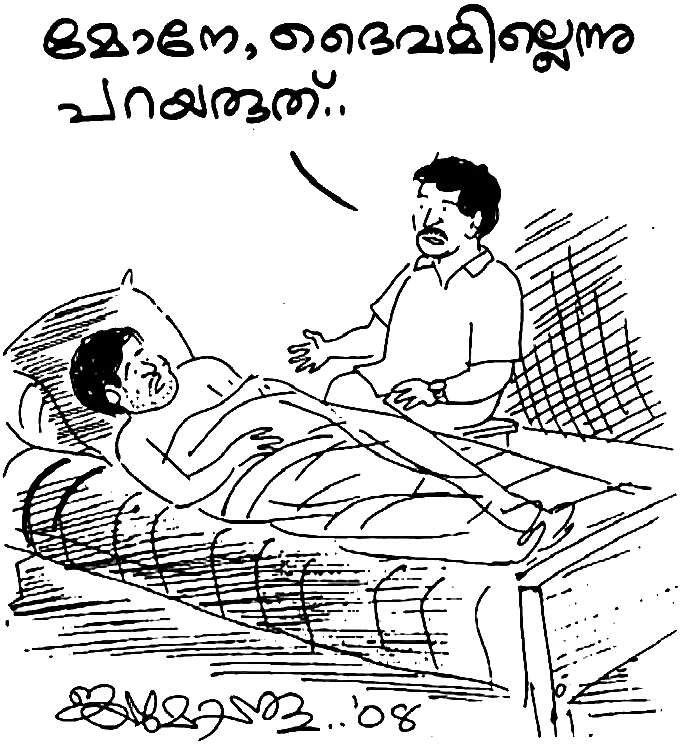ഉടനെ മോഹനൻ ചോദിച്ചു: പ്രപഞ്ചത്തിനു സത്യ ദൈവമോ? ആരാണാ ദൈവം?”
യാതൊര മുഖവുരയും കൂടാതെ ആ മനുഷൻ പറഞ്ഞു: “കൎത്താവായ യേശുക്രിസ്തുവാണു് ആ ദൈവം.” ഇതു് കേട്ടതും മോഹനനു ബേബിച്ചായനോട് എന്തെന്നില്ലാത്ത വെറുപ്പു് തോന്നി. കാരണം, കുടിയേറ്റക്കാരായ നാമധേയ കിസ്ത്യാനികളുടെ ഇടയിൽ ജനിച്ചു വളൎന്ന മോഹനൻ അവരുടെ പാപപങ്കിലമായ ജീവിതം അങ്ങേയറ്റം വെറുത്തിരുന്നു.
പള്ളിയിൽ പോകുന്നവരാണു് എങ്കിലും അവൎക്കു് യാതൊരു ദൈവഭയമോ ദൈവവുമായി ബന്ധമോ ഇല്ലായിരുന്നു. ആ മനുഷ്യൻ ഇത്രയും കൂടി പറഞ്ഞു; “പാപികളെ രക്ഷിക്കാൻ ലോകത്തിലേക്കു് വന്ന ഏക വ്യക്തി കൎത്താവായ യേശു ക്രിസ്തുവാണ്. സകല മനുഷ്യ വൎഗ്ഗത്തിന്റെയും രക്ഷകനാണു് യേശു. യേശു ക്രിസ്തുവിൽ കൂടെ അല്ലാതെ പാപമോചനമില്ല ക്രിസ്തുവിൽ ഹൃദയംഗമമായ് വിശ്വസിക്കുന്നവനു പാപമോചനവും നിത്യജീവനുമുണ്ട്. നീ ക്രിസ്തുവിൽ വിശ്വസിച്ചാൽ ഈ പാപമോചനവും നിത്യജീവനും സമാധാനവും സന്തോഷവും നിനക്കു് പ്രാപിക്കാം.”
ബേബിച്ചായന്റെ ഈ വാക്കുകൾ യാതൊരു ഭാവഭേദവും ആ വ്യക്തിയിൽ ഉളവാക്കിയില്ല. മോഹനൻ ആ വാക്കുകൾ അവഗണിച്ചു. മോഹനൻ താൻ പറയുന്നതു് ശ്രദ്ധിക്കുന്നില്ല എന്നു് കണ്ട ബേബിച്ചായൻ ചോദിച്ചു: “മോനേ, ഞാനൊന്നു പ്രാൎത്ഥിച്ചോട്ടെ?”
അദ്ദേഹത്തിന്റെ മറുപടി: “വേണമെങ്കിൽ പ്രാൎത്ഥിച്ചോ. കാരണം, എനിക്കു് പ്രാൎത്ഥിക്കണമെന്നു് താത്പര്യവുമില്ല.”
മാത്രമല്ല, മുപ്പത്തിമുക്കോടി ദൈവങ്ങളുണ്ടെന്ന് അവകാശപ്പെടുന്ന ഹിന്ദു മതത്തിൽ ജനിച്ചു വളൎന്നിട്ടും അറിയപ്പെട്ട അനേകം ദൈവങ്ങളിൽ ആശ്രയിച്ചിട്ടും യാതൊരു പ്രത്യാശയ്ക്കും വകയില്ലാതിരിക്കെ മോഹനന്റെ ഉള്ളിൽ ജീവിക്കണം എന്ന ആഗ്രഹം ഇല്ലായിരുന്നു. അതു് കൊണ്ടാണു് “വേണമെങ്കിൽ പ്രാൎത്ഥിച്ചോളൂ” എന്ന് അദ്ദേഹം പറഞ്ഞത്.
ഉടനെ ആ മനുഷ്യൻ മോഹനന്റെ കട്ടിലിന്റെ ചുവട്ടിൽ മുട്ടുകുത്തി, മോഹനനു വേണ്ടി പ്രാൎത്ഥിക്കാൻ തുടങ്ങി. ഹൃദയം നുറുങ്ങി വേദനയോടെ അയാൾ പ്രാൎത്ഥിച്ചു. കണ്ണുനീർ ഒഴുക്കിക്കൊണ്ടായിരുന്നു അദ്ദേഹം മോഹനനു വേണ്ടി പ്രാൎത്ഥിച്ചത്. അദ്ദേഹത്തിന്റെ പ്രാൎത്ഥനയുടെ ഏകദേശ രൂപം ഇങ്ങനെയായിരുന്നു:
“പ്രിയ പിതാവേ, ഈ മകന്റെ കണ്ണുകൾ അങ്ങു തുറന്നു കൊടുക്കണമേ. ഈ മോഹനനെ അങ്ങു സ്നേഹിക്കുന്നുവെന്നു് ഞാനറിയുന്നു. പ്രിയ കൎത്താവേ, ഈ യുവാവിനെ അങ്ങു രക്ഷിക്കണം. ഈ മകനെ പാപത്തിൽ നിന്നും രോഗത്തിൽ നിന്നും ശാപത്തിൽ നിന്നും വിടുവിക്കാൻ അങ്ങേയ്ക്കു് കഴിയും. മോഹനന്റെ ആന്തരിക കണ്ണുകൾ തുറന്ന്, അവിടുന്നു ജീവിക്കുന്നു എന്നു് വെളിപ്പെടുത്തി അവനെ രക്ഷിക്കണമേ …”
ഈ പ്രാൎത്ഥന നടക്കുമ്പോൾ തിരിഞ്ഞു കിടന്ന മോഹനൻ പ്രാൎത്ഥന കഴിഞ്ഞപ്പോൾ ഇങ്ങനെ ചിന്തിച്ചു: “ഇയാളും ഞാനുമായിട്ട് ഒരു ബന്ധവുമില്ല. ഇദ്ദേഹമൊരു ക്രിസ്ത്യാനി, ഞാനൊരു ഹിന്ദു. ഇദ്ദേഹത്തോട് എനിക്കു് യാതൊരു ഇടപാടുമില്ല. ഇദ്ദേഹത്തിന്റെ ഭാൎയ്യയുടെ വീടു് എന്റെ വീടിനടുത്താണ്. കണ്ടുപരിചയം ഉണ്ടെന്നല്ലാതെ, യാതൊരു സൗഹൃദവും ഞങ്ങൾ തമ്മിലില്ല. അങ്ങനെ ഇരിക്കെ മറ്റുള്ളവരിൽ നിന്നു് വ്യത്യസ്തനായി ഇദ്ദേഹം എന്തിനാണ് ഇങ്ങനെ കരയുന്നത് ?” മോഹനൻ ആലോചിക്കാൻ തുടങ്ങി.
ബേബിച്ചായൻ പ്രാൎത്ഥിച്ചു് എഴുന്നേറ്റു. പോകാൻ നേരം അദ്ദേഹം ആ യുവാവിനു കൈ കൊടുത്തു. പിന്നെ മോഹനനോടു് പറഞ്ഞു: “മോഹനാ, ഞാൻ ആറു വൎഷം മുമ്പുവരെ ഇങ്ങനെയല്ലായിരുന്നു. ഒരു ക്രിസ്തീയ കുടുംബത്തിൽ ജനിച്ചു വളൎന്നവനാണു് ഞാൻ. എങ്കിലും ഞാൻ യേശു ക്രിസ്തുവിനെ അറിഞ്ഞിരുന്നില്ല.”
മോഹനനെ സംബന്ധിച്ച് ഇതു് പുതിയ ഒരു അറിവായിരുന്നു! ക്രിസ്തീയ കുടുംബത്തിൽ ജനിച്ചുവളൎന്ന ഒരാൾ യേശു ക്രിസ്തുവിനെ അറിഞ്ഞില്ലെന്നു് പറയുക! അങ്ങനെ ഒരാളെ അദ്ദേഹം കാണുന്നതും ആദ്യമായായിരുന്നു. അതൊരു ദുഃഖകരമായ കാര്യമാണെന്നു് മോഹനൻ ചിന്തിച്ചു.
ബേബിച്ചായൻ തുടൎന്നു: “ദിവസവും നൂറ്റിച്ചില്വാനം സിഗരറ്റു ഞാൻ വലിക്കുമായിരുന്നു. ഒരു ലിറ്ററിലധികം ചാരായവും കുടിച്ചു. തോന്നിയതു പോലെയായിരുന്നു എന്റെ ജീവിതം. ഫലമോ, മാറാത്ത തലവേദനയും സ്വസ്ഥതയില്ലാത്ത ഒരു ജീവിതവുമായിരുന്നു എനിക്കുണ്ടായിരുന്നത്. ഞാൻ പള്ളിയിലെ കൈക്കാരനും കമ്മിറ്റിയംഗവുമായിരുന്നു. പക്ഷേ, യേശു ക്രിസ്തുവുമായി ബന്ധമുണ്ടായിരുന്നില്ല. മാറാത്ത തലവേദന കാരണം ജോലിചെയ്യാൻ എനിക്കു് കഴിയാതെയായി. അഞ്ചേക്കർ സ്ഥലം എനിക്കുണ്ട്. അവിടെ ജോലിചെയ്യാനാവാതെ വന്നു. അപ്പോൾ മണിപ്പാൽ മെഡിക്കൽ കോളജിലും പിന്നെ വെല്ലൂർ മെഡിക്കൽ കോളജിലുമായി രണ്ടു് ഓപ്പറേഷൻ എനിക്കു് നടന്നു. എന്നിട്ടും തലവേദന ഭേദമായില്ല.
“ഒടുവിൽ ഞാനൊരു കുടുംബ പ്രാൎത്ഥനയിൽ സംബന്ധിക്കാനിടയായി. പോട്ടയിലെ ധ്യാനകേന്ദ്രത്തിന്റെ പ്രാരംഭ ദശയിലുണ്ടായിരുന്ന ഭവനക്കൂട്ടായ്മകളുടെ ഒരു ഭാഗമായിരുന്നു ഇത്. ആ പ്രാൎത്ഥനാ യോഗത്തിൽ വച്ചു ഞാനിങ്ങനെ പ്രാൎത്ഥിച്ചു: ‘യേശുവേ, അങ്ങ് എന്നെ സഖ്യമാക്കിയല്ലാതെ ഞാൻ ഇവിടെ നിന്നു പോവുകയില്ല.’ അന്നു രാത്രിയിൽ ദൈവത്തിന്റെ ഒരു ദൎശനം എനിക്കുണ്ടായി. ദൈവീകമായ ഒരു പ്രകാശം എന്റെ മേൽ ഇറങ്ങി വന്നു. എന്റെ മാറാത്ത തലവേദന സൗഖ്യമായി!”
ഇത്രയും പറഞ്ഞിട്ട് അദ്ദേഹം മോഹനനോടു് പറഞ്ഞു: “മോനേ, ഞാൻ നിനക്കൊരു പുസ്തകം തരാം; യേശു ക്രിസ്തു നിനക്കു് സമാധാനവും നിത്യജീവനും പ്രത്യാശയും നൽകുന്നില്ലെങ്കിൽ ഞാൻ പിന്നെ ഈ സുവിശേഷം അറിയിക്കുകയില്ല. ഞാനൊരു വലിയ സുവിശേഷകൻ ഒന്നുമല്ല. എങ്കിലും യേശു എന്റെ ഉള്ളിൽ വന്നതു് മുതൽ രോഗികളോടും കഷ്ടത്തിൽ കഴിയുന്നവരോടും ഈ സുവിശേഷം അറിയിച്ചു വരുന്നു. എന്റെ ജോലി കഴിഞ്ഞുള്ള സമയമാണു് ഞാൻ ഇതിനു വേണ്ടി ഉപയോഗിക്കുന്നത്.”
ഒടുവിലായി അദ്ദേഹം പറഞ്ഞു: “ഞാനൊരു പുസ്തകം തരാം; വായിക്കണം കേട്ടോ.” ബൈബിളാണെന്ന് അദ്ദേഹം പറഞ്ഞില്ല. അതു് പറഞ്ഞിരുന്നെങ്കിൽ മോഹനൻ “വേണ്ടാ” എന്നു് പറഞ്ഞേനെ. ബേബിച്ചായൻ വിവേകത്തോടെ, ബുദ്ധിയോടെ ഇടപെട്ടു. ഇതു് പറഞ്ഞിട്ട് അദ്ദേഹം പോയി.
ഒരാഴ്ചയ്ക്കു് ശേഷം ഒരു പുതിയ വേദപുസ്തകം അദ്ദേഹം ഭാൎയ്യയുടെ കയ്യിൽ കൊടുത്തയച്ചു. വേദപുസ്തകവുമായി അദ്ദേഹത്തിന്റെ ഭാൎയ്യ വന്നു. അവരെ മോഹനനു പരിചയമുണ്ട്. തന്റെ അയൽവാസിയാണു് അവർ. ആനിയെന്നാണു് പേര്.
ബൈബിൾ കയ്യിൽ വാങ്ങിയിട്ടു് മോഹനൻ ചോദിച്ചു: “ആനിച്ചേച്ചീ, ഇത് എനിക്കു വായിക്കാൻ കഴിയുമോ?” ഹൈന്ദവ ഗ്രന്ഥങ്ങളെ പോലെ സംസ്കൃതത്തിലോ മറ്റോ ആയിരിക്കും എന്ന ധാരണയിലാണു് മോഹനൻ അങ്ങനെ ചോദിച്ചത്.
ഉടനെ ആ സഹോദരി പറഞ്ഞു: “മോനേ, ഇതു് നിനക്കു് വായിക്കാം. മലയാളത്തിലാണിത്. എല്ലാവൎക്കും വായിക്കാം, മനസ്സിലാക്കാം.”
ഇതു് പറഞ്ഞിട്ട് അവർ പുതിയ നിയമ ഭാഗം എടുത്തുകാണിച്ചു. “ആദ്യം പുതിയ നിയമം വായിക്കണം, പിന്നെ പഴയ നിയമം വായിച്ചാൽ മതി; അല്ലെങ്കിൽ നിനക്കു പെട്ടെന്നു് മനസ്സിലാകുകയില്ല” എന്ന നിൎദ്ദേശവും അവർ നൽകി. അങ്ങനെ, മോഹനൻ ബൈബിൾ വായന ആരംഭിച്ചു.
8
ആദ്യമായി ബൈബിൾ ലഭിച്ച മോഹനൻ വായിച്ചു തുടങ്ങി. ‘ക്രിസ്ത്യാനികളുടെ പുസ്തകമാണല്ലോ അതും അറിഞ്ഞിരിക്കാം’ എന്ന ചിന്തയോടെ മത്തായി, മൎക്കൊസ്, ലൂക്കൊസ് എന്നീ മൂന്നു പുസ്തകങ്ങൾ വായിച്ച അദ്ദേഹം മടുത്തു. എല്ലാം ഏകദേശം ഒരു പോലിരിക്കുന്നു. ഇതെന്തു പുസ്തകമാണു് ? തുടൎന്നു വരുന്ന നാലാം സുവിശേഷം താൻ വായിക്കാതെ വിട്ടു് കളഞ്ഞു. തുടൎന്നു അപ്പൊസ്തല പ്രവൃത്തികൾ മുതൽ വായിച്ചു തുടങ്ങി.
മാസങ്ങൾകൊണ്ട് ഏറെക്കുറെ ബൈബിൾ ഒരു വട്ടം വായിച്ചു തീൎത്ത മോഹനനു് യാതൊന്നും അതിൽ നിന്ന് മനസ്സിലായില്ല. അതോടു് കൂടെ സമയം തള്ളി നീക്കാൻ തന്റെ ജ്യേഷ്ഠൻ വായനശാലയിൽ നിന്നു് നോവലുകൾ ധാരാളമായി മോഹനനു് എത്തിച്ചു കൊടുത്തുകൊണ്ടിരുന്നു. വായിച്ചു കണ്ണൂ തളരുമ്പോൾ ഒന്നു മയങ്ങാൻ തുടങ്ങും. പക്ഷേ, മിനിറ്റുകൾക്കകം ഞെട്ടിയുണരും. ചിന്താകുലങ്ങളാൽ വേട്ടയാടപ്പെട്ട ആ യുവാവ് വീണ്ടും ബൈബിളിലേക്കു കണ്ണോടിച്ചു. പെട്ടെന്നുണ്ടായ ജിജ്ഞാസയാൽ താൻ മൂന്നു സുവിശേഷം വായിച്ചതിനു ശേഷം വായിക്കാതെ വിട്ടുകളഞ്ഞ യോഹന്നാന്റെ സുവിശേഷം ഒന്നു വായിച്ചു നോക്കാം എന്ന വിചാരമുണ്ടായി.
വായന പുരോഗമിക്കവെ യോഹന്നാൻ പതിന്നാലാം അദ്ധ്യായം ആറാം വാക്യത്തിൽ മോഹനന്റെ ശ്രദ്ധ പതിഞ്ഞു. “ഞാൻ തന്നെ വഴിയും സത്യവും ജീവനും ആകുന്നു; എന്നെ കൂടാതെ ആരും പിതാവിന്റെ അടുക്കൽ എത്തുന്നില്ല.” ഈ വാക്യം താൻ വീണ്ടും വീണ്ടും വായിച്ചു. പെട്ടെന്ന് ഈ വചനം തന്റെ ഹൃദയത്തിൽ പ്രവേശിച്ചു. “ഞാനാണു് വഴി, ഞാനാണു് സത്യം, ഞാനാണു് ജീവൻ.” ഭൂമിയിൽ അനേകം മഹാന്മാർ ഉണ്ടായിട്ടുണ്ടെങ്കിലും ഇത്ര സ്പഷ്ടമായി മനുഷ്യനു വഴിയും സത്യവും ജീവനും ആരു വെളിപ്പെടുത്തിയിട്ടുണ്ടു് ?
ഈ വാക്യത്താൽ ആത്മീയ ദൃഷ്ടി തുറക്കപ്പെട്ട മോഹനൻ ചിന്തിക്കാൻ തുടങ്ങി. പ്രപഞ്ച്ര സ്രഷ്ടാവിലേക്കുള്ള വഴി യേശു ക്രിസ്തുവാണെങ്കിൽ മതങ്ങൾ പറയുന്ന “പല വഴി സിദ്ധാന്തം” എങ്ങനെ സത്യമാകും? ഭൂമിയിൽവച്ചു പരസ്പരം കലഹിക്കുന്ന മതവിശ്വാസികൾ എങ്ങനെ സ്വൎഗ്ഗത്തിൽ ഒന്നിച്ചു വസിക്കും? കാണുന്ന മനുഷ്യനെ സ്നേഹിക്കാൻ കഴിയാത്ത മതവും ജാതിയും വൎഗ്ഗവും വൎണ്ണവും ഇസവും കാണാത്ത ദൈവസന്നിധിയിൽ എങ്ങനെയെത്തും? മോഹനന്റെ ചിന്തകൾക്കു തീപിടിച്ചതുപോലെയായി. ജീവിത നൈരാശ്യത്തിന്റെ നെല്ലിപ്പലകയിലെത്തിയ ആ യുവാവു് ഒരു നിധി കണ്ടെത്തിയവനെപ്പോലെ ബൈബിളിലെ പുതിയ നിയമ ഭാഗങ്ങൾ വീണ്ടും വായിച്ചു തുടങ്ങി.
ബൈബിളിലെ അവസാന പുസ്തകമായ വെളിപ്പാടിലെത്തിയപ്പോൾ വീണ്ടും തന്റെ ആന്തരിക ദൃഷ്ടി 3:19-20 വാക്യങ്ങളിൽ പതിഞ്ഞു. “എനിക്കു് പ്രിയമുള്ളവരെ ഒക്കെയും ഞാൻ ശാസിക്കുകയും ശിക്ഷിക്കുകയും ചെയ്യുന്നു; ആകയാൽ നീ ജാഗ്രത ഉള്ളവനായിരിക്ക; മാനസാന്തരപ്പെടുക. ഞാൻ വാതിൽക്കൽ നിന്നു് മുട്ടുന്നു; ആരെങ്കിലും എന്റെ ശബ്ദം കേട്ടു് ഹൃദയ വാതിൽ തുറന്നാൽ ഞാൻ അവന്റെ അടുക്കൽ ചെന്ന് അവനോടും അവൻ എന്നോടും കൂടെ അത്താഴം കഴിക്കും.” ഈ വാക്യം വായിച്ച മോഹനൻ കോരിത്തരിച്ചുപോയി. ഇത് ഒരു ദൈവീക വെളിപ്പാടായി തനിക്ക് അനുഭവപ്പെട്ടു.
മരിച്ചടക്കപ്പെട്ട് ഉയിൎത്തെഴുന്നേറ്റ യേശു ക്രിസ്തു അമ്പതു വൎഷങ്ങൾക്കു ശേഷം തന്റെ അരുമശിഷ്യനായ യോഹന്നാനു മധ്യധരണിയാഴിയിലെ ഒരു ചെറു ദ്വീപായ പത്മൊസിൽ പ്രത്യക്ഷനായി അരുളിച്ചെയ്ത വചനമാണു് നാം വായിച്ചത്. ആ വാക്യത്തിന്റെ പൊരുൾ തനിക്കു് വേഗത്തിൽ ഗ്രഹിക്കാൻ കഴിഞ്ഞു. ദൈവം താൻ സ്നേഹിക്കുന്നവരെയാണു് ശിക്ഷിക്കുന്നതും ശാസിക്കുന്നതും. അങ്ങനെയെങ്കിൽ തന്റെ കഷ്ടത ദൈവത്തിൽ നിന്നുള്ള സ്നേഹത്തിന്റെ അടയാളമായ ബാലശിക്ഷയാണെന്നു തനിക്കു് മനസ്സിലായി.
എങ്കിൽ അടുത്ത വാക്യം പറയുന്നത് “ആകയാൽ താൻ ജാഗ്രതയുള്ളവനാകണം” എന്നാണ്. ഇതു് വായിച്ച താൻ ശ്രദ്ധാലു വാകണം. എന്തുകൊണ്ടാണു ദൈവം തന്നെ ശിക്ഷിച്ചതു് ? അതു് തന്റെ പാപപ്രവൃത്തിയാലാണ്. ഇന്നുവരെ താൻ സത്യദൈവത്തെ അറിഞ്ഞു വിശ്വസിച്ച് അനുസരിച്ചു ജീവിച്ചിട്ടില്ല. എങ്കിൽ മൂന്നാമത്തെ വാക്യം മാനസാന്തരപ്പെടുവാനുളള കൽപ്പയാണ്. ദൈവം ആഹ്വാനം നൽകുന്നതു് മോഹനനു മനസ്സിലായി. “എന്റെ കഴിഞ്ഞകാല ജീവിതത്തിൽ നിന്നും ഞാൻ അനുതപിക്കേണ്ടിയിരിക്കുന്നു. ജീവിതത്തിന്റെ പരുപരുത്ത യാഥാൎത്ഥ്യങ്ങളിൽക്കൂടെ ഞെങ്ങിഞെരുങ്ങി നെടുവീൎപ്പിട്ടു് കരയുന്ന ഒരു യുവാവിന്റെ ഹൃദയത്തിൽ വറ്റിവരണ്ട മരുഭൂമിയിൽ പെയ്ത മഴപോലെയായി ഈ വേദ ഭാഗം. കുട്ടിക്കാലത്തു മാതാപിതാക്കൾ നമ്മെ ശിക്ഷിച്ചു വളൎത്തുന്നത് ഒരിക്കലും നമ്മെ നശിപ്പിക്കാനല്ലല്ലോ. നമ്മുടെ ഭാവി അനശ്വരമാക്കി തീൎക്കുന്നതിനായിട്ടാണ്. എങ്കിൽ നമ്മെ സ്നേഹിക്കുന്ന ഒരു ദൈവമുണ്ടെങ്കിൽ, നമ്മെ ശിക്ഷിക്കാനും ശാസിക്കാനും പഠിപ്പിക്കാനും ആ ദൈവത്തിന് അധികാരമില്ലേ? തീൎച്ചയായുമുണ്ട്.
9
ഒരു ദിവസം മോഹനൻ കിടക്കുന്ന ഷെഡിൽ പിതാവു കയറി വന്നപ്പോൾ താൻ ബൈബിൾ വായിക്കുകയായിരുന്നു. ഇതേതാണു് പുസ്തകം എന്ന പിതാവിന്റെ ചോദ്യത്തിനു “ബൈബിൾ” എന്ന മറുപടി അദ്ദേഹത്തിന് ഒട്ടും രസിച്ചില്ല. കാരണം, വളരെ വൎഷങ്ങൾക്കു് മുമ്പു് തന്റെ സ്ഥലം അപഹരിച്ച ക്രിസ്ത്യാനികളോടു് അല്ലെങ്കിൽ തന്നോടു് വഴക്കു് കൂടുന്നവരോട് അദ്ദേഹത്തിനു ഒരു വിധത്തിലും ചേൎന്നു പോകാൻ കഴിഞ്ഞിരുന്നില്ല. അങ്ങനെയിരിക്കെ ആണു് മോഹനൻ ബൈബിൾ വായിക്കുന്നത്. ഇതു് ഒരു വിധത്തിലും ആ പിതാവിനു ഉൾക്കൊള്ളാൻ കഴിയുമായിരുന്നില്ല.
അതുകൊണ്ടു് മോഹനൻ ബൈബിൾ വായിക്കുന്നതു് രസിക്കാതെ പിതാവു് ഇറങ്ങിപ്പോയി. അപ്പോഴേക്കും മോഹനൻ കിടപ്പിലായിട്ടു് ആറു് മാസം കഴിഞ്ഞു. ഈ നാളുകളിൽ മാതാപിതാക്കളുടെ ശകാരവും കുറ്റപ്പെടുത്തലുകളും ഏറിവന്നപ്പോൾ മോഹനന്റെ ജ്യേഷ്ഠൻ ഇടപെട്ടു. ജ്യേഷ്ഠനുമായി മാതാപിതാക്കൾ വഴക്കു് കൂടിയപ്പോൾ പിന്നെ ജ്യേഷ്ഠനെ വീട്ടിൽ കയറ്റുകയില്ല എന്ന നിലവന്നു. മോഹനൻ ഇതിന്റെ ഇടയിൽ കിടന്നു ഞെരുങ്ങി. തന്നെ ശുശ്രൂഷിക്കുന്ന ജ്യേഷ്ഠനെ വീട്ടിൽ കയറ്റാതായപ്പോൾ മോഹനന്റെ ദിനചര്യകൾ പോലും മുടങ്ങി. ഇതിനിടയിൽ സഹിക്കവയ്യാതായപ്പോൾ താൻ ആദ്യത്തെ ആത്മഹത്യാശ്രമം നടത്തി. കൈകൊണ്ടു് നെഞ്ചത്തു മാറിമാറി ഇടിച്ച മോഹനൻ ബോധംകെട്ടു വീണതല്ലാതെ മരിച്ചില്ല.
തനിക്കാരുമില്ലല്ലോ എന്ന ചിന്ത അദ്ദേഹത്തെ ഏറെ തളൎത്തി. താൻ ആശുപത്രിയിൽ ആയിരുന്നപ്പോൾ തന്റെ ഭാൎയ്യയെ വീട്ടുകാർ തിരുവനന്തപുരത്ത് അവളുടെ ബന്ധുവീട്ടിലേക്കു് കൊണ്ടുപോയിരുന്നു. ഈ നാളുകളിൽ, തങ്കമണി തന്റെ കുഞ്ഞിനു ജന്മം നൽകി. ഈ വാൎത്ത കേട്ട മോഹനനു സന്തോഷവും സങ്കടവും കൊണ്ടു് കരയുവാനല്ലാതെ ആ കുഞ്ഞിനെ ഒന്നു കാണുവാൻ പോലും കഴിഞ്ഞില്ല. തന്റെ കുഞ്ഞിനു മോഹനൻ ജയപ്രകാശ് എന്നു് പേര് എഴുതി അയച്ചു. ഒരു പിതാവിന്റെ കടമ നിറവേറ്റാൻ കഴിയാത്ത മോഹനൻ ആ നാളുകളിൽ അനുഭവിച്ച മനോവേദന വാക്കുകളിൽ വൎണ്ണിക്കാൻ ആൎക്കും സാധ്യമല്ല. മോഹനന്റെ ജീവിതകഥ പുസ്തകമായി എഴുതാൻ മോഹനന്റെ അടുത്തു പോയ ഗ്രന്ഥകാരനു നീണ്ട ഇരുപതു വൎഷം മുൻപുള്ള കദനകഥ കേട്ടപ്പോൾ കരയാതിരിക്കാൻ കഴിഞ്ഞില്ല. കരഞ്ഞുകൊണ്ട് ഈ കണ്ണീൎക്കഥ ഞാനെഴുതി തീൎത്തു. ഇരുപത്തിനാലാം വയസ്സിൽ ശരീരത്തിന്റെ പകുതി ഭാഗം തളൎന്നു പോയ ആ യുവാവിനെ ആറു് മാസത്തിനുള്ളിൽ മാതാപിതാക്കൾ ഉപേക്ഷിച്ചു. ബന്ധുജനങ്ങൾ കൈവിട്ടു. കൂട്ടുകാരും മടുത്തു പിന്മാറി. ഭാൎയ്യയെ വീട്ടുകാർ കൊണ്ടുപോയി. മുങ്ങി ചാകുന്ന മനുഷ്യന്റെ മുമ്പിലെ ഒരു കച്ചിത്തുരുമ്പു പോലെ മോഹനനെ ജ്യേഷ്ഠൻ തന്റെ കൊച്ചു വീട്ടിലേക്ക് എടുത്തു കൊണ്ടുപോയി ശുശ്രൂഷിച്ചു.
10
കുടുംബത്തിൽ നിന്നു് ഉപേക്ഷിക്കപ്പെട്ട മോഹനൻ തന്റെ അനുഭവം സ്വന്തഭാഷയിൽ പറയുന്നതിങ്ങനെയാണ്:
“ജീവതത്തിൽ ഒരിക്കലും അനുഭവിച്ചിട്ടില്ലാത്ത വിധം നിരാശ എന്റെ ഹൃദയത്തിൽ നിറഞ്ഞു. എന്നെ ജ്യേഷ്ഠ സഹോദരനും ചില നല്ലവരായ നാട്ടുകാരും ചേൎന്നു ജ്യേഷ്ഠന്റെ ഭവനത്തിലേക്കു് കൊണ്ടു് പോയി. സഹോദരന്റെ മുന്നു മക്കളോടു കൂടെ നാലാമത് ഒരു മകനെ പോലെ ഞാൻ അവിടെ കഴിഞ്ഞു.
“ഇതിനിടയിൽ ബൈബിൾ വായിച്ചപ്പോൾ ചില സത്യങ്ങൾ ഹൃദയത്തിൽ തട്ടിയെങ്കിലും ഞാൻ യേശുവിനെ സ്വീകരിച്ചിരുന്നില്ല. ജ്യേഷ്ഠന്റെ ഭവനത്തിൽ വച്ചു മാതാപിതാക്കളാലുള്ള നീരസങ്ങളാൽ കേൾക്കേണ്ടി വന്ന അപഖ്യാതിയും കുറ്റപ്പെടുത്തലും വീണ്ടും വീണ്ടും അനുഭവിക്കേണ്ടി വന്നു. പിതാവിന്റെ ഭവനത്തിൽ നിന്നും കേവലം മുന്നു വീടുകൾക്കു് അപ്പുറമാണു് ജ്യേഷ്ഠ സഹോദരൻ താമസിക്കുന്നത്. ജ്യേഷ്ഠൻ എത്ര താത്പര്യം കാണിച്ചെങ്കിലും ഒരു കാൎയ്യം എനിക്കു് സ്പഷ്ടമായിരുന്നു: ഇനി എത്രനാൾ ഇങ്ങനെ കഴിയും?
“ഞാൻ ജ്യേഷ്ഠനോടു് പറഞ്ഞു: ‘ജ്വേഷ്ഠാ, ഞാൻ ചെറുപ്പമാണ്. എനിക്ക് 24 വയസ്സ് മാത്രമാണ്. ഞാൻ ഇനിയും ദൈവം ആയുസ്സ് തന്നാൽ 50 വൎഷവും കൂടെ ജീവിച്ചേക്കാം. നമുക്കാൎക്കും അറിയില്ലല്ലോ.’
“ജ്യേഷ്ഠൻ പറഞ്ഞു: ‘ഞാൻ ജീവിച്ചിരിക്കുന്ന കാലം ഞാൻ ഭക്ഷണം കഴിക്കുന്നെങ്കിൽ നിനക്കും ലഭിക്കും. പട്ടിണിയാണെങ്കിൽ നമുക്ക് ഒന്നിച്ചു പട്ടിണി കിടക്കാം.’
“ഏതായാലും ജ്യേഷ്ഠന്റെ വാക്കുകളെ മറുത്തു് ഞാൻ ഒന്നും പറഞ്ഞില്ല.
“എങ്കിലും എനിക്കറിയാമായിരുന്നു ജ്യേഷ്ഠനും വേഗം മടുക്കും. ഒരു ശരീരത്തിന്റെ പകുതി മരിച്ച മനുഷ്യനെ ആൎക്കു് സംരക്ഷിക്കാൻ കഴിയും? ജ്യേഷ്ഠന്റെ ഭവനത്തിൽ എത്തിയ എനിക്കു് യാതൊരു സമാധാനവും ഇല്ലായ്കയാൽ ബൈബിളിൽ നിന്നു് ഞാൻ കണ്ടെത്തിയ ചില വാക്യങ്ങളെ കുറിച്ചു് ചിന്തിക്കുവാൻ തുടങ്ങി. പക്ഷേ എത്ര ശ്രമിച്ചിട്ടും മനസ്സിനെ നിയന്ത്രിക്കുവാൻ കഴിയുന്നില്ല.”
ആദ്യമായി ബൈബിൾ ലഭിച്ച മോഹനൻ അതു് വായിച്ചു തുടങ്ങിയെങ്കിലും അതു ക്രിസ്ത്യാനികളുടെ മത ഗ്രന്ഥമാണെന്നാണു് കരുതിയിരുന്നത്. ബൈബിൾ വായനയിൽ ചില സദുപദേശങ്ങൾ കണ്ടെത്താൻ മോഹനനു കഴിഞ്ഞു. അവ പ്രമാണിക്കാൻ മോഹനൻ ശ്രമിച്ചു നോക്കി. “സ്വൎഗ്ഗസ്ഥനായ ഞങ്ങളുടെ പിതാവേ” എന്ന പ്രാൎത്ഥന പല പ്രാവശ്യം ചൊല്ലി നോക്കി. ഫലം നാസ്തി! അങ്ങനെ ഇരിക്കെയാണു് മോഹനനു ബൈബിൾ നൽകിയ ബേബിച്ചായൻ വീണ്ടും എത്തുന്നത്.
മോഹനൻ ബേബിച്ചായനോടു് പറഞ്ഞു: “ബൈബിളിൽ നല്ല ഉപദേശങ്ങളുണ്ട്. അവ പാലിക്കാനുള്ള മാൎഗ്ഗമെന്താണു് ? തെറ്റു ചെയ്യരുതെന്നു് ബൈബിളിൽ കാണുന്നു. എന്നാൽ, ഞാൻ തെറ്റു ചെയ്തു പോകുന്നു. ഉദാഹരണമായി, കോപിക്കുന്നതു് കൊലപാതകമാണെന്നു് ബൈബിൾ പറയുന്നു; ഞാൻ വീട്ടുകാരോടെല്ലാം കോപിക്കുന്നു. സ്ത്രീയെ മോഹിക്കുന്നതു് പാപമാണെന്നു് പറയുന്നു. എനിക്കു് ദുൎമ്മോഹം ഉണ്ടാകാറുണ്ട്. മതങ്ങളിലെല്ലാം സദുപദേശങ്ങളുണ്ട്. എന്നാൽ, ഉപദേഷ്ടാക്കന്മാൎക്കു് തന്നെ അവരെഴുതിയ ഉപദേശങ്ങൾ പ്രമാണിക്കാൻ കഴിയുന്നില്ല. ഇതാണു് മനുഷ്യരുടെ പ്രശ്നം. നന്മ ചെയ്യാനാണു് എന്റെ താത്പര്യം. പക്ഷേ, ഞാൻ ചെയ്യുന്നതു് എനിക്കിഷ്ടമില്ലാത്ത തിന്മയാണ്. അയ്യോ! ഞാൻ അരിഷ്ട മനുഷ്യൻ (wretched - നീചൻ). ഇതാണു് മനുഷ്യന്റെ അവസ്ഥ.”
മോഹനൻ വീണ്ടും ബേബിച്ചായനോടു് ചോദിച്ചു: “ക്രിസ്ത്യാനികളായ നിങ്ങളും ഇങ്ങനെത്തന്നെയാണോ? ഇതു് പ്രമാണിക്കാൻ നിങ്ങൾക്കു് കഴിയില്ലേ?”
ഉടനെ ബേബിച്ചായൻ ബൈബിളിൽ നിന്നു് ഒരു ഭാഗം കാണിച്ചു കൊടുത്തു: “നീതിമാൻ ആരുമില്ല; ഒരുത്തൻ പോലുമില്ല. ഗ്രഹിക്കുന്നവൻ ഇല്ല; ദൈവത്തെ അന്വേഷിക്കുന്നവനുമില്ല. എല്ലാവരും വഴിതെറ്റി ഒരുപോലെ കൊള്ളരുതാത്തവരായി തീൎന്നു. നന്മ ചെയ്യുന്നവനില്ല, ഒരുത്തൻ പോലുമില്ല. അവരുടെ തൊണ്ട തുറന്ന ശവക്കുഴി. നാവു കൊണ്ടു് അവർ ചതിക്കുന്നു; സൎപ്പവിഷം അവരുടെ അധരങ്ങൾക്കു് കീഴെയുണ്ട്. അവരുടെ വായിൽ ശാപവും കൈപ്പും നിറഞ്ഞിരിക്കുന്നു. അവരുടെ കാൽ രക്തം ചൊരിയാൻ ബദ്ധപ്പെടുന്നു. നാശവും അരിഷ്ടതയും അവരുടെ വഴികളിലുണ്ടു്. സമാധാന മാൎഗ്ഗം അവർ അറിഞ്ഞിട്ടില്ല. അവരുടെ ദൃഷ്ടിയിൽ ദൈവഭയം ഇല്ല” റോമൎക്കെഴുതിയ ലേഖനം 3:10-18.
“ഈ വാക്യം എനിക്കു് കാണിച്ചുതന്നപ്പോൾ ഞാൻ അത്ഭുതപ്പെട്ടു് പോയി. മനുഷ്യവൎഗ്ഗത്തിന്റെ മുഴുവൻ പ്രശ്നവും ഈ വാക്യത്തിൽ അടങ്ങിയിരിക്കുന്നു. ഏതു മതത്തിലും ജാതിയിലും പെട്ടവനായാലും മനുഷ്യൻ പാപിയാണെന്ന സത്യം എനിക്കു് മനസ്സിലായി.”
മറ്റൊരു വാക്യവും കൂടി ബേബിച്ചായൻ മോഹനനു കാട്ടിക്കൊടുത്തു.
യോഹന്നാൻ എഴുതിയ ഒന്നാം ലേഖനത്തിന്റെ ഒന്നാം അദ്ധ്യായം ഏഴാം വാക്യം മുതൽ ഒമ്പതാം വാക്യം വരെ: “അവൻ (ദൈവം) വെളിച്ചത്തിൽ ഇരിക്കുന്നതു് പോലെ നാം വെളിച്ചത്തിൽ നടക്കുന്നു എങ്കിൽ നമുക്കു് തമ്മിൽ കൂട്ടായ്മയുണ്ട്. അവന്റെ പുത്രനായ യേശുവിന്റെ രക്തം സകല പാപവും പോക്കി നമ്മെ ശുദ്ധീരിക്കുന്നു. നമ്മുക്കു് പാപമില്ല എന്നു് നാം പറയുന്നുവെങ്കിൽ നമ്മെ തന്നെ വഞ്ചിക്കുന്നു. സത്യം നമ്മിൽ ഇല്ലാതെയായി. നമ്മുടെ പാപങ്ങളെ ഏറ്റു പറയുന്നു എങ്കിൽ അവൻ നമ്മോടു പാപങ്ങളെ ക്ഷമിച്ചു സകല അനീതിയും പോക്കി നമ്മെ ശുദ്ധീകരിക്കാൻ തക്കവണ്ണം വിശ്വസ്തനും നീതിമാനും ആകുന്നു.”
ഈ വചനങ്ങളിലൂടെ ദൈവം മോഹനനോടു് സംസാരിക്കാൻ തുടങ്ങി. താനൊരു പാപിയാണെന്നും പാപിക്കു് രക്ഷ നൽകുന്നതു് ക്രിസ്തുവാണെന്നും മോഹനനു മനസ്സിലായി. 1986 ഒക്ടോബറിലെ ഒരു രാത്രിയിൽ മോഹനൻ ശാരീരികവും മാനസികവുമായ വേദനമൂലം കരയാൻ തുടങ്ങി.
11
ആ രാത്രിയിൽ മോഹനന്റെ ജീവിതത്തിൽ അതു സംഭവിച്ചു. അൎദ്ധരാത്രി ആയിക്കാണും. പെട്ടെന്നു് അശരീരി പോലെ ആത്മാവിൽ ഒരു ശബ്ദമുണ്ടായി: “ഒന്നുകിൽ, നീ ജീവിക്കുന്ന ദൈവത്തെ വിളിച്ചപേക്ഷിച്ചു രക്ഷ പ്രാപിക്കുക; അല്ലെങ്കിൽ നീ നിത്യ നരകത്തിൽ വീണു നശിച്ചു പോകും.”
ഈ ശബ്ദം സാക്ഷാൽ സത്യ ദൈവത്തിന്റേതു് ആയിരുന്നു എന്നു് മോഹനനു മനസ്സിലായി. അന്നു രാത്രിയിൽ രണ്ടും കൽപ്പിച്ചു മരിച്ചു് അടക്കപ്പെട്ടു് ഉയിൎത്തെഴുന്നേറ്റു എന്നു് ബൈബിൾ പ്രസ്താവിക്കുന്ന യേശുവിനോടു് ആദ്യമായി പ്രാൎത്ഥിച്ചു: “ദൈവമേ, ഞാൻ പാപിയായ ഒരു മനുഷ്യനാണു്.”
ഇത്രയും സമ്മതിക്കുമ്പോഴേക്കും, തന്റെ കഴിഞ്ഞ കാലത്തു സംഭവിച്ചു പോയ അനവധി രഹസ്യ പാപങ്ങൾ ദൈവം ഓൎമ്മിപ്പിക്കാൻ തുടങ്ങി. 24 വയസ്സു മുതൽ പുറകോട്ടു് 5 വയസ്സു വരെയുള്ള പാപങ്ങൾ ഓരോന്നായി ഒരു ചലച്ചിത്രത്തിൽ കാണുന്നതു് പോലെ മോഹനൻ കണ്ടു. അന്നു വരെ ഒരു പാപിയാണെന്നു സ്വയം സമ്മതിക്കാതിരുന്ന മോഹനൻ ഉച്ചത്തിൽ നിലവിളിച്ചു. ഉടനെ യേശു ക്രിസ്തുവിന്റെ ഒരു ദൎശനം മോഹനനുണ്ടായി. ഒരു കുഞ്ഞിനെ ആശ്വസിപ്പിക്കുന്നതു് പോലെ മോഹനനെ കൎത്താവ് ആശ്വസിപ്പിച്ചു. യേശു ജീവിക്കുന്ന ദൈവമാണെന്നു് മോഹനനു മനസ്സിലായി.
നിലവിളി കേട്ടുണൎന്ന ജ്യേഷ്ഠൻ മോഹനനോടു് ചോദിച്ചു; “എന്താ മോനേ നിലവിളിച്ചതു് ?” പ്രാൎത്ഥിച്ചതായിരുന്നു എന്നു് മോഹനൻ മറുപടി നൽകി. കഴിഞ്ഞ എട്ടു് മാസങ്ങളായി വേണ്ടത്ര ഉറക്കമില്ലാതിരുന്ന ആൾ അന്നു രാത്രിയിൽ സുഖമായി ഉറങ്ങി—ഒരു ശിശുവിനെപ്പോലെ. സമാധാനവും സന്തോഷവും പ്രത്യാശയും ജീവിതത്തിൽ നിറഞ്ഞു. സമാധാനത്തെ കുറിച്ചു് മോഹനൻ നായർക്കു പറയാനുള്ളതു കേൾക്കുക:
“സമാധാനമെന്നതു് ഇന്നു് മനുഷ്യ ജീവിതത്തിൽ ദുർലഭമാണ്. എന്താണു് സമാധാനം? യേശു ക്രിസ്തു ഇങ്ങനെയാണു് പറഞ്ഞത്: ‘എന്റെ സമാധാനം ഞാൻ നിങ്ങൾക്കു തരുന്നു; ലോകം തരുന്നതു് പോലെയല്ല ഞാൻ നിങ്ങൾക്കു് തരുന്നതു് (യോഹന്നാൻ 14:27). സാഹചര്യം അനുകൂലമാകുമ്പോൾ ലഭിക്കുന്ന സമാധാനത്തെ കുറിച്ചാണു് നാം പലപ്പോഴും ചിന്തിക്കുന്നത്. എന്നാൽ അതല്ല സമാധാനം.
“ഒരിക്കൽ ഒരാൾ എന്നോടു് പറഞ്ഞു: ‘വിവാഹം കഴിക്കാതിരിക്കുമ്പോൾ സമാധാനമില്ല; വിവാഹം കഴിച്ചു കഴിയുമ്പോൾ സമാധാനമുണ്ട്. വീടുണ്ടാകുമ്പോൾ സമാധാനമുണ്ട്; വീടു് നഷ്ടപ്പെടുമ്പോൾ സമാധാനം പോയി.’ ഇതല്ല സമാധാനം. എന്റെ ജീവിതത്തിൽ, സാഹചര്യം മുഴുവൻ പ്രതികൂലമായിരുന്നപ്പോൾ യേശു എന്റെ ഉള്ളിൽ വന്നു. അപ്പോഴാണ് എനിക്കു് സമാധാനം ലഭിച്ചത്.
“ദൈവവുമായുള്ള മനുഷ്യന്റെ ബന്ധം നഷ്ടപ്പെട്ട അന്നു മുതൽ മനുഷ്യനു സമാധാനമില്ല. ഇന്ന്, രാഷ്ട്രങ്ങൾക്കും വ്യക്തികൾക്കും സമാധാനമില്ല. സമാധാനത്തിനായി മനുഷ്യൻ പല വഴികൾ തേടുകയാണ്. മദ്യപാനം, മയക്കു് മരുന്നു ദുരുപയോഗം, ലൈംഗികാസ്വാദനം എന്നിവയിലൂടെ സമാധാനം കണ്ടെത്താൻ ഉത്സാഹിക്കുന്നു. പക്ഷേ, ലഭിക്കുന്നതു് അസമാധാനം മാത്രമാണ്. എന്നാൽ, മനുഷ്യനു സമാധാനം നൽകാൻ കൎത്താവായ യേശു ക്രിസ്തു കഷ്ടമനുഭവിച്ചു. ‘നമ്മുടെ സമാധാനത്തിനായുള്ള ശിക്ഷ അവന്റെ മേലായി’ എന്നാണു് തിരുവചനം അതിനെക്കുറിച്ചു് പറയുന്നത്.
“മനുഷ്യാ, പണം നിനക്കു് സമാധാനം നൽകുകയില്ല. ആയുസ്സിന്റെ മദ്ധ്യത്തിൽ അതു് നിന്നെ വിട്ടു് പറന്നകലും. പ്രതാപം, സ്ഥാനമാനങ്ങൾ, വാഹനം, ജോലി, ദുശ്ശീലങ്ങൾ ഇവയ്ക്കൊന്നും തന്നെ സമാധാനം നൽകാൻ കഴിവില്ല. ജീവിതത്തിൽ യാതൊരു പ്രതീക്ഷയ്ക്കും വകയില്ലാതെ, അരക്കു് കീഴ്വശം തളൎന്നു പോയ എന്റെ ജീവിതത്തിൽ യേശു വന്നു. അപ്പോൾ അവൎണ്ണനീയമായ സമാധാനം, സ്വസ്ഥത, പ്രത്യാശ എന്നിവ എന്റെ ജീവിതത്തിൽ നിറഞ്ഞു.
“ഈ ജീവിക്കുന്ന ദൈവത്തിൽ ഏതു മനുഷ്യനും നിത്യ സമാധാനത്തിലേക്കു് പ്രവേശിക്കാൻ കഴിയും. ‘വിശ്വസിച്ചവരായ നാമല്ലോ സ്വസ്ഥതയിൽ പ്രവേശിക്കുന്നതു് ’ എന്ന വചനം ജീവിതത്തിൽ അന്വൎത്ഥമാകുന്നതു് അനുഭവിച്ചറിയാം. മനുഷ്യ ജീവിതത്തിലെ സാഹചര്യം ആൎക്കും നിയന്ത്രിക്കാൻ കഴിയില്ല. അതു് നമ്മുടെ നിയന്ത്രണത്തിനു അപ്പുറമാണ്. നാം പ്രതീക്ഷിക്കുന്നതു് അല്ലല്ലോ സംഭവിക്കുന്നത്. എന്നാൽ, സാഹചര്യം ഏതായാലും ഒരു ക്രിസ്തു ശിഷ്യനു ഏറെ സമാധാനമുണ്ട്.
“മനുഷ്യന്റെ സന്തോഷമില്ലായ്മയ്ക്കും അസമാധാനത്തിനും കാരണം പാപമാണ്. പാപത്തിനു പരിഹാരം വരുത്തിയെങ്കിൽ മാത്രമേ സന്തോഷവും സമാധാനവുമുണ്ടാകൂ. ലോകത്തിന്റെ പാപം ചുമന്നു മാറ്റിയ യേശു ക്രിസ്തുവിൽ കൂടി മാത്രമേ പാപത്തിനു പരിഹാരമുള്ളൂ. സ്നേഹനിധിയായ യേശു നിങ്ങളെയും സ്നേഹിക്കുന്നു. നാം പാപികളായിരിക്കുമ്പോൾ, ബലഹീനരായിരിക്കുമ്പോൾ, നമ്മെ ആരും സ്നേഹിക്കാൻ ഇല്ലാതിരിക്കുമ്പോൾ യേശു നമ്മെ സ്നേഹിക്കുന്നു. നമുക്ക് ആശ്രയിക്കാവുന്ന, മാതൃകയാക്കാവുന്ന ഈ നല്ല രക്ഷകനെ നമുക്കു് സ്വീകരിക്കാം. നിങ്ങളുടെ ഹൃദയവാതിൽ ഈ നല്ല രക്ഷകനെ സ്വീകരിക്കാൻ തുറന്നു കൊടുക്കുമോ?”
പിറ്റേന്നു രാവിലെ ഉറക്കമുണൎന്ന മോഹനൻ യേശുവിനോടു് പ്രാൎത്ഥിച്ചു പാട്ടു് പാടി സ്തുതിച്ചു. ദൈവ വചനമായ ബൈബിൾ വായിക്കാൻ തുടങ്ങി. മത്തായി എഴുതിയ യേശുവിന്റെ ജീവചരിത്രം മുതൽ വായന തുടങ്ങി. പ്രാരംഭത്തിലുള്ള തലമുറകളുടെ പട്ടിക (വംശാവലി) വിരസമായി തോന്നി. എന്നാൽ, അതിൽ നിന്നു് ചില കാര്യങ്ങൾ ദൈവം മോഹനനു മനസ്സിലാക്കി കൊടുത്തു.
ഓരോ ദിവസവും ഒരു പുസ്തകമെന്ന നിലയിൽ വായന മുന്നേറി. ക്രിസ്ത്യാനികളുടെ മത്രന്ഥമെന്നു് പുച്ഛിച്ചു തള്ളിയിരുന്ന ബൈബിൾ മോഹനനു പുതിയ ഒരനുഭവമാണു് നൽകിയത്. ബൈബിൾ മനുഷ്യ വൎഗ്ഗത്തിന്റെ ഏക രക്ഷാമാൎഗ്ഗമായ യേശു ക്രിസ്തുവിനെ വരച്ചു കാട്ടുന്ന അതുല്യ ഗ്രന്ഥമാണ്. ഇതൊരു മതഗ്രന്ഥമല്ല. മതഗ്രന്ഥത്തിനാണു് മനുഷ്യന്റെ സംരക്ഷണം ആവശ്യമുള്ളത്. ബൈബിളിന്റെ സംരക്ഷകൻ ദൈവമാണ്. ഇത്ര അധികം എതിൎപ്പുകളും വിമൎശനങ്ങളും ദൂഷണങ്ങളും നേരിടുന്ന വേറൊരു ഗ്രന്ഥമില്ല. ഇത്രയധികം വായിക്കുകയും വിലക്കപ്പെടുകയും ചെയ്യുന്ന മറ്റൊരു പുസ്തകവുമില്ല. അതുകൊണ്ടു് നിങ്ങൾ ബൈബിൾ വായിക്കാൻ ഉത്സാഹിക്കുക. നിങ്ങൾ ആരാണെന്നും, യേശു നിങ്ങൾക്കു് ആരാകുന്നു എന്നും, രക്ഷാമാൎഗ്ഗം ഏതാണെന്നും, ലോകത്തിന്റെയും നിങ്ങളുടെയും ഭാവി എന്താണെന്നും ബൈബിൾ നിങ്ങൾക്കു് മനസ്സിലാക്കി തരും.
യെഹൂദ മതത്തിലെ മതപണ്ഡിതനായിരുന്ന നിക്കോദേമൊസ് എന്ന പരീശനോടു് യേശു പറഞ്ഞു: “വീണ്ടും ജനിച്ചില്ല എങ്കിൽ നീ ദൈവരാജ്യം കാണുകയില്ല.” അതു് എങ്ങനെ സംഭവിക്കും എന്ന ചോദ്യത്തിനു ഇതായിരുന്നു മറുപടി: “വെള്ളത്താലും ആത്മാവിനാലും ജനിച്ചില്ല എങ്കിൽ ദൈവരാജ്യത്തിൽ കടക്കാൻ ആൎക്കും കഴിയുകയില്ല” (യോഹന്നാൻ 3:1-5). ഒരു മാതാവിൽ നിന്നു് ജനിച്ച ഏതു് മനുഷ്യനും ദൈവത്തിൽ നിന്നു് വീണ്ടും ജനിക്കേണ്ടിയിരിക്കുന്നു (തീത്തോസ് 3:6).
12
ആദ്യമായി യേശുവിനോടു് പ്രാൎത്ഥിച്ച മോഹനൻ അവൎണ്ണനീയമായ സന്തോഷവും സമാധാനവും പ്രത്യാശയും നിറഞ്ഞവനായി. പിറ്റേ പ്രഭാതത്തിൽ എഴുന്നേറ്റിരുന്ന മോഹനൻ അത്ഭുത പരതന്ത്രനായി. കഴിഞ്ഞ എട്ടു മാസം ഉറങ്ങുവാൻ കഴിയാതെ തിരിഞ്ഞും മറിഞ്ഞും കിടന്ന തനിക്കുണ്ടായ വ്യത്യാസം തന്നെ അത്ഭുതപ്പെടുത്തി. ജീവിതത്തിലൊരിക്കലും അനുഭവിച്ചിട്ടില്ലാത്ത സ്വസ്ഥത തനിക്കു് ലഭിച്ചു. അന്നു മുതൽ താൻ പാട്ടു് പാടി ദൈവത്തെ സ്തുതിക്കാൻ തുടങ്ങി.
തുടൎന്നുള്ള വായനയിൽ ദൈവവചനമായ ബൈബിളിന്റെ പൊരുൾ വേഗം മനസ്സിലായി തുടങ്ങി. അന്തരാത്മാവിൽ ലഭിച്ച പാപമോചനത്തിന്റെ മാധുര്യം എത്ര വിവരിച്ചാലും മതിവരാത്ത വിധം ആഴമുള്ളതായിരുന്നു. താൻ അനുഭവിച്ച ഈ രക്ഷ മറ്റുള്ളവരോടു് പറയുവാൻ വെമ്പലായി. അപ്പോഴാണ് യേശു പറഞ്ഞ ഒരു വചനം തന്റെ ഹൃദയത്തിൽ തെളിഞ്ഞത്: “വിളക്കു് കത്തിച്ച് അതു് തണ്ടിന്മേൽ വയ്ക്കണം” എന്നും “മലമേൽ ഇരിക്കുന്ന പട്ടണം മറഞ്ഞിരിപ്പാൻ പാടില്ല” എന്നും.
അന്നു രാവിലെ ഒരു സംഭവമുണ്ടായി. മോഹനന്റെ നാട്ടുകാരനായ ഒരു അലക്കുകാരൻ വീട്ടിലെത്തി. മോഹനന്റെ ശാരീരിക സ്ഥിതിയെക്കുറിച്ചൊക്കെ അയാൾ മോഹനനോടു തിരക്കി. ഈ സമയമൊക്കെ ആ മനുഷ്യൻ പുകവലിച്ചു കൊണ്ടിരുന്നു. അപ്പോൾ മോഹനൻ അദ്ദേഹത്തോടു് ചോദിച്ചു:
“ബൈബിൾ വായിച്ചിട്ടുണ്ടോ?”
അയാളുടെ മറുപടി: “പുതിയ നിയമത്തിന്റെ ചില ഭാഗങ്ങൾ വായിച്ചിട്ടുണ്ട്.”
മോഹനൻ പറഞ്ഞു: “ഞാൻ ഈ യേശുവിനെ എന്റെ രക്ഷകനും കൎത്താവുമായി സ്വീകരിച്ചു. എന്റെ കഴിഞ്ഞകാല പാപത്തിൽ നിന്നു് ദൈവം എന്നെ രക്ഷിച്ചു. സമാധാനവും സന്തോഷവും പ്രത്യാശയും എനിക്കു് ലഭിച്ചു. നിങ്ങളും ഈ രക്ഷകനായ യേശു ക്രിസ്തുവിനോടു് പ്രാൎത്ഥിച്ചാൽ, പുകവലിയും മദ്യപാനവും എല്ലാം നിങ്ങളെ വിട്ടു് പോകും.”
മോഹനന്റെ ആദ്യത്തെ “സുവിശേഷ പ്രസംഗം” ആയിരുന്നു അത്. തന്നെ രൂപാന്തരപ്പെടുത്തിയ ഈ സദ്വാൎത്ത പറയാതിരിക്കാൻ മോഹനനു കഴിഞ്ഞില്ല.
“ഈ വെള്ളം കുടിക്കുന്നവനു പിന്നെയും ദാഹിക്കും; ഞാൻ കൊടുക്കുന്ന വെള്ളം കുടിക്കുന്നവനോ ഒരുനാളും ദാഹിക്കുകയില്ല” എന്ന യേശു ക്രിസ്തുവിന്റെ വചനം തന്റെ ജീവിതത്തിൽ നിവൃത്തിയായി. തന്റെ ഉള്ളിൽ നിന്ന് എല്ലാവിധ പാപത്തോടുമുളള ആൎത്തി വിട്ടുപോയി. തിന്നാനും കുടിക്കാനും സുഖിക്കാനും മനുഷ്യ മനസ്സ് എത്രമാത്രം ഇന്ന് ആഗ്രഹിക്കുന്നു. ഈ ആഗ്രഹമല്ലേ സകല പ്രശ്നങ്ങൾക്കും കാരണമാകുന്നതു് ? ഒരു മനുഷ്യന്റെ ജീവിതത്തിൽ നിന്നു് പാപം ഒഴിഞ്ഞു പോകുമ്പോൾ മാത്രമേ അവന്റെ അന്തർദ്ദാഹം അവനെ വിട്ടു് പോവുകയുള്ളൂ. അപ്പോൾ മുതൽ അവൻ ദൈവീക ജീവജലം അന്വേഷിക്കുന്നവനാകും.
ഇതാണു് യേശു യോഹന്നാന്റെ സുവിശേഷത്തിൽ അരുളിച്ചെയ്തിരിക്കുന്നത്: “നിന്നോടു് സംസാരിക്കുന്നവൻ ആരെന്നു് നീ അറിഞ്ഞിരുന്നു എങ്കിൽ നീ അവനോടു ചോദിക്കുകയും അവൻ ജീവജലം നിനക്കു് തരികയും ചെയ്യുമായിരുന്നു.” ഈ ജീവനായകനായ ദൈവത്തിനു മാത്രമേ മനുഷ്യന്റെ പാപത്തിന്റെ ഫലമായ മരണത്തിൽ നിന്ന് (നരകത്തിൽ നിന്ന് ) അവനെ വിടുവിക്കുവാൻ കഴിയുകയുള്ളൂ. തന്റെ അടുക്കൽ വന്നു കുടിക്കുന്നവന്റെ ഉള്ളിൽ നിന്ന് ജീവജലത്തിന്റെ നദികൾ തന്നെ ഒഴുകും എന്നാണ് അവിടുന്ന് അരുളിച്ചെയ്യുന്നത്. ഈ ജീവൻ താങ്കൾക്ക് ആവശ്യമില്ലേ? അതിനു പണച്ചെലവില്ല.
“അല്ലയോ, ദാഹിക്കുന്ന ഏവരും ദ്രവ്യമില്ലാത്തവരും ആയുള്ളോരേ, വെള്ളത്തിനു വരുവിൻ; വന്നു വാങ്ങി തിന്നുവിൻ. നിങ്ങൾ വന്നു് ദ്രവ്യവും വിലയും കുടാതെ വീഞ്ഞും പാലും വാങ്ങിക്കൊൾവിൻ. അപ്പമല്ലാത്തതിനു ദ്രവ്യവും തൃപ്തിവരാത്തതിനു നിങ്ങളുടെ പ്രയത്നഫലവും ചെലവിടുന്നതെന്തിന് ? എന്റെ വാക്കു് ശ്രദ്ധിച്ചു കേട്ടു് നന്മ അനുഭവിപ്പിൻ; പുഷ്ടഭോജനം കഴിച്ചു മോദിച്ചു കൊൾവിൻ നിങ്ങളുടെ ചെവി ചായിച്ചു് എന്റെ അടുക്കൽ വരുവിൻ; നിങ്ങൾക്കു ജീവനുണ്ടാകേണ്ടതിനു കേട്ടുകൊൾവിൻ” (യെശയ്യാവ് 55:1-3).
ബൈബിളിന്റെ അവസാന പുസ്തകമായ വെളിപ്പാടിലും ഇതു് തന്നെ പറയുന്നു: “ദാഹിക്കുന്ന ഏവരും എന്റെ അടുക്കൽ വന്നു കുടിക്കട്ടെ. ഇച്ഛിക്കുന്നവൻ വരട്ടെ; ജീവജലം സൗജന്യമായി വാങ്ങട്ടെ.” ഈ ജീവൻ മാനവകുലത്തിന്റെ രക്ഷകനായ യേശുവിങ്കൽ നിന്നു് സ്വീകരിക്കുവാൻ നമുക്കു് താത്പര്യമുണ്ടെങ്കിൽ, സകല ജാതി മതസ്ഥൎക്കും വൎണ്ണവൎഗ്ഗലിംഗ വ്യത്യാസം കൂടാതെ സൗജന്യമായി ജീവശ്വാസം പോലെ ഇതു് പ്രാപിക്കാം.
യേശു പറയുന്നു: “ദൈവരാജ്യം സമീപിച്ചിരിക്കയാൽ മാനസാന്തരപ്പെട്ടു സുവിശേഷത്തിൽ വിശ്വസിപ്പിൻ” (മൎക്കൊസ് 1:15).
“അദ്ധ്വാനിക്കുന്നവരും ഭാരം ചുമക്കുന്നവരും ആയുള്ളോരേ, എല്ലാവരും എന്റെ അടുക്കൽ വരുവിൻ; ഞാൻ നിങ്ങളെ ആശ്വസിപ്പിക്കും” (മത്തായി 11:28).
13
ജ്യേഷ്ഠന്റെ വീട്ടിലെ താമസം ഏതാനും ചില മാസങ്ങൾ നന്നായി നടന്നു പോയി. എന്നാൽ മോഹനന്റെ പുതിയ വിശ്വാസ ജീവിതവുമായി ജ്യേഷ്ഠത്തിക്ക് ഒട്ടും യോജിപ്പുണ്ടായിരുന്നില്ല. അവൎക്കു് അദ്ദേഹം ഒരു ഭാരമായി തോന്നി തുടങ്ങി. ജ്യേഷ്ഠന്റെ ഭാൎയ്യയ്ക്കു് വിരോധമായി.
വീട്ടുകാൎക്കും വെറുപ്പായി. അച്ഛൻ പറഞ്ഞു: “ദേവിക്കു് പൂജ കഴിക്കാൻ പോവുകയാണു്. ഈ പുസ്തകം എടുത്തു കളയണം.” അച്ഛൻ അവിടെ കലശവെള്ളം തളിച്ചു. മോഹനൻ അച്ഛനോടു് യേശുവിനെക്കുറിച്ചു പറഞ്ഞു. കുപിതനായ കുഞ്ഞിക്കണ്ണൻ മകനെ ശപിച്ചിട്ടു് പോയി: “നീ ഈ കട്ടിലിൽ നിന്ന് എഴുന്നേൽക്കാതെ പോകട്ടെ.”
ബന്ധുമിത്രാദികൾ കൈവിട്ടെങ്കിലും മോഹനന്റെ ജീവിതത്തെ അതു് ഒട്ടും സ്പൎശിച്ചില്ല. താൻ അനുഭവിച്ചറിഞ്ഞ ദൈവവുമായി ആ നാളുകളിൽ കൂടുതൽ അടുക്കുവാൻ ഈ പ്രതിസന്ധികൾ കാരണമായി തീൎന്നു. താൻ മാനസാന്തരപ്പെട്ടു സുവിശേഷത്തിൽ വിശ്വസിച്ചു. യേശുവിനെ രക്ഷകനും കൎത്താവുമായി ഹൃദയ കോവിലിൽ സ്വീകരിച്ചു.
എങ്കിലും, തനിക്കു് മനസ്സിലാക്കാൻ കഴിയാതിരുന്ന ഒരു കാൎയ്യമായിരുന്നു മരണാനന്തര ജീവിതം. മരണത്തിനു ശേഷമുള്ള അവസ്ഥ എന്തായിരിക്കും? ലോകത്തിലുള്ള മനുഷ്യരിൽ ഭൂരിപക്ഷവും അവരവരുടെ ഇഷ്ടാനുസരണം ജീവിക്കുന്നവരാണു്. അതിന്റെ കാരണം, എല്ലാറ്റിന്റെയും അവസാനം മരണമാണെന്ന ചിന്തയാണ്; മരണത്തിനു ശേഷം ഒന്നുമില്ല. ഇതിനെ കുറിച്ച് ആലോചിച്ചപ്പോൾ മോഹനൻ ഇങ്ങനെ പ്രാൎത്ഥിച്ചു: “ദൈവമേ, മരണത്തിനു ശേഷമുള്ള കാൎയ്യവും ആത്മാവിന്റെ അസ്തിത്വവും എനിക്കു് കാണിച്ചു തരണമേ.”
അന്നു രാത്രി മോഹനന് ഒരു ദൎശനമുണ്ടായി. മോഹനനെ ഒരാൾ കഴുത്തു ഞെരിച്ചു കൊല്ലുന്നു. കുറച്ചു നേരത്തെ കഠിന വേദനയ്ക്കു് ശേഷം, മോഹനന്റെ ആത്മാവും ജീവനും ശരീരത്തിൽ നിന്നു് വേർപിരിഞ്ഞതായി അനുഭവപ്പെട്ടു. മോഹനനു സ്വന്തം ശരീരം ദൂരെ നിന്നു് കാണാൻ കഴിഞ്ഞു. ചിന്തയ്ക്കോ വക്തിത്വത്തിനോ യാതൊരു മാറ്റവുമില്ല. പക്ഷേ, ശരീരത്തിൽ നിന്നു് വേർപെട്ടിരിക്കുന്ന അനുഭവം! അല്പസമയത്തിനു ശേഷം ആത്മാവു വിശ്രമിക്കാൻ തുടങ്ങുന്നു.
പെട്ടെന്നു് മോഹനൻ ഞെട്ടി ഉണൎന്നു. മരണത്തെ കുറിച്ച് നിദ്രയിലാകുന്നു എന്നും വിശുദ്ധന്മാർ വിശ്രമത്തിലേക്കു് പോകുന്നു എന്നും ബൈബിൾ പറയുന്നത് അപ്പോൾ മോഹനനു മനസ്സിലായി. അനേകർ പറയുന്നതു മരണത്തിനപ്പുറം മറ്റൊന്നില്ല എന്നാണു്. ഇനി അഥവാ അങ്ങനെ ഒന്നുണ്ടെങ്കിൽ അപ്പോൾ കാണാം.
മനുഷ്യാ, താങ്കൾ വഞ്ചിക്കപ്പെടരുത്. ദുർഭാഷണത്താൽ സദാചാരം കെട്ടുപോകുന്നു. മരണത്തിനപ്പുറമാണു് യഥാൎത്ഥ ജീവിതം. ഈ ഭൂമിയിലെ വാസം എഴുപത് ഏറിയാൽ എണ്പത്. അത് ഒരു ട്രെയിനിങ് സെന്ററാണെന്നു് (പരിശീലന കളരി) മറക്കരുത്. മനുഷ്യൻ കണ്ണിനു കാണുന്നതു് താൽക്കാലികം; വിശ്വാസത്താൽ കാണുന്നതു് നിത്യം എന്നു് ബൈബിൾ പറയുന്നു.
ദൈവം ഇല്ല, സ്വൎഗ്ഗവും നരകവും ഇല്ലെന്നാണു് നിങ്ങളുടെ മതമെങ്കിൽ ബൈബിൾ അസന്ദിഗ്ദ്ധമായി പ്രസ്താവിക്കുന്നതു് ശ്രദ്ധിക്കൂ:
“മൂഢാ, നീ വിതയ്ക്കുന്നതു് ചത്തില്ല എങ്കിൽ ജീവിക്കുന്നില്ല. നീ വിതയ്ക്കുന്നതോ ഉണ്ടാകുവാനുള്ള ശരീരമല്ല. ഗോതമ്പിന്റെയോ മറ്റു വല്ലതിന്റെയോ വെറും മണിയത്രേ വിതക്കുന്നത്. ദൈവമോ തന്റെ ഇഷ്ടം പോലെ ഓരോന്നിനു ഓരോ ശരീരവും ഓരോ വിത്തിനു അതതിന്റെ ശരീരവും കൊടുക്കുന്നു. സകല മാംസവും ഒരുപോലെയുള്ള മാംസമല്ല; മനുഷ്യന്റെ മാംസം വേറെ, കന്നുകാലികളുടെ മാംസം വേറെ, പക്ഷികളുടെ മാംസം വേറെ, മത്സ്യങ്ങളുടെ മാംസവും വേറെ. സ്വൎഗ്ഗീയ ശരീരങ്ങളും ഭൗമ ശരീരങ്ങളും ഉണ്ട്; സ്വൎഗ്ഗീയ ശരീരങ്ങളുടെ തേജസ്സു വേറെ, ഭൗമശരീരങ്ങളുടെ തേജസ്സ് വേറെ. സൂൎയ്യന്റെ തേജസ്സു വേറെ ചന്ദ്രന്റെ തേജസ്സു വേറെ, നക്ഷത്രങ്ങളുടെ തേജസ്സു വേറെ; നക്ഷത്രവും നക്ഷത്രവും തമ്മിൽ തേജസ്സു കൊണ്ട് ഭേദമുണ്ടല്ലോ. മരിച്ചവരുടെ പുനരുത്ഥാനവും അവ്വണ്ണം തന്നെ. ദ്രവത്വത്തിൽ വിതയ്ക്കപ്പെടുന്നു, അദ്രവതത്തിൽ ഉയിൎക്കുന്നു; അപമാനത്തിൽ വിതയ്ക്കപ്പെടുന്നു, തേജസ്സിൽ ഉയിൎക്കുന്നു; ബലഹീനതയിൽ വിതയ്ക്കപ്പെടുന്നു, ശക്തിയിൽ ഉയിൎക്കുന്നു; പ്രാകൃത ശരീരം വിതയ്ക്കപ്പെടുന്നു, ആത്മീയ ശരീരം ഉയിൎക്കുന്നു; പ്രാകൃത ശരീരം ഉണ്ടെങ്കിൽ ആത്മീയ ശരീരവും ഉണ്ട് ” (ബൈബിൾ, 1 കൊരിന്ത്യർ 15:36-44).
സ്വൎഗ്ഗവും നരകവുമെല്ലാം യാഥാൎത്ഥ്യമാണെന്ന് ആ അനുഭവത്തോടെ മോഹനനു ഉറപ്പായി. മോഹനന്റെ വിശ്വാസം വൎദ്ധിച്ചു. ഇതിനിടെ മതം മാറി എന്നാരോപിച്ചു കൊണ്ടു് ബന്ധുമിത്രാദികൾ കുറ്റപ്പെടുത്താനും തുടങ്ങി. പക്ഷേ, മോഹനന്റെ ആത്മീയമായ സന്തോഷം വൎദ്ധിച്ചു വരികയായിരുന്നു.
14
സഹോദരന്റെ വീട്ടിൽ ഏകദേശം ആറു് മാസത്തോളം താമസിക്കുമ്പോൾ കോട്ടയ്ക്കലുള്ള ഒരു ആയുൎവ്വേദ വൈദ്യനെ പരിചയപ്പെട്ടു. അദ്ദേഹം പഠിച്ച പണി പതിനെട്ടും പയറ്റി ഏറെക്കാലം സകലവിധ ചികിത്സാവിധികളും മോഹനനു വേണ്ടി ചെയ്തു കൊണ്ടിരുന്നു. ശരീരത്തിനു കുറച്ച് ആരോഗ്യം ലഭിച്ചു എന്നല്ലാതെ തളൎന്ന ഭാഗത്തിനു യാതൊരു വ്യത്യാസവും ഉണ്ടായില്ല.
അങ്ങനെയിരിക്കെ ഒരു ദിവസം ശരീരത്തിൽ പുരട്ടുന്ന കുഴമ്പു തീൎന്നു പോയി. അതുവരെയുള്ള ചികിത്സ നാട്ടുകാരുടെ നല്ല മനസ്സാക്ഷിയാൽ നടന്നു കിട്ടിയതായിരുന്നു. മോഹനന്റെ കയ്യിൽ ഏതാനും നാണയത്തുട്ടുകൾ അല്ലാതെ മറ്റൊന്നുമില്ല. ഒരാഴ്ചത്തേക്കുള്ള കുഴമ്പിന് ഏകദേശം അന്നത്തെ വില 20 രൂപ വരും.
ജീവിക്കുന്ന ദൈവത്തിൽ ആശ്രയിക്കുന്ന മോഹനൻ സന്ധ്യാ സമയത്തു പ്രാൎത്ഥിച്ചപ്പോൾ അവസാനമായി തന്റെ ഭൗതികാവശ്യമായ 20 രൂപയ്ക്കും കൂടി ദൈവത്തോടപേക്ഷിച്ചു. ഭക്ഷണം കഴിഞ്ഞു് രാത്രി പത്തു് മണിക്ക് ഉറങ്ങുന്നതിനു മുമ്പു് ദൈവത്തോടു് ഒന്നുകൂടി പറഞ്ഞു “കൎത്താവേ, രാവിലെ ജ്യേഷ്ഠൻ ഏഴുമണിക്കുള്ളിൽ ജോലിക്കു് പോകും. അപ്പോഴേക്കും 20 രൂപ തരണമേ.” അദ്ദേഹത്തിനറിയാം ദൈവം ആൎക്കും കുട്ടയിൽ ഇറക്കി ഒന്നും കൊടുക്കാറില്ലായെന്ന്. തന്റെ സ്രഷ്ടിയായ മറ്റു മനുഷ്യരിലൂടെയാണു് ദൈവം മനുഷ്യൎക്കു് സഹായം ചെയ്തു കൊടുക്കുന്നത്. രാവിലെ ഏഴുമണിക്കുള്ളിൽ മോഹനന് 20 രൂപ കിട്ടിയില്ലെങ്കിൽ ചെയ്തുകൊണ്ടിരിക്കുന്ന ചികിത്സ മുടങ്ങും.
ഏതായാലും കരുണാസമ്പന്നനായ ദൈവം തന്റെ ഭക്തനു വേണ്ടി പ്രവൃൎത്തിച്ചു. അൎദ്ധരാത്രി ആയപ്പോൾ തന്നെ ആരോ വിളിക്കുന്ന ശബ്ദം കേട്ടു് ഉറക്കം ഉണൎന്ന മോഹനൻ കണ്ടത് തന്റെ അടുക്കൽ വല്ലപ്പോഴും വന്നു പ്രാൎത്ഥിച്ചു പോകാറുള്ള ജോണിച്ചായനും ഭാൎയ്യയും മുറ്റത്തു നിൽക്കുന്നതാണു്. വാതിലോ ചുമരോ ഇല്ലാത്ത ആ ചായ്പ്പിൽ ആൎക്കും എപ്പോഴും കയറി വരാം. ജോണിച്ചായനും ഭാൎയ്യയും രാത്രി ഒന്നരമണി സമയത്ത് കുശല പ്രശ്നത്തിനു ശേഷം പ്രാൎത്ഥിച്ചു പിരിയാൻ നേരം മോഹനനു കൈ കൊടുത്തു. അപ്പോൾ എന്തോ ഒന്നു മോഹനന്റെ കയ്യിൽ കിട്ടി. മെഴുകുതിരി വെളിച്ചത്തിൽ നോക്കിയപ്പോൾ മടക്കിച്ചുരുട്ടിയ ഒരു 20 രൂപ നോട്ടായിരുന്നു അത്.
മോഹനൻ നന്ദി നിറഞ്ഞ ഹൃദയത്തോടെ ദൈവത്തെ സ്തുതിച്ചു. പെട്ടെന്നു പരിശുദ്ധാത്മാവു മോഹനനോടു് സംസാരിച്ചു; “മകനേ! നിനക്കാണു് പരിമിതിയുള്ളത്; എനിക്കു് പരിമിതിയില്ല. നിനക്കാണു് രാത്രിയും പകലും; എനിക്കു് രാവും പകലും ഇല്ല. ഏതു സമയത്താണെങ്കിലും നിന്റെ ന്യായമായ സകല ആവശ്യത്തിനും ഞാൻ മതിയായവനാണെന്നു് നീ മനസ്സിലാക്കുക.”
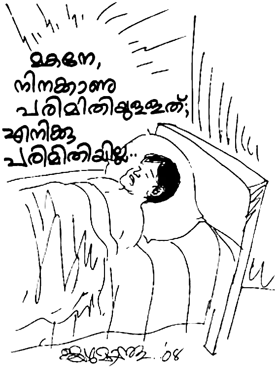മോഹനൻ, തന്റെ ആത്മീയ ശൈശവത്തിൽ ഒരു ശിശുവിനെ പോലെ ദൈവത്തിൽ ആശ്രയിക്കുകയും ഒരു സ്നേഹപിതാവിന്റെ കരുതലോടെ ദൈവം അൎദ്ധരാത്രിയിൽ ഉത്തരമരുളുകയും ചെയ്തു. ആ ജോണിച്ചായനെന്ന മനുഷ്യനെ അൎദ്ധരാത്രി മോഹനന്റെ അടുത്തേക്കു പോകാൻ പ്രേരിപ്പിച്ചതു മറ്റാരുമല്ല—സൎവ്വകൃപാലുവായ ദൈവം തന്നെയാണ്. കാരണം, നാം ആരും തന്നെ ഉറക്കത്തിലായിരിക്കുന്ന മനുഷ്യരെ ബുദ്ധിമുട്ടിക്കരുതു് എന്നു് കരുതി ഒരു വീട്ടിൽ അസമയത്തു കയറുകയില്ല. അന്നുമുതൽ ആത്മീയവും ഭൗതികവും ആയ സകല ആവശ്യങ്ങൾക്കും മോഹനൻ തന്റെ രക്ഷകനായ ക്രിസ്തുവിന്റെ നാമത്തിൽ അപേക്ഷിച്ചു വരുന്നു.
“നിങ്ങൾ എന്റെ (യേശുവിന്റെ) നാമത്തിൽ എന്തെങ്കിലും അപേക്ഷിപ്പിൻ; നിങ്ങളുടെ സന്തോഷം പൂൎണ്ണമാകുംവണ്ണം ദൈവം അതു് ചെയ്തുതരും” എന്നു് യേശു തന്റെ ശിഷ്യരോടു് പറഞ്ഞു. സഹോദരാ, നിങ്ങളുടെ ഏതു് ആവശ്യത്തിനും ഈ ദൈവത്തിൽ ആശ്രയിക്കാം. “മനുഷ്യനിൽ ആശ്രയിക്കുന്നതിനെക്കാൾ യഹോവയിൽ ആശ്രയിക്കുന്നതു് നല്ലത്; പ്രഭുക്കന്മാരിൽ ആശ്രയിക്കുന്നതിനെക്കാൾ ദൈവത്തിൽ ആശ്രയിക്കുന്നതു് നല്ലതു് ” എന്നു് സങ്കീൎത്തനക്കാരൻ പറയുമ്പോൾ, ഇതു പോലുള്ള അനുഭവത്തിന്റെ വെളിച്ചത്തിൽ പറയുന്ന ദൈവീക സത്യമാണെന്നു് അറിയുക.
“ഇതു് വായിക്കുന്ന താങ്കൾ ഇന്നു് ചോദിച്ചേക്കാം, ‘20 രുപ കിട്ടിയതാണോ വലിയ കാൎയ്യം? ഒരു ചായ കുടിക്കാൻ തികയുകയില്ലല്ലോ.’ എന്നാൽ 35 വൎഷം മുമ്പു് എനിക്കു് 20 രുപ വളരെ വലുതായിരുന്നു. എന്നു് മാത്രമല്ല എന്റെ ആവശ്യം കൃത്യമായി ദൈവം ചെയ്തു തന്നു എന്നതാണു് കാൎയ്യം. അന്നു ലഭിച്ച ആ സഹായം 21 രൂപയല്ല, 19 രൂപയുമല്ല. ഇതു് രണ്ടുമായിരുന്നെങ്കിൽ ഞാൻ പറയുമായിരുന്നു അതു് യാദൃച്ഛികം മാത്രമാണെന്ന്. എന്നാൽ ദൈവം തന്റെ മക്കളുടെ കാൎയ്യത്തിൽ എത്ര ശ്രദ്ധാലുവാണു് എന്നറിയുക.”
15
യേശു അവരോടു് പറഞ്ഞു; ഞാൻ ജീവന്റെ അപ്പം ആകുന്നു; എന്റെ അടുക്കൽ വരുന്നവനു വിശക്കുകയില്ല; എന്നിൽ വിശ്വസിക്കുന്നവന് ഒരുനാളും ദാഹിക്കുകയും ഇല്ല.” ഈ വാക്യം മോഹനൻ പലരോടും പറയുന്നതു് കേട്ട വീട്ടുകാർ, ‘യേശു അപ്പമാണെങ്കിൽ അവനു വിശക്കുമോ’ എന്നു് പറഞ്ഞു മോഹനനെ പരീക്ഷിച്ചു.
ഒരു ദിവസം രാവിലെ ഒരു ദോശ മാത്രം കൊടുത്തിട്ടു് ജ്യേഷ്ഠനും ജ്യേഷ്ഠത്തിയും കശുവണ്ടിക്കടത്തിന് പോയി. പാതിരാത്രിക്കോ മറ്റോ മടങ്ങി വരികയുള്ളൂ. വീട്ടിൽ മറ്റാരുമില്ല. ജ്യേഷ്ഠന്റെ കുഞ്ഞുങ്ങൾ രാത്രിയിലെ ഭക്ഷണവുമായിസ്കൂളിലേക്കും പോയി. മോഹനൻ തനിച്ച് ആ വീടിന്റെ ചായ്പ്പിൽ കിടന്നു. മനുഷ്യന്റെ ഹൃദയശൂന്യത കണ്ടു് മനംമടുത്ത ആ യുവാവ് ഉള്ളം കൊണ്ടു് തേങ്ങി. തനിക്ക് ആരോഗ്യമുണ്ടായിരുന്നെങ്കിലെന്ന് ആ യുവാവ് ചിന്തിച്ചുപോയി.
ഉച്ചയായപ്പോൾ കഠിനമായ വിശപ്പുണ്ടായി. മോഹനൻ കരഞ്ഞുകൊണ്ടു പ്രാൎത്ഥിച്ചു: “കൎത്താവേ, എനിക്കു് വിശക്കുന്നു; ആഹാരം തരണം.” അഞ്ചു മിനിറ്റു കഴിഞ്ഞപ്പോൾ, ആരോ വരുന്ന ശബ്ദം കേട്ടു് നോക്കി. അടുത്ത വീട്ടിലെ മരുമകൾ (സുലോചന) ഒരു പാത്രം നിറയെ ചോറും കൊണ്ടുവരുന്നു! മേശപ്പുറത്തു് കൊണ്ടുവന്നുവച്ച ആ പാത്രത്തിൽ മോഹനൻ നോക്കി. നാലു തരം കറികളും പപ്പടവും ചോറിനോടൊപ്പമുണ്ടായിരുന്നു. “എന്തിനാണു് സുലോചന ചോറു കൊണ്ടുവന്നതെ”ന്നു മോഹനൻ ചോദിച്ചതിനു “മോഹനേട്ടനു ഇന്ന് ആഹാരം തരണമെന്നു് തോന്നി” എന്നായിരുന്നു ആ യുവതിയുടെ മറുപടി.
പിറ്റേദിവസവും ജ്യേഷ്ഠനും ജ്യേഷ്ഠത്തിയും കശുവണ്ടി ചുമക്കാൻ പോയി. മോഹനനു പ്രഭാത ഭക്ഷണം മാത്രമേ കൊടുത്തിരുന്നുള്ളൂ. അന്നു് ഉച്ചയായപ്പോഴും തനിക്കു് കലശലായ വിശപ്പുണ്ടായി. കൎത്താവിനോടു് അന്നും പ്രാൎത്ഥിച്ചു. അന്നുച്ചയ്ക്ക് അച്ഛന്റെ പെങ്ങളുടെ മരുമകൾ ചോറു കൊണ്ടു് വന്നു. അവരുടെ അമ്മ അന്നു വന്നതുകൊണ്ട്, അല്പം അരി കൂടുതലിട്ടതിനാലാണു് ചോറു കൊണ്ടുവരാൻ ഇടയായതെന്നു് മോഹനന്റെ ചോദൃത്തിനു് ഉത്തരമായി അവർ മറുപടി നൽകി. പരമ ദരിദ്രരായിരുന്ന അവർ ഒരിക്കലും ആഹാരം കൊണ്ടുവരാനുള്ള സാദ്ധ്യതയില്ലായിരുന്നു. അന്ന് ആ സഹോദരി കൊണ്ടുവന്ന ചോറിനോടൊപ്പം മീൻ കറിയും ഉണ്ടായിരുന്നു!
മൂന്നാം ദിവസവും ജ്യേഷ്ഠനും ജ്യേഷ്ഠത്തിയും പതിവു പോലെ ജോലിക്കു് പോയി. ഉച്ചയായപ്പോൾ വിശന്ന മോഹനൻ പുറത്തേക്കു് നോക്കിക്കൊണ്ടു് കിടന്നു. അപ്പോൾ കണ്ട കാഴ്ച അത്ഭുതം ജനിപ്പിക്കുന്നതായിരുന്നു. ഒമ്പതു മാസങ്ങളായി മകനെ കാണാൻ വരാതിരുന്ന തന്റെ പിതാവു് ഒരു കലവും ചട്ടിയും തലയിൽ വച്ചുകൊണ്ടു കുന്നു കയറി വരുന്നു! അമ്മ എവിടേക്കോ പോയിരുന്നതിനാൽ തന്നെത്താൻ കഞ്ഞിയും മീൻ കറിയും പാകപ്പെടുത്തി. അപ്പോൾ, മകനെ കണ്ടിട്ടു് കുറെ നാളായല്ലോ. ഇന്നവനു അല്പം കഞ്ഞി കൊണ്ടുകൊടുക്കാം എന്ന തോന്നൽ അദ്ദേഹത്തിനുണ്ടായി. അങ്ങനെ ആ അച്ഛൻ മകനു കഞ്ഞിയും മീൻ കറിയും വിളമ്പി കൊടുത്തു.
നോക്കുക! ജ്യേഷ്ഠനും ജ്യേഷ്ഠത്തിയും ആഹാരം കൊടുക്കാതെ പോയ മൂന്നു ദിവസവും ഓരോരുത്തരിൽ കൂടി ദൈവം ആഹാരം കൊടുപ്പിച്ചു. ഇവിടെ ആഹാരം ഇല്ലെന്ന് അറിഞ്ഞുകൊണ്ടു് അല്ല അവർ ആഹാരം കൊണ്ടുവന്നത്. അവൎക്കു് അങ്ങനെ തോന്നി. ആരാണു് തോന്നിപ്പിച്ചതു് ?
“കരയുന്ന കാക്കക്കുഞ്ഞുങ്ങൾക്ക് ആഹാരം കൊടുക്കുന്ന” ദൈവം.
“ഒരമ്മ തന്റെ കുഞ്ഞിനെ മറക്കുമോ? അവർ മറന്നു കളഞ്ഞാലും ഞാൻ നിന്നെ മറക്കുകയില്ല.” (യെശയ്യാവ് 49:15)
“ഞാൻ നിന്നെ ഉള്ളം കയ്യിൽ വരച്ചിരിക്കുന്നു” എന്ന് ഈ ദൈവമാണ് അരുളി ചെയ്തത്.
യേശു കൎത്താവു് പറഞ്ഞു: “ഞാൻ ജീവന്റെ അപ്പമാകുന്നു; എന്നെ തിന്നുന്നവനു വിശക്കുകയില്ല.” യേശുവിനു മനുഷ്യന്റെ ആത്മരക്ഷ മാത്രമല്ല നൽകാൻ കഴിയുന്നത്. ആത്മീയ വിശപ്പിനു ശമനം വരുത്തുന്ന യേശു ക്രിസ്തു, മനുഷ്യന്റെ ശാരീരിക വിശപ്പിനും ഭൗതികാവശ്യങ്ങൾക്കും മതിയായവനാണു്. ആവശ്യങ്ങൾ അവിടുന്നു നിറവേറ്റും, വിശ്വസിച്ചാൽ.
അങ്ങനെയുള്ള ദൈവത്തിൽ വിശ്വസിച്ച മോഹനനെ ദൈവം നിരാശപ്പെടുത്തിയില്ല. ദൈവഭക്തനായിരുന്ന ഏലീയാവിനു ആഹാരം കൊടുക്കാൻ ദൈവം ചുമതലപ്പെടുത്തിയതു കാക്കകളെയായിരുന്നു. അതും ക്ഷാമകാലത്ത് ! ആ ദൈവം ഇന്നും നിങ്ങളുടെ ആവശ്യങ്ങൾ സാധിച്ചു തരാൻ പ്രാപ്തനാണ്, വിശ്വസ്തനാണ്. നിങ്ങൾ വിശ്വസിക്കുമെങ്കിൽ.
16
ഇതു് അപ്പത്തിനായുള്ള വിശപ്പല്ല; വെള്ളത്തിനായുള്ള ദാഹവുമല്ല; യഹോവയുടെ വചനത്തിനായുള്ള വാഞ്ഛ തന്നെ” എന്നാണു ദൈവ വചനത്തെക്കുറിച്ചുള്ള പ്രവാചക വാക്യം. ഇതുപോലെ, ബൈബിൾ തുടർമാനമായി വായിച്ചു കൊണ്ടിരുന്ന മോഹനന്റെ ഉള്ളിൽ, കൂടുതൽ കൂടുതൽ ദൈവീക സത്യങ്ങൾ അറിയുവാനുള്ള ആഗ്രഹം നാൾതോറും വൎദ്ധിച്ചു വന്നു. തന്നെ രക്ഷയിലേക്കു നയിച്ച ബേബിച്ചായൻ മിക്ക ആഴ്ചയിലും ഒരിക്കലെങ്കിലും തന്റെ അടുക്കൽ വരുമായിരുന്നു, പ്രാൎത്ഥിക്കുമായിരുന്നു, സഹായിക്കുമായിരുന്നു.
എന്നാൽ അദ്ദേഹത്തിനു മോഹനന്റെ പല ചോദ്യങ്ങൾക്കും ഉത്തരം നൽകുവാൻ കഴിഞ്ഞിരുന്നില്ല. ചുരുങ്ങിയതു് ആറായിരം വൎഷത്തെ ചരിത്രം പറയുന്ന ബൈബിളിലെ പുതിയതും പഴയതുമായ വേദഭാഗങ്ങൾ, ചരിത്ര സംഭവങ്ങൾ, സാമ്രാജ്യങ്ങൾ ഇതൊക്കെയും ഗ്രഹിക്കാനുള്ള ആഗ്രഹത്താൽ മോഹനൻ തനിക്കു് ലഭിച്ചു കൊണ്ടിരുന്ന 50 രൂപ വികലാംഗ പെൻഷൻ പോലും പുസ്തകം വാങ്ങിക്കുവാൻ ഉപയോഗിച്ചു തുടങ്ങി.
അങ്ങനെയിരിക്കെ ജോണിച്ചായൻ മോഹനനു “ഇവൻ ആർ?” എന്നു് പേരുള്ള ഒരു കൊച്ചു പുസ്തകം നൽകി. ആർ. കൃഷ്ണൻകുട്ടി തിരുവട്ടാർ എഴുതിയ, യേശു ക്രിസ്തുവിനെ കുറിച്ചുള്ള ഒരു പുസ്തകമായിരുന്നു അത്. തന്റെ പരിമിതമായ അറിവിൽപ്പെട്ടിടത്തോളം, യേശു ക്രിസ്തുവിൽ വിശ്വസിച്ച ഒരു ഹിന്ദുവായ വ്യക്തി താൻ മാത്രമായിരിക്കും എന്നാണു് മോഹനൻ അതു് വരെ കരുതിയിരുന്നത്. എന്നാൽ കൃഷ്ണൻകുട്ടി എന്ന മറ്റൊരാളും കൂടെ യേശുവിൽ വിശ്വസിച്ചിട്ടുണ്ടല്ലോ എന്നു് കണ്ട മോഹനൻ ആ കൊച്ചു പുസ്തകം മൂന്നു പ്രാവശ്യം വായിച്ചു. അതു് തന്നെ കൂടുതൽ ഉത്സാഹ ഭരിതനാക്കി. തുടൎന്നു ആ പുസ്തകം പ്രസിദ്ധീകരിച്ച അഡ്രസ്സിൽ എഴുതി. അതു് കണ്ണൂരിൽ പ്രവൎത്തിച്ചിരുന്ന ക്രിസ്ത്യാനുഗാമി സംഘ് എന്ന ചെറിയ ഒരു കൂട്ടത്തിലെ സഹോദരൻ വിജയമോഹനന്റെ വിലാസമായിരുന്നു.
മോഹനന്റെ കത്തു കിട്ടിയ ഉടൻ മറുപടി വന്നു: “എത്രയും വേഗം താങ്കളെ നേരിൽ കാണു് വാൻ ആഗ്രഹിക്കുന്നു.” ഈ വാചകം വായിച്ചപ്പോൾ മോഹനൻ വീണ്ടും സന്തോഷിച്ചു. ഇപ്പോഴിതാ മറ്റൊരു ഹിന്ദു പേരുള്ള വ്യക്തി, വിജയമോഹനൻ. ഏതാനും ദിവസങ്ങൾക്കകം വിജയമോഹനൻ മോഹനനെ കാണുവാൻ അൻപത്തിയഞ്ചു് കിലോമീറ്റർ സഞ്ചരിച്ചു മലകയറി എത്തി. അദ്ദേഹത്തെ കണ്ടതും ആ യുവാവിന്റെ ക്രിസ്തീയ സന്തോഷം അതിര് കടന്നു. അദ്ദേഹത്തെ ആലിംഗനം ചെയ്തു. തന്റെയുള്ളിലെ ദൈവീക സന്തോഷം ആദ്യമായി താൻ വിജയമോഹനനോടു് പങ്കിട്ടു.
വിജയമോഹനൻ പരിചയപ്പെടുത്തിയ പാസ്റ്റർ ഡെന്നിസ് സ്ഫടികം, സഭയിലെ അംഗങ്ങൾ, അവരുടെ കുടുംബങ്ങൾ. ഏകനാണെന്നു് കരുതിയ മോഹനനു അനേകം ആത്മീയ സഹോദരങ്ങളെ ദൈവം നൽകി. വിജയമോഹനനെ കണ്ടുമുട്ടിയ അന്നു മുതൽ ഈ 35 വൎഷവും അദ്ദേഹവുമായുള്ള സാഹോദര്യ ബന്ധം തുടരുന്നു. താൻ ഒരു സുവിശേഷകനായിരിക്കുമ്പോഴും മോഹനനെക്കുറിച്ച് അനേകരോടു് വിജയമോഹനൻ പറയുമായിരുന്നു. മോഹനന്റെ ആത്മീയവും ഭൗതികവുമായ അഭിവൃദ്ധിയുടെ പിൻപിലും വിജയമോഹനന്റെ പ്രാൎത്ഥനയോ സഹകരണമോ പരിചയപ്പെടുത്തുലോ ഉണ്ടായിട്ടുണ്ടെന്നു് മോഹനൻ സാക്ഷ്യം പറയുന്നു. അന്യന്റെ നന്മയിൽ സന്തോഷിക്കാൻ കഴിയുന്ന, ശത്രുക്കളെ സ്നേഹിക്കുന്ന, ഉപദ്രവിക്കുന്നവൎക്കു് വേണ്ടി പ്രാൎത്ഥിക്കുന്ന, തിന്മയ്ക്കു് പകരം നന്മ ചെയ്യുന്ന, ശാസിക്കുമ്പോൾ നന്ദി പറയുന്ന ആ സഹോദരനെ കുറിച്ച് ഓൎക്കുമ്പോഴൊക്കെയും ക്രിസ്തു യേശുവിൽ ഒരു ഉത്തമ ശിഷ്യനായ ബാബു ഏട്ടനെന്നു മോഹനൻ വിളിക്കുന്ന വിജയമോഹനനെ കാണാൻ കഴിയും.
അവിടം മുതൽ തുടങ്ങിയ അന്വേഷണത്താൽ ദൈവദാസന്മാരായവരെ കണ്ടുമുട്ടുവാനും അവരുടെ പുസ്തകങ്ങൾ വായിക്കുവാനും മോഹനനു കഴിഞ്ഞു. ആകയാൽ തനിക്കു ജ്യേഷ്ഠഭവനത്തിലുണ്ടായ എല്ലാ തിക്താനുഭവങ്ങളും നന്മയായിട്ടേ കാണാൻ കഴിയുന്നുള്ളൂ. ഒരു ക്രിസ്തു ശിഷ്യനു ഗുരുവിനോളം വളരണമെങ്കിൽ ശിക്ഷണം ആവശ്യമാണു്. ക്രൂശിന്റെ പാത ഒഴിച്ചു കൂടാത്തതാണു്. ആയതിനാൽ രണ്ടു് വൎഷം ജ്യേഷ്ഠനും കുടുംബവും തന്നെ ഇത്രത്തോളം സഹായിച്ചതു് ഓൎക്കുമ്പോൾ ദൈവത്തെ സ്തുതിക്കുവാൻ അല്ലാതെ മറ്റൊന്നിനും കഴിയുകയില്ല. കാരണം ദരിദ്രനും കൂലിവേലക്കാരനുമായ ആ ജ്യേഷ്ഠ സഹോദരൻ മോഹനനെ കൈകളിൽ വാരിയെടുത്തു മുറ്റത്തു കൊണ്ടു് പോയി കുളിപ്പിച്ചതും തന്നെ ഒരു മകനെ പോലെ ശുശ്രൂഷിച്ചതും നന്ദിയോടെ ഓൎക്കുന്നു. “ദൈവം അദ്ദേഹത്തെയും കുടുംബത്തെയും അനുഗ്രഹിക്കട്ടെ. ജേഷ്ഠന്റെ വീട്ടിലായിരുന്ന രണ്ടര വൎഷം തന്റെ കുഞ്ഞു മക്കൾ ഈ പാപ്പനെ വളരെ അധികം സ്നേഹിക്കുകയും ശുശ്രൂഷിക്കുകയും ചെയ്തു.”
ക്രിസ്തീയ വിശ്വാസത്തെ പ്രതി നേരിടേണ്ടിവന്ന എല്ലാ പ്രതിസന്ധികളും ഇന്നു തിരിഞ്ഞു നോക്കുമ്പോൾ ദൈവം നന്മയ്ക്കായി ചെയ്തു എന്നു് ഗ്രഹിക്കുവാൻ കഴിയുന്നു. ആകയാൽ, ഈ അനുഭവം മറ്റുള്ളവൎക്കു് ഉപകാരമാവട്ടെ എന്നു് കരുതി എഴുതുന്നു. ആരോടും പരിഭവമോ പരാതിയോ വെറുപ്പോ ഒരു ദൈവപൈതലിനു ഇല്ലല്ലോ. ദൈവത്തെ സ്നേഹിക്കുന്നവൎക്കു് – നിൎണ്ണയ പ്രകാരം വിളിക്കപ്പെട്ടവൎക്കു് – സകലവും നന്മയ്ക്കായി കൂടി വ്യാപരിക്കുന്നു.” (റോമർ 8:28)
17
മോഹനൻ കഷ്ടതയിലായിട്ടു് ഇപ്പോൾ മൂന്നു വൎഷം തികയുന്നു. താൻ ആശുപത്രിയിൽ ആയിരുന്ന കാലം ഭാൎയ്യ തങ്കമണിയെ തിരുവനന്തപുരത്തുള്ള അവരുടെ കുടുംബ വീട്ടിലേക്കു് കൊണ്ടു് പോയിരുന്നു. ജനിച്ച് 9 മാസത്തിനു ശേഷമാണ് മോഹനൻ ആദ്യമായി തന്റെ മകനെ കാണുന്നത്. തങ്കമണിയുടെ വീട്ടുകാരുടെ എതിൎപ്പു് കാരണം ഈ മൂന്നു വൎഷവും ഭാൎയ്യ സ്വന്തം വീട്ടിൽ തന്നെയായിരുന്നു. അവൾക്ക് എന്തു ചെയ്യാൻ കഴിയും? ജനിക്കുമ്പോൾ തന്നെ വളൎച്ച കുറഞ്ഞു പോയതും എപ്പോഴും അസുഖങ്ങളാൽ പീഡിപ്പിക്കപ്പെട്ട കൈക്കുഞ്ഞുമായി തങ്കമണി നിസ്സഹായയായിരുന്നു.
എന്നാൽ വല്ലപ്പോഴും കുഞ്ഞിനെ ഡോക്ടറെ കാണിക്കാൻ ഇരിട്ടിയിലുള്ള ആശുപത്രിയിലേക്കു് പോകുമ്പോഴായിരിക്കും തങ്കമണി ഭൎത്താവിനെ കാണാൻ ഒന്നു വരുന്നത്. ദുഃഖ ഭാരവുമായി ആ സഹോദരി കരഞ്ഞു കലങ്ങിയ കണ്ണുകളുമായി മടങ്ങി പോകും. ചെകുത്താന്റെയും കടലിന്റെയും നടുവിൽ പെട്ട അവസ്ഥ! ജീവിതം തുടങ്ങിയപ്പോൾ തന്നെ ഒടുങ്ങിയ സ്ഥിതി. അരയ്ക്കു് താഴെ ചലനമറ്റു പോയ ഭൎത്താവിനെ ഹൃദയത്തിൽ നിന്നു് മായിച്ചു കളയാൻ കഴിയുന്നില്ല. മറുവശത്തു് മാതാപിതാക്കളും സഹോദരങ്ങളും ഉപേക്ഷിച്ചാൽ സഹായത്തിനു മറ്റാരുമില്ല. ഈ അവസ്ഥയിലായ മോഹനന്റെ ഭാൎയ്യ തങ്കമണി, പ്രാപ്തി പോലെ കൂലി വേല ചെയ്തു മൂന്നു വയസ്സു വരെ മകൻ ജയപ്രകാശിനെ വളൎത്തി.
മോഹനൻ ഇതെല്ലാം തന്റെ മനസ്സിൽ അറിയുന്നുണ്ടായിരുന്നു. ഇടയ്ക്കിടെ തേങ്ങി പോകാറുണ്ടെങ്കിലും താൻ യേശുവിനെ അറിഞ്ഞ നാൾ മുതൽ പ്രാൎത്ഥിച്ചു വന്നു. തന്റെ ഭാൎയ്യയ്ക്കും മകനും വേണ്ടി ഒരു മനുഷ്യനു വഹിക്കുവാൻ കഴിയുന്നതിനു അപ്പുറമായ സകല ഭാരവും മോഹനൻ ദൈവത്തിൽ അൎപ്പിച്ചു. “നിന്റെ ഭാരം യഹോവയിൽ വച്ചു കൊൾക. അവൻ നിന്നെ പുലൎത്തും” എന്ന സങ്കീൎത്തന വചനങ്ങളും, “നിന്റെ സകല ചിന്താകുലവും യേശുവിന്റെ മേൽ ഇട്ടുകൊൾക” എന്ന പത്രൊസിന്റെ ലേഖനത്തിലെ ദൈവ വചനവും മോഹനനു ധൈൎയ്യം പകൎന്നു.
മോഹനന്റെ അളിയന്മാരുടെ ഹൃദയത്തിലും ആശാനെന്നു് വിളിക്കുന്ന ഒരു നാട്ടുകാരന്റെ ഉള്ളിലും ദൈവം പ്രവൎത്തിച്ചു. ആ മനുഷ്യൻ തങ്കമണിയുടെ വീട്ടുകാരോടു പറഞ്ഞു: “ഒരിക്കലും തങ്കമണിയെ അവളുടെ ഭൎത്താവിൽ നിന്ന് അകറ്റരുത്; അതു് പാപമാണു്.” അദ്ദേഹം ഒരു കത്തോലിക്കനായിരുന്നു.
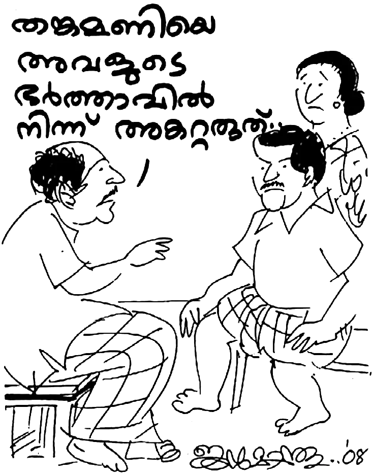മോഹനനെ പരിചരിക്കുന്നതു് സംബന്ധിച്ചു ജ്യേഷ്ഠത്തി പ്രശ്നം ഉണ്ടാക്കാൻ തുടങ്ങി. ജ്യേഷ്ഠനുമായി വഴക്കിട്ടു. ഭക്ഷണത്തിന്റെ കാൎയ്യത്തിലും തുണിയലക്കുന്ന കാൎയ്യത്തിലുമെല്ലാം വഴക്കായി. മോഹനൻ ആകെ നീറി. ഹൃദയം നൊന്തു പ്രാൎത്ഥിച്ചു: “സ്വൎഗ്ഗീയ പിതാവേ, എന്നെ പ്രതിയാണല്ലോ ഇതൊക്കെ സംഭവിക്കുന്നത്. എനിക്കൊരു മാറ്റം തരണേ.”
ഭാൎയ്യയെയും മകനെയും മടക്കി കിട്ടാനുള്ള മോഹനന്റെ പ്രാൎത്ഥന മൂന്നു വൎഷത്തോളം നീണ്ടു് പോയി. അപ്പോഴൊക്കെ പിശാചു മോഹനനോടു് പറയും, നിന്നെ പോലൊരു ഭോഷനില്ല. അരയ്ക്കു് താഴ്വശം തളൎന്നു പോയ ഒരു ഭൎത്താവിന്റെ കൂടെ താമസിക്കാൻ ഒരു ഭാൎയ്യയും ഇഷ്ടപ്പെടുകയില്ല. നീ എന്തൊരു മടയൻ പ്രാൎത്ഥനയാണു് പ്രാൎത്ഥിക്കുന്നത്; ഇതു് സാധിക്കുകയില്ല. എന്നാൽ മോഹനനെ ദൈവം ഉറപ്പിച്ചു; “മനുഷ്യൎക്കു് അസാദ്ധ്യം; എന്നാൽ ദൈവത്തിനു സകലവും സാദ്ധ്യം” – ബൈബിൾ പറയുന്നതു് ഇതാണു്. “അസാദ്ധ്യമെന്നൊന്നു ദൈവത്തിന്റെ വചനത്തിലില്ല.” “വിശ്വസിക്കുന്നവരാൽ സകലവും സാദ്ധ്യം” എന്നാണു് തിരുവചനം പ്രസ്താവിക്കുന്നത്.
ജ്യേഷ്ഠനോടു് ഇങ്ങനെ പറയാനാണ് ആഗ്രഹിച്ചത്: “എന്നെ കട്ടിലോടെ എടുത്തു് വഴിയരുകിൽ കിടത്തിയാലും സാരമില്ല. ജ്യേഷ്ഠന്റെ ഭവനം എന്നെ പ്രതി തകരുവാൻ ഇടവരാതിരിക്കണം.” കാരണം മോഹനൻ ഇങ്ങനെ കിടക്കുന്നതു് ആൎക്കെങ്കിലും ഉൾക്കൊള്ളാൻ കഴിയുമോ? പാവം ജ്യേഷ്ഠൻ. ഭാൎയ്യയും മക്കളും ഒരു വശത്ത്, അനുജന്റെ തകൎന്ന ജീവിതം മറുവശത്ത്. ദുഃഖിതനായി തീൎന്ന ജ്യേഷ്ഠ സഹോദരന്റെ സ്ഥിതി കണ്ട മോഹനൻ ഉള്ളുരുകി പ്രാൎത്ഥിച്ചു; “ദൈവമേ, എന്നെ സഹായിക്കണമേ.”
ജ്യേഷ്ഠന്റെ വീട്ടിൽനിന്നു് ഉണ്ടായ പ്രയാസം നിമിത്തം മോഹനൻ വല്ലാതെ വിഷമിച്ചു. ഭാൎയ്യയെയും കുഞ്ഞിനെയും മടക്കി കിട്ടണമെന്നുള്ള ആഗ്രഹത്തിൽ മോഹനൻ പ്രാൎത്ഥിച്ചു കൊണ്ടിരുന്നു. “ദൈവമേ, എന്റെ ഭാൎയ്യയെയും മകനെയും മടക്കി തരണമേ.”
എന്നാൽ, മോഹനന്റെ ഭാൎയ്യാസഹോദമരന്മാരുടെ ഹൃദയത്തിൽ ദൈവം പ്രവൎത്തിച്ചു. സഹോദരന്മാർ തങ്കമണിക്കു് ഒരു വീടു് വച്ചു കൊടുക്കുവാൻ തീരുമാനിച്ചു—കൎണ്ണാടകയുടെ അതിരായ ഒരു മലമ്പ്രദേശത്തു് കൂട്ടുപുഴയെന്ന അതിൎത്തി ഗ്രാമത്തിൽ നിന്ന് 12 കിലോമീറ്റർ ദൂരമുള്ള അയ്യൻകുന്നിൽ. ഈ സമയമെല്ലാം മോഹനൻ പ്രാൎത്ഥിക്കുകയായിരുന്നു. പ്രാൎത്ഥനയ്ക്കു് മറുപടി കിട്ടി.
ഒരു ദിവസം അപ്രതീക്ഷിതമായി ഭാൎയ്യ മോഹനന്റെ അടുക്കൽ വന്നു. “ചേട്ടായിയെ ഞാൻ വീട്ടിലേക്കു് കൂട്ടിക്കൊണ്ടു് പൊയ്ക്കോളാം. അളിയന്മാർ ഒരു കൊച്ചു വീടു് ഉണ്ടാക്കി തരാമെന്നു് പറഞ്ഞിട്ടുണ്ട്.”
18
മോഹനനു വളരെയേറെ സന്തോഷമായി. കാരണമുണ്ട്, രണ്ടര വൎഷമായി പ്രാൎത്ഥിച്ചു കൊണ്ടിരുന്ന വിഷയമാണിത്. അതിനു കൎത്താവു് മറുപടി തന്നല്ലോ. മാസങ്ങൾക്കുള്ളിൽ ഒരു കൊച്ചു കൂര പൂൎത്തിയായി. ദൈവം അസാധ്യങ്ങൾ സാധ്യമാക്കി തീൎത്തു. ഹല്ലേലുയ്യാ (യഹോവയെ സ്തുതിപ്പിൻ).
അപ്പോഴാണൊരു പ്രശ്നമുയൎന്നത്. ഭാൎയ്യാസഹോദരന്മാർ ഒരു നിബന്ധന വച്ചു. അവർ സഹോദരിയോടു് പറഞ്ഞു: “കാര്യമൊക്കെ കൊള്ളാം. നിന്റെ ഭൎത്താവിനെ ഈ വീട്ടിൽ കയറ്റണമെങ്കിൽ, ആദ്യമേ അവന്റെ യേശു ക്രിസ്തുവിലുള്ള വിശ്വാസം ഉപേക്ഷിക്കണം. രണ്ടാമത്, ബൈബിൾ കളയണം.” തങ്കമണി ഈ വാൎത്തയുമായി മോഹനന്റെ അടുക്കലെത്തി - “യേശുവിനെയും ബൈബിളിനെയും ഉപേക്ഷിച്ചാലേ വീടു് ലഭിക്കൂ.”
മോഹനന്റെ ഹൃദയം ദൈവത്തെ പ്രതി ചൂടുപിടിച്ചതു് അന്നായിരുന്നു—ദാവീദിനെ പോലെ. സാധാരണയായി, ഈ അവസരത്തിൽ ഒരാൾ എന്താണു് ചെയ്യുക? രണ്ടര വൎഷമായി യാതൊരു ബന്ധവുമില്ലാതെ അകന്നു കഴിയുന്ന ഭാൎയ്യയും ഏക മകനും തിരിച്ചു വരുന്നു. ഒപ്പം ഒരു കൊച്ചു വീടും കിട്ടുന്നു. പരാശ്രയമില്ലാതെ ഇനി അവിടെ കഴിയാം. യേശുവിനെ ഉപേക്ഷിച്ചാൽ മാത്രം മതി. യേശു ക്രിസ്തുവും ആത്മരക്ഷയും ഒരു വശത്ത്; മറുവശത്തു ഭാൎയ്യ, മകൻ, വീട്. ഏതാണു് തിരഞ്ഞെടുക്കുക? മോഹനന് അധികമൊന്നും ആലോചിക്കാൻ ഉണ്ടായിരുന്നില്ല.
യേശുവിന്റെ ശബ്ദം മോഹനന്റെ കാതുകളിൽ മുഴങ്ങി: “എന്റെ അടുക്കൽ വരികയും, അപ്പനെയും അമ്മയെയും ഭാൎയ്യയെയും മക്കളെയും സഹോദരന്മമാരെയും സഹോദരികളെയും സ്വന്ത ജീവനെയും കൂടെ പകയ്ക്കാതിരിക്കുകയും ചെയ്യുന്നവന് എന്റെ ശിഷ്യനായിരിക്കാൻ കഴിയില്ല.” (ലൂക്കൊസ് 14:26) യേശു കൎത്താവിൽ വിശ്വസിച്ചപ്പോൾ തന്നെ മാതാപിതാക്കളോടുള്ള മമത ഉപേക്ഷിക്കേണ്ടി വന്നു. ഇപ്പോൾ സ്നേഹിക്കുന്ന ഭാൎയ്യയെയും കുഞ്ഞിനെയും കിട്ടുന്നു, ഒരു വീടും ലഭിക്കുന്നു. എന്തു വേണം? യേശുവിനെ ഉപേക്ഷിക്കണോ? ഈ ചോദ്യത്തിന് ഉത്തരം കിട്ടാൻ ഉപവസിക്കേണ്ട കാൎയ്യമൊന്നും ഇല്ലായിരുന്നു.
മോഹനൻ ഭാൎയ്യയോടു് പറഞ്ഞു: “നിനക്കു് പോകാം. എന്റെ കഷ്ടതയിൽ എനിക്കു് ജീവൻ തന്ന ഈ രക്ഷകനെ ഉപേക്ഷിക്കാൻ പറയാൻ നിങ്ങൾക്കാൎക്കും അവകാശമില്ല: എന്റെ ആത്മരക്ഷകനായ ദൈവത്തെ ഉപേക്ഷിച്ചിട്ടു് എനിക്കു ഭാൎയ്യയോ മകനോ വീടോ ആവശ്യമില്ല” ഈ വാചകങ്ങൾ കേട്ട തങ്കമണി ഇരുന്നു കരഞ്ഞു. തന്റെ ഭൎത്താവ് എന്തുകൊണ്ടാണ് ഇങ്ങനെ കൎക്കശമായ തീരുമാനമെടുത്തതെന്ന് തങ്കമണിക്കു് മനസ്സിലായില്ല.
മോഹനൻ പറയുന്നു: “എനിക്കിന്നു മനസ്സിലായി, അന്നു ഞാനെടുത്ത തീരുമാനം എത്ര വിലപ്പെട്ടതായിരുന്നെന്ന്.” യേശുവിന്റെ ശിഷ്യനാകണമെങ്കിൽ നൽകേണ്ടതായ വിലയെക്കുറിച്ചാണു് ലൂക്കൊസ് 14:26, 27, 33 വാക്യങ്ങൾ പറയുന്നത്. ഇന്ന് ഏറ്റവും കൂടുതൽ പ്രസംഗിക്കേണ്ടുന്ന വിഷയം ഇതാണു്. എന്നാൽ, ഏറ്റവും കുറച്ചു പ്രസംഗിക്കപ്പെടുന്ന വിഷയവും ഇതാണു്. യേശുവിന്റെ ശിഷ്യനായിരിക്കാൻ ഒരാൾ ആഗ്രഹിച്ചാൽ, ജീവിതത്തിൽ ഒന്നാം സ്ഥാനം യേശുവിനു് ആയിരിക്കണം. എന്നാൽ, ഇന്നു് ക്രിസ്ത്യാനിയുടെ ജീവിതത്തിൽ എന്തിനാണ് ഒന്നാം സ്ഥാനം? വീട്, ഭാൎയ്യ, മക്കൾ, പണം, ജോലി, സ്ഥാനമാനങ്ങൾ, വാഹനം എന്നീ കാര്യങ്ങൾക്കല്ലേ? അങ്ങനെയാണെങ്കിൽ നമുക്കൊരിക്കലും ക്രിസ്തുവിന്റെ ശിഷ്യരായിരിക്കാൻ കഴിയില്ല. ഇങ്ങനെയുള്ള പരിശോധന എന്റെ ജീവിതത്തിൽ ഉണ്ടായപ്പോൾ 31 വൎഷം മുമ്പു് അതിൽ വിജയിക്കാൻ കൎത്താവു് കൃപ നൽകി.” മോഹനൻ നായർ പറഞ്ഞു നിൎത്തി.
പ്രാൎത്ഥിച്ചിട്ട തങ്കമണിയെ മോഹനൻ പറഞ്ഞയച്ചു. “യേശുവിനാണ് എന്റെ ജീവിതത്തിൽ ഒന്നാം സ്ഥാനം. താത്പര്യമുണ്ടെങ്കിൽ വീടു് തന്നാൽ മതി—ഇതായിരുന്നു മോഹനൻ നായർ തങ്കമണിയോടു് പറഞ്ഞത്.
ഈ വിവരം അതുപോലെ തന്നെ തങ്കമണി സഹോദരന്മാരോടു് ചെന്നു് പറഞ്ഞു. ഒരു സഹോദരൻ കുപിതനായി ഇങ്ങനെ പറഞ്ഞു: “ഞങ്ങൾ പറഞ്ഞതു പോലെ ചെയ്തില്ലെങ്കിൽ, വീട്ടിലിട്ടു് ചുട്ടുകളയും.” അത്ഭുതം എന്നു് പറയട്ടെ മുപ്പിത്തിനാലാം വൎഷവും മോഹനൻ നായരും കുടുംബവും സന്തോഷമായി വസിക്കുന്നു.
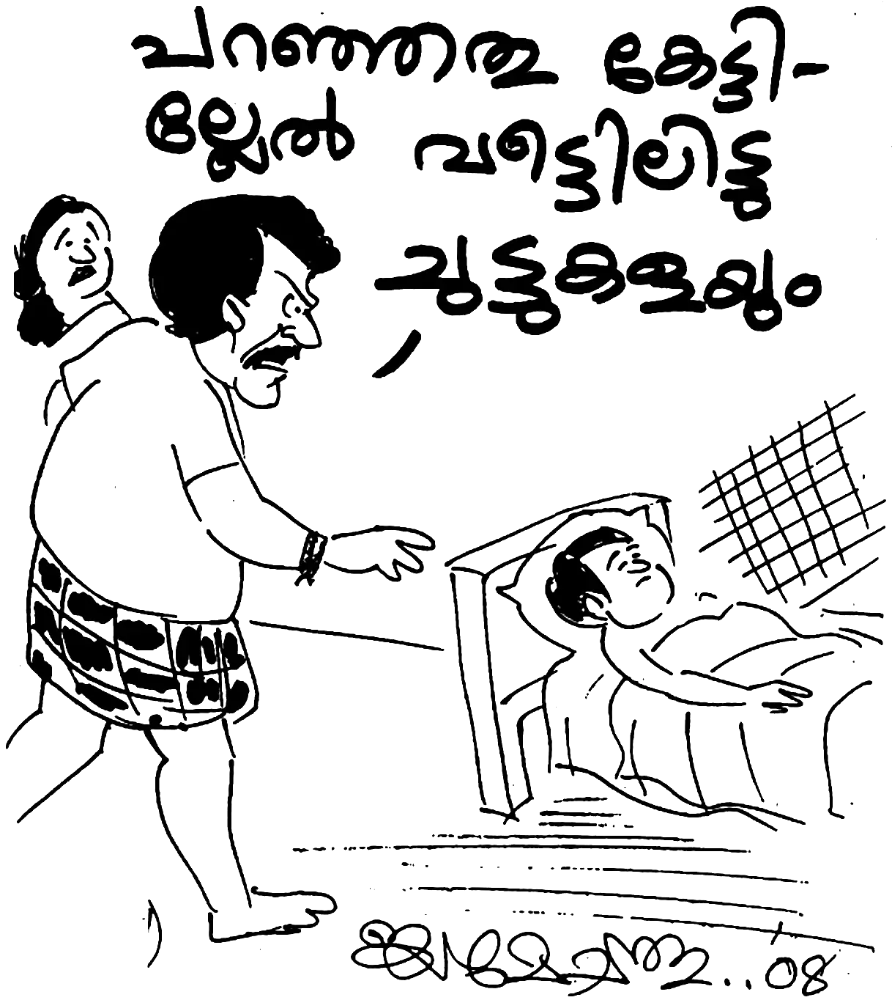മോഹനൻ നായർ പറയുന്നതു് ശ്രദ്ധിക്കുക: “കൎത്താവായ യേശു ക്രിസ്തുവിനു നിങ്ങളുടെ ജീവിതത്തിൽ ഒന്നാം സ്ഥാനം നൽകുമോ? ദൈവം നിങ്ങളെ കരങ്ങളിൽ വഹിക്കും.”
മോഹനനെ വീട്ടിലേക്കു് സ്വീകരിക്കുന്നതിൽ അളിയന്മാൎക്കു താത്പര്യമില്ലായിരുന്നു. പക്ഷേ അവരുടെ സഹോദരിയുടെ നിൎബ്ബന്ധത്തിനു വഴങ്ങി മോഹനനെ അവൎക്കു് ഭവനത്തിൽ പ്രവേശിപ്പിക്കേണ്ടിവന്നു.
ജ്യേഷ്ഠന്റെ വീട്ടിൽ നിന്നു് പോകുന്നതിനു മുമ്പു് ഒരു പ്രവാചകൻ മോഹനനെ സന്ദൎശിച്ചു. മോഹനനെ കുറിച്ച് ഒരു ദൎശനം കണ്ടിട്ടാണ് ആ ദൈവ മനുഷ്യൻ വന്നത്. മോഹനന്റെ ജീവിതത്തിൽ ഉണ്ടായ ചില കുറവുകൾ (വീഴ്ചകൾ) അദ്ദേഹം പ്രവചിച്ചു. മാതാപിതാക്കളോടു ദേഷ്യപ്പെട്ടതായിരുന്നു അവയിൽ പ്രധാനമായത്. മോഹനൻ മാതാപിതാക്കളെ വിളിപ്പിച്ചു. ആദ്യം അവർ വന്നില്ലെങ്കിലും പിന്നീടു് വന്നു. മോഹനന്റെ വേദനയുടെ പാരമ്യത്തിൽ മാതാപിതാക്കളോടു് കോപിച്ചു സംസാരിച്ചതു ദൈവത്തിന്റെ വേലക്കാരനെ ദൈവം അറിയിച്ചു. അദ്ദേഹം അതു് മോഹനനെ അറിയിച്ചു.
മനുഷ്യന്റെ കോപം ദൈവത്തിന്റെ നീതിയുടെ വെളിപ്പെടലിനും ദൈവാനുഗ്രഹത്തിനും തടസ്സമാണു്. ദൈവത്തിന്റെ അനുഗ്രഹം ഉണ്ടാകണമെങ്കിൽ ഇത്തരം കാര്യങ്ങൾ നമ്മൾ ഒഴിഞ്ഞിരിക്കണം. മോഹനന്റെ കുറവു ദൈവം വെളിപ്പെടുത്തിയപ്പോൾ അദ്ദേഹം അതിനു പരിഹാരം വരുത്താൻ തയ്യാറായി. പൊട്ടിക്കരഞ്ഞു കൊണ്ടു് മാതാ പിതാക്കളോടു് മോഹനൻ ക്ഷമ ചോദിച്ചു. പിതാവിന്റെ മടിയിൽ തലവച്ചു കൊണ്ടു് അനുഗ്രഹത്തിനായി മോഹനൻ കേണപേക്ഷിച്ചു. ദൈവവചനത്തിൽ ഇങ്ങനെ കാണുന്നു: “നിനക്കു് നന്മ ഉണ്ടാകുന്നതിനും നീ ഭൂമിയിൽ ദീർഘായുസ്സോടെ ഇരിക്കുന്നതിനും നിന്റെ അപ്പനെയും അമ്മയെയും ബഹുമാനിക്കുക.” കണ്ണുനീരോടു് കൂടി മോഹനൻ വിളിച്ചപേക്ഷിച്ചു; “അച്ഛാ, എന്നെ അനുഗ്രഹിക്കണേ, എന്നെ അനുഗ്രഹിക്കണേ അച്ഛാ …”
ഒരു കൈ മാത്രമുള്ള ആ പിതാവു് മകന്റെ തലയിൽ കൈവച്ച് ഇങ്ങനെ പറഞ്ഞു: “നിനക്ക് ഒരു നാളും ഒരു കുറവും വരുകയില്ല.” ഇവിടെ അച്ഛന്റെ അനുഗ്രഹമല്ല വിഷയം; ദൈവത്തിന്റെ വചനം അനുസരിക്കാനുള്ള മോഹനന്റെ സമൎപ്പണമാണു്. ദൈവം എന്തു പറഞ്ഞാലും അതു് ചെയ്യാനുള്ള ഒരുക്കമാണു്. ദൈവം പറയുന്നതു് അനുസരിക്കുമ്പോൾ ദൈവാനുഗ്രഹം ഉണ്ടാകും. നമുക്കു ചെയ്യാൻ കഴിയാത്ത ഒരു കാൎയ്യം ദൈവം പറയുകയില്ല.
“ഇക്കാലത്ത്, വാൎദ്ധക്യത്തിലേക്കു് വന്നെത്തിയ അനേകം മാതാപിതാക്കൾ അനാഥ മന്ദിരങ്ങളിൽ അഭയം തേടേണ്ടി വരുന്നു. എന്തു കൊണ്ട് ? മക്കൾക്ക് അവരെ സംരക്ഷിക്കാൻ സാമ്പത്തികം ഇല്ലാത്തതു കൊണ്ടല്ല. ദുഃഖമെന്നു് പറയട്ടെ, അമേരിക്കയിലും ഗൾഫ് രാജ്യങ്ങളിൽ ജോലിയുള്ളവർ പോലും, മാതാപിതാക്കൾ ഒരു ഭാരമെന്നു് കണ്ടു് അവരെ ഉപേക്ഷിച്ചു കളയുന്നു. സഹോദരാ, സഹോദരീ, നിനക്കു് നന്മയുണ്ടാകുവാനും ദീൎഘായുസ്സ് ഉണ്ടാകുവാനും നിന്റെ അപ്പനെയും അമ്മയെയും ബഹുമാനിക്ക എന്ന ദൈവകൽപ്പന നാം പ്രമാണിക്കുന്നില്ലെങ്കിൽ, നമ്മുടെ ആയുസ്സിന്റെ ദൈൎഘ്യം കുറഞ്ഞു പോയാൽ അത്ഭുതപ്പെടേണ്ടതില്ല. നമ്മുടെ മക്കളും നമ്മെ അനാഥ മന്ദിരത്തിൽ വിടുക തന്നെ ചെയ്യും. അതുകൊണ്ടു് ദൈവത്തെ സ്നേഹിക്കുന്നവൻ ദൈവ കൽപ്പന പ്രമാണിക്കും. നമ്മുടെ പണം അല്ല മാതാപിതാക്കൾക്കു് ആവശ്യം. മറിച്ചു് കൈ വളരുമോ, കാൽ വളരുമോ എന്ന് അന്വേഷിച്ചു കഷ്ടപ്പെട്ടു് നമ്മുടെ അഭിവൃദ്ധിക്കായി ഊണും ഉറക്കവും ഒഴിച്ച അവൎക്കു് നമ്മുടെ കൈത്താങ്ങലും പരിചരണവുമാണു് ആവശ്യം എന്നറിയുക.”
19
ആയിരത്തിത്തൊള്ളായിരത്തി എണ്പത്തി ഒമ്പത് ഏപ്രിൽ മാസം. അന്നൊരു ദുഃഖ വെള്ളിയാഴ്ച ആയിരുന്നു. അതിന്റെ ഏതാനും ദിവസങ്ങൾ മുമ്പു് ഏകദേശം 70 വയസ്സു കഴിഞ്ഞ ഒരു മാതാവു് എന്നെ കാണുവാൻ വന്നു. ഞാൻ തളൎന്നു കിടക്കയിലായിട്ട് ഏകദേശം മൂന്നു വൎഷം കഴിഞ്ഞു. സംസാരമദ്ധ്യേ ആ മാതാവു് എന്നോടു് ചോദിച്ചു, “മോനേ, നീ പരിശുദ്ധാത്മാവിനെ പ്രാപിച്ചുവോ?”
ഞാൻ മറുപടി പറഞ്ഞു, “അതെന്ത് അനുഭവമെന്ന് എനിക്ക് അറിഞ്ഞുകൂടാ. ഞാൻ രക്ഷിക്കപ്പെട്ടിട്ട് ഏകദേശം രണ്ടര വൎഷം കഴിഞ്ഞു. പക്ഷേ ഇങ്ങനെ ഒരു അനുഭവം എനിക്കു് അറിഞ്ഞു കൂടാ.”
മക്കളെ ഭക്തിയിൽ വളൎത്തിയ ശേഷം വാൎദ്ധക്യത്തിലേക്കു് നടന്നടുക്കുന്ന വളരെ പക്വതയുള്ള ഈ മാതാവിന്റെ മുഖത്തു നോക്കിയാൽ അറിയാം അവരുടെ ഉള്ളിൽ വസിക്കുന്ന പരിശുദ്ധാത്മാവിന്റെ സാന്നിദ്ധ്യം. അവർ ഒരു വിരമിച്ച അധ്യാപികയും ഏക ഭൎത്താവിന്റെ ഭാൎയ്യയും ആയിരുന്നു.
അവർ തുടൎന്നു, “മോൻ പരിശുദ്ധാത്മാവിന്റെ നിറവിനായി പ്രാൎത്ഥിക്കണം. രക്ഷിക്കപ്പെടുന്ന ഓരോരുത്തൎക്കും ദൈവം അത് നൽകും.” ഈ കൂടിക്കാഴ്ച അവസാനിച്ചു. അവർ പ്രാൎത്ഥിച്ചു് സ്വന്തം ഭവനത്തിലേക്കു മടങ്ങിപ്പോയി. എന്നാൽ എന്റെ ഉള്ളിന്റെ ഉള്ളിൽ ഈ സ്ത്രീയുടെ വാക്ക് മുഴങ്ങി കൊണ്ടിരുന്നു.
ഞാൻ തിരുവചനത്തിലേക്കു് തിരിഞ്ഞു. രക്ഷിക്കപ്പെട്ട നാൾ മുതൽ ആത്മീയമായി ആർ എന്തു പറഞ്ഞാലും ദൈവം എന്തു പറയുന്നു എന്നറിയുവാൻ ഞാൻ ഉത്സാഹിക്കുമായിരുന്നു. യോഹന്നാൻ എഴുതിയ സുവിശേഷത്തിൽ പല പ്രാവശ്യമായി പരിശുദ്ധാത്മാവിനെ പ്രാപിക്കുന്നതിനെ കുറിച്ച് എഴുതിയിരിക്കുന്നു. ഉദാഹരണത്തിനു യോഹന്നാൻ 14:16-17 ഇപ്രകാരം എഴുതിയിരിക്കുന്നു:
“എന്നാൽ ഞാൻ പിതാവിനോടു് ചോദിക്കും; അവൻ സത്യത്തിന്റെ ആത്മാവ് എന്ന മറ്റൊരു കാര്യസ്ഥനെ എന്നേക്കും നിങ്ങളോടു് കൂടെ ഇരിക്കേണ്ടതിനു നിങ്ങൾക്കു് തരും. ലോകം അവനെ കാണുകയോ അറിയുകയോ ചെയ്യായ്കയാൽ അതിന് അവനെ ലഭിപ്പാൻ കഴിയുകയില്ല; നിങ്ങളോ അവൻ നിങ്ങളോടു കൂടെ വസിക്കുകയും നിങ്ങളിൽ ഇരിക്കുകയും ചെയ്യുന്നതു് കൊണ്ട് അവനെ അറിയുന്നു.”
അങ്ങനെയെങ്കിൽ രക്ഷിക്കപ്പെട്ടു് മൂന്നു വൎഷമെങ്കിലും കഴിഞ്ഞവരായ ശിഷ്യന്മാരോടാണ് യേശു ഇതു് പറയുന്നത്. രക്ഷിക്കപ്പെടുമ്പോൾ തന്നെ പരിശുദ്ധാത്മ നിറവ് ലഭിച്ചു എന്നു് കരുതുന്നവർ ഈ വാക്യം ശ്രദ്ധിച്ചാൽ നന്ന്. ഈ വിഷയത്തിൽ കൂടുതൽ വിശദീകരണം തുടൎന്നുപറയാം. ഈ വാക്യ പ്രകാരം ആത്മശക്തി എനിക്കാവശ്യമാണ് എന്നെനിക്ക് ബോധ്യമായി.
അന്നു ഞാൻ ജ്യേഷ്ഠഭവനത്തിൽ കഴിയുകയായിരുന്നു. അദ്ദേഹത്തിന്റെ ഏഴും അഞ്ചും മൂന്നും വയസ്സുള്ള മൂന്നു കുഞ്ഞുങ്ങളായിരുന്നു അപ്പോൾ വീട്ടിൽ ഉണ്ടായിരുന്നത്. ഏകദേശം സമയം സന്ധ്യ ആറു് മണി കഴിഞ്ഞു. ഞാൻ അന്ന് ഉപവസിച്ചു കൊണ്ടു് ദൈവമുഖം അന്വേഷിക്കുകയായിരുന്നു. ഞാൻ ഇങ്ങനെ പ്രാൎത്ഥിച്ചു തുടങ്ങി, “സ്വൎഗ്ഗീയ പിതാവേ, ഈ തിരുവചന പ്രകാരം പരിശുദ്ധാത്മാവ് എന്ന കാര്യസ്ഥനാൽ നടത്തപ്പെടണം എങ്കിൽ ആ ദിവ്യാനുഭവം എനിക്കും കൂടെ നൽകണമേ!” പ്രാൎത്ഥിച്ചു തുടങ്ങിയ എന്റെ ഹൃദയം പെട്ടെന്ന് തകൎന്നും നുറുങ്ങിയതുമായി തീൎന്നു. ജീവിതത്തിലെ മറഞ്ഞിരുന്ന ചില കുറവുകൾ (തെറ്റുകൾ) കൂടെ ദൈവം എനിക്കു് വെളിപ്പെടുത്തി തന്നു. ഞാൻ കൈപ്പോടെ കരയുവാൻ തുടങ്ങി.
രക്ഷിക്കപ്പെട്ടിട്ടു് രണ്ടര വൎഷമായ എന്റെ ജീവിതത്തിൽ അതുവരെ ഉള്ള എന്റെ പ്രാൎത്ഥന പരിമിതമായ വാക്കുകൾ ഉപയോഗിച്ചായിരുന്നു. കാരണം എന്റെ യുക്തിയിൽ നിന്നായിരുന്നു പ്രാൎത്ഥിച്ചിരുന്നത്. മറ്റു മനുഷ്യർ കേട്ടാൽ അരോചകമായി അവൎക്കു് തോന്നരുത്. മറ്റൊന്നു് മനുഷ്യരുടെ അപമാനം കേൾക്കാൻ ഞാനും ഇഷ്ടപ്പെട്ടിരുന്നില്ല. ചുരുക്കി പറഞ്ഞാൽ മനുഷ്യ മാനം ഞാൻ തേടിയിരുന്നു. മാത്രമല്ല, അഹന്ത എന്ന ഏറ്റവും വലിയ പാപം എന്നിൽ ഉണ്ടായിരുന്നു. പലപ്പോഴും ഞാൻ ചിന്തിക്കുന്നതു് പോലെയോ വായിക്കുന്നതു പോലെയോ ഉള്ള ഒരു വിശുദ്ധ ജീവിതം എന്നിൽ ഉണ്ടായിരുന്നില്ല.
യേശുവിന്റെ ശിഷ്യന്മാരോടു് മൂന്നര കൊല്ലം യേശു പഠിപ്പിച്ചതിന്റെ നേർ വിപരീതമായിരുന്നു അവരുടെ ജീവിതം. ഒരു ചെകിട്ടത്തടിക്കുന്നവനു മറ്റേതു് തിരിച്ചു കാണിക്കാൻ പറഞ്ഞ ഗുരുവിനെ എത്രയും വേദനിപ്പിക്കുന്നതായിരുന്നു ഗത്ശമനയിൽ വച്ച് പത്രൊസ് വാളെടുത്തു മഹാപുരോഹിതന്റെ ദാസനെ വെട്ടിയത്. രക്ഷിക്കപ്പെട്ട അവരുടെ ജീവിതത്തിലെ അതേ പരാജയം എന്നിലും ഉണ്ടായിരുന്നു.
എന്നാൽ പതിവിലും വ്യത്യസ്തമായി അന്ന് സന്ധ്യാ സമയത്തെ പ്രാൎത്ഥന ഒരു വിലാപമായി തീൎന്നു. ഞാൻ നിലവിളിക്കാൻ തുടങ്ങി. പെട്ടെന്ന് എന്റെ യുക്തി ബോധത്തിന്റെ അതിർ വരമ്പുകൾ തകൎത്ത എന്റെ പ്രാൎത്ഥനാശബ്ദം എനിക്ക് തിരിച്ചറിയാൻ (ബുദ്ധിക്ക് ) കഴിയാത്ത വാക്കുകളായി മാറി. എന്റെ ശരീരത്തിൽ വൈദ്യുതി തരംഗങ്ങൾ പ്രവഹിക്കുന്നതു് പോലെ അനുഭവപ്പെട്ടു തുടങ്ങി. എന്റെ നാവുകൊണ്ടു് ഉച്ചരിച്ചു കൂടാത്ത ഞരക്കങ്ങളാൽ അന്യഭാഷകൾ പുറപ്പെടുവാൻ തുടങ്ങി. (റോമർ 8:26,27.) കാൽവരി ദൎശനം എന്റെ ആത്മാവിൽ വെളിപ്പെട്ടു. സന്തോഷം കൊണ്ടു് ഞാൻ മതിമറന്നു പോയി. എന്റെ ബോധം അപ്പോഴും എന്നിലുണ്ടായിരുന്നു. എങ്കിലും എന്റെ നിയന്ത്രണത്തിനു അപ്പുറമായ ദിവ്യ ശക്തിയാൽ ഞാൻ നിറയപ്പെട്ടു. ഈ ദിവ്യാനുഭവം രണ്ടര മണിക്കൂർ നീണ്ടുനിന്നു. പകുതിയും തളൎന്നു തണുത്തു് മരവിച്ചു പോയ എന്റെ കാൽപ്പാദം മുതൽ തല വരെ (ശിരസ്സു വരെ) ചൂടായി വിയൎത്തു കുളിച്ചതു പോലെയായി തീൎന്നു. കിടന്ന കിടക്ക നനയുമാറ് ശരീരം ചൂടായി തീൎന്നു.
ദാവീദ് ഒരിക്കൽ പറഞ്ഞതു പോലെ എന്റെ ധ്യാനത്തിങ്കൽ ഹൃദയത്തിനു ചൂടു പിടിച്ചു. ആത്മാവിൽ തീ കത്തി. യോഹന്നാൻ സ്നാപകൻ വിളിച്ചു പറഞ്ഞതു പോലെ, “യേശു നിങ്ങളെ പരിശുദ്ധാത്മാവിലും തീയിലും സ്നാനം ഏല്പിക്കും.” മത്തായി 3:11.
എന്റെ ജീവിതത്തിലെ ഈ പ്രത്യേക ഭാവ മാറ്റം കണ്ടു് കൊണ്ടിരുന്ന വീട്ടിലെ കുഞ്ഞുങ്ങൾ കരയുവാൻ തുടങ്ങി. അവരുടെ പാപ്പന് എന്തു സംഭവിച്ചു എന്നു് അവൎക്കു് അറിഞ്ഞുകൂടാ. കുഞ്ഞുങ്ങളുടെ കരച്ചിൽ കേട്ടാണു് ഞാൻ പരിസരബോധത്തിലേക്കു് പ്രവേശിക്കുന്നത്. പ്രാൎത്ഥന നിൎത്തി സമയം നോക്കിയപ്പോൾ രാത്രി എട്ടര മണിയായി. ആറുമണിക്കു് പ്രാൎത്ഥിക്കാൻ തുടങ്ങിയ ഞാൻ, രണ്ടര മണിക്കൂർ സമയം എങ്ങനെ കടന്നു പോയി എന്ന് എനിക്കിന്നും മനസ്സിലാക്കാൻ പ്രയാസം.
ഈ ദിവ്യാനുഭവത്തോടു് കൂടെ എന്റെ ജീവിതത്തിന്റെ കാഴ്ചപ്പാടിനു തന്നെ വ്യത്യാസം വന്നു. സുവിശേഷം പറയുമ്പോൾ ഉണ്ടായിരുന്ന ഭയം എന്നെ വിട്ടുപോയി. താഴ്മയുള്ള ഒരു ഹൃദയം എനിക്കു് ലഭിച്ചു. എല്ലാറ്റിലും ഉപരിയായി ഏതു് സാഹചര്യവും നേരിടുവാനുള്ള ദൈവകൃപ എനിക്കു് ലഭ്യമായി തുടങ്ങി. പരിശുദ്ധാത്മ നിറവ് (അഭിഷേകം) എന്ന വിഷയം ഇന്നു് ക്രിസ്ത്യാനികളുടെ ഇടയിൽ വളരെ ഏറെ തൎക്ക വിഷയമാണ് എന്നു് പല സഭകളുടെയും പഠിപ്പിക്കലുകൾ ശ്രദ്ധിച്ചാൽ മനസ്സിലാക്കാം. കാരണം ഒരു കൂട്ടർ പരിശുദ്ധാത്മാഭിഷേകം എന്നു് പറഞ്ഞു കാട്ടി കൂട്ടുന്ന ശബ്ദ കോലാഹലങ്ങളും കേവലം ചില പദങ്ങളാലുള്ള സ്വരം മാറ്റലുമാണ് അഭിഷേകം എന്നു് തെറ്റിദ്ധരിച്ചിരിക്കുന്നു. അവരുടെ ജീവിതം പരിശോധിക്കുന്നവൎക്കു് ദൈവീക താഴ്മയോ വിശുദ്ധിയോ അവരിൽ ദൎശിക്കാൻ കഴിയുന്നില്ല. മറിച്ച് അവിശ്വാസികളെക്കാൾ ദ്രവ്യാഗ്രഹം, ജഡികത, നാവിനു നിയന്ത്രണമില്ലായ്മ, കപടത, പക, വെറുപ്പ് ഈവക തിന്മകൾ മാറ്റമില്ലാതെ തുടരുകയും ചെയ്യുന്നു. ഇതു് കാണുന്ന മറ്റു ചിലരാകട്ടെ പ്രവചനം, ഭാഷാവരം, ജ്ഞാനം ഇവ നിന്നു് പോയി എന്നു് പഠിപ്പിക്കുന്നു.
എന്നാൽ ദൈവവചനം എന്തു പറയുന്നു? “പ്രവചന വരം വാഞ്ഛിപ്പിൻ; അന്യഭാഷകളിൽ സംസാരിക്കുന്നതു് വിലക്കുകയും അരുത്. സകലവും ഉചിതവും ക്രമവുമായി നടക്കട്ടെ.” (1 കൊരിന്ത്യർ 14:39,40) ഈ വാക്യം മാത്രം മതി സഭ ഭൂമിയിൽ ഉള്ളിടത്തോളം കാലം പരിശുദ്ധാത്മാവിന്റെ എല്ലാ കൃപാ വരങ്ങളും നിലനിൽക്കും എന്നു് മനസ്സിലാക്കാൻ. “പൂൎണ്ണമായതു് (യേശു) വരുമ്പോൾ അംശമായതു് നീങ്ങിപ്പോകും … ഇപ്പോൾ നാം കണ്ണാടിയിൽ കട മൊഴിയായി കാണുന്നു; അപ്പോൾ മുഖാമുഖമായി കാണും; ഇപ്പോൾ ഞാൻ അംശമായി അറിയുന്നു; അപ്പോഴോ ഞാൻ അറിയപ്പെട്ടതുപോലെതന്നെ അറിയും.” (1 കൊരിന്ത്യർ 13:10,12) കൎത്താവ് വന്ന് സഭയെ ചേൎത്തു കൊണ്ടാൽ പിന്നെ കൃപാവരങ്ങളുടെ ആവശ്യമില്ല. ആകയാൽ ശേഷം വിശ്വാസം, പ്രത്യാശ, സ്നേഹം ഈ മൂന്നും നിലനിൽക്കും. സ്വൎഗ്ഗത്തിൽ കൃപാവരങ്ങളുടെ ആവശ്യമില്ലല്ലോ.
ആകയാൽ നാം വഞ്ചിക്കപ്പെടരുത്. മാനസാന്തരപ്പെടുമ്പോൾ തന്നെ പരിശുദ്ധാത്മാവിന്റെ സാന്നിദ്ധ്യം ഒരു ദൈവ പൈതലിന്റെ മേൽ വരുന്നുണ്ടു് എന്നതു് സത്യമാണു്. എങ്കിലും ആ സാന്നിദ്ധ്യംകൊണ്ടു് മാത്രം ജീവിതകാലം മുഴുവൻ ദൈവീക ശുശ്രൂഷയിൽ ആയിരിക്കാൻ നമ്മുക്കു് കഴിയുകയില്ല. കാരണം നാം വീണ്ടും ജനിക്കുമ്പോൾ ഒരു ശിശുവിനെ പോലെയത്രേ. ദൈവത്തിന്റെ പരിശുദ്ധാത്മാവിന്റെ സാന്നിദ്ധ്യവും മുഴുവനായി ഏറ്റെടുക്കാൻ നമുക്ക് പ്രാപ്തിയില്ല.
ഉദാഹരണത്തിനു ഒരു പ്രായപൂൎത്തിയായ മനുഷ്യനു നൽകുന്ന ഡോസ് മരുന്നോ പോഷകങ്ങളോ (വൈറ്റമിൻസോ) ഒരു നവജാത ശിശുവിനു കുത്തിവച്ചാൽ എന്തു സംഭവിക്കും എന്നു് നമുക്കറിയാമല്ലോ. അതു് താങ്ങാനുള്ള കഴിവ് ഒരു ശിശുവിനില്ല. എന്നാൽ നാം വളരുമ്പോൾ നമുക്കു് ഏറ്റെടുക്കാൻ ബുദ്ധിമുട്ടില്ല. ഇതു് പോലെ നാം വളരുന്നതനുസരിച്ച് ദൈവാത്മാവിനാൽ നാം നിറയപ്പെടേണ്ടതു് അത്യന്താപേക്ഷിതമാണു്. ആത്മ നിറവിനെ നമുക്കു് ഒരു കപ്പിലെ നിറഞ്ഞ വെള്ളത്തോടും ഒരു ബക്കറ്റിലെ നിറഞ്ഞ വെള്ളത്തോടും ഒരു കിണറ്റിലെ വെള്ളത്തോടും ഒരു നദിയിലെ വെള്ളത്തോടും മഹാസമുദ്രത്തിലെ വെള്ളത്തോടും ഉപമിക്കാം എന്നു് തോന്നുന്നു. നാം വീണ്ടും ജനിക്കുമ്പോൾ (ആത്മീയ ശിശുവായിരിക്കുമ്പോൾ) നമ്മുടെ അന്തർദാഹം തീൎക്കാൻ ഒരു കപ്പിലെ വെള്ളത്തിന്റെ നിറവ് മതിയാകും. എന്നാൽ അഞ്ചു് വയസ്സാകുമ്പോൾ കപ്പിലെ വെള്ളം കുടിക്കുവാൻ തന്നെ തികയില്ല. പതിനഞ്ചോ, ഇരുപതോ വയസ്സാകുമ്പോൾ ബക്കറ്റിലെ വെള്ളം കാലുകഴുകാൻപോലും തികയുകയില്ല. അപ്പോൾ കിണറ്റിലെ വെള്ള മുണ്ടെങ്കിലേ നമുക്ക് ആവശ്യത്തിന് തികയുകയുള്ളൂ. മാത്രമല്ല, അത്യാവശ്യക്കാരനു സുവിശേഷം പകൎന്നു നൽകണം എങ്കിൽ ഒരു കിണറ്റിലെ (ടാങ്കിലെ) നിറവു തന്നെ ആവശ്യമായിരിക്കുന്നു.
ഇതാണ് യേശു പറഞ്ഞത്, “എന്നിൽ വിശ്വസിക്കുന്നവന്റെ ഉള്ളിൽ നിന്നു ജീവജലത്തിന്റെ നദികൾ ഒഴുകും” (യോഹന്നാൻ 7:37,38). മൂന്നു സാഹചര്യ തെളിവുകളോടു് കൂടെ ഞാനിതു വിവരിക്കാം. പഴയ നിയമ കാലത്തു ജീവിച്ചിരുന്ന ദാവീദ് പോലും മൂന്നു പ്രാവശ്യം അഭിഷേകം ചെയ്യപ്പെട്ടതായി നാം കാണുന്നു. ആദ്യം രാജാവായി ശമൂവേൽ അവനെ അഭിഷേകം ചെയ്യുന്നു (1 ശമൂവേൽ 16:13). രണ്ടാമതു് യെഹൂദയുടെ രാജാവായി അഭിഷേകം ചെയ്യുന്നു (2 ശമൂവേൽ 2:7). മൂന്നാമത് എല്ലാ യിസ്രായേലിനും രാജാവായി അഭിഷേകം ചെയ്യുന്നു (2 ശമൂവേൽ 5:3). അപ്പോൾ മാത്രമേ രാജാഭിഷേകം പൂൎത്തിയാകുന്നുള്ളൂ.
മറ്റൊന്നു് യെഹെസ്കേൽ നാൽപ്പത്തി ഏഴാം അദ്ധ്യായത്തിൽ നാം വായിക്കുന്നു. യെഹെസ്കേൽ പ്രവാചകനെ ഒരു നദിയിൽ കൂടെ ദൈവം കടത്തി വിടുന്നതു് കാണാം (യെഹെസ്കേൽ 47:2-6). ആദ്യം പ്രവാചകൻ ചെരിപ്പടി മുങ്ങുന്ന വെള്ളത്തിലും പിന്നെ മുട്ടോളവും പിന്നെ അരയോളവും വീണ്ടും അതു് നീന്തിയിട്ടല്ലാതെ കടക്കുവാൻ കഴിയാത്ത വിധം നദിയായി തീൎന്നു. എന്നുവച്ചാൽ ആദ്യമാദ്യം നാം പരിശുദ്ധാത്മാവിനാൽ ‘നനഞ്ഞു’ പോകുന്നു. എങ്കിലും പിന്നെപ്പിന്നെ നാം പരിശുദ്ധാത്മാവിനാൽ ‘നിറയുക’ ആണ് അല്ലെങ്കിൽ ‘മുങ്ങുക’ ആണു്.
എന്നുവച്ചാൽ രക്ഷിക്കപ്പെടുന്ന ആദ്യ നാളുകളിൽ നാം പരിശുദ്ധാത്മാവിനെ അനുഭവിച്ചു തുടങ്ങുന്നു. എങ്കിലും പരിശുദ്ധാത്മാവിന്റെ നിയന്ത്രണത്തിൽ നാം ആയിത്തീരുന്നില്ല. ചെരിപ്പടി മുങ്ങുന്ന വെള്ളം നമ്മെ നിയന്ത്രിക്കാൻ പര്യാപ്തമല്ല. മറിച്ച് നാം അത്രയും വെള്ളത്തെ ഭേദിച്ചു കടന്നു പോകുകയും ചെയ്യും. എന്നാൽ ജീവജല നദിയിൽ നാം മുങ്ങുമാറായി തീൎന്നാൽ പിന്നെ നമ്മുടെ നിയ്ന്തണത്തിനു കീഴിലല്ല മറിച്ച് വെള്ളം നമ്മെ നിയ്ന്ത്രിക്കുന്നതു് പോലെ പരിശുദ്ധാത്മാവ് നമ്മെ നിയന്ത്രിക്കാൻ തുടങ്ങുന്നു. ഇതാണു് നമ്മുടെ നിയന്ത്രണത്തിനു അപ്പുറമുള്ള ദൈവാത്മാവിലുള്ള നിയന്ത്രണം. ഇതത്രേ ആത്മനിറവുള്ള – സമ്പൂൎണ്ണ ദൈവാധിപത്യമുള്ള – ജീവിതം.
മൂന്നാമത്തെ സാഹചര്യം നോക്കുക. യേശു തന്റെ ശിഷ്യഗണത്തെ വിളിച്ചപ്പോൾ അവർ രക്ഷിക്കപ്പെട്ടു് എന്നു് നമുക്കു് മനസ്സിലാക്കാം. എന്നാൽ അവിടുന്നു ശിഷ്യന്മാൎക്കു് പരിശുദ്ധാത്മാവിന്റെ അധികാരം കൊടുത്തു് യിസ്രായേൽ ജനത്തിന്റെ അടുക്കലേക്ക് അയയ്ക്കുന്നു. അവർ അതിനാൽ സുവിശേഷം പ്രസംഗിച്ചു. ഭൂതങ്ങളെ പോലും പുറത്താക്കിയതായി നാം കാണുന്നു (ലൂക്കൊസ് 10:17-20). എന്നാൽ അത്രയും പരിശുദ്ധാത്മ സാന്നിദ്ധ്യംകൊണ്ടു് അവരുടെ ജീവിതത്തിനു നിയന്ത്രണം വരുത്തിയില്ല എന്നു് മാത്രമല്ല അവരും നമ്മെ പോലെ പല പല പരാജയങ്ങളിൽ വീഴുന്നതും കൎത്താവിനെ അതു് വേദനിപ്പിക്കുന്നതും നാം സുവിശേഷങ്ങളിൽ കാണുന്നു.
എന്നാൽ യേശു ഉയിൎത്തെഴുന്നേറ്റു ശിഷ്യന്മാൎക്കു് പ്രത്യക്ഷനായപ്പോൾ അവൻ അവരുടെ മേൽ ഊതി “പരിശുദ്ധാത്മാവിനെ കൈക്കൊള്ളുവിൻ” എന്നു് പറയുന്നതായി നാം യോഹന്നാൻ 20:22ൽ വായിക്കുന്നു. ഇന്നു് പലരും ഈ വാക്യത്തെ പ്രതി ഊതി വീഴ്ത്തുന്നു. എന്നാൽ ബൈബിളിൽ നിന്നും ഒരു കാൎയ്യം നാം മനസ്സിലാക്കണം. യേശു ഊതിയപ്പോൾ ശിഷ്യന്മാർ ആരും വീണതായി അവിടെ എഴുതിയിട്ടില്ല. മറിച്ച് പരിശുദ്ധാത്മാവിനെ കൈക്കൊൾവിൻ എന്നാണു പറയുന്നത്. ഈ അനുഭവം അവരെ പെന്തെക്കോസ്തു നാൾവരെ പല തരം പ്രതികൂലങ്ങളും സഹിച്ച് വീണു് പോകാതെ പിടിച്ചു നിൽക്കുമാറാക്കി.
എന്നാൽ പെന്തെക്കോസ്തു നാളിൽ ദൈവം അവൎക്കു് നൽകിയ ആത്മനിറവിൽ കുറഞ്ഞ ഒന്നു കൊണ്ടു് അവർ തൃപ്തരായിരിക്കരുതു് എന്നതിന്റെ ഉത്തമ ഉദാഹരണമാണ് അപ്പൊസ്തല പ്രവൃത്തി 1:4-5ൽ നാം കാണുന്നത്: “നിങ്ങൾ യെരൂശലേമിൽ നിന്നു് മാറി പോകാതെ എന്നോടു് കേട്ട പിതാവിന്റെ വാഗ്ദത്തത്തിനായി കാത്തിരിക്കണം; യോഹന്നാൻ വെള്ളം കൊണ്ടു് സ്നാനം കഴിപ്പിച്ചു. നിങ്ങൾക്കോ ഇനി ഏറെ നാൾ കഴിയും മുമ്പേ പരിശുദ്ധാത്മാവു കൊണ്ടു് സ്നാനം ലഭിക്കും എന്നു് കല്പിച്ചു.”
“ശിഷ്യൻ ഗുരുവിനു മീതെയല്ല, ഗുരുവിനെ പോലെയാകുന്നതു് ശിഷ്യനു മതി” എന്ന ഗുരുവചനം നാം അനുസരിക്കും എങ്കിൽ നമുക്കു് ഒരു നവ പെന്തെക്കോസ്തു് അനുഭവം വേണ്ടിയിരിക്കുന്നു. പെന്തെക്കോസ്തു സംഘടനയിൽ ചേരുന്നതിലല്ല നാം ആശ്വാസം കണ്ടെത്തേണ്ടത് മറിച്ച് “പരിശുദ്ധാത്മാവ് നിങ്ങളുടെ മേൽ വരുമ്പോൾ നിങ്ങൾ ശക്തി ലഭിച്ചിട്ടു് ലോകത്തിൽ എല്ലായിടത്തും ഭൂമിയുടെ അറ്റത്തോളവും എന്റെ സാക്ഷികൾ ആകും.” അപ്പൊ. പ്രവൃത്തി 1:8; മത്തായി 3:11 എന്നീ വചനങ്ങൾ വായിക്കുക.
ഇന്നു് ലോകത്തിലുള്ള വിവിധ ക്രിസ്തീയ സംഘടനാ നേതാക്കൾ പറയുന്നതു കേട്ടു് തൎക്കിക്കുകയും വാദിക്കുകയും ചെയ്യുവാനല്ല ദൈവം നമ്മെ വിളിച്ചിരിക്കുന്നത്. മറിച്ച് ദൈവവചനം കേട്ടു് അനുസരിക്കുന്നവർ ആകുവാനാണു്. “എന്നോടു് കൎത്താവേ, കൎത്താവേ, എന്നു് പറയുന്നവൻ ഏവനുമല്ല, എന്റെ പിതാവിന്റെ ഇഷ്ടം ചെയ്യുന്നവനത്രേ ദൈവരാജ്യത്തിൽ കടക്കുന്നത്.”
പ്രിയ സഹോദരാ, സഹോദരീ, താങ്കൾ പ്രാപിച്ച അഭിഷേകം മേല്പറഞ്ഞതെല്ലാം താങ്കളുടെ ജീവിതത്തിൽ വെളിവാക്കുന്നുവോ? താങ്കളുടെ ഉളളിൽ വസിക്കുന്ന യേശുവിനെ താങ്കൾക്ക് അറിയാൻ കഴിയുന്നുണ്ടോ? യേശുവിനെ കുറിച്ചു് നിരന്തരമായി ആത്മാവു് നിന്നോടു് സാക്ഷ്യം പറയുന്നുണ്ടോ? നാം ദൈവ മക്കളെന്ന് ആത്മാവു താൻ താങ്കളുടെ ആത്മാവിനോടു് സാക്ഷ്യപ്പെടുത്തുന്നുണ്ടോ? പാപത്തെ കുറിച്ചും നീതിയെ കുറിച്ചും വരുവാൻ പോകുന്ന ന്യായ വിധിയെ കുറിച്ചും താങ്കൾക്കു് ബോധ്യം നൽകി പ്രബോധിപ്പിക്കുന്നതു് താങ്കൾക്കു് കേൾക്കാൻ കഴിയുന്നുണ്ടോ?
പലരും ഇന്നു് തങ്ങളുടെ ജീവിത പ്രതിസന്ധിയിൽ ശരിയും തെറ്റും അറിയുവാൻ സഭാശുശ്രൂഷകരെയും പ്രവാചകന്മാരെയും അന്വേഷിച്ചു പോവുകയാണു്. ഈ സത്യാത്മാവു് നമ്മിലുണ്ടെങ്കിൽ ഈ ഗതികേടു് നമുക്കു സംഭവിക്കുകയില്ല. പരിശുദ്ധാത്മാവു് തന്നെ വിട്ടു് പോയതറിയാതെ ജീവിച്ച ശൗൽ രാജാവിനാണ് ഈ തരത്തിൽ പ്രശ്നക്കാരത്തിയായ കള്ള പ്രവാചകിയുടെ അടുക്കൽ പോകേണ്ടി വന്നത്. സത്യം ഏതാണ് മിഥ്യ ഏതാണ് എന്ന് ഇന്നത്തെ വിശ്വാസികൾ തിരിച്ചറിയുന്നില്ല. അവർ ഇരുട്ടിൽ തപ്പുകയല്ലേ? അതുകൊണ്ടല്ലേ കള്ള പ്രവാചകന്മാരുടെ വഞ്ചനയിൽ ദൈവജനം അകപ്പെട്ടു പോകുന്നത് ?
ഇന്നു് കൈവിഷമെന്നും കാൽവിഷമെന്നും ഒരു ദൈവമകനു ക്ഷുദ്രം ചെയ്തിട്ടുണ്ടെന്നും ശാപം മുറിക്കുക, ഛർദ്ദിപ്പിക്കുക, ഊതി വീഴ്ത്ത്, ഉന്തി വീഴ്ത്തു് ഇത്യാദി കാര്യങ്ങൾക്ക് എന്തുകൊണ്ടാണു് ദൈവ ജനത്തിനിടയിലും സഭയിലും ഇടം ലഭിക്കുന്നത് ? ഇത്തരം വ്യാജ പ്രവചനങ്ങളാൽ ദൈവജനം വഞ്ചിതരായി തീരാൻ കാരണം എന്ത് ? പരിശുദ്ധാത്മാവിന്റെ യഥാൎത്ഥ നിറവു് ദൈവ സഭയ്ക്ക് നഷ്ടപ്പെട്ടിരിക്കുന്നതു് കൊണ്ടു് തന്നെ. ദൈവജനമേ, ഉണരുക. “ആഭിചാരം യാക്കോബിനു പറ്റുകയില്ല. ലക്ഷണവിദ്യ യിസ്രാ യേലിനു ഫലിക്കുകയില്ല.” ആ ദൈവീക സത്യം ഇന്നും നിങ്ങൾ അറിയുന്നില്ലെങ്കിൽ അതിന്റെ കാരണം സത്യാത്മാവിനാൽ നീ സകല സത്യത്തിലും വഴി നടത്തപ്പെട്ടിട്ടില്ല. അതാണു് സത്യം.
പുതിയ നിയമ കാലത്തിലെ ഒരു ദൈവപൈതലിനു തന്റെ മുൻപിലുള്ള പ്രതിസന്ധിയിൽ നിന്നും കരകയറുവാൻ പ്രവാചകന്മാരെയോ ദർശകന്മാരെയോ ആശ്രയിച്ചു് അന്വേഷിക്കേണ്ടതില്ല. മറിച്ച് നമുക്കു് തന്നെ നമ്മുടെ ഉള്ളിലെ ദൈവാത്മാവു് സകലതും ഉപദേശിച്ചു തരും. അല്ലെങ്കിൽ നിങ്ങളുടെ ആവശ്യം അറിഞ്ഞു ദൈവം തന്റെ വചനത്താലോ തന്റെ ദാസന്മാരാലോ നിങ്ങൾക്കു വേണ്ട ആലോചന നിങ്ങളുടെ അടുക്കലേക്ക് അയയ്ക്കും. നിങ്ങളുടെ ഉള്ളിലെ അഭിഷേകം തന്നെ നിങ്ങൾക്കു് സകലതും ഉപദേശിച്ചു തരും (1 യോഹന്നാൻ 2:27).
പരിശുദ്ധാത്മാവു് നിങ്ങളിൽ ഉണ്ടെങ്കിൽ സുവിശേഷം അറിയിക്കാൻ നിങ്ങൾക്കു ബൈബിൾ കോളജ് അന്വേഷിച്ച് അവർ തരുന്ന ഡിഗ്രി തേടി പോകേണ്ടി വരികയില്ല. യേശു ക്രിസ്തുവിന്റെ ഒറ്റ ശിഷ്യനും ബൈബിൾ കോളജിൽ അഭ്യസിച്ചവരല്ല. നിങ്ങൾ അറിയേണ്ടതായ ദൈവീക സത്യം ദൈവ വചനം ധ്യാനിക്കുന്നതിനാൽ പരിശുദ്ധാത്മാവു് നിങ്ങൾക്കു് തരും. ആധുനിക യുഗത്തിലാണു് ബൈബിൾ കോളജ് രംഗ പ്രവേശം ചെയ്തത്. ബൈബിൾ കോളജിൽ നിന്ന് അപൂൎവ്വങ്ങളിൽ അപൂൎവ്വമായി മാത്രമേ യഥാൎത്ഥ ഭക്തന്മാർ ഉണ്ടാകുന്നുള്ളൂ. മറിച്ചു മതഭക്തരാണു് പുറത്തു് വരുന്നത്. ഇന്നത്തെ സഭയുടെ മൂല്യച്യുതിക്കു് കാരണവും അതു് തന്നെ.
പരിശുദ്ധാത്മ നിറവു് നാം അനുഭവിക്കുമ്പോൾ നാം ദിവ്യ സ്വഭാവത്തിനു കൂട്ടാളികളായി തീരും. “അവൻ മുന്നറിഞ്ഞവരെ തന്റെ പുത്രൻ അനേകം സഹോദരന്മാരിൽ ആദ്യജാതൻ ആകേണ്ടതിന് അവന്റെ സ്വരൂപത്തോടു് അനുരൂപരാകുവാൻ മുന്നിയമിച്ചിരിക്കുന്നു” (റോമർ 8:29) എന്നും “ക്രിസ്തു യേശുവിലുള്ള ഭാവം തന്നെ നിങ്ങളിലും ഉണ്ടായിരിക്കട്ടെ” (ഫിലിപ്പ്യർ 2:5) എന്ന വചനം പോലെ നമ്മെ ക്രിസ്തുവിന്റെ മണവാട്ടിയായി ഒരുക്കി എടുക്കുകയാണു് ദൈവോദ്ദേശ്യം. ഇതാണു് പരിശുദ്ധാത്മാവായ കാര്യസ്ഥന്റെ ജോലി.
അന്യഭാഷ ഒരു കൃപാവരമാണു്. പരിശുദ്ധാത്മ നിറവു് ലഭിക്കുന്ന ഒരാൾക്ക് ഒൻപതു് കൃപാ വരങ്ങളിൽ ഏതെങ്കിലും ഒന്നോ പലതും കൂടെയോ ദൈവം തന്റെ മക്കളിൽ പകരുന്നു. 34 വർഷം മുമ്പു് ഞാൻ അനുഭവിച്ച അന്യഭാഷ വ്യക്തമായ ഒരു ഭാഷയാണു്. ജീവിതത്തിന്റെ പ്രതിസന്ധി ഘട്ടങ്ങളിലും, അളവറ്റ സന്തോഷത്തിലും പലപ്പോഴായി ഞാനതു വീണ്ടും വീണ്ടും അനുഭവിച്ചറിയുന്നു. എങ്കിലും ആ ഭാഷ എനിക്കു് അറിഞ്ഞുകൂടാ. ദൈവവചനം എന്തു പറയുന്നു? “ഞാൻ അന്യഭാഷയിൽ പ്രാൎത്ഥിക്കുന്നു എങ്കിൽ എന്റെ ആത്മാവു പ്രാൎത്ഥിക്കുന്നു; എന്റെ ബുദ്ധിയോ അഫലമായിരിക്കുന്നു” (1 കൊരിന്ത്യർ 14:14). അബ്രഹാമിന്റെ ദാസനായ എലയേസർ യിസ്ഹാക്കിനു മണവാട്ടിയായ റിബേക്കയെ ഒരുക്കി കൊണ്ടുവന്നതുപോലെ പരിശുദ്ധാത്മാവു് എന്ന കാര്യസ്ഥൻ പിതാവിന്റെ തിരുഹിതത്തിനു കീഴടങ്ങി ക്രിസ്തുവിന്റെ മണവാട്ടിയായി നിർമ്മല കന്യകയായ സഭയെ ഇന്ന് ഒരുക്കി എടുക്കുകയത്രേ ചെയ്യുന്നത്.
പരിശുദ്ധാത്മാവു് ഒരിക്കലും സ്വയം മഹത്വം എടുക്കുന്നില്ല. എല്ലാം ക്രിസ്തുവിനു വിട്ടുകൊടുക്കുന്നു. അതുകൊണ്ടു് പരിശുദ്ധാത്മാവിന്റെ നാമത്തിൽ പ്രാൎത്ഥിക്കുവാനല്ല, യേശു ക്രിസ്തുവിന്റെ നാമത്തിൽ പ്രാൎത്ഥിക്കുവാനാണ് ദൈവം നമ്മെ പഠിപ്പിക്കുന്നത്. പ്രവൎത്തിക്കുന്നതോ പരിശുദ്ധാത്മാവു തന്നെ. ആകയാൽ കേട്ടു് പറയുന്ന അനുകരണങ്ങളിൽ നാം വഞ്ചിതരാകരുത്. “നമ്മുടെ സ്വർഗ്ഗീയ പിതാവു് സൽഗുണ പൂൎണ്ണൻ ആയിരിക്കുന്നതു് പോലെ നിങ്ങളും സൽഗുണ പൂൎണ്ണരാകുവിൻ.”
ഈ ഗുണ പൂൎണ്ണതയാണു് പരിശുദ്ധാത്മാവിൽ നിറയപ്പെടുമ്പോൾ നമ്മിൽ ഉരുവാകേണ്ടത്. “ആത്മാവിന്റെ ഫലമോ: സ്നേഹം, സന്തോഷം, സമാധാനം, ദീർഘക്ഷമ, ദയ, പരോപകാരം, വിശ്വസ്തത, സനമ്യത, ഇന്ദ്രിയജയം; ഈ വകയ്ക്കു വിരോധമായി ഒരു ന്യായപ്രമാണവും ഇല്ല” (ഗലാത്യർ 5:22,23). വൃക്ഷം നല്ലതെങ്കിൽ ഫലവും നല്ലതായിരിക്കും. കൊള്ളരുതാത്ത വൃക്ഷത്തിനു നല്ല ഫലം പുറപ്പെടുവിക്കുവാനോ നല്ല വൃക്ഷത്തിനു ആകാത്ത ഫലം പുറപ്പെടുവിക്കുവാനോ കഴിയുകയില്ല.
മറിച്ച് ഇന്നത്തെ ആത്മീയ ഗോളത്തിലെ പഠിപ്പിക്കലുകൾ വിചിത്രം ആയിരിക്കുന്നു. ആത്മാവു് സമം അന്യഭാഷ എന്നതല്ലേ നാം കേൾക്കുന്നത് ? ദൈവവചനം എന്തു പറയുന്നു? “മാനസാന്തരത്തിനു യോഗ്യമായ ഫലം കായ്പിൻ.” മത്തായി 3:8-10. “അബ്രഹാം ഞങ്ങൾക്കു് പിതാവായിട്ടുണ്ടു എന്ന് ഉള്ളംകൊണ്ടു് പറയാൻ തുനിയരുത്; അബ്രഹാമിനു ഈ കല്ലുകളിൽ നിന്നു് മക്കളെ ഉളവാക്കുവാൻ ദൈവത്തിനു കഴിയും … നല്ല ഫലം കായ്ക്കാത്ത വൃക്ഷം ഒക്കെയും അവിടുന്നു വെട്ടി തീയിലിട്ടു് ചുട്ടുകളയും.” ഫലമില്ലാത്ത അത്തിവൃക്ഷത്തെയും അവിടുന്നു ശപിച്ച് ഉണക്കിക്കളയും; സൂക്ഷിച്ചുകൊള്ളുവിൻ.
20
“അൻപതു വൎഷം നിന്നെ സംരക്ഷിക്കും” എന്നു് വീമ്പു പറഞ്ഞ ജ്യേഷ്ഠ സഹോദരൻ രണ്ടര വൎഷം കഴിഞ്ഞപ്പോഴേക്കും “കൈയ്ച്ചിട്ടു് ഇറക്കാനും വയ്യ മധുരിച്ചിട്ടു് തുപ്പാനും വയ്യ” എന്ന വിധത്തിലായി. സ്വൎഗ്ഗസ്ഥനായ ദൈവം തന്നെ പോംവഴി കണ്ടെത്തിയതിനാൽ വഴിയിൽ കിടക്കേണ്ടിവന്നില്ല. “വഴിയിൽ കളയുകയില്ല” എന്ന് അരുളി ചെയ്ത ദൈവം എത്ര വലിയവനാണു്.
മോഹനന്റെ ഭാൎയ്യാസഹോദരന്മാർ നിൎമ്മിച്ച വീട്ടിലേക്കു് മോഹനൻ യാത്രയായി. അല്ല, മോഹനനെ അവർ കൊണ്ടു് പോയി. തിരുവചനം വായിക്കുകയും പ്രാൎത്ഥിക്കുകയും ചെയ്യുന്ന മോഹനനെ അവർ വെറുത്തിരുന്നു. ബൈബിൾ ഉപേക്ഷിക്കാൻ അവർ മോഹനനെ നിർബ്ബന്ധിച്ചു. മോഹനനു ഗീതയും രാമായണവും ഒക്കെ വാങ്ങിക്കൊടുക്കാം എന്നായിരുന്നു അവരുടെ വാഗ്ദാനം.
മോഹനൻ പറഞ്ഞു: “ബൈബിളിനെയും യേശുവിനെയും ഉപേക്ഷിക്കാം. ഒരു കാൎയ്യം. എനിക്കു് പാപക്ഷമയും സമാധാനവും സന്തോഷവും പ്രത്യാശയും നിത്യജീവനും കിട്ടണം. സാധിക്കുമോ?”
“സാധിക്കുകയില്ലാ” എന്നായിരുന്നു അവരുടെ മറുപടി.
അവർ മോഹനനോടു് ബന്ധം പുലൎത്താതായി. “ഇനി ഈ വീട്ടിൽ കയറുകയില്ല” എന്നും “ഒരു കടുകുമണിയുടെ സഹായം നിനക്കു് ചെയ്യുകയില്ല” എന്നും പറഞ്ഞിട്ടു് അവർ ഇറങ്ങി പോയി.
മോഹനൻ അവരോടു് പറഞ്ഞു: “നിങ്ങൾക്ക് എപ്പോൾ വേണമെങ്കിലും ഇവിടെ വരാം. ഈ വീടിന്റെ വാതിൽ അടയ്ക്കുകയില്ല. കാരണം, ഈ വീടിനു വാതിലില്ല.” അല്പം തമാശ രൂപേണ മോഹനൻ അവരോടു് പറഞ്ഞതു് അവൎക്കതു് കാര്യമായി തോന്നിയിട്ടുണ്ടാകില്ല. നാളുകൾ കഴിയും മുമ്പേ അവർ മോഹനന്റെ വീട്ടിൽ വന്നു. വന്നാലുടനെ മോഹനൻ ഭാൎയ്യ തങ്കമണിയോടു് ചായ കൊടുക്കാൻ പറഞ്ഞു സൽക്കരിക്കുകയും ചെയ്യുമായിരുന്നു. പ്രതികാര ചിന്ത ഒരിക്കലും ഒരു ക്രിസ്തു വിശ്വാസിക്കു് ഭൂഷണമല്ല. “നന്മയാൽ തിന്മയെ ജയിക്കണം” എന്നാണല്ലോ തിരുവചനം അനുശാസി ക്കുന്നത്. കൎത്താവിന്റെ ക്ഷമയും “ഉപദ്രവിച്ചവരോടു് ക്ഷമിക്കേണമേ” എന്ന പ്രാൎത്ഥനയുമാണു് നാം ഇവിടെ ഓൎക്കേണ്ടത്.
രണ്ടര വൎഷം ജേഷ്ഠന്റെ വീട്ടിൽ താമസിച്ചിട്ടു് ഭാൎയ്യയുടെ വീട്ടിൽ താമസമാക്കിയ മോഹനനു പലവിധമായ വൈഷമ്യങ്ങൾ ഉണ്ടായിരുന്നു. എല്ലാ ദിവസവും ഭാൎയ്യ ജോലിക്കു് പോകും. കൂലിപ്പണി കഴിഞ്ഞു് തളൎന്നു വരുന്ന തങ്കമണിക്കു വീട്ടിലെത്തി കഴിഞ്ഞാലും വിശ്രമമില്ല. ഭൎത്താവിനെ പരിചരിക്കണം. കുഞ്ഞിന്റെ കാര്യങ്ങൾ നോക്കണം. വീട്ടു് സാധനങ്ങൾ വാങ്ങിച്ചു കൊണ്ടുവരണം. എത്രമാത്രം ശാരീരിക ക്ലേശവും മാനസിക വിഷമവുമുള്ള സാഹചര്യം ആയിരുന്നു എന്നു് ചിന്തിക്കുക.
പാലത്തിൻകടവു് എന്ന ഒരു സ്ഥലത്തു നിന്ന് എട്ടു് കിലോമീറ്റർ നടന്നു പോയെങ്കിൽ മാത്രമേ ഉപ്പു് പോലും വാങ്ങാൻ കഴിയുമായിരുന്നുള്ളൂ. റേഷൻ കടയും പോസ്റ്റാഫീസും അവിടെ തന്നെ ആയിരുന്നു. കച്ചേരിക്കടവു് എന്ന ആ സ്ഥലത്തേക്കു് പോകാൻ ജീപ്പ് മാത്രമായിരുന്നു ആശ്രയം. അതു് മിക്കവാറും കിട്ടുകയില്ല; അതിനാൽ നടന്നു തന്നെ പോകണമായിരുന്നു.
ഏറെ നാൾ പ്രാൎത്ഥിച്ചു ലഭിച്ച പാലത്തിൻ കടവിലെ താമസം “പട പേടിച്ചു പന്തളത്തു ചെന്നപ്പോൾ പന്തം കൊളുത്തി പട” എന്ന ചൊല്ലു പോലെയായി. ഭാൎയ്യാസഹോദരന്മാർ തീവ്ര ഹൈന്ദവരായ ആർ.എസ്.എസ്. പ്രവൎത്തകരായിരുന്നു. ആകയാൽ അവൎക്കു് യാതൊരു കാരണവശാലും മോഹനന്റെ യേശു ക്രിസ്തുവിലുള്ള വിശ്വാസ ജീവിതം ഉൾക്കൊള്ളുവാൻ കഴിയുമായിരുന്നില്ല.
അവിടെ താമസം മാറിയ അന്നേ ദിവസം തന്നെ ഒരു അളിയൻ തന്റെ അടുക്കൽ വന്നു് സൗമ്യഭാവത്തിൽ, “നീ യേശു ക്രിസ്തുവിൽ വിശ്വസിക്കുന്നു എന്നു് കേട്ടു.”
മോഹനൻ പറഞ്ഞു: “ശരിയാണു് ; ഞാൻ വിശ്വസിക്കുന്നു.”
“അതെന്താ ഹിന്ദുക്കൾക്കു് ദൈവമില്ലേ?”
മോഹനന്റെ മറുപടി: “ദൈവങ്ങൾ ധാരാളമുണ്ടു്. രക്ഷിക്കുന്ന ദൈവമില്ല.” മോഹനൻ ഉറച്ചു തന്നെയാണെന്നു് മനസ്സിലാക്കിയ ഭാൎയ്യാസഹോദരൻ അടുത്ത പടിയിലേക്കു കടന്നു.
“ഒരു കാൎയ്യം: നീ വിശ്വസിക്കുന്നെങ്കിൽ വിശ്വസിച്ചോളൂ. ഈ കാൎയ്യം മറ്റൊരാൾ അറിയരുത്.”
പിശാചെന്നു് ബൈബിൾ പറയുന്ന സാത്താൻ എത്ര വലിയ തന്ത്രശാലിയാണെന്നു് മോഹനൻ അന്നറിഞ്ഞു. ഉടൻ തന്നെ മോഹനന്റെ ഉള്ളിലെ ദൈവവചനം തിളച്ചു മറിയാൻ തുടങ്ങി. മോഹനൻ പറഞ്ഞു: “വിളക്കു് കത്തിച്ചു പറയിൻകീഴല്ല, തണ്ടിന്മേൽ അത്രേ വയ്ക്കേണ്ടത്. അപ്പോൾ അതു് വീട്ടിൽ വരുന്ന എല്ലാവൎക്കും ഉപകാരമാവും. മൂടി വച്ചാൽ അതു് അണഞ്ഞു പോകും. മലമേൽ ഇരിക്കുന്ന പട്ടണം മറഞ്ഞിരിപ്പാൻ കഴിയുന്നതെങ്ങനെ! ഈ കാൎയ്യം അനേകരെ അറിയിക്കാനുള്ളതാണു്. അതു് ദൈവ കൽപ്പനയാണു്. അതുകൊണ്ട്, ഇതു മറ്റുള്ളവരെ അറിയിക്കാതിരിക്കാൻ കഴിയില്ല.”
ഇത്രയും കേട്ട ഭാൎയ്യാസഹോദരൻ (ഇളയവൻ) പൊട്ടിത്തെറിച്ചുകൊണ്ടു ചാടിയെഴുന്നേറ്റു. “എടാ, നീ എന്റെ തറവാടു് തകൎത്തു. നീ ഇതിന്റെ ഫലം അനുഭവിക്കും, തീൎച്ച. അയ്യപ്പൻ നിന്നോടു് പ്രതികാരം ചെയ്യും” എന്നു് പറഞ്ഞു് ഇറങ്ങിപ്പോയി.
മൂന്നാം ദിവസം മൂത്ത അളിയനും ഇതേ പോലെ വെല്ലുവിളിച്ചു കൊണ്ടു് ആ കൊച്ചു കൂരയിൽ നിന്ന് ഇറങ്ങി പോയി. ഒന്നൊന്നായി ബന്ധുക്കൾ അകന്നകന്നു പോയി. അന്നു മോഹനന്റെ ഉള്ളിൽ ഒരു വടംവലി നടന്നു. ഈ ദൈവത്തെ മുറുകെ പിടിക്കണമോ വേണ്ടയോ? ഉടൻ ദൈവം ഉത്തരം അരുളി: “ഞാൻ നിന്നെ ഒരുനാളും കൈവിടുകയില്ല, ഉപേക്ഷിക്കുകയും ഇല്ല. ഉറപ്പും ധൈൎയ്യവും ഉള്ളവനായിരിക്ക. ഭയപ്പെടരുത്, ശ്രമിക്കയും അരുത്.”
“നീണ്ട 32 വൎഷം കഴിഞ്ഞു് തിരിഞ്ഞു നോക്കുമ്പോൾ ദുഃഖമെന്നു് പറയട്ടെ, മൂത്ത ഭാൎയ്യാസഹോദരൻ നാല്പത്തി അഞ്ചാം വയസ്സിൽ ശ്വാസകോശ കാൻസർ ബാധിച്ചു മരിച്ചു. ഞങ്ങളുടെ ജീവിതമോ ദൈവ കൃപയാൽ തളിൎത്തു പൂത്തു ഫലം കായ്ച്ചിരിക്കുന്നു. ദൈവത്തിനു മഹത്വമുണ്ടാകട്ടെ. ആമേൻ.”
മോഹനൻ കഷ്ടതയിലായിട്ടു് ഇതു് മൂന്നാം വൎഷമാണെങ്കിലും അപ്പോഴേക്കും താമസം മൂന്നാമത്തെ സ്ഥലത്തായി തീൎന്നു. യാതൊരു യാത്രാ സൗകര്യവും ഇല്ലാത്ത സ്ഥലം. പത്തു് കിലോമീറ്റർ ദൂരം ഗട്ടർ നിറഞ്ഞ മണ്ണു് റോഡാണു്. വല്ലപ്പോഴും വരുന്ന ഒരു ജീപ്പല്ലാതെ മറ്റു വാഹനങ്ങൾ ഒന്നുമില്ല. ജീപ്പിറങ്ങി കഴിഞ്ഞാലും രണ്ടു് കിലോമീറ്റർ നടക്കണം. അതും ചെങ്കുത്തായ കയറ്റം.
കേരളത്തിന്റെ വടക്കു് കിഴക്കേ അതിൎത്തി മലമ്പ്രദേശം. മൂന്നു ഭാഗവും കൎണ്ണാടക–കേരള വനം. താഴ്ഭാഗം ബാരാപോൾ പുഴ. വളപട്ടണം പുഴയുടെ അങ്ങേയറ്റം. സന്ധ്യയായാൽ കാട്ടുമൃഗങ്ങളുടെ പേടിപ്പെടുത്തുന്ന ശബ്ദം. താമസിക്കുന്നതിന്റെ മൂന്നു വീടിനു അപ്പുറം വരെ കാട്ടാന വരുന്ന സ്ഥലം. വീട്ടു് സാധനങ്ങൾ വാങ്ങണം എങ്കിൽ എട്ടു് കിലോമീറ്റർ നടക്കണം. രാവിലെ എട്ടുമണി കഴിയണം സൂര്യ പ്രകാശം കാണാൻ. നാലു് മണി കഴിഞ്ഞാൽ സൂര്യൻ പൎവ്വതത്തിനു മറയും. യാതൊരു വിധ സൗകര്യങ്ങളും ഇല്ല. ശുദ്ധവായുവും ശുദ്ധവെള്ളവും നല്ല അന്തരീക്ഷവും കിട്ടും. സ്കൂളില്ല, പോസ്റ്റാഫീസ് ഇല്ല, റേഷൻ പീടിക ഇല്ല. എല്ലാം എട്ടു് കിലോമീറ്റർ ദൂരെ. ഇങ്ങനെ ഒരു സ്ഥലത്താണു് മോഹനനു മൂന്നാമത്തെ താമസ സ്ഥലം ദൈവം ഒരുക്കിയത്.
അവിടെ എത്തി മൂന്നാമത്തെ ദിവസം ഭാൎയ്യാസഹോദരൻ പറഞ്ഞു: “ഓരോരുത്തരും ജീവിതത്തിനു വല്ല കന്നുകാലി വളൎത്തിയോ മറ്റോ മാൎഗ്ഗം കണ്ടെത്തി കൊള്ളണം.” പറഞ്ഞതിന്റെ പൊരുൾ മറ്റൊന്നും ആയിരുന്നില്ല. ഞങ്ങൾക്കാൎക്കും നിങ്ങളെയും കുടുംബത്തെയും വഹിക്കാൻ കഴിയില്ലാ എന്നു് സാരം! ഏതായാലും പാലത്തിൻകടവിൽ ഭാൎയ്യയുടെ വീതം സ്ഥലത്തെ കൊച്ചു വീട്ടിൽ മോഹനനും ഭാൎയ്യ തങ്കമണിയും മൂന്നര വയസ്സുള്ള മകൻ ജയപ്രകാശും താമസം മാരംഭിച്ചു.
അന്നു തന്നെ മോഹനൻ ഭാൎയ്യയോടു് പറഞ്ഞു: “വീട്ടിൽ എന്തു സാധനം ഇല്ലെങ്കിലും അമ്മയെയോ സഹോദരന്മാരെയോ ബുദ്ധിമുട്ടിക്കാൻ ശ്രമിക്കരുത്. ഇല്ലെങ്കിൽ ഇല്ലാത്ത പോലെ കഴിയാം. ഞാൻ അനുഭവിച്ചറിയുന്ന ദൈവം നമ്മെ സഹായിക്കും. ആരോടും കടം വാങ്ങാൻ ഓടരുത്. മറ്റുള്ളവൎക്കു് കഴിവതും ഭാരം ആവാതിരിക്കുക, പ്രത്യേകിച്ച് ഭാൎയ്യ വീട്ടുകാൎക്കു്. ”
തങ്കമണി അതു് അനുസരിച്ചു. വാങ്ങുന്നതിനെക്കാൾ കൊടുക്കുന്നതു നല്ലതെന്ന കൎത്താവിന്റെ വചനം അനുസരിച്ചു. അന്നു മുതൽ ആ കൊച്ചു കുടുംബം അവരുടെ വിഷമതകൾ എല്ലാം പ്രാൎത്ഥനയിൽ ദൈവത്തോടു് അറിയിച്ചു. അതിശയം എന്നു് പറയട്ടെ പാലത്തിൻ കടവിലെ കുഗ്രാമത്തിലുള്ള മൂന്നു വൎഷത്തെ താമസക്കാലത്തു പ്രതികൂലങ്ങൾ അനവധി ഉണ്ടായിരുന്നു എങ്കിലും എല്ലാം അതിശയവാനായ ദൈവം തന്റെ ബലമുള്ള കരങ്ങളിൽ ആ കൊച്ചു കുടുംബത്തെ വഹിച്ചു. തങ്കമണി വളരെ കഷ്ടം സഹിച്ചു. കിടക്കുന്ന ഭൎത്താവിനെ ശുശ്രൂഷിക്കുകയും കൂലിവേല ചെയ്തു കുടുംബം പോറ്റുകയും ചെയ്തു. ഈ മൂന്നു വൎഷങ്ങളിലാണ് മോഹനനു തന്റെ ദൈവവുമായി അത്ര അധികം അടുത്തു് ഇടപെടുവാനും, ഏകാന്തതയിൽ വചനം ശ്രദ്ധവച്ചു പഠിക്കുവാനും, ദൈവത്തെ സ്തുതിക്കുവാനും, കരയുവാനും, ദൈവത്തോടു് ചോദിച്ചു പഠിക്കുവാനും ദൈവശബ്ദം തിരിച്ചറിയുവാനും ധാരാളം സമയം ലഭിച്ചത്. ആ ഏകാന്ത സ്ഥലത്തു് ദൈവം അവരെ പരിപാലിച്ചു.
21
ഈ സമയത്താണു് മോഹനനു ഒരു ആശ ഉദിച്ചത്. ദൈവകൃപയാലുള്ള തന്റെ ആത്മീയ ജീവിതം മൂന്നു വൎഷം പൂൎത്തിയായി. പ്രാൎത്ഥിച്ചും ദൈവ വചനം പഠിച്ചും ധ്യാനിച്ചും ഇരിക്കുമ്പോൾ, അനുഭവ സാക്ഷ്യങ്ങൾ എഴുതുന്നതു് നന്നായിരിക്കും എന്നു് തോന്നി.
ഒരു ഡയറിയുടെ ചില താളുകൾ കീറി എടുത്തു് എഴുതാൻ തുടങ്ങിയപ്പോൾ ഒരു കാൎയ്യം തനിക്കു് മനസ്സിലായി. കടലാസ് വേണം. പക്ഷേ, ലഭ്യമല്ല. എന്നു് മാത്രമല്ല—കടലാസ് വാങ്ങണം എങ്കിൽ 8 കിലോമീറ്റർ പോകണം. അതുമല്ല കടലാസിനുള്ള പൈസയും തന്റെ കൈവശമില്ല. ഭാൎയ്യ കൂലിപ്പണി ചെയ്തു മൂന്നംഗങ്ങൾ കഴിയണം. മോഹനന്റെ മുറിവിനും മൂത്രത്തിലുള്ള രോഗത്തിനും മരുന്നു വാങ്ങണം. ഇതെല്ലാം കഴിഞ്ഞു് പണം എവിടെ? അപ്പോഴാണ് തനിക്കൊരു ദൈവമുണ്ടല്ലോ എന്നും ദൈവത്തോടു പ്രാൎത്ഥിക്കാമെന്നും കരുതിയത്. “കൎത്താവേ, നാലു കടലാസ് വേണം എന്നു് മോഹനൻ പ്രാൎത്ഥിച്ചു. ഒരു ശിശുവിനെ പോലെ മോഹനൻ ദൈവത്തോടു് അപേക്ഷിച്ചു.
ഈ സമയത്തു് ഒരത്ഭുതം സംഭവിച്ചു. മോഹനന്റെ സ്വദേശത്തെ പഞ്ചായത്തു മെംബറായിരുന്ന മണ്ഡപത്തിൽ മാത്യു എന്നയാൾ മോഹനനെ കാണാൻ വന്നു. മോഹനന്റെ ജ്യേഷ്ഠൻ രണ്ടാഴ്ചയിൽ ഒരിക്കൽ വന്നു ക്ഷേമം അന്വേഷിച്ചിട്ടു് മടങ്ങി പോകും. വരുന്ന വഴിക്ക് പന്ത്രണ്ടു് കിലോമീറ്റർ അകലെ ഉള്ള കൂട്ടുപുഴയെന്ന സ്ഥലത്തു നിന്നു് ജ്യേഷ്ഠൻ പലഹാരങ്ങൾ വാങ്ങുമ്പോൾ മെംബർ മാത്യൂ ചേട്ടൻ ജ്യേഷ്ഠനോടു് പറഞ്ഞു: “ഞാൻ മോഹനനു എന്താ വാങ്ങിക്കേണ്ടതു് ?” ഇതു പറഞ്ഞിട്ടു് അദ്ദേഹം ഒരു ക്വയർ കടലാസ് (24 ഷീറ്റ് ) വാങ്ങി ജ്യേഷ്ഠനെ ഏല്പിച്ചു!
ഒരിക്കലും ആരും ചെയ്യാത്ത ഒരു കാര്യമാണിത്. അരയ്ക്കു് താഴ്വശം തളൎന്നു കിടക്കുന്ന ആളിനു ആരെങ്കിലും കടലാസ് വാങ്ങി കൊടുക്കുമോ? എന്നാൽ, മോഹനൻ നായരുടെ പ്രാൎത്ഥന കേട്ട കൎത്താവു് പഞ്ചായത്തു മെംബറുടെ ഉള്ളിൽ പ്രവൎത്തിച്ചു. മെംബർക്കറിഞ്ഞു കൂടാ അദ്ദേഹമിതു് എന്തിനാണു് വാങ്ങുന്നതു് എന്ന് ! രോഗിക്കു് വാങ്ങി കൊടുക്കുന്നതു് പലഹാരമോ മരുന്നോ ആയിരിക്കും. അല്ലെങ്കിൽ, പണമായിരിക്കും കൊടുക്കുക. എന്നാൽ, കടലാസ് വാങ്ങിക്കൊടുക്കുന്നതു് അസംഭവ്യമാണു്. മെംബർ മാത്യൂ ചേട്ടനറിയാതെ കടലാസ് വാങ്ങാൻ മാത്യൂച്ചേട്ടനു ദൈവം പ്രേരണ നൽകി. “രാജാവിന്റെ ഹൃദയം കൎത്താവിന്റെ കയ്യിൽ അരുവി പോലെയിരിക്കുന്നു; അവിടുത്തേക്കു് ബോധിച്ച ദിക്കിലേക്ക് അവിടുന്ന് അതിനെ തിരിക്കുന്നു” എന്നു് ദൈവ വചനത്തിൽ വായിക്കുന്നുണ്ട്. മോഹനന്റെ അപ്പോഴത്തെ ആവശ്യം എഴുതാനുള്ള കടലാസായിരുന്നു. കൎത്താവു് മോഹനനു നൽകി.
നിങ്ങളുടെ ആവശ്യങ്ങൾ എന്തായാലും കൎത്താവിനോടു് അറിയിച്ചാൽ, നിങ്ങൾക്കതു് ആവശ്യമാണെങ്കിൽ തീൎച്ചയായും കൎത്താവതു നൽകിയിരിക്കും. അനുഭവങ്ങൾ ഓരോന്നായി എഴുതി തീൎന്നപ്പോൾ കടലാസും തീൎന്നു കഴിഞ്ഞിരുന്നു!
22
നാളുകൾക്കു് മുമ്പാണു്. മോഹനൻ ആരോഗ്യവാനായിരിക്കുന്ന സമയം. ഒരു ജീപ്പിൽ മോഹനൻ യാത്ര ചെയ്യുകയാണു്. സഹയാത്രികനായി ഒരു മദ്യപനും ഉണ്ടായിരുന്നു. അയാൾ നല്ല മദ്യലഹരിയിൽ ആയിരുന്നു. പേര് രാഘവൻ. മോഹനനെ കണ്ടിട്ടു രാഘവനു പിടിച്ചില്ല. വഴി നീളെ അയാൾ മോഹനനെ അസഭ്യം പറഞ്ഞു കൊണ്ടിരുന്നു. ജീപ്പ് നിൎത്തി എല്ലാവരും ഇറങ്ങി. രാഘവന്റെ ചീത്ത വിളി ഉച്ചസ്ഥായിയിലായി. വിളിച്ചു വിളിച്ചു അയാൾ മോഹനന്റെ അച്ഛനു വിളിച്ചു. അത്രയും നേരം സംയമനം പാലിച്ചിരുന്ന മോഹനനു സഹിച്ചില്ല. മോഹനൻ വൎദ്ധിത കോപത്തോടെ രാഘവനെ ആഞ്ഞു ചവിട്ടി. ചവിട്ടേറ്റ രാഘവൻ തോട്ടിലേക്കു് മറിഞ്ഞു വീണു. ആ രംഗം അങ്ങനെ അവസാനിച്ചു.
നാളുകൾക്കു് ശേഷമാണു് മോഹനന്റെ അത്യാഹിതവും പിന്നീടു് രക്ഷാനുഭവവും ഉണ്ടാകുന്നത്. പാപത്തെ കുറിച്ചു് ബോധം വരുത്തുന്ന പരിശുദ്ധാത്മാവു് മോഹനന്റെ ഹൃദയത്തിൽ പ്രേരണ ചെലുത്താൻ തുടങ്ങി. രാഘവനെ തൊഴിച്ചതു തെറ്റ്. ക്ഷമ ചോദിക്കണം. മോഹനൻ രാഘവന്റെ വിലാസം സംഘടിപ്പിച്ചു് രാഘവനു കത്തെഴുതി ക്ഷമ ചോദിച്ചു.
എന്നിട്ടും തൃപ്തിയായില്ല. നേരിൽ കണ്ടു് ക്ഷമ ചോദിക്കണം എന്ന പ്രേരണ ശക്തമായി. അങ്ങനെ രാഘവനെ കാണണം എന്ന ആഗ്രഹം മോഹനൻ അയാളെ അറിയിച്ചു. രാഘവനും ഭാൎയ്യയും മോഹനന്റെ വീട്ടിൽ വന്നു. മോഹനൻ വിവരങ്ങൾ രാഘവനോടു് പറഞ്ഞു. പക്ഷേ മദ്യ ലഹരിയിൽ ആയിരുന്ന സമയത്തു തൊഴി കൊണ്ടതിനെ കുറിച്ചു് കാൎയ്യമായ ഓൎമ്മ ഒന്നും രാഘവനു് ഉണ്ടായിരുന്നില്ല. കുറ്റ ബോധത്താൽ മനസ്സു നീറിയിരുന്ന മോഹനൻ രാഘവനോടു കുറ്റം ഏറ്റു പറഞ്ഞു പൊട്ടിക്കരഞ്ഞു. രാഘവനെ കെട്ടിപ്പിടിച്ചു മോഹനൻ നിലവിളിക്കുന്നതു് കണ്ടു് രാഘവനും ഭാൎയ്യയും ഉച്ചത്തിൽ കരഞ്ഞു. അണപൊട്ടി ഒഴുകിയ ദുഃഖം അവരുടെ കവിൾ തടങ്ങളിലൂടെ കണ്ണീർ ചാലുകളായി ഒഴുകി. “എന്നോടു് ക്ഷമിക്കണം” എന്നു് കരഞ്ഞു് അപേക്ഷിച്ച മോഹനനെ ആ അധഃകൃതനായ മനുഷ്യൻ ആശ്വസിപ്പിച്ചു. “മോഹനാ, നീ എന്നോടൊന്നും ചെയ്തില്ലല്ലോ. സാരമില്ല.”
ക്ഷമ ചോദിക്കണം എന്ന പ്രേരണ ശക്തമായപ്പോൾ മോഹനനോടു് പിശാച് പറഞ്ഞു: “നീ അപമാനിതനാകും.” എന്നാൽ, കൎത്താവു് പറഞ്ഞു: “നീ മാന്യനാകും.” മോഹനൻ കൎത്താവിന്റെ വാക്കിനാണു് ചെവി കൊടുക്കാൻ തീരുമാനിച്ചത്. അതിന്റെ ഫലം അനുഭവിക്കുകയും ചെയ്തു.
മോഹനനെ കെട്ടിപ്പിടിച്ചു കൊണ്ടു് കരഞ്ഞു് ആശ്വസിപ്പിച്ച രാഘവൻ തന്റെ ഭാൎയ്യ നാരായണിയോടു് ചോദിച്ചു; “നാരായണീ, മോഹനൻ ചേട്ടനു എന്താ നമ്മൾ കൊടുക്കേണ്ടത് ?” കുട്ടയും വട്ടിയും നെയ്തു വിറ്റ് ഉപജീവനം കഴിക്കുന്ന അവർ എന്തു കൊടുക്കാനാണ് ? എന്നാലും, അവരുടെ സമ്പത്തിൽ നിന്ന് അവൾ മോഹനനു ഒരു “സമ്മാനം” നൽകി. ഒരു പിടക്കോഴി! ഇതു വായിക്കുന്ന നിങ്ങൾക്കു് ചിലപ്പോൾ ഇക്കാൎയ്യം നിസ്സാരമായി തോന്നിയേക്കാം. പക്ഷേ, മോഹനനു അത്ര നിസ്സാരമല്ലായിരുന്നു. ആ കോഴി മോഹനന്റെ ജന്തുസമ്പത്തിൽ ആദ്യത്തേതായിരുന്നു. അതു് മുട്ടയിടാൻ തുടങ്ങി. ഭാൎയ്യയുടെ സഹോദരന്മാരുടെ വീട്ടിലെ ഒരു കോഴി വന്ന് ആ മുട്ടകൾക്ക് അടയിരുന്നു! പത്തു് മുട്ടകൾ വിരിഞ്ഞു കോഴി കുഞ്ഞുങ്ങൾ പുറത്തു് വന്നു.
ഒരാഴ്ച കഴിയും മുമ്പേ അടയിരുന്ന തള്ളക്കോഴി പൂവൻ കോഴി കൂവുന്നതു് പോലെ കൂവി. “കൂവിയ പിടക്കോഴിയെ ജീവനോടെ വച്ചേക്കരുതു് ” എന്നു് പറഞ്ഞു കൊണ്ടു് അമ്മായിയപ്പൻ അതിന്റെ കഴുത്തറത്തു കൊന്നു കളഞ്ഞു! മോഹനന് അവിടെ വലിയ സ്വാതന്ത്ര്യം ഉണ്ടായിരുന്നില്ല. അനാഥരായ കോഴി കുഞ്ഞുങ്ങളെ ഒരു കുട്ടയിലിട്ടു് കൊണ്ടു് മോഹനൻ ഇങ്ങനെ പ്രാൎത്ഥിച്ചു: “കൎത്താവേ, നീ തന്നതാണ് ഈ കോഴി കുഞ്ഞുങ്ങൾ. പാമ്പും കീരിയും കഴുകനും മറ്റു ജീവികളും ഉള്ള ഈ കാട്ടുപറമ്പിൽ നീ ഇവയെ സൂക്ഷിക്കേണമേ.”
കേൾക്കുന്നവൎക്കു് ചിരി വരുത്തുന്ന ബാലിശമെന്നു് തോന്നാവുന്ന ഈ പ്രാൎത്ഥന കൎത്താവു് കേട്ടു. ഒറ്റക്കുഞ്ഞിനെപ്പോലും കീരിയോ പരുന്തോ കൊണ്ടുപോകാതെ കൎത്താവു് സൂക്ഷിച്ചു. അവ വളൎന്നു. എട്ടു് പിടയും രണ്ടു് പൂവനുമായി കോഴിക്കൂടു് നിറയെ കോഴികൾ! (മോഹനന്റെ അമ്മായിയപ്പൻ ഒരു കോഴിക്കൂടു് പണിതു നൽകിയിരുന്നു.)
ജ്യേഷ്ഠന്റെ വീട്ടിൽ താമസിക്കുന്ന സമയത്ത് ജ്യേഷ്ഠത്തി മുട്ട പുഴുങ്ങി മക്കൾക്കു് കൊടുത്തിട്ടു് പറയും: “പാപ്പൻ കാണാതെ തിന്നോ.” മോഹനനു മുട്ട കൊടുക്കാതിരിക്കാനാണ് അങ്ങനെ പറയുന്നത്. ജോലി ചെയ്തിരുന്ന കാലത്ത് ആവശ്യം പോലെ മുട്ട വാങ്ങി കഴിച്ചിട്ടുണ്ട്. മുട്ട തിന്നാൻ മോഹനനു കൊതിയുമില്ലായിരുന്നു. എന്നാൽ, ഇപ്പോഴിതാ എട്ടു് പിടക്കോഴികൾ മുട്ടയിടാൻ തുടങ്ങി. അടുത്തെങ്ങും കടകളില്ലാത്തതിനാൽ മുട്ട വിൽക്കാൻ നിൎവ്വാഹമില്ല. വീട്ടിൽ മുട്ട ഇഷ്ടം പോലെയായി.
മോഹനന്റെ ഭാൎയ്യാസഹോദമരന്മാർ മോഹനന്റെ വിശ്വാസത്തിനു എതിരായിരുന്നതിനാൽ മോഹനനു അവരോടത്ര സന്തോഷമില്ലായിരുന്നു. ഒരു ദിവസം അവരിലൊരാൾക്കു് എന്തോ അസുഖം ആയതിനാൽ കോഴിമുട്ടയിൽ മരുന്നു ചേൎത്തു കൊടുക്കുന്നതിനു മുട്ട വാങ്ങാൻ അമ്മായിയമ്മ വന്നു. മോഹനന്റെ അടുത്താണു് മുട്ടകൾ അടുക്കി വച്ചിരുന്നത്. ഭാൎയ്യ മുട്ടയാവശ്യപ്പെട്ടപ്പോൾ അനിഷ്ടം പ്രകടിപ്പിച്ചു കൊണ്ടായിരുന്നു മോഹനൻ മുട്ട കൊടുത്തത്. അമ്മായിയമ്മ രണ്ടു് മുട്ടകളും കൊണ്ടു് പോയി. അതു് കഴിഞ്ഞപ്പോൾ മോഹനൻ പ്രാൎത്ഥിക്കാൻ ഇരുന്നു. എന്നാൽ പ്രാൎത്ഥനാ ശബ്ദം ഉയരത്തിലേക്കു് പോകുന്നില്ല. അതു് ദൈവം ശ്രദ്ധിക്കുന്നില്ലെന്നു് മോഹനനു മനസ്സിലായി. കാരണവും ദൈവം ബോദ്ധ്യപ്പെടുത്തി.
ദൈവം ചോദിച്ചു: “നിനക്കെങ്ങനെയാണു് മുട്ട കിട്ടിയതു് ? ആരാണു് കോഴിയെ തന്നത് ? മുന്നു വൎഷം മുമ്പു് നിനക്കുണ്ടായ അനുഭവം നീ മറന്നുപോയോ? നിനക്കു് തരാതെ കുഞ്ഞുങ്ങൾക്കു് മുട്ട കൊടുത്തപ്പോൾ നീ വേദനിച്ചതു് ഓൎക്കുന്നില്ലേ?” ദൈവത്തിന്റെ കുറ്റാരോപണത്തിനു മുന്നിൽ മോഹനൻ ശിരസ്സ് താഴ്ത്തി.
ഉടനെ മൂന്നു വയസ്സായ മകനോടു് പറഞ്ഞു: “അമ്മൂമ്മയെ വിളിച്ചു കൊണ്ടു് വരൂ.” മകൻ പോയി അടുത്ത വീട്ടിൽനിന്ന് അമ്മൂമ്മയെ വിളിച്ചു കൊണ്ടുവന്നു. മോഹനൻ ഭാൎയ്യാ മാതാവിനോടു് പറഞ്ഞു: “അമ്മേ, അമ്മ മുട്ട ചോദിച്ചപ്പോൾ ഞാൻ അനിഷ്ടമായി ‘ഒന്നു രണ്ടു് ’ എന്നു് പറഞ്ഞാണു് മുട്ട തന്നത്. കൎത്താവ് എന്നെയതു ബോദ്ധ്യപ്പെടുത്തി. കൎത്താവ് തന്നതാണിതെല്ലാം. ഈ മുട്ടയെല്ലാം എടുത്തു കൊണ്ടുപോ. കൊണ്ടുപോയി എന്റെ അളിയനു കൊടുക്ക്.” ആ അമ്മയുടെ കയ്യിൽ പിടിച്ചു മോഹനൻ ക്ഷമ യാചിച്ചു.
അമ്മ പറഞ്ഞു: “മോനേ, നീ മുട്ട തന്നല്ലോ, പിന്നെ എന്തിനാണു് ക്ഷമ ചോദിക്കുന്നത് ? സാരമില്ല.” പക്ഷേ, മോഹനൻ അടങ്ങിയില്ല. അമ്മയിൽ നിന്നു ‘ക്ഷമിച്ചു’ എന്ന വാക്കു് കേട്ടിട്ടേ മോഹനനു തൃപ്തിയായുള്ളൂ. “നിങ്ങളെ ശപിക്കുന്നവരെ അനുഗ്രഹിപ്പിൻ. നിങ്ങളെ ഉപദ്രവിക്കുന്നവൎക്കു് വേണ്ടി പ്രാൎത്ഥിപ്പിൻ” എന്ന ദൈവ ശബ്ദത്തിനു മുന്നിൽ മോഹനൻ തന്നെ തന്നെ സമൎപ്പിച്ചു. ക്ഷമ ചോദിക്കേണ്ടി വരുമ്പോൾ യാതൊരു സങ്കോചവും കൂടാതെ അതു് ചെയ്താൽ നന്മയേ ഉണ്ടാകൂ. മേൽ പറഞ്ഞ ഒരു കാര്യത്തിനു വേണ്ടി ആരും ഒരിക്കലും ഇങ്ങനെ തുനിയുകയില്ല. എന്നാൽ, ഒരു ക്രിസ്തു വിശ്വാസിക്ക് അതു് സാദ്ധ്യമല്ല. കൎത്താവിന്റെ അനുഗ്രഹം ആഗ്രഹിക്കുന്ന ആൾ കൎത്താവു പറയുന്നതു് ചോദ്യം ചെയ്യാതെ ചെയ്യും.
മോഹനൻ നായരുടെ ഭാൎയ്യ തങ്കമണി ആഴ്ചതോറും സാധനങ്ങൾ വാങ്ങിക്കാൻ പോകും. ഒരു ദിവസം റേഷൻ വാങ്ങി കഴിഞ്ഞു് പണം കൊടുത്തപ്പോൾ കടക്കാരൻ ബാക്കി കൊടുത്തു. വീട്ടിൽ വന്നു കണക്കു് കൂട്ടി നോക്കിയപ്പോൾ രണ്ടു് രൂപ അധികമുണ്ട്! കടക്കാരനു അബദ്ധം പറ്റിയതാണു്.
മോഹനൻ ഭാൎയ്യയോടു് പറഞ്ഞു: “ഇതു് നീ തിരിച്ചു കൊടുക്കണം.” ഭാൎയ്യയ്ക്കതു സമ്മതമായില്ല. ബാക്കി തിരിച്ചു് കൊടുക്കുന്നതിലുള്ള ബുദ്ധിമുട്ട്.
അടുത്ത ആഴ്ചയിലും സാധനം വാങ്ങാൻ പോയി. അന്നും ആ കടക്കാരൻ കൊടുത്ത ബാക്കി തുകയിൽ കൂടുതൽ രൂപയുണ്ടായിരുന്നു—പത്തു് രൂപ! മോഹനൻ തങ്കമണിയോടു പറഞ്ഞു: “ആ കടക്കാരൻ ഒരു ചാക്ക് അരി വിറ്റാൽ പതിനെട്ടു് രുപയാണ് കിട്ടുന്നത്. നീ അതു് തിരിച്ചു കൊടുക്കണം. നിന്റെ കയ്യിൽ ഇപ്പോൾ അയാളുടെ വക പന്ത്രണ്ടു് രൂപയുണ്ട്.”
തങ്കമണിക്കതു പ്രയാസമായി. മോഹനൻ പറഞ്ഞു: “നീയതു കൊടുക്കുന്നില്ലെങ്കിൽ ഞാൻ ഭക്ഷണം കഴിക്കുകയില്ല.” ഭാൎയ്യയുടെ കഷ്ടപ്പാടൊന്നും അക്കാര്യത്തിൽ മോഹനൻ വകവച്ചില്ല. കൎത്താവിനെ സ്വീകരിച്ചു് കൎത്താവിനു വേണ്ടി ജീവിക്കുമെന്നു് സമൎപ്പിച്ച മോഹനനു അന്യായമായി ലഭിച്ച ഈ പണം വേണ്ടെന്നു വയ്ക്കാനുള്ള മനസ്സുണ്ടായിരുന്നു. അതു് തിരിച്ചു കൊടുക്കുമ്പോൾ മാനക്കേടുണ്ടാകുമെന്ന ചിന്തയിലാണു് തങ്കമണി വിസമ്മതം പ്രകടിപ്പിച്ചത്. പക്ഷേ, മോഹനൻ പറഞ്ഞു: “നിനക്കു് മാന്യതയുണ്ടാകും, മാനക്കേടുണ്ടാകുകയില്ല.”
പിന്നെ റേഷൻ വാങ്ങാൻ പോയപ്പോൾ ആ പന്ത്രണ്ടു് രൂപയും തങ്കമണി എടുത്തിരുന്നു. കടക്കാരനോടു് വിവരം പറഞ്ഞിട്ടു് ആ തുക ഏല്പിച്ചപ്പോൾ അയാൾ പറഞ്ഞു: “ഇങ്ങനെയും മനുഷ്യരുണ്ടോ?!” അതിനു ശേഷം ആ കടക്കാരൻ അതീവ ബഹുമാനത്തോടെ മാത്രമേ തങ്കമണിയോടു് ഇടപെട്ടിട്ടുള്ളൂ.
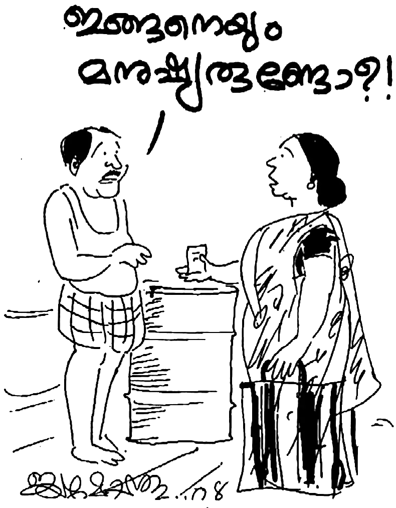“ദൈവരാജ്യം ഭക്ഷണവും പാനീയവുമല്ല; നീതിയും സമാധാനവും പരിശുദ്ധാത്മാവിൽ സന്തോഷവുമത്രേ” എന്നു് തിരുവചനം പറയുന്നു. ദൈവരാജ്യത്തിലെ അംഗങ്ങൾ നീതി പുലൎത്തുന്നവർ ആയിരിക്കണം എന്നാണു് ദൈവഹിതം. അവരുടെ ഉള്ളിൽ വസിക്കുന്ന പരിശുദ്ധാത്മാവു് അവരെ സകല സത്യത്തിലും വഴി നടത്തുന്നവനാണു്. അതു് അനുസരിച്ചാൽ അനുഗ്രഹവുമുണ്ടാകും എന്നതു് തീൎച്ചയാണു്.
പ്രിയ സഹോദരാ, താങ്കൾ ഒരു ദൈവമകനായിരിക്കുന്നുവോ? എന്നിട്ടും താങ്കൾ നിരന്തരമായി ദാരിദ്ര്യവും ബുദ്ധിമുട്ടും അനുഭവിക്കുന്നവനാണോ? നിത്യവൃത്തിക്കു പോലും താങ്കൾ കടക്കാരൻ ആയിരിക്കുന്നുവോ? മോഹനന്റെ അനുഭവത്തിൽ നിന്ന് ഒരു കാൎയ്യം നമുക്കു് മനസ്സിലാക്കാം. ദൈവം വാക്കു മാറാത്തവനാണു്. ആദ്യം അവന്റെ രാജ്യവും നീതിയും അന്വേഷിപ്പിൻ; അതോടു് കൂടെ ഇതൊക്കെയും നിങ്ങൾക്കു് ലഭിക്കും എന്ന മത്തായി 6:33ലെ വചനം ദൈവം അരുളിച്ചെയ്തതാണു്. നമ്മുടെ ജീവിതത്തിൽ ഈ വചനം പോലെ സംഭവിക്കുന്നില്ലെങ്കിൽ അതിന്റെ കാരണം നാം തന്നെയാണെന്നു് അറിയുക.
ദൈവത്തിന്റെ രാജ്യമെന്താണെന്നും ദൈവനീതി എന്താണെന്നും ഇന്നും നാം മനസ്സിലാക്കിയിട്ടില്ല. നമുക്കു് ന്യായമായ ഭൗതിക നന്മ നൽകുവാൻ ദൈവം ബാധ്യസ്ഥനാണു്. എന്നാൽ അതിനു ദൈവം വച്ചിരിക്കുന്ന വ്യവസ്ഥ – ആദ്യം അവിടുത്തെ രാജ്യവും നീതിയും നാം അന്വേഷിക്കുന്നവർ ആകണം എന്നുള്ളതു മാത്രമാണു്.
‘എങ്കലേക്കു് തിരിയുവിൻ എന്നു് യഹോവയുടെ അരുളപ്പാട്. എന്നാൽ ഞാൻ നിങ്ങളിലേക്കു് തിരിയും.’ ഇതാണു് ദൈവത്തിന്റെ വ്യവസ്ഥ. ദൈവവചനമായ ബൈബിളിൽ ആയിരക്കണക്കിനു വാഗ്ദാനങ്ങൾ ഉണ്ട്. ഈ വാഗ്ദാനങ്ങൾ ദൈവ ജനത്തിനുള്ളതാണു്. പക്ഷേ അതു് വെറുതെ അനുഭവിക്കാം എന്നു് കരുതരുത്. എല്ലാ ദൈവ വചനങ്ങളും സോപാധികമാണു്. ആ ഉപാധികൾ ഒരിക്കലും മാറ്റി മറിക്കുവാൻ മനുഷ്യരായ നമുക്കു് സാധ്യമല്ല. ദൈവം ദൈവം ആയിരിക്കുന്ന കാലം ആ വ്യവസ്ഥ എന്തു തന്നെ ആയിരുന്നാലും ദൈവം പറഞ്ഞതു് അനുസരിക്കുക എന്നതു് മാത്രമാണ് ഏക പോംവഴി.
കൎത്താവായ യേശു ക്രിസ്തു പറഞ്ഞു: “എന്നെ സ്നേഹിക്കുന്നവൻ എന്റെ കൽപ്പനകൾ അനുസരിക്കും (പ്രമാണിക്കും).” പലരും പറയും: “കൎത്താവേ, എന്റെ ഈ പ്രശ്നത്തിന് ഒരു പരിഹാരം വരുത്തി തരിക.” അതു് പല പല പ്രശ്നങ്ങളായിരിക്കും. രോഗം, കടഭാരം, ജോലി, ട്രാൻസ്ഫർ, മക്കൾ, കുടുംബം, വീട്. “ഇതു് ശരിയായാൽ ഞാൻ കൎത്താവിൽ വിശ്വസിക്കാം അല്ലെങ്കിൽ കൎത്താവിനായി ജീവിക്കാം.” എന്നാൽ, ഈ അപേക്ഷ ദൈവം ഒരിക്കലും പരിഗണിക്കുകയില്ല. കാരണം, ദൈവത്തിന്റെ വ്യവസ്ഥ അതല്ല. “നീ എന്നിലേക്കു് തിരിയുക.” ബാക്കി ദൈവം നോക്കി കൊള്ളും. നമ്മുടെ ഭാഗം അനുസരിക്കുക. ദൈവം വിശ്വസ്തനാണു്.
23
പാലത്തിൻകടവെന്ന കുഗ്രാമത്തിലെ താമസം തുടങ്ങിയിട്ടു് ഏതാണ്ടു് ആറു് മാസം കഴിഞ്ഞു കാണും. ഭാൎയ്യ തങ്കമണി മിക്ക ദിവസങ്ങളിലും കൂലിപ്പണിക്കു് പോകും. ഞാൻ ഏകനായിരിക്കും.
വീട്ടിൽ ഒറ്റയ്ക്കു് ദൈവ വചനം വായിച്ചും പ്രാൎത്ഥിച്ചും പാടിയും ഇരുന്നപ്പോൾ ഉച്ചയായതറിഞ്ഞില്ല. ഭാൎയ്യ അടുത്തു കൊണ്ടു് വച്ചിരുന്ന ഭക്ഷണം കഴിച്ച് അല്പം കിടക്കാം എന്നു് കരുതിയിരിക്കുമ്പോൾ പെട്ടെന്ന് ആകാശം മേഘാവൃതമായി നിനച്ചിരിക്കാത്ത സമയം അതിശക്തമായ മഴ പെയ്യുവാൻ തുടങ്ങി.
ഞങ്ങളുടെ കൊച്ചു ഭവനം പുല്ലു മേഞ്ഞതായിരുന്നു. അങ്ങനെ ഒരു ഭവനമാണു് ദൈവം തന്നിരുന്നത്. മഴക്കാലം കഴിഞ്ഞു് ഒക്ടോബർ മാസം ആയതിനാൽ പുരപ്പുറത്തെ മേച്ചിൽ പുല്ലുകൾ ഉണങ്ങി വിടവുണ്ടായിരുന്നതിനാൽ രാത്രിയിൽ നക്ഷത്രം കാണുന്ന വിധത്തിലായിരുന്നു. മഴ പെയ്യാൻ തുടങ്ങിയപ്പോൾ വീടിന്റെ പല ഭാഗത്തായി ചോൎന്നു വെള്ളം എല്ലാം അകത്തേക്കു് വീഴാൻ തുടങ്ങി.
ഏകനായി കിടക്കുന്ന എനിക്ക് അന്ന് ഒരു വീൽച്ചെയർ പോലുമില്ല. കട്ടിൽ നനയാൻ തുടങ്ങിയപ്പോൾ ഞാൻ കിടക്ക ഒരറ്റം മുതൽ അതിനകത്തിരുന്നു ചുരുട്ടാൻ തുടങ്ങി. ചുരുട്ടി ചുരുട്ടി കട്ടിലിന്റെ ഒരറ്റത്തു് ഞാനും കിടക്കയും വന്നെത്തി. അവിടെ എങ്കിലും നനയാതിരുന്നാൽ മതിയായിരുന്നു എന്നു് ചിന്തിച്ചു് കൊണ്ടിരിക്കുമ്പോൾ മഴ ശക്തി പ്രാപിച്ചു. പെട്ടെന്ന് ഞാൻ ഇരിക്കുന്ന ഇടത്തേക്കു് പൊടിഞ്ഞ ഉണക്ക പുല്ലിനോടു് കൂടെ മഴവെള്ളം മുഴുവനായി എന്റെ തലയിലും കിടക്കയിലും വന്നു വീഴുവാൻ തുടങ്ങി. പഞ്ഞി കൊണ്ടുള്ള കിടക്ക നനഞ്ഞാലുള്ള സ്ഥിതി നമുക്കു് അറിവുള്ളതാണല്ലോ. കിടക്ക ഇല്ലാതെ തളൎന്ന എനിക്ക് കിടക്കാനും നിവൃത്തിയില്ല.
നനഞ്ഞു കുതിൎന്ന ഞാൻ കണ്ണുനീരോടെ ദൈവത്തോടു് ഏറ്റവും ചുരുങ്ങിയ വാക്കിൽ ഒരു പ്രാൎത്ഥന നടത്തി: “ദൈവമേ, എനിക്ക് അങ്ങു ശക്തി തന്നിട്ടില്ല. ശക്തി തന്നെങ്കിൽ ഞാൻ എങ്ങനെ എങ്കിലും ഇതു് നനയാതാക്കുമായിരുന്നു. പിതാവേ, ഈ ഭവനം നനയാത്ത വിധത്തിൽ ഓടു് മേഞ്ഞു തരണമേ.”
ഇതു് പറയുമ്പോഴേക്കും എന്റെ ഹൃദയം തകൎന്നു ഞാൻ കരഞ്ഞു പോയി. എന്തൊരു നിസ്സുഹായവസ്ഥ. സഹായിക്കാൻ ആരുമില്ല. ഭാൎയ്യ അടുത്തില്ല. എനിക്കു് പരസഹായം കൂടാതെ ഒന്നും ചെയ്യാൻ കഴിയുകയുമില്ല.
ഏതായാലും ഇത്രയും പ്രാൎത്ഥിച്ചു കഴിഞ്ഞപ്പോൾ എന്റെ ഉള്ളിൽ വലിയ ആശ്വാസം ദൈവം പകൎന്നു. ഭാൎയ്യ പണി കഴിഞ്ഞു് വന്നതിനു ശേഷം നനഞ്ഞതെല്ലാം കിടക്ക അടക്കം മാറ്റി ഞാൻ വെറും പായയിൽ കിടന്നു. ശരീരം പകുതി തളൎന്നു പോയ ഒരു മനുഷ്യൻ എന്തു ചെയ്യാൻ കഴിയും? എല്ലാം സഹിക്കുക തന്നെ.
പിറ്റേ ദിവസം വെയിൽ കിട്ടിയിട്ടു് വേണം കിടക്ക ഉണക്കുവാൻ. അതായി ഭാൎയ്യയുടെ ശ്രമം. എന്നാൽ ഉച്ച ആകാറായപ്പോൾ എന്റെ ജ്യേഷ്ഠൻ 12 കി. മീറ്റർ അകലെ നിന്ന് എന്റെ അടുക്കൽ വന്നു. വന്നു കയറി ഇരുന്നപാടേ എന്നോടു് പറഞ്ഞു; “എടാ മോനേ, നിനക്ക് ഒരു സഹായം നൽകാം എന്നു് നമ്മുടെ പേരട്ടയിലുള്ള ഒരു തോട്ടം ഉടമ എന്നോടു് പറഞ്ഞിട്ടുണ്ട്. ഇന്നലെ ഉച്ചയ്ക്ക് അദ്ദേഹം എന്നോടു് പറഞ്ഞു, “താങ്കളുടെ അനുജൻ മോഹനൻ – ആ സുഖമില്ലാത്തയാൾക്ക് ഒരു ചെറിയ സഹായം – 2000 രൂപ നൽകാൻ ഞാൻ ആഗ്രഹിക്കുന്നു. അതു് ഏതു വിധത്തിൽ വേണം? പശുവിനെ വേണം എങ്കിൽ വാങ്ങി കൊടുക്കാം. അല്ലെങ്കിൽ വീടിനു ഓടു് വച്ചു കൊടുക്കാം. ഏതു് വിധത്തിൽ വേണം എന്നു് താങ്കളുടെ അനുജനോടു് ചോദിച്ച് എഴുത്തും വാങ്ങി വരിക.”
ഇതു് കേട്ട ഞാൻ അത്ഭുതപ്പെട്ടു് പോയി. ഇന്നലെ ഈ നേരത്താണ് മഴ നനഞ്ഞപ്പോൾ ഞാൻ ദൈവത്തോടു് കരഞ്ഞു പറഞ്ഞത്. ഇന്നിതാ ദൈവത്തിന്റെ കരുതൽ. ഞാനിതിനെ കുറിച്ചു് ചിന്തിച്ചു് കൊണ്ടിരിക്കുമ്പോൾ ദൈവാത്മാവു് എന്നോടു പറഞ്ഞു: “ഇന്നലത്തെ നിന്റെ കണ്ണുനീർ ഞാൻ കണ്ടു. അദ്ദേഹത്തോടു് വീടിന് ആവശ്യമുള്ളു ഓടിന്റെ കാൎയ്യം പറയൂ.”
ഞാൻ ജ്യേഷ്ഠനോടു് പറഞ്ഞു: “അദ്ദേഹത്തോടു് ആ പണത്തിന് 800 ഓടു് വാങ്ങി തരാൻ പറയൂ.” എന്റെ സഹോദരൻ പോയി ഞാൻ പറഞ്ഞതു പോലെ അദ്ദേഹത്തോടു പറഞ്ഞു. പൂൎണ്ണ മനസ്സോടെ അദ്ദേഹം 800 ഓടു് വാങ്ങാൻ പറഞ്ഞു. എന്നിട്ടും രണ്ടായിരം രൂപ ആയില്ല. ബാക്കി ഉള്ളതിനു ഒരു ജനലിനു പകരം വയ്ക്കുന്ന കുരിഡീസ് (ജാലി) 40 എണ്ണം കൂടെ വാങ്ങി തന്നു.
ഇരുപത്തിനാലു് മണിക്കൂറിനു് ഉള്ളിൽ വീടു് നന്നാക്കുവാൻ ഓടു് ദൈവം വാങ്ങി തന്നു. മാത്രമല്ല എന്റെ വിശ്വാസത്തിന് എതിരായിരുന്ന എന്റെ ഭാൎയ്യാ സഹോദരൻ – ദൈവം എന്റെ ജീവിതത്തിൽ പ്രവൎത്തിച്ച നന്മയെ കണ്ടപ്പോൾ – ആവശ്യത്തിനു പട്ടിക ഉണ്ടാക്കി ഓടു് വച്ചു തന്നു.
ദൈവം എത്ര വലിയവനാണ് ! “ദൈവം കൃപയും കരുണയും ദീൎഘ ക്ഷമയും മഹാദയയും ഉള്ളവൻ” എന്ന (സങ്കീൎത്തനം 145:8) വാക്യം ഞാനോൎത്തു പോയി. “ദൈവത്തിന്റെ ഹനന യാഗങ്ങൾ തകൎന്നിരിക്കുന്ന മനസ്സ്; തകൎന്നും നുറുങ്ങിയും ഇരിക്കുന്ന ഹൃദയത്തെ ദൈവമേ, നീ നിരസിക്കുകയില്ല” (സങ്കീൎത്തനം 51:17).
മൎക്കൊസ് പത്താം അദ്ധ്യായം നാൽപ്പത്തി ആറാം വാക്യത്തിൽ നാം ബൎത്തിമായി എന്ന ഒരു കുരുടനായ മനുഷ്യനെ കുറിച്ചു് വായിക്കുന്നു. അവൻ യേശു അതു് വഴി കടന്നു പോകുന്നു എന്നു് കേട്ടപ്പോൾ “ദാവീദു പുത്രാ, എന്നോടു് കരുണ തോന്നണമേ” എന്നു് നിലവിളിച്ചു കൊണ്ടിരുന്നു. യേശുവിന്റെ മുൻപേ പോയവർ അവന്റെ നിലവിളി കേട്ടിട്ടു് അവനെ ശാസിച്ചു. എന്നാൽ അവൻ അതിലൊന്നും അടങ്ങി ഇരുന്നില്ല. ദാവീദു പുത്രാ, എന്നോടു് കരുണ തോന്നേണമേ എന്ന് ഉറക്കെ നിലവിളിച്ചു.
യേശു അവിടെ എത്തിയപ്പോൾ “അവനെ വിളിപ്പിൻ” എന്നു് പറഞ്ഞു. യേശു അവനെ തൊട്ടു് സൌഖ്യമാക്കി എന്നു് നാം വായിക്കുന്നു. ഒരിക്കലും ഒരു ഭക്തന്റെ നിലവിളി ദൈവം കേൾക്കാതിരിക്കുന്നില്ല. മാത്രമല്ല നിലവിളിക്കുന്നവനു ദൈവം ഉത്തരം നൽകുകയും ചെയ്യുന്നു.
“യഹോവ ഭക്തനെ തനിക്കു് വേർതിരിച്ചിരിക്കുന്നു എന്നറിവിൻ; ഞാൻ യഹോവയെ വിളിച്ചപേക്ഷിക്കുമ്പോൾ അവൻ കേൾക്കും” (സങ്കീൎത്തനം 4:3).
ആകയാൽ സഹോദരാ, സഹോദരീ, നിങ്ങളുടെ പ്രശനങ്ങൾ എന്തു തന്നെയായിരുന്നാലും നിങ്ങൾ ഏതവസ്ഥയിൽ ആയിരുന്നാലും മടുത്തു പോകരുത്. ഉറച്ച വിശ്വാസത്തോടെ ദൈവത്തോടു് നിലവിളിക്കുക. നിലയറിഞ്ഞുള്ള വിളിയാണു് നിലവിളി. കാരുണ്യവാനായ ദൈവം കണ്ണുനീർ കണ്ടു് കടന്നു പോകുന്നവനല്ല.
നയിൻ എന്ന പട്ടണത്തിലെ വിധവയുടെ കണ്ണുനീർ കണ്ടു് മകനെ ഉയിർപ്പി ച്ചതു പോലെ നമ്മോടു് “കരയേണ്ട” എന്നു് പറയുന്നവനാണ് അവിടുന്ന് എന്നറിയുക. “കരയേണ്ട” എന്നു് പറയുക മാതമല്ല കരച്ചിലിന്റെ കാരണമെന്തോ അതു് പരിഹരിക്കുവാൻ കഴിവുള്ളവനാണ് അവിടുന്ന് എന്ന കാൎയ്യം നീ മറക്കരുത്.
ഇന്നലെ ഉച്ചയ്ക്കു് ഞാൻ പ്രാൎത്ഥിച്ച അതേ സമയം ദൈവം ആ പ്രശ്നത്തിനു പോംവഴി കണ്ടെത്തിയിരുന്നു. പക്ഷേ അതു് എന്റെ അടുക്കൽ എത്തുവാൻ 24 മണിക്കൂർ വേണ്ടി വന്നു എന്നേയുള്ളൂ. ദാനീയേൽ പ്രാൎത്ഥിക്കാൻ തുടങ്ങിയ ആദ്യ ദിവസം തന്നെ ദൈവം ഉത്തരം നൽകി. പക്ഷേ മറുപടി ദാനീയേലിന്റെ അടുത്തു് എത്തുവാൻ 21 ദിവസം വേണ്ടി വന്നു എന്നതാണു് സത്യം.
“ആകയാൽ നാം മടുത്തു പോകാതെ പ്രാൎത്ഥിക്കുന്നവർ ആയിരിക്കണം” എന്നതിന്റെ ഉദാഹരണം നമുക്കു് ലൂക്കൊസ് സുവിശേഷം പതിനെട്ടാം അദ്ധ്യായത്തിൽ കാണുന്ന ഒരു വിധവയുടെയും ന്യായാധിപന്റെയും ഉപമയിൽ നിന്നു് ഗ്രഹിക്കാവുന്നതാണ് (18:1-8). മനുഷ്യനെ ശങ്കയും ദൈവത്തെ ഭയവും ഇല്ലാത്ത ന്യായാധിപനായിട്ടു കൂടി വിധവയുടെ നീതിക്കു് വേണ്ടിയുള്ള യാചന പരിധി കഴിയുന്നു എന്നു് കാണ്ടപ്പോൾ അതിനു മറുപടി നൽകുവാൻ ന്യായാധിപൻ നിർബ്ബന്ധിതനായി തീൎന്നു. എങ്കിൽ ദൈവമോ രാപകൽ തന്നോടു് നിലവിളിക്കുന്ന തന്റെ വൃതന്മാരുടെ കാര്യത്തിൽ ദീൎഘക്ഷമ ഉള്ളവൻ ആയാലും അവരെ പ്രതിക്രിയ നടത്തി രക്ഷിക്കയില്ലയോ എന്നു് യേശു ചോദിക്കുമ്പോൾ അവിടുന്നു തന്നെ ഉത്തരം പറയുന്നു: “വേഗത്തിൽ അവരെ പ്രതിക്രിയ നടത്തി രക്ഷിക്കും എന്നു് ഞാൻ നിങ്ങളോടു് പറയുന്നു.”
യേശു ഒരു മനുഷ്യ പുത്രനായി ഭൂമിയിൽ വസിച്ചപ്പോൾ എങ്ങനെ ഇത്ര മാത്രം വിശുദ്ധമായി ഒരു ജയ ജീവിതം നയിക്കുവാൻ സാധിച്ചു? ഒരിക്കൽ പോലും ഒരു പരാതിയും ആരോടും ഇല്ലാത്തവനായിരുന്നു. എത്ര പരീക്ഷിക്കപ്പെട്ടിട്ടും മനസാ വാചാ കൎമ്മണാ ഒരു പാപവും ചെയ്യാതിരുന്നു. അതിന്റെ പിന്നിലെ രഹസ്യം എന്താണ് ?
നമുക്കു് ഉള്ളതു പോലെ വിചാരമോ വികാരമോ ചിന്താ ശക്തിയോ ഇച്ഛാശക്തിയോ ഇല്ലാത്തതു കൊണ്ടാണോ? ഒരിക്കലുമല്ല. അവൻ ജഡത്തിൽ വെളിപ്പെട്ടു് എന്നു് നാം തിരുവചനത്തിൽ വായിക്കുന്നുവല്ലോ. “മക്കൾ ജഡരക്തങ്ങളോടു് കൂടിയവർ ആകകൊണ്ടു് അവനും അവരെപ്പോലെ ജഡരക്തങ്ങളോടു് കൂടിയവനായി …” (എബ്രായർ 2:14)
എന്നാൽ ഇതാണ് ആ രഹസ്യം:
“ക്രിസ്തു തന്റെ ഐഹിക ജീവിത കാലത്തു് തന്നെ മരണത്തിൽ നിന്നു രക്ഷിപ്പാൻ കഴിയുന്നവനോടു് ഉറച്ച നില വിളിയോടും കണ്ണുന്നീരോടും കൂടെ അപേക്ഷയും അഭയ യാചനയും കഴിക്കയും ഭയഭക്തി നിമിത്തം ഉത്തരം ലഭിക്കുകയും ചെയ്തു” (എബ്രായർ 5:7).
തന്നെ മരണത്തിൽ നിന്നു് രക്ഷിക്കാൻ വേണ്ടിയായിരുന്നു അവിടുന്ന് ഇത്ര അധികം നിലവിളിച്ചത്. അതു് കേവലം ശാരീരിക മരണത്തിൽ നിന്നു രക്ഷിക്കാനായിരുന്നില്ല എന്നു് തന്റെ ഗത്ശമന മുതൽ ക്രൂശുവരെ ഉള്ള ജീവിത പാതയിൽ നിന്നും നമുക്കു് ഗ്രഹിക്കാമല്ലോ. ശാരീരിക മരണത്തെ അവിടുന്ന് ഒരിക്കലും ഭയപ്പെട്ടിരുന്നില്ല. താൻ നേരിടുവാനുള്ള ഭാവിയെ കുറിച്ചു പ്രവചിച്ചപ്പോൾ വ്യക്തമാക്കിയതാണ് (ലൂക്കൊസ് 9:22):
“മനുഷ്യ പുത്രൻ പലതും സഹിക്കുകയും മൂപ്പന്മാർ, മഹാപുരോഹിതന്മാർ, ശാസ്ത്രികൾ എന്നിവർ അവനെ തള്ളിക്കളഞ്ഞു കൊല്ലുകയും അവൻ മൂന്നാം നാൾ ഉയിൎത്തെഴുന്നേൽക്കുകയും വേണം”
അതു് പറയുമ്പോൾ യേശു ശാരീരികമായി ഇത്തരുണത്തിൽ മരണത്തിൽ കൂടെ കടന്നു പോകണം എന്ന് അവിടുത്തേക്കു് സ്പഷ്ടമായിരുന്നു.
എന്നാൽ എന്തിനു വേണ്ടിയാണ് അവിടുന്നു നിലവിളിച്ചത് ? ഒരിക്കൽ എങ്കിലും ആദാമിനു പറ്റിയതു പോലെ ഒരു ചെറിയ തെറ്റെങ്കിലും യേശുവിനു പറ്റിയിരുന്നെങ്കിൽ ഈ പ്രപഞ്ചം മുഴുവനും പിശാചിന്റെ കൈകളിൽ അമരുമായിരുന്നു. മരണം സദാകാലം വാഴുമായിരുന്നു. അതു് സംഭവിക്കരുതു്. അതിന്നായി ജഡത്തിൽ വെളിപ്പെട്ട അവിടുന്ന് ഉറച്ച നിലവിളിയോടും അഭയ യാചനയോടും കൂടെ നിലവിളിച്ചു; എന്നു് വച്ചാൽ ഒലിവു മലയിൽ പോയി രാത്രി യാമങ്ങൾ മുഴുവൻ അവിടുന്നു പിതാവിനോടു് പ്രാൎത്ഥിച്ചു നിലവിളിച്ചു. ദൈവം അവിടുത്തേക്ക് ഉത്തരം നൽകുകയും ചെയ്തു.
ഇന്ന് എന്തുകൊണ്ട് ക്രിസ്ത്യാനികൾ എന്ന് അഭിമാനിക്കുന്ന നമുക്കു് പാപത്തിൻ മേൽ ജയം പ്രാപിക്കാൻ കഴിയുന്നില്ല? ഒറ്റ കാരണത്താൽ തന്നെ — നാം ദൈവ സന്നിധിയിൽ ഭയഭക്തിയോടു് കൂടെ സഹായത്തിനായി ദൈവത്തോടു നിലവിളിക്കുന്നില്ല!
ആപത്തിൽ പെടുന്ന മനുഷ്യർ നിലവിളിക്കുന്നതു് കേട്ടിട്ടില്ലേ? വീടിനു തീപിടിച്ചാലോ വെള്ളത്തിൽ മുങ്ങുമ്പോഴോ വാഹനം അപകടത്തിൽ പെട്ടാലോ നാം ലജ്ജ കൂടാതെ “രക്ഷിക്കണേ” എന്ന് അഭയ യാചന കഴിക്കും. ഇതു് പോലെ നമ്മുടെ മിഥ്യാഭിമാനം മാറ്റി വച്ച് ദൈവ കൃപയ്ക്കായി നാം നിലവിളിക്കേണം. “എന്നിൽ നന്മ വസിക്കുന്നില്ല” എന്ന സത്യം നാം ഗ്രഹിച്ചിട്ടുണ്ടെങ്കിൽ മുഴുവൻ നന്മയുടെയും ഉറവിടമായ ദൈവത്തോടു് നാമും അഭയ യാചന കഴിക്കുന്നവരായിരിക്കും നിശ്ചയം.
ബൈബിളിന്റെ ആദിയോടന്തം പരിശോധിച്ചാൽ പ്രവാചകന്മാരും പിതാക്കന്മാരും കഴിഞ്ഞകാല വൃതന്മാരും എങ്ങനെയാണു് വൻകാൎയ്യം ചെയ്തത്, എങ്ങനെ ദൈവം അവരെ ഉപയോഗിച്ചു എന്നു് കാണുവാൻ കഴിയും. അതിന്റെ എല്ലാം പിന്നിൽ പ്രവൎത്തിച്ച ഏറ്റവും വലിയ ശക്തി എന്തായിരുന്നു? പ്രാൎത്ഥന തന്നെ. അബ്രഹാം, യിസ്ഹാക്, യാക്കോബ്, മോശെ, ശമൂവേൽ, ദാവീദ്, ശലോമോൻ, നെഹെമ്യാവ്, എസ്രാ, ദാനീയേൽ എന്നീ വിശുദ്ധന്മാരുടെ പ്രാൎത്ഥനയിലെ നിലവിളിക്കു് ദൈവം എത്ര വേഗം ഉത്തരം നൽകി എന്നു് കണ്ടാൽ നാം നമ്മെ തന്നെ വിനയപ്പെടുത്തി നിലവിളിക്കുന്നവരായി തീരും തീൎച്ച.
24
അങ്ങനെയിരിക്കെ ഒരു ദിവസം അടുത്തുള്ള പയ്യനെ അരി വാങ്ങാൻ അയച്ചു. തങ്കമണിക്ക് ആകെയുണ്ടായിരുന്ന ഒരു കുട ആ പയ്യന്റെ കയ്യിൽ നിന്നു് നഷ്ടപ്പെട്ടു് പോയി.
പിറ്റേ ആഴ്ച കടയിൽ നിന്നു് വന്ന ഉടനെ പറഞ്ഞു: “എന്റെ നഷ്ടപ്പെട്ട കുട ദൈവം തിരികെ തന്നിരിക്കുന്നു.”
മോഹനൻ കുട വാങ്ങിച്ചു തുറിച്ചു നോക്കി. “ഇതു് ദൈവത്തിന്റെ കുടയാണോ അതോ ചെകുത്താന്റെ കുടയാണോ എന്നു് നോക്കട്ടെ” എന്നു് തമാശ രൂപേണ പറഞ്ഞു കൊണ്ട് മോഹനൻ കുട നിവൎത്തി നോക്കി. നോക്കിയപ്പോൾ കണ്ടത് “ചെറുവാരി വിനോദ് ” എന്ന പേരായിരുന്നു. മോഹനന്റെ അച്ഛനും അമ്മയും താമസിക്കുന്ന കൂട്ടുപുഴ ഗ്രാമത്തിലെ താമസക്കാരൻ. അയൽക്കാരൻ തന്നെയാണു്. മോഹനൻ ആ വീട്ടുകാരെ നല്ലതു് പോലെ അറിയാം.
മോഹനൻ പറഞ്ഞു: “കുട ഉടനെ തന്നെ തിരിച്ചേല്പിക്കണം. ഒന്നുകിൽ ബസിൽ ഏല്പിക്കണം അല്ലെങ്കിൽ ഉടമസ്ഥനെ ഏല്പിക്കണം.” പന്ത്രണ്ടു് കിലോമീറ്റർ യാത്ര ചെയ്യണം ഉടമസ്ഥനെ ഏല്പിക്കണമെങ്കിൽ. അവസാനം കത്തയച്ച് ഈ വിവരം ആളിനെ അറിയിക്കുകയും മോഹനന്റെ ജ്യേഷ്ഠൻ വന്നപ്പോൾ കുട ജേഷ്ഠന്റെ വശം കൊടുത്തയച്ച് അവരെ ഏൽപിക്കുകയും ചെയ്തു.
സത്യമായി യേശുവിനെ സ്വീകരിച്ച ആൾ ഒരിക്കലും കള്ളം പറയാനോ ചെയ്യാനോ പാടില്ല. അന്യന്റെ വക അപഹരിക്കുന്നതും വ്യാജം കാണിച്ച് ആദായമുണ്ടാക്കുന്നതും കൎത്താവിന്റെ കുഞ്ഞുങ്ങൾക്കു് യോഗ്യമല്ല.
തങ്കമണിയുടെ അച്ഛൻ പറമ്പിൽ പുല്ലു ചെത്താൻ പോയി. പുല്ലു ചെത്തിക്കൊണ്ടു് നിന്നപ്പോൾ പുല്ലിനിടയിൽ ഒരു കന്നാസ് (ക്യാൻ) കണ്ടു. അതു് നിറയെ ചാരായമുണ്ടായിരുന്നു. വാറ്റുകാർ ചാരായം വാറ്റിയിട്ടു് ഒളിച്ചിട്ടിരിക്കുകയാണു്. മദ്യപനായ അച്ഛനു സന്തോഷമായി. കന്നാസ് അദ്ദേഹം പുല്ലിനകത്തു വച്ചു കെട്ടി വീട്ടിലെത്തിച്ചു. അന്നു മുതൽ കുടിക്കാൻ തുടങ്ങി. അഞ്ചു് ലിറ്റർ ചാരായം മൂന്നു ദിവസം കൊണ്ടു തീൎത്തു. ചാരായം തീൎന്നപ്പോൾ ആ കന്നാസുമായി അദ്ദേഹം മകളുടെ വീട്ടിൽ വന്നു. “ഇന്നാ മോളേ, നിനക്കു് മണ്ണെണ്ണ വാങ്ങാനിരിക്കട്ടെ" എന്നു് പറഞ്ഞിട്ടു് അദ്ദേഹം പോയി. മോഹനൻ അതിലത്ര പ്രശ്നം തോന്നിയില്ല.
എന്നാൽ രാത്രിയിൽ പ്രാൎത്ഥിക്കുന്ന സമയത്തു മോഹനനൊരു അനുഭവമുണ്ടായി. പ്രാൎത്ഥന മേലോട്ടു് പോകുന്നില്ല! പ്രാൎത്ഥന മോഹനന്റെ ചുറ്റും കറങ്ങുകയാണു്. ആ ദിവസങ്ങളിൽ ആകെ പ്രശ്നം. ഭാൎയ്യ ജോലിക്കു പോയിട്ടു് കൂലി കിട്ടിയില്ല; റേഷൻ വാങ്ങാൻ പോയിട്ടു് അരി കിട്ടിയില്ല; എല്ലാം കൊണ്ടും ഒരു സമാധാനവും ഇല്ല.
മോഹനൻ ഇതിന്റെ കാരണമറിയാൻ പ്രാൎത്ഥിച്ചു. അപ്പോൾ കണ്ട കാഴ്ച—ആകാശത്തു നിന്ന് ഒരു വെളുത്ത കന്നാസ് താഴേക്കു് പാഞ്ഞു വരുന്നു. അതു് വന്നിട്ടു ശക്തിയോടെ കട്ടിൽ തുളച്ചു കൊണ്ടു് താഴേക്കു് പോയി! മോഹനൻ ഭാൎയ്യയോടു് പറഞ്ഞു: “എല്ലാറ്റിനും കാരണം ഈ കന്നാസാണു്. ഇതു് ഇവിടെ ഇരിക്കുന്നതാണു് കുഴപ്പങ്ങൾ ഉണ്ടാക്കുന്നത്. ഇതെടുത്തു മാറ്റണം. നമുക്കിതു വേണ്ടാ. ഇതു് മോഷ്ടിച്ച കന്നാസാണു്. മറ്റാരുടെയോ വക.”
തങ്കമണി പിന്നെ മടിച്ചില്ല. ആ കന്നാസെടുത്തു കൊണ്ടു് അവർ കുടുംബ വീട്ടിലേക്ക് ഓടി. അവിടെ ചെന്നിട്ടു് ഒന്നും പറയാതെ ആ കന്നാസ് വീട്ടിൽ വച്ചിട്ടു് പെട്ടെന്നു് മടങ്ങി വന്നു. ആദ്യമൊക്കെ തങ്കമണി വിസമ്മതം പ്രകടിപ്പിച്ചെങ്കിലും ഭൎത്താവിന്റെ നിൎബ്ബന്ധത്തിനു വഴങ്ങി തങ്കമണിക്ക് അതു് അനുസരിക്കേണ്ടി വന്നു.
ദൈവവചനത്തിൽ ഇങ്ങനെ വായിക്കുന്നു: “ചത്ത ഈച്ച തൈലക്കാരന്റെ തൈലം നാറുമാറാക്കുന്നു.” അർഹിക്കാത്ത മുതൽ വീട്ടിലിരിക്കുമ്പോൾ അന്യായമായി സമ്പാദിക്കുന്നതു് അനുഗ്രഹത്തിനു തടസ്സമായിരിക്കുമ്പോൾ, അതു് ഒഴിവാക്കുന്നതാണു് നല്ലതു് —എത്ര വിലപ്പെട്ടതാണെങ്കിലും. ആ വെള്ള കന്നാസ് വീട്ടിലിരുന്ന മൂന്നാഴ്ച മോഹനൻ നായരുടെ കുടുംബം കൊടും കഷ്ടപ്പാടു് അനുഭവിച്ചു. സമാധാനവും സന്തോഷവും നഷ്ടപ്പെട്ട അവസ്ഥയായിരുന്നു ആ കുടിലിൽ. അതു് ഒഴിവാക്കിയപ്പോൾ നഷ്ടപ്പെട്ട സന്തോഷവും സമാധാനവും മടങ്ങി വന്നു. കൎത്താവു് പ്രാൎത്ഥന കേൾക്കുന്നതിനുള്ള തടസ്സം മാറി.
യോശുവയുടെ പുസ്തകം ഏഴാം അദ്ധ്യായത്തിലാണ് ആഖാനെ കുറിച്ചുള്ള വിവരണം ഉള്ളത്. യെരീഹോ (Jericho) എന്ന പട്ടണത്തിലെ വസ്തുക്കൾ ദൈവത്തിനു ശപഥാൎപ്പിതമാണെന്നു് ദൈവം കൽപിച്ചിരുന്നു. എന്നിട്ടും വെള്ളി കട്ടിയും സ്വൎണ്ണ കട്ടിയും മോഷ്ടിച്ച ആഖാൻ യിസ്രായേൽ ജനതയ്ക്കു് ചെയ്ത ദോഷം വലുതായിരുന്നു.
മോഹനൻ നായർ പറയുന്നു:
“നാം ഒരു തെറ്റു ചെയ്യുമ്പോൾ ആദ്യം ബാധിക്കുന്നതു് നമ്മേ ആണെങ്കിലും, പിന്നെ അതു് നമ്മുടെ കുടുംബത്തെയും നമ്മുടെ പ്രാദേശിക സഭയെയും തുടൎന്നു ആഗോളവ്യാപകമായ സഭയെയും ബാധിക്കും. അങ്ങനെ ഉള്ള കളങ്കമാണുണ്ടാകുക. പഴയ നിയമത്തിൽ പാപത്തോടു് യാതൊരു വിട്ടുവിഴ്ചയോ ദാക്ഷണ്യമോ കാണിക്കാതെ ശിക്ഷിക്കുമ്പോൾ പുതയ നിയമത്തിൽ … “ദൈവം വിശുദ്ധനായിരിക്കുന്നതു് പോലെ നിങ്ങളും വിശുദ്ധരായിരിപ്പിൻ" എന്ന വാക്യമാണ് ഓൎക്കേണ്ടത് (2 പത്രൊസ് 1:16).
“അശുദ്ധമായത് ഒന്നും തൊടരുത്; എന്നാൽ ഞാൻ നിങ്ങളെ കൈക്കൊണ്ട്, നിങ്ങൾക്കു് പിതാവും നിങ്ങൾ എന്നിക്കു് പുത്രന്മാരും പുത്രിമാരും ആയിരിക്കും എന്നു് സൎവ്വശക്തിയുള്ള കൎത്താവ് അരുളി ചെയ്യുന്നു.”
പ്രിയമുള്ളവരേ, ഈ വാഗ്ദത്തങ്ങൾ നമുക്കുള്ളതു കൊണ്ട്, നാം ജഡത്തിലെയും ആത്മാവിലെയും സകല കന്മഷവും നീക്കി നമ്മെ തന്നെ വെടിപ്പാക്കി ദൈവ ഭയത്തിൽ വിശുദ്ധിയെ തികച്ചു കൊൾക” (2 കൊരിന്ത്യർ 6:16-7:1).
നമ്മുടെ ജിവിതത്തിലെ വളരെ ചെറിയ പാപമെന്നു് നാം കരുതുന്നതു് പോലും, പലപ്പോഴും ദൈവാനുഗ്രഹത്തെ തടഞ്ഞു നിറുത്താൻ പര്യാപ്തമാണു്. നമ്മുടെ ഭവനങ്ങളിലെ വൈദ്യുതി തന്നെ നോക്കുക. ഏതെങ്കിലും ചെറിയ ഒരു തടസ്സം മതി വൈദ്യുതി പ്രവാഹം നിലയ്ക്കാൻ. ചെറിയ കാർമേഘപാളികൾ സുൎയ്യ പ്രകാശത്തിനു മങ്ങൽ ഏൽപ്പിക്കുന്നില്ലേ? ഇതു് പോലെയാണു് പാപത്തിൽ ദൈവം വസിക്കാത്തതും. പാപം ചെറുതോ വലുതോ എന്നുള്ളതല്ല. ഒരു അവിശ്വാസം മൂലമുള്ള അനുസരണക്കേടിന്റെ ഫലമായി ആദാം ശപിക്കപ്പെട്ടു. കയീന്റെ പാപം നിമിത്തം ഭൂമി ശാപഗ്രസ്തമായി. നമ്മുടെ ജിവിതത്തിലെ ചെറിയ ചെറിയ പാപങ്ങൾ കണ്ടെത്തുന്നതിനു കുടുതൽ ദൈവ വെളിച്ചം ഉള്ളവരാകാൻ നമുക്കു ഉത്സാഹിക്കാം. നമ്മുടെ ഒരുപാടു് പ്രാൎത്ഥനകൾക്കും മറുപടി ലഭിക്കാത്തതിന്റെ കാരണം പാപത്താൽ നാം ദൈവത്തിൽ നിന്നു് അകന്നു് ഇരിക്കുന്നതു് കൊണ്ടാണു്. ക്രിസ്തുവിന്റെ രക്തം മൂലം ശുദ്ധീകരണം പ്രാപിക്കാൻ ദൈവം വായനക്കാർക്കു് ഇടയാക്കട്ടെ.”
ഇതു് വായിക്കുന്ന പ്രിയ മിത്രമേ, സഹോദരാ, സഹോദരീ, സാറേ, നിങ്ങൾക്കു് ഇതിനെ കുറിച്ച് എന്തു തോന്നുന്നു? നിങ്ങളുടെ വീട്ടിൽ നിങ്ങൾ അർഹിക്കാത്ത എത്രയോ സാധനങ്ങളുണ്ട് ! സ്വന്തമല്ലാത്ത പണവും കൈക്കൂലിയായി സ്വരൂപിച്ചതും നികുതി വെട്ടിപ്പു് നടത്തി സമ്പാദിച്ചതും ബസിൽ നിന്നോ ട്രെയിനിൽ നിന്നോ കളഞ്ഞു കിട്ടിയ സാധനങ്ങൾ—ഇവയൊക്കെ നിങ്ങളുടേതാക്കി വച്ചിരിക്കുകയല്ലേ? പക്ഷേ ഇവ നിങ്ങളുടെ ജീവിതത്തിൽ ശാപമായിരിക്കും.
“അന്യായമായി സമ്പാദിച്ചവ കുറഞ്ഞു കുറഞ്ഞു വരും. അദ്ധ്വാനിച്ചു് ഉണ്ടാക്കുന്നതോ വൎദ്ധിച്ചു വൎദ്ധിച്ചു വരും.”
“കൎത്താവിന്റെ അനുഗ്രഹത്താൽ സമ്പത്തുണ്ടാകുന്നു; അദ്ധ്വാനത്താൽ അതിനോടൊന്നും കൂടുന്നില്ല.”
25
പാലത്തിൻകടവിലെ താമസക്കാലത്തു് മോഹനനെ മുറ്റത്തിറക്കാനോ കുളിപ്പിക്കാനോ തങ്കമണിക്ക് ഒറ്റയ്ക്കു കഴിഞ്ഞിരുന്നില്ല. ഒരു ദിവസം മോഹനൻ ഭാൎയ്യയോടു് പറഞ്ഞു: “ഒന്നു കുളിക്കാനെന്താ വഴി?” ജ്യേഷ്ഠന്റെ ഭവനത്തിൽവച്ചു് ജ്യേഷ്ഠൻ എടുത്തു മുറ്റത്തു കൊണ്ടുപോയി കുളിപ്പിക്കുമായിരുന്നു. ഇവിടെ വന്നതിനു ശേഷം ആഴ്ചകളായി കുളിച്ചിട്ട്.
തങ്കമണി പറഞ്ഞു: “ഞാൻ ആങ്ങളയെ വിളിക്കാം.” ഏതായാലും, മനസ്സില്ലാ മനസ്സോടെ ഭാൎയ്യാസഹോദരൻ മോഹനനെ മുറ്റത്തു് ഒരു കസേരയിൽ ഇരുത്താൻ സഹായിച്ചു. അവിടെ ഇരുന്നു കുളി കഴിഞ്ഞു് മോഹനൻ അളിയനെ വിളിച്ചപ്പോൾ അളിയൻ പൊയ്ക്കഴിഞ്ഞിരുന്നു. മൂന്നു മണിക്കൂർ സമയം മോഹനൻ ആ മുറ്റത്തു് ഇരിക്കേണ്ടി വന്നു.
പുറത്തിറങ്ങിയ മോഹനനെ അളിയൻ സന്ധ്യ കഴിഞ്ഞു് അകത്തു് എത്തിച്ചു കഴിഞ്ഞപ്പോൾ മോഹനൻ ഭാൎയ്യയോടു് പറഞ്ഞു: “ഇനി ആങ്ങളയെ വിളിക്കേണ്ട. അവരുടെ മുഖം മുമ്പിലത്തെ പോലെ അല്ല. അവൎക്കു് മനസ്സില്ലാത്ത കാൎയ്യത്തിനു അവരെ നിർബ്ബന്ധിക്കുന്നതു് ശരിയല്ല. ഞാൻ തുണി നനച്ചു തുടച്ചോളാം. ഞാൻ ബൈബിൾ ചുട്ടു് കളഞ്ഞില്ലെങ്കിൽ സഹായിക്കുകയില്ല എന്ന് അവർ നേരത്തെ പറഞ്ഞിരുന്നല്ലോ.”
ഏതായാലും മോഹനൻ ഒരു തീരുമാനം എടുത്തു. ജീവിത കാലം മുഴുവനും കുളിച്ചില്ലെങ്കിലും, ബൈബിൾ ഉപേക്ഷിക്കുകയില്ല. തന്നെ രക്ഷിച്ചു് പാപമോചനം തന്ന ദൈവത്തെ തള്ളി പറയുകയില്ല. ഇതായിരുന്നു മോഹനന്റെ മറുപടി. ആറു് മാസത്തോളം കുളിക്കാതെ കഴിഞ്ഞ മോഹനൻ ശരീരം തുണി നനച്ചു തുടച്ചു. ഭാൎയ്യ തങ്കമണി പുറം തുടച്ചു കൊടുത്തു. മോഹനൻ അതുമൂലം ത്വക്കു് രോഗമൊന്നും ഉണ്ടായതുമില്ല.
ആറു് മാസം കഴിഞ്ഞപ്പോൾ ദൈവം അത്ഭുതം പ്രവൎത്തിച്ചു. ദൈവം ഒരു സഹോദരനെ മോഹനന്റെ അടുത്തേക്ക് അയച്ചു. എബ്രഹാമെന്ന ആ സഹോദരൻ എം.എ. ബിരുദധാരി ആയിരുന്നു. വിജയമോഹനൻ എന്ന കൎത്തൃദാസനിൽ നിന്നാണു് മോഹനൻ നായരെ കുറിച്ചറിഞ്ഞത്. എബ്രഹാം മോഹനനെ കാണാനെത്തി. ബാങ്കു ജോലി രാജിവച്ചിട്ടു് കിളിയന്തറ എന്ന സ്ഥലത്തു സുവിശേഷ വേല ചെയ്യുകയായിരുന്നു. പന്ത്രണ്ടു് കിലോമീറ്റർ ദൂരം നടന്നാണ് അദ്ദേഹം മോഹനൻ നായരെ കാണാൻ വന്നത്.
അദ്ദേഹത്തോടു് സംസാരിച്ചു കൊണ്ടിരുന്നപ്പോൾ മോഹനൻ ചോദിച്ചു; “എന്നെ ഒന്നെടുത്തു മുററത്തേക്കു് ഇരുത്താമോ? ഒന്നു കുളിക്കാൻ സഹായിക്കാമോ?”
ആത്മീയനായ ഒരാളാണെന്ന നിലയിലാണു് മോഹനൻ അദ്ദേഹത്തോടു് സഹായം അഭ്യൎത്ഥിച്ചത്. വളരെ സന്തോഷത്തോടെ ആ സഹോദരൻ അതനുസരിച്ചു മോഹനനെ കുളിക്കാൻ സഹായിച്ചു. തുടൎന്നു അദ്ദേഹം ഒന്നര വൎഷം ആഴ്ചയിലൊരിക്കൽ മോഹനന്റെ വീട്ടിലെത്തും. പന്ത്രണ്ടു് കിലോമീറ്റർ ദൂരം നടന്നു വരുന്ന ആ സഹോദരൻ വഴിയിൽ കാണുന്നവൎക്കെല്ലാം ലഘുലേഖ കൊടുത്താണു് വരുന്നത്. വന്നാലുടനെ ക്ഷീണം തീൎക്കാൻ മോഹനന്റെ വീട്ടിലുള്ള കട്ടിലിൽ കയറി കിടക്കും.
ഒരു ഗ്ലാസ് ചായ കൊടുക്കാൻ വീട്ടിലാരുമില്ല (തങ്കമണി ജോലിക്കു് പോകും). കുറച്ചു പച്ച വെള്ളം കുടിക്കും. അവർ പരസ്പരം ആത്മീയ കാൎയ്യങ്ങൾ സംസാരിക്കും. ബ്രഹാം ചില പാട്ടുകളൊക്കെ മോഹനനെ പഠിപ്പിക്കും. പിന്നെ മോഹനനെ കുളിപ്പിക്കും. പ്രാൎത്ഥിച്ചിട്ടു് പോകാൻ നേരം ഒരു ഇരുപതു രൂപ മോഹനനു കൊടുത്തിട്ടു് പോകും.
ഒന്നര വൎഷം ഈ ശുശ്രൂഷ എബ്രഹാം ചെയ്തു. ഒന്നര വൎഷം കഴിഞ്ഞപ്പോൾ എബ്രഹാമിനു സ്ഥലംമാറ്റമായി. “കൎത്താവേ, ഇനി മോഹനൻ സഹോദരനെ ആരു പുറത്തേക്കു് എടുത്തിരുത്തും, ആർ അദ്ദേഹത്തെ കുളിപ്പിക്കും? ഞാൻ ഇവിടെ നിന്നു് പോകുകയാണല്ലോ” എന്നൊക്കെയുള്ള ചിന്തകൾ എബ്രഹാമിനെ അലട്ടിയിരുന്നു.
എന്നാൽ, മോഹനന്റെ വീട്ടു് മുറ്റത്തെത്തിയ എബ്രഹാം കണ്ട കാഴ്ച ഒരു വീൽച്ചെയറായിരുന്നു! കണ്ണൂരുള്ള പൌലോസ് തുടിയൻ, സി. ഐ. ശമുവേൽ, ജോണ് സെബാസ്റ്റ്യൻ എന്നീ ബ്രദ്റണ് സഹോദരന്മാരാണ് ചക്രക്കസേര വാങ്ങി കൊടുത്തത്. കുളിക്കാൻ മുറ്റത്തേക്ക് ഇറങ്ങാനായിരുന്നല്ലോ പരാശ്രയം വേണ്ടിയിരുന്നത്. ചക്രക്കസേര കിട്ടി കഴിഞ്ഞപ്പോൾ വീട്ടിൽ നിന്ന് മുറ്റത്തേക്കു് ഇറങ്ങാൻ ഒരു ചരിഞ്ഞ പാതയുണ്ടാക്കിച്ചു് അതിൽ കൂടി വീൽച്ചെയർ ഉന്തിയിറക്കി. അങ്ങനെ കുളിക്കാൻ പറ്റി.
വീൽച്ചെയറിൽ ഇരുന്നു കൊണ്ടു് മോഹനൻ വീടിനു നാലു് പുറവും കയ്യാല കെട്ടുമായിരുന്നു. മാത്രമല്ല, പ്ലാസ്റ്റിക് കൊട്ട നെയ്യാനും പഠിച്ചിരുന്നു. അന്നു പ്ലാസ്റ്റികു ബാസ്ക്കറ്റുകൾക്കു് നല്ല പ്രചാരമുണ്ടായിരുന്നു. ഒരു ബാസ്ക്കറ്റ് നെയ്തു കൊടുക്കുമ്പോൾ മോഹനൻ അഞ്ചു് രൂപ കൂലി കിട്ടുമായിരുന്നു. മൂന്നു ദിവസം കൊണ്ടാണു് ബാസ്ക്കറ്റ് കെട്ടുക.
യാത്ര പറഞ്ഞു പോകാൻ നേരം മോഹനൻ ഒരു സംഭാവന എബ്രഹാമിനെ ഏൽപിച്ചു. നൂറ്റി മുപ്പതു രൂപ! മോഹനന്റെ ഒന്നര വൎഷത്തെ ദശാംശമായിരുന്നു അത്. വേർപിരിയലിന്റെ ദുഃഖത്തിൽ ഇരുവൎക്കും ദുഃഖമുണ്ടായിരുന്നു.
ആ പണം സ്വീകരിച്ചു കൊണ്ടു് എബ്രഹാം പറഞ്ഞു: “സഹോദരാ, ഞാൻ ആഴ്ച തോറും എങ്ങനെയാണ് 20 രൂപ വീതം സഹോദരനു തന്നു കൊണ്ടിരുന്നതെന്ന് അറിയാമോ? ദിവസവും ഒരു നേരത്തെ ആഹാരം ഹോട്ടലിൽ നിന്നു് കഴിക്കുന്നതു് ഉപേക്ഷിച്ചിട്ടായിരുന്നു. ഒരൂണിനു മൂന്നു രൂപയായിരുന്നു അന്ന്. കഴിക്കാതെ മിച്ചം പിടിക്കുന്ന മുന്നു രൂപ. അങ്ങനെ ഒരാഴ്ചത്തെ ഉച്ചയൂണിന്റെ പണമായിരുന്നു ഞാൻ സഹോദരനു തന്നു കൊണ്ടിരുന്നത്.”
ഒരാഴ്ച പോലും മുടങ്ങാതെ മോഹനനെ തേടി വന്ന എബ്രഹാം ക്രിസ്തു സ്നേഹത്തിന്റെ ഉത്തമ സാക്ഷിയായിരുന്നു എന്നു് മോഹനൻ നായർ വിലയിരുത്തുന്നു. മാസം തോറും കിട്ടുന്ന 400 രൂപയിൽ നിന്ന് ഒരു നേരത്തെ ഭക്ഷണത്തിന്റെ പണം മിച്ചം വച്ച് കൂട്ടു് സഹോദരനെ സഹായിക്കാൻ മനസ്സു കാണിച്ച എബ്രഹാമിനെ നന്ദിയും സ്നേഹവും നിറഞ്ഞ മനസ്സോടെ മാത്രമേ മോഹനനു് ഓൎക്കാൻ കഴിയുന്നുള്ളു.
അടുത്തുള്ള കന്യാസ്ത്രീ മഠത്തിൽ ബാസ്ക്കറ്റ് കൊടുത്തതിന് ഇരുപതു രൂപ കിട്ടാനുണ്ടായിരുന്നു. മഴക്കാലം ആയതിനാൽ തങ്കമണിക്കു ജോലിയുമില്ല. വീട്ടു് സാധനങ്ങളെല്ലാം തീൎന്നു. മഠത്തിൽ നിന്നു് ഗോതമ്പും എണ്ണയും കിട്ടും. പാവപ്പെട്ടവൎക്ക് അതു് വലിയ സഹായമായിരുന്നു. എണ്ണയും ഗോതമ്പും കിട്ടുന്നതിനു നാമമാത്രമായ ഒരു തുക മഠത്തിൽ കൊടുക്കണമായിരുന്നു.
ഗോതമ്പും എണ്ണയും വാങ്ങാനായി പള്ളിയിലേക്കു് പോകാൻ ഇറങ്ങിയ തങ്കമണിയോടു് മോഹനൻ പറഞ്ഞു: “കടയിൽ നിന്ന് അരക്കിലോ അരിയും നൂറു ഗ്രാം പരിപ്പും വാങ്ങണം. മകനു ഗോതമ്പു കഞ്ഞി പിടിക്കുകയില്ല. നാലു് വയസ്സല്ലേ ഉള്ളൂ. അരി ആഹാരം കൊടുക്കാൻ അരക്കിലോ അരിയും ഇത്തിരി പരിപ്പും.”
പി.ജി. വൎഗ്ഗീസിന്റെ ഒരു പുസ്തകത്തിൽ നിന്നാണു് പരിപ്പിന്റെ ഗുണം മോഹനൻ മനസ്സിലാക്കിയത്. പി.ജി. വൎഗ്ഗീസ് സുവിശേഷ വേലയ്ക്കു് ഇറങ്ങുന്നതിനു മുമ്പു് പുനലൂർ ഉമ്മനച്ചൻ നൽകിയ ഉപദേശമായിരുന്നു ഇതു് എഴുത്തുകാരൻ ഇക്കാൎയ്യം വായിച്ചിട്ടുണ്ട്.
അഞ്ചു് കിലോ സൂചി ഗോതമ്പും ഒരു ലിറ്റർ എണ്ണയും പള്ളിയിൽ നിന്നു് കിട്ടുന്നതിന് ആറു് രൂപയോ മറ്റോ ആയിരുന്നു കൊടുക്കേണ്ടിയിരുന്നത്. തങ്കമണി പോകാൻ ഇറങ്ങിയപ്പോൾ നാത്തൂൻ വിളിച്ചുപറഞ്ഞു: “നാത്തൂനേ, എന്റെ ഗോതമ്പുകൂടെ വാങ്ങണേ.” തങ്കമണി സമ്മതിച്ചു. അയൽക്കാരിയും ചോദിച്ചു; “തങ്കമണീ, എന്റെ ഗോതമ്പും കൂടെ വാങ്ങാമോ?” അതിനും സമ്മതം മൂളി.
മൂന്നു കൂട്ടരുടെ ഗോതമ്പും എണ്ണയും വാങ്ങി കഴിഞ്ഞപ്പോൾ ബാസ്ക്കറ്റിന്റെ വിലയായി കിട്ടിയ ഇരുപതു രൂപയിൽ രണ്ടു് രൂപ ബാക്കിയുണ്ടായിരുന്നു! മൂന്നു ലിറ്റർ എണ്ണയും പതിനെട്ടു് കിലോ ഗോതമ്പും വാങ്ങിക്കൊണ്ടു് തങ്കമണി മടങ്ങി വന്നു.
അതിനു മുമ്പു് അയൽക്കാരിയായ മോളി തങ്കമണിയോടു് ഒരാവശ്യം പറഞ്ഞു: “തങ്കമണീ, ആ രണ്ടു് രൂപ എനിക്കു് തരാമോ? എന്റെ കയ്യിൽ നാലു് രൂപയേ ഉള്ളൂ.” അങ്ങനെ അതും കഴിഞ്ഞു. അരിയും പരിപ്പും വാങ്ങാതെ ഗോതമ്പും എണ്ണയും മാത്രമായി തങ്കമണി വന്നു.
മോഹനനു ഗോതമ്പു പിടിക്കുകയില്ല. തന്നെയുമല്ല, മിക്കവാറും അതു് പുഴു പിടിച്ചതായിരിക്കും. അതെല്ലാം നീക്കി വൃത്തിയാക്കിയിട്ടു് വേണം പാകം ചെയ്യാൻ. മോഹനനു സങ്കടം വന്നു. മോഹനൻ തങ്കമണിയോടു് ചോദിച്ചു; “ഈ കുഞ്ഞിനെയെങ്കിലും നീ ഓൎക്കാതിരുന്നതു് കഷ്ടമായിപ്പോയി. നൂറു പരിപ്പും അരക്കിലോ അരിയും വാങ്ങിക്കൂടായിരുന്നോ?” പെട്ടെന്നു് തങ്കമണി പറഞ്ഞു: “ദൈവം സഹായിക്കും.”
മോഹനന്റെ ചിന്താ ശൂന്യതയ്ക്കു് ദൈവം നൽകിയ മറുപടിയായിരുന്നു അത്—ഭാൎയ്യയിൽ കൂടി! മോഹനൻ ആ സന്ധ്യാസമയത്തു് പ്രാൎത്ഥിച്ചു: “കൎത്താവേ, വേല ചെയ്തു ജീവിക്കാൻ വയ്യാത്ത എനിക്ക് ഈ ഗോതമ്പു കഴിക്കാൻ വയ്യല്ലോ. കൈകൊണ്ടു കെട്ടിയ ബാസ്ക്കറ്റിന്റെ കൂലി പോലും കയ്യിൽ കിട്ടിയില്ല! എന്നെ സഹായിക്കണമേ.”
ഈ പ്രാൎത്ഥന കഴിച്ചിട്ട അഞ്ചു് മിനിറ്റായില്ല, അപ്പോഴേക്കും ദൈവം മറുപടി നൽകിയിരുന്നു! ദേശവാസിയായ ഒരു പ്രഭാകരൻ നായർ കയറി വന്നിട്ടു് പറഞ്ഞു: “എടാ മോഹനാ, നിനക്കുണ്ടെടാ ഒരു പത്തു് പൈസ. നിനക്കുള്ള പത്തു പൈസ ഇതാ എന്നു് പറഞ്ഞു് അയാൾ നൂറു രൂപയെടുത്തു മോഹനനു നൽകി. “എടാ, ഞാനതിൽ നിന്നു് പത്തു് രൂപയെടുത്തു വാട്ടീസടിച്ചുപോയി. പിന്നെ ഇവിടെ വന്ന് ഒരാളോടു് പത്തു് രൂപ വാങ്ങി നൂറു രൂപ തികച്ചു. നിന്റെ കാശെടുത്തു കള്ള് കുടിക്കാമോ?”
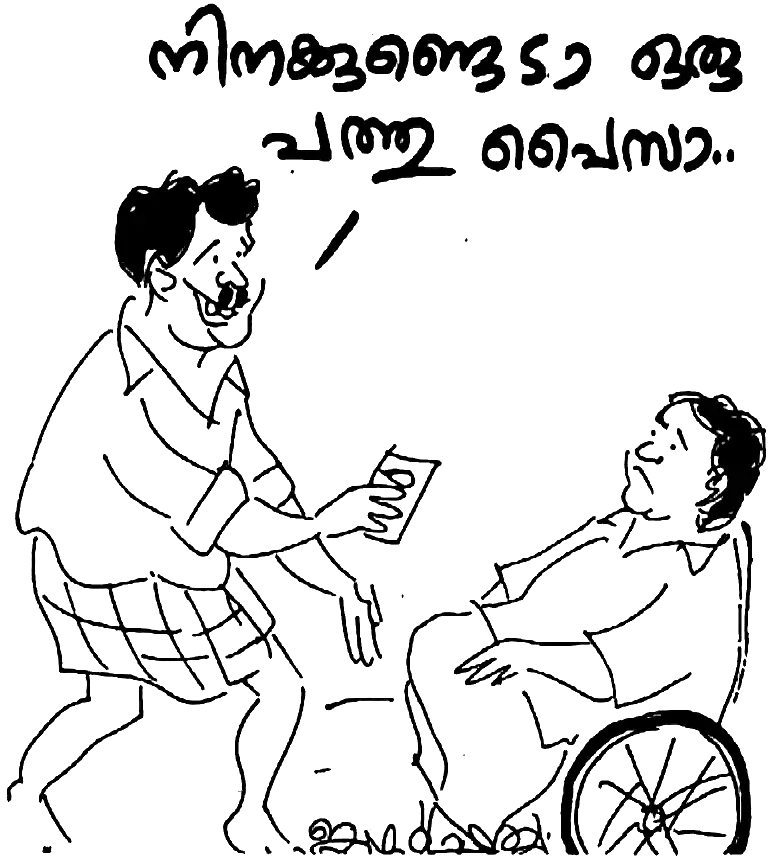മോഹനൻ ദൈവത്തിനു നന്ദി പറഞ്ഞു. എന്നിട്ടു് പ്രഭാകരൻ നായരോടു് ചോദിച്ചു: “ആരാണു് ചേട്ടാ ഈ രൂപ തന്നത് ?”
“ഇതു് വള്ളിത്തോടെന്ന സ്ഥലത്തു വച്ച് ഒരാൾ തന്നതാണു്.”
പതിനെട്ടു് കിലോമീറ്റർ ദുരെയുള്ള സ്ഥലത്തുള്ള ഒരാളിൽ കൂടി ദൈവം പ്രവൎത്തിച്ചു. ഒരാഴ്ചത്തെ ചെലവിന് അന്ന് എഴുപത്തഞ്ചു് രൂപ മതിയായിരുന്നു. എന്നാലിതാ, ഒന്നരയാഴ്ച കഴിയാനുള്ള പണം ദൈവം നൽകി. പേരറിയാത്ത ഒരാളിൽ കൂടി!
മോഹനൻ നായർ പറയുന്നു: “നീതിമാൻ തുണയില്ലാതെ ഇരിക്കുന്നതും അവന്റെ സന്തതി ആഹാരം ഇരക്കുന്നതും ഞാൻ കണ്ടിട്ടില്ല – ഈ വചനം ഞങ്ങളുടെ ജിവിതത്തിൽ അന്വൎത്ഥമാണു്. കഴിഞ്ഞ 35 വൎഷമായി ഇന്നുവരെ കൎത്താവു് ഞങ്ങളെ പട്ടിണി കിടത്തിയിട്ടില്ല.”
കൎത്താവ് ആവശ്യങ്ങൾ നടത്തിത്തരുന്നവനാണു്. “അന്നന്നുള്ള ആഹാരം ഞങ്ങൾക്കു് തരണമേ” എന്ന പ്രാൎത്ഥനയിൽ അന്നന്നുള്ള ആഹാരം തരുന്നവനാണു കൎത്താവെന്ന ധ്വനിയുണ്ട്. യിസ്രായേൽ ജനത്തിനു നാല്പതു വൎഷം ദിനം തോറും ആഹാരം കൊടുത്ത കൎത്താവ് ദരിദ്രരിൽ ദരിദ്രനായ മോഹനനെ മറന്നില്ല, മറക്കുകയുമില്ല.
26
മോഹനനും തങ്കമണിക്കും ജനിച്ച മകൻ ജന്മനാ വളൎച്ച കുറഞ്ഞ കുഞ്ഞായിരുന്നു. അതിനാൽ പലപ്പോഴും രോഗബാധിതൻ ആയിരുന്നു. അവർ പാലത്തിൻകടവിൽ താമസിക്കുന്ന കാലം. ജയപ്രകാശിന് സദാ മൂക്കിൽ കൂടെ പഴുപ്പു് വരുന്ന രോഗം ഉണ്ടായിരുന്നു. അഞ്ചു് ഡോക്ടർമാർ മാറി മാറി ചികിത്സിച്ചിട്ടും അതു് ഭേദമായില്ല.
മോഹനന്റെ അളിയന്മാർ മോഹനനെ കുറ്റപ്പെടുത്തി കൊണ്ടിരുന്നു. “കൊച്ചിന്റെ തലയിൽ ബൈബിൾ അടിച്ചു കയറ്റിയതു കൊണ്ടാണ് ഈ രോഗം വന്നതു് ” എന്നായിരുന്നു അവരുടെ വാദം. തിരുവെഴുത്തിൽ നിന്നുള്ള കാര്യങ്ങൾ നാലു വയസ്സുള്ള മകനു മോഹനൻ പറഞ്ഞു കൊടുക്കുമായിരുന്നു. അളിയന്മാരെ പ്രകോപിപ്പിച്ചത് ഇതാണ്. മോഹനൻ ആകെ വിഷമിച്ചു. മോഹനനും മകനും ഒന്നിച്ചു് പ്രാൎത്ഥനയും വേദവായനയും മറ്റും നടത്തിയിരുന്നു. ഭാൎയ്യ സഹകരിക്കില്ലായിരുന്നു.
അങ്ങനെ പ്രാൎത്ഥിക്കുന്ന അവസരത്തിൽ കൎത്താവു് ചന്ദ്രരോഗിയെ സൗഖ്യമാക്കിയ വിവരം സുവിശേഷത്തിൽ നിന്നു് മോഹനൻ മകനെ വായിച്ചു കേൾപ്പിച്ചു. എന്നിട്ടു മകനോടു് ചോദിച്ചു: “മോനേ, യേശു കൎത്താവു് മോനെ സൗഖ്യമാക്കും എന്നു് വിശ്വാസമുണ്ടോ?” മകൻ തലയാട്ടി—വിശ്വാസമുണ്ട്. മോഹനൻ മകന്റെ തലയിൽ കൈവച്ചു കൊണ്ട്, നിലവിളിയോടെ പ്രാൎത്ഥിച്ചു. അത്ഭുതം എന്നു് പറയട്ടെ, പിറ്റേന്നു മുതൽ മൂക്കിലൂടെ പഴുപ്പു് വരുന്നതു് നിന്നു. പിന്നെ ഒരിക്കലും ആ രോഗം മകനുണ്ടായിട്ടില്ല!
മറ്റൊരിക്കൽ മകനു വേറൊരു അസുഖം വന്നു. പല ഡോക്ടർമാർ മാറി മാറി ചികിത്സിച്ചിട്ടും രോഗം ഭേദമായില്ല. തങ്കമണി മകനെയും കൊണ്ടു് ആഴ്ചകളോളം ആശുപത്രിയിൽ കഴിയേണ്ടി വന്നു. ഓപ്പറേഷനു വിധേയമായ കുഞ്ഞു് വീട്ടിൽ വന്നതിനു ശേഷം മലമൂത്ര വിസർജ്ജനം ഇല്ലാതായി. 48 മണിക്കൂർ കഴിഞ്ഞപ്പോൾ കുഞ്ഞു് ആഹാരം കഴിക്കാത്ത നിലയുമായി. ബന്ധു മിത്രാദികൾ എല്ലാം കുഞ്ഞിന് ആപത്തു് വരും എന്നു് അഭിപ്രായപ്പെട്ടു. മോഹനനും അവരുടെ വാക്ക് ഏറ്റുപറഞ്ഞു. കുഞ്ഞിന്റെ ദയനീയ സ്ഥിതി കണ്ടു നിൽക്കാനുള്ള കരുത്തു മോഹനനു് ഉണ്ടായിരുന്നില്ല.
വീൽച്ചെയറിൽ മുറ്റത്തിറങ്ങിയ മോഹനൻ ദൈവത്തോടു് നിലവിളിച്ചു. ഒരു പിതാവായിരുന്നിട്ടും ഒരു കുടുംബത്തിന്റെ യാതൊരു കാര്യവും ചെയ്യാൻ കഴിയാതെ നിസ്സഹായനായ ഒരു വ്യക്തിയായി തീൎന്നല്ലോ എന്നു് ചിന്തിച്ചു. ഇത്രയും ഭാരം ദൈവം എന്തു കൊണ്ട് അനുവദിക്കുന്നു എന്നു് മോഹനനു മനസ്സിലായില്ല. മകന്റെ ആഴ്ചകളായുള്ള ആശുപത്രി ചികിത്സയ്ക്കു് ശേഷം “മടങ്ങി പോയി കൂട്ടിക്ക് ആഹാരം നൽകുക” എന്നു് പറഞ്ഞാണു് ഡോക്ടർമാർ ഡിസ്ചാർജ് ചെയ്തത്. എന്നിട്ട് ഇപ്പോൾ ഇതാ കുഞ്ഞു് ആഹാരം കഴിക്കുന്നില്ല. വിസൎജ്ജിക്കുന്നുമില്ല. ഒന്നും ചെയ്യാൻ കഴിയാത്ത ആ പിതാവ് സങ്കടം സഹിക്ക വയ്യാതെ ഹൃദയം തകൎന്നതു് പോലെയായി. കുട്ടിയുടെ ദുരവസ്ഥയിൽ മനം നൊന്ത് ഭാൎയ്യയും ഭാൎയ്യാമാതാവും രണ്ടു് ദിവസമായി ഭക്ഷണം പോലും കഴിക്കുന്നില്ല.
ആ കാളരാത്രിയിൽ വീൽച്ചെയറിൽ മുറ്റത്തിറങ്ങിയ മോഹനൻ ദൈവത്തോടു് നിലവിളിച്ചു; “കൎത്താവേ, എന്നെ എടുത്തു കൊള്ളുക. എനിക്കിനി ജീവിക്കേണ്ട.” തുടൎന്നു വേദപുസ്തകമെടുത്ത മോഹനന്റെ കണ്ണ് മുപ്പത്തിയഞ്ചാം സങ്കീൎത്തനത്തിൽ ഉടക്കി. ദൈവം മോഹനനോടു് പറഞ്ഞു: “നീ, ഇതു് വരെ കുഞ്ഞിനെ എന്റെ കയ്യിൽ ഏല്പിച്ചില്ല. നിന്റെ ബന്ധുക്കളുടെ വാക്കുകൾ നീ ശ്രദ്ധിച്ചു കൊണ്ടിരുന്നു. അതുകൊണ്ട് എന്തു പറ്റി? ഈ 48 മണിക്കൂറുകൾ ദുഃഖിച്ചു.”
മോഹനനു തന്റെ തെറ്റു മനസ്സിലായി. മോഹനൻ ദൈവത്തോടു് പറഞ്ഞു: “പിതാവേ, ഇപ്പോൾ എന്റെ തെറ്റു മനസ്സിലായി. നീ തന്നതാണ് ഈ കുഞ്ഞിനെ. ഞാൻ ഈ കുഞ്ഞിനെ നിന്റെ കയ്യിലേക്കു് മടക്കി തരുന്നു.” ഇത്രയും പറഞ്ഞിട്ടു് മോഹനൻ പോയി കിടന്നു. കിടന്ന ഉടനെ മോഹനൻ ഉറങ്ങാൻ തുടങ്ങി. അതു് വരെ ഉറക്കമില്ലാതിരുന്ന മോഹനനു ദൈവം ഉറക്കം നൽകി.
പെട്ടെന്നാണതു സംഭവിച്ചത്. മോഹനന്റെ കുഞ്ഞു് ഛർദ്ദിക്കാൻ തുടങ്ങി. ഒപ്പം മലമൂത്ര വിസൎജ്ജനവും നടന്നു. മൂന്നും കൂടി ഒരുമിച്ച്. “ബാധ ഒഴിഞ്ഞു സ്വസ്ഥമായി” എന്നു് തിരുവെഴുത്തിൽ വായിക്കുന്നതു് പോലെ ആയിരുന്നു ആ അത്ഭുതം.
ആഴ്ചകളോളം ഭാൎയ്യ മകനെയും കൊണ്ട് ആശുപത്രിയിൽ ആയിരുന്നപ്പോൾ മോഹനൻ ആ മലമൂട്ടിൽ ഒറ്റയ്ക്കായിരുന്നു താമസം. ഒരു ബക്കറ്റ് വെള്ളത്തിനു വേണ്ടി പോലും ദൈവത്തോടു് പ്രാൎത്ഥിക്കേണ്ടി വന്നു. രാവിലെ പല്ലു തേയ്ക്കാൻ വെള്ളം ഇല്ല. കിടന്ന കിടപ്പിൽ തന്നെ തുണി കഴുകണം. മറ്റാരും സഹായത്തിനില്ല. ഹൃദയ വേദനയോടെ മോഹനൻ ഇങ്ങനെ പ്രാൎത്ഥിച്ചു: “പരിശുദ്ധ പിതാവേ, എനിക്ക് ഒരു ബക്കറ്റ് വെള്ളം വേണം.” അഞ്ചു മിനിറ്റിനുള്ളിൽ ഒരു ചേട്ടത്തി കയറി വന്നു. മോഹനൻ താഴ്മയോടെ ചോദിച്ചു: “ഒരു ബക്കറ്റ് വെള്ളം തരുമോ?” ചേട്ടത്തി മൂന്നു ബക്കറ്റ് വെള്ളം കൊണ്ടു വന്നു കൊടുത്തു!
മോഹനന്റെ പാലത്തിൻകടവിലെ ജീവിതം അഗ്നി പരിശോധന തന്നെയായിരുന്നു. യാതൊരു സൗകര്യവും ഇല്ലാത്ത സ്ഥലം. വിളിച്ചാൽ വിളി കേൾക്കുന്ന ദൂരത്തിൽ തന്നെ വെറുക്കുന്ന ഭാൎയ്യവീട്ടുകാർ അല്ലാതെ മറ്റൊരാളില്ല. ചുറ്റുപാടും താമസിക്കുന്നവർ എല്ലാം പത്തും പതിനഞ്ചും ഏക്കർ സ്ഥലത്തിനു ഉടമകൾ ആയതിനാൽ അടുത്തെങ്ങും വീടില്ല. ഇങ്ങനെ ഉള്ള ഒരു സ്ഥലത്ത് അതും അരയ്ക്കു് താഴെ തളൎന്ന ഒരു മനുഷ്യൻ ഒരു കൊച്ചു വീട്ടിൽ യാതൊരു സൗകര്യങ്ങളും ഇല്ലാത്ത – കക്കൂസു പോലുമില്ലാത്ത – അവസ്ഥയിൽ ജീവിക്കുക എന്നത് ദുഷ്കരം തന്നെ. എങ്കിലും കരുണാമയനായ ദൈവം മോഹനനെ അവിടെ വച്ചും ആത്മീയ സത്യങ്ങൾ പഠിപ്പിച്ചു കൊണ്ടിരുന്നു. മാത്രമല്ല ഒരു ശിഷ്യനായി മോഹനനെ രൂപാന്തരപ്പെടുത്തി എടുക്കാനും ദൈവം അതു് ഉപയോഗിച്ചു.
27
മോഹനൻ നായരുടെ ജീവിതത്തിൽ ദൈവം ചെയ്ത കാൎയ്യങ്ങൾ നിരവധിയാണു്. പാലത്തിൻകടവിൽ താമസിക്കുന്ന സമയമാണു്. തങ്കമണിക്കു് ഒരാഴ്ചയായി ജോലിയില്ല. വീട്ടുസാധനങ്ങളെല്ലാം തീൎന്നുവരുന്നു. മൂന്നു പേർ മോഹനനു പണം കൊടുക്കാനുണ്ടു്. 225 രൂപ. അന്നൊരു ദിവസം രാവിലെ പ്രാൎത്ഥിച്ചപ്പോൾ മോഹനൻ ദൈവത്തോടു നീരസപ്പെട്ടു. പിതാവിന്റെ ഇംഗിതമെന്തെന്നു് അറിയാതെ മോഹനൻ അങ്ങനെ ചെയ്തു പോയതാണു്.
“വായ്പ വാങ്ങാൻ ഇച്ഛിക്കുന്നവനെ ഒഴിഞ്ഞു കളയരുതു് ” എന്നാണു തിരുവെഴുത്തു പറയുന്നതു്. അതനുസരിച്ചാണു് മോഹനൻ വായ്പ കൊടുത്തതു്. ആത്മീയ ശൈശവത്തിൽ നമുക്കു് ദൈവത്തോടു് ശുണ്ഠിയുണ്ടായാൽ അതു് ദൈവത്തോടു തുറന്നു പറയുന്നതാണു് നല്ലതു്. “ദൈവമേ, നീ പറഞ്ഞിട്ടാണു് ഞാൻ വായ്പ കൊടുത്തതു്. ജാമ്യക്കാരൻ നീയാണു്. നീ പണം തരണം.”
മോഹനൻ പറയുന്നു; “എന്റെ അറിവില്ലായ്മയാണു് എന്നെക്കൊണ്ടു് അതു പറയിച്ചതു്.” ഉച്ചയ്ക്കു് ഒരു മണിയോടെ പോസ്റ്റുമാൻ വന്നു. എട്ടു കിലോമീറ്റർ നടന്നാണു് അദ്ദേഹം വന്നതു്. മൂന്നു മണിയോർഡറുകൾ പോസ്റ്റുമാന്റെ കൈവശം ഉണ്ടായിരുന്നു. നൂറു രൂപ വീതമുള്ള രണ്ടു മണിയോർഡറുകളും ഒരെണ്ണത്തിൽ അമ്പതു രൂപയും! മണിയോർഡർ ഒപ്പിട്ടു വാങ്ങിയിട്ടു് മോഹനൻ ദൈവത്തിനു സ്തോത്രം പറഞ്ഞു.
പെട്ടെന്നു് ദൈവം അതു് ശ്രദ്ധിക്കാതെ മോഹനനോടു് പറഞ്ഞു: “നീ എന്താണു് രാവിലെ എന്നോടു് പറഞ്ഞതു് ? നിന്റെ ജാമ്യക്കാരൻ ഞാനാണെന്നല്ലേ? അതേ, നിന്റെ ജാമ്യക്കാരൻ ഞാൻ തന്നെയാണു്. നിനക്കു് എന്റെ വചനം വിശ്വസിക്കാം. ഞാൻ ഉവ്വു എന്നു് പറഞ്ഞാൽ അതു് അങ്ങനെ തന്നെ ആയിരിക്കും. മാറ്റമില്ല.”
മോഹനന്റെ സ്തോത്രം ശ്രദ്ധിക്കാതെ ദൈവം ഇത്രയും പറഞ്ഞപ്പോഴേക്കും മോഹനൻ കരയാൻ തുടങ്ങി; “കൎത്താവേ, അങ്ങു തന്നതല്ലാതെ എന്താണു് എനിക്കുള്ളതു് ? അങ്ങു തരാത്തതൊന്നും എനിക്കില്ല. എനിക്കു് ജോലി ചെയ്യാൻ കഴിവില്ല, എവിടെയും പോകാനും നിവൃത്തിയില്ല. 225 രൂപ വായ്പ കൊടുക്കാൻ എന്റെ കയ്യിൽ മിച്ചം തന്നതു് അങ്ങാണു്. ഞാനതു മറന്നുപോയി. എന്നോടു ക്ഷമിക്കേണമേ.”
മോഹനന്റെ അറിവില്ലായ്മ ദൈവം ക്ഷമിച്ചു. ദൈവം മോഹനനോടു് പറഞ്ഞു: “നീ എത്രയാണു് വായ്പ കൊടുത്തത്; 225 രൂപ അല്ലേ? ഇതാ, പലിശ സഹിതം 250 രൂപ തിരിച്ചു തരുന്നു. ഇനി അവരോടു് പണം മടക്കി ചോദിക്കേണ്ടതില്ല.” കുറച്ചു ദിവസങ്ങൾക്കുള്ളിൽ, വായ്പ വാങ്ങിയ രണ്ടു് പേർ നൂറു രൂപ വീതം മടക്കി നൽകി!
പ്രിയ മിത്രമേ, പച്ചയായ ജീവിത അനുഭവങ്ങളാണു് മോഹനന്റെ ജീവിതത്തിൽ കൂടെ ദൈവം വരച്ചു കാണിച്ചു തരുന്നതു്. ആധുനിക ലോകം മുഖംമൂടി അണിഞ്ഞ ജീവിതമല്ലേ കാഴ്ച വയ്ക്കുന്നതു് ? നമ്മുടെ ഹൃദയവ്യഥ എന്തു തന്നെ ആവട്ടെ അതു് ദൈവമുമ്പാകെ തുറന്നു പറയാൻ മടിക്കരുതു്. ദൈവത്തിനു കാപട്യമില്ല. നമ്മുടെ യഥാൎത്ഥമായ മുഖമാണു് അവിടുത്തേക്കു ആവശ്യം. ഏതോ പാട്ടുകാരൻ ഇങ്ങനെ പാടിയതായി കേട്ടിട്ടുണ്ടു് : “ഒരു മുഖം മാത്രമുള്ള മനുഷ്യനെ തേടി ഒരു കോടി യുഗങ്ങളായി ഞാനലഞ്ഞു.”
ഇതു് ഒരു യാഥാൎത്ഥ്യമല്ലേ? ക്രിസ്ത്യാനികൾ എന്നു് അഭിമാനിക്കുന്ന നമുക്കു് ഒരു മുഖമാണോ ഉള്ളതു് ? അതോ പല മുഖങ്ങളുണ്ടോ? ഇസ്രായേൽ ജനതയെ അടിമത്തത്തിൽ നിന്നു് പുറപ്പെടുവിച്ച പ്രവാചകനായ മോശെ ഒരിക്കൽ ദൈവത്തോടു ചോദിച്ചു; “ഈ ജനത്തിന്റെ ഭാരം മുഴുവനും നീ എന്റെ മേൽ വയ്ക്കുവാൻ തക്കവണ്ണം ഞാൻ ഈ ജനത്തെ ഗർഭം ധരിച്ചുവോ?” ദൈവം മോശെയെ കൊന്നു കളഞ്ഞില്ല; മാത്രമല്ല, ദൈവം മോശെയുടെ ഹൃദയ വിചാരം അറിഞ്ഞു മറുപടി കൊടുത്തു: “നാളെ ഞാൻ ഈ ജനത്തിനു് ഭക്ഷണം കൊടുക്കും എന്നു് പറയുക.”
നൂറ്റിമൂന്നാം സങ്കീൎത്തനം പറയുന്നതു് ശ്രദ്ധിക്കുക:
“നാം പൊടി എന്നു് അവൻ ഓൎക്കുന്നു. നമ്മുടെ അകൃത്യത്തിനു ഒത്തവണ്ണം പകരം ചെയ്യാതെ നമ്മുടെ ലംഘനങ്ങളെ നമ്മോടു് ക്ഷമിച്ചു് അപ്പനു മക്കളോടു് കരുണ തോന്നുന്നതു് പോലെ യഹോവയ്ക്കു് തന്റെ ഭക്തന്മാരോടു് കരുണ തോന്നുന്നു.”
ആകയാൽ നമുക്കു് ദൈവത്തോടും മനുഷ്യരോടും അകവും പുറവും ഒരുപോലെയുള്ള പച്ച മനുഷ്യരായി അടുത്തു ചെല്ലാം. ദൈവം അതിനു നമ്മെ സഹായിക്കട്ടെ. ദൈവം കപട ഭക്തി വെറുക്കുന്നു. ചെത്തിയ കല്ലുകൊണ്ടു് ദൈവത്തിനു യാഗപീഠം പണിയരുതു്. ദൈവത്തിനു് അതു് വെറുപ്പാണെന്നു് കാണുവാൻ നമ്മുടെ ഹൃദയദൃഷ്ടി പ്രകാശിക്കുമാറാകട്ടെ എന്നു് പ്രാൎത്ഥിക്കാം.
28
പാലത്തിൻകടവിലെ മൂന്നു വൎഷത്തെ സംഭവ ബഹുലമായ താമസത്തിനിടയിൽ പ്രാൎത്ഥനയും ദൈവവചന ധ്യാനവുമായി ദൈവവുമായി ഒരു കൂട്ടായ്മയിൽ ആയിരിക്കാൻ മോഹനനു സാധിച്ചിരുന്നു. എങ്കിലും ഒരു സഭാ ബന്ധം ഇല്ലാത്ത വിഷമം അദ്ദേഹത്തെ വേദനിപ്പിച്ചിരുന്നു.
ഭാൎയ്യ രക്ഷിക്കുപ്പെട്ടിരുന്നില്ല. നിർബ്ബന്ധിച്ചാണു് പലപ്പോഴും ഭാൎയ്യ പ്രാൎത്ഥനയിൽ സഹകരിച്ചിരുന്നതു്. പാതി ഉറക്കത്തോടെ ആയിരിക്കും മിക്കപ്പോഴും തങ്കമണി പ്രാൎത്ഥനയ്ക്കു് ഇരിക്കുക. മകൻ ആറു വയസ്സു മാത്രം. മകനാണു് അച്ഛന്റെ പ്രാൎത്ഥനാ കൂട്ടാളി.
വല്ലപ്പോഴും തന്റെ അടുക്കൽ വരുന്ന ചില പെന്തെക്കോസ്തു സഹോദരന്മാർ ഉണ്ടായിരുന്നു. അവരുടെ സന്ദൎശനം മോഹനനു സന്തോഷമായിരുന്നെങ്കിലും ചില ദിവസങ്ങൾ പ്രാൎത്ഥിക്കാനായി അവർ രാത്രി ഭവനത്തിൽ താമസിക്കും. അതു പലപ്പോഴും ഗുണത്തെക്കാൾ ഏറെ ദോഷം വരുത്തി വയ്ക്കുമായിരുന്നു. കാരണം അവർ പരിസര ബോധം ഇല്ലാതെ ഒച്ചപ്പാടും ബഹളവും ഉണ്ടാക്കിയിരുന്നു. തൻമൂലം അയൽക്കാരും വീട്ടുകാരും “കിടന്നുറങ്ങാൻ സമ്മതിക്കില്ലല്ലോ” എന്നു് കുറ്റപ്പെടുത്തിയിരുന്നു.
മോഹനൻ രക്ഷിക്കപ്പെട്ടതിനു ശേഷം രണ്ടര വൎഷത്തിനു ശേഷമാണു് പരിശുദ്ധാത്മനിറവു പ്രാപിച്ചതു്. അതു് എത്രയും വിലപ്പെട്ട അനുഭവമായിരുന്നു. എങ്കിലും തന്റെ അടുക്കൽ വന്ന സഹോദരന്മാർ അന്യഭാഷ എന്നു് പറഞ്ഞു കാട്ടി കൂട്ടിയ ബഹളവും കയ്യടിയും പ്രവചനവും മോഹനൻ ഒരു കാരണവശാലും ഉൾക്കൊള്ളാൻ കഴിഞ്ഞിരുന്നില്ല. ആയതിനാൽ ഇങ്ങനെ ഉള്ളവരുമായുള്ള കൂട്ടായ്മ തനിക്കു യാതൊരു ആത്മീയ വൎദ്ധനയും ഉണ്ടാക്കിയില്ല എന്നു് മാത്രമല്ല ആത്മീയ ക്ഷീണം മാത്രമേ വരുത്തിയുള്ളൂ. ആകയാൽ യഥാൎത്ഥമായ ഒരു സഭാ കൂടിവരവുള്ള സ്ഥലത്തു് തന്നെയും കുടുംബത്തെയും എത്തിക്കണമേ എന്നു് മോഹനൻ പലപ്പോഴും പ്രാൎത്ഥിക്കുമായിരുന്നു.
പാലത്തിൻകടവിൽ താമസം മാറിയതിനു ശേഷം യാത്രാ സൗകര്യം വളരെ കുറവായിരുന്നു. അതിനാൽ പേരട്ടയിൽ വച്ചു പരിചയപ്പെട്ട വിജയമോഹനൻ ബ്രദറിനെ വൎഷങ്ങൾ കൂടുമ്പോഴായിരിക്കും ഒന്നു കണ്ടുമുട്ടാൻ കഴിയുന്നതു്. ഒരു പത്രമോ റേഡിയോ പോലും ഇല്ലാതെയാണു് മോഹനൻ പാലത്തിൻകടവിൽ താമസിച്ചിരുന്നതു്.
ഏറെ നാൾ താൻ ഒരു റേഡിയോയ്ക്കു് വേണ്ടി പ്രാൎത്ഥിച്ചിരുന്നു. രണ്ടര വൎഷത്തിനു ശേഷം കണ്ണൂരിൽ ഉള്ള ബ്രദറണ് സഭാംഗങ്ങളായ ചില സഹോദരങ്ങൾ മോഹനനു ഒരു റേഡിയോ വാങ്ങി നൽകി. ആ റേഡിയോ ആയിരുന്നു സുവിശേഷം കേൾക്കാനുള്ള ഏക മാധ്യമം. ദൈവം തനിക്കു് നൽകിയ റേഡിയോ മോഹനൻ ഒരിക്കലും ചലച്ചിത്ര ഗാനങ്ങളോ നാടകമോ കേൾക്കാൻ ഉപയോഗിച്ചിരുന്നില്ല. മറിച്ചു് സുവിശേഷവും വാൎത്തയും മറ്റു നല്ല കാൎയ്യങ്ങളും കേൾക്കാൻ മാത്രമേ ഉപയോഗിച്ചിരുന്നുള്ളൂ.
രക്ഷിക്കപ്പെട്ട നാൾ മുതൽ ദൈവഹിതം അല്ലാത്തതു തന്റെ ആത്മാവിൽ താൻ അനുഭവിച്ചറിഞ്ഞിരുന്നു. സ്വാതന്ത്ര്യത്തോടെ പ്രാൎത്ഥിക്കുവാൻ ഒരു ഇടം തരണമേ എന്നു് ദീൎഘ നാളുകളായി അദ്ദേഹം പ്രാൎത്ഥിച്ചു. മനസ്സോടെ അല്ലെങ്കിലും തങ്കമണിയും മോഹനന്റെ പ്രാൎത്ഥനയിൽ പങ്കെടുത്തിരുന്നു. എങ്ങനെ എങ്കിലും ഭാൎയ്യയും ദൈവവചനം അറിയണം എന്ന താലപര്യത്താൽ മോഹനൻ ഭാൎയ്യയെകൊണ്ടു് പുതിയ നിയമം വായിപ്പിച്ചിരുന്നു. വായിക്കുന്നതിനിടയിൽ ഭാൎയ്യയുടെ വീട്ടുകാർ ചിലപ്പോൾ വീട്ടിലേക്കു് കയറി വരുമായിരുന്നു. തങ്കമണി പെട്ടെന്നു് ബൈബിൾ കിടക്കയുടെ അടിയിലേക്കു തിരുകുമായിരുന്നു. കാരണം അവൎക്കു ആങ്ങളമാരെയും മാതാപിതാക്കളെയും ഭയമായിരുന്നു. ഉള്ളിൽ വിശ്വാസം ഉണ്ടെങ്കിലും, തങ്കമണി അതു് ഭയം കൊണ്ടു് ഒരിക്കലും വെളിപ്പെടുത്തിയിരുന്നില്ല.
പാലത്തിൻകടവിലെ മൂന്നു വൎഷത്തെ താമസത്തിനിടയിൽ അവരുടെ കുടുംബ ജീവിതം വിജയകരമായിരുന്നില്ല. കാരണം, വിശ്വാസിയും അവിശ്വാസിയും തമ്മിലുള്ള ജീവിതം അനേകം അഭിപ്രായ വ്യത്യാസങ്ങൾ ഉണ്ടാക്കി. മോഹനൻ ദൈവത്തെ അറിയുകയും തങ്കമണി അവിശ്വാസത്തിൽ തുടരുകയും ചെയ്തപ്പോൾ രണ്ടു് പേരുടെയും കാഴ്ചപ്പാടുകൾ വളരെ വ്യത്യസ്തമായിരുന്നല്ലോ. അതുകൊണ്ടു് ഭവനത്തിൽ അസ്വസ്ഥത ഉണ്ടായിട്ടു് മോഹനൻ ഹൃദയ വ്യഥയോടെ ദൈവത്തോടു നിലവിളിച്ചു. തന്റെ ഭാൎയ്യയുടെ മാനസാന്തരത്തിനായി പലരുടെയും പ്രാൎത്ഥന അപേക്ഷിച്ചു.
വിവാഹം കഴിഞ്ഞു് എട്ടു് മാസത്തിനുള്ളിൽ ഒരു വിധവയെ പോലെ ആയിത്തീൎന്ന ഒരു സ്ത്രീയുടെ ദുഃഖം എത്ര വലുതായിരുന്നു എന്നു് ഊഹിക്കാവുന്നതേ ഉള്ളൂ. ഒരു വീടിന്റെ മുഴുവൻ ഭാരവും സ്വന്ത തലയിൽ വഹിക്കേണ്ടി വന്ന ആ ഭാൎയ്യ ഒരു സാധു സ്ത്രീ ആയിരുന്നു എങ്കിലും അവരുടെ ജീവിതം നിരാശയുടെ അടിത്തട്ടിൽ ആയിരുന്നു. ആയതിനാൽ നിസ്സാര പ്രശ്നങ്ങളിൽ കോപിച്ചിരുന്നു. തന്മൂലമുള്ള അസ്വസ്ഥത മോഹനനെ പലപ്പോഴും ദുഃഖിതനാക്കി. എങ്കിലും ഭാൎയ്യയെ സത്യം മനസ്സിലാക്കിക്കാൻ മോഹനൻ മുൻകൈ എടുക്കുകയും ക്ഷമ പറയുകയും അങ്ങനെ ഭാൎയ്യയുടെ മനസ്സു തണുപ്പിക്കുകയും ചെയ്തു വന്നു.
ഒരിക്കൽ തന്റെ അനുവാദം കൂടാതെ മകനെയും കൂട്ടി സിനിമയ്ക്കു് പോയ തങ്കമണി വരുന്നതു് വരെ മോഹനൻ കണ്ണുനീരോടെ അവൎക്കു് വേണ്ടി പ്രാൎത്ഥിച്ചു. മോഹനൻ പറയുന്നതു് തന്നെ കൂടാതെ ആദ്യവും അവസാനവുമായി ഭാൎയ്യ സിനിമയ്ക്കു് പോയ സംഭവം അതു് മാത്രമാണു് എന്നാണു്. ഇന്നു് 32 വൎഷമായി തങ്കമണി പിന്നെ ഒരു സിനിമ കണ്ടിട്ടില്ല. ഭാൎയ്യവീട്ടുകാരുടെ സ്വാധീനത്തിൽ നിന്നു് സ്വതന്ത്രരായാൽ തങ്കമണി രക്ഷ പ്രാപിക്കും എന്നു് മോഹനനു ഉറപ്പുണ്ടായിരുന്നു.
അപ്രതീക്ഷിതമായി ഒരു സന്ധ്യാ സമയത്തു് ഒരു സഹോദരൻ നടന്നു തളൎന്നു കയറി വന്നു. കോട്ടയത്തുള്ള എ. കെ. സ്കറിയാ എന്ന ഒരു എക്സിക്യൂട്ടിവു് എൻജിനീയറായിരുന്നു അതു്. മോഹനനെ കുറിച്ചു് കണ്ണൂരുള്ള ആരോ പറഞ്ഞറിഞ്ഞപ്പോൾ ഒന്നു നേരിൽ കാണാം എന്ന ആശയോടെ 12 കിലോമീറ്റർ നടന്നു തളൎന്നാണു് അദ്ദേഹം വീട്ടിലെത്തിയതു്. അദ്ദേഹം ഉത്തമനായ ഒരു ക്രിസ്തു ശിഷ്യൻ ആയിരുന്നു. രാത്രി ഏറെ വൈകുവോളം മോഹനന്റെ അനുഭവങ്ങൾ കേട്ടിരുന്ന അദ്ദേഹം കുറെ സാക്ഷ്യങ്ങൾ ഓഡിയോ കാസറ്റിലാക്കി കോട്ടയത്തേക്കു് കൊണ്ടു് പോയി. തന്റെ ചില സ്നേഹിതരെ അതു് കേൾപ്പിച്ചു.
മോഹനൻ തന്റെ യാതൊരു ആവശ്യവും അദ്ദേഹത്തോടു് പറഞ്ഞിരുന്നില്ല. എന്നാൽ, മോഹനന്റെ സാഹചര്യം എത്ര ദയനീയമാണു് എന്നു് നേരിൽ കണ്ടറിഞ്ഞ ആ ആത്മീയ സഹോദരൻ തന്റെ സഭയിലെ ചില സഹോദരങ്ങളുമായി ഈ വിഷയം പങ്കിട്ടപ്പോൾ ഒരു ദൈവീക പദ്ധതി യാഥാൎത്ഥ്യമാവുക ആയിരുന്നു. സ്വന്ത പിതാവിനോടു് അഞ്ചു സെൻറ്റ് ഭൂമിക്കു് വേണ്ടി നാലു് വൎഷം മുമ്പു് ആവശ്യപ്പെട്ടപ്പോൾ ഭള്ളു പറഞ്ഞു നിരസിച്ച നാൾ മുതൽ, തന്റെ ആവശ്യം സ്വൎഗ്ഗീയ പിതാവിനോടു് പറഞ്ഞു വന്നു. ഇതാ, അതു് നടപ്പാകാൻ പോകുന്നു!
29
പാലത്തിൻകടവെന്ന സ്ഥലത്തെ മൂന്നു വൎഷത്തെ താമസം അവിസ്മരണീയമാം വിധം പോരാട്ടങ്ങൾ നിറഞ്ഞതായിരുന്നു. മോഹനൻ അറിഞ്ഞനുഭവിച്ച സത്യം (സുവിശേഷം) ഭാൎയ്യയോടും മകനോടും പറയാൻ സ്വാതന്ത്ര്യം ഉണ്ടായിരുന്നില്ല. വീട്ടുകാരുടെ എതിൎപ്പായിരുന്നു കാരണം. മോഹനന്റെ ഹൃദയം വേദനിച്ചു.
ഒരിക്കൽ, ഭാൎയ്യയുടെ സഹോദരൻ മദ്യപിച്ചിട്ടു് വീട്ടിൽ ചെന്നു ബഹളമുണ്ടാക്കി. ഭാൎയ്യ തങ്കമണി ഓടി ചെന്നു. അച്ഛനും മകനും തമ്മിലുണ്ടായ ബഹളം ശമിപ്പിക്കാൻ തങ്കമണി ഇടയ്ക്കു് കയറി. അച്ഛൻ മകനെ അടിച്ച അടി കൊണ്ടതു തങ്കമണിക്കാണു്. തങ്കമണിയുടെ ചുണ്ടു് തക്കാളിപ്പഴം പോലെ വീൎത്തു.
മോഹനൻ ഇതു് കണ്ടിട്ടു് വിഷമമായി. മോഹനൻ തങ്കമണിയോട അല്പം പരുഷമായി സംസാരിച്ചു. ഇതു് കേട്ടുകൊണ്ടു് വന്ന ഭാൎയ്യാമാതാവു് മോഹനനോടും വളരെ അധികം ദേഷ്യപ്പെട്ടു. മാതമല്ല, നിന്ദ്യമായി സംസാരിക്കുകയും ചെയ്തു. മോഹനൻ അന്നു രാത്രിയിൽ ഉറക്കം വന്നില്ല.
ആറു് വൎഷമായി യേശു ക്രിസ്തുവിനെ അറിഞ്ഞിട്ടു്. ഇപ്പോഴും തനിക്കു സ്വാതന്ത്ര്യമില്ലല്ലോ എന്ന ചിന്താഭാരം മോഹനനുണ്ടായി. ഹൃദയം തുറന്നു പ്രാൎത്ഥിക്കാനോ വീട്ടിലുള്ളവരോടു് പോലും സുവിശേഷം പങ്കുവയ്ക്കാനോ വയ്യാത്ത ഒരവസ്ഥ!
സ്വതന്ത്രമായി പ്രാൎത്ഥിക്കാനുള്ള ഒരു താമസ സ്ഥലത്തിനു വേണ്ടി നാളുകളായി മോഹനൻ പ്രാൎത്ഥിച്ചു. നിരാലംബനായി കിടക്കയിൽ കഴിയുന്ന മോഹനനു വിഷമം സഹിക്കാനായില്ല. മറ്റുള്ളവരുടെ നിന്ദാവാക്കുകൾ സഹിച്ചു അടങ്ങി കിടക്കേണ്ട സ്ഥിതി! എന്നാൽ ഈ സാഹചര്യം മോഹനന്റെ സ്വയം (self) തകരുന്നതിനു വേണ്ടി ദൈവം അനുവദിച്ചതായിരുന്നു എന്നു് പിന്നീടു് മോഹനനു മനസ്സിലായി.
പാലത്തിൻകടവിലെ ഭാൎയ്യ വീട്ടിൽവച്ചു് ഏറ്റവും അധികം വേദനിപ്പിച്ചതു് അമ്മായിയമ്മയുടെ ശകാരമായിരുന്നു. അന്നു രാത്രിയിൽ മോഹനൻ ഇങ്ങനെ പ്രാൎത്ഥിച്ചു: “പ്രിയ പിതാവേ അടിയനു ഈ ഭൂമിയിൽ സ്വതന്ത്രമായി പ്രാൎത്ഥിക്കാൻ അഞ്ചു് സെൻറ്റ് സ്ഥലം തരണമേ.” കഴിഞ്ഞ അഞ്ചു് വൎഷമായി പ്രാൎത്ഥിക്കുന്നതാണിതു്. എങ്കിലും, ഇത്ര അധികം ആവശ്യ ബോധത്തോടെ ആദ്യമായാണു് പ്രാൎത്ഥിക്കുന്നതു്.
1992 ഏപ്രിൽ മാസത്തിലെ ഒരു രാത്രിയിൽ ആയിരുന്നു അതു്. ഒരു ആഴ്ചയ്ക്കുള്ളിൽ ആ പ്രാൎത്ഥനയ്ക്കു് ദൈവം മറുപടി നൽകി. നാളുകൾക്കു മുമ്പു് കോട്ടയത്തു നിന്നു് ഒരു സഹോദരൻ മോഹനനെ കാണാൻ വന്നിരുന്നു. എ.കെ.സ്കറിയാ എന്ന ആ സഹോദരൻ അയച്ച ഒരു കത്തു് ആ ആഴ്ചയിൽ മോഹനനു ലഭിച്ചു.
ആ കത്തിലെ വാചകങ്ങൾ ഇങ്ങനെ ആയിരുന്നു: “മോഹനൻ സഹോദരാ, താങ്കൾക്കു് ആ മലമുകളിൽ നിന്നു് താഴെ സൗകര്യപ്രദമായ ഒരു സ്ഥലത്തു താമസ്സിക്കാൻ ആഗ്രഹമുണ്ടോ? ഉണ്ടെങ്കിൽ, ഒരു അഞ്ചു് സെൻറ്റ് സ്ഥലവും ഒരു കൊച്ചു വീടും വാങ്ങി തരാൻ കൎത്താവു് ഞങ്ങളെ പ്രേരിപ്പിക്കുന്നു. കോട്ടയത്തേക്കു് വരാൻ താത്പര്യം ഉണ്ടെങ്കിൽ ഞങ്ങൾ സഹോദരനെ കൊണ്ടു് പോരാം. അല്ലെങ്കിൽ സൗകര്യമുള്ള സ്ഥലം അന്വേഷിക്കുക. എല്ലാറ്റിനായും പ്രാൎത്ഥിച്ചു് ദൈവ ഹിതം പോലെ ചെയ്യുക.”
ആറു് വൎഷത്തെ പ്രാൎത്ഥനയുടെ ഉത്തരമായിരുന്നു ആ കത്തു്. “ഈ കത്തിലെ ‘കോട്ടയത്തേക്കു് വരാൻ താത്പര്യമുണ്ടെങ്കിൽ ഞങ്ങൾ സഹോദരനെ കോട്ടയത്തേക്കു കൊണ്ടു് പൊയ്ക്കൊള്ളാം’ എന്ന വാക്കു് എന്റെ യുക്തിക്കു് നന്നായി ബോധിച്ചു.
“ഞാൻ കരുതി കഴിഞ്ഞ ആറു് വൎഷമായി ബന്ധുക്കളിൽ നിന്നും മറ്റുള്ളവരിൽ നിന്നും മാതാപിതാക്കളിൽ നിന്നും ഭാൎയ്യാ കുടുംബത്തിൽ നിന്നുമുള്ള കഷ്ടം ഒഴിഞ്ഞു പോകുമല്ലോ. മാത്രമല്ല, ആത്മീയ സഹോദരങ്ങൾ ധാരാളമുള്ള കോട്ടയത്തേക്കു പോയാൽ ഈ കൊടിയ ദാരിദ്ര്യത്തിൽ നിന്നു് വിടുതൽ കിട്ടും എന്ന തെറ്റായ ചിന്തയും എന്നിൽ ഉണ്ടായിരുന്നു. ഇതും മനസ്സിൽ കണക്കു് കൂട്ടി കോട്ടയത്തേക്കു പോകാൻ ആഗ്രഹിച്ചാണു് പ്രാൎത്ഥന. കാരണം അദ്ദേഹം കത്തിൽ എഴുതിയല്ലോ ‘ദൈവത്തോടു് ആലോചന ചോദിക്കുക ദൈവഹിതം പോലെ ചെയ്യുക.’ യുക്തിയിൽ ഇതു് എനിക്കു് ഇഷ്ടപ്പെട്ടില്ല.”
ഈ കത്തു് കയ്യിൽ പിടിച്ചു കൊണ്ടു് മോഹനൻ പ്രാൎത്ഥിച്ചു; “കൎത്താവേ, ഞാനെന്തു ചെയ്യണം എന്നറിയുന്നില്ല. അങ്ങ് എന്നെ അറിയിക്കണമേ.”
കോട്ടയത്തേക്കു് പോകാൻ മോഹനനു താലപര്യം തോന്നി. പക്ഷേ, ദൈവാത്മാവു മോഹനനോടു് സംസാരിച്ചു; “നീ നിന്റെ സുഖം അന്വേഷിച്ചു പോകരുതു്. എന്റെ ഹിതം ചെയ്യുക. ഒറ്റ ക്രിസ്ത്യാനി പോലും ഇല്ലാത്തിടത്തു ഞാൻ നിന്നെ എന്റെ സാക്ഷിയാക്കി തീൎക്കും.”
ഈ ദൈവശബ്ദത്തിനു മുമ്പിൽ മോഹനൻ പകച്ചു പോയി. ഇത്ര വ്യക്തമായി ദൈവം സംസാരിക്കും എന്നു് വീണ്ടും അനുഭവിച്ചറിഞ്ഞു. മോഹനൻ ഹൃദയംഗമമായി ദൈവത്തെ സ്തുതിച്ചു. അപ്പോൾ തന്നെ ദൈവത്തോടു് പ്രാൎത്ഥിച്ചു; “പിതാവേ, എന്നോടു് ഇനിയും സംസാരിക്കണമേ. അങ്ങ് എനിക്കൊരുക്കിയ സ്ഥലം കാണിച്ചു തരണമേ.”
പെട്ടെന്നു് മോഹനൻ ഒരു വാക്യം ഓൎമ്മ വന്നു: “രണ്ടോ മുന്നോ സാക്ഷികളുടെ വാമൊഴിയാൽ ഏതു കാൎയ്യവും ഉറപ്പാക്കാം.” മോഹനൻ മൂന്നു സാക്ഷ്യം (തെളിവുകൾ) ദൈവത്തോടു് ചോദിച്ചു. ഒരാഴ്ചയ്ക്കുള്ളിൽ ആവശ്യപ്പെട്ട മൂന്നു തെളിവുകളും ദൈവം നൽകി.
അന്നു രാത്രിയിൽ മോഹനൻ ഒരു ദൎശനമുണ്ടായി. വളരെ വൎഷങ്ങളായി ആത്മീയ സാഹോദര്യം പുലൎത്തുന്ന വിജയമോഹനൻ എന്നയാൾ മോഹനനെ വിളിക്കുന്ന കാഴ്ച! “ഇതാ, നശിച്ചു പോകുന്ന ഒരു ജനത. സഹോദരാ, വന്നു സഹായിക്കുക” എന്നു് പറയുന്നതും കേൾക്കാൻ കഴിഞ്ഞു. പിറ്റേ ദിവസം സഹോദരൻ വിജയമോഹനൻ മോഹനൻ നായരുടെ വീട്ടിലെത്തി. സ്ഥലം വാങ്ങാൻ ദൈവം വഴി തുറന്ന കാൎയ്യം മോഹനൻ വിജയമോഹനനോടു് പറഞ്ഞു. വിജയമോഹനൻ പറഞ്ഞു: “ഇവിടെ നിന്നു് 60 കിലോ മീറ്റർ ദൂരെ ഒരു സ്ഥലമുണ്ടു്. അവിടെ വളരെ പ്രവൎത്തനങ്ങളുണ്ടു്. കൎത്താവിനെ അറിയാതെ ഒരു ദേശം നശിച്ചു പോകുന്നു.”
ഇതു് കേട്ടപ്പോൾ ഒരു കാരും തനിക്കു് സ്പഷ്ടമായി. രണ്ടു് തെളിവുകളായി; ആത്മശബ്ദവും ദൎശനവും. ഇനി വചനത്തിന്റെ ഉറപ്പുകൂടി മതി.
ഒരാഴ്ചയ്ക്കുള്ളിൽ വിജയ മോഹനൻ വന്നു. കണ്ണൂരിലുള്ള ഡെന്നിസ് സ്ഫടികം പാസ്റ്ററുടെ കാറുമായാണു് വന്നതു്. കൂത്തുപറമ്പിനു അടുത്തുള്ള സ്ഥലം നോക്കാൻ മോഹനനെയും കാറിൽ കൊണ്ടു് പോയി. എന്നാൽ, അന്നു രാവിലെ വരെ മുന്നാമത്തെ തെളിവു ലഭിച്ചില്ല.
രാവിലെ പതിവു പോലെ മോഹനൻ പ്രാൎത്ഥിച്ചു: “കൎത്താവേ, ഇന്നു് പ്രിയ സഹോദരൻ വിജയമോഹനൻ വരും. എനിക്കു് മൂന്നാമത്തെ ഉറപ്പു് ലഭിച്ചിട്ടില്ല.” പെട്ടെന്നു് ഒരു വചനം കൎത്താവു് നൽകി. “അബ്രഹാമിന്റെ ദാസൻ എലയേസർ യിസ്ഹാക്കിനു ഭാൎയ്യയെ അന്വേഷിച്ചു പോയി കിണറിന്റെ അടുത്തു നിന്നു് പ്രതിജ്ഞ ചെയ്തതു പോലെ നീ എന്നോടു് ചോദിക്കുക”എന്നു് കൎത്താവു് മോഹനനോടു് പറഞ്ഞു.
മോഹനൻ പെട്ടെന്നു് പറഞ്ഞു: “കൎത്താവേ, ഇന്നു് ഞാൻ വിജയമോഹനൻ പറഞ്ഞതു പോലെ കൈതച്ചാലിലേക്കു് പോകുന്നു. എനിക്കു് നീ അവിടെ ഒരു സ്ഥലം ഒരുക്കിയിട്ടുണ്ടെങ്കിൽ ആദ്യമേ എന്നെ അവിടേക്കു് നീ കൊണ്ടു് പോകണം. അതു് മാത്രമേ ഞാൻ നോക്കൂ. മറ്റൊരു സ്ഥലം അന്വേഷിക്കുകയില്ല.”
അന്നു പത്തു് മണിയോടെ ബ്രദർ വിജയമോഹനൻ വന്നു; മോഹനനെയും കൂട്ടി കൈതച്ചാലിലേക്കു് പോയി, സ്ഥലം നോക്കാൻ.
മോഹനൻ ആദ്യമായാണു് കൈതച്ചാലിലേക്കു് പോകുന്നതു്. ഉദ്ദേശിക്കുന്ന സ്ഥലത്തിനു നാലു് കിലോമീറ്റർ ഇപ്പുറത്തു് കാറു് നിൎത്തി. വിജയമോഹനൻ പറഞ്ഞു: “നമ്മൾ കൈതച്ചാലിലേക്കാണു് പോകുന്നതു്. അവിടെ പല സ്ഥലങ്ങളുണ്ടു്. നമുക്കു് ഉചിതമായതു തിരഞ്ഞെടുക്കാം.” മോഹനനും ദൈവത്തിനും മാത്രമേ ആ ഉടമ്പടിയെ കുറിച്ചു് അറിയൂ.
അങ്ങനെ കൈതച്ചാലിലെത്തി. ആദ്യം ചെന്നു് കണ്ടതു് 11 സെൻറ്റ് സ്ഥലവും അതിലൊരു കൊച്ചു വീടുമായിരുന്നു. ആ വീടിന്റെ മുറ്റത്തിട്ടിരുന്ന കസേരയിൽ മോഹനനെ താങ്ങി എടുത്തു് ഇരുത്തി. ഒറ്റ നോട്ടത്തിൽ തന്നെ മോഹനനു മനസ്സിലായി ഇതു് ദൈവത്തിന്റെ പദ്ധതിയാണെന്ന്. കാരണം, സ്ഥലം വാങ്ങി തരാം എന്നു് പറഞ്ഞ സഹോദരൻ പറഞ്ഞ സൗകര്യങ്ങളെല്ലാം അടങ്ങിയ ഇടം! അദ്ദേഹം ഉദ്ദേശിച്ചതിൽ അല്പം കൂടുതൽ സ്ഥലമുണ്ടെന്നേയുള്ളു.
മോഹനൻ വേറെ സ്ഥലം നോക്കാൻ പോയില്ല. സ്ഥലത്തിന്റെ വില ചോദിച്ചു. ഉദ്ദേശിച്ച തുകയിൽ നാലായിരം രൂപ കൂടുതൽ മാത്രം. മോഹനനു വലിയ സന്തോഷം തോന്നി. അങ്ങനെ അവിടെ നിന്നു് മടങ്ങി.
സ്ഥലം വാങ്ങി തരാം എന്നു് വാഗ്ദത്തം ചെയ്ത സഹോദരൻ കോട്ടയത്തു നിന്നു് വന്നു. മോഹനൻ അദ്ദേഹത്തോടു് പറഞ്ഞു: “നിങ്ങൾ വാഗ്ദത്തം ചെയ്ത തുകയെക്കാൾ നാലായിരം രൂപ കൂടുതലുണ്ടു്. ബാക്കി നമുക്കു് കടം പറയാം.” ആ സഹോദരൻ പറഞ്ഞു; “ഒറ്റപ്പൈസ കടം പറയേണ്ട. മുപ്പത്തിയോരായിരം രൂപ ഞങ്ങൾ കൊണ്ടു വന്നിട്ടുണ്ടു്. ”
മോഹനൻ പ്രാൎത്ഥിച്ചതു് അഞ്ചു് സെൻറ്റ് സ്ഥലത്തിനു വേണ്ടി ആയിരുന്നു. ദൈവം കൊടുത്തതു പതിനൊന്നേക്കാൽ സെൻറ്റ് സ്ഥലവും അതിലൊരു വീടുമായിരുന്നു. ദൈവത്തിനു സ്തോത്രം!
ഇതു് ദൈവത്തിന്റെ പ്രവൃൎത്തിയല്ലാതെ മറ്റെന്താണു് ? ദൈവത്തിൽ ആശ്രയിക്കുന്നവൎക്കു് വേണ്ടി ദൈവം കരുതുന്നു. “ദൈവം നിങ്ങൾക്കായി കരുതുന്നതാകയാൽ, നിങ്ങളുടെ സകല ചിന്താകുലവും അവന്റെ മേൽ ഇട്ടുകൊള്ളുക് ” എന്നാണു് ദൈവ വചനം പറയുന്നതു്.
അങ്ങനെ, 1992 ജൂണ് ഒമ്പതാം തീയതി മോഹനന്റെ ജീവിത യാത്രയിലെ നാലാമത്തെ താവളത്തിൽ – കൂത്തുപറമ്പിൽ നിന്നു് ഏഴു് കിലോമീറ്റർ ദുരെയുള്ള മാങ്ങാട്ടിടം വില്ലേജിൽ കൈതച്ചാൽ എന്ന സ്ഥലത്തു് – ഭാൎയ്യ തങ്കമണിക്കും മകൻ ജയപ്രകാശിനും ഒപ്പം മോഹനൻ താമസം ആരംഭിച്ചു.
ദൈവം കാരുണ്യം ചൊരിഞ്ഞു നൽകിയ സ്ഥലവും വീടും ആയതിനാൽ കാരുണ്യാഭവൻ എന്ന പേരു വീടിനു നൽകി. നോക്കുക, ദൈവം എത്ര വലിയവൻ, എത്ര നല്ലവൻ! ദൈവത്തിന്റെ വാഗ്ദത്തങ്ങൾ എത്ര ഉണ്ടെങ്കിലും അവനിൽ ഉവ്വു് ഉവ്വു് എന്നത്രേ.
ആറു് വൎഷം മുമ്പു് സ്വന്തം പിതാവിനോടു് 5 സെൻറ്റ് സ്ഥലം ആവശ്യപ്പെട്ടപ്പോൾ തരാതിരുന്ന സാഹചര്യത്തിൽ സ്വന്തം ജേഷ്ഠൻ മോഹനനോടു് പറഞ്ഞു: “അനിയാ, നമുക്കു് പിതാവിന്റെ പേരിൽ കോടതിയിൽ കേസ് ഫയൽ ചെയ്യാം. അരയ്ക്കു് താഴെ തളൎന്നു പോയ നിനക്കു് 5 സെൻറ്റ് സ്ഥലം നിയമപരമായി നേടി എടുക്കാം. എന്റെ വീതവും കൂടെ ഞാൻ നിനക്കു് തരാം.”
ഇതു് കേട്ട മോഹനൻ ജ്യേഷ്ഠനോടു് പറഞ്ഞു: “താങ്കൾ പഠിച്ച സ്കൂളിൽ അല്ല ചേട്ടായീ ഞാൻ പഠിച്ചതു്. എനിക്കു് ഒരു സ്വൎഗ്ഗീയ പിതാവുണ്ടു്. അവിടുത്തെ വേദനിപ്പിക്കുന്ന ഒരു തീരുമാനത്തിനും ഞാൻ കൂട്ടു നിൽക്കുകയില്ല. ‘നിനക്കു് നന്മയുണ്ടാകുവാനും ദീർഘായുസ്സോടെ ഇരിക്കാനും നിന്റെ അപ്പനെയും അമ്മയെയും ബഹുമാനിക്ക’ എന്ന ദൈവകൽപ്പന അറിഞ്ഞിരിക്കെ മാതാപിതാക്കൾക്കു് എതിരെ കേസ് കൊടുക്കുകയോ? മാതാപിതാക്കളുടെ ഇഷ്ടത്തിനു വിപരീതമായി എന്തെങ്കിലും എനിക്കു് ലഭിച്ചാൽ അതു് ശുഭകരം ആയിരിക്കുമോ? അപ്പനോടും അമ്മയോടും പിടിച്ചു പറിച്ചു കൈക്കലാക്കുന്നവന്റെ കണ്ണു് കാക്കകൾ കൊത്തിപ്പറിക്കും എന്നും കഴുകൻ കുഞ്ഞുങ്ങൾ തിന്നുകയും ചെയ്യും എന്നു് ബൈബിളിൾ സദൃശ വാക്യം പറയുന്നു. ഈ വചനങ്ങൾ അറിയുന്ന ഞാൻ ഒരു കാൎയ്യം ഉറപ്പിച്ചു. ഞാൻ മാതാ പിതാക്കളോടു് മത്സരിക്കുകയില്ല. അവരുടെ വസ്തുവക മക്കൾക്കു് കൊടുക്കണമോ വേണ്ടയോ എന്നു് തീരുമാനിക്കാനുള്ള സ്വാതന്ത്ര്യം അവൎക്കുണ്ടു്. അതു് അവരുടെ ഇഷ്ടം പോലെ ചെയ്യട്ടെ. ദൈവത്തെ അറിയുന്ന ഞാൻ ദൈവത്തെ കാത്തിരിക്കണം.”
ഈ വാക്കു് കേട്ട ജേഷ്ഠൻ പറഞ്ഞു: “പച്ചമലയാളത്തിൽ പറഞ്ഞാൽ നിനക്കു വട്ടാണു് (ഭ്രാന്താണു് ). നിന്റെ വേദോപദേശം ഒന്നും എനിക്കു കേൾക്കണ്ട.”
ഇപ്പോൾ എന്തു സംഭവിച്ചു എന്നു് നോക്കുക:
“നീണ്ട ആറു് വൎഷങ്ങൾക്കു് ശേഷം ദൈവത്തിന്റെ കോടതിയിൽ നിന്നു് വിധി വന്നിരിക്കുനന്നു: ‘എന്റെ മകൻ മോഹനനു് എല്ലാ സൗകര്യങ്ങളോടും കൂടിയ സ്ഥലത്തു് പത്തിനൊന്നേക്കാൽ സെൻറ്റ് ഭൂമിയും ഒരു വിടും നൽകുക.’ ആർക്കെങ്കിലും എതിൎത്തു നിൽക്കാൻ കഴിയുമോ? ദൈവീക വിധിക്കു് എതിരെ അപ്പീൽ പോകാൻ കഴിയുമോ? ഭൂമിയിലെ ഏതു സുപ്രീം കോടതി വിധിയും മറ്റൊരു ബെഞ്ചിനു ചോദ്യം ചെയ്യാം. പക്ഷേ ദൈവീക കോടതി വിധിയെ എങ്ങനെ എതിൎക്കും?
“എന്നിരിക്കെ സഹോദരാ, സഹോദരി, ഇന്നു് താങ്കൾ ഈ ശബ്ദം കേൾക്കുന്നു എങ്കിൽ എനിക്കു് നിങ്ങളോടു് പറയുവാനുള്ളതു് യേശു പറഞ്ഞതു തന്നെയാണു്. ‘എന്നെ സ്നേഹിക്കുന്നവൻ എന്റെ കൽപ്പനകൾ കാത്തു കൊള്ളും.’ ദൈവത്തെ കാത്തിരിക്കുന്നവർ ശക്തിയെ പുതുക്കും. അവർ കഴുകന്മാരെ പോലെ ചിറകടിച്ചു കയറും. ക്ഷീണിച്ചു പോകാതെ ഓടുകയും തളൎന്നു പോകാതെ നടക്കുകയും ചെയ്യും.
“നഷ്ടം ഏറ്റുകൊള്ളുക. കഷ്ടം സഹിച്ചു കൊള്ളുക. ഭൂമിയിൽ നിലനിൽക്കുന്ന സമ്പത്തു് ഇല്ലല്ലോ. മരിക്കുന്നു എങ്കിൽ ക്രിസ്തുവിനായി. ജീവിക്കുന്നു എങ്കിലും ക്രിസ്തുവിനായി. ‘എന്റെ ഇഷ്ടം അല്ല; പിതാവേ, അങ്ങയുടെ ഇഷ്ടം’ എന്നു് അരുളി ചെയ്ത അരുമ നാഥനെ നാം അറിയുന്നു എങ്കിൽ ഒരിക്കലും നമ്മുടെ ഇഷ്ടത്തിന്നായി നാം കലഹിക്കുകയോ വെറുക്കുകയോ പകയ്ക്കുകയോ നിഗളിക്കുകയോ ചെയ്യുകയില്ല. ദൈവം നമ്മുടെ ഓഹരിയും അവകാശവും ആണെന്നറിയുക.
“പാലത്തിൻകടവിലെ താമസ സ്ഥലവുമായി താരതമ്യം ചെയ്താൽ വെള്ളം, വൈദ്യുതി, റോഡ്, പീടിക, സ്കൂൾ, പോസ്ന്റോഫിസ്, ബാങ്ക്, വില്ലേജ് ഓഫിസ്, പഞ്ചായത്താഫീസ്, റേഷൻകട, വാഹന സൗകര്യം എല്ലാ തികഞ്ഞ സ്ഥലത്താണു് ദൈവം എനിക്കു സ്ഥലം തന്നതു്. ഒരു സവിശേഷത മാത്രം: ഒറ്റ ക്രിസ്ത്യാനി ഇല്ലാത്ത സ്ഥലം.
“ദൈവം നൽകുമ്പോൾ ഏറ്റവും മേത്തരമായതു നൽകുന്നു. പക്ഷേ അതിനായി ദൈവത്തെ അനുസരിച്ചു് വിശ്വസിച്ചു കാത്തിരിക്കാൻ നമുക്കു് കഴിയുന്നില്ല. ആയതിനാൽ നമ്മിൽ പലൎക്കും ദൈവീക നന്മകൾ വേണ്ടതു പോലെ അനുഭവിക്കാനും കഴിയുന്നില്ല. എന്നിട്ടു് നാം ദൈവത്തിൽ കുറ്റം ആരോപിക്കുന്നു. ദൈവം ഒരു കൂട്ടൎക്കു് നൽകുന്നു. മറ്റൊരു കൂട്ടരെ പട്ടിണി കിടത്തുന്നു. ഇതൊക്കെ അല്ലേ നമ്മുടെ ആവലാതി? എന്നാൽ, ദൈവത്തിനു മുഖപക്ഷം ഇല്ല എന്ന സത്യം മനസ്സിലാക്കുവാൻ നാം ഇനിയും താമസിക്കരുതേ.”
30
കൂത്തുപറമ്പിനടുത്തു് കൈതച്ചാൽ എന്ന സ്ഥലത്തു താമസമാക്കിയ മോഹനനെ എതിരേറ്റതു പട്ടുമെത്ത ആയിരുന്നില്ല; ക്രിസ്തുവിനെ അനുഗമിക്കുന്നവൎക്കുള്ള ക്രൂശിന്റെ പാത ആയിരുന്നു.
യേശു പറഞ്ഞു: “ഒരുവൻ എന്നെ അനുഗമിക്കാൻ ഇച്ഛിച്ചാൽ അവൻ തന്നെത്താൻ ത്യജിച്ചു് തന്റെ ക്രൂശ് എടുത്തു കൊണ്ടു് എന്നെ അനുഗമിക്കട്ടെ” (ലൂക്കൊസ് 14:27).
ആരോരും പരിചയം ഇല്ലാത്ത, ഒറ്റ ക്രിസ്ത്യാനി ഇല്ലാത്ത കൈതച്ചാലിൽ വന്നതിന്റെ രണ്ടാമത്തെ ആഴ്ച വിജയമോഹനൻ സഹോദരൻ മോഹനനെ കണ്ണൂരിലുള്ള പാസ്റ്റർ ഡെന്നിസ് സ്ഫടികം എന്ന ദൈവഭൃത്യന്റെ അടുക്കൽ കൂട്ടിക്കൊണ്ടു് പോയി.
അതിന്റെ തലേ ദിവസം മറ്റൊരു സംഭവമുണ്ടായി. ഈ രണ്ടാഴചയ്ക്കുള്ളിൽ അവിടെ യേശു ക്രിസ്തുവിലുള്ള വിശ്വാസം ഏറ്റുപറഞ്ഞ മറ്റു രണ്ടു് സഹോദരന്മാൎക്കു ബൈബിൾ പ്രസ്താവിക്കുന്ന ജലസ്നാനം എന്ന വിഷയത്തെ കുറിച്ചു് മോഹനൻ ക്ലാസ് എടുക്കുക ആയിരുന്നു. വിശ്വാസത്തിൽ വന്നിട്ടു് രണ്ടു് വൎഷം കഴിഞ്ഞപ്പോൾ തന്നെ സ്നാനം ഏൽക്കുന്നതു് ദൈവഹിതമാണെന്നു് മോഹനനു മനസ്സിലായിരുന്നു. എന്നാൽ താൻ അപ്പോൾ താമസിച്ചിരുന്ന ജ്യേഷ്ഠഭവനത്തിലോ മൂന്നര വൎഷം താമസിച്ച പാലത്തിൻകടവിലോ സ്നാനം ഏൽക്കാൻ സൗകര്യമുള്ള ഒരു ജലാശയം ഉണ്ടായിരുന്നില്ല. തനിക്കു് ബൈബിൾ സമ്മാനിച്ച ബേബിച്ചായനോടും തന്നെ വന്നു കണ്ടു് ആത്മീയ കൂട്ടായ്മ നൽകിയ വിജയമോഹനൻ സഹോദരനോടും സ്നാനമേൽക്കാനുള്ള താത്പര്യം മോഹനൻ പ്രകടിപ്പിച്ചിരുന്നു. അപ്പോൾ വിജയമോഹനൻ നൽകിയ ഉത്തരം “ദൈവത്തിന്റെ സമയം ആകുമ്പോൾ ദൈവം അതിനു വഴിയൊരുക്കും” എന്നായിരുന്നു.
ഇപ്പോഴിതാ, തന്റെ പഴയ മനുഷ്യനെ ക്രിസ്തുവിനോടു് ചേൎന്നു ക്രൂശിക്കുവാനും സ്നാനത്താൽ ക്രിസ്തുവിനോടു് കൂടെ കുഴിച്ചിടപ്പെടാനും ഉള്ള സാഹചര്യം വന്നെത്തിയിരിക്കുന്നു! സ്നാനത്തിനു ക്ലാസ് എടുത്തു കൊണ്ടിരുന്ന മോഹനൻ പുതുതായി വന്ന രണ്ടു് പേരോടും ഭാൎയ്യ തങ്കമണിയോടും പറഞ്ഞു: “ഞാൻ അടുത്ത ദിവസം കണ്ണൂർ പട്ടണത്തിലുള്ള ദൈവസഭയിലെ പാസ്റ്റർ ഡെന്നിസ് സ്ഫടികത്തിന്റെ കൈക്കീഴിൽ സ്നാനമേൽക്കുവാൻ തീരുമാനിച്ചിരിക്കുന്നു. വിജയമോഹനൻ ഈ വിവരം ഡെന്നിയേട്ടനെ അറിയിക്കുകയും ചെയ്തു.”
അന്നു രാത്രി ഭാൎയ്യ തങ്കമണി മോഹനനോടു് പറഞ്ഞു: “ചേട്ടായീടെ കൂടെ ഞാനും സ്നാനം ഏൽക്കാൻ തീരുമാനിച്ചിരിക്കുന്നു.” മോഹനൻ അത്ഭുതപ്പെട്ടുപോയി!
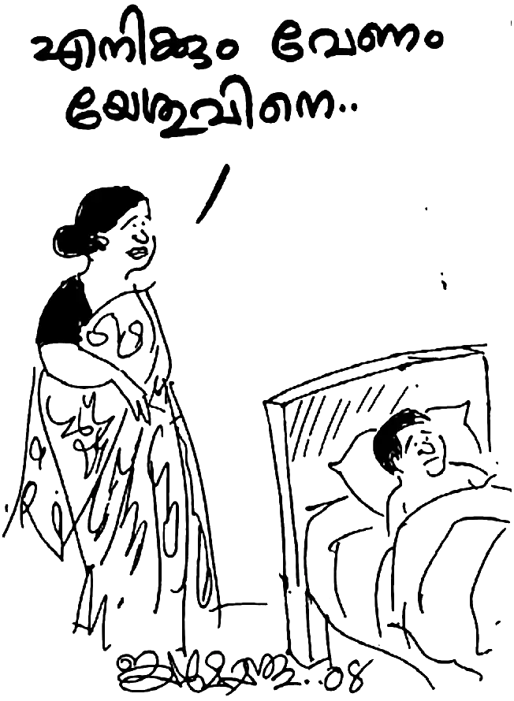“നീ എന്തിനാണു് സ്നാനം ഏൽക്കുന്നതു് ?” എന്ന അദ്ദേഹത്തിന്റെ ചോദ്യത്തിനു ഭാൎയ്യയുടെ മറുപടി: “ചേട്ടായിക്കുമാത്രം മതിയോ ക്രിസ്തുവിനെ? എനിക്കും വേണം യേശു ക്രിസ്തുവിനെ. ഞാൻ ഈ മൂന്നു വൎഷക്കാലം ദൈവവചനം ചേട്ടായിയിലൂടെ കേട്ടു് കൊണ്ടിരുന്നു. പലതും ഞാൻ എന്റെ ഉള്ളിൽ സംഗ്രഹിച്ചു. എന്നാൽ എന്റെ ആങ്ങളുമാരെ പേടിച്ചിട്ടാണു് ഞാനന്നു സമ്മതിക്കാതിരുന്നതു്. എന്നാൽ ഇന്നു് ദൈവം നമുക്കു് സ്വാതന്ത്ര്യം തന്നിട്ടുണ്ടല്ലോ. ഏറെ കാലത്തിനു ശേഷം നമുക്കു് സ്വാതന്ത്ര്യത്തോടെ പ്രാൎത്ഥിക്കാൻ ഒരു ഇടം ദൈവം തന്നല്ലോ. എന്റെ ഭൎത്താവായ ചേട്ടായി എടുക്കുന്ന ഏതു് തീരുമാനത്തിനും ഞാൻ എതിരല്ല. ഞാനും യേശു ക്രിസ്തുവിനെ എന്റെ കൎത്താവും രക്ഷകനുമായി സ്വീകരിച്ചിരിക്കുന്നു.”
മോഹനന്റെ കണ്ണു് നിറഞ്ഞു. മോഹനൻ ദൈവത്തെ അറിഞ്ഞിട്ടു് കഴിഞ്ഞ അഞ്ചു് വൎഷമായി. അന്നു മുതൽ ഇന്നേവരെയുള്ള തന്റെ ഏറ്റവും പ്രധാനപ്പെട്ട ഒരു പ്രാൎത്ഥന ആയിരുന്നു ഭാൎയ്യയുടെ മാനസാന്തരം. ഭാൎയ്യാഭൎത്താക്കന്മാരെ കുറിച്ചു് ബൈബിൾ നൽകുന്ന സന്ദേശം അവർ കൂട്ടിയോജിപ്പിക്കപ്പെട്ടാൽ (വിവാഹിതരായാൽ) പിന്നെ അവർ രണ്ടല്ല ഒരു ശരീരമാകുന്നു എന്നാണു്. ഒരു ശരീരത്തിൽ രണ്ടു് വിശ്വാസം ആൎക്കു് വഹിക്കാൻ കഴിയും?
അതുകൊണ്ടു് തന്റെ പ്രിയമുള്ളവൾ എടുത്ത ഏറ്റവും വിലപ്പെട്ട തീരുമാനം മോഹനൻ സഹോദരനെ കോരിത്തരിപ്പിച്ചു. അഞ്ചു് വൎഷത്തെ പ്രാൎത്ഥനയ്ക്കു് ഉത്തരം നൽകിയ ദൈവത്തെ രണ്ടു് പേരും മകനും ചേൎന്നു സന്തോഷത്തോടും ആനന്ദത്തോടും കൂടെ ആദ്യമായി പാടി സ്തുതിച്ചു.
പിറ്റേ ദിവസം ഒരു ഞായറാഴ്ച ആയിരുന്നു. വിജയമോഹനൻ ഡെന്നിയേട്ടന്റെ കാറുമായി വന്നു; മോഹനനെയും കുടുംബത്തെയും കണ്ണൂർ ദൈവസഭാ ഹാളിലേക്കു് കൊണ്ടു പോയി.
അങ്ങനെ 1992 ജൂണ് മാസം അവസാന ആഴ്ച മോഹനനും ഭാൎയ്യ തങ്കമണിയും അവരുടെ ജീവിതത്തിൽ കഴിഞ്ഞ ആറു് വൎഷം ദൈവം എന്തു ചെയ്തു എന്ന സാക്ഷ്യം പ്രസ്താവിച്ചു. മോഹനനെ രണ്ടു് പേർ ചേൎന്നു റ്റാങ്കിൽ എടുത്തിറക്കി സ്നാനമേൽപിച്ചു. അങ്ങനെ ഭാൎയ്യയും ഭൎത്താവും ഒന്നിച്ചു സ്നാനമേറ്റു.
“സ്നാനം എന്നതു് ചിലർ ചിന്തിക്കുന്നതു് പോലെ ഒരു ക്രിസ്തീയ ആചാരമല്ല. മറിച്ചു് വിശ്വസിക്കുന്നവർ ക്രിസ്തുവിനോടു് ചേരുന്ന പ്രക്രിയയാണു് (റോമർ 6:1-7 വരെ വായിക്കുക).
“യേശു ക്രിസ്തു ദൈവപുത്രനായിട്ടു് കൂടി മുപ്പതു വൎഷം മാതാപിതാക്കൾക്കു കീഴടങ്ങിയതിനു ശേഷം ദൈവീക പ്രവൃത്തിയിലേക്കു് പ്രവേശിക്കുന്നതിനു മുമ്പായി തന്നെക്കാൾ താണവനായ യോഹന്നാൻ സ്നാപകനാൽ സ്നാനം ഏൽക്കേണ്ടതു ദൈവസന്നിധിയിൽ ആവശ്യമായിരുന്നു.
“യേശു എന്തിനു സ്നാനമേറ്റു? മാനവൎക്കു് വേണ്ടി മരിക്കുവാനും ഉയിർത്തെഴുന്നേൽക്കുവാനും താൻ സന്നദ്ധനാണു് എന്നു് വെള്ളത്തിൽ മുങ്ങി പൊങ്ങുന്നതിലൂടെ യേശു ലോകത്തെ അറിയിച്ചു. ഇതിൽ ദൈവം പ്രാസാദിച്ചു. അതിനാൽ സ്നാനമേറ്റു കരകയറിയപ്പോൾ ‘ഇവൻ എന്റെ പ്രിയ പുത്രൻ. ഇവങ്കൽ ഞാൻ പ്രസാദിച്ചിരിക്കുന്നു’ എന്ന ദൈവീക അംഗീകാര മുദ്ര ചാൎത്തപ്പെട്ടു. പരിശുദ്ധാത്മാവു് പ്രാവു് എന്ന പോലെ യേശുവിന്റെ മേൽ ഇറങ്ങി വന്നു.
“ദൈവപുത്രനായ യേശു മനുഷ്യ ശരീരത്തിൽ വന്നപ്പോൾ ദൈവീക കൽപ്പന അപ്രധാനം എന്നു് കാണാതെ അനുസരിച്ചു. അങ്ങനെയെങ്കിൽ പാപികളായ നാം യേശുവിനോടു് കൂടെ മരിക്കുവാനും, നമ്മുടെ പഴയ പ്രകൃതത്തെ കുഴിച്ചിടുവാനും, അതിനു ശേഷം യേശുവിനോടു് കൂടെ ഉയിർക്കുവാനുമായി സ്നാനം ഏൽക്കേണ്ടതു് എത്ര അധികം ആവശ്യമാണു് ?” മോഹനൻ പറഞ്ഞു നിൎത്തി.
31
സ്നാനമേറ്റു കരകയറിയ യേശുവിനെ ആത്മാവു മരുഭൂമിയിലേക്കു് നടത്തിയതു പോലെ, സ്നാനമേറ്റു ഭവനത്തിലേക്കു് വന്ന മോഹനനെയും കുടുംബത്തെയും എതിരേറ്റതു് ഒരു പുഴുത്ത നായയെ കാണുന്ന അറപ്പോടും വെറുപ്പോടും കൂടെയാണു്. വിദേശ പണവുമായി മതം മാറ്റാനായി ഒരുവനെ കൊണ്ടുവന്നിരിക്കുന്നു എന്ന സാത്താന്റെ അപഖ്യാതിയുമായി ജനം അവരെ വളഞ്ഞു.
കൈതച്ചാലിൽ താമസമാക്കിയതിന്റെ മൂന്നാമത്തെ ഞായറാഴ്ച അവർ പ്രാൎത്ഥനയ്ക്കായി അടുത്ത വീട്ടിലെ ഒരു മുറിയിൽ കൂടി ഇരിക്കുമ്പോൾ സുവിശേഷ വിരോധികളായ ഒരു പറ്റം ആർ.എസ്.എസ്. പ്രവൎത്തകർ ആ ഭവനം വളയുകയും “ആ വീട്ടിൽ കയറി ആഭാസകരമായ വാക്കുകളാൽ ഞങ്ങളെ വേദനിപ്പിക്കുകയും ബൈബിൾ അപഹരിക്കുകയും പാട്ടു് പുസ്തകങ്ങൾ കീറിക്കളയുകയും മനുഷ്യൎക്കു് കേൾക്കാൻ വയ്യാത്തവിധം അറപ്പുളവാകുന്ന തരത്തിൽ അസഭ്യം പറയുകയും ചെയ്തു.”
വിജയമോഹനന്റെ അധ്യക്ഷതയിൽ ചേൎന്ന ആദ്യ യോഗത്തിൽ തങ്ങൾ തളൎന്നു പോയിരുന്നു. അവർ ഭീഷണിപ്പെടുത്തി ഇറങ്ങി പോകുമ്പോൾ വിജയമോഹനൻ മോഹനനോടു് ചോദിച്ചു: “ഇനി എന്താണു് ചെയ്യേണ്ടതു്, ബ്രദർ പറയൂ?” മോഹനൻ പറഞ്ഞു: “നിങ്ങൾ ശത്രുക്കളെ സ്നേഹിപ്പിൻ എന്ന വചന പ്രകാരം നമുക്കു് ഈ ആർ.എസ്.എസ്. സഹോദരങ്ങൾക്കു് വേണ്ടി പ്രാൎത്ഥിക്കാം.”
“കൂട്ടായ്മയിൽ വന്ന എല്ലാവരും ഹൃദയ നുറുക്കത്തോടു് കൂടെ പ്രാൎത്ഥിക്കുവാൻ ദൈവം കൃപ നൽകി. പ്രാൎത്ഥിച്ചു കഴിഞ്ഞപ്പോൾ ഞങ്ങൾക്കു് ജീവൻ തിരിച്ചു കിട്ടിയതു പോലെയായി.”
ഉടൻ തന്നെ വിജയമോഹനൻ മോഹനനോടു് പറഞ്ഞു: “ഇന്നു് ബ്രദർ വചനത്തിൽ നിന്നു് (ബൈബിളിൽ നിന്നു് ) പ്രസംഗിക്കുക.”
എന്താണു് പ്രസംഗം എന്നു് പോലും അറിയാത്ത – ഒരു സഭായോഗത്തിൽ മാത്രം പങ്കെടുത്തിട്ടുള്ള മോഹനൻ – ദൈവത്തോടു് പ്രാൎത്ഥിച്ചു; “പിതാവേ, അവിടുന്നു് എന്റെ ഹൃദയവും നാവും ഉപയോഗിക്കേണമേ.”
പെട്ടെന്നു് ദൈവാത്മാവു സജീവമായി. ഒരു വചനം നൽകി: “ക്രിസ്ത്യാനി ആയിട്ടു് കഷ്ടം സഹിക്കേണ്ടിവന്നാലോ ലജ്ജിക്കരുതു്. ആ നാമം ധരിച്ചിട്ടു ദൈവത്തെ മഹത്വപ്പെടുത്തുകയത്രേ വേണ്ടതു്.” ഈ വചനത്തെ ആസ്പദമാക്കി മോഹനൻ സംസാരിക്കാൻ തുടങ്ങി.
“പരിശുദ്ധാത്മാവിന്റെ സ്വാധീന ശക്തി അന്നു ഞാൻ രുചിച്ചറിഞ്ഞു. ഒന്നിനു പുറകെ മറ്റൊന്നായി ദൈവാത്മാവു വചനം നൽകി കൊണ്ടിരുന്നു.
“നീതി നിമിത്തം ഉപദ്രവിക്കപ്പെടുന്നവർ ഭാഗ്യവാന്മാർ; സ്വൎഗ്ഗരാജ്യം അവർക്കുള്ളതു്. എന്റെ നിമിത്തം നിങ്ങളെ പഴിക്കുകയും ഉപദ്രവിക്കുകയും നിങ്ങളെക്കൊണ്ടു് എല്ലാ തിന്മയും കളവായി പറയുകയും ചെയ്യുമ്പോൾ നിങ്ങൾ ഭാഗ്യവാന്മാർ. സ്വൎഗ്ഗത്തിൽ നിങ്ങളുടെ പ്രതിഫലം വലുതാകകൊണ്ടു സന്തോഷിച്ചു് ഉല്ലസിപ്പിൻ; നിങ്ങൾക്കു് മുമ്പുണ്ടായിരുന്ന പ്രവാചകന്മാരെയും അവർ അങ്ങനെ തന്നെ ഉപ്രദവിച്ചുവല്ലോ” (മത്തായി 5:10-12) എന്നു് തുടങ്ങി അനവധി വചനങ്ങളാൽ ദൈവം അന്നു് അവിടെ കൂടി വന്നിരുന്ന ദൈവജനത്തെ ഉറപ്പിച്ചു.
വചനം സംസാരിച്ചു കഴിഞ്ഞപ്പോൾ മുൻപറഞ്ഞ ഉപ്രദ്രവം സംഭവിച്ചിട്ടില്ല. ആ വിധം ആത്മാക്കൾ ആത്മീയ സന്തോഷത്തിലായി തീൎന്നു. അന്നു് ഉപദ്രവിക്കാൻ വന്നവൎക്കു ഹസ്തദാനം നൽകി സഹോദരങ്ങൾ യാത്രയായി. എന്നാൽ സുവിശേഷ വിരോധികൾ വിജയമോഹനൻ ബ്രദറിനെ താക്കീതു ചെയ്തു. “ഇനി നീ ഈ ദേശത്തു വന്നിട്ടുണ്ടെങ്കിൽ നിന്റെ കാൽ ഞങ്ങൾ വെട്ടി മാറ്റും” എന്നു് ഭീഷണി മുഴക്കി അവർ മടങ്ങി പോയി.
ക്രിസ്തീയ വിശ്വാസം എന്താണെന്നു് മനസ്സിലാക്കിയിട്ടില്ലാത്ത സുവിശേഷ വിരോധികൾ കരുതി അവരുടെ ഭീഷണിക്കു് മുമ്പിൽ ഞങ്ങൾ ഭയപ്പെട്ടു് പിന്മാറും എന്ന്. എന്നാൽ ഒരു ദൈവ പൈതൽ തീയിൽ കുരുത്തതാണു്. അതു് വെയിലത്തു വാടി പോകുന്നതല്ല. ഇന്നും പിശാചു് ഇതു് മനസ്സിലാക്കിയിട്ടില്ല എന്നു് തോന്നുന്നു. മനുഷ്യരോടു് നമുക്കു് പോരാട്ടമില്ല. നമുക്കു പോരാട്ടമുള്ളതു ജഡരക്തങ്ങളോടല്ല.
“നിങ്ങളെ അവർ കൊല്ലും. ദേഹിയെ കൊല്ലാൻ കഴിയാതെ ദേഹത്തെ കൊല്ലുന്നവരെ ഭയപ്പെടേണ്ട" എന്നരുളി ചെയ്തു കൊണ്ടാണു് കൎത്താവായ യേശു ക്രിസ്തു ശിഷുന്മാരെ വിളിച്ചു വേർതിരിച്ചതു്.
“ആകയാൽ ഈ ഭീഷണിയുടെ മുമ്പിൽ ഞങ്ങൾ ആരംഭിച്ച ദൈവീക പ്രവൃത്തിയെ നിൎത്തി വയ്ക്കുവാൻ ഞങ്ങൾ തയ്യാറായില്ല എന്നു് മാത്രമല്ല പിറ്റേ ആഴ്ച വിജയമോഹനൻ സഹോദരൻ മറ്റു മുന്നു സഹോദരന്മാരുമായി കണ്ണൂരിൽ നിന്നും വന്നു. ഞങ്ങളുടെ കാരുണ്യാഭവൻ എന്ന കൊച്ചു വീട്ടിൽ പ്രാൎത്ഥന ആരംഭിക്കുകയും ചെയ്തു.”
അന്നു് വിജയമോഹനൻ മോഹനന്റെ തലയിൽ കൈവച്ചു പ്രാൎത്ഥിച്ചിട്ടു് ഇങ്ങനെ പറഞ്ഞു: “ഇന്നു് മുതൽ ഈ സ്ഥലത്തെ കൂടിവരവു് മോഹനൻ ബ്രദർ ദൈവകൃപയിൽ ആശ്രയിച്ചു നടത്തിക്കൊള്ളണം.”
ഇതു് കേട്ട താൻ ചോദിച്ചു; “സഹോദരാ, എനിക്കു് കൂട്ടായ്മ എങ്ങനെ നടത്തണം എന്നറിയില്ലല്ലോ.”
“അതെല്ലാം പരിശുദ്ധാത്മാവു തക്ക സമയത്തു് ബ്രദറിനെ അറിയിക്കും, ധൈൎയ്യമായിരിക്ക” എന്നു് പറഞ്ഞു് അന്നത്തെ കൂട്ടായ്മ താൻ നടത്തി.
കണ്ണൂരിൽ നിന്നു് സഹോദരന്മാർ വരും എന്ന പ്രതീക്ഷയിൽ സുവിശേഷ വിരോധികൾ അതിനടുത്ത മറ്റൊരു വീട്ടിൽ ക്രേന്ദീകരിച്ചിരുന്നു. സാധാരണ വരുമ്പോൾ ഡെന്നിസ് സ്ഫടികത്തിന്റെ കാറുമായിട്ടായിരിക്കും വരുന്നതു് എന്നവർ പ്രതീക്ഷിച്ചു.
“എന്നാൽ അവർ കാറു് കത്തിക്കാൻ പദ്ധതിയുണ്ടെന്നു് മണത്തറിഞ്ഞ ഞങ്ങൾ കാറിൽ വരരുതെന്നു് അറിയിച്ചതിനാൽ അവർ ഒരു റ്റാക്സി വാഹനത്തിലാണു് വന്നതു്. ആയതിനാൽ അവൎക്കു ഉപ്രദവിക്കാൻ കഴിഞ്ഞില്ല. പിന്നാലെ പാഞ്ഞു വന്ന അവർ ഞങ്ങളുടെ ഭവനത്തിൽ കയറി ആക്രമിച്ചില്ല.
“അന്നത്തെ ഞങ്ങളുടെ ഭവനത്തിലെ പ്രാൎത്ഥനാ കൂട്ടായ്മ കഴിയുന്നതു് വരെ സുവിശേഷ വിരോധികൾ പന്ത്രണ്ടോളം ആൾക്കാർ റോഡിൽ കുത്തിയിരുന്നു. പ്രാൎത്ഥന കഴിഞ്ഞിറങ്ങിയ വിജയമോഹനൻ ബ്രദറിനെയും മറ്റും റോഡിൽ തടഞ്ഞു നിൎത്തി അവർ ക്രൂരമായി മർദ്ദിച്ചു. തലയ്ക്കും നെഞ്ചത്തും വയറ്റിനും മതി വരുവോളം അവർ മർദ്ദിച്ചു. അവശനായ അദ്ദേഹം അവസാനമായി കൈ ഉയൎത്തി അവരെ അനുഗ്രഹിച്ചു: ‘സഹോദരന്മാരേ, ദൈവം നിങ്ങളെ അനുഗ്രഹിക്കട്ടെ.’”
എന്തൊരു മാതൃക! യേശു പറഞ്ഞു: “നിങ്ങളുടെ ശത്രുക്കളെ സ്നേഹിപ്പിൻ; ഉപദ്രവിക്കുന്നവൎക്കു് വേണ്ടി പ്രാൎത്ഥിപ്പിൻ; ശപിക്കാതെ അവരെ അനുഗ്രഹിപ്പിൻ; നിങ്ങളുടെ സ്വൎഗ്ഗസ്ഥ പിതാവിനു പുത്രന്മാരായി തീരേണ്ടതിനു തന്നെ.” (മത്തായി 5:44-45).
“വിജയമോഹനൻ ബ്രദറിന്റെ ഈ ക്രിസ്തീയ ശിഷ്യത്വത്തിന്റെ ത്യാഗം കണ്ടു് നിന്ന സ്ത്രീജനങ്ങളുടെ കരളലിയിച്ചു. പൊതുജനം കൂട്ട നിലവിളിയായി. ആർ.എസ്.എസ്. സഹോദരങ്ങൾ അവരുടെ കയ്യിൽ നിന്നു് ഗിറ്റാർ പിടിച്ചു വാങ്ങി കൊണ്ടു പോയി. പരിഹാസവും നിന്ദയുമായി അവർ ബസ്റ്റോപ്പോളം പിൻചെന്നു.
“അതിനു ശേഷം കണ്ണൂരിലുള്ള സഹോദരങ്ങളോടു് തൽക്കാലം ദേശത്തു വരരുതെന്നു് ഞങ്ങൾ അറിയിപ്പു് കൊടുത്തു. ഈ പ്രതിസന്ധി ഘട്ടത്തിൽ രക്ഷിക്കപ്പെട്ട ഒരു ഭാൎയ്യയും ഭൎത്താവും ഞാനും ഭാൎയ്യയും മകനും ഇത്രയും പേർ ഒന്നിച്ചു കൂടി പിറ്റേയാഴ്ച മുതൽ കൂട്ടായ്മ ആചരിച്ചു വന്നു. ഒരു സഭാ കൂടിവരവു് ആഗ്രഹിച്ചു വന്ന എന്നെ ഭരമേൽപിച്ചതു് ഒരു കൊച്ചു കൂട്ടായ്മ നടത്തുവാനാണു്.”
കഴിഞ്ഞ ഏഴു് വൎഷമായി ദൈവവചനം ധ്യാനിച്ചും പഠിച്ചും അനേകം പരീക്ഷയിൽ കൂടെ കടന്നു പോകുകയും ചെയ്ത മോഹനന്റെ ജീവിതം ഇതിനായി ദൈവം ഒരുക്കുക ആയിരുന്നു എന്നു് മോഹനൻ അന്നു മനസ്സിലായി. മാത്രമല്ല, ഏഴു് വൎഷം മുമ്പു് കഷ്ടതയുടെ ആദ്യ നാളുകളിൽ സ്വന്തം പിതാവിനോടു് 5 സെൻറ്റ് സ്ഥലം ചോദിച്ചപ്പോൾ പിതാവിന്റെ ഹൃദയം കഠിനപ്പെടുകയും മോഹനനു വീതം കൊടുക്കാതിരിക്കുകയും ചെയ്തതിലെ ദൈവോദ്ദേശ്യം ഇപ്പോഴാണു് മോഹനനു മനസ്സിലായതു്. അന്നു് അച്ഛൻ സ്ഥലം കൊടുത്തിരുന്നു എങ്കിൽ മോഹനൻ ഒരിക്കലും ഈ സ്ഥലത്തു് വന്നെത്തുകയോ സുവിശേഷ വേല ചെയ്യുകയോ ഇത്ര സൗകര്യപ്രദമായ സ്ഥലത്തു് താമസിക്കുകയോ ദൈവീക പദ്ധതി നിറവേറുകയോ ചെയ്യുക ഇല്ലായിരുന്നു. വിളിക്കപ്പെട്ടവൎക്കു, ദൈവത്തെ സ്നേഹിക്കുന്നവൎക്കു സകലവും നന്മയ്ക്കായി കൂടി വ്യാപരിപ്പിക്കുന്നു എന്ന ദൈവവചനം നാം എത്രയധികം വിശ്വസിക്കേണ്ടിയിരിക്കുന്നു!
സ്നേഹിതാ, ബൈബിളിലെ ദൈവവചനങ്ങൾ എത്ര വൎഷം കഴിഞ്ഞാലും പഴയതാകുന്നില്ല. നമുക്കാണു് തെറ്റു പറ്റുന്നത്; ദൈവത്തിനു തെറ്റു പറ്റുന്നില്ല. ദൈവം വാക്കു് പറഞ്ഞാൽ മാറാത്തവൻ. അതേ, അവിടുന്നു് അനന്യൻ തന്നെ.
32
മോഹനനും കുടുംബവും കൈതച്ചാലിൽ താമസം ആരംഭിച്ച ശേഷം അനവധി പരീക്ഷകൾ നേരിട്ടു. പാലത്തിൻകടവിൽ നിന്നു് ഇങ്ങോട്ടു വരുമ്പോൾ തങ്കമണിയുടെ വീതം സ്ഥലത്തു നിന്നു് ആ വൎഷം ലഭിച്ച കശുവണ്ടിയുടെ വിലയായ അയ്യായിരം രൂപ കൈവശമുണ്ടായിരുന്നു. പുതുതായി വാങ്ങിയ സ്ഥലത്തുള്ള വീടിനു് ഒരു കക്കൂസ് ഉണ്ടായിരുന്നില്ല. കയ്യിലുള്ള അയ്യായിരം രൂപ കൊണ്ടു് ഒരു കക്കൂസ് ഉണ്ടാക്കണം, കുടുംബ ചെലവും കഴിയണം.
ദുഃഖം എന്നു് പറയട്ടെ, മോഹനൻ ആ ദേശത്തു് ആരെയും പരിചയം ഉണ്ടായിരുന്നില്ല. വിശ്വാസത്തിൽ താത്പര്യം കാണിച്ച വാസുവിനോടു് ഒരു മേസ്തിരിയെ വിളിക്കുവാൻ പറഞ്ഞയച്ചു. വാസു തന്റെ ബന്ധുവായ ഒരു മേസ്തിരിയെ കക്കൂസ് പണിയുവാൻ കൂട്ടികൊണ്ടു് വന്നു. എന്നാൽ അവരുടെ കൂടെ വേല ചെയ്തിരുന്നവരിൽ ആർ.എസ്.എസ്. പ്രവൎത്തകനും കമ്മ്യൂണിസ്റ്റുകാരും ഉണ്ടായിരുന്നു. എങ്ങനെയെങ്കിലും ഒരു കക്കൂസ് ഉണ്ടാക്കുവാൻ ആഗ്രഹിച്ച മോഹനനെ അവർ ശരിക്കും വിഷമിപ്പിച്ചു.
ആറ് അടി മാതം ആഴമുള്ള ഒരു കുഴിയും അഞ്ച് അടി നീളമുള്ള ഒരു തറയും കെട്ടുവാൻ അവർ പത്തു് ആളുടെ പണി എടുത്തു. മോഹനൻ കരിങ്കല്ലിന്റെ പണി എടുത്തിട്ടുണ്ടു്. ഒരു കുഴിയും തറയും കെട്ടുവാൻ കേവലം രണ്ടാളുടെ പണി മാത്രമേ വേണ്ടു. എന്നാൽ മോഹനൻ യേശു ക്രിസ്തുവിൽ വിശ്വസിക്കുന്നു എന്ന ഒറ്റക്കാരണത്താൽ പണിയുമ്പോൾ അവർ രഹസ്യമായി പറഞ്ഞു: “എടോ, വിദേശപ്പണമാണു്. എത്രയും ചെലവായിക്കോട്ടെ. നമുക്കെന്താ? അവനെ ശരിക്കും ക്ലേശിപ്പിക്കണം.”
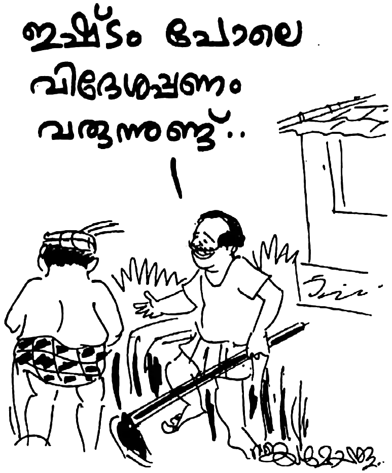മോഹനൻ ഇതു് കേട്ടു. മേസ്തിരിമാർ മോഹനനെ ശരിക്കും വലച്ചു. 5000 രൂപ കൊണ്ടു് കക്കൂസ് പണിയാം എന്നു് വിചാരിച്ചെങ്കിലും പണി തീൎന്നില്ല. എന്നു് മാത്രമല്ല, മേൽക്കൂര പണിയാനും കഴിയാതായി.
ആ ഞായറാഴ്ച മോഹനനും കുടുംബവും അടുത്ത വിട്ടിൽ പ്രാൎത്ഥന കഴിഞ്ഞു് വരുമ്പോൾ ആവശ്യം ഇല്ലാത്ത ഉയരത്തിൽ കക്കൂസിനു തറ കെട്ടിവച്ചിരിക്കുന്നതു് കണ്ടു് മോഹനൻ കരഞ്ഞു പോയി. താൻ ദുഃഖത്തോടെ വീൽച്ചെയറിൽ ഇരുന്നു് തറ പൊളിച്ചു് ഉയരം ഒരു അടിയാക്കി. തന്നെ കബളിപ്പിച്ച പണിക്കാരോടു യാതൊരു പരാതിയും പറയാതെ അവർ ആവശ്യപ്പെട്ട കൂലി കൊടുത്ത മോഹനൻ ഒരു കാൎയ്യം തീരുമാനിച്ചു. കക്കൂസ് നനയാതിരിക്കാൻ ഒരു അയൽക്കാരന്റെ സഹായത്തോടെ ഒരു കവുങ്ങ് വാങ്ങി ഓടു് മേഞ്ഞു.
ഈ പണി നടന്നു കൊണ്ടിരിക്കെ വൃദ്ധയായ ഒരു സ്ത്രീ കയറി വന്നു ആവലാതി പറഞ്ഞു: “മോനേ, എനിക്കു് മരുന്നു വാങ്ങാൻ മാൎഗ്ഗമില്ല. തലയിൽ പഴുപ്പാണു്. സ്ഥിരമായി തല വേദനയാണു്.” ഡോക്ടർ കുറിച്ചു് കൊടുത്ത മരുന്നിന്റെ കുറിപ്പും കാണിച്ചു. മോഹനൻ കരുതി, ‘എന്റെ കയ്യിൽ ഉള്ള പണം കൊണ്ടു് കക്കൂസിന്റെ പണി കഴിയില്ല. എങ്കിലും സാരമില്ല.’ ഈ സ്ത്രീക്കു് അതിൽ നിന്നു് 50 രൂപ എടുത്തു കൊടുത്തു. അവർ വീട്ടിൽ പോയി പറഞ്ഞു: “എനിക്കു് ആ ‘യേശുമോഹനൻ’ പൈസ തന്നു.” (ഇങ്ങനെ ആയിരുന്നു അന്നു മോഹനനെ ആളുകൾ വിളിച്ചിരുന്നതു് ) ആ വീട്ടുകാർ നാടു് മുഴുവൻ പരസ്യപ്പെടുത്താൻ തുടങ്ങി: “വിദേശപ്പണം വിതരണം തുടങ്ങി.” ഇതു് കേട്ട മോഹനന്റെ ഹൃദയം തകൎന്നു. എങ്ങനെ ഒരു നന്മ ചെയ്യും? എന്തൊരു ലോകം!
അപ്പോഴും ദൈവ വചനം തന്നെ ആശ്വസിപ്പിച്ചു; “നിങ്ങളെ കുറിച്ചു് എല്ലാ തിന്മയും കളവായി പറയുമ്പോൾ നിങ്ങൾ ഭാഗ്യവാന്മാർ.” ഇങ്ങനെ നാടു് മുഴുവനും ഈ വികലാംഗനായ മനുഷ്യനെ ഒറ്റപ്പെടുത്തുകയും കുത്തു വാക്കുകളും അപഖ്യാതിയും ദൂഷണവും കൊണ്ടു് നിന്ദിക്കുകയും ചെയ്തു. എങ്കിലും തന്റെ ദൈവം അറിയാതെ ഒന്നും സംഭവിക്കുന്നില്ല എന്നു് മനസ്സിലാക്കിയ മോഹനനും കുടുംബവും ദൈവത്തോടു് അവരുടെ ദുഃഖമെല്ലാം പങ്കിട്ടു് കൊണ്ടിരുന്നു.
കൈയിലുള്ള പൈസ തീൎന്നു. നിത്യോപയോഗ സാധനങ്ങൾ വാങ്ങാൻ മാൎഗ്ഗം ഇല്ലാതായി. ആരും പരിചയം ഇല്ലാത്ത സ്ഥലം. കടം വാങ്ങാൻ സ്ഥലമില്ല. പാലത്തിൻകടവിൽ ആണെങ്കിൽ അവൎക്കു് കടമുണ്ടായിരുന്നില്ല. ഇവിടെ പരിചയം ഇല്ലാത്ത തളൎന്നു കിടക്കുന്ന മനുഷ്യനു ആരു് കടം കൊടുക്കാനാണു് ? പോരാത്തതിനു്, യേശു ക്രിസ്തുവിലുള്ള വിശ്വാസത്തിന്റെ പേരിൽ നാടു് മുഴുവനും അവരെ വെറുത്തു.
നാട്ടുകാർ കുത്തു വാക്കുകൾ പറയുമ്പോൾ മോഹനൻ ഒരു ദൈവവചനം ഓൎത്തുപോയി; “മുമ്പല്ലു വാളായും അണപ്പല്ലു കത്തിയായും ഉപയോഗിക്കുന്ന ജനം.” ഇതിനിടയിൽ കിടന്നു നെടുവീൎപ്പിട്ടു് കൊണ്ടിരുന്ന ആ കുടുംബത്തിന്റെ മേൽ അശനിപാതം പോലെ രോഗങ്ങളും കടന്നാക്രമണം നടത്തി. ആ മഴക്കാലത്തു് മകനു സുഖം ഇല്ലാതായി. സ്ഥിരം വരാറുള്ള ‘മൂത്രത്തിൽ പഴുപ്പ് ’ (യൂറിനറി ഇൻഫക്ഷൻ) മൂലം പനിയും വിറയലുമായി മോഹനനും കിടപ്പിലായി. തങ്കമണിയും സുഖം ഇല്ലാതെ കിടന്നു പോയി.
ആരുമാരും സഹായിക്കാനില്ല. ബന്ധുമിത്രാദികൾ തിരിഞ്ഞു നോക്കുന്നില്ല. കയ്യിൽ മരുന്നു വാങ്ങാൻ പത്തു് രൂപ പോലും ഇല്ല. വിട്ടിലെ അരി അന്നു കൊണ്ടു് തീരും. നാട്ടുകാർ വെറുപ്പോടെ നോക്കുന്നു. ആത്മീയ സഹോദരന്മാൎക്കു ആൎക്കും കയറിവരാൻ സാധിക്കാത്തതു പോലെ എതിൎപ്പു. കൈതച്ചാലിൽ വന്നിട്ടു് മൂന്നു മാസം കഴിയുന്നു. ഒന്നിനു പുറകെ ഒന്നായി കഷ്ടത.
ആ നാളുകളിൽ ആകെയുള്ളതു് യേശു ക്രിസ്തുവിൽ താത്പര്യപ്പെട്ട രണ്ടു് പേർ മാത്രം. അവരും ഞങ്ങളുടെ കഷ്ടത കണ്ടിട്ടു് പകച്ചു പോയി. അവരാണു് ആ ദിവസങ്ങളിൽ രണ്ടു് കിലോ അരി വാങ്ങി തന്നതു്. മൂന്നംഗങ്ങൾ മാത്രമുള്ളൂ. ഞങ്ങൾ മൂന്നു പേരും കിടപ്പിലുമായി.” ഇത്ര ഭീകരമായ അനുഭവം മോഹനന്റെ ജീവിതത്തിൽ ഒരിക്കലും ഉണ്ടായിട്ടില്ല.
ഇങ്ങനെയിരിക്കെ ഒരു അയൽക്കാരി വൈകുന്നേരം വീട്ടിൽ കയറി വന്നു. തങ്കമണിയോട അവർ പറയുകയാണ് : “തങ്കമണീ, മോഹനൻ സദാ കിടപ്പിലാണു്. മോനും സുഖം ഇല്ലാതെ കിടക്കുന്നു. ഇപ്പോൾ നീയും കിടപ്പിലായോ? എന്താണു് നിങ്ങളുടെ അവസ്ഥ? നിങ്ങൾ യേശു ക്രിസ്തുവിൽ വിശ്വസിക്കുകയും പ്രാൎത്ഥിക്കുകയും ചെയ്യുന്നു. എന്നിട്ടും …”
മോഹനന്റെ ജീവിതം തകൎന്നു വീഴുന്നതായി തോന്നി. എങ്ങനെ പിടിച്ചു നിൽക്കും എന്നറിയില്ല. പാലത്തിൻകടവിൽ നിന്നു് വരുമ്പോൾ പ്രതീക്ഷയുണ്ടായിരുന്നു—മലയിൽ നിന്നിറങ്ങി പട്ടണത്തോടു് അടുത്തു വന്നാൽ ആത്മീയ സഹോദരന്മാർ സഹായിക്കും എന്ന്. അതു് തകൎന്നു കഴിഞ്ഞു. കൈതച്ചാലിൽ വന്നതിനു ശേഷം ഒരു വിശ്വാസിക്കും വീട്ടിൽ വരാൻ കഴിയാത്തതു പോലെയുള്ള പ്രതികൂലം.
അന്നു രാത്രി പ്രാൎത്ഥിക്കാൻ തുടങ്ങുമ്പോൾ പകൽ സമയത്തു വീട്ടിൽ വന്ന സ്ത്രീ പറഞ്ഞ വാക്കാണു് മോഹനനു് ഓൎമ്മ വന്നതു്. ഉടനെ പിശാചു് മോഹനനോടു പറഞ്ഞും: “നിന്നെ ഞാൻ പാലത്തിൻകടവിലെ ആ മലയിലേക്കു് തിരിച്ചയയ്ക്കും. നിന്റെ സുവിശേഷം ഇതോടു് കൂടെ ഞാൻ അവസാനിപ്പിക്കും. നിന്നെ ഞാൻ ഉപദ്രവം കൊണ്ടും ഞെരുക്കം കൊണ്ടും രോഗം കൊണ്ടും തകൎത്തുകളയും.”
ദൈവശബ്ദം മുമ്പു് പല തവണ മോഹനൻ ശ്രവിച്ചിട്ടുണ്ടു്. എന്നാൽ, ഇപ്പോൾ ഇതാ, നിലയില്ലാ കയത്തിൽ മുങ്ങാൻ പോകുന്ന അവസ്ഥയിൽ പിശാചിന്റെ (സാത്താന്റെ) ശബ്ദവും മോഹനൻ കേട്ടു. പ്രാൎത്ഥിക്കാൻ തുടങ്ങുമ്പോഴാണു് ആ അനുഭവമുണ്ടായതു്.
ഞെട്ടി തരിച്ചു പോയ മോഹനൻ സങ്കടം കൊണ്ടു് ഞരങ്ങി. മോഹനന്റെ ശരീരം ബലഹീനമാണെങ്കിലും ആത്മാവിലെ ദൈവീക ജീവൻ പ്രവൎത്തിക്കാൻ തുടങ്ങി.
“എന്റെ സങ്കടം പൊങ്ങി വന്നു. അന്നു ഞാൻ നിലവിളിക്കാൻ തുടങ്ങി. എന്റെ ദൈവത്തിൽ ഞാൻ വിശ്വസിച്ചു; സാത്താന്റെ വാക്കുകൾ ഞാൻ വിശ്വസിച്ചില്ല. ഏറെ സമയം എന്റെ ഹൃദയം ദൈവസന്നിധിയിൽ പകൎന്നു; ദൈവം എന്നെ ആശ്വാസം കൊണ്ടു് നിറച്ചു; പ്രത്യാശ കൊണ്ടു് ധൈൎയ്യപ്പെടുത്തി. സാത്താൻ ഭോഷ്കു പറയുന്നവനും അതിന്റെ അപ്പനും ആണെന്ന സത്യം ഞാൻ ഗ്രഹിച്ചു. എന്റെ കുഞ്ഞിനെയും ഭാൎയ്യയെയും സഖ്യം ആക്കേണ്ടതിനായി ഞാൻ കിടക്കയിൽ നിന്നു് അയ്യം വിളിച്ചു.
“അത്ഭുതം എന്നു് പറയട്ടെ, പിറ്റേന്നു രാവിലെ എന്റെ ഭാൎയ്യയ്ക്കു സൗഖ്യമായി. മകൻ ദീനം വിട്ടു് എഴുന്നേറ്റു. എന്റെ രോഗാവസ്ഥയിലും വിടുതലുണ്ടായി.
“മാത്രമല്ല, പോസ്റ്റുമാൻ വന്നു് ഒരു രജിസ്റ്റേഡ് കത്തു് ഏൽപ്പിച്ചു. അത്ഭുതം എന്നു് പറയട്ടെ, ആ കവറിൽ ആയിരം രൂപയുടെ ഒരു ചെക്കുണ്ടായിരുന്നു! ആ ചെക്കു് തിരുവനന്തപുരത്തുള്ള ഒരു ട്രസ്റ്റിൽ നിന്നാണു് അയച്ചിരിക്കുന്നതു്. ഞാനവരുമായി ബന്ധപ്പെട്ടപ്പോൾ അറിഞ്ഞു ആ ചെക്കു് സൗദി അറേബ്യയിൽ നിന്നു് പേരു പറയാത്ത ഒരാൾ ആ ട്രസ്സിലേക്കു് അയച്ചതാണു്. ‘ഇതു് ബ്രദർ മോഹനൻ നായർക്കു് അയച്ചു കൊടുക്കണം’ എന്നു് പറഞ്ഞു് അഡ്രസ്സും നൽകിയതാണു്.
“എന്റെ ജീവിതത്തിലെ ആദ്യത്തെ ചെക്കായിരുന്നു അതു്. പട്ടിണിയിലാകാതെ ദൈവം ഞങ്ങളെ അത്ഭുതകരമായി കാത്തു. ഈ ചെക്കു് അയച്ച വ്യക്തിയെ 29 വൎഷം കഴിഞ്ഞിട്ടും ഇന്നു് വരെ എനിക്കു് കണ്ടുമുട്ടാനോ കത്തുകൾ അയയ്ക്കാനോ നന്ദി പറയാനോ കഴിഞ്ഞിട്ടില്ല. എന്നെ സ്നേഹിച്ച എന്റെ ദൈവം തന്നെയാണു് അതിന്റെ പിന്നിൽ പ്രവൎത്തിച്ചതു്. ദൈവത്തിനു സ്തോത്രം. ഹല്ലേലൂയ്യാ …”
നോക്കുക, ദൈവം എത്ര കാരുണ്യവാനാണു് ! ഒറ്റ ക്രിസ്ത്യാനി ഇല്ലാത്തതും അന്ധകാര ശക്തി എല്ലാ ഭവനങ്ങളിലും വാഴുന്നതുമായ ദേശത്തു് മൂന്നു മാസത്തെ അതികഠിനമായ സാത്താന്റെ പോരാട്ടത്തിനു ശേഷം പിന്നെ മൂന്നു വൎഷത്തേക്കു ഭവനത്തിൽ ആൎക്കും ഒരു പനി പോലും വരാതെ ദൈവം സൂക്ഷിച്ചു. സാവകാശം എതിൎപ്പുകളുടെ ശക്തിയും കുറഞ്ഞു. പുതിയതായി പലരും വിശ്വാസത്തിലേക്കു വന്നു കൊണ്ടിരുന്നു. കൂട്ടായ്മ ബലപ്പെട്ടു. ദാരിദ്ര്യത്തിൽ നിന്നു് ദൈവം വിടുവിച്ചു തുടങ്ങി.
മോഹനൻ ദിവസവും മണിക്കൂറുകളോളം പ്രാൎത്ഥിച്ചു. പലരും സുവിശേഷം അന്വേഷിച്ചു വന്നു തുടങ്ങി. സഭ നാൾക്കു് നാൾ വളൎന്നു വന്നു. ഒറ്റ ക്രിസ്ത്യാനി ഇല്ലാത്ത ദേശത്തു് ദൈവം മോഹനനിലൂടെ പ്രവൎത്തിച്ചു തുടങ്ങി.
അപ്പോൾ പിശാചു് തന്റെ പ്രവൎത്തന മേഖല സഭയ്ക്കു് പുറത്തു് നിന്നു് സഭയുടെ അകത്തേക്കു് മാറ്റി. വെറുതെയല്ല ബൈബിൾ പറയുന്നതു് : ‘സാത്താന്റെ തന്ത്രങ്ങളെ നിങ്ങൾ അറിയാത്തവരല്ലല്ലോ’ എന്ന്. അവന്റെ തന്ത്രങ്ങളെ ദൈവജനം മനസ്സിലാക്കുന്നില്ലെങ്കിൽ വീണു് പോയതു തന്നെ. ആത്മീയ ലേബൽ മാത്രമുള്ള ചിലർ സഭയിലേക്കു് നുഴഞ്ഞു വരികയും സഭയെ അവരുടെ പിന്നാലെ വലിച്ചു കൊണ്ടു് പോയിട്ടു് ആത്മാക്കളെ ചിതറിച്ചു കളയുകയും ചെയ്തു.
33
കൈതച്ചാലിൽ മോഹനൻ നായരും കുടുംബവും താമസം ആക്കി. വീടിനു കാരുണ്യാഭവനെന്നു് പേരും നൽകി. അവിടെ മോഹനൻ നായരും കുടുംബവും ദൈവത്തെ ആരാധിക്കുകയും പ്രാൎത്ഥിക്കുകയും ചെയ്തു പോന്നു. മുപ്പുതിൽപ്പരം ആത്മാക്കൾ അവിടെ രക്ഷിക്കപ്പെട്ടു. എന്നാൽ, അവരിൽ 22 പേരും വശീകരണത്താൽ പിന്മാറി പോയി. ഇക്കാരണത്താൽ മോഹനൻ നായർക്കു് അനല്പമായ വിഷമമുണ്ടായി. ഒരു ബലഹീനത മോഹനനു് അനുഭവപ്പെട്ടു.
പെട്ടെന്നു് മോഹനൻ ആത്മ വിവശനായി. രണ്ടു് മണിക്കൂർ നേരം ആ അനുഭവത്തിൽ ആഴ്ന്നു പോയി. കൎത്താവു് മോഹനനോടു് പറഞ്ഞു: “പിതാവു നട്ടിട്ടില്ലാത്ത തൈ ഒക്കെയും വേരോടെ പറിഞ്ഞു പോകും. നീ എന്റെ ശുശ്രൂഷ വിട്ടു് പോകരുതു്.” മോഹനൻ ധൈൎയ്യവും ഉറപ്പുമുള്ളവനായി തീൎന്നു.
കൎത്താവായ യേശു ക്രിസ്തുവിനെ അനുഗമിക്കുന്നതു് എളുപ്പമുള്ള കാൎയ്യമല്ല. ഇടുക്കവും ഞെരുക്കവുമുള്ള മാൎഗ്ഗമാണിതു്. കുറച്ചു പേർ മാത്രമേ ഈ മാൎഗ്ഗത്തിലൂടെ യാത്ര ചെയ്യുകയുള്ളൂ. തോന്നിയതു പോലെ ജീവിക്കാനുള്ളവൎക്കു ഈ മാൎഗ്ഗം ബുദ്ധിമുട്ടായി തോന്നും.
കൎത്താവു് ഈ ഭൂമിയിൽ മനുഷ്യനായി ജീവിച്ചപ്പോഴും ഇതായിരുന്നു അനുഭവം. ഒരുപാടു് പേർ കൎത്താവിനെ അനുഗമിച്ചിരുന്നു. പക്ഷേ, ഭൂരിഭാഗവും കൎത്താവിനെ വിട്ടുപോയി. അപ്പോൾ കൎത്താവു് ശിഷ്യന്മാരോടു ചോദിച്ചു; “നിങ്ങൾക്കും പോകുവാൻ മനസ്സുണ്ടോ?” ഉടനെ ശിഷ്യന്മാരുടെ എല്ലാം പ്രതിനിധിയായി പത്രൊസ് പറഞ്ഞു: “കൎത്താവേ, ഞങ്ങൾ എവിടെ പോകും? നിത്യജീവന്റെ മൊഴികൾ നിന്റെ പക്കൽ മാത്രമേ ഉള്ളൂ.” ഇതാണു് ശ്രേഷ്ഠമായ ബോധ്യം. യേശു ആരാണെന്നും യേശു നമുക്കു് എന്താണു് ചെയ്തതെന്നും മനസ്സിലാക്കിയാൽ പിന്നെ യേശുവിനെ വിട്ടുപോകാൻ കഴിയില്ല. യേശുവിനെ അറിയേണ്ടതു പോലെ അറിഞ്ഞു കഴിഞ്ഞാൽ, ആ വ്യക്തിക്കു് ഒരു സാഹചരൃത്തിലും യേശുവിനെ ഉപേക്ഷിക്കാനാവില്ല.
പൌലൊസ് പറയുന്നതു് ശ്രദ്ധിക്കുക: “ക്രിസ്തുവിന്റെ സ്നേഹത്തിൽ നിന്നു് നമ്മെ വേർപിരിക്കുന്നതു് ആർ?” കഷ്ടതയോ സങ്കടമ്മോ ഉപദ്രവമോ പട്ടിണിയോ നഗ്നതയോ ആപത്തോ വാളോ മരണത്തിനോ ജീവനോ ദൂതന്മാൎക്കോ വാഴ്ചകൾക്കോ അധികാരങ്ങൾക്കോ ഇപ്പോഴുള്ളതിനോ വരുവാനുള്ളതിനോ ഉയരത്തിനോ ആഴത്തിനോ മറ്റു യാതൊരു സ്രഷ്ടിക്കോ നമ്മുടെ കൎത്താവായ യേശു ക്രിസ്തുവിലുള്ള ദൈവസ്നേഹത്തിൽ നിന്നു് നമ്മെ വേർപിരിക്കുവാൻ കഴിയുക ഇല്ല എന്നു് ഞാൻ ഉറച്ചിരിക്കുന്നു” – പൗലുസ് (റോമാ ലേഖനം 8:35,38,39).
ഇക്കാലയളവിൽ തിരുവല്ലയിലുള്ള ഇവാഞ്ജൽ പ്രസ്സിന്റെ ഉടമ ജോണ് വൎഗ്ഗീസിനെ (രാജൻ സാർ) മോഹനനു പരിചയപ്പെടാൻ കഴിഞ്ഞു. എ.കെ. സ്കറിയാ എന്ന സഹോദരനോടു കൂടെയാണു് രാജൻ സാർ മോഹനനെ കാണാൻ വന്നതു്. രണ്ടു് വൎഷം മുമ്പു് തന്റെ അനുഭവ സാക്ഷ്യം എഴുതുവാൻ കടലാസിനു വേണ്ടി പ്രാൎത്ഥിച്ചതും ദൈവം കടലാസ് നൽകിയതും മുൻ അദ്ധ്യായത്തിൽ വിവരിച്ചിട്ടുണ്ടല്ലോ.
രാജൻ സാറിനോടു് മോഹനൻ എഴുതിയ തന്റെ ആദ്യത്തെ മൂന്നു വൎഷത്തെ അനുഭവ സാക്ഷ്യത്തെ കുറിച്ചു് സംസാരിക്കുകയും അദ്ദേഹം അതു് പ്രസിദ്ധീകരിക്കുകയും ചെയ്തു. അങ്ങനെ, “വേദനയുടെ തീച്ചൂളയിൽ” എന്ന പുസ്തകം ആദ്യമായി ഇവാഞ്ജൽ പ്രസ്സ് പ്രസിദ്ധീകരിച്ചു. അതു് വായിച്ച പലരും ദൈവത്തെ അന്വേഷിച്ചു വന്നു. പലരോടും സുവിശേഷം പങ്കിടാൻ അതു് മുഖാന്തരമായി. ആദ്യം പ്രസിദ്ധീകരിച്ച ആയിരം പ്രതികളും സൗജന്യമായി ലഭിച്ചു. മോഹനൻ അതു് സൗജന്യമായി അനേകൎക്കു് നൽകി.
ആത്മഹത്യ ചെയ്യാൻ ശ്രമിച്ച യുവാവിന്റെ ജീവിതം പ്രപഞ്ച സ്രഷ്ടാവായ ദൈവത്തിന്റെ കരങ്ങളിൽ ഏൽപ്പിച്ചപ്പോൾ നിരാശ പ്രത്യാശയായും, ദുഃഖം സന്തോഷമായും, അസമാധാനം സമാധാനമായും, അസ്വസ്ഥത സ്വസ്ഥതയായും രൂപാന്തരപ്പെട്ടു. ഈ അനുഭവങ്ങൾ അനേകം ബലഹീന ജീവിതങ്ങൾക്കു് ആശ്വാസം പകരുവാൻ കാരണമായി തീൎന്നു.
ഇതു് കണ്ട മോഹനൻ ഇനിയുള്ള കാലം ക്രിസ്തുവിനായി ജീവിക്കണം എന്നു് നിശ്ചയിച്ചു. ബലഹീനതയോടെ ദൈവം തന്നെ ഉപയോഗിക്കാൻ ആഗ്രഹിക്കുന്നു എങ്കിൽ ഒരു ദൈവീക ഉപകരണമായിരിക്കാൻ തന്നെ താൻ സമൎപ്പിച്ചു. കാരുണ്യാഭവനിലെ പ്രാൎത്ഥനയുടെ ഫലമായി ചിലർ മാനസാന്തരപ്പെട്ടു് യേശു ക്രിസ്തുവിൽ വിശ്വസിച്ചു.
അപകടം ഉണ്ടായി കഴിഞ്ഞു് ഏഴു് വൎഷത്തോളം പുറം ലോകം കണ്ടിട്ടില്ലാത്ത മോഹനൻ യാത്ര ചെയ്യാൻ തുടങ്ങി. സഹോദരൻ വിജയമോഹനൻ മോഹനനെ പല സ്ഥലങ്ങളിലേക്കും കൊണ്ടു് പോയി. അപ്പോൾ മോഹനൻ ഇങ്ങനെ പ്രാൎത്ഥിച്ചു: “കൎത്താവേ, ഒന്നുകിൽ എന്നെ സൗഖ്യം ആക്കുക; അല്ലെങ്കിൽ, എനിക്കു് പുറത്തു് പോകാൻ ഒരു മുച്ചക്ര സൈക്കിൾ തരിക.”
ചില ദിവസങ്ങൾക്കുള്ളിൽ കണ്ണൂർ പട്ടണത്തിലുള്ള ഒരാളുടെ മുച്ചക്ര സൈക്കിൾ വിൽക്കാനുണ്ടു് എന്നറിഞ്ഞു. അദ്ദേഹത്തിനു കാഴ്ച കുറഞ്ഞതിനാൽ പുറത്തു് പോകാൻ കഴിയാതായി. ഇക്കാൎയ്യം വിജയമോഹനൻ ബ്രദറിനോടു് പറഞ്ഞപ്പോൾ മുച്ചക്ര സൈക്കിൾ പിടിച്ചു പ്രാൎത്ഥിക്കുകയും, “ദൈവമേ, ഇതു് എന്റെ മോഹനൻ സഹോദരനു വാങ്ങിച്ചു നൽകാൻ സഹായിക്കണേ" എന്നു് പ്രാൎത്ഥിച്ചു. പിന്നെ കണ്ണൂർ ദൈവസഭാ ഹാളിൽ ആരാധനാ മദ്ധ്യേ ഇക്കാൎയ്യം പറയുകയും ചെയ്തു. യോഗം കഴിഞ്ഞപ്പോൾ, ഒരു സഹോദരൻ രണ്ടായിരം രൂപ വിജയമോഹനനെ ഏൽപിച്ചു. എന്നിട്ടു് പറഞ്ഞു: “മോഹനൻ സഹോദരനു് ആ സൈക്കിൾ വാങ്ങി കൊടുക്കുക.” അങ്ങനെ മുച്ചക്ര സൈക്കിൾ ലഭിച്ചു.
ഏഴു് വൎഷത്തോളം ആ സൈക്കിളിൽ മോഹനൻ സഞ്ചരിച്ചു. പതിനഞ്ചു് കിലോമീറ്റർ ദൂരം വരെ അതിൽ യാത്ര ചെയ്തിട്ടുണ്ടു്. വീട്ടിലേക്കുള്ള സാധനങ്ങൾ വാങ്ങാനും കാണുന്നവരോടൊക്കെ കൎത്താവിനെ കുറിച്ചു് പറയാനും ഈ “വാഹനം” പ്രയോജനപ്പെട്ടു.
യേശു ക്രിസ്തുവിൽ വിശ്വസിച്ചതു് കാരണം ബന്ധുക്കൾ സഹായത്തിന്റെ ചെറുവിരൽ പോലും അനക്കിയില്ല. അങ്ങനെ ആറു് മാസം കുളിക്കാൻ പോലും കഴിയാതിരുന്ന മോഹനൻ അഞ്ചു് വൎഷത്തിനു ശേഷം ചക്ര കസേരയും, ഏഴു് വൎഷത്തിനു ശേഷം മുച്ചക്ര സൈക്കിളും ദൈവം നൽകി. ഒരു പുതിയ ചക്രക്കസേര ലഭിച്ചപ്പോൾ നേരത്തെ കിട്ടിയതു് ഒരു വികലാംഗനു നൽകി.
“രണ്ടു് വസ്ത്രമുള്ളുവൻ ഇല്ലാത്തവൻ ഒന്നു കൊടുക്കട്ടെ എന്നതു് എല്ലാവരും അനുസരിച്ചിരുന്നെങ്കിൽ എത്ര നന്നായിരുന്നു! ബൈബിൾ പ്രസംഗിക്കാൻ മാത്രമുള്ളതോ പൂജിക്കാനുള്ളതോ അല്ല—പ്രമാണിക്കാനുള്ളതാണു്. ‘നിങ്ങൾ എന്നെ സനേഹിക്കുന്നുവെങ്കിൽ എന്റെ കൽപ്പനകൾ പ്രമാണിക്കും’ എന്ന ദൈവശബ്ദം നമ്മുടെ കാതുകളിൽ മുഴങ്ങട്ടെ” – മോഹനൻ നായർ നമ്മോടു് പറയുന്നു.
“ഇന്നു് ദൈവവചനം പഠിക്കുകയും വാതോരാതെ പ്രസംഗിക്കുകയും ചെയ്യുന്ന നാം, അതു് അനുസരിക്കുന്ന കാൎയ്യത്തിൽ എത്ര ഉദാസീനരാണെന്നു് ഇന്നത്തെ ക്രിസ്തീയ ഗോളത്തെ ഒന്നു വീക്ഷിച്ചാൽ മതി. യോഹന്നാൻ സ്നാപകൻ വിളിച്ചു പറഞ്ഞു; ‘രണ്ടുള്ളവൻ ഒന്നില്ലാത്തവന്നു കൊടുക്കട്ടെ.’ കൎത്താവിന്റെ ഗിരിപ്രഭാഷണത്തിൽ നാല്പതോളം കൽപ്പനകൾ കാണാം. എന്നാൽ നാം ചെയ്യുന്നതോ? പണ്ടു് പരീശന്മാർ ചെയ്തതു് തന്നെ. അവർ കൊതുകിനെ അരിച്ചെടുത്തു; ഒട്ടകത്തെ വിഴുങ്ങി കളഞ്ഞു. എന്നുവച്ചാൽ ദൈവം എന്തു് പറഞ്ഞാലും നമുക്കിഷ്ടമുള്ളതു് വലിയ പ്രാധാന്യത്തോടെ നാം കൈക്കൊള്ളും. ഇഷ്ടം ഇല്ലാത്തതു് എത്ര വലിയ കലപനയാണെങ്കിലും തള്ളി കളയും.
“ഇതു് തന്നെയല്ലേ പണത്തിന്റെ കാൎയ്യത്തിലും? മാമോനെയും (പണത്തെയും) ദൈവത്തെയും ഒന്നിച്ചു സേവിക്കാൻ ആൎക്കും കഴിയുകയില്ലാ എന്നു് ദൈവവചനം പറയുമ്പോൾ അതിനു വിരുദ്ധമായി പണത്തെയും ദൈവത്തെയും ഒന്നിച്ചു പ്രസാദിപ്പിക്കാം എന്നല്ലേ നമ്മുടെ മനോഭാവം? പ്രിയ ദൈവമക്കളേ, ഇന്നു് ക്രിസ്തുവിനാണോ പണത്തിനാണോ നമ്മുടെ ഉള്ളിൽ സ്ഥാനം? പണം എടുത്തു് മാറ്റിയാൽ സഭകളിലും സംഘടനകളിലും എന്താണു് അവശേഷിക്കുക എന്നു് ചിന്തിച്ചിട്ടുണ്ടോ? ‘പണമില്ലെങ്കിൽ പിണം’ എന്ന തത്ത്വമല്ലേ ബാക്കിയുണ്ടാകൂ?
“ഇതു് കണ്ടു് ക്രിസ്തുവിന്റെ മണവാട്ടി നിലവിളിക്കേണ്ട സമയം അതിക്രമിച്ചിരിക്കുന്നു എന്നു് എനിക്കു് തോന്നുന്നു. എന്റെ ക്രിസ്തീയ ജീവിതത്തിൽ ഉടനീളം ഈ ദൈവവചനത്തിനു പ്രാധാന്യം നൽകി കൊണ്ടു് കഴിഞ്ഞ 35 വൎഷവും കഴിഞ്ഞു് പോകുവാൻ കൎത്താവു് കൃപ നൽകി. ദൈവ നാമത്തിനു മഹത്വം ഉണ്ടാകട്ടെ. ആമേൻ.”
ഒരാൾ ഒരു വീടു് പലപ്പോഴും സന്ദൎശിച്ചിരുന്നു. ആ വീട്ടിലെ ഒരു മകൾ കാലു രണ്ടും തളൎന്നവളായിരിക്കെ അവളുടെ ഒരു ബന്ധു ആ കുട്ടിയെ വത്തിക്കാനിലേക്കു കൊണ്ടു് പോയി. ആ വീട്ടിൽ നല്ല തരം മൂന്നു വീൽച്ചെയറുകൾ അവശേഷിച്ചു. ഇതു് കണ്ട സന്ദൎശകൻ ഒരു ദിവസം ചോദിച്ചു: “ചേട്ടായിയേ, ആരോരും ഇല്ലാത്ത അരയ്ക്കു് താഴെ തളൎന്ന ഒരു സാധു മനുഷ്യൻ ഒരു വീൽച്ചെയർ കിട്ടിയാൽ നന്നായിരുന്നു. ഒന്നു സഹായിക്കുമോ?”
ആ കുടുംബ നാഥൻ പറഞ്ഞു: “ഏയ് … അതു് പറ്റില്ല.” ഇതു് കേട്ട സന്ദൎശകൻ പറഞ്ഞു: “ചേട്ടായിയേ, ശവപ്പെട്ടി ശവം വയ്ക്കാനേ കൊള്ളാവു. ഈ കാൎയ്യം മറക്കണ്ട കേട്ടോ.” ഒരിക്കലും മടങ്ങി വരാത്ത മകൾക്കു് വേണ്ടി വച്ചിരുന്ന മുന്നു വീൽച്ചെയറുകളും തുരുമ്പെടുത്തു് പോയി.
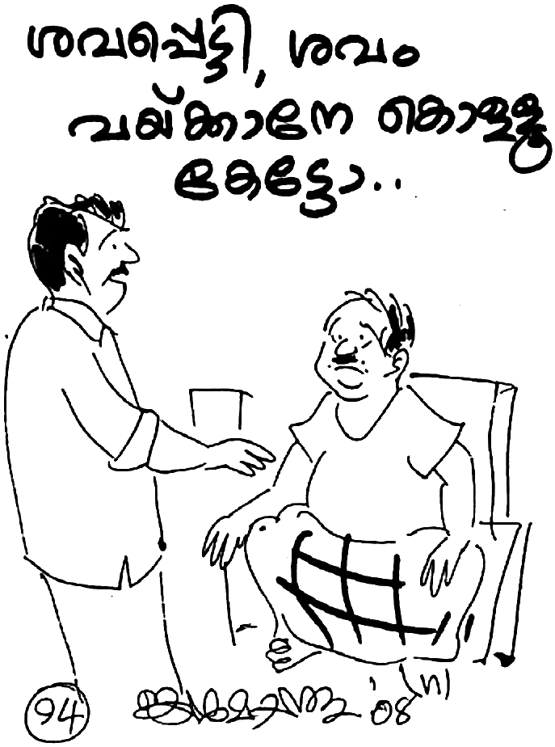അധികം താമസിയാതെ, ക്രിസ്ത്യാനികളെന്നു് അഭിമാനിക്കുന്ന ആ വീട്ടുകാർ ഒന്നിനു പുറകെ ഒന്നായി ആത്മഹത്യ ചെയ്തു. ഒരപകടം സംഭവിച്ചു കാലൊന്നു് ഒടിഞ്ഞാൽ ഒരു വീൽച്ചെയർ നമുക്കു് വാങ്ങേണ്ടി വന്നേക്കാം. എന്നാൽ, മുന്നു മാസം കഴിഞ്ഞാൽ അതിന്റെ ആവശ്യം നമുക്കില്ല. ഒരിക്കലും നടക്കാൻ കഴിയാത്ത ഒരു സാധു അതു് ചോദിച്ചാൽ ഒന്നുകിൽ നാം കച്ചവടക്കണ്ണോടുകൂടെ വില പേശും അല്ലെങ്കിൽ അതു സൂക്ഷിച്ചുവയ്ക്കും. ഈ മനോഭാവം എന്താണു് വിളിച്ചുപറയുന്നതു് ? എന്റെ വീട്ടിൽ ഇനിയും ആരെങ്കിലും കാലൊടിയാനോ തളരാനോ ഉണ്ടെന്നല്ലേ?
പ്രിയരേ, ഈ മനോഭാവം മാറാത്ത കാലത്തോളം ക്രിസ്തുവിന്റെ നാമം മഹത്വപ്പെടുകയില്ല. മറിച്ചു്, ദൈവനാമം ദുഷിക്കപ്പെടും. നമുക്കു മാനസാന്തരപ്പെടാം. സ്വാൎത്ഥത വലിയ പാപമാണു്. നാളേയ്ക്കു് സ്വരൂപിച്ചു വയ്ക്കാനല്ല, ഇന്നത്തെ ആവശ്യക്കാരനായി നമ്മുടെ കൈകൾ മലർക്കെ തുറക്കാം. നാളത്തെ ദിവസം തനിക്കായി വിചാരപ്പെടുമല്ലോ. ക്രിസ്തുവിന്റെ കൈകൾ കാണുക. തുറന്നിരിക്കുന്ന കൈകൾ!, പിടിച്ചടക്കാത്ത കൈകൾ! നിസ്വാൎത്ഥമായ കൈകൾ!
34
കൈതച്ചാലിൽ താമസം ആരംഭിച്ചതിനു ശേഷം പ്രശ്നങ്ങളും പ്രതികൂലങ്ങളും അനവധി ഉണ്ടായി. അതിലൊന്നും മുങ്ങിപ്പോകാതെ ദൈവം തന്റെ കരങ്ങളിൽ മോഹനനെയും കുടുംബത്തെയും വഹിച്ചു.
കാരുണ്യാഭവനു 11 സെൻറ്റ് ഭൂമിയാണുള്ളതു്. അടുത്ത വീട്ടിലെ പറമ്പു് വെറുതെ കിടക്കുന്നു. അനേക വൎഷമായി അവിടെ ആരും പണി എടുക്കുന്നില്ല. കുറച്ചു മരച്ചീനി (കപ്പ) കൃഷി ചെയ്യാൻ അവരോടു് അനുവാദം ചോദിച്ചു. അവർ അനുവദിക്കുകയും ചെയ്തു. 200 മൂടു് കപ്പ നടുന്നതിനു് 200 രൂപ കൂലി കൊടുക്കേണ്ടി വന്നു.
കൃഷി നന്നായി വന്നപ്പോൾ, അതു് വഴി പോകുന്ന സുവിശേഷ വിരോധികളായ ചെറുപ്പക്കാർ, രാത്രിയുടെ മറവിൽ ഒന്നും രണ്ടുമായി കപ്പ പിഴുതുകളയുവാൻ തുടങ്ങി. ഒരു വൎഷം 17 മൂടു് കപ്പ പിഴുതുകളഞ്ഞു. ഇതു് കണ്ട മോഹനനു വളരെ വിഷമമായി. “ദൈവമേ, ഞാൻ എന്തു് ചെയ്യേണ്ടു?” എന്ന ചോദ്യത്തിനു ദൈവം ഉത്തരം നൽകി: ”ശത്രുക്കളെ സ്നേഹിപ്പിൻ; നിങ്ങളെ ഉപദ്രവിക്കുന്നവൎക്കു് വേണ്ടി പ്രാൎത്ഥിപ്പിൻ.” യാതൊരു വ്യക്തിയോടും പരാതി പറയാതെ, അന്നുമുതൽ കപ്പ പിഴുതു കളയുന്നവൎക്കു് വേണ്ടി പ്രാൎത്ഥിച്ചു തുടങ്ങി.
ശേഷിച്ച കപ്പ വിളവെടുക്കാറായപ്പോൾ ദൈവാത്മാവു പറഞ്ഞു: “തിന്മയോടു് തോൽക്കാതെ നന്മയാൽ തിന്മയെ ജയിക്കുക” (റോമർ 12:21). “നിന്റെ ശത്രുവിനു വിശക്കുന്നു എങ്കിൽ അവനു തിന്മാൻ കൊടുക്കുക; ദാഹിക്കുന്നു എങ്കിൽ കുടിപ്പാൻ കൊടുക്കുക; അങ്ങനെ ചെയ്താൽ നീ അവന്റെ തലമേൽ തീക്കനൽ കുന്നിക്കും” (റോമർ 12:20).
മോഹനൻ ഇതനുസരിച്ചു. കപ്പ പിഴുതുകളയുന്ന അടുത്തു് തന്നെയുള്ള കോളനിയിലെ ചില ചെറുപ്പക്കാരുടെ ഭവനങ്ങളിൽ രണ്ടു് മൂടു് വീതം കപ്പ കൊടുക്കാൻ ദൈവം സഹായിച്ചു.
അടുത്ത വൎഷവും കൃഷി ചെയ്തു. ആ വൎഷം പത്തിൽ താഴെ മൂടു് കപ്പയേ പിഴുതുള്ളൂ. ആ വൎഷവും അവരുടെ ഭവനങ്ങളിലും അതിന്റെ ചുറ്റുമുള്ള പല വീടുകളിലും കപ്പ പുഴുങ്ങാൻ കൊടുത്തു.
മുന്നാമത്തെ വൎഷം ആരും കപ്പ പിഴുതില്ല. നമുക്കെതിരെ ദോഷം ചെയ്യുന്നവരെ പകയ്ക്കുന്നതിനു പകരം ദൈവവചനം നാം അനുസരിച്ചാൽ, ദൈവം തന്നെ കാൎയ്യങ്ങൾ ക്രമപ്പെടുത്തിക്കൊള്ളും. മേല്പറഞ്ഞ ദൈവ വചനം നാം അനുസരിച്ചാൽ നമുക്കു തിന്മയെ തോൽപിക്കാം. നമുക്കു് ചുറ്റും കാണുന്ന എല്ലാ പ്രശ്നങ്ങളുടെയും രാഷ്ട്രീയ, മത, വൎഗ്ഗ സംഘട്ടനങ്ങളുടെയും മൂലകാരണം ദൈവവചനം നാം അനുസരിക്കാത്തതാണു്. ഏതു് വിഷയത്തിനും പ്രപഞ്ചസ്രഷ്ടാവു് ഒരു പ്രതിവിധി കൽപിച്ചിട്ടുണ്ടു്. തിന്മയെ തോലപിക്കാനുള്ള ഏകമാൎഗ്ഗം, പകരം നന്മ ചെയ്യുക എന്നതാണു്. അതു് മാത്രമാണു് ഏക പോംവഴി.
“പ്രിയമുള്ളവരേ, നിങ്ങൾ തന്നെ പ്രതികാരം ചെയ്യാതെ ദൈവ കോപത്തിനു് ഇടംകൊടുപ്പിൻ; പ്രതികാരം എനിക്കുള്ളത്; ഞാൻ പകരം ചെയ്യും” എന്നു് റോമർ 12:19 ൽ അരുളി ചെയ്യുമ്പോൾ നാം എന്തിനു വ്യസനിക്കണം? ദൈവം കല്ലും മണ്ണും മരവും അല്ല; ദൈവം ദഹിപ്പിക്കുന്ന അഗ്നിയാണെന്നു് തിരുവചനം പറയുന്നു.
“ഒരിക്കൽ സുവിശേഷ വിരോധികൾ ഞങ്ങളുടെ കൂട്ടു് സഹോദരനെ കഠിനമായി മർദ്ദിച്ചപ്പോഴും ഞങ്ങൾ അവിടുത്തെ വചനത്തിൽ ആശ്രയം വച്ചു് “അവരോടു് കരുണ കാണിക്കണമേ” എന്നു് ദൈവത്തോടു് പ്രാൎത്ഥിക്കുക ആയിരുന്നു. എന്നാൽ കേവലം 15 മാസം കഴിഞ്ഞപ്പോൾ, അന്നു് ഉപ്രദവിക്കാൻ 12 പേൎക്കു് നേതൃത്വം കൊടുത്ത ആർ.എസ്.എസ്. കാൎയ്യവാഹക് ആയിരുന്നയാൾ തല ഛേദിക്കപ്പെട്ടവനായി ഇഹ ലോകവാസം വെടിഞ്ഞതു് ഞങ്ങളുടെ കണ്മുന്നിൽ കാണേണ്ടി വന്നു. അതിനു ശേഷം ആ സംഘടനയിൽപ്പെട്ടവർ ഞങ്ങളെ ഉപദ്രവിക്കാൻ തുനിഞ്ഞിട്ടില്ല.
“മറ്റനേകർ ഞങ്ങളുടെ പ്രാൎത്ഥനയ്ക്കു് പല തരം തടസ്സങ്ങൾ സ്രഷ്ടിച്ചെങ്കിലും, ഉപദ്രവിക്കുന്നവൎക്കു് വേണ്ടി പ്രാൎത്ഥിക്കുകയും അവരെ സ്നേഹിക്കുകയും ചെയ്തു കൊണ്ടു് ശത്രുത ഇല്ലാതാക്കാൻ ദൈവം ഞങ്ങൾക്കു് കൃപ നൽകി.”
കൈതച്ചാലിൽ താമസം ആക്കിയതിനു ശേഷം, യേശു ക്രിസ്തുവിലുള്ള വിശ്വാസം ഇഷ്ടപ്പെടാത്ത അയൽക്കാർ പ്രശ്നം ഉണ്ടാക്കി തുടങ്ങി. പലപ്പോഴും വീടു വളഞ്ഞു പ്രാൎത്ഥനയ്ക്കു് തടസ്സം ഉണ്ടാക്കി അസഭ്യം പറഞ്ഞു. എങ്കിലും, “നിങ്ങളുടെ ശത്രുക്കളെ സ്നേഹിക്കുവിൻ; ഉപ്രദവിക്കുന്നവൎക്കു് വേണ്ടി പ്രാൎത്ഥിക്കുവിൻ; ശപിക്കുന്നവരെ അനുഗ്രഹിക്കുവിൻ” എന്ന യേശു ക്രിസ്തുവിന്റെ കൽപ്പന അനുസരിച്ചു് ചുറ്റുപാടുമുള്ളവരോടു് പക ഇല്ലാതെ പെരുമാറാൻ മോഹനൻ നായർക്കും കുടുംബത്തിനും ദൈവം കൃപ നൽകി. അപ്പോൾ, ശത്രുത്വം ഇല്ലാതായിത്തുടങ്ങി.
മോഹനൻ നായർ പറയുന്നു: “എത്രത്തോളം അവർ ഞങ്ങൾക്കു് മുഖം തിരിച്ചു നടന്നുവോ അത്രത്തോളം അങ്ങോട്ടു് ചെന്നു് അവരോടു് സംസാരിച്ചു. ‘അവനിൽ വസിക്കുന്നു എന്നു് പറയുന്നവൻ അവൻ നടന്നതു് പോലെ നടക്കേണ്ടതാകുന്നു’ (1 യോഹ. 2:6). ഈ വചനം പ്രമാണിച്ചാൽ, ഒരിക്കലും ലാഘവബുദ്ധിയോടെ ഒരു കാൎയ്യത്തെയും സമിപിക്കുകയില്ല എന്നതു് നിശ്ചയമാണു്.
“ഭൂമിയിലെ യാതൊരു മനുഷ്യനോടും ഒരു ക്രിസ്തു ശിഷ്യനു പോരാട്ടം ഇല്ല. നമ്മുടെ മുമ്പിൽ വരുന്ന ഏതൊരു വിഷയത്തിലും ഒരു മനുഷ്യനെയാണു് നാം എതിരാളിയായി കാണുന്നതെങ്കിൽ, നമുക്കു് തെറ്റിയിരിക്കുന്നു. സാധാരണ മനുഷ്യർ കാണുന്നതു് തന്നെയാണു് നാം കാണുന്നതു്. ദീർഘവീക്ഷണം ഉള്ളവരായി ആത്മാവിന്റെ കാഴ്ചപ്പാടുള്ളർ ആണെങ്കിൽ ആർ എതിൎത്താലും അതിന്റെ പിന്നിൽ പ്രവൎത്തിക്കുന്ന ആത്മാവിനെ നമുക്കു് കാണാൻ സാധിക്കും. ‘നമുക്കു് പോരാട്ടമുള്ളതു് ജഡരക്തങ്ങളോടല്ല’ എന്ന എഫെസ്യ ലേഖനം 6:12 എന്ന വചനം നാം ഓർക്കേണം.
കഴിഞ്ഞ ഏഴു് വൎഷം മുമ്പാണു് ഈ ദൈവവചന സത്യം എനിക്കു വെളിപ്പെട്ടതു്. അതിനു ശേഷം യാതൊരു മനുഷ്യനോടും എതിൎക്കുവാൻ ദൈവം ഇടവരുത്തിയില്ല. ഞാൻ ഇങ്ങനെ പറയും: ‘ഈ വരുന്ന മനുഷ്യൻ ജഡരക്തം ഉള്ളവനാണോ? എങ്കിൽ എനിക്കു് അദ്ദേഹത്തോടു് പോരാട്ടമില്ല.’ നമ്മുടെ പോരിന്റെ ആയുധമോ ജഡികങ്ങളുമല്ല.”
35
കാരുണ്യാഭവനിൽ വൈദ്യുതിയുണ്ടെങ്കിലും ഫാനില്ലായിരുന്നു. ഫാൻ വാങ്ങാൻ പണവുമില്ല. വേനൽക്കാലമായി, അസഹ്യമായ ചൂട്. ചൂടു് സഹിക്കാനാവാതെ മോഹനൻ നായർ പുറത്തിറങ്ങിയിരിക്കും. (മലബാറിൽ താരതമ്യേന ചൂടു് കൂടുതലാണു്.)
ഒരു ദിവസം മോഹനൻ നായർ കിടക്കയിൽ കിടന്നു കൊണ്ടു് പ്രാൎത്ഥിച്ചു; “കൎത്താവേ, ചൂടു് സഹിക്കാൻ വയ്യാ; ഒരു ഫാൻ കിട്ടിയാൽ നന്നായിരുന്നു.”
അതിനു ശേഷം മോഹനൻ നായർക്കു് കണ്ണൂരിലേക്കു് പോകേണ്ടതുണ്ടായിരുന്നു; മാനസിക രോഗിയായ ഒരു സഹോദരിക്കു് വേണ്ടി പ്രാൎത്ഥിക്കാൻ. മുന്നു ദിവസത്തെ ഉപവാസ പ്രാൎത്ഥന ആയിരുന്നു അവിടെ.
തലേദിവസം രണ്ടു് ചെറുപ്പക്കാർ ഫാനുമായി കാരുണ്യാഭവനിലെത്തി. അവിടെ ആരെയും കാണാനില്ല. അടുത്ത വീട്ടിൽ അന്വേഷിച്ചു. ആ വീട്ടുകാരുടെ കൈവശം താക്കോൽ കൊടുത്തിട്ടാണു് മോഹനനും ഭാൎയ്യയും കണ്ണൂരിലേക്കു് പോയതു്. താക്കോൽ ആ വീട്ടുകാരിൽ നിന്നു് വാങ്ങി ഈ സഹോദരന്മാർ ഫാൻ ഫിറ്റു ചെയ്തിട്ടു് പോയി!
ദൈവം പ്രാൎത്ഥന കേൾക്കുന്നവനും മറുപടി നൽകുന്നവനുമാണു്. ആവശ്യങ്ങൾ സ്തോത്രത്തോടെ അറിയിക്കുക. ദൈവം പ്രവൎത്തിക്കും. ‘നാം ചോദിക്കുന്നതിലും നിനയ്ക്കുന്നതിലും (ചിന്തിക്കുന്നതിലും) അത്യന്തംപരമായി ചെയ്യുവാൻ നമ്മിൽ വ്യാപരിക്കുന്ന ശക്തിയാൽ കഴിയുന്നവനു് ’ എന്നാണു് എഫെസ്യർ 3:20ൽ പറഞ്ഞിരിക്കുന്നതു്. അപ്പൊസ്തലനായ പൌലൊസ് പറയുന്നതു്,
“സന്തോഷിപ്പിൻ; സന്തോഷിപ്പിൻ എന്നു് ഞാൻ വീണ്ടും പറയുന്നു. നിങ്ങളുടെ സൗമ്യത സകല മനുഷ്യരും അറിയട്ടെ; കൎത്താവു് വരുവാൻ അടുത്തിരിക്കുന്നു. ഒന്നിനെ കുറിച്ചും വിചാരപ്പെടരുത്; എല്ലാറ്റിലും പ്രാൎത്ഥനയാലും അപേക്ഷയാലും നിങ്ങളുടെ ആവശ്യങ്ങൾ സ്തോത്രത്തോടു് കൂടെ (എന്നു് വച്ചാൽ നന്ദി നിറഞ്ഞ ഹൃദയത്തോടു് കൂടെ) ദൈവത്തോടു് അറിയിക്കുകയത്രേ വേണ്ടതു്. എന്നാൽ സകല ബുദ്ധിയെയും കവിയുന്ന ദൈവസമാധാനം നിങ്ങളുടെ ഹൃദയങ്ങളെയും നിനവുകളെയും ക്രിസ്തു യേശുവിങ്കൽ കാക്കും.” (ഫിലിപ്പിയർ 4:4-7)
“എന്റെ ദൈവമോ നിങ്ങളുടെ ബുദ്ധിമുട്ടു് ഒക്കെയും മഹത്വത്തോടെ തന്റെ ധനത്തിനൊത്തവണ്ണം ക്രിസ്തു യേശുവിൽ പൂൎണ്ണമായി തീൎത്തു് തരും.” ഫിലിപ്പിയർ 4:19
രാത്രിയിൽ വന്നു് വീടു് തുറന്നപ്പോൾ കണ്ട കാഴ്ച മോഹനനെയും കുടുംബത്തെയും അത്ഭുതപ്പെടുത്തി. മുറിയിൽ ഫാൻ ഘടിപ്പിച്ചിരിക്കുന്നു! മോഹനൻ ഉച്ചത്തിൽ ദൈവത്തെ സ്തുതിച്ചു. എങ്ങനെ സ്തുതിക്കാതിരിക്കും? കഴിഞ്ഞ അഞ്ചു് വൎഷമായി ഇവിടെ താമസം തുടങ്ങിയിട്ടു്. ഉയരം കുറഞ്ഞ കൊച്ചു വീട്ടിൽ ഷീറ്റു് മേഞ്ഞ മേൽക്കൂരയ്ക്കു് കീഴിൽ രാവിലെ പത്തു് മണി കഴിയുമ്പോഴേക്കും അസഹ്യമായ ചൂട്. എഴുന്നേറ്റു പുറത്തു് പോകാൻ വയ്യ. തിരിഞ്ഞും മറിഞ്ഞും കിടക്കുമ്പോൾ വിയൎത്തു് കുളിക്കും. രാത്രി അതിലും ഭയങ്കരമായ ഉഷ്ണം. അല്പസമയം ത്രീവീലർ സൈക്കിളിൽ പുറത്തു് പോയി വല്ല മരത്തണലിലും ഇരിക്കാം എന്നുവച്ചാൽ വൃണം നിമിത്തം കഴിയില്ല. എല്ലാം കൊണ്ടും അസഹ്യമായ സാഹചര്യത്തിൽ ഹൃദയം വേദനിച്ചു.
ഇതു് വായിക്കുന്ന സഹോദരാ, താങ്കൾക്കു് ഒരു ഫാനിന്റെ ആവശ്യമുണ്ടെങ്കിൽ വേഗം അതിനുള്ള പണം അന്വേഷിക്കും. ലഭിച്ചാൽ, കടയിൽ പോയി ഒരു ഫാൻ വാങ്ങിക്കും. ഇതല്ലേ സംഭവിക്കുക? എന്നാൽ ഇതിനൊന്നും കഴിവില്ലാത്ത മോഹനൻ ഒരു കുഞ്ഞിനെ പോലെ ദൈവത്തോടു് കാൎയ്യം പറഞ്ഞു. ദൈവം ഫാനിനുള്ള രൂപ നൽകുക അല്ല ചെയ്തതു്. ഫാൻ തന്നെ നൽകി. ദൈവത്തിന്റെ കരുതൽ ഇങ്ങനെ ഒക്കെയാണു്.
“ദൈവം എന്നു് കേൾക്കുമ്പോൾ തന്നെ മനുഷ്യന്റെ ഭൗമിക ആവശ്യങ്ങൾ നിറവേറ്റി കൊടുക്കുന്ന ഒരു വ്യക്തിയാണെന്നാണു് ധരിക്കുന്നതു്. എന്നാൽ അതല്ല സത്യം. ദൈവവചനം പറയുന്നതു് ആദ്യം നാം അവന്റെ രാജ്യവും നീതിയും അന്വേഷിക്കേണം എന്നാണു്. അതോടുകൂടെ ഭൗതികമായ ആവശ്യങ്ങളും ലഭിക്കും എന്നത്രേ.
“എന്നാൽ ഇന്നു് ദൈവത്തിൽ വിശ്വസിക്കുന്നു എന്നു് പറയുന്ന സഭകളുടെയും സംഘടനകളുടെയും അവസ്ഥ എന്താണു് ? ദൈവം അനുഗ്രഹിക്കുന്നവനാണു് എന്നു് പ്രസംഗിക്കുകയും മനുഷ്യനോടു് സഹായം അഭ്യൎത്ഥിക്കുകയും ചെയ്യുന്നു. എന്തുകൊണ്ടു് ഇങ്ങനെ സംഭവിക്കുന്നു?
“ഒറ്റ കാൎയ്യമാണു് ഇതിന്റെ പിന്നിൽ. മനുഷ്യർ ദൈവ വചനം അനുസരിക്കുന്നില്ല. അതുകൊണ്ടു് ക്രിസ്ത്യാനികളെന്നു് അഭിമാനിക്കുന്നവരെ നോക്കി നിരീശ്വരവാദികളായ രാഷ്ട്രീയക്കാർ പോലും പരിഹസിക്കാൻ തുടങ്ങി. ‘വിശ്വാസം യേശുവിലും ആശ്വാസം കീശയിലും.’ ഇതെത്ര ദുഃഖകരമാണു്.
“നമ്മുടെ ദൈവം ബലഹീനനായി പോയോ? ഇല്ല. “രക്ഷിപ്പാൻ കഴിയാതവണ്ണം അവിടുത്തെ കൈ കുറുകി പോയിട്ടില്ല. കേൾക്കാൻ കഴിയാതവണ്ണം അവിടുത്തെ ചെവി മൗനമായിട്ടുമില്ല, നമ്മുടെ അകൃത്യങ്ങളത്രേ (പാപങ്ങൾ) ദൈവം നമ്മുടെ പ്രാൎത്ഥന കേൾക്കാതവണ്ണം തടസ്സം ആയിരിക്കുന്നതു്.”
“നമ്മുടെ മുൻഗണനാ ക്രമം മാറേണ്ടിയിരിക്കുന്നു. ഭൗതിക നേട്ടങ്ങൾക്കു വേണ്ടി ആത്മീയത അന്വേഷിക്കുക അല്ല. മറിച്ചു്, ആത്മീയ അഭിവൃദ്ധിക്കായി നാം ദൈവത്തോടു് അടുത്തു് ചെല്ലുക. ‘സ്വൎഗ്ഗത്തിലെ സകല ആത്മീയ അനുഗ്രഹത്താലും ക്രിസ്തു യേശുവിൽ നമ്മെ അനുഗ്രഹിച്ചിരിക്കുന്ന ദൈവത്തിനു സ്തോത്രം’ എന്നാണു് ബൈബിളിൽ എഴുതിയിരിക്കുന്നതു് (എഫെസ്യ ലേഖനം 1:3). സകല ആത്മീയ അനുഗ്രഹങ്ങളും ക്രിസ്തുവിലാണുള്ളതു്. ആയതിനാൽ യോഹന്നാൻ 1:16 ഇങ്ങനെ പറയുന്നു: ‘അവന്റെ (യേശുവിന്റെ) നിറവിൽ നിന്നു് നമുക്കു് എല്ലാവൎക്കും കൃപമേൽ കൃപ ലഭിച്ചിരിക്കുന്നു.’ അപ്പോൾ നാം എന്താണു് മനസ്സിലാക്കേണ്ടതു് ? ദൈവത്തിൽ നിന്നു് പുറപ്പെട്ട ദൈവവചനം തന്നെ ആയിരിക്കുന്ന വചനം ജഡമായി തീൎന്ന ദൈവപുത്രനായ യേശുവിൽ സകലവിധ അനുഗ്രഹങ്ങളും നിറച്ചിട്ടാണു് ഭൂമിയിലേക്കു് അവതരിപ്പിച്ചതു്. ഇനി നിങ്ങൾക്കു് ആത്മീയമോ ഭൗതികമോ എന്തു് തന്നെ വേണമോ, എല്ലാം യേശു ക്രിസ്തുവിലുണ്ടു്. അവനെ ആരു് സ്വീകരിക്കുമോ, അതോടു് കൂടെ ഇതെല്ലാം ലഭിക്കും.
“എന്റെ കഴിഞ്ഞ 35 വൎഷത്തെ ക്രിസ്തുവിനോടു് കൂടെയുള്ള ജീവിതത്തിൽ ബൈബിളിലെ ഒറ്റ വചനം പോലും അവിശ്വസിക്കേണ്ടി വന്നിട്ടില്ല. “എന്റെ വചനം നിങ്ങളിലും നിങ്ങൾ എന്നിലും വസിക്കുന്നു എങ്കിൽ നിങ്ങൾ ഇച്ഛിക്കുന്നതു് എന്തു് അപേക്ഷിച്ചാലും അതു് നിങ്ങൾക്കു് കിട്ടും” എന്നു് യേശു (യോഹന്നാൻ 15:7ൽ) അരുളി ചെയ്യുമ്പോൾ, എന്തുകൊണ്ടു് ഒരു ക്രിസ്തു വിശ്വാസി ഇന്നു് പരാതിയും പരിഭവവും നിരാശയും കൊണ്ടു പൊറുതിമുട്ടേണ്ടി വരുന്നു?
അതിനു യാക്കോബു് നാലാം അദ്ധ്യായത്തിൽ ഉത്തരം ലഭിക്കുന്നു: “നിങ്ങളിൽ ശണ്ഠയും കലഹവും എവിടെ നിന്നു് ? നിങ്ങളുടെ അവയവങ്ങളിൽ പോരാടുന്ന ഭോഗേച്ഛകളിൽ നിന്നല്ലയോ? നിങ്ങൾ മോഹിച്ചിട്ടും പ്രാപിക്കുന്നില്ല; നിങ്ങൾ കൊല്ലുകയും അസൂയപ്പെടുകയും ചെയ്തിട്ടും ഒന്നും സാധിക്കുന്നില്ല; നിങ്ങൾ കലഹിക്കുകയും ശണ്ഠയിടുകയും ചെയ്തിട്ടും യാചിക്കായ്ക കൊണ്ടു കിട്ടുന്നില്ല. നിങ്ങൾ യാചിക്കുന്നു എങ്കിലും നിങ്ങളുടെ ഭോഗങ്ങളിൽ ചെലവിടേണ്ടതിനു വല്ലാതെ യാചിക്ക കൊണ്ടു് ഒന്നും ലഭിക്കുന്നില്ല” (യാക്കോബു് 4:1-3).
“നിങ്ങൾ എന്റെ നാമത്തിൽ എന്തു് യാചിച്ചാലും ലഭിക്കും” എന്നു് യേശു പറയുമ്പോൾ, ദൈവം തന്റെ ശിഷ്യഗണത്തെ വിശ്വാസത്തിൽ എടുത്തുകൊണ്ടാണു് ഇതു പറയുന്നതു്. ഒരു യഥാൎത്ഥ ക്രിസ്തു ശിഷ്യൻ ദൈവഹിതം അല്ലാത്ത യാതൊന്നും അപേക്ഷിക്കയില്ലെന്നതു് തർക്കമറ്റ സംഗതിയാണു്.”
പണം ഇല്ലാതെ വിഷമിച്ച പല സന്ദർഭങ്ങൾ ഉണ്ടായിരുന്നു. അരി വാങ്ങാൻ പോലും നിവൃത്തി ഇല്ല. അരി, മണ്ണെണ്ണ എന്നിവ റേഷൻ കടയിൽ നിന്നു് വാങ്ങണം. ആകെ ഇരുപത്തഞ്ചു് രൂപയുണ്ടു്. ചായ കടയിൽ ഒരു രൂപ കൊടുക്കാനുള്ളതു കൊടുത്തു കഴിഞ്ഞപ്പോൾ ഇരുപത്തിനാലായി.
മോഹനൻ നായർ ട്രൈസൈക്കിളിൽ റേഷൻ കടയിലെത്തി. കടക്കാരൻ പറഞ്ഞും: “നിൽക്കു്, ഇവൎക്കു് കൊടുത്തിട്ടു് തരാം” (ചിലർ റേഷൻ വാങ്ങാൻ കടയിൽ നിൽക്കുന്നുണ്ടായിരുന്നു).
സാധാരണയായി ആദ്യമേ തന്നെ മോഹനൻ നായർക്കു് റേഷൻ കൊടുക്കുകയാണു് ചെയ്യാറു്. എന്നാൽ, അന്നു് ആ പതിവിനു വിപരീതമായാണു് കടക്കാരൻ പെരുമാറിയതു്. എട്ടു് പേൎക്കു് സാധനം കൊടുക്കുന്നതു് വരെ മോഹനൻ നായർ സൈക്കിളിലിരുന്നു.
ഉടനെ ഒരു ആർ.എസ്.എസ്. നേതാവു് ആ വഴി വന്നു. ഒരു മാനസിക രോഗിക്കു വേണ്ടി പ്രാൎത്ഥിച്ചതിനാൽ ആ രോഗിയുടെ ബന്ധുക്കൾ മോഹനൻ നായരെ മുമ്പു് അസഭ്യം പറഞ്ഞിരുന്നു. അക്കൂട്ടത്തിൽ ഇദ്ദേഹത്തിന്റെ ബന്ധുക്കളും ഉണ്ടായിരുന്നു.
“നിങ്ങൾക്കു് ചില വിഷമങ്ങളൊക്കെ ഉണ്ടായോ?” ഈ നേതാവു മോഹനനോടു് ചോദിച്ചു.
“അതു് നമുക്കു് പറഞ്ഞിട്ടുള്ളതല്ലേ. യേശുവിന്റെ പ്രതി ഇതൊക്കെ സഹിക്കണം.” മോഹനൻ നായർ മറുപടി നൽകി.
ആ മനുഷ്യന്റെ കണ്ണുകൾ നിറഞ്ഞു തുളുമ്പുന്നതു് മോഹനൻ കണ്ടു. പെട്ടെന്നു് ആരുമറിയാതെ നൂറു രൂപ മോഹനന്റെ പോക്കറ്റിലിട്ടിട്ടു് ആ മനുഷ്യൻ നടന്നു നീങ്ങി. റേഷൻ കടക്കാരൻ “പിന്നെത്തരാം” എന്നു് പറഞ്ഞതിന്റെ പിന്നിലെ രഹസും അപ്പോഴാണു് മനസ്സിലായതു്. നേരത്തേ റേഷൻ തന്നിരുന്നെങ്കിൽ അരിയും മണ്ണെണ്ണയും മൊത്തമായി വാങ്ങാൻ പണം തികയില്ലായിരുന്നു. ഇപ്പോഴിതാ, മുഴുവൻ സാധനങ്ങളും വാങ്ങി കഴിഞ്ഞും പണം മിച്ചം വന്നു!
“ദൈവത്തെ സ്നേഹിക്കുന്നവൎക്കു, നിൎണ്ണയ പ്രകാരം വിളിക്കപ്പെട്ടവൎക്കു (ദൈവം വിളിച്ചു വേർതിരിച്ചവൎക്കു) സംഭവിക്കുന്നതെല്ലാം നന്മയ്ക്കാണു് ” എന്ന വാക്യം ഇവിടെ ഓർക്കണം. ദൈവം തന്റെ മക്കൾക്കു് ഒരു ദോഷവും ചെയ്യുന്നവനല്ല. തിന്മ ഭവിക്കുമ്പോഴും അതു് നന്മയാക്കി തീൎക്കുന്നവനാണു് ദൈവം. അതു് വിശ്വസിക്കുന്നവൎക്കു് മാത്രമേ അനുഭവം ആക്കാൻ കഴിയൂ.
ഒട്ടുമിക്ക ദൈവവേലക്കാരും മോഹനൻ നായരുടെ കാരുണ്യാഭവനിൽ വന്നിട്ടുണ്ടു്. ഇന്ത്യൻ ഇവാഞ്ജലിക്കൽ റ്റീമിന്റെ ഉപദേഷ്ടാവായ പി.ജി. വൎഗ്ഗീസും ഒരിക്കൽ അവിടെ എത്തി. ഒരു യോഗം കഴിഞ്ഞു് രാത്രി ഒരുമിച്ചു് കാറിൽ വരികയാണു്. മോഹനൻ നായർ യോഗത്തിൽ സാക്ഷ്യം പറഞ്ഞിരുന്നു. മാൎഗ്ഗമദ്ധ്യേ രാത്രിയിൽ മോഹനൻ നായർ ഛർദ്ദിച്ചു. മകൻ ജയപ്രകാശ് അന്നു കുഞ്ഞാണു്.
വൎഗ്ഗീസ് സാർ കുഞ്ഞിനെ കയ്യിൽ വാങ്ങിയിട്ടു് മോഹനന്റെ പുറം തിരുമ്മി കൊടുത്തു. കാരുണ്യാഭവനിലേക്കു് കാറു് വരിക ഇല്ല. മോഹനൻ നായർ വൎഗ്ഗീസ് സാറിനെ വീട്ടിലേക്കു് ക്ഷണിച്ചു. എം.ഐ. ഈപ്പനെന്ന കൎത്തൃദാസനും കാറിലുണ്ടായിരുന്നു. ഈപ്പൻ ക്ഷീണം നിമിത്തം കാറിലിരുന്നു് ഉറങ്ങി പോയി.
ഉടനടി വൎഗ്ഗീസ് സാർ മോഹനൻ നായരുടെ കൂടെ വീട്ടിലെത്തി. വീടിനോടു ചേൎന്നു വിശാലമായ ഒരു മുറി പണിയാനുണ്ടായിരുന്നു. പി.ജി. വൎഗ്ഗീസ് ഇഷ്ടികകളുടെ മേൽ കൈവച്ചു കൊണ്ടു് മുറി പണിയുന്നതിനു വേണ്ടി പ്രാൎത്ഥിച്ചു (പണം ഇല്ലാതെ പണി മുടങ്ങി കിടക്കുക ആയിരുന്നു). വൎഗ്ഗീസ് സാർ വന്നു പോയതിന്റെ അടുത്തയാഴ്ച മുറി പണിയാനുള്ള പണം ലഭിച്ചു—പതിനായിരം രൂപ! കോട്ടയത്തുള്ള എ.കെ. സ്കറിയാ സാറിന്റെ ഒരു സ്നേഹിതനായിരുന്നു ആ പണം നൽകിയതു്. അദ്ദേഹത്തിന്റെ പേരറിഞ്ഞുകൂടാ.
അടുത്ത വൎഷം പി.ജി. വൎഗ്ഗീസ് നാട്ടിലെത്തിയപ്പോൾ മോഹനൻ അദ്ദേഹത്തെ ക്ഷണിച്ചു. ക്ഷണം സ്വീകരിച്ച വൎഗ്ഗീസ് സാർ കാരുണ്യാഭവനിലെത്തി. പുതുതായി പണിത മുറിയിൽ പത്തുനാൽപതു് പേർ കൂടിയിരിപ്പുണ്ടു്. വൎഗ്ഗീസ് സാർ തുള്ളിച്ചാടി കൊണ്ടു് ദൈവത്തെ സ്തുതിച്ചു. ഇരുപത്തിമൂന്നാം സങ്കീൎത്തനം വായിച്ചു പ്രസംഗിച്ചു. പി.ജി. വൎഗ്ഗീസിനു “സ്പെഷ്യൽ” ഭക്ഷണം കൊടുക്കണം എന്നായിരുന്നു സംഘാടകർ (വൎഗ്ഗീസിന്റെ കൂത്തുപറമ്പു് പ്രസംഗത്തിന്റെ ഭാരവാഹികൾ) മോഹനനു നൽകിയ നിർദ്ദേശം. മോഹനൻ നായർ അതു് സമ്മതിച്ചു.
പിന്നെ വീട്ടിലെത്തി ഭാൎയ്യ തങ്കമണിയോടു് പറഞ്ഞു; “വൎഗ്ഗീസ് സാർ മലയാളിയാണു്. കേരളത്തിൽ നിന്നു് പോയ ആളാണു്. ആണ്ടിലൊരിക്കലാണു് കേരളത്തിൽ വരുന്നതു്. കുറച്ചു കപ്പ വേവിക്കു്, കോഴിയിറച്ചി കറിവയ്ക്കു്, കുറെ ചോറും കരുതിക്കോ—വൎഗ്ഗീസ് സാർ കഴിച്ചോളും.”
വൎഗ്ഗീസ് സാർ ഭക്ഷണം കഴിക്കാനിരുന്നു. യോഗ സംഘാടകർ പറഞ്ഞതു പോലെയുള്ള ‘സ്പെഷ്യൽ’ ആഹാരം—കപ്പ വേവിച്ചതും കോഴിക്കറിയും. വൎഗ്ഗീസ് സാർ കപ്പയും ഇറച്ചിയും കഴിച്ചിട്ടു് പോയി.
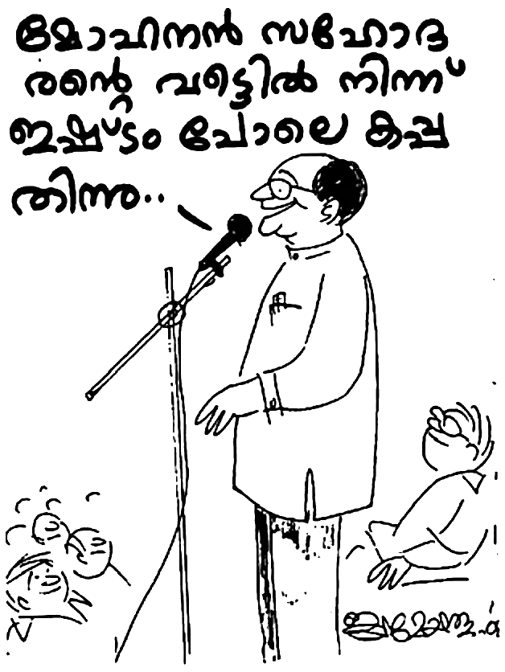വൈകിട്ടു് കൂത്തുപറമ്പിൽ പ്രസംഗിച്ചപ്പോൾ വൎഗ്ഗീസ് സാർ പറഞ്ഞു: “ഒത്തിരി നാളായി കപ്പ തിന്നിട്ടു്. ഇന്നു് മോഹനൻ സഹോദരന്റെ വീട്ടിൽ നിന്നു് ഇഷ്ടം പോലെ കപ്പ തിന്നു.”
36
സത്യമേവ ജയതേ’ എന്നാണു് ഇന്ത്യയുടെ ആപ്തവാക്യം. പക്ഷേ സത്യം എവിടെ എങ്കിലും പാലിക്കുന്നുണ്ടോ എന്നു് ചോദിച്ചാൽ എന്താണു് പറയുക? ഭരണാധികാരികളും ഉദ്യോഗസ്ഥന്മാരും പൊലീസ് അധികാരികളും ഒക്കെ എത്രമാത്രം സത്യസന്ധരാണെന്നു് സംശയിക്കേണ്ട സ്ഥിതിവിശേഷം ആണിന്നു്.
മോഹനൻ ജീവിതത്തിൽ നേരിട്ട ഒരു പരീക്ഷയെ കുറിച്ചാണു് താഴെ പറയുന്നതു്. മോഹനൻ വിശ്വാസ ജീവിതത്തിൽ പ്രവേശിച്ചിട്ടു് ഒമ്പതു് വൎഷമായി. കാരുണ്യാഭവനിൽ വൈദ്യുതി ഇല്ലായിരുന്നു. വികലാംഗനായ മോഹനനു വൈദ്യുതി കിട്ടാനുള്ള മുൻഗണനയുണ്ടു്. എന്നാൽ, നമ്മുടെ നാട്ടിലെ ഒരു ‘രീതി’ ആയ കൈക്കൂലി കൊടുക്കാഞ്ഞതിനാൽ മോഹനന്റെ മുൻഗണന അവഗണന ആയിപ്പോയി.
അങ്ങനെയിരിക്കെ ഒരു ദിവസം പെട്ടെന്നു് തന്നെ ഇലക്ട്രിക് പോസ്റ്റ് കുഴിച്ചിട്ടു് ലൈൻ വലിച്ചു. കണക്ഷൻ മാത്രം കിട്ടിയില്ല. വൈദ്യുതി ലഭിച്ചാൽ പിന്നെ റേഷൻ കടയിൽ നിന്നു് മണ്ണെണ്ണ കിട്ടുകയില്ലെന്നു് മോഹനൻ കരുതി.
ആ മാസത്തെ മണ്ണെണ്ണ വാങ്ങാൻ മോഹനൻ റേഷൻ കടയിലെത്തി. കടയിൽ മണ്ണെണ്ണ തീൎന്നു പോയിരുന്നു. റേഷൻ കടക്കാരൻ മോഹനനോടു് പറഞ്ഞു: “ഇന്നു വൈകുന്നേരമേ മണ്ണെണ്ണ വരികയുള്ളൂ.”
മോഹനൻ കടക്കാരനോടു് പറഞ്ഞു: “കാർഡിൽ ചേൎത്തു് കൊള്ളു, ഞാൻ പിന്നെ വാങ്ങി കൊള്ളാം.”
അങ്ങനെ പറഞ്ഞതിനു് ഒരു കാരണമുണ്ടു്. അടുത്ത ദിവസം വൈദ്യുതി ലഭിച്ചാൽ, തുടൎന്നു മണ്ണെണ്ണ കിട്ടിയില്ലെങ്കിലോ? ദുഃഖം എന്നു് പറയട്ടെ, മൂന്നാം ദിവസമേ കടയിൽ മണ്ണെണ്ണ വന്നുള്ളൂ.
ഇതിനിടയ്ക്കു് കാരുണ്യാഭവനിൽ വൈദ്യുതി കിട്ടി. കാർഡിൽ ചേൎത്ത മണ്ണെണ്ണ വാങ്ങാൻ മോഹനൻ സൈക്കിൾ കറക്കി കടയിലെത്തി.
“മോഹനേട്ടാ, നിങ്ങൾക്കു് കറണ്ടു് കിട്ടിയില്ലേ?” മണ്ണെണ്ണ അളന്നു കൊണ്ടിരിക്കെ കടക്കാരൻ മോഹനനോടു് അപ്രതീക്ഷിതമായി ചോദിച്ചു.
മോഹനനു വൈദ്യുതി കണക്ഷൻ കിട്ടിയ കാൎയ്യം അദ്ദേഹത്തിനു് അറിയുകയേ ഇല്ല. അതുവരെ സത്യം മാത്രം സംസാരിച്ചു പോന്ന മോഹനൻ ആ അപ്രതീക്ഷിതമായ ചോദ്യത്തിനു മുമ്പിൽ ഒന്നു പകച്ചു. പെട്ടെന്നു് മോഹനൻ പറഞ്ഞു: “കിട്ടിയില്ല.”
കടക്കാരൻ മണ്ണെണ്ണ അളന്നു മോഹനന്റെ കയ്യിൽ കൊടുത്തു. പക്ഷേ മോഹനന്റെ ഉള്ളിൽ കുറ്റബോധം തിങ്ങി വിങ്ങി. മൂന്നു ലിറ്റർ മണ്ണെണ്ണയ്ക്കു് വേണ്ടി വ്യാജം പറഞ്ഞുവോ എന്ന ദൈവശബ്ദം ഹൃദയത്തിൽ മുഴങ്ങി. മൂന്നു ലിറ്റർ മണ്ണെണ്ണയ്ക്കു് മുന്നിൽ സത്യം എന്ന അരക്കച്ച (ബെൽറ്റ) ജീവിതത്തിൽ നിന്നു് നീക്കിയതിന്റെ പാപബോധം അപാരമായിരുന്നു. ‘ഒരു നിസ്സാര കാൎയ്യത്തിനു് എന്നെ വിശ്വസിക്കാൻ നിനക്കു് എന്തുകൊണ്ടു് കഴിഞ്ഞില്ല?’ എന്ന ചോദ്യം ദൈവം മോഹനനോടു് ചോദിച്ചു.
മോഹനൻ നായർ നമ്മോടു് പറയുന്നതു് ശ്രദ്ധിക്കുക: “നമ്മുടെ എല്ലാവരുടെയും അവസ്ഥയാണിതു്. വലിയ കാൎയ്യങ്ങൾക്കു് നാം ദൈവത്തെ വിശ്വസിക്കും. എന്നാൽ, ചെറിയ കാൎയ്യത്തിനു നാം പരാജയപ്പെടും.”
ദൈവ ശബ്ദത്തിനു മുന്നിൽ പതറിയ മോഹനൻ നായർ കരച്ചിലടക്കാൻ പാടുപെട്ടു. ആ മണ്ണെണ്ണ സയനൈഡ് വിഷം പോലെ മോഹനനു തോന്നി; അതു് നിലത്തൊഴിച്ചു കളഞ്ഞാലോ എന്നു് ചിന്തിച്ചു. സൈക്കിൾ കറക്കി വിജനമായ ഒരിടത്തു് എത്തിയ മോഹനൻ അവിടെ ഇരുന്നു പൊട്ടിക്കരഞ്ഞു. ഒമ്പതു് വൎഷം പരിപാലിച്ച ദൈവത്തെ ദുഃഖിപ്പിച്ചല്ലോ എന്ന ചിന്തയിൽ ഏങ്ങിയേങ്ങി കരഞ്ഞു. തന്റെ ഉള്ളിൽ വസിക്കുന്ന കൎത്താവിനോടു്, ക്ഷമിക്കേണമേ എന്നു് ഹൃദയം നൊന്തു് കരഞ്ഞു് അപേക്ഷിച്ചു. വീട്ടിലെത്തിയിട്ടും മോഹനന്റെ ദുഃഖത്തിനു ശമനം ഉണ്ടായില്ല.
മോഹനൻ പറയുന്നു: “എന്റെ കൂടപ്പിറപ്പേ, ഈ സത്യം നിങ്ങളുടെ മുമ്പിൽ ഞാൻ പച്ചയായി വിവരിക്കട്ടെ. എന്റെ ജീവിതത്തിൽ സംഭവിച്ച ഈ വീഴ്ച നിങ്ങൾക്കും പാഠമായിരിക്കട്ടെ. ശത്രുവിന്റെ (പിശാചിന്റെ) മുമ്പിൽ ഉറച്ചു നിന്നു് പോരാടണമെങ്കിൽ സത്യം എന്ന അരക്കച്ച അരയിൽ മുറുകിയിരിക്കണം. എന്തുകൊണ്ടാണു് നമുക്കു് പാപത്തെ ജയിക്കാൻ കഴിയാത്തതു് ? നാം ചെറിയ കാൎയ്യങ്ങളിൽ വിശ്വസ്തരല്ല. അതുകൊണ്ടു് ദൈവം നമ്മെ അധികത്തിനു വിചാരകരാക്കുന്നില്ല.
“ഞാൻ ദൈവത്തെ അറിയാതിരുന്ന കാലത്തു് ഏതെല്ലാം പാപവഴികളിലാണു് നടന്നതു് ! എന്നിട്ടും കുറ്റബോധം ഇല്ലായിരുന്നു. എന്നാൽ കൎത്താവിൽ വിശ്വസിച്ചു് കൎത്താവിന്റെ മകനായി കഴിഞ്ഞപ്പോൾ ഒരു കള്ളം പറഞ്ഞതിന്റെ ദുഃഖം എത്ര വലുതാണെന്നു് മനസ്സിലായി. ‘ഒരുത്തൻ ക്രിസ്തുവിൽ ആയാൽ അവൻ പുതിയ സ്രഷ്ടിയാകുന്നു; പഴയതു് കഴിഞ്ഞുപോയി, ഇതാ, അതു് പുതുതായി തീൎന്നിരിക്കുന്നു’ (2 കൊരിന്ത്യർ 5:17). താങ്കളുടെ ജീവിതം ഈ വിധത്തിൽ പുതുതായിട്ടില്ല എങ്കിൽ ഇപ്പോൾ അനുതപിക്കുക. മാനസാന്തരപ്പെടുക.
“ഇതാ, കൎത്താവു് വാതിൽക്കൽ നിന്നു് മുട്ടുന്നു. ആരെങ്കിലും കൎത്താവിന്റെ ശബ്ദം കേട്ടു് ഹൃദയ വാതിൽ തുറന്നാൽ, അവൻ അകത്തു് പ്രവേശിച്ചു് നമ്മോടൊപ്പം അത്താഴം കഴിക്കും” എന്ന വാഗ്ദത്തം ഓൎക്കാൻ നമുക്കു് ഇടവരട്ടെ.”
37
മോഹനൻ നായരുടെ ജീവിതം തന്നെ അതിശയകരമായിരുന്നു. കഷ്ടതയിലൂടെയാണു് തന്റെ ജീവിത യാത്ര. എങ്കിലും ചില വൎഷങ്ങൾ കൊണ്ടു് പല വ്യക്തികളും സത്യദൈവത്തെ അറിയുകയും മാനസാന്തരപ്പെട്ടു് സ്നാനപ്പെട്ടു് കൂട്ടായ്മയുടെ ഭാഗമാകുകയും ചെയ്തു.
ശരീരം പകുതി തളൎന്നു പോയ കമലാക്ഷി എന്ന സഹോദരിയെ മോഹനനു വൎഷങ്ങൾക്കു് മുമ്പു് പരിചയമുണ്ടായിരുന്നു. അവർ മൂലം വയനാട്ടുകാരനായ ദിനേഷ് കുമാറിനെ പരിചയപ്പെട്ടു. മോഹനൻ കൈതച്ചാലിൽ താമസം ആക്കിയതിനു ശേഷം ദിനേഷ് തലശ്ശേരിയിൽ വന്നു. ആരാധനയ്ക്കായി കാരുണ്യാഭവനിൽ സ്ഥിരമായി പങ്കെടുത്തു.
സുവിശേഷ വിരോധികൾ തന്റെ പണിസ്ഥലത്തു് വച്ചു് പലപ്പോഴും ദിനേഷിനെ മാനസികമായും ശാരീരികമായും പീഡിപ്പിച്ചിട്ടുണ്ടായിരുന്നു. ദിനേഷിന്റെ പിതൃസഹോദരിയുടെ മക്കളും ദിനേഷിനെ സുവിശേഷത്തെ പ്രതി ഏറെ നാളുകൾ പീഡിപ്പിച്ചിരുന്നു. തന്നെ നിർബ്ബന്ധിച്ചു ക്ഷ്രേതങ്ങളിൽ പിടിച്ചു കൊണ്ടു പോയിട്ടു് വിഗ്രഹങ്ങളുടെ മുമ്പിൽ തള്ളിയിടുകയും ചെയ്തു. എന്നിട്ടും ക്രിസ്തു യേശുവിലുള്ള വിശ്വാസത്തെ അദ്ദേഹം തള്ളി കളഞ്ഞില്ല.
ഇങ്ങനെയുള്ള ദിനേഷിനു ഇരുപത്തേഴ് വയസ്സായപ്പോൾ സഭയിലുള്ള ഒരു അച്ഛനും മകളും മാത്രമായി വിശ്വാസത്തിൽ വന്ന കുടുംബം ഉണ്ടായിരുന്നു. അവരുടെ മകളെ വിവാഹത്തിനു് ആലോചിക്കുകയും മാതാപിതാക്കളുടെയും മറ്റും താത്പര്യ പ്രകാരം വിവാഹം നിശ്ചയിക്കുകയും ചെയ്തു.
എന്നാൽ ദിനേഷിന്റെ കൈവശം ആകെ ഉണ്ടായിരുന്നതു് താൻ പോളിഷ് പണി ചെയ്ത വകയിലെ ആയിരം രൂപ ആയിരുന്നു. ഇതു് മോഹനൻ നായരുടെ കൈവശം കൊടുത്തിട്ടു് പറഞ്ഞു; “ഇതല്ലാതെ എന്റെ കയ്യിൽ മറ്റൊന്നും ഇല്ല.”
ഒരു സഭാശുശ്രൂഷകനും കൂടെയായ മോഹനൻ നായരുടെ കയ്യിൽ ആകെ ഉണ്ടായിരുന്നതു് തങ്കമണിയുടെ വീതമായ പാലത്തിൻകടവിലെ സ്ഥലം വിറ്റ വകയിലുള്ള അൽപം രൂപ ആയിരുന്നു. ആകെ ലഭിച്ച 35,000 രൂപയിൽ മൂവായിരം രൂപ മുടക്കി പതിനായിരം ലഘുലേഖ അച്ചടിച്ചു. ബാക്കി കുറെ രൂപ കടം വീട്ടി. മിച്ചം ഉണ്ടായിരുന്നതു് അയ്യായിരം രൂപ മാത്രം. അപ്പോഴാണു് ദിനേഷിന്റെ കല്യാണം തീരുമാനിക്കുന്നതു്.
മാതാപിതാക്കളോ മറ്റു ബന്ധുജനങ്ങളോ സഹായിക്കുകയോ സഹകരിക്കുകയോ ചെയ്തില്ല. വിവാഹത്തിന്റെ ഭാരിച്ച ഉത്തരവാദിത്വം മോഹനൻ നായരും ഭാൎയ്യയും ഏറ്റെടുത്തു. വിവാഹ ചെലവിനു് ആകെയുള്ള പണവുമായി ദിനേഷിന്റെ വിവാഹത്തിനു വസ്ത്രങ്ങൾ വാങ്ങിക്കുവാൻ കൂത്തുപറമ്പുള്ള ഒരു കടയിൽ പോയി. പത്തു് വയസ്സുള്ള മകനെ മോഹനൻ നായർ കൊണ്ടുപോയില്ല. കാരണം വിവാഹിതരാകാൻ പോകുന്ന പെണ്ണിനും ദിനേഷിനും കഷ്ടിച്ചു വസ്ത്രങ്ങൾ എടുക്കാനുള്ള പണമേ ഉള്ളൂ. മകൻ ശാഠ്യം പിടിച്ചാൽ വസ്ത്രം വാങ്ങി കൊടുക്കാൻ പണമില്ലല്ലോ.
ആ കടയിൽ നിന്നു് വസ്ത്രങ്ങൾ എടുത്തു് കഴിഞ്ഞു് തങ്കമണിയും ഷൈജയും ദിനേഷും അവൎക്കു് ചെരിപ്പു് വാങ്ങാൻ അപ്പുറത്തുള്ള കടയിൽ പോയിരുന്നു. ആ സമയത്തു് മോഹനൻ നായർ അവിടെ കസേരയിൽ ഇരിന്നു. മാതാപിതാക്കൾ അവരുടെ കൂട്ടികൾക്കു് ആ വൎഷത്തെ സ്കൂൾ ആവശ്യത്തിനുള്ള കുടയും മറ്റും വാങ്ങിക്കുന്നതു് നോക്കികൊണ്ടിരുന്ന മോഹനനോടു് പിശാചു് ചോദിച്ചു: “നീ സഭയിലെ വ്യക്തിയുടെ വിവാഹം നടത്താൻ പോകുന്നു. എന്നാൽ നിന്റെ മകൻ അടുത്ത ആഴ്ചസ്കൂൾ തുറക്കും. അവനു വേണ്ടി നീ ഒന്നും കരുതിയില്ല. നീ ഒരു മടയൻ തന്നെ.”
മോഹനൻ കയ്യിൽ മുഖം അമൎത്തി തന്റെ സങ്കടം ദൈവ മുമ്പാകെ പകൎന്നു. ചെകുത്താന്റെ ചിന്തയാണു് തന്റെ ഉള്ളിൽ വന്നതെന്നു് മനസ്സിലായപ്പോൾ മോഹനൻ തീരുമാനിച്ചു, ‘ഇപ്പോൾ എനിക്കു് മകനെ കുറിച്ചു് ചിന്തിക്കാൻ വയ്യ. ദിനേഷിന്റെ വിവാഹമാണു് മുഖ്യം.’
അന്നു വൈകുന്നേരം അവർ വീട്ടിലെത്തി. ഏകദേശം എട്ടു് മണി സമയം. മോഹനൻ പ്രാൎത്ഥനയിൽ ദൈവ മുഖത്തേക്കു് നോക്കി. തന്റെ വേദനകളും സങ്കടവും തന്റെ മകന്റെ പഠനാവശ്യവും ദൈവ സന്നിധിയിൽ പകൎന്നു. പെട്ടെന്നു് ഒരു യുവാവു് കയറി വന്നു. ഒരു കവർ കയ്യിൽ തന്നു. ഈ കത്തിനു മറുപടി തന്നയയ്ക്കണം എന്നു് പറഞ്ഞു.
കവർ പൊട്ടിച്ചു വായിച്ചു നോക്കിയ മോഹനൻ അത്ഭുതപ്പെട്ടു് പോയി. കവറിൽ ഇങ്ങനെ എഴുതിയിരുന്നു: “പ്രിയ ബ്രദർ മോഹനൻ നായർ, താങ്കളുടെ മകൻ ഏതു് ക്ലാസ്സിലാണു് പഠിക്കുന്നതു് ? അവനു ഈ വൎഷം പഠന കാൎയ്യത്തനു എത്ര രുപ ചെലവു് വരും എന്നറിയിക്കുക. അവന്റെ ഈ വൎഷത്തെ വിദ്യാഭ്യാസ ചെലവു് എന്റെ ഒരു സ്നേഹിതൻ വഹിക്കാമെന്നു സമ്മതിച്ചിതിക്കുന്നു. എന്നു്, ബ്രദർ ജോസഫ്, കൂത്തുപറമ്പു്.”
ഇതു് വായിച്ചു മോഹനൻ നായർ നന്ദി നിറഞ്ഞ ഹൃദയത്തോടെ ഇങ്ങനെ മറുപടി എഴുതി: “സഹോദരാ, എന്റെ മകൻ ജയപ്രകാശ് ഈ വൎഷം അഞ്ചാം ക്ലാസിൽ പഠിക്കുന്നു. ബാക്കിയെല്ലാം ദൈവഹിതം പോലെ ആകട്ടെ.”
പിറ്റേദിവസം വൈകുന്നേരം കഴിഞ്ഞ ദിവസം വന്ന യുവാവിന്റെ കൈവശം ബ്രദർ ജോസ് ഒരു കവർ കൊടുത്തയച്ചു. അതിൽ ആയിരം രൂപ ഉണ്ടായിരുന്നു.
മോഹനൻ നായർ പറയുകയാണു് : “എന്റെ ഹൃദയം വേദനിച്ച ആ നിമിഷത്തിൽ തന്നെ മകന്റെ വിദ്യാഭ്യാസ കാൎയ്യങ്ങളുടെ ചുമതല ദൈവം ഏറ്റെടുത്തു. ദൈവത്തിന്റെ ഉത്തമ കരുതലിനെ ഓൎത്തു ദൈവത്തെ സ്തുതിച്ചു. ഇന്നലെയാണു് അങ്ങനെ സംഭവിച്ചിരുന്നതെങ്കിൽ അതു് യാദൃച്ഛികമാണു്. എന്നാൽ, തന്റെ ഭക്തന്റെ ഹൃദയം വേദനിച്ച ആ നിമിഷത്തിൽ തന്നെ ദൈവം അതിനു പോംവഴി കണ്ടെത്തിയിരിക്കുന്നു. ദൈവം എത്ര വലിയവൻ!”
“നമ്മുടെ കയ്യിൽ ദൈവം നൽകിയ ആട്ടിൻ കൂട്ടത്തെ കുറിച്ചു് നമുക്കു് കരുതലുണ്ടോ? പലപ്പോഴും മറ്റു വ്യക്തികളിൽ നിന്നു് നമുക്കു് എന്തു ലഭിക്കുന്നു എന്ന സ്വാൎത്ഥചിന്തയാണോ നമ്മെ ഭരിക്കുന്നതു് ? അല്ല; നമ്മുടെ കയ്യിൽ ദൈവം തന്ന ആത്മാക്കൾക്കു് വേണ്ടി ഇടിവിൽ നിൽക്കാനുള്ള, എന്തും ത്യജിക്കാനുള്ള ഒരു മനസ്സാണോ നമുക്കുള്ളതു് ? ഒരു ഇടയ ശുശ്രൂഷ ദൈവം നമുക്കു് നൽകിയിട്ടുണ്ടെങ്കിൽ നാം അതു് എങ്ങനെ വിനിയോഗിക്കുന്നു എന്നു് നമ്മുടെ ആത്മാവിൽ വസിക്കുന്ന ദൈവം സസൂക്ഷ്മം നിരീക്ഷിക്കുന്നുണ്ടു്.
“ഈ 35 വൎഷം കൊണ്ടു് ഏറിയ പാസ്റ്റർമാരെയും സഹോദരീ സഹോദരന്മാരെയും കണ്ടുമുട്ടി. എങ്കിലും, അവരുടെ പലരുടെയും ജീവിത നിലവാരം യേശു പറഞ്ഞതു് ആയിരുന്നില്ല.” യേശു പറഞ്ഞതു്, ‘വാങ്ങുന്നതിനെക്കാൾ നല്ലതു് കൊടുക്കുന്നതു് ’ എന്നത്രേ. ഇതിൽ നിന്നു വ്യത്യസ്തമായി സഭാമക്കൾ സഭാശുശ്രൂഷകനെ സംരക്ഷിച്ചു കൊള്ളണം എന്നതിലേക്കു വന്നു പോയില്ലേ എന്നു് ഞാൻ ഭയപ്പെടുന്നു.
“നമ്മെ വിളിച്ച ദൈവം നമ്മെ കരുതുവാൻ ശക്തനല്ലേ? നാം ഗൃഹവിചാരകന്മാർ എന്നല്ലേ നാം പ്രസംഗിക്കുന്നതു് ? ഒന്നോൎത്തു നോക്കൂ. ഓരോ രാജ്യത്തിന്റെ സ്ഥാനപതിയും ആൾക്കാരെ പിഴിഞ്ഞല്ല ജീവിക്കുന്നതു്. ഒരു സ്ഥാനപതിയെ നിയമിച്ചാക്കിയ രാജ്യം അവരുടെ മുഴുവൻ ആവശ്യങ്ങളും നടത്തി കൊടുക്കും. ഈ ബോധ്യം നമുക്കുണ്ടാകണം. നമ്മുടെ രാജ്യം സ്വൎഗ്ഗീയമാണു്. നമ്മുടെ രാജാവു് കൎത്താവായ യേശു ക്രിസ്തുവാണു്. അവിടുന്നു് ഒരു ഇടയനോടു് കൽപിച്ചിരിക്കുന്നതു് എന്താണെന്നു് തിരുവചനം അറിയുന്ന നാം മറന്നു പോകുന്നതെങ്ങനെ?
‘യഹോവയുടെ അരുളപ്പാടു് എനിക്കുണ്ടായതെന്തെന്നാൽ, ‘മനുഷ്യപുത്രാ, യിസ്രായേലിന്റെ ഇടയയ്മാരെ കുറിച്ചു് പ്രവചിക്ക; നീ പ്രവചിച്ചു് അവരോടു് – ഇടയെന്മാരോടു് തന്നെ – പറയേണ്ടതു് : യഹോവയായ കൎത്താവു് ഇപ്രകാരം അരുളി ചെയ്യുന്നു: തങ്ങളെ തന്നെ മേയിക്കുന്ന യിസ്രായേലിന്റെ ഇടയന്മാൎക്കു് അയ്യോ കഷ്ടം! ആടുകളെ അല്ലയോ ഇടയന്മാർ മേയിക്കേണ്ടതു് ? നിങ്ങൾ മേദസ്സ് തിന്നുകയും ആട്ടു് രോമം ഉടുക്കുകയും തടിച്ചിരക്കുനാവയെ അറുക്കുകയും ചെയ്യുന്നു. ആടുകളെ നിങ്ങൾ മേയിക്കുന്നില്ലതാനും. നിങ്ങൾ ബലഹീനമായതിനെ ശക്തീകരിക്കുകയോ ദീനം പിടിച്ചതിനെ ചികിത്സിക്കുകയോ, ഒടിഞ്ഞതിനെ മുറിവു കെട്ടുകയോ, ചിതറി പോയതിനെ തിരിച്ചു വരുത്തുകയോ, കാണാതെ പോയതിനെ അന്വേഷിക്കുകയോ ചെയ്യാതെ കഠിനതയോടും ക്രൂരതയോടും കൂടെ അവയെ ഭരിച്ചിരിക്കുന്നു’ (യെഹെസ്കേൽ 34:1-4 വായിക്കുക).
“ഇടയന്മാരുടെ സ്വാൎത്ഥതയുടെ ഫലമായി ആടുകൾ താന്താന്റെ വഴിക്കു് തിരിഞ്ഞു പോയതും, കാട്ടു് മൃഗങ്ങൾക്കു് ഇരയായതും തുടൎന്നു നമുക്കു വായിക്കാം. ഇതിൽ മനംനൊന്ത ദൈവം അരുളി ചെയ്യുന്ന വാക്കുകൾ ഏതൊരു സഭാ ശുശ്രൂഷകന്റെയും മൂപ്പന്റെയും സുവിശേഷകന്റെയും കണ്ണു് തുറപ്പിക്കേണ്ടതാണു് :
“എന്റെ ഇടയന്മാർ എന്റെ ആടുകളെ അന്വേഷിക്കാതെ തങ്ങളെ തന്നെ മേയിക്കുകയും ആടുകളെ മേയിക്കാതിരിക്കുകയും ചെയ്ക കൊണ്ടു്, ഇടയന്മാരേ, യഹോവയുടെ വചനം കേൾപ്പിൻ. യഹോവയായ കൎത്താവു് ഇപ്രകാരം അരുളി ചെയ്യുന്നു; ഞാൻ ഇടയന്മാൎക്കു് വിരോധമായിരിക്കുന്നു; ഞാൻ എന്റെ ആടുകളെ അവരുടെ കയ്യിൽ നിന്നു് ചോദിച്ചു്, ആടുകളെ മേയിക്കുന്ന വേലയിൽ നിന്നു് അവരെ നീക്കിക്കളയും; ഇടയന്മാർ ഇനി തങ്ങളെ തന്നെ മേയിക്കയില്ല; എന്റെ ആടുകൾ അവൎക്കു ഇര ആകാതെയിരിക്കേണ്ടതിനു്, ഞാൻ അവയെ അവരുടെ വായിൽ നിന്നു് വിടുവിക്കും” (യെഹെസ്കേൽ 34:8-10).
“മുകളിലെ വാക്യങ്ങൾ എത്ര വേദനാജനകമാണു് ! ഇന്നത്തെ സഭാമൂപ്പന്മാരിലും ഇടയന്മാരിലും ഭൂരിപക്ഷവും ചെയ്യുന്നതു് ഇതു് തന്നെ അല്ലേ? ആടുകളെ പീഡിപ്പിക്കുന്ന, അറുത്തു തിന്നുന്ന ഇടയന്മാരേ, ന്യായവിധി വാതിൽക്കൽ എത്തിയിരിക്കുന്നു എന്നറിയുവിൻ. നിങ്ങളെ ഇടയനായി ദൈവം വിളിച്ചിട്ടുണ്ടെങ്കിൽ, ദൈവകൽപ്പന ആദ്യം അനുസരിക്കുക. ബാക്കി ദൈവം നോക്കി കൊള്ളും.
“എന്റെ 35 വൎഷത്തെ ക്രിസ്തീയ ജീവിതം തിരിഞ്ഞു നോക്കി ബലഹീനതയിലും ഞാൻ ധൈൎയ്യത്തോടെ പറയും, ആരുടെയും ദശാംശത്തിനായി ഞാൻ പിന്നാലെ പോയിട്ടില്ല. കഴിഞ്ഞ 29 വൎഷത്തെ സഭാ ശുശ്രൂഷയിൽ, 27 വൎഷമായി ഞങ്ങൾ ഒറ്റ വ്യക്തിയുടെ മുന്നിലും സ്തോത്ര കാഴ്ചയ്ക്കു് പാത്രം കൊണ്ടു് ചെന്നിട്ടില്ല. അറിയായ്മയുടെ കാലങ്ങളിൽ രണ്ടു് വൎഷം സ്തോത്ര കാഴ്ച എടുത്തു പോയി. എങ്കിലും അതിനെക്കാൾ കൂടുതൽ അവൎക്കു് വേണ്ടി ചെലവഴിക്കുവാൻ എന്റെ സ്വൎഗ്ഗീയ പിതാവു് എന്റെ കൈകൾക്കു് ബലം തന്നു. ഇന്നു് ദൈവമക്കൾ ക്രമം തെറ്റിയതിന്റെ മൂലകാരണം ഇടയന്മാരും മൂപ്പന്മാരും സ്വാൎത്ഥരും ധനമോഹികളും ആയി തീൎന്നതു് മൂലമല്ലേ? സാധുക്കളായ ആത്മാക്കളുടെ ചോരയും നീരും ഊറ്റി എടുക്കാനല്ല ദൈവം നമ്മെ വിളിച്ചിരിക്കുന്നതു്. മറിച്ചു്, അവരെ പിശാചിന്റെയും ലോകത്തിന്റെയും ജഡത്തിന്റെയും കൈകളിൽ നിന്നു് വിടുവിച്ചിട്ടു് ആത്മീയമായി പോറ്റി പുലൎത്തുവാനാണു്. വേലി തന്നെ വിളവു തിന്നുന്ന അവസ്ഥയിലേക്കു് കാൎയ്യങ്ങൾ ചെന്നെത്തിയിരിക്കുന്നു. നമുക്കു് ഒരു മടങ്ങിവരവു് ആവശ്യമായിരിക്കുന്നു.
“എന്റെ ജനമേ, മടങ്ങി വരിക എന്നു് യഹോവയായ കൎത്താവിന്റെ അരുളപ്പാട്.”
അപ്പൊസ്തലനായ പത്രൊസ് നമ്മെ പ്രബോധിപ്പിക്കുന്നതു് :
നിങ്ങളുടെ വിചാരണയിലുള്ള ദൈവത്തിന്റെ ആട്ടിൻ കൂട്ടത്തെ മേയിച്ചു കൊൾവിൻ. നിർബ്ബന്ധത്താലല്ല, ദൈവത്തിനു ഹിതം ആകുംവണ്ണം മനഃപുൎവ്വമായും ദുരാഗ്രഹത്തോടെ അല്ല, ഉന്മേഷത്തോടെയും ഇടവകകളുടെ മേൽ കൎത്തൃത്വം നാടത്തുന്നവർ ആയിട്ടല്ല ആട്ടിൻ കൂട്ടത്തിനു മാതൃകകളായി തീൎന്നും കൊണ്ടും അധ്യക്ഷത ചെയ്യുവീൻ. എന്നാൽ ഇടയ ശ്രേഷ്ഠൻ പ്രത്യക്ഷനാകുമ്പോൾ തേജസ്സിന്റെ വാടാത്ത കിരീടം പ്രാപിക്കും” (1 പത്രൊസ് 8:2-4).
ദൈവത്തിന്റെ ആട്ടിൻകൂട്ടത്തെ മേയിക്കുക എന്ന അതിമഹത്തായ ഈ ഉത്തരവാദിത്വം ദൈവകൽപ്പന പോലെ – ദൈവഹിതം പോലെ – നാം അനുസരിച്ചാൽ ആ ദിവസം നമുക്കു് ലജ്ജിച്ചു പോകാതിരിക്കാം. അതിനു ദൈവം സഹായിക്കട്ടെ.”
38
മോഹനൻ നായരുടെ കൂടിവരവിലെ ഒരു നല്ല സഹോദരി ആയിരുന്നു പ്രസീന. ഏറെ നാളുകൾ പൈശാചിക ബാധയേറ്റു വലഞ്ഞിരുന്നു. എന്നാൽ, ഒരു ദൈവദാസൻ പ്രസീനയ്ക്കു് വേണ്ടി പ്രാൎത്ഥിച്ചപ്പോൾ, കൎത്താവു് അവളെ വിടുവിച്ചു.
പ്രസീനയുടെ മാതാവോ സഹോദരങ്ങളോ ഒന്നും കൎത്താവിനെ അറിഞ്ഞവർ അല്ലായിരുന്നു. എട്ടു് സഹോദരങ്ങളായിരുന്നു പ്രസീനയ്ക്കു്. നാലു് സഹോദരന്മാരും അഞ്ചു് സഹോദരിമാരുമാണു് ആകെ. ആരുടെയും വിവാഹം കഴിഞ്ഞിരുന്നില്ല. മക്കളിൽ എട്ടാമത്തേതാണു് പ്രസീന. ഇരുപത്തിനാലുകാരിയായ പ്രസീനയുടെ വിവാഹം നടക്കാത്തതിൽ മോഹനനു വിഷമമുണ്ടായി.
അങ്ങനെയിരിക്കെ, കോഴിക്കോട്ടു് നിന്നു് ഒരാലോചന വന്നു. പ്രസീന ശാരീരികമായി വളരെ മെലിഞ്ഞവളായിരുന്നു. പ്രസീനയ്ക്കു് വേണ്ടി വിവാഹം ആലോചിച്ച കൎത്തൃദാസനോടു് മോഹനൻ പറഞ്ഞു: “ആ കുട്ടിക്കു് കുടുംബ ജീവിതം നയിക്കാൻ കഴിയുമോ എന്നറിയില്ല.”
“ബ്രദർ, ആ കുട്ടിയിൽ ഞാൻ ആത്മീയത കാണുന്നു. ശാരീരിക സ്ഥിതി നോക്കേണ്ടതില്ല,” അദ്ദേഹം ഉടനടി മോഹനനോടു് പറഞ്ഞു. മോഹനൻ സമ്മതിച്ചു. ഏതായാലും ചെറുക്കൻ വന്നു കാണട്ടെ എന്നു് തീരുമാനിച്ചു. പ്രസീനയെ വന്നു കാണുന്നവൎക്കു ഇഷ്ടപ്പെടില്ലെന്നു മോഹനൻ കരുതി.
പെണ്ണു് കാണാൻ ആളെത്തി. കണ്ടുകഴിഞ്ഞു് പയ്യൻ പറഞ്ഞു: “ഞാൻ കുറെ പെണ്കുട്ടികളെ കണ്ടു. ആരെയും എനിക്കിഷ്ടപ്പെട്ടില്ല. എന്നാൽ ഇതു് ഇഷ്ടമായി.” മോഹനൻ ആശ്ചൎയ്യമടക്കാൻ കഴിഞ്ഞില്ല.
പ്രസീനയുടെ വീട്ടുകാൎക്കു് താത്പര്യം ഇല്ലായിരുന്നു. കാരണം ക്രിസ്ത്യാനിയെ കൊണ്ടു് വിവാഹം കഴിപ്പിക്കാൻ സമ്മതമില്ല. തന്നെയുമല്ല മൂത്തവരുടെ ആരുടെയും വിവാഹം കഴിഞ്ഞിട്ടില്ല.
ഒരു സഭാ ശുശ്രൂഷകന്റെ ഉത്തരവാദിത്വം ഇവിടെയാണു് കാണേണ്ടതു്. വിവാഹ ചെലവുകൾക്കു് പണം വേണമല്ലോ. മോഹനൻ വിശ്വസിച്ചു കൊണ്ടു് ആ ഭാരം ഏറ്റെടുത്തു.
പ്രസീനയെ കാണാൻ വന്ന നെല്ലിപ്പൊയ്യിൽ സ്വദേശി ജെയിംസ് മാത്യു സ്ത്രീധനം ഒന്നും ചോദിച്ചതേ ഇല്ല! സ്ത്രീധനം എന്നതു് തിരുവചനത്തിനു വിരുദ്ധമാണു്. പഴയ നിയമത്തിൽ പുരുഷൻ സ്ത്രീക്കാണു് പണം നൽകുക. സ്വൎണ്ണം ധരിക്കുന്നതു് വിലക്കുന്ന പെന്തെക്കോസ്തുകാർ സ്ത്രീധന കാൎയ്യത്തിൽ കാണിക്കുന്ന താത്പര്യം എത്രയോ ലജ്ജാകരമാണു് ! നാം കപടഭക്തരായി തീൎന്നോ? സാത്താൻ നമ്മെ ചതിക്കരുതു്.
“ദ്രവ്യാഗ്രഹം സകലവിധ ദോഷത്തിനും മൂലമല്ലോ. ഇതു് ചിലർ കാംക്ഷിച്ചിട്ടു് ബഹുദുഃഖങ്ങൾക്കു് അധീനരായി തീൎന്നിരികുന്നു.” അപ്പൊസ്തലൻ പറയുന്ന ഈ വചനം നമ്മുടെ ബധിരകൎണ്ണങ്ങളിലാണോ പതിക്കുന്നതു് ?” — മോഹനൻ നായർ ചോദിക്കുന്നു.
ആണ്മക്കൾക്കു് സ്ത്രീധനം വേണം എന്നു് ശഠിക്കുന്നവർ ആ സ്ഥാനത്തു് പെണ്മക്കൾ ആയിരുന്നുവെങ്കിൽ എന്തു ചെയ്യുമായിരുന്നു? പെണ്മക്കൾ ജനിക്കുന്നതു് ഒരു ശാപമാണോ?
ക്രിസ്ത്യാനികളെ കുറിച്ചു് ഫ്രഞ്ച് നിരീശ്വരനായിരുന്ന വോൾട്ടയർ പറഞ്ഞതു് ഇങ്ങനെയാണു് : “ഞാൻ ക്രിസ്ത്യാനികളെ കുറിച്ചു് ആഴത്തിൽ പഠിച്ചു. അതിൽ നിന്നു് എനിക്കു് ഒരു കാൎയ്യം മനസ്സിലായി. അവർ പല സംഘടനകളായി നിന്നു് പല തരം ഉപദേശങ്ങൾ പഠിപ്പിക്കുന്നു. എന്നിരുന്നാലും ഒരു കാൎയ്യത്തിൽ ഒറ്റക്കെട്ടാണു്. അതു് പണത്തിന്റെ കാൎയ്യത്തിലാണു്.”
കുഞ്ചൻ നമ്പ്യാർ പറഞ്ഞതു പോലെ, “നമുക്കും കിട്ടണം പണം.”
“ഈ ദുരാചാരത്തിനെതിരെ എന്തുകൊണ്ടു് പാസ്റ്റർമാരും മൂപ്പന്മാരും ഉപദേശിക്കുന്നില്ല? പണം നിങ്ങളുടെ കൈക്കും വിലങ്ങിട്ടോ? അതോ, നിങ്ങളും ക്രിസ്തുവിനെ വിട്ടു് പണത്തെ ആരാധിക്കാൻ തുടങ്ങിയോ? എനിക്കും ഒരു മകനേയുള്ളൂ. സ്ത്രീധനം എന്ന ചിന്ത ഉദിക്കുന്നില്ല. സ്ത്രീധനം ആദ്യം ചോദിക്കുന്നവരെ ഞങ്ങൾ ആത്മീയരായി കാണുന്നില്ല,” മോഹനൻ പറഞ്ഞു നിൎത്തി.
പ്രസീന എന്ന സാധു പെണ്കുട്ടിയെ വിവാഹം കഴിച്ചയയ്ക്കാൻ പതിനായിരം രൂപ വേണം. മോഹനന്റെ കയ്യിൽ പത്തു് രൂപ ഇല്ല. മോഹനൻ ദൈവത്തോടു പ്രാൎത്ഥിച്ചു. “കൎത്താവേ, അവിടുത്തെ മകളുടെ വിവാഹാവശ്യത്തിനു പതിനായിരം രൂപ വേണം.” പ്രസീനയുടെ വിവാഹ വിവരം കേട്ട ഒരു കരിസ്മാറ്റിക്കുകാരൻ അഞ്ഞൂറു രൂപ നൽകിയിട്ടു് പറഞ്ഞു: ‘ഇതു് ആ കുട്ടിക്കു് ഒരു സാരി വാങ്ങി കൊടുക്കാനാണു്.’ വേറൊരു വിശ്വാസി അടുത്തുവന്നു് ആയിരം രൂപ തന്നു. ഇനി എണ്ണായിരത്തിയഞ്ഞൂറു രൂപ കൂടി വേണം.
ഒരു ദിവസം രാവിലെ മോഹനൻ പ്രാൎത്ഥിച്ചു കൊണ്ടിരുന്നപ്പോൾ, പെട്ടെന്നു് ഒരു കാറു് റോഡിൽ വന്നു നിന്നു. ഒരാൾ കാറിൽ നിന്നിറങ്ങി കാരുണ്യാഭവനിലേക്കു് ഓടി വന്നിട്ടു് മോഹനന്റെ കയ്യിൽ ഒരു പൊതി കൊടുത്തിട്ടു് പറഞ്ഞു: “ആ കുട്ടിയുടെ വിവാഹം ആവും പോലെ നടത്തുക.”
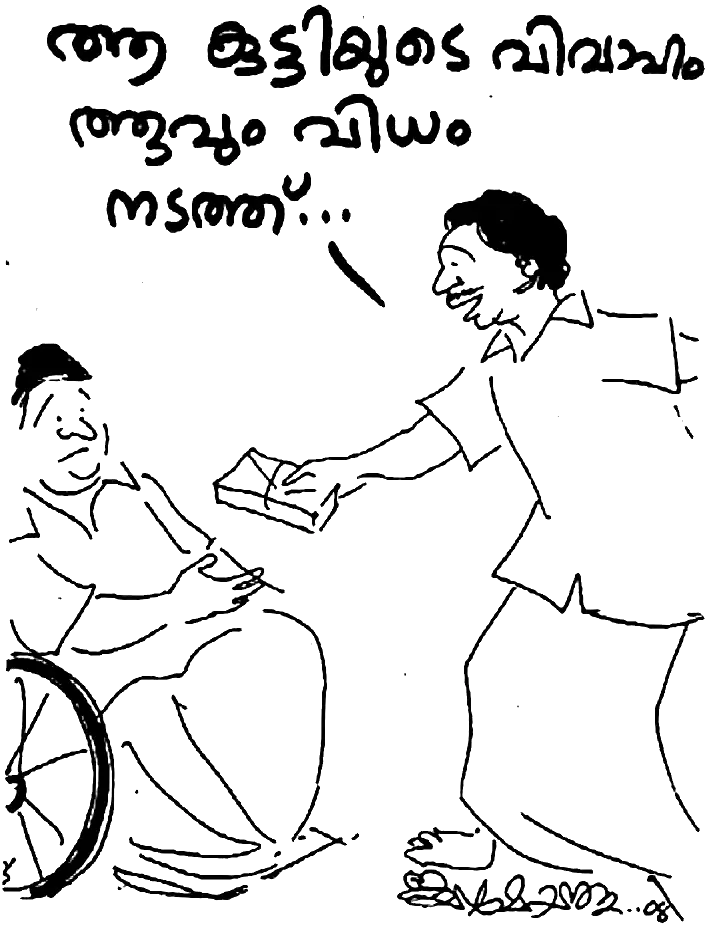മോഹനൻ പൊതിയഴിച്ചു നോക്കിയപ്പോൾ പതിനായിരം രൂപ ഉണ്ടായിരുന്നു! അങ്ങനെ ദൈവം ഉത്തരവാദിത്വം ഏൽപിച്ച വിവാഹത്തിനു ദൈവം തന്നെ വഴി കണ്ടെത്തി. മാതാപിതാക്കളോ സഹോദരങ്ങളോ പങ്കെടുക്കാത്ത വിവാഹത്തിനു ദൈവം അത്ഭുതകരമായി വഴി തുറന്നു.
20 വൎഷം മുമ്പു് ഒരു മേയ് ഒന്നാം തീയതി വിവാഹിതരായ പ്രസീന-ജെയിംസ് ദമ്പതികൾക്കു് ഇന്നു് രണ്ടു് മക്കളുണ്ടു്. സന്തോഷകരമായി അവർ ക്രിസ്തുവിൽ ജീവിക്കുന്നു.
യുവതീ-യുവാക്കളോടു് മോഹനൻ നായർക്കു് പറയുവാനുള്ളതു് ഇതാണു് : “നിങ്ങളുടെ സൗന്ദര്യമോ പണമോ ഒന്നുമല്ല ദൈവം നോക്കുന്നതു്. അവിടുന്നു ദാവീദിനെ നോക്കിയതു പോലെ ഇന്നും നോക്കുന്നു. ദൈവം ഹൃദയത്തെ നോക്കുന്നു. ദൈവം നോക്കുമ്പോൾ നിങ്ങളിൽ വിശുദ്ധി കാണട്ടെ. എങ്കിൽ, ദൈവം നിങ്ങളെ കൈവിടുകയില്ല. താഴ്മയുള്ളവൎക്കു് ദൈവം കൃപ നൽകുന്നു. നിഗളികളോടു ദൈവം എതിൎത്തു നിൽക്കുന്നു എന്ന കാൎയ്യം ഒരിക്കലും മറക്കരുതു്.”
പ്രസീനയുടെ സഹോദരങ്ങളിൽ അഞ്ചു് പേരുടെ വിവാഹം അതിനു ശേഷം നടന്നു. ക്രിസ്തീയ ഗോളത്തിലും സ്ത്രീധനം ഒരു കീറാമുട്ടിയായി ഇന്നും തുടരുന്നതിനാൽ അനേകം സഹോദരിമാർ ക്രിസ്തീയ വിശ്വാസം സ്വീകരിച്ചവരാണെങ്കിലും അവരുടെ ജീവിതം ഒരു ചോദ്യ ചിഹ്നമായി ഇപ്പോഴും അവശേഷിക്കുന്നു.
ചിലർ പറയും ഞങ്ങൾ ദരിദ്രരായതുകൊണ്ടാണു് വിവാഹം നടക്കാത്തതെന്നു. വളരെ സമ്പത്തും നല്ല നിലവാരവും ജോലിയും വിദ്യാഭ്യാസവും ഉണ്ടായിട്ടും അവിവാഹിതർ ആയിരിക്കുന്ന സഹോദരിമാരെയും സഹോദരന്മാരെയും മോഹനൻ കണ്ടുമുട്ടിയിട്ടുണ്ടു്.
“ക്രിസ്തീയ വിശ്വാസിക്കും സഭയ്ക്കും മൂല്യച്യുതി വന്നിട്ടുണ്ടെന്നതു സത്യമാണു്. ദൈവം വിലമതിക്കാത്ത സൗന്ദര്യം, പണം, പ്രതാപം ഇത്യാദി കാൎയ്യങ്ങൾക്കു് പല വിശ്വാസികളും മുൻഗണന നൽകുന്നു. ഇതു് അത്യധികം വേദനാജനകമാണു്. എന്നാൽ പ്രിയ സഹോദരിമാരേ, ദൈവം നിങ്ങളെ ഒരു നാളും കൈവിടുകയില്ല. എന്റെ 35 വൎഷത്തെ ക്രിസ്തുവിനോടു് കൂടെയുള്ള ജീവിതത്തിൽ, ഞാൻ അനുഭവിച്ചറിഞ്ഞ സത്യമാണു് പറയുന്നതു്.
“ഈ അദ്ധ്യായത്തിൽ വിവരിച്ച പ്രസീന എന്ന സഹോദരി മനുഷ്യ ദൃഷ്ടിയിൽ ഒരിക്കലും വിവാഹം നടക്കും എന്നു് പ്രതീക്ഷിക്കാൻ വക ഇല്ലാത്തവിധം ശാരീരികവും മാനസികവും സാമ്പത്തികവുമായി യാതൊരു വിശേഷതയും ഇല്ലാത്തവളായിരുന്നു. എന്നാൽ അവൾക്കു് ആകപ്പാടെ ഉണ്ടായിരുന്നതു് യേശു ക്രിസ്തുവിലുള്ള അടിയുറച്ച വിശ്വാസവും ആശ്രയവും അനുസരണവും ആയിരുന്നു. ദൈവം വിലമതിക്കുന്നതു് അതു് തന്നെയാണു്. ആകയാൽ ഒരു യുവതി വിവാഹം നടക്കുന്നില്ല എന്നു് പരിതപിക്കുകയോ ആരെയും കുറ്റപ്പെടുത്തുകയോ അസൂയപ്പെടുകയോ ചെയ്യേണ്ടതില്ല. ദൈവം പ്രതീക്ഷിക്കുന്ന ഉത്തമമായ ദൈവവിശ്വാസവും അതിനൊത്ത അനുസരണവും കീഴടങ്ങുവാനും താഴ്മ ധരിക്കുവാനുള്ള മനസ്സൊരുക്കവും സൽപ്രവൃത്തികൾക്കായുള്ള ഉത്സാഹവും അതിനോടു് കൂടെ വിവേകമതി ആയിരിക്കാൻ അവശ്യം വേണ്ടതായ വിദ്യാഭ്യാസവും മതി. ഒരിക്കലും വിദ്യാഭ്യാസത്തെ കുറച്ചു കാണരുതു്. എത്ര കഷ്ടപ്പെട്ടാലും, “വിദ്യാധനം സൎവ്വധനാൽ പ്രധാനം” എന്നതു കുറി കൊള്ളണം.
“ഇതിൽ നിങ്ങൾ മനസ്സൊരുക്കമുള്ളവരായി, ശാരീരികവും മാനസികവുമായി വിശുദ്ധിയുള്ളവരായിരിക്കുക. ഒരിക്കലും നിങ്ങളുടെ കൗമാരം, യൗവ്വനം എന്നിവ അശുദ്ധ ചിന്തകളാലും ദുൎമ്മോഹത്താലും സാത്താന്റെ വയൽ പ്രദേശം ആയിരിക്കാൻ അനുവദിക്കരുതു്. ദൈവം പറയുന്നു; ‘ഞാൻ വിശുദ്ധനാകയാൽ നിങ്ങളും വിശുദ്ധരായിരിപ്പിൻ.’ ഒരിക്കലും ഒരു വിവാഹ പങ്കാളിയെ നിങ്ങൾ അന്വേഷിച്ചു പോകരുതു്. നമുക്കു് ഒരു സ്വൎഗ്ഗീയ പിതാവുണ്ടു്. അവിടുന്നു് നമുക്കു് വേണ്ടി തിരഞ്ഞെടുത്തു് നമ്മുടെ ഗുണത്തിനായി ഏൽപ്പിക്കട്ടെ. അതു് മാത്രമേ നിലനിൽക്കുകയുള്ളൂ. യിസ്ഹാക്കിനു് ഒരു ഭാൎയ്യയ്ക്കായി അബ്രഹാം എലയാസറെ ചുമതലപ്പെടുത്തിയതു പോലെ ദൈവം തന്റെ പരിശുദ്ധാത്മാവിനെ അതിനായി ചുമതലപ്പെടുത്തും.
“എന്നാൽ റിബേക്കയെ നോക്കുക: അവൾ എത്ര ഉത്സാഹി ആയിരുന്നു! ‘ഉത്സാഹിയുടെ കയ്യോ സമ്പത്തുണ്ടാക്കുന്നു.’ എലയാസൎക്കു വെള്ളം കോരി കൊടുത്തതു കൂടാതെ, പത്തു് ഒട്ടകങ്ങൾക്കും വെള്ളം കോരി കൊടുക്കുക എന്ന ശ്രമകരമായ ജോലി ആയിരുന്നു അതു്. മനസ്സോടെ ആ ജോലി ചെയ്ത റിബേക്ക, സഹോദരിമാൎക്കു മാതൃകയാണു്. ഇങ്ങനെ മറ്റുള്ളവരെ ശുശ്രൂഷിക്കാനുള്ള മനസ്സൊരുക്കം നമുക്കുണ്ടെങ്കിൽ, ദൈവം എല്യേസർമാരെ ഇന്നും നമ്മുടെയടുത്തേക്കു് അയയ്ക്കും. ദൈവം നോക്കുന്നതു് നമ്മുടെ സൗന്ദര്യമല്ല. ഭൂമിയിൽ എത്രയോ കോടി മനുഷ്യർ ജീവിക്കുന്നു! അതിൽ എല്ലാം തികഞ്ഞവർ എത്ര പേരുണ്ടു് ? ലോക വനിതകൾ സൗന്ദര്യ റാണികൾ ആകാനാണു് ബ്യൂട്ടിപാർലറുകളിൽ കയറി ഇറങ്ങുന്നതു്. കാരണം, ലോകം സൗന്ദര്യത്തെ വിലമതിക്കുന്നു. എന്നാൽ ദൈവം പറയുന്നു: ‘ലാവണ്യം വ്യാജവും സൗന്ദര്യം വ്യൎത്ഥവും ആകുന്നു; യഹോവാ ഭക്തിയുള്ള സ്ത്രീയോ പ്രശംസിക്കപ്പെടും.’
“അങ്ങനെയെങ്കിൽ, ദൈവം വിലമതിക്കുന്നതിനെ നാം വിലമതിച്ചു കൊണ്ടു്, ദൈവത്തെ ഭക്തിയോടെ അനുസരിക്കുക. ഒരിക്കലും സ്വന്ത ഇഷ്ടത്തിനോ ജഡത്തിന്റെ താത്പര്യത്തിനോ നമ്മുടെ യൗവ്വനത്തെ ഏൽപിച്ചു കൊടുക്കരുതു്.
‘ഞാൻ അവരിൽ വസിക്കുകയും അവരുടെ ഇടയിൽ നടക്കുകയും ചെയ്യും; ഞാൻ അവൎക്കു് ദൈവവും അവർ എനിക്കു് ജനവും ആയിരിക്കും” എന്നു് ദൈവം അരുളി ചെയ്യുന്നുവല്ലോ. അതുകൊണ്ടു്
‘അവരുടെ നടുവിൽ നിന്നു് പുറപ്പെട്ടു് വേർപെട്ടിരിപ്പിൻ എന്നു് കൎത്താവു് അരുളി ചെയ്യുന്നു; അശുദ്ധ മായതൊന്നും തൊടരുത്; എന്നാൽ ഞാൻ നിങ്ങളെ കൈക്കൊണ്ടു് നിങ്ങൾക്കു് പിതാവും നിങ്ങൾ എനിക്കു് പുത്രിമാരും പുത്രന്മാരും ആയിരിക്കും’ എന്നു് സൎവ്വശക്തനായ കൎത്താവു് അരുളി ചെയ്യുന്നു.
“സഹോദരീ സഹോദരന്മാരേ, നിങ്ങളുടെ കൗമാര യൗവ്വന കാലങ്ങളിൽ, അവിശ്വാസികളായ കൂട്ടുകാരികളോ കൂട്ടുകാരന്മാരോ നിങ്ങളെ പ്രേരിപ്പിക്കുന്ന ലോക വഴികളിൽ നടന്നു കഴിഞ്ഞതിനു ശേഷം ദൈവം നിങ്ങൾക്കു് ഒരു നല്ല ഭൎത്താവിനെയോ ഭാൎയ്യയെയോ നൽകാൻ ബാദ്ധ്യസ്ഥനല്ലെന്നതു് മറന്നു പോകരുതു്. നമുക്കു് ഒരു ജീവിതം മാത്രമേ ഉള്ളൂ. ആയതിനാൽ, അതു് ദൈവം വസിക്കുന്ന കൂടാരം (മന്ദിരം) തന്നെ ആയിരിക്കട്ടെ. അങ്ങനെയുള്ള ഒറ്റ ജീവിതത്തിനും ഒരിക്കലും നല്ല ഒരു കുടുംബ ജീവിതത്തിനു് അലയേണ്ടി വന്നിട്ടില്ല. ഇന്നു് ലോകമനുഷ്യർ തേടുന്നതു് പോലെ, സമയത്തിനു മുമ്പേ നമ്മുടെ ശരീരവും മനസ്സും ദുഷിപ്പിക്കുവാൻ നാം ഒരിക്കലും അനുവദിച്ചു കൂടാ. അങ്ങനെ ഉള്ളവൎക്കായി ദൈവം പ്രവൎത്തിക്കുന്നില്ല. അവരുടെ സ്വന്ത താത്പര്യത്തിൽ ചെന്നു് വീഴുവാൻ ദൈവം അവരെ അനുവദിച്ചേക്കും. എന്നാൽ, ഒരു ദൈവ മകൾക്കു് (ദൈവ മകനു) വേണ്ടി ദൈവം തിരഞ്ഞെടുക്കും.”
‘പ്രിയമുള്ളവരേ, ഈ വാഗ്ദത്തങ്ങൾ നമുക്കുള്ളതു കൊണ്ടു് നാം ജഡത്തിലെയും ആത്മാവിലെയും സകല കന്മഷവും നീക്കി നമ്മെ തന്നെ വെടിപ്പാക്കി ദൈവ ഭയത്തിൽ വിശുദ്ധിയെ തികച്ചുകൊൾക’ (2 കൊരിന്ത്യർ 7:1).
“നിങ്ങൾ അവിശ്വാസികളെ നോക്കി അവിശ്വാസികളുമായി ഇണയില്ലാപ്പിണ കൂടരുതു്. എന്നാൽ ദൈവമോ നമ്മുടെ ഹൃദയത്തിന്റെ ഉൾപ്പൂവുകളെ നോക്കി കാണുന്നു; അവനുമായിട്ടാകുന്നു നമുക്കു് കാൎയ്യമുള്ളതു്. ഈ സന്ദേശം എന്റെ കുഞ്ഞു സഹോദരിമാൎക്കു ഒരാശ്വാസം ആകട്ടെ എന്നു് പ്രാൎത്ഥിക്കുന്നു.”
39
ഒരാളുടെ ജീവചരിത്രം അഥവാ ആത്മകഥ എഴുതുമ്പോൾ ആ വ്യക്തിയുടെ നല്ല ഗുണങ്ങൾ മാത്രം എഴുതുന്നതു് യോഗ്യമല്ല. അദ്ദേഹത്തിന്റെ പരാജയങ്ങളും അതിന്റെ ഭാഗമാണു്.
മോഹനന്റെ വിശ്വാസ ജീവിതത്തിന്റെ ഒമ്പതാം വൎഷത്തിലാണു് ആ സംഭവം നടക്കുന്നതു്. ഒരു സഭാഹാളിന്റെ ഉദ്ഘാടന ദിവസം ആണു്. ആ കെട്ടിടം പണിയാൻ സാമ്പത്തിക സഹായം ചെയ്തവരിൽ ഒരു കരിസ്മാറ്റിക്കുകാരനും ഉണ്ടായിരുന്നു. മോഹനൻ അദ്ദേഹവും ഒരുമിച്ചു് ആത്മീയ കാൎയ്യങ്ങൾ സംസാരിച്ചു കൊണ്ടിരുന്നു. ഉടനെ അദ്ദേഹം മോഹനനോടു് പറഞ്ഞു: “നമുക്കു് അല്പസമയം പ്രാൎത്ഥിക്കാം.”
അഞ്ചു് മിനിറ്റു നേരമേ അവർ പ്രാൎത്ഥിച്ചുള്ളു. പെട്ടെന്നു് അദ്ദേഹം മോഹനനെ തുറിച്ചു നോക്കി കൊണ്ടു് ചോദിച്ചു; “നന്നായി കോപിക്കാറുണ്ടു് അല്ലേ? ഭാൎയ്യയോടും മകനോടും കോപിക്കുകയാണോ—അനുതപിക്കുക. മോശെയുടെ കോപമാണു് കനാൻ ദേശത്തു പ്രവേശിക്കാൻ തടസ്സം ആയിരുന്നതു്.”
മോഹനൻ ഞെട്ടി പോയി! ഇതുവരെ ആരും ഇങ്ങനെ സംസാരിച്ചിട്ടില്ല. മോഹനൻ ഉരുണ്ടു് കളിച്ചു കൊണ്ടു് പറഞ്ഞു: “അങ്ങനെയൊന്നുമില്ല. വല്ലപ്പോഴുമൊക്കെ ഭാൎയ്യയോടും മകനോടും കോപിക്കാറുണ്ടു്. അപ്പോൾ വൃത്തികെട്ട വാക്കൊന്നും പറയുകയില്ല, വേഗം ശാന്തനാകും.” ഈ സംഭവം അവിടെ തീൎന്നു. അവർ പിരിഞ്ഞു.
എന്നും കുടുംബ പ്രാൎത്ഥനയ്ക്കു് മുമ്പായി മോഹനൻ തനിയെ പ്രാൎത്ഥിക്കാറുണ്ടു്. ആ സമയത്തു മോഹനൻ കൎത്താവിനോടു് ചോദിച്ചു; “കൎത്താവേ, ഇന്നു് ജോർജ്ജേട്ടൻ എന്നോടു് പറഞ്ഞല്ലോ ഞാൻ കോപിക്കുന്നു എന്ന്. ദൈവമേ, അവിടുത്തെ സന്നിധിയിൽ ഞാൻ കോപിക്കാറുണ്ടോ?”
പാപത്തെ കുറിച്ചു് ബോധം വരുത്തുന്ന പരിശുദ്ധാത്മാവു് ഉടനെ മോഹനനോടു സംസാരിക്കാൻ തൂടങ്ങി: “കഴിഞ്ഞ ഒമ്പതു വൎഷങ്ങൾക്കുള്ളിൽ, തൊള്ളായിരം പ്രാവശ്യം നീ കോപിച്ചിട്ടുണ്ടു്. ” മോഹനനു പശ്ചാത്താപമുണ്ടായി. മോഹനൻ പൊട്ടിക്കരഞ്ഞു കൊണ്ടു്, ദൈവത്തോടു് മാപ്പപേക്ഷിച്ചു.
“ക്രിസ്തു തന്റെ ഐഹിക ജീവിതകാലത്തു തന്നെ മരണത്തിൽ നിന്നു് വിടുവിക്കാൻ കഴിയുന്നവനോടു് ഉറച്ച നിലവിളിയോടും കണ്ണുനീരോടും കൂടെ അപേക്ഷയും അഭയയാചനയും കഴിക്കുകയും ഭയഭക്തി നിമിത്തം ഉത്തരം ലഭിക്കുകയും ചെയ്തു” (എബ്രായർ 5:7).
മോഹനനെ ദൈവം ആശ്വസിപ്പിച്ചു ധൈൎയ്യപ്പെടുത്തി. മോഹനൻ പറയുന്നതു ശ്രദ്ധിക്കുക:
“ദൈവം എന്റെ ഹൃദയത്തെ ആശ്വസിപ്പിച്ചു ധൈൎയ്യപ്പെടുത്തി. അന്നുവരെ ഞാൻ തന്നെ താൻ ന്യായീകരിച്ചിരുന്നതു് ‘കോപിച്ചാൽ പാപം ചെയ്യരുതു് ’ എന്നേയുള്ളു എന്നായിരുന്നു. എന്നാൽ, അന്നു രാത്രിയിൽ ഞാൻ എഫെസ്യ ലേഖനം നാലാം അദ്ധ്യായം 25 മുതൽ 32 വരെയുള്ള ഭാഗം ഒരിക്കൽക്കൂടി വായിച്ചു.”
കോപിച്ചാൽ പാപം ചെയ്യരുതെന്നും കേൾക്കുന്നവൎക്കു് കൃപ ലഭിക്കേണ്ടതിനു് ആവശ്യം പോലെ ആത്മീയ വർദ്ധനയ്ക്കായി നല്ല വാക്കല്ലാതെ ആകാത്തതൊന്നും വായിൽ നിന്നു് വരരുതു് എന്നും, ദൈവത്തിന്റെ പരിശുദ്ധാത്മാവിനെ ദുഃഖിപ്പിക്കരുതെന്നും … ‘എല്ലാ കയ്പും കോപവും ക്രോധവും അട്ടഹാസവും ദൂഷണവും സകല ദുർഗുണവുമായി നിങ്ങളെ വിട്ടു് ഒഴിഞ്ഞു പോകട്ടെ” എന്ന വാക്യത്തിൽ എത്തിയപ്പോൾ ദൈവാത്മാവു് മോഹനന്റെ ഉള്ളിൽ പറഞ്ഞു: നോക്കുക, എന്റെ മക്കൾ അനേകരും മുകളിലുള്ള വാക്യമനുസരിച്ചു (‘കോപിച്ചാൽ പാപം ചെയ്യാതിരിപ്പിൻ’) തങ്ങളെ തന്നെ ന്യായീകരിക്കുകയാണു്. എന്നാൽ കോപം ദുർഗുണമാണു്. എനിക്കതു് ഇഷ്ടമല്ല.”
ഈ വാക്യം അപ്പോൾ വെളിപ്പാടായി മോഹനൻ അനുഭവപ്പെട്ടു. പിന്നീടൊരിക്കലും മോഹനൻ കോപിച്ചിട്ടില്ലാ എന്നല്ല. ഒമ്പതു വൎഷത്തിൽ തൊള്ളായിരം പ്രാവശ്യം കോപിച്ചെങ്കിൽ ഓരോ ദിവസത്തിൽ ഒരു തവണയാണു് കോപിച്ചതു്.
ഇതിനു ചില ദിവസങ്ങൾക്കു് ശേഷം ഭാൎയ്യ ഉച്ചയ്ക്കു് ചോറു വിളമ്പി. മോഹനൻ സ്തോത്രം ചെയ്തിട്ടു് ആഹാരം കഴിക്കാൻ തുടങ്ങി. പാത്രത്തിൽ കയ്യിട്ടതും ചോറിൽ കല്ലുണ്ടെന്നു മനസ്സിലായി. ചോറിലെ കല്ലു് കോപിപ്പിക്കുന്നതാണു്. മോഹനൻ ഭാൎയ്യയെ ശകാരിക്കും, കുറ്റപ്പെടുത്തും, കോപിക്കും. ചെറുപ്പം മുതൽ ഭക്ഷണം കിട്ടിയാൽ വേഗത്തിൽ കഴിച്ചു തീൎക്കുന്നവനാണു്. കല്ലു കടിക്കുന്നതു് മോഹനനു അസഹ്യമായിരുന്നു. തലമുടിയാണെങ്കിൽ എടുത്തു കളഞ്ഞിട്ടു് കഴിക്കും. കല്ലു സഹിക്കാനൊക്കില്ല. എന്നാൽ ആ ദിവസം ദൈവം മോഹനനോടു് പറഞ്ഞു: “നീ ഈ ഭക്ഷണത്തിനായി നന്ദി പറഞ്ഞില്ലേ? എങ്കിൽ, ഇതിലടങ്ങിയിരിക്കുന്ന എല്ലാറ്റിനായും നീ എന്നെ സ്തുതിച്ചു കഴിഞ്ഞു. അതു് കൊണ്ടു് ക്ഷമയോടെ ഇതിലെ കല്ല് മെല്ലെ പെറുക്കി എടുക്കുക.”
“ദൈവമക്കളേ, ഇതു് നിങ്ങളുടെയും അനുഭവം ആകാം. എന്റെ കണ്ണു് നിറഞ്ഞൊഴുകി. കണ്ണുനീർ ഭക്ഷണത്തിൽ വീണു. എന്റെ ഹൃദയത്തിൽ സന്തോഷം തിരതല്ലി. ഞാൻ വീണ്ടും ദൈവത്തിനു നന്ദി കരേറ്റി സ്തുതിച്ചു. ആരോടും കോപിച്ചില്ല. ഭാൎയ്യയെ കുറ്റപ്പെടുത്തിയില്ല, ശകാരിച്ചില്ല. ചോറിൽ ചികഞ്ഞു നോക്കിയപ്പോൾ ഒന്നിനു പിറകെ ഒന്നായി എട്ടു് കല്ലുകൾ കിട്ടി. അപ്പോഴേക്കും മുക്കാൽ മണിക്കൂർ കഴിഞ്ഞിരുന്നു! അന്നു ഞാൻ കഴിച്ച ആഹാരം എത്ര രുചികരം ആയിരുന്നെന്നു് പറയാൻ എനിക്കു് വാക്കുകളില്ല! ഞാനിങ്ങനെ ചിന്തിച്ചു: ഭാൎയ്യ അറിഞ്ഞു കൊണ്ടു് കല്ലും മുടിയും ഭക്ഷണത്തിൽ പെറുക്കിയിടുമോ? ഇല്ലേ ഇല്ല. അറിഞ്ഞു കൊണ്ടാണോ കറിയിൽ ഉപ്പ് അധികമായിടുന്നതു് ? എരിവു കൂടുന്നതു് അറിയാതെ സംഭവിക്കുന്നതല്ലേ?
“പ്രിയ സഹോദരാ, നമ്മുടെ ഭാൎയ്യമാരോടു്, അമ്മമാരോടു്, സഹോദരിമാരോടു്, വേലക്കാരിയോടു് ദൈവീക കാഴ്ചപ്പാടോടെ ഇടപെടാം. എന്റെ ജീവിതത്തിൽ കോപ സ്വഭാവത്തിനു വളരെ ഏറെ മാറ്റമുണ്ടായി. രക്ഷിക്കപ്പെടുന്നതിനു മുമ്പു് നിരന്തരം കോപിച്ചിരുന്നു. രക്ഷിക്കപ്പെട്ടു് കഴിഞ്ഞപ്പോൾ മൂന്നര ദിവസത്തിൽ ഒരിക്കൽ കോപിച്ചു. പിന്നെയതു് എപ്പോഴെങ്കിലും എന്ന നിലയിലായി. ഈ പാപത്തിൽ നിന്നു് ഞാൻ ജയിച്ചു എന്നല്ല. ഇപ്പോൾ മാസങ്ങൾ കൂടുമ്പോൾ ഒരിക്കൽ കോപിച്ചാലെന്നായി. അതു് അപ്പോൾ തന്നെ ദൈവത്തോടു് ഏറ്റു പറയുന്നു. കൎത്താവേ, അവിടുത്തെ ദീർഘക്ഷമയിലേക്കു് എന്നെ വേഗത്തിൽ നടത്തി ക്രിസ്തു എങ്ങനെ ക്ഷമിച്ചോ, അതു് പോലെ ക്ഷമിക്കാൻ എന്നെ പ്രാപ്തനാക്കേണമേ എന്നാണു് എന്റെ പ്രാൎത്ഥന.”
ക്ഷമ ഇല്ലാത്തതായിരുന്നു മോഹനന്റെ ജീവിതത്തിലെ ഏറ്റവും വലിയ കുറവു്. തത്ഫലമായി, ഭാൎയ്യ തങ്കമണി ഒരു അൾസർ രോഗിയായി തീൎന്നു. ഭക്ഷണം കഴിക്കുമ്പോൾ ഛൎദ്ദിക്കുന്ന അവസ്ഥ. എന്നാൽ, ദൈവം കോപ സ്വഭാവത്തിൽ നിന്നു് മോഹനനെ രക്ഷിച്ചപ്പോൾ അറിയാതെ തന്നെ തന്റെ ഭാൎയ്യയുടെ നെഞ്ചെരിച്ചിലും പുളിച്ചു തികട്ടലും അൾസറും ഭേദമായി!
പ്രിയ സഹോദരങ്ങളേ, കോപം ദൈവത്തിന്റെ നീതി പ്രവൎത്തിക്കുന്നില്ല എന്നു് യാക്കോബും കോപം കൊലപാതകമാണെന്നു് കൎത്താവും അതു് ദുൎഗുണമാണെന്നു പൌലൊസും പ്രസ്താവിക്കുമ്പോൾ, നാം ഇന്നും ന്യായീകരിക്കുകയാണു്, “കോപിച്ചാൽ പാപം ചെയ്യാതിരിപ്പിൻ.”
“മൂക്കു് ഞെക്കിയാൽ ചോര വരും; കോപം ഇളക്കിയാൽ വഴക്കുണ്ടാകും” എന്നു് ശലോമോൻ തന്റെ ദിവ്യജ്ഞാനത്തിൽ പ്രസ്താവിക്കുമ്പോൾ, ഒരു കാൎയ്യം നമുക്കുറപ്പാക്കാം, നമ്മുടെ പല കോപഭ്രാന്തും ദൈവീകമല്ല. അതു് പൈശാചികമാണു്. അപ്പോൾ ചിലർ ചോദിക്കുന്നതു് ‘കൎത്താവു് കോപിച്ചില്ലേ?’ എന്നായിരിക്കും.
യേശു ദൈവാലയത്തിൽ വച്ചു മാത്രമല്ല ഇടവിടാതെ കോപിക്കുന്നു എന്നാണു സങ്കീൎത്തനത്തിൽ വായിക്കുന്നതു്. മനം തിരിയുന്നില്ലെങ്കിൽ അവൻ തന്റെ വാളിനു മൂൎച്ച കൂട്ടും. അവസാനകാലത്തു്, ദൈവകോപത്തിന്റെ പാത്രത്തിൽ പകൎന്നിരിക്കുന്ന കലൎപ്പില്ലാത്ത ദൈവ ക്രോധ-മദ്യം സകല ജാതികളും കുടിക്കേണ്ടി വരും. എന്നാൽ ദൈവ കോപവും നമ്മുടെ കോപവും തമ്മിൽ സാരമായ വ്യത്യാസമുണ്ടു്. യേശു കോപിച്ചതു ദൈവനീതി നടപ്പിലാക്കുവാനാണു്. ദൈവം സൎവ്വശക്തനും സൎവ്വജ്ഞാനിയും സകല സൽഗുണപൂൎണ്ണനുമാണു്. അവൻ സകലതും സ്രഷ്ടിച്ചു പരിപാലിക്കുന്നവനായതിനാൽ, സ്രഷ്ടികളുടെ തല തിരിഞ്ഞ പ്രവൃത്തിയോടാണു് കോപിക്കുന്നതു്. എന്നാൽ നാം കോപിക്കുന്നതു് നമ്മുടെ സ്വാൎത്ഥതയ്ക്കായിട്ടാണു്.
യേശു ഒരിക്കലും തന്റെ സ്വന്ത മഹത്വത്തിനായോ, തന്റെ ശാരീരിക ആവശ്യങ്ങൾക്കായോ ആരോടും കോപിച്ചില്ല; തന്നെ പിടിക്കാൻ കോപത്തോടെ പാഞ്ഞടുത്ത പടയാളികളോടു പോലും. യേശുവിന്റെ വാക്കു് കേട്ടിട്ടു് അവർ പറഞ്ഞതു്, “ഇവൻ സംസാരിക്കുന്നതു് പോലെ ആരും ഒരുനാളും സംസാരിച്ചിട്ടില്ല” എന്നാണു്. വാളും വടിയുമായി വന്ന പരീശ പ്രമാണിമാരോടും ചേവകരോടും യേശു തന്റെ സ്വതസിദ്ധമായ ശൈലിയിലാണു് പ്രതികരിച്ചതു് —“നിങ്ങൾ ആരെ തിരയുന്നു?” എന്നാൽ മനുഷ്യരായ നാം കറിയിൽ ഉപ്പു് കൂടിയാൽ, എരിവു കുറഞ്ഞാൽ, രുചി കുറഞ്ഞാൽ, ഷർട്ടിൽ നീലം കൂടിയാൽ, അയലത്തെ ആടു് കയറിയാൽ, കോഴി പറമ്പിൽ കയറിയാൽ, ആരെങ്കിലും തേങ്ങാ പെറുക്കിയാൽ, എന്നു് വേണ്ടാ നമ്മുടെ കോപം മുഴുവൻ ജഡികമാണെന്നു് കാണാം.
എന്തുകൊണ്ടു് നാം സത്യത്തിനു വേണ്ടി ശബ്ദം ഉയൎത്തുന്നില്ല? എന്തുകൊണ്ടു് നീതിക്കു് വേണ്ടി നാം വാദിക്കുന്നില്ല? മറ്റൊരുത്തൻ തെറ്റു ചെയ്താൽ പോലും നമുക്കു് അതിനെതിരെ കോപിക്കാൻ ന്യായമില്ല. കാരണം, നാം പൂൎണ്ണരായിട്ടില്ല. വ്യഭിചാരത്തിൽ പിടിച്ച സ്ത്രീയെ കൊല്ലുവാൻ വന്ന ജനത്തോടു് യേശു പറഞ്ഞതു്, ‘നിങ്ങളിൽ പാപം ഇല്ലാത്തവൻ കല്ലെറിയട്ടെ!’ എന്നാണല്ലോ. എന്നുവച്ചാൽ, ഒരു പാപമെങ്കിലും വന്നു പോകുന്ന നമുക്കു മറ്റൊരാൾക്കെതിരെ ധൎമ്മരോഷം കൊള്ളുവാൻ എന്താണവകാശം? പരിശുദ്ധനായ ദൈവത്തിനു മാത്രമേ അതു് ചെയ്യുവാൻ അവകാശമുള്ളു.
കോപത്തിന്റെ മറുവശം നോക്കിയാൽ ദീൎഘക്ഷമയാണു് കാണുന്നതു്. ആത്മാവിന്റെ ഫലത്തെ കുറിച്ചു് ഗലാത്യർ 5:22 ൽ വായിക്കുന്നു. അവയിലൊന്നു് ദീൎഘക്ഷമയാണു്. ദീൎഘക്ഷമയെ കുറിച്ചു് ബൈബിൾ പ്രസ്താവിക്കുന്നു. അതുകൊണ്ടു് നമുക്കു് അന്യോന്യം ക്ഷമിക്കാനുള്ള കൃപയ്ക്കായി ദൈവത്തോടു് അപേക്ഷിക്കാം. നീ അന്യന്റെ കടം ക്ഷമിക്കുന്നില്ലെങ്കിൽ നിന്റെ കടവും ക്ഷമിക്കപ്പെടുക ഇല്ലെന്നും കൎത്താവു നമ്മെ പഠിപ്പിച്ചു. സഹോദരനോടു് ഹൃദയപൂൎവ്വം ക്ഷമിച്ചില്ലെങ്കിൽ ദൈവവും നിന്നോടു് അങ്ങനെ തന്നെ ചെയ്യും എന്നും ദൈവവചനം പ്രസ്താവിക്കുന്നു.
നമുക്കു് ദൈവ വചനത്തോടു് കൂറും ഭക്തിയും അനുസരണവും ഉള്ളവരായിരിക്കാം. മറിച്ചു്, നമ്മുടെ പരാജയങ്ങൾക്കു് ഒരു മൂടുപടമായിട്ടുള്ള ന്യായീകരണം ഉപേക്ഷിക്കാം. ഏതു പാപത്തിൽ നിന്നും കൎത്താവിനു നമ്മെ സ്വതന്ത്രരാക്കുവാൻ കഴിയും. നാം നമ്മോടും ദൈവത്തോടും സത്യസന്ധരായിരിക്കണം എന്നു് മാത്രം. ആദാമിനെ പോലെ ന്യായീകരിക്കാതെ, ‘ഞാനതു ചെയ്തു കൎത്താവേ’ എന്നു് നമുക്കു് ഏറ്റുപറയാം. ഏഴു് എഴുപതു വട്ടം എന്നു് പത്രൊസിനോടു് പറഞ്ഞ ദീൎഘക്ഷമ ആത്മാവിന്റെ ഫലമായി നമ്മിൽ വെളിപ്പെട്ടു് കണ്ടാൽ പിന്നെ ക്രോധവും കോപവും നമ്മിൽ വരികയില്ല തിൎച്ച.
ഇതെഴുതുന്ന എന്റെ ജീവിതത്തിൽ ഇതു് പരിപൂൎണ്ണമായി എന്നോ പൂൎണ്ണജയത്തിൽ എത്തി എന്നോ ഞാൻ അവകാശപ്പെടുന്നില്ല. എന്നാൽ ഒന്നു ഞാൻ ചെയ്യുന്നു, പാപത്തിനെതിരെ ഞാൻ സന്ധിയില്ലാ സമരം പ്രഖ്യാപിക്കുന്നു. ഇന്നല്ലെങ്കിൽ നാളെ ദൈവം നമ്മോടു് കൂടെയുള്ളതുകൊണ്ടു് കോപം എന്ന ഈ മല്ലൻ നമ്മുടെ കാൽക്കീഴിൽ വീഴും. നമുക്കുറച്ചു നിന്നു് പൗലൊസിനോടു് ചേൎന്നു പറയാൻ ഇടവരട്ടെ: “പിടിച്ചു എന്നോ പിടിച്ചു കഴിഞ്ഞു് എന്നോ തികഞ്ഞവനായി എന്നോ ഞാൻ പറയുന്നില്ല. പിടിക്കാം എന്നുവച്ചു മുന്നേറുക മാത്രം.”
എവറസ്റ്റ് കൊടുമുടി കീഴടക്കാൻ പോയ നൂറുകണക്കിനു സാഹസികർ എവറസ്റ്റിന്റെ താഴ്വാരങ്ങളിൽ മരിച്ചൊടുങ്ങി. എങ്കിലും ഒരിക്കൽ ഒരു സഞ്ചാരി മടങ്ങി പോകുമ്പോൾ താഴ്വാരത്തിൽ വച്ചു തിരിഞ്ഞു നോക്കി കൊണ്ടു വിളിച്ചു പറഞ്ഞു: “അല്ലയോ എവറസ്റ്റ്, നീ ഒരിക്കൽ കൂടെ ഞങ്ങളെ പരാജയപ്പെടുത്തി. എന്നാൽ നീ നോക്കി കൊള്ളൂ, മനുഷ്യരായ ഞങ്ങൾ ഒരിക്കൽ നിന്നെ കീഴ്പ്പെടുത്തും.”
ഇതായിരിക്കട്ടെ സഹോദരാ, സഹോദരീ, നമ്മുടെ പ്രതിജ്ഞ. പാപം എത്ര പ്രാവശ്യം നമ്മെ കീഴ്പ്പെടുത്തിയാലും നാം തോറ്റു പിന്മാറേണ്ടവരല്ല. “ന്യായ പ്രമാണത്തിനല്ല കൃപയ്ക്കു് അധീനരാകയാൽ, പാപം നിങ്ങളിൽ കൎത്തൃത്വം നടത്തുക ഇല്ല” എന്ന വചനത്തിനു മുൻപിൽ ക്രിസ്തു യേശു തോലൽപ്പിച്ചിരിക്കുന്ന സാത്താനും അവന്റെ ആയുധമായ പാപത്തിനും ഒരു ദിവസം നമ്മുടെ മുമ്പിൽ കീഴടങ്ങിയേ പറ്റൂ. കാരണം, പിശാചു് തോല്പിക്കപ്പെട്ട ശത്രുവാണു്. നമുക്കു് രക്ഷകനോടു് കൂടെ വിജയിക്കാം.
40
എന്റെ വിശ്വാസ ജീവിതം പത്തു് വൎഷം കഴിഞ്ഞു. ഈ പത്തു് വൎഷം കൊണ്ടു് ബൈബിൾ മുഴുവനായി പത്തു് പ്രാവശ്യവും പുതിയ നിയമം പതിമൂന്നു പ്രാവശ്യവും സങ്കീൎത്തനങ്ങൾ അതിൽ കൂടുതൽ പ്രാവശ്യവും വായിക്കുവാൻ ദൈവം എനിക്കു് കൃപ നൽകി.
“ഒരു ബലഹീനനായി കിടക്കയിൽ ജീവിതം കഴിയേണ്ടിവന്നതിനാൽ എനിക്കു് ധാരാളം സമയം ലഭിച്ചിരുന്നു. ഏഴു് വൎഷം ദൈവവചനം ഒറ്റയ്ക്കിരുന്നു പഠിക്കുവാൻ ദൈവം കൃപ നൽകി. ബൈബിളിലെ ഏകദേശം എല്ലാ പുസ്തകങ്ങളെ കുറിച്ചുമുള്ള ഒരു ധാരണ എനിക്കു് ലഭിച്ചു.
“എന്നെ വിശ്വാസത്തിലേക്കു് നടത്തിയ ബേബിച്ചായൻ ഒരു ശബ്ബത്തു് വിശ്വാസി ആയിരുന്നു. രണ്ടര വൎഷം എന്നെ ന്യായപ്രമാണവും പത്തു് കൽപ്പനകളും അദ്ദേഹം പഠിപ്പിച്ചു. എന്നാൽ, ദൈവവചനം നിരന്തരമായി പഠിച്ചു കൊണ്ടിരുന്ന എനിക്കു ശബത്തിനു വിരുദ്ധമായ മറ്റനേകം വാക്യങ്ങൾ ഗ്രഹിക്കാൻ കഴിഞ്ഞു. എന്റെ ആത്മീയ പിതാവായ ബേബിച്ചായനോടു് പുതിയ നിയമ പ്രകാരം ഒരു ദൈവ പൈതൽ ശബ്ബത്തു് ആചരിക്കേണ്ടതുണ്ടോ എന്നു് മറ്റു ചില വാക്യങ്ങളുടെ തെളിവു സഹിതം ചോദിച്ചു. അതിനു വ്യക്തമായ ഉത്തരം തരുവാൻ അദ്ദേഹത്തിനു കഴിഞ്ഞില്ല.
“എന്റെ ഏഴു് വൎഷത്തെ വചനപഠന കാലത്തു് ബൈബിളിലെ മനസ്സിലാകാത്ത കാൎയ്യങ്ങൾ ദൈവത്തോടു് ചോദിക്കുക എന്നതായിരുന്നു എന്റെ ശീലം. ആത്മീയ ശിശുവായ എനിക്കു് വേണ്ടതായ പല പല പുസ്തകങ്ങൾ തന്നു ദൈവം തക്ക സമയത്തു് എന്നെ സഹായിച്ചിരുന്നു. അതിനു് അനേകം ദൈവ മക്കളെ ദൈവം ഉപയോഗിച്ചു. എന്നാൽ ഈ പുസ്തകങ്ങൾ പലതും 25%, 10%, 50% മാത്രമേ ദൈവവചനമായ ബൈബിളിനോടു് നീതി പുലൎത്തിയിരുന്നുള്ളൂ. ഇതു് ദൈവം എന്നെ ബോദ്ധ്യപ്പെടുത്തി. ഒന്നും ഞാൻ നിഷേധിച്ചില്ല. എല്ലാം തന്നെ വായിക്കുകയും, നല്ലതു് സ്വീകരിക്കുകയും ദൈവഹിത പ്രകാരമല്ലാത്തതു വിട്ടുകളയുകയും ചെയ്തു.
“ഈ കാൎയ്യത്തിൽ ആരെയും വിധിക്കുകയോ കുറ്റപ്പെടുത്തുകയോ ചെയ്യുന്നില്ല. മനുഷ്യൻ എഴുതുമ്പോൾ അതിൽ മനുഷ്യന്റെ ഇഷ്ടം, അവൎക്കു് മനസ്സിലായതു്, അവരുടെ അനുഭവങ്ങൾ, അവരുടെ പരിമിതമായ ബുദ്ധി, അറിവു് എന്നിവയുടെ ഒക്കെ സ്വാധീനതയുണ്ടു്. ഇങ്ങനെ പല മുഖാന്തരങ്ങളിലൂടെ ദൈവ വചനമായ ബൈബിളിനെ കുറിച്ചും അതിലെ രക്ഷാകര പദ്ധതിയെ കുറിച്ചും അതിലെ അതിപ്രധാന കഥാപാത്രമായ യേശു ക്രിസ്തുവിനെ കുറിച്ചും എനിക്കു് സാമാന്യം അറിവുണ്ടായിരുന്നു. എന്റെ ജീവിതം ദൈവഹിത പ്രകാരം വാൎത്തെടുക്കാൻ ഈ അറിവുകൾ പര്യാപ്തമായിരുന്നില്ല.
“ദൈവവചനം വായിക്കുമ്പോൾ ഞാൻ ദുഃഖിക്കും. പ്രാൎത്ഥിക്കുമ്പോൾ മനഃസാക്ഷി കുറ്റബോധം കൊണ്ടു് നിറയും. ദൈവ വചനമായ ബൈബിൾ എനിക്കു് പ്രമാണിക്കാൻ കഴിയുന്നില്ലല്ലോ എന്ന ദുഃഖമായിരുന്നു കാരണം. കുറെ കാൎയ്യങ്ങൾ എനിക്കു് അനുസരിക്കാൻ കഴിയുന്നു. മാനസാന്തരപ്പെട്ടപ്പോൾ തന്നെ പല പാപസ്വഭാവത്തിൽ നിന്നു് ദൈവം എനിക്കു് വിടുതൽ തന്നിരുന്നു. പാപത്തിന്മേൽ ഒരു ജയജീവിതം, യേശു ക്രിസ്തുവിനെ പോലെ വളരുക, ദിവ്യ സ്വഭാവത്തിനു കൂട്ടാളി ആയിത്തീരുക, പിതാവു് സൽഗുണ പൂൎണ്ണനായിരിക്കുന്നതു് പോലെ സൽഗുണ പൂൎണ്ണതയിലേക്കു് വളരുക എന്നീ വചനങ്ങളുടെ മുമ്പിൽ ഞാൻ ശിരസ്സു് നമിച്ചു കുനിഞ്ഞിരിക്കുക അല്ലാതെ ജയിക്കുവാൻ കഴിയുന്നില്ല.
“പലരുടെയും ജീവിതം നിരീക്ഷിച്ചു നോക്കിയതിലും ഒരു കാൎയ്യം എനിക്കു മനസ്സിലായി. പ്രാൎത്ഥനയും പാട്ടും സുവിശേഷ പ്രസംഗവും ഉപവാസ പ്രാൎത്ഥനയും മറ്റും മുറ പോലെ പൊടിപൊടിക്കുന്നു. പക്ഷേ ക്രിസ്തുവിനെ പോലെയാകുവാൻ അവൎക്കും കഴിയുന്നില്ല. അവരുടെയും ജീവിതത്തിൽ പരാജയം ഒരു തുടൎക്കഥ തന്നെയാണു്. അവരിൽ മിക്ക വിശ്വാസികളും അതു സമ്മതിക്കുന്നില്ലെന്നു് മാത്രം.
“ഇങ്ങനെയിരിക്കെ പലപ്പോഴും ഞാൻ ദൈവത്തോടു് പ്രാൎത്ഥിച്ചു; “കൎത്താവേ, വചനത്തിൽ ഉള്ളതു പോലെ ജീവിക്കുവാൻ എന്നെ സഹായിക്കേണമേ.” ഒരു ദിവസം പോസ്റ്റുമാൻ വന്നപ്പോൾ ഒരു ചെറുമാസിക ലഭിച്ചു. പുറമേ യാതൊരു ഭംഗിയും ഇല്ലാത്ത ഒരു മാസിക. കവർ പേജ് എന്നൊന്നു പോലും ഇല്ല. ഇത്രയും ആകൎഷകത്വം ഇല്ലാത്ത ആ മാസികയുടെ പേർ എന്നെ ആകൎഷിച്ചു—“നിഗൂഡ നിക്ഷേപം.” വെറുതെ വായിച്ചു തുടങ്ങി.
“ഒരു ഖണ്ഡിക കടന്നതോടു് കൂടെ എന്റെ ആത്മാവിൽ വലിയ സ്വാതന്ത്യം അനുഭവപ്പെടാൻ തുടങ്ങി. ഓരോ വാക്യം വായിക്കുന്തോറും ഞാൻ ഇതുവരെ അന്വേഷിച്ചതു് ഇതായിരുന്നു എന്നു് മനസ്സു പറയുവാൻ തുടങ്ങി. ആ ലേഖനം മുഴുവനും ഞാൻ മുന്നു പ്രാവശ്യം വായിച്ചു.
“എന്റെ വിശ്വാസ ജീവിതത്തിനു പത്തു് വയസ്സായി. എങ്കിലും ഇതുവരെ ലഭിച്ച ഒരു പുസ്തകത്തിലും ഇല്ലാത്ത, തനതായ ആത്മീയ സത്യം കണ്ടപ്പോൾ വളരെ അധികം ആത്മാവിൽ സന്തോഷിച്ചു. മാത്രമല്ല, ആ ലേഖനം എഴുതിയ വ്യക്തിയുടെ പേർ ഞാൻ ആദ്യമായി കേൾക്കുകയാണു് - സാക് പുന്നൻ. എനിക്കു് അപ്രതീക്ഷിതമായി ലഭിച്ച മാസിക. കോഴിക്കോട്ടു് നിന്നു് ഒരു ബ്രദർ അയച്ചതാണു്. എന്റെ മേൽവിലാസം എങ്ങനെ കിട്ടി എന്നോ, ആരാണു് എന്നെ കുറിച്ചു് പറഞ്ഞതെന്നോ എനിക്കു് അറിഞ്ഞുകൂടായിരുന്നു. ഏതായാലും ആ മാസികയിലെ ലേഖനം എന്റെ ആത്മാവിലേക്കു് ആഴത്തിൽ പതിച്ചു. അതു് എന്നെ ക്രൂശിന്റെ ചുവട്ടിലേക്കു് നടത്തിയതിനാൽ, ഈ ലേഖകൻ എഴുതിയ മറ്റെന്തെങ്കിലും പുസ്തകമുണ്ടെങ്കിൽ അതു് എനിക്കു് അയച്ചുതരണം എന്നു് കോഴിക്കോട്ടുള്ള സഹോദരനു ഞാനെഴുതി.
“മാസങ്ങൾക്കു് ശേഷം ഒരു പുസ്തകം ലഭിച്ചു. സാക് പുന്നൻ എഴുതിയ “ഇളകാത്ത അടിസ്ഥാനം” എന്ന പുസ്തകമായിരുന്നു അതു്. “നിഗുഡനിക്ഷേപം” എന്ന മാസികയിൽ ബൈബിളിനു യോജിക്കാത്ത ഒരു ഭാഗം പോലും എനിക്കു് കാണാൻ കഴിഞ്ഞില്ല. ആയതിനാൽ “ഇളകാത്ത അടിസ്ഥാനം” ഞാൻ വേഗത്തിൽ വായിച്ചു തുടങ്ങി.
“ആദ്യത്തെ അദ്ധ്യായത്തിൽ തന്നെ ഒരു വാക്യം ഇങ്ങനെ രേഖപ്പെടുത്തിയിരുന്നതു് എന്റെ ശ്രദ്ധയിൽപ്പെട്ടു; “താങ്കൾ ഒരു വലിയ കെട്ടിടം പണിയുവാൻ ആരംഭിച്ചു എന്നിരിക്കട്ടെ. അതിന്റെ മൂന്നാമത്തെയോ നാലാമത്തെയോ നില വരെ പണിതുകഴിയുമ്പോൾ വലിയ വിള്ളലോ പൊട്ടലോ സംഭവിച്ചു കണ്ടാൽ, താങ്കൾ ബുദ്ധിമാനാണെങ്കിൽ എന്തു ചെയ്യും?” ഈ ചോദ്യം ദൈവം എന്നോടു് നേരിട്ടു ചോദിക്കുന്നതായി ഞാൻ അനുഭവിച്ചറിഞ്ഞു. ഞാൻ പറഞ്ഞു: കൎത്താവേ, ഞാൻ തന്നെയാണു് ആ വലിയ ആത്മീയസൗധം പണിയുവാൻ ആരംഭിച്ചതു്. പത്തു വൎഷം കഴിഞ്ഞു് തിരിഞ്ഞു നോക്കുമ്പോൾ, എന്റെ ആത്മീയ സൗധത്തിനു് എവിടെയോ തകരാറു സംഭവിച്ചിരിക്കുന്നതായി എനിക്കു് മനസ്സിലാകുന്നു.
“ഒരു കെട്ടിടത്തിനു വിള്ളൽ കണ്ടാൽ നാം ഉടനെ പറയും, അടിസ്ഥാനം ശരി അല്ല. നിങ്ങൾ എന്തു ചെയ്യും? നിങ്ങൾ ഇതുവരെ പണിതതു് എത്ര ലക്ഷം ചെലവിട്ടതാണെങ്കിലും എത്രയും വേഗത്തിൽ അതു് പൊളിച്ചു കളയുക അല്ലാതെ മറ്റു യാതൊരു മാൎഗ്ഗവുമില്ല.” എനിക്കു് ദൈവത്തിൽ നിന്നു് ഇതൊരു വെളിപ്പാടായി ലഭിച്ചു.
“എന്റെ ആത്മീയപരാജയത്തിന്റെ മൂലകാരണം വ്യക്തമായി. ആഴത്തിൽ കുഴിച്ചു് യേശു ക്രിസ്തുവാകുന്ന പാറമേൽ അടിസ്ഥാനമിട്ടെങ്കിൽ മാത്രമേ ആത്മീയ ജീവിതം നിലനിൽക്കുകയുള്ളൂ. യേശുവാകുന്ന പാറമേൽ പണിയുന്നതിനെ കുറിച്ചു് നാം പ്രസംഗിച്ചിട്ടുണ്ടാകും. എന്നാൽ നമ്മുടെ ജീവിതത്തിൽ ഇങ്ങനെ ഒരു ഇളകാത്ത അടിസ്ഥാനം ഉണ്ടോ? ഉണ്ടെങ്കിൽ, നിരന്തരമായ പരാജയം എന്ന വിള്ളൽ ഇന്നു് വിശ്വാസികളിൽ പ്രത്യക്ഷപ്പെടുന്നതു് എന്തുകൊണ്ടാണു് ? അനേകൎക്കും അതു് സഭയുടെ ഔദ്യോഗിക സ്ഥാനത്തു് ഉളളവരാണെങ്കിൽ തന്നെ അവൎക്കു് വ്യക്തമായി അറിയാം, തങ്ങൾക്കു് യേശു ക്രിസ്തു പറഞ്ഞതു പോലെ, തങ്ങൾ പഠിപ്പിക്കുന്നതു് പോലെ ജീവിതം ക്രമപ്പെടുത്താൻ കഴിഞ്ഞിട്ടില്ലെന്നുള്ള നഗ്നസത്യം. പക്ഷേ, സമ്മതിക്കുന്നില്ല എന്നു് മാത്രം. സമ്മതിച്ചാൽ, നമ്മുടെ അകത്തുള്ളതു വെളിപ്പെടുമല്ലോ. അപ്പോൾ നാം ഇതുവരെ കെട്ടിപ്പണിത സ്ഥാനവും മാനവും പൊയ്പ്പോകും എന്ന ഭയമാണു് കാരണം.
“എന്റെ കൂട്ടുസഹോദരന്മാരേ, ഞാൻ വീണ്ടും അനുതപിച്ചു. ഞാൻ കൎത്താവിനോടു കേണപേക്ഷിച്ചു. “എന്റെ സ്വന്തശക്തികൊണ്ടുള്ള ജീവിതം പരാജയമാണ്; അങ്ങയുടെ പരിശുദ്ധാത്മാവിനാൽ എന്നെ ജയത്തിലേക്കു് നയിക്കേണമേ.”
‘അയ്യോ ഞാൻ അരിഷ്ടമനുഷ്യൻ. ഈ പാപകരമായ ജഡത്തിൽ നിന്നു് ആർ എന്നെ വിടുവിക്കും?” ക്രിസ്തു യേശു മുഖാന്തരം ഞാൻ ദൈവത്തിനു സ്തോത്രം ചെയ്യുന്നു.’
“ചുരുക്കി പറയട്ടെ, ആത്മീയ ജീവിതത്തിലെ പരാജയം ഒരു തുടൎക്കഥ ആയിരുന്ന എന്റെ ജീവിതം ഇതാ യേശു ക്രിസ്തുവിന്റെ കരങ്ങളിലേക്കു് ഇട്ടു് കൊടുത്തപ്പോൾ പാപത്തിന്മേൽ ജയം ലഭിച്ചു തുടങ്ങി. ഞാൻ ഈ പറയുന്നതു് രക്ഷിക്കപ്പെട്ട നാം ചില പാപങ്ങളിൽ നിന്നു് സ്വതന്ത്രർ ആയിട്ടില്ലെന്നല്ല. അനേകരും മദ്യപാനം, പുകവലി, വ്യഭിചാരം ഇതെല്ലാം വിട്ടു് തിരിഞ്ഞിട്ടുണ്ടു്, സത്യമാണു്. എന്നാൽ, ആ സ്ഥാനത്തേക്കു് ആത്മിയ നിഗളം, സ്വാൎത്ഥത, ഈൎഷ്യ, പിണക്കം, കയ്പ്, കോപം, ക്രോധം, ഭിന്നപക്ഷം, പണ മോഹം എന്നിങ്ങനെയുള്ള ഘനമേറിയ പാപങ്ങൾ കൊണ്ടു് നട്ടം തിരിയുകയല്ലേ?
“എന്തുകൊണ്ടാണു് ഇന്നു് ക്രിസ്തീയ സഭകളിൽ കാണുന്ന സൎവ്വത്ര കുഴപ്പത്തിന്റെയും കാരണം? താഴ്മ ഇല്ല എന്നുള്ളതല്ലേ? എന്റെ ജീവിതത്തിൽ അതു വരെ മറഞ്ഞു കിടന്നിരുന്ന ഓരോരോ പാപങ്ങളും ബ്രദർ സാക് പുന്നന്റെ പുസ്തകത്തിൽ കാണുവാൻ വെളിച്ചം കിട്ടി. അപ്പോൾ, ഞാൻ എന്റെ യേശുവിന്റെ അടുക്കലേക്കു് ഓടി ചെന്നു. കല്ലിൽ തട്ടി വീണു് കരയുന്ന ഒരു ബാലനെ ഒരു പിതാവു് പിടിച്ചു് ഉയൎത്തി തലോടി ആശ്വസിപ്പിക്കുന്നതു് പോലെ ദൈവം എന്നെ ആശ്വസിപ്പിച്ചു ധൈൎയ്യപ്പെടുത്തി.
“ഇവിടെ വച്ചു് എന്റെ ആത്മീയ ജീവിതത്തിനു വ്യക്തമായ അടിസ്ഥാനം ലഭിച്ചു തുടങ്ങി. അതുവരെയും ഭൗതികതയിൽ ഊന്നിയുള്ള ആത്മീയത ആയിരുന്നു. പിന്നെയോ ആത്മീയതയിൽ ഊന്നിയുള്ള ഭൗതികത ആയിത്തീൎന്നു. സാത്താൻ നമ്മെ ചതിക്കരുതു്. കൊതുകിനെ അരിച്ചെടുക്കുകയും ഒട്ടകത്തെ വിഴുങ്ങി കളയുകയും ചെയ്യുന്ന പ്രവണതയാണു് എങ്ങും കാണുന്നതു്. സത്യം, നീതി, ന്യായം, കരുണ ഈവകളെല്ലാം ത്യജിച്ചു കളഞ്ഞു. പിന്നെ എന്താണു് അരിച്ചെടുക്കുന്നതു് ? ദശാംശം കൊടുക്കുക, സ്തോത്ര കാഴ്ച നൽകുക. നിങ്ങൾ പണം എങ്ങനെ സമ്പാദിച്ചാലും സാരമില്ല; പാസ്റ്റർമാൎക്കും മൂപ്പന്മാൎക്കും സഭയ്ക്കും പണം നൽകുക. ദൈവം നിങ്ങളെ അനുഗ്രഹിക്കും. ഇത്യാദി ആദായ സൂത്രങ്ങളാൽ അനേകം സാധുക്കൾ വഞ്ചിക്കപ്പെട്ടു് കഴിഞ്ഞു.
“ദുഃഖം എന്നു് പറയട്ടെ, ഒരു കാലത്തു നാമധേയ ക്രിസ്ത്യാനികൾ വഞ്ചിക്കപ്പെട്ടതു് അവരുടെ പുരോഹിതന്മാർ പഠിപ്പിച്ചവ ഒക്കെ അനുസരിച്ചിരുന്നതു് കൊണ്ടാണു്. അതു് പോലെ, ഇന്നു് പാസ്റ്റർമാർ എന്തു പഠിപ്പിക്കുന്നോ അതു് അനുസരിച്ചേക്കുക. ചോദ്യം ചെയ്യരുതു്. ഈ അവസ്ഥയിലേക്കു് കാൎയ്യങ്ങൾ വന്നെത്തിയിരിക്കുകയല്ലേ? ദൈവവചനം ധ്യാനിക്കാനോ, പഠിക്കാനോ, ബെരോവയിലെ വിശ്വാസികളെ പോലെ കാൎയ്യങ്ങൾ അങ്ങനെ തന്നെയോ എന്നു് പരിശോധിക്കുവാനോ വിശ്വാസികൾ തയ്യാറാകുന്നില്ല. അതുകൊണ്ടു് അധഃപതനത്തിലേക്കു് ക്രിസ്തീയ സഭ വന്നെത്തിയിരിക്കുന്നു.
“ഈ പറയുന്നതിന്റെ സാരം, ഞാൻ ജയവീരനായി എന്നല്ല. എന്റെ കഴിഞ്ഞ പത്തു വൎഷത്തെ അപേക്ഷിച്ചു് ഈ കഴിഞ്ഞ പത്തു് വൎഷം അനേകം പടികൾ കൂടെ കയറി പോകുവാൻ ദൈവം കൃപ നൽകി. ‘ഞാൻ പിടിച്ചു എന്നോ തികഞ്ഞവനായി എന്നോ അവകാശപ്പെടുക അല്ല. പിടിക്കാമോ എന്നുവച്ചു പിന്തുടരുന്നതേയുള്ളു.’ ഒരു വൎഷം കൊണ്ടോ പത്തു് വൎഷം കൊണ്ടോ സാധിച്ചില്ല എന്നിരിക്കിലും ഒരു രക്ഷിക്കപ്പെട്ട ദൈവപൈതലിന്റെ ലക്ഷ്യം യേശു ക്രിസ്തു എന്നതിൽ കുറഞ്ഞതൊന്നും ആയിരിക്കരുതു്.
“എന്നെ അതിശയിപ്പിച്ചിട്ടുള്ള ഒരു കാൎയ്യം, സകലമാന വിശ്വാസികളും ഭൗതികമായ അനവധി കാൎയ്യങ്ങൾ ലഭിക്കും എന്നു് ദൈവത്തിൽ വിശ്വസിക്കുന്നു, ഭാവന കാണുന്നു, പറയുന്നു, പ്രാപിക്കുന്നു. രക്ഷിക്കപ്പെടുക, സ്വൎഗ്ഗത്തിൽ പോവുക, വിദ്യാഭിവൃദ്ധി പ്രാപിക്കുക, ജോലി ലഭിക്കുക, വിവാഹം നടക്കുക, മക്കൾ ഉണ്ടാവുക, സാമ്പത്തിക അഭിവൃദ്ധി ഉണ്ടാവുക, വീടു്, കാറു്, മറ്റനേകം സൗകര്യങ്ങൾ—ഇതെല്ലാം ലഭിക്കും എന്നവർ പാട്ടും പാടി വിശ്വസിക്കുന്നു. എന്നാൽ ദുഃഖം എന്നു് പറയട്ടെ, പാപത്തിന്മേൽ ഒരു ജയമുള്ള ജീവിതം ഇന്നത്തെ വ്യക്തികൾ വിശ്വസിക്കുന്നില്ല. അതു് മാത്രം സാധിക്കുക ഇല്ല. വിശ്വാസത്താൽ മറ്റെല്ലാം കഴിയും. എത്ര വേദനാജനകമാണിതു്. സാത്താൻ നമ്മെ വഞ്ചിച്ചിരിക്കുന്നു.
“സഹോദരാ, സഹോദരീ, ആദ്യം വിശ്വസിക്കേണ്ടതു് ഒരു ജയജീവിതമാണു്. ബൈബിളിലെ അവസാന പുസ്തകമായ വെളിപ്പാടു് പുസ്തകം നമ്മോടു പറയുന്നതെന്താണു് ? ‘ജയിക്കുന്നവനു ഞാൻ ജീവവൃക്ഷത്തിന്റെ ഫലം തിന്മാൻ കൊടുക്കും. ജയിക്കുന്നവനു വെള്ളക്കല്ലും പുതിയ പേരും കൊടുക്കും. ജയിക്കുന്നവനെ ഞാൻ എന്റെ ആലയത്തിൽ തൂണാക്കും. ജയിക്കുന്നവൻ എന്റെ സിംഹാസനത്തിൽ ഇരിപ്പാൻ വരം നൽകും.’ ഇങ്ങനെ ജയിക്കുവാനാണു് നമ്മെ വിളിച്ചിരിക്കുന്നതു്. ഏതൊന്നിനോടു് തോൽക്കുന്നുവോ അതിന്റെ ദാസനാകും എന്നതു് മറക്കരുതു്. പാപത്തോടു് തോൽക്കുന്ന ഒരു ജീവിതത്തിനായിട്ടല്ല ക്രിസ്തു നമുക്കു് പരിശുദ്ധാത്മാവിനെ തന്നിരിക്കുന്നതു്.
“പിന്നെയോ, പാപത്തെ നമ്മുടെ ജീവിതത്തിൽ പ്രവേശിക്കാതവണ്ണം ജയിക്കാനാണു്. പഴയ നിയമത്തിലെ യിസ്രായേൽ മക്കളുടെ ജീവിതം എങ്ങനെ പരാജയപ്പെട്ടുവോ അതേ പരാജയം തന്നെയാണു് ഇന്നു് ദൈവസഭ എന്നു് അവകാശപ്പെടുന്ന നാമും അനുഭവിക്കുന്നതു്.
“യിസ്രായേലിനു അവകാശമായി നൽകുവാൻ ദൈവം നിശ്ചയിച്ച ഭൂപ്രദേശം അവൎക്കു ലഭിക്കണമെങ്കിൽ ഒരു കാൎയ്യം സ്പഷ്ടമായിരുന്നു. അവർ യുദ്ധ സന്നദ്ധരായി ചെന്നു് ഏഴു് ജാതികളും ഉപജാതികളുമായ മല്ലന്മാർ അടക്കമുള്ള ജനതയെ നീക്കിക്കളയണമായിരുന്നു (തോൽപിക്കണമായിരുന്നു). അവർക്കതിനു വേണ്ടിയിരുന്നതു്, യഹോവയായ ദൈവം, ശത്രുക്കളെ കീഴടക്കുവാൻ തങ്ങളെ സഹായിക്കും എന്ന വിശ്വാസം ആയിരുന്നു.
“എന്നാൽ, ഏകദേശം ആറു് ലക്ഷത്തിൽ കൂടുതലുള്ള പുരുഷന്മാരിൽ കാലേബിനും യോശുവയ്ക്കും മാത്രമേ ആ വിശ്വാസം ഉണ്ടായിരുന്നുള്ളൂ. അവർ പ്രവേശിക്കുകയും ശത്രുക്കളെ കീഴടക്കുകയും ചെയ്തു. മറ്റുള്ള മുപ്പതു ലക്ഷത്തോളം ജനം പറഞ്ഞ ദുർവൎത്തമാനം അവിശ്വാസത്തിന്റേതായിരുന്നു. അതുകൊണ്ടു്, അവർ മരുഭൂമിയിൽ നശിച്ചു പോയി. ഈ ഗതി ഒരിക്കലും ഒരു ക്രിസ്തു ശിഷ്യനു വന്നു ഭവിക്കാതിരിക്കട്ടെ.”
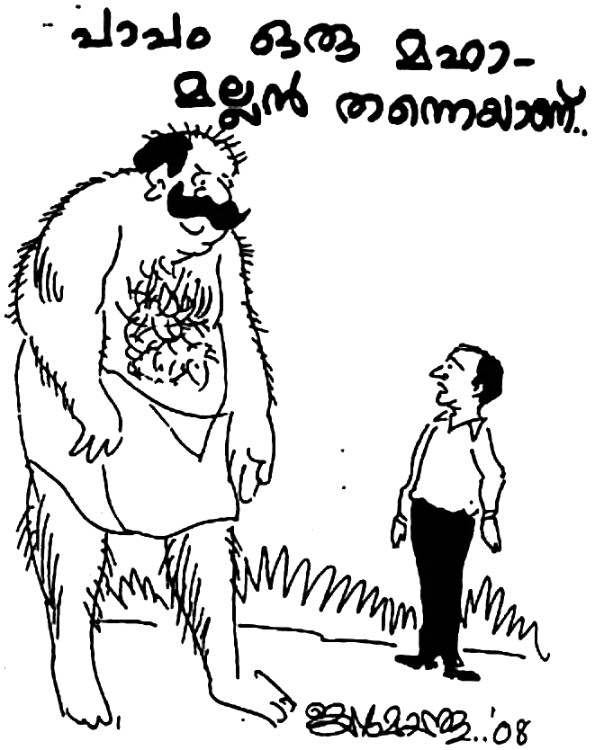“പാപം ഒരു മഹാമല്ലൻ തന്നെയാണെന്നതിനു രണ്ടു് പക്ഷമില്ല. എന്നാൽ, ഈ പാപം ആകുന്ന അനാക്യ മല്ലന്മാർ എത്ര വലുപ്പമുള്ളവരാണു് എന്നു് നോക്കുവാനല്ല ദൈവം നമ്മെ വിളിച്ചിരിക്കുന്നതു്. മറിച്ചു്, നമ്മുടെ ദൈവമായ കൎത്താവു് എത്ര വലിയവനാണു് എന്നു് വിശ്വസിക്കുവാനും പാപം ആകുന്ന മല്ലന്മാരെ നീക്കി കഴിഞ്ഞാൽ തോൽപിച്ചു കഴിഞ്ഞാൽ ലഭിക്കുന്ന വിശാലമായ കനാൻ ദേശം കാണുവാൻ നമ്മുടെ വിശ്വാസത്തിന്റെ ദീർഘ വീക്ഷണം തന്നെ വേണം. ആത്മീയ കനാൻ ദേശം ഒരു ദൈവ പൈതലിനു് അവകാശമായി ലഭിക്കാനുള്ള ഏകമാൎഗ്ഗം അവിടെ ഉള്ള മുഴുവൻ ജാതിയെയും മുഴുവൻ പാപത്തെയും കീഴടക്കുക, തോൽപിക്കുക, കാൽക്കീഴെ ചതയ്ക്കുക എന്നതു് മാത്രമാണു്.
“യിസ്രായേൽ മക്കൾ അങ്ങനെ ചെയ്തില്ല. അവർ ചില മല്ലന്മാരെയും ചില ജാതികളെയും മാത്രം തോൽപിച്ചു. പിന്നെ അവർ അലസസന്മാരായി. ഇതു് മതി എന്നു് ചിന്തിച്ചു് കൊണ്ടു് ജഡിക സുഖം തേടി. ഫലമോ? വിശാലമായ ഒരു ദേശം അവൎക്കു് ലഭിച്ചില്ല. എന്നു് മാത്രമല്ല, വേഗത്തിൽ മല്ലന്മാരുടെ സന്തതി ശക്തി പ്രാപിക്കുകയും യിസ്രായേൽ മക്കളെ തോൽപിക്കുകയും ചെയ്തു. ഇതു് തന്നെ അല്ലേ ഇന്നത്തെ യിസ്രായേൽ ആയ നമുക്കും പറ്റിയതു് ? രക്ഷിക്കപ്പെട്ടു. നാലോ അഞ്ചോ പാപത്തെ കൊന്നു കീഴ്പ്പെടുത്തി. എന്നിട്ടു് എനിക്കു സ്വൎഗ്ഗം കിട്ടും എന്നു് ദിവാസ്വപ്നം കണ്ടു് കാലം കഴിക്കുന്നു. അതുകൊണ്ടു്, ക്രിസ്തു ശിഷ്യൻ അവന്റെ ഉള്ളിൽ ഉണ്ടാകേണ്ടതായ ആത്മീയ നാഥന്റെ ‘പാലും തേനും’ ഒഴുകുന്ന അവസ്ഥയിലെത്തുന്നില്ല. മറിച്ചു്, ഏതെങ്കിലും സംഘടനയെ ചുറ്റി പറ്റി എവിടെ കിട്ടും നാലു് കാശ് എന്ന ചിന്തയുമായി കഴിയേണ്ടി വരുന്നു. ഇതെത്ര ദുഃഖകരമാണു് ! ഇതാണോ ക്രിസ്തീയ ജീവിതം? ഇതാണോ സ്വൎഗ്ഗീയ ജീവിതം? ഒരിക്കലുമല്ല.
“രക്ഷിക്കപ്പെട്ട നമ്മൾ നാൾ തോറും നമ്മുടെ സ്വസ്ഥത നശിപ്പിക്കുന്ന, കണ്ണിൽ മുള്ളായും വിലാപ്പുറത്തു് കത്തിയായും തീരാൻ സാധ്യതയുള്ള ഓരോ പാപത്തെയും കണ്ടെത്തി അതിനെ കീഴടക്കുന്നതു് വരെ വിശ്രമിക്കരുതു്. പാപത്തെ ഭയക്കരുതു്. ദൈവത്തെ വിശ്വസിച്ചു കൊണ്ടു് ഇങ്ങനെ പറയുക, “യഹോവ നമ്മോടു് കൂടെ ഉണ്ടെങ്കിൽ നിശ്ചയമായും ഈ പാപത്തെ എനിക്കു് കീഴടക്കാൻ കഴിയും.” കോപം, ദ്രവ്യാഗ്രഹം, പിണക്കം, ഈൎഷ്യ, ശാഠ്യം, മത്സരം, അഹന്ത, സ്വാൎത്ഥത, നിഗളം, ദ്വന്ദപക്ഷം, കയ്പ്, മാനുഷിക മാനം തേടൽ, കപട ഭക്തി, ദുഷ്കാമം ഈവക അനേകം പാപ സ്വഭാവങ്ങൾ നമ്മിൽ മറഞ്ഞിരിക്കുന്നുണ്ടു്. ഓരോന്നിനെയും കണ്ടെത്തി നശിപ്പിക്കുവാൻ ദൈവം കൃപ നൽകട്ടെ.
“നിൎത്തരുതു്. ഈ ആയുസ്സിൽ ദൈവസന്നിധിയിൽ ചെന്നെത്തുന്നതു് വരെ നമുക്കു പോരാട്ടമുള്ളതു ജഡരക്തങ്ങളോടല്ല, സ്വർല്ലോകങ്ങളിലെ ദുഷ്ടാത്മ സേനയോടത്രേ. നമ്മെ പാപത്തിൽ നിന്നും അതിന്റെ ഫലമായ നിത്യ നരകത്തിൽ നിന്നും രക്ഷിക്കാനാണു് യേശു വന്നതു്. ആകയാൽ, പാപത്തോടു് പോരാടുന്നതിൽ നിങ്ങൾ പ്രാണത്യാഗത്തോളം എതിൎത്തു നിന്നിട്ടില്ലാ എന്നു് കൎത്താവു് പറയുന്നതു കേൾക്കുക.
‘ക്രിസ്തു തന്റെ ഐഹിക ജീവകാലത്തു തന്നെ മരണത്തിൽ നിന്നു് രക്ഷപ്പാൻ കഴിയുന്നവനോട ഉറച്ച നിലവിളിയോടും കണ്ണുനീരോടും കൂടെ അപേക്ഷയും അഭയ യാചനയും കഴിക്കയും ഭയഭക്തി നിമിത്തം ഉത്തരം ലഭിക്കയും ചെയ്തു. പുത്രൻ എങ്കിലും താൻ അനുഭവിച്ച കഷ്ടങ്ങളാൽ അനുസരണം പഠിച്ചു തികഞ്ഞവനായി, തന്നെ അനുസരിക്കുന്ന ഏവൎക്കും നിത്യരക്ഷയുടെ കാരണഭൂതനായി തീൎന്നു’ (എബ്രായർ 5:7-9).
“ആകയാൽ നമുക്കു് ധൈൎയ്യത്തോടെ കൃപാസനത്തിനു് അടുത്തുചെല്ലാം. കണ്ണുനീരോടും അഭയ യാചനയോടുംകൂടെ വിശ്വാസത്തോടെ പ്രാൎത്ഥിക്കാം. ദൈവം നിശ്ചയമായി പാപത്തെ നമുക്കു് കീഴ്പ്പെടുത്തി തരും.“
41
ഒരു ദിവസം പ്രഭാതം, സാധാരണ ദിവസം പോലെ ഭാൎയ്യ രാവിലെ എഴുന്നേറ്റു പ്രാൎത്ഥന കഴിഞ്ഞു് അടുക്കളയിലേക്കു് പോയി. എനിക്കാണെങ്കിൽ മറ്റെവിടെയെങ്കിലും യാത്ര പോകാനുണ്ടെങ്കിൽ എത്ര നേരത്തെയും എഴുന്നേൽക്കും. തിരക്കൊന്നും ഇല്ലെങ്കിൽ രാവിലെ ഏഴുമണി വരെ കിടക്കും. ഇതാണു് എന്റെ ശീലം.
എന്നാൽ രാവിലെ ഒരു ആറര മണി ആയിക്കാണും. തങ്കമണി വന്നു് എന്നെ ഉണൎത്തി, ‘ഇതാ! ഒന്നു് എഴുന്നേൽക്കൂ. ഇതൊന്നു നോക്കിയാട്ടെ.’
ഒരു മാല എന്റെ നേരെ തൂക്കി പിടിച്ചു കൊണ്ടു് അവൾ മൃദുവായി പറഞ്ഞു, ‘ഇതു മുക്കുപണ്ടമാണോ സ്വൎണ്ണമാലയാണോ?’
മാല എന്റെ കിടക്കയിലിട്ടു് അവൾ തന്റെ രാവിലത്തെ അടുക്കളയിലെ തിരക്കിലേക്കു് പോയി. മടങ്ങിപ്പോകുമ്പോൾ ഞാൻ പാതി ഉറക്കത്തോടെ വിളിച്ചു ചോദിച്ചു: ‘ഇതു് എവിടെ നിന്നു് കിട്ടി?’
ഭാൎയ്യയുടെ മറുപടി: ‘ഈർച്ചപ്പൊടിയിൽ നിന്നും കിട്ടിയതാ.’
ആ നാളുകളിൽ ഞങ്ങൾക്കു് പാചകത്തിനു് കത്തിക്കാൻ ഗ്യാസില്ല, സ്റ്റൗ ഇല്ല, വേണ്ടും പോലെ വിറകും ഇല്ല. മര മില്ലിൽ നിന്നും വാരുന്ന ഈർച്ചപ്പൊടി കൊണ്ടാണു് പാചകം. വൎഷത്തിൽ രണ്ടു് പ്രാവശ്യമായി മില്ലിൽ പോയി പൊടി കൊണ്ടുവരും.
ഞാൻ എന്റെ മകനോടു് പറഞ്ഞു; “മോനേ, മുറ്റത്തു പോയി ഒരു കരിങ്കല്ലിന്റെ കഷണം എടുത്തുകൊണ്ടു് വരിക.” ഞാൻ കിടക്കയിൽ നിന്നു് തന്നെ മാല കല്ലിൽ ഉരച്ചു നോക്കി. സ്വൎണ്ണം തന്നെ.
സ്വൎണ്ണമാലയാണെന്നു് കണ്ടപ്പോൾ എനിക്കു് അൽപം അസ്വസ്ഥതയാണു് ഉണ്ടായതു്. എന്റെ സ്വസ്ഥമായ ഉറക്കം കെടുത്തിയ സാധനം കിടക്കയിൽ ഇട്ടു് ഞാൻ പ്രാൎത്ഥിക്കാനിരുന്നു. പ്രാൎത്ഥിക്കുമ്പോൾ ചിന്തകളിൽ ആദ്യം തെളിഞ്ഞു വരുന്നതു് പിശാചിന്റെ ശബ്ദമാണു്. ‘നിനക്കു് ആ മാല ദൈവം തന്നതാണു്. ആരും അറിയുക ഇല്ല. നിന്റെ വിറകു പുരയിൽ നിന്നും കിട്ടിയ സാധനമല്ലേ. നിനക്കു് അതു് വിറ്റു് കടം വീട്ടാം.’ അതു് ഏകദേശം ഒന്നര പവൻ വരും. അന്നത്തെ വിലയ്ക്കു് 6000 രൂപയ്ക്കുണ്ടു്.
ഞാൻ പറഞ്ഞു: ‘അതു് സാധ്യമല്ല.’
വീണ്ടും പിശാചു് പറയുവാൻ തുടങ്ങി: ‘എന്നാൽ അതു് വിറ്റു് നിനക്കു ജീവകാരുണ്യ പ്രവൃത്തിക്കു് ഉപയോഗിച്ചു കൂടെ?’
“സാധ്യമല്ല.”
‘എന്നാൽ അതുകൊണ്ടു് നിനക്കു് പ്രാൎത്ഥനയ്ക്കു് വരുന്നവൎക്കു് ഭക്ഷണം കൊടുത്തുകൂടെ?’
“അതും സാധ്യമല്ല.”
ഇത്രയും ആയപ്പോഴേക്കും എന്റെ ക്ഷമ നശിച്ചു. എനിക്കു് മനസ്സിലായി, ഇതു് എന്റെ അനുഗ്രഹത്തെ തടയുന്ന പിശാചിന്റെ തന്ത്രമായ പ്രലോഭനമാണു്.
ഞാൻ സാത്താനോടു് പറഞ്ഞും: ‘സാത്താനേ, എന്നെ വിട്ടുപോ. നീ ദൈവത്തിന്റേതല്ല … ഈ സ്വൎണ്ണമാല ആരോ ഒരാളുടേതാണു്. അതു് ദൈവത്തിന്റേതല്ല, എന്റേതുമല്ല. ദൈവം തരുന്നതു് ഇങ്ങനെ അല്ല. ആകയാൽ ഈ സാധനം ഞാൻ കഷ്ടപ്പെട്ടാണു് എങ്കിലും ഉടമസ്ഥന്റെ കൈവശമെത്തിക്കും.’
ഈ തീരുമാനത്തോടു് കൂടെ എന്റെ ഉള്ളിൽ സമാധാനത്തിന്റെ നീരുറവ ഒഴുകാൻ തുടങ്ങി. ഞാൻ ദൈവത്തെ സ്തുതിച്ചു മഹത്വപ്പെടുത്തി. എന്റെ പ്രാൎത്ഥന കഴിഞ്ഞു.
ഞാൻ ആ സ്വൎണ്ണമാല കൊണ്ടു് പോയി തൂക്കി നോക്കി. ഒന്നര പവൻ കൃത്യമായിട്ടുണ്ടു്. ഞങ്ങൾ കഴിഞ്ഞ എട്ടു് മാസം മുമ്പാണു് ഈർച്ച പൊടി വാരിയതു്. അതിനും മുമ്പു് അൽപം പൊടി മിച്ചം ഉണ്ടായിരുന്നു. അതിന്റെ മുകളിലേക്കാണു് ഒരു വണ്ടി പൊടിയിട്ടതു്. അപ്പോൾ ഈ സാധനം കിട്ടിയ പൊടി കഴിഞ്ഞ കൊല്ലം വാരിയതാണു്. എങ്കിൽ പിന്നെ എങ്ങനെ യഥാൎത്ഥ ഉടമസ്ഥനെ കണ്ടെത്തും? എന്റെ ദൈവത്തിന്റെ കൽപ്പന എനിക്കു് അനുസരിച്ചേ മതിയാകൂ. മൂന്നു കിലോമീറ്റർ അകലെയുള്ള ഒരു മരമില്ലിൽ അന്വേഷിച്ചു. അവരുടെ വസ്തുക്കൾ ഒന്നും നഷ്ടപ്പെട്ടിട്ടില്ല എന്നു് പറയുവാൻ ഇടയായി.
വീണ്ടും മുമ്പു് പൊടി വാരിയ മില്ലിൽ അന്വേഷിച്ചു. അതിന്റെ ഉടമയ്ക്കു് എന്നെ അറിയാം. എന്റെ ചോദ്യം തീരുമ്പോഴേക്കും, അദ്ദേഹം പറഞ്ഞു: ‘മോഹനേട്ടാ, ഞങ്ങൾക്കു് ഒരു മാല നഷ്ടപ്പെട്ടിട്ടുണ്ടു്. ’
ഞാൻ ചോദിച്ചതു് മരമോ മറ്റോ നഷ്ടപ്പെട്ടിട്ടുണ്ടോ എന്നാണു്.”
“അദ്ദേഹം പറഞ്ഞു: ‘മരമൊന്നും നഷ്ടപ്പെട്ടിട്ടില്ല. ഇവിടെ പണിചെയ്യുന്ന എന്റെ സുഹൃത്തായ ഒരാളിന്റെ മാല നഷ്ടപ്പെട്ടിട്ടുണ്ടു്. ’
ഞാൻ ചോദിച്ചു: ‘എപ്പോഴാണു് ?’
‘ഏകദേശം പത്തു് മാസം മുമ്പു്.’
എനിക്കു് മനസ്സിലായി, ഇതു് യാഥാൎത്ഥ്യമാണു്. തുടൎന്നു ഉടമസ്ഥനുമായി വ്യക്തമായ തെളിവുകളുമായി വരാൻ പറഞ്ഞു.
പിറ്റേ ദിവസം മില്ലുടമയും മാലയുടെ ഉടമയും കൂടെ പണി എടുക്കുന്നയാൾ സാക്ഷിയുമായി വന്നു. മാലയുടെ തൂക്കവും മോഡലും കൃത്യമായി അവർ വിവരിച്ചു. അദ്ദേഹത്തിന്റെ വിവാഹത്തിനു ഭാൎയ്യ നൽകിയ മാലയാണു്. മില്ലിൽവച്ചു മരം (പ്ലാവു് ) അറക്കുമ്പോൾ വാൾ പൊട്ടിയതിന്റെ വെപ്രാളത്തിൽ തെന്നി മാറിയപ്പോൾ എങ്ങനെയോ കഴുത്തിൽ കിടന്ന മാല പൊട്ടി പോയതാണു് ; എനിക്കു ചെയിനായിട്ടാണു് കിട്ടിയതും. അവർ ആ പരിസരം മുഴുവൻ അരിച്ചു പെറുക്കിയെങ്കിലും കണ്ടെത്താൻ കഴിഞ്ഞില്ല. മില്ലിലെ കുഴിയിൽ നിന്നു് വാരിയ പൊടിയിലാണു് ഇതു് പെട്ടതും.
മാല തിരിച്ചേല്പിക്കുമ്പോൾ ഞാൻ അവരോടു് പറഞ്ഞു; “ഞാൻ വിശ്വസിക്കുന്ന യേശു ക്രിസ്തു പ്രപഞ്ചത്തിന്റെ സത്യമാണു്. നിനക്കു് ഒരുവൻ ചെയ്തു തരണം എന്നു് നീ ഇച്ഛിക്കുന്നതു് ആദ്യം അവനു ചെയ്തു കൊടുക്കുക എന്നു് ബൈബിളിൽ മത്തായി 7:12 ൽ പറയുന്നു. ഈ സത്യം ഞാൻ അറിയുകയും വിശ്വസിക്കുകയും ചെയ്യുന്നു. അതുകൊണ്ടു് നിങ്ങളും ഈ സത്യവചനം വിശ്വസിച്ചു് രക്ഷ പ്രാപിക്കുകയും മറ്റുള്ളവൎക്കു അങ്ങനെ തന്നെ ചെയ്തു കൊടുക്കുകയും ചെയ്യുക.”
പാരിതോഷികം തന്നതു് ഞാൻ സ്വീകരിച്ചില്ല. കാരണം സ്വൎണ്ണം കൊണ്ടുവരാൻ എനിക്കു് ചെലവൊന്നും ഉണ്ടായില്ലല്ലോ. ഈർച്ചപ്പൊടി കയറ്റാനാണല്ലോ ഞാൻ വണ്ടിക്കൂലി മുടക്കിയതു്. “സൗജന്യമായി ലഭിച്ചതു് സൗജന്യമായി കൊടുപ്പിൻ.”
പ്രിയമുള്ളവരേ, ഞാൻ എന്തിനാണു് ഈ അനുഭവം വിവരിച്ചതു് ? ഇതു നമ്മുടെ ബുദ്ധിയുപദേശത്തിനായി തീരട്ടെ. ഇന്നു് അനേകം ദൈവമക്കളെന്നു് അവകാശപ്പെടുന്നവർ പോലും വീണു് കിട്ടിയ വസ്തുക്കളെ സ്തോത്രം പറഞ്ഞു പോക്കറ്റിലാക്കുകയാണു് പലപ്പോഴും. എന്തുകൊണ്ടു് നാം ദൈവ വചനം അനുസരിക്കുന്നില്ല?
മനുഷ്യർ നിങ്ങൾക്കു് ചെയ്യണം എന്നു് നിങ്ങൾ ഇച്ഛിക്കുന്നതു് ഒക്കെയും നിങ്ങൾ അവൎക്കും ചെയ്യുവിൻ; ന്യായപ്രമാണവും പ്രവാചകന്മാരും ഇതു് തന്നെ.” മത്തായി 27:12.
ഈ വാക്യം ബൈബിളിലെ തങ്കക്കൽപ്പന എന്നാണു് വേദപണ്ഡിതന്മാർ പോലും അവകാശപ്പെടുന്നതു്. ഈ ഒറ്റ കൽപ്പന നാം പ്രമാണിച്ചാൽ അനവധി പ്രശ്നങ്ങൾക്കു് പരിഹാരമായി. എങ്ങനെയാണതു് ? എന്തുകൊണ്ടു് നാം വീണു് കിട്ടുന്ന നമ്മുടേതല്ലാത്ത വസ്തുക്കൾ എടുക്കാൻ പ്രേരിപ്പിക്കപ്പെടുന്നു? നമ്മുടെ ആരുടെയെങ്കിലും ഒരു വസ്തു അതു് സ്വൎണ്ണമോ, പണമോ, വിലയേറിയ മറ്റെന്തെങ്കിലും നഷ്ടപ്പെട്ടാൽ അതു് മടക്കി കിട്ടണം എന്നല്ലേ നാം ആഗ്രഹിക്കുന്നതു് ? അല്ല, അതു് പൊയ്ക്കൊള്ളട്ടെ എന്നു് നാം ആഗ്രഹിക്കുമോ? തീൎച്ചയായും ഒറ്റ മനുഷ്യനും തന്റെ വിലപ്പെട്ട വസ്തു നഷ്ടപ്പെട്ടാൽ പൊയ്ക്കൊള്ളട്ടെ എന്നു് ചിന്തിക്കുകയില്ല, മറിച്ചു് എങ്ങനെ എങ്കിലും അതു് തിരിച്ചു കിട്ടണമേ എന്നു് ഉപവസിച്ചു പ്രാൎത്ഥിക്കും. എന്നിട്ടും എന്തുകൊണ്ടു് നാം ദൈവകൽപ്പനയെ അവഗണിക്കുന്നു?
‘എന്നെ സ്നേഹിക്കുന്നവൻ എന്റെ കൽപ്പന കാത്തുകൊള്ളും’ എന്നു് ദൈവവചനം പറയുമ്പോൾ നാം അതു് അനുസരിക്കാതിരിക്കുമ്പോൾ ‘അവർ എന്റെ കൽപ്പന പുറകിൽ എറിഞ്ഞു കളയുന്നു’ എന്ന പ്രവാചകവാക്യം യാഥാൎത്ഥ്യമാവുക അല്ലേ?
ഒരിക്കൽ ഒരു സഹോദരൻ തന്റെ മാസികയിൽ ഒരു അനുഭവം എഴുതിയതു ഞാൻ വായിച്ചു. രണ്ടു് സഹോദരങ്ങൾ ഒരു ബസ്സ്റ്റോപ്പിൽ ഇരിക്കുമ്പോൾ ഒരു ബസ് അതിവേഗം അതു് വഴി കടന്നുപോയി. പെട്ടെന്നു് വലിയ ഒരു കെട്ടു് സാധനം ബസിന്റെ മുകളിൽ നിന്നും തെറിച്ചു വീണു. ഈ വിശ്വാസികൾ ആ വലിയ കെട്ടു് എടുത്തു നോക്കിയപ്പോൾ രണ്ടു് കട്ടിലും രണ്ടു് കിടക്കയും അതിൽ ഉണ്ടു്. അവർ അഞ്ചു് മിനിറ്റ് അതും കൊണ്ടു് ബസ്സ്റ്റോപ്പിൽ നിന്നതിനു ശേഷം സ്തോത്രം ചെയ്തു് ആ വലിയ കെട്ടും തലയിൽ ചുമന്നു വീട്ടിലേക്കു് പോയി. എന്നിട്ടു് അവർ പറയുകയാണു്, ‘ഞങ്ങൾ ഒരു കട്ടിലിനു വേണ്ടി പ്രാൎത്ഥിച്ചിരുന്നു. ഇപ്പോൾ രണ്ടു് കട്ടിലും കിടക്കയും ദൈവം തന്നിരിക്കുന്നു.’ ഇങ്ങനെ ആണോ ദൈവം തരുന്നതു് ?
നിങ്ങൾ മറിച്ചു് ഇങ്ങനെ ഒന്നു ചിന്തിച്ചു് നോക്കൂ: താങ്കൾ രണ്ടു് കട്ടിലും കിടക്കയും വാങ്ങി ബസിൽ കയറ്റി പോകുമ്പോൾ അതു് വഴിയിൽ നഷ്ടപ്പെട്ടാൽ ദൈവം മറ്റാർക്കോ അതു് എടുത്തു കൊടുത്തു എന്നു് പറഞ്ഞു നിങ്ങൾ ആശ്വസിക്കുമോ? അതോ ദുഃഖത്തോടെ അതു് അന്വേഷിച്ചു പോകുമോ?
അങ്ങനെ എങ്കിൽ സഹോദരാ, അന്യന്റെ മുതൽ ആഗ്രഹിക്കരുതു്. കൂട്ടുകാരന്റെ യാതൊന്നും മോഹിക്കരുതു് എന്ന കൽപ്പന നാം മറന്നു കളഞ്ഞുവോ? നിങ്ങൾ ദൈവത്തോടു പ്രാൎത്ഥിച്ചാൽ ദൈവം ഏതെങ്കിലും മനുഷ്യന്റെ വസ്തു മോഷ്ടിച്ചു നിങ്ങൾക്കു തരികയില്ല. കാരണം, അവിടുത്തേക്കു് അങ്ങനെ ചെയ്യുവാൻ കഴിയുകയില്ല. ദൈവം സത്യവാനാണു്.
ദൈവം നമ്മുടെ പ്രാൎത്ഥന കേൾക്കണമെങ്കിൽ ദൈവം പറയുന്നതു് നാം അനുസരിക്കുവാൻ ബാധ്യസ്ഥരാണു്. ‘എങ്കലേക്കു് തിരിയുവിൻ എന്നു് യഹോവ അരുളി ചെയ്യുന്നു. എന്നാൽ ഞാൻ നിങ്ങളിലേക്കു് തിരിയും.’
ദൈവത്തിന്റെ എല്ലാ നന്മകളും അനുഗ്രഹങ്ങളും വാഗ്ദത്തങ്ങളും വ്യവസ്ഥാപിതമാണു്. ദൈവവചനം ആകുന്ന വ്യവസ്ഥയിൽ കൂടെ നാം സഞ്ചരിച്ചാലേ നമ്മോടുള്ള വാഗ്ദത്തം നിവൎത്തിപ്പാൻ ദൈവത്തിനു ബാധ്യതയുള്ളൂ.
അഹരോനോടു് ദൈവം ഒരിക്കൽ പറഞ്ഞു, ‘നീ എന്നേക്കും പുരോഹിതനായിരിക്കും.’ എങ്കിലും ഏലി പുരോഹിതനോടു് ദൈവം അരുളി ചെയ്തു: ‘ആകയാൽ യിസ്രായേലിന്റെ ദൈവമായ യഹോവ ഇപ്രകാരം അരുളി ചെയ്യുന്നു; നിന്റെ ഭവനവും നിന്റെ പിതൃഭവനവും എന്റെ സന്നിധിയിൽ നിത്യം പരിചരിക്കും എന്നു് ഞാൻ കൽപിച്ചിരുന്നു നിശ്ചയം; ഇപ്പോഴോ യഹോവ അരുളി ചെയ്യുന്നതു്. അങ്ങനെ ഒരിക്കലും ആകയില്ല; എന്നെ മാനിക്കുന്നവരെ ഞാൻ മാനിക്കും; എന്നെ നിന്ദിക്കുന്നവർ നിന്ദിതരാകും’ (1 ശമൂവേൽ 2:30) ദൈവീക വ്യവസ്ഥകൾ ലംഘിച്ച ഏലിയുടെ കുടുംബത്തെ ദൈവം പൗരോഹിത്യത്തിൽ നിന്നും ഒറ്റയടിക്കു് നീക്കിക്കളയുന്ന കാഴ്ച നാം കാണാതെ പോകരുതു്. ‘നിന്റെ ഭവനത്തിൽ ഒരു വൃദ്ധനും ഉണ്ടാകാതവണ്ണം ഞാൻ നിന്റെ ഭുജവും നിന്റെ പിതൃഭവനത്തിന്റെ ഭുജവും തകൎത്തു കളയുന്ന നാളുകൾ ഇതാ വരുന്നു’ (1 ശമൂവേൽ 2:31).
ഒരു ദൈവ പൈതലിനെ അനുഗ്രഹിക്കാൻ ദൈവം സമ്പന്നനാണു്. അവിടുത്തെ നന്മ ലഭിക്കുന്നതു് ലോട്ടറി എടുത്തിട്ടല്ല. മറ്റുള്ളവരുടെ വസ്തു വീണു് കിട്ടുന്നതു് കൈക്കലാക്കിയിട്ടല്ല. അവിടുന്നു തന്റെ അടുക്കൽ വരുന്നവർക്കെല്ലാം കൊടുക്കുവാൻ സമ്പന്നനാണു്. ആകയാൽ നമുക്കു് ദൈവത്തെ വിശ്വസിക്കാം. ദൈവകൽപ്പന പ്രമാണിക്കാം!
ഞങ്ങൾ താമസിക്കുന്ന ദേശത്തു് ജനം എന്തെല്ലാം അപഖ്യാതി ഒരിക്കൽ പറഞ്ഞെങ്കിലും ഞാൻ സത്യത്തിൽ നടക്കുന്നവൻ എന്നു് ജനം അറിഞ്ഞപ്പോൾ അവർ ബഹുമാനത്തോടെ എന്നോടും കുടുംബത്തോടും ഇടപെടുവാൻ തുടങ്ങി. അനുസരണം യാഗത്തെക്കാളും ശ്രദ്ധിക്കുന്നതു് മുട്ടാടുകളുടെ മേദസ്സിനെക്കാളും നല്ലതു്. നാം വെളിച്ചത്തിന്റെ മക്കളല്ലോ. വെളിച്ചം ഇരുളിൽ പ്രകാശിക്കുന്നു.
42
അന്നു് ഒരു ഉച്ചസമയം ആയിക്കാണും. ഒരു സഹോദരൻ “പ്രെയ്സ് ദ ലോർഡ് ” പറഞ്ഞു കൊണ്ടു് പെട്ടെന്നു ഭവനത്തിൽ കയറി വന്നു. വന്നു കണ്ട പാടെ എന്നെ കെട്ടിപ്പിടിച്ചു.
തന്റെ പേരു രവി കുറുപ്പ്. കണ്ണൂർക്കാരനാണു്. തന്റെ ജീവിതാനുഭവങ്ങൾ പങ്കുവച്ചു. താൻ ഏറെ വൎഷങ്ങളായി വിദേശത്തു ജോലി ചെയ്യുന്നു. മദ്യപാനത്തിനു് അടിമപ്പെട്ട താൻ വൎഷങ്ങൾക്കു് മുമ്പു് യേശു ക്രിസ്തുവിൽ വിശ്വസിച്ചു രക്ഷിക്കപ്പെട്ടതാണു്. കണ്ണൂരിൽ വന്നപ്പോൾ, സഹോദരൻ വിജയമോഹനൻ കണ്ടു് പരിചയപ്പെടുത്തിയതാണു്. അങ്ങനെയാണു് എന്നെ കാണുവാൻ വന്നതു്. ഞാൻ എന്റെ അനുഭവങ്ങളും വിവരിച്ചു.
എല്ലാം ശ്രദ്ധിച്ചു കേട്ട താൻ, വീട്ടിലെല്ലാം ചുറ്റി നടന്നിട്ടു് എന്നോടു് ചോദിച്ചു: “ബ്രദറിനു കിണറില്ലേ?”
ഞാൻ പറഞ്ഞു; “അപ്പുറത്തെ പറമ്പിലുള്ള കിണറ്റിൽ നിന്നാണു് വെള്ളം കൊണ്ടുവരുന്നതു് ”
അപ്പോൾ ഞാൻ ഒരു കിണറിനു വേണ്ടി പ്രാൎത്ഥിച്ചു തുടങ്ങിയിട്ടു് ഏകദേശം രണ്ടു് വൎഷമായി. താൻ പ്രാൎത്ഥിച്ചു പോകാൻ നേരം എന്നോടു് ചോദിച്ചു: “സഹോദരൻ ഒരു സ്കൂട്ടർ കിട്ടിയാൽ ഉപയോഗിക്കാൻ കഴിയുമോ?”
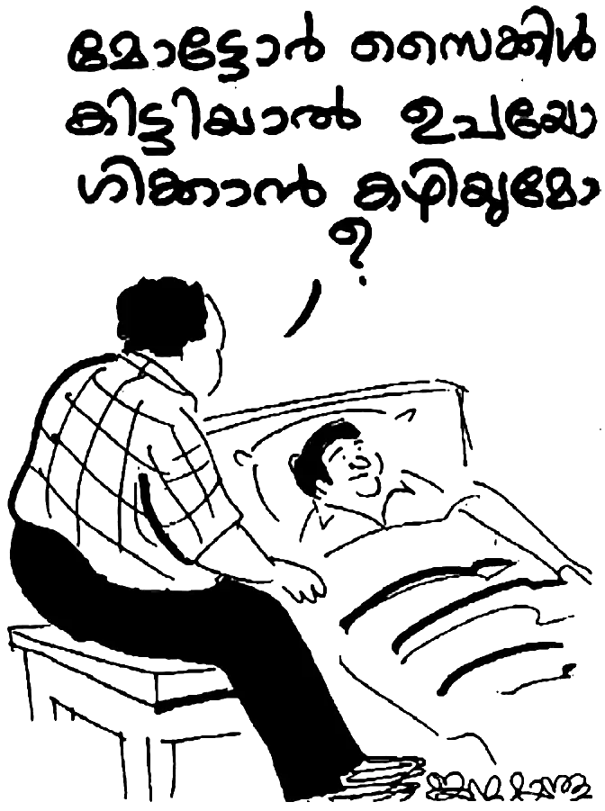ഇതു് പല നാളുകളായിട്ടുള്ള പ്രാൎത്ഥനയാണു്. ട്രൈസിക്കിൾ കറക്കി കയറ്റം കയറാൻ ആരുടെയെങ്കിലും സഹായത്തിനു കാത്തിരിക്കും. അപ്പോൾ, മനസ്സലിവുള്ള ചില ദേശവാസികൾ പറയും, ”മോട്ടോർ ഘടിപ്പിച്ചാൽ താങ്കൾക്കു് ഇത്ര കഷ്ടപ്പെടേണ്ടിയിരുന്നില്ലല്ലോ.”
ഞാൻ പറയും: “എല്ലാം ദൈവം തരും. അപ്പോൾ ആകട്ടെ.”
വൎഷങ്ങളിലെ വേദനയും സങ്കടവും കണ്ട ദൈവം ഇതാ ഇപ്പോൾ ചോദിക്കുന്നു: “മോട്ടോർ സൈക്കിൾ കിട്ടിയാൽ ഉപയോഗിക്കാൻ കഴിയുമോ?”
രവി കുറുപ്പ് പോയതിനു ശേഷം തന്റെ ചില സുഹൃത്തുക്കളുടെയും കൂടെ സഹായത്താൽ ഒരു സ്കൂട്ടർ വാങ്ങി. രണ്ടു് ചക്രങ്ങൾ കൂടെ ഘടിപ്പിച്ചു് ഒരു നാല് ചക്രമുള്ള വണ്ടിയാക്കി മാറ്റി. ഈ വാഹനം എന്റെ ജീവിതത്തിന്റെ വേഗത കൂട്ടി. അതുവരെ വീടിന്റെ രണ്ടു് കിലോ മീറ്റർ ചുറ്റളവിൽ യാത്ര ചെയ്തിരുന്ന എനിക്കു്, അരയ്ക്കു് താഴെ തളൎന്ന അനേകരെ (ഈ നാളുകൾ വരെ ഏകദേശം 105 വ്യക്തികളെ) ചെന്നു് കാണുവാനും അവരെ ആശ്വസിപ്പിക്കാനും ദൈവം കൃപ നൽകി.
കൂടാതെ, രണ്ടു് വൎഷത്തെ പ്രാൎത്ഥനാവിഷയം ആയിരുന്നു ഒരു കിണർ. അദ്ദേഹം മുഖാന്തരം ദൈവം ഏൽപ്പിച്ച 4500 രൂപ കൊണ്ടു് കിണർ കുഴിക്കണം. ഞാൻ ദൈവത്തോടു് പറഞ്ഞു: “കൎത്താവേ, ഇതിൽ ദശാംശം കഴിഞ്ഞാൽ 4000 രൂപയുണ്ടു്. 9 കോൽ കൊണ്ടു് വെള്ളം തരണം. 10 കോൽ കുഴിക്കാനുള്ള പണമേ ഉള്ളു.” ഒരാശാരിയെയോ പ്രശ്നക്കാരനെയോ വിളിച്ചില്ല. ഞാൻ തന്നെ പ്രാൎത്ഥിച്ചു് പണിക്കാരോടു് കുഴിക്കാൻ പറഞ്ഞു. അതിലും താഴ്ന്ന സ്ഥലത്തു് 13 തൊടിയിലാണു് വെള്ളം ഉള്ളതു്. ബുദ്ധിക്കു് നിരക്കാത്തതു ദൈവം ചെയ്തു. കൃത്യം 9 കോൽ ആയപ്പോൾ ദൈവം വെള്ളം തന്നു! ഇന്നു് കാരുണ്യാഭവന്റെ ആവശ്യം മുഴുവൻ നടക്കുന്നു. ദൈവം എത്ര വലിയവൻ! ദൈവം എത്ര നല്ലവൻ! യഹോവ നല്ലവനെന്നു് രുചിച്ചറിയുന്ന പുരുഷൻ ഭാഗ്യവാൻ.
നാം നമ്മുടെ യുക്തിയിൽ ആശ്രയിക്കാതെ വിശ്വാസത്തിൽ കാത്തിരുന്നാൽ ദൈവം സകലതും നന്നായി ചെയ്യും. നമ്മുടെ ജീവിതത്തിൽ ദൈവഹിതമല്ലാത്ത പരാതിയും പരിഭവവും ഈൎഷ്യയും പിണക്കവും മറ്റുള്ളവരോടു് അസൂയയും ഉണ്ടായി വരുന്നതു് എന്തു കൊണ്ടു് ? നാം ദൈവത്തെ വിശ്വസിക്കുന്നു; ദൈവത്തെ കുറിച്ചു പ്രസംഗിക്കുന്നു. പക്ഷേ ദൈവത്തെ അനുസരിക്കുന്നില്ല; ആശ്രയിക്കുന്നില്ല. പകരം, മനുഷ്യനിൽ ആശ്രയിക്കുന്നു.
“മനുഷ്യനിൽ ആശ്രയിക്കുന്നതിനെക്കാൾ യഹോവയിൽ ആശ്രയിക്കുന്നതു് നല്ലതു്. പ്രഭുക്കന്മാരിൽ ആശ്രയിക്കുന്നതിനെക്കാൾ യഹോവയിൽ ആശ്രയിക്കുന്നതു നല്ലതു് ” (സങ്കീൎത്തനം 118:8,9).
ദൈവവചനം ഇങ്ങനെ പറയുമ്പോൾ, നാം മനുഷ്യനിൽ ആശ്രയിച്ചാൽ ലജ്ജിച്ചു പോകും നിശ്ചയം. കാരണം, ഒരു മനുഷ്യനും, അതു് ആത്മീയനോ അനാത്മീയനോ ആരുമായിക്കൊള്ളട്ടെ, മറ്റൊരാളുടെ ആവശ്യങ്ങൾ മുഴുവനായി പരിഹരിക്കുവാൻ കഴിയുകയില്ല. ആകയാൽ ഏതവസ്ഥയിലും നാം മനുഷ്യനിൽ ആശ്രയിക്കാതെ ദൈവത്തിൽ ആശ്രയിച്ചാൽ, നമുക്കു് ദൈവത്തെ കാത്തിരിക്കാൻ കഴിയും.
“യഹോവയെ കാത്തിരിക്കുന്നവർ ശക്തിയെ പുതുക്കും; അവർ കഴുകന്മാരെ പോലെ ചിറകടിച്ചു കയറും;അവർ തളൎന്നു പോകാതെ ഓടുകയും ക്ഷീണിച്ചു പോകാതെ നടക്കുകയും ചെയ്യും” (യെശയ്യാവു് 40:31) എന്നു് ബൈബിൾ പറയുമ്പോൾ, എന്തുകൊണ്ടു നമുക്കതു വിശ്വസിച്ചു്, ദൈവത്തെ കാത്തിരുന്നുകൂടാ?
ഒരു പിതാവു തന്റെ കുഞ്ഞുങ്ങൾക്കു് ഏറ്റവും നല്ലതു് മാത്രം കരുതുന്നതു പോലെ ദൈവം തന്റെ കുഞ്ഞുങ്ങൾക്കു് ഏറ്റവും നല്ലതു് മാത്രം കരുതുന്നു. നാം നമ്മുടെ അറിവില്ലായ്മയിലും പക്വത ഇല്ലായ്മയിലും ദൈവത്തോടു് ചോദിക്കുന്നതു് മുഴുവനും ഒരു സ്നേഹപിതാവു് നൽകുകയില്ല എന്നതു സ്പഷ്ടം. എന്നാൽ അതെല്ലാം മൗനമായി കേട്ടതിനു ശേഷം വൎഷങ്ങൾ കഴിഞ്ഞാണു് നമ്മുടെ നന്മയ്ക്കായി സകലതും വ്യാപരിക്കുന്നതു്.
“യഹോവയുടെ കണ്ണു് തങ്കൽ ഏകാഗ്ര ചിത്തന്മാരായിരിക്കുന്നവൎക്കു് വേണ്ടി തന്നെത്താൻ ബലവാനെന്നു് കാണിക്കേണ്ടതിനു ഭൂമിയിലെല്ലാടവും ഊടാടി കൊണ്ടിരിക്കുന്നു” (2 ദിനവൃത്താന്തം 16:9).
എന്റെ 35 വൎഷത്തെ ആത്മീയ ജീവിതത്തിനിടയിൽ ഒരുപാടു് പ്രാവശ്യം നിലവിളിച്ചു പോയിട്ടുണ്ടു് എങ്കിലും ദൈവം എത്ര നല്ലവനെന്നു പറയുവാനല്ലാതെ ഒരിക്കലും ദൈവത്തോടു് പിറുപിറുത്തിട്ടില്ല. കാരണം, ഒരു ദൈവപൈതലിന്റെ ജീവിതത്തിൽ എല്ലാം നന്മയ്ക്കായി തീരണം എന്നു് ദൈവത്തിനു നിർബ്ബന്ധമുണ്ടു്.
എന്റെ ജീവിതത്തിൽ ചില കാൎയ്യങ്ങൾ പ്രാൎത്ഥിച്ച ഉടൻ ലഭിച്ചിട്ടുണ്ടു്. ചിലതു ദൈവം പറഞ്ഞിട്ടുള്ളതു്, “മകനേ, തരാം; അൽപ്പം കാത്തിരിക്കുക.” ചിലതു ദൈവം തന്നിട്ടേ ഇല്ല! എനിക്കു് പരാതിയുമില്ല. കാരണം, എനിക്കു് വേണ്ടി തിരഞ്ഞെടുക്കാൻ ഞാൻ ദൈവത്തെ അനുവദിക്കുന്നു. അവിടുന്നു തിരഞ്ഞെടുക്കുന്നതെല്ലാം എന്റെ നന്മയ്ക്കായാണു്. ചോദ്യം ചെയ്യാതെ അതിനു കീഴ്പ്പെടുവാൻ ഞാൻ ആഗ്രഹിക്കുന്നു. ഞാൻ ചോദിച്ചതെല്ലാം ദൈവം തരാറില്ല. എന്നാൽ, ഞാൻ ചോദിക്കാത്തതു പലതും ദൈവം തന്നിട്ടുണ്ടു്. അവിടുന്നു് എല്ലാം നന്നായി ചെയ്തെന്നു് നാം വായിക്കുന്നു.
ക്രിസ്തുവിൽ വിശ്വസിക്കുന്നു എന്നു് പറയുന്ന താങ്കൾക്കു് പാലിക്കാവുന്ന അഞ്ചു പടികൾ ഇതാ:
ഇങ്ങനെയുള്ളവൎക്കു് ദൈവത്തെ അനുഭവിക്കാം അഥവാ ആസ്വദിക്കാം. “യഹോവ നല്ലവനെന്നു് രുചിച്ചറിയുവിൻ.” ദൈവം നമ്മെ സഹായിക്കട്ടെ. “ദൈവം യിസ്രായേലിനു്, നിൎമ്മല ഹൃദയമുള്ളവൎക്കു് തന്നെ, നല്ലവൻ ആകുന്നു നിശ്ചയം” (സങ്കീൎത്തനം 73:1).
ദൈവത്തിൽ ഒരിക്കലും കുറ്റം ആരോപിക്കരുതേ. നമ്മുടെ ജീവിത യാത്രയിൽ എത്ര പ്രതികൂലങ്ങളിൽ കൂടി പോകേണ്ടി വന്നാലും ദാവീദിനോടു് ചേൎന്നു നമുക്കു് ഏറ്റുപറയാം: “കൂരിരുളിൻ താഴവരയിൽ കൂടി നടന്നാലും ഞാൻ ഒരു അനൎത്ഥവും ഭയപ്പെടുക ഇല്ല; നീ എന്നോടു് കൂടെ ഇരിക്കുന്നുവല്ലോ; നിന്റെ വടിയും കോലും എന്നെ ആശ്വസിപ്പിക്കുന്നു … നന്മയും കരുണയും എന്റെ ആയുഷ്കാലം ഒക്കെയും എന്നെ പിന്തുടരും; ഞാൻ യഹോവയുടെ ആലയത്തിൽ നിത്യകാലം വസിക്കും” (സങ്കീൎത്തനം 23:4,6).
43
വിശ്വാസ ജീവിതം പത്തു് വൎഷം കഴിയുന്ന ഒരു ദിവസം വഴിയിൽ വച്ചു് ഒരു മുസ്ലീം പുരോഹിതനുമായി കണ്ടു് മുട്ടുവാൻ ഇടയായി. കുശല പ്രശ്നത്തിനു ശേഷം അദ്ദേഹം ചോദിച്ചു: “എങ്ങനെ ജീവിതം കഴിയുന്നു?”
ഞാൻ പറഞ്ഞു: “ദൈവം പോറ്റുന്നു.”
വീണ്ടും ചോദ്യം: “അതു് കള, എങ്ങനെ ജീവിക്കുന്നു?”
ഞാൻ പറഞ്ഞു: “ദൈവം പോറ്റുന്നു.”
വീണ്ടും ചോദ്യം: “അതു് കള, എങ്ങനെ ജീവിക്കുന്നു?”
ഞാൻ പറഞ്ഞു: “ദൈവം പോറ്റുന്നു.”
അദ്ദേഹം എന്നോടു് പിന്നെ സംസാരിച്ചില്ല.
മറ്റൊരു ദിവസം ഒരാളെ കണ്ടു് മുട്ടി. ഞാൻ സുവിശേഷം പറഞ്ഞു. പിന്നെ അയാൾ ചോദിച്ചു: “എങ്ങനെ ജീവിതം നയിക്കുന്നു?” (വരുമാന മാൎഗ്ഗം എന്തു് എന്നാണു് ചോദ്യം).
ഞാൻ പറഞ്ഞു: “ഭാൎയ്യയുടെ വീതം അരയേക്കർ സ്ഥലമുണ്ടു്. ഒരു 7000 രൂപ ആദായം ലഭിക്കും. ബാക്കി ദൈവം നടത്തുന്നു.”
അദ്ദേഹം ചോദിച്ചു; “അതുകൊണ്ടു് ജീവിക്കാൻ കഴിയുമോ?”
അദ്ദേഹത്തെ വിട്ടു് ഞാൻ വീട്ടിലേക്കു് പോകാൻ സൈക്കിൾ കറക്കാൻ തുടങ്ങിയതും പെട്ടെന്നു് ദൈവശബ്ദം എന്നോടു് : “നീ നിന്റെ ഭാൎയ്യയുടെ വീതം കൊണ്ടാണോ ജീവിക്കുന്നതു് ?”
ഞാൻ പറഞ്ഞു; “അല്ല, കൎത്താവേ !”
“ഞാനാണു് നിന്നെ സംരക്ഷിക്കുന്നതെങ്കിൽ, നീ നിന്റെ ആദായത്തിൽ ആശ്രയിക്കുന്നതെന്തു് ”? ആ അരയേക്കർ വിൽക്കുക. പിന്നെ, ‘ദൈവം എന്നെ സംരക്ഷിക്കുന്നു’ എന്നു് ധൈൎയ്യപൂൎവ്വം സാക്ഷ്യം പറയാൻ നിനക്കു് കഴിയും.”
വീട്ടിൽ വന്ന ഞാൻ ഭാൎയ്യയോടു് ചോദിച്ചു; “തങ്കമണീ, നമുക്കു് നിന്റെ വീതം സ്ഥലം വിൽക്കാം.”
ഭാൎയ്യ ഉടൻ പറഞ്ഞു: “എല്ലാം ചേട്ടന്റെ ഇഷ്ടം. എനിക്കു് ഭൂമിയിൽ ഒരു സ്ഥലവും വേണ്ട. ദൈവം എന്തു പറഞ്ഞാലും അനുസരിക്കുക.”
ഞാനോൎക്കുകയാണു് ഇങ്ങനെ ഒരു ഭാൎയ്യയെ ദൈവം എനിക്കു് മുൻകൂട്ടി കണ്ടെത്തിയതിനാൽ കുടുംബ ജീവിതത്തിൽ തർക്കത്തിനോ വാഗ്വാദത്തിനോ ഇടയാകാതെ ദൈവത്തെ അനുസരിക്കാൻ വേഗത്തിൽ ഇട വന്നു.
പാലത്തിൻകടവിലുള്ള ഭാൎയ്യയുടെ വീതം സ്ഥലം സ്വന്തം അളിയനു തന്നെ നൽകി. 35,000 രൂപ പല ഗഡുക്കളായിട്ടാണു് ലഭിച്ചതു്. ദൈവം പറഞ്ഞതു പോലെ ചെയ്തതു കൊണ്ടു് 10,000 ലഘുലേഖ പ്രസിദ്ധീകരിച്ചു. അതിനു 3000 രൂപയായി. 5000 രൂപ കൊണ്ടു്, ആരും ഇല്ലാത്ത ഒരു സഹോദരന്റെ വിവാഹം നടത്തി. ശേഷിക്കുന്നതു് കൊണ്ടു് 7 സെൻറ്റ് സ്ഥലം വാങ്ങി. അതിൽ നിന്നു് 4 സെൻറ്റ് കാരുണ്യാഭവനത്തിനു വിട്ടു് കൊടുത്തു.
ഈ സ്ഥലം വിൽക്കുമ്പോൾ ഒരു ഭയം ഉള്ളിൽ ഇല്ലാതിരുന്നില്ല. ആകെ ഉള്ള ആദായമുള്ള സ്ഥലമാണു് വിറ്റതു്. എന്നാൽ ദൈവം പറഞ്ഞതു് അനുസരിച്ചപ്പോൾ ഇന്നും തിരിഞ്ഞു നോക്കി ദുഃഖിക്കേണ്ടി വന്നില്ല. അതിനു ശേഷം 24 വൎഷമായി ഈ കൂത്തുപറമ്പിൽ താമസം ആക്കിയിട്ടു്. റ്റാക്സിയിൽ ചുരുങ്ങിയതു് 2 ലക്ഷം കിലോമീറ്റർ യാത്ര ചെയ്തിട്ടുണ്ടു്. ദൈവം തന്ന മുച്ചക്രസ്കൂട്ടറിൽ 32,000 കിലോമീറ്റർ യാത്ര ചെയ്തു. ദൈവം തന്ന മാരുതി വാഹനത്തിൽ ഇപ്പോൾ 20,000 കിലോമീറ്റർ യാത്ര ചെയ്തു. ഭവനത്തിൽ അതിഥികളില്ലാത്ത ദിവസം കുറവു്. ഈ 29 വൎഷവും രണ്ടാളെങ്കിലും വീട്ടിൽ അധികമായി ഭക്ഷണത്തിനുണ്ടാകും. അതിനും ദൈവം ആവതാക്കി.
17 വൎഷമായി കാരുണ്യാഭവൻ തുടങ്ങിയിട്ടു്. മാസം കുറച്ചധികം രൂപയെങ്കിലും ചെലവുണ്ടു്. അതും ദൈവം തരുന്നു. ഇങ്ങനെ ഏറിയ വിധത്തിലും ദൈവം മുമ്പോട്ടുപോകുവാൻ വഴി ഒരുക്കി. ദൈവം എന്തു് ആവശ്യപ്പെട്ടാലും, അതു് സ്വന്തം ജീവൻ തന്നെയാണെങ്കിലും നൽകുവാൻ നാം സന്നദ്ധരാണെങ്കിൽ, നമുക്കാവശ്യമായ സകല കാൎയ്യങ്ങളും നമുക്കു് നൽകാൻ ദൈവം സന്നദ്ധനാണെന്നു നാം മനസ്സിലാക്കണം.
അബ്രഹാം അനുഗ്രഹിക്കപ്പെട്ടതു പോലെ, ക്രിസ്തു ശിഷ്യനും അനുഗ്രഹിക്കപ്പെടും എന്നു് നാം പഠിപ്പിക്കുമ്പോൾ, ഒരു കാൎയ്യം നാം മനസ്സിലാക്കിയാൽ നന്ന്. അബ്രഹാം എങ്ങനെ ദൈവത്തിനു കീഴടങ്ങി, എത്ര മാത്രം ദൈവത്തെ ഭയപ്പെട്ടു് അനുസരിച്ചു, അബ്രഹാം അതിനു കൊടുത്ത വില എന്തു് ? തന്റെ ജീവനും അബ്രഹാം ദൈവത്തിനു നൽകി. ഇതുകൊണ്ടാണു് തിരുവചനം (ബൈബിൾ) ഇങ്ങനെ പറയുന്നതു് : “ഭൗതിക നന്മകൾ നിനക്കു് ലഭിക്കണോ? ആദ്യം അവിടുത്തെ രാജ്യവും നീതിയും അന്വേഷിക്കുക. അതോടു് കൂടെ ഇതെല്ലാം നിനക്കു് ലഭിക്കും.” ഇതൊരു വ്യവസ്ഥയാണു് സഹോദരങ്ങളേ. ഈ വ്യവസ്ഥ തെറ്റിച്ചിട്ടു് ദൈവത്തെ നമുക്കനുകൂലം ആക്കാൻ കഴിയുകയില്ല. മറിച്ചു്, ദൈവം പറയുന്നതു് അനുസരിക്കുക മാത്രമേ പോംവഴി ഉള്ളൂ.
“എങ്കലേക്കു് തിരിയുവിൻ എന്നു് യഹോവ അരുളി ചെയ്യുന്നു; എന്നാൽ ഞാൻ നിങ്ങളിലേക്കു് തിരിയും” (സെഖര്യാവു് 1:3).
ജീവനുള്ള ദൈവം ഒരുപാടു് നന്മകൾ തന്റെ ജനത്തിനു വാഗ്ദത്തം ചെയ്യുന്നു. പലരും കരുതുന്നതു് പോലെ അതു് കേവല വിശ്വാസം കൊണ്ടു് നേടി എടുക്കാം എന്നാണ്; ഒരിക്കലുമില്ല. വിശ്വാസം എന്നതു് സത്യത്തിന്റെ ഒരു വശം മാത്രമാണു്. മറുവശത്തു് ദൈവത്തെ സ്നേഹിക്കുന്നവൻ ദൈവ കൽപ്പന പ്രമാണിക്കും. വിശ്വാസം പോലെ തന്നെ പ്രാധാന്യമേറിയതാണു് ദൈവത്തെ അനുസരിക്കുക എന്നതു്. തിരുവചനം എന്തു പറയുന്നു എന്നു് ഒന്നു ശ്രദ്ധിച്ചാൽ എത്ര നന്നായിരുന്നു!
താങ്കൾക്കു് ദൈവത്തിൽ നിന്നു് പാപക്ഷമ ലഭിക്കണം എന്നു് ആഗ്രഹിക്കുന്നു എങ്കിൽ, ദൈവം അതിനൊരു വ്യവസ്ഥ വച്ചിട്ടുണ്ടു്. അതു് അന്യന്റെ കടങ്ങൾ നിങ്ങൾ ക്ഷമിച്ചു കൊടുക്കുക എന്നതാണു്. സഹോദരനോടു് ഹൃദയപൂൎവ്വം ക്ഷമിക്കാഞ്ഞാൽ, ദൈവം നിന്റെ കടങ്ങളും ക്ഷമിക്കുകയില്ല. താങ്കൾ എന്തെങ്കിലും ലഭിക്കണം എന്നു് ആഗ്രഹിക്കുന്നെങ്കിൽ, ദൈവ വചനം പറയുന്നു: “കൊടുപ്പിൻ, എന്നാൽ നിങ്ങൾക്കു് കിട്ടും.”
നിങ്ങൾക്കു് ദൈവത്തിന്റെ ജഞാനിയാകണോ? ലോകത്തിൽ ഭോഷനായി മാറുക. ബലവാനായി തീരണമോ? ഒരു ബലഹീനനായിരിക്കുന്നതിൽ അഭിമാനിക്കുക. ഒന്നാമനാകണമോ? ഒടുക്കത്തവനായിരിക്കുക. മുമ്പനാകണമോ? പിമ്പനായിരിക്കുക. വലിയവനാകണമോ? ചെറിയവനായി തീരുക. യജമാനൻ ആയിരിക്കണമോ? മറ്റൊരുത്തനു ദാസനായി തീരുക. കിരീടം ലഭിക്കണമോ? ക്രൂശെടുത്തു് അനുഗമിക്കുക. സ്വൎഗ്ഗത്തിൽ നിക്ഷേപം വേണമോ? സകലവും വിട്ടു് ദൈവത്തെ അനുഗമിക്കുക.
അതുകൊണ്ടു്, ചിന്തിക്കുക. ദൈവത്തിന്റെ എല്ലാ വാഗ്ദത്തങ്ങളും വ്യവസ്ഥാപിതമാണു്, വ്യവസ്ഥ ഇല്ലാത്തതല്ല. ഇതു് മറക്കരുതു്. ഇന്ന് അനേകർ യേശു ക്രിസ്തുവിനെ വിശ്വസിക്കുന്നവരായുണ്ടു്. ശരി, വളരെ നല്ലതു് തന്നെ; എന്നാൽ വിശ്വസിക്കുക എന്നതു് മാത്രമല്ല ദൈവം ആഗ്രഹിക്കുന്നതു്. ‘മാനസാന്തരപ്പെട്ടു് സുവിശേഷത്തിൽ വിശ്വസിക്കുക’ എന്നതാണു് ആവശ്യം.
ഇന്നു് അനേകരും പഠിപ്പിക്കുന്നതു് “കൎത്താവായ യേശുവിൽ വിശ്വസിക്ക; എന്നാൽ നീയും നിന്റെ കുടുംബവും രക്ഷ പ്രാപിക്കും” (അ.പ്ര. 16:31). എന്തുകൊണ്ടാണു് സത്യത്തിന്റെ പകുതി മാത്രം പഠിപ്പിച്ചിട്ടു് മാറി നിൽക്കുന്നതു് ? ഇതും ബൈബിളിൽ ഉള്ളതു തന്നെയാണു്. എന്നാൽ ഏതു് സന്ദർഭത്തിലാണു് പൌലൊസ് ഇതു് പറയുന്നതെന്നു് നാം ചിന്തിക്കണം. മാനസാന്തരപ്പെട്ട (അനുതപിച്ചു) കാരാഗൃഹ പ്രമാണിയോടാണു് അപ്പൊസ്തലൻ പറയുന്നതു് “കൎത്താവായ യേശുവിൽ വിശ്വസിക്ക; എന്നാൽ നീയും നിന്റെ കുടുംബവും രക്ഷപ്രാപിക്കും” എന്ന്.
ഈ 35 വൎഷത്തിനിടയിൽ അനേകം വ്യക്തികളെ കണ്ടുമുട്ടുവാൻ ഇടവന്നെങ്കിലും, ദൈവവചനം ഉള്ളതു പോലെ പഠിപ്പിക്കുകയും അനുസരിക്കുകയും വിശ്വസിക്കുകയും ചെയ്യുന്ന ചുരുക്കം വ്യക്തികളേ ഉള്ളു. ബൈബിൾ പറയുന്ന ദൈവം സത്യവാനാണു്, സമ്പന്നനാണു്, സൎവ്വശക്തനാണു്, സൎവ്വജ്ഞാനിയാണു്, സകലസൽഗുണ പൂൎണ്ണനാണു്, കൃപയും കരുണയും ദീൎഘ ക്ഷമയും മഹാദയയും ഉള്ളവനാണു്. ദൈവം പരിശുദ്ധനാണു്, സ്നേഹവാനാണു് എന്നെല്ലാം നാം പറയുന്നു. അപ്പോൾ തന്നെ യേശു ക്രിസ്തുവിൽ വിശ്വസിക്കുന്നു എന്നു് പറയുന്നവർ തീരാദുഃഖത്തിലും അസമാധാനത്തിലും കഴിയുന്നു. പരാതിയും പരിഭവങ്ങളും കുറ്റപ്പെടുത്തലും ഉള്ളവരും സ്വസ്ഥത ഇല്ലാത്തവരും നിരാശപ്പെടുന്നവരും അവരിലുണ്ടു്. അവർ ദൈവവചനം കേൾക്കുന്നു. എങ്കിലും ചെയ്യുന്നില്ലതാനും.
കൎത്താവായ യേശു ഒരിക്കൽ ഇങ്ങനെ അരുളി ചെയ്തു: “നിങ്ങൾ എന്റെ വചനം കേൾക്കുന്നു എങ്കിലും ചെയ്യുന്നില്ല.”
“എന്നോടു് കൎത്താവേ, കൎത്താവേ, എന്നു് പറയുന്ന ഏവനുമല്ല, എന്റെ സ്വൎഗ്ഗസ്ഥപിതാവിന്റെ ഇഷ്ടം ചെയ്യുന്നവനത്രേ ദൈവരാജ്യത്തിൽ കടക്കുന്നതു് ” (മത്തായി 7:21).
“നിങ്ങൾ എന്നെ കൎത്താവേ, കൎത്താവേ, എന്നു് വിളിക്കുകയും ഞാൻ പറയുന്നതു ചെയ്യാതിരിക്കുകയും ചെയ്യുന്നതു് എന്തു് ? എന്റെ അടുക്കൽ വന്നു് എന്റെ വചനം കേട്ടു് ചെയ്യുന്നവൻ എല്ലാം ഇന്നവനോടു് തുല്യൻ എന്നു് ഞാൻ കാണിച്ചു തരാം. ആഴെ കുഴിച്ചു് പാറമേൽ അടിസ്ഥാനമിട്ടു് വീടു പണിയുന്ന മനുഷ്യനോടു് അവൻ തുല്യൻ. വെള്ളപ്പൊക്കം ഉണ്ടായിട്ടു്, ഒഴുക്കു് വീടിനോടു് അടിച്ചു; എന്നാൽ അതു് നല്ലവണ്ണം പണിതിരിക്ക കൊണ്ടു് അതു് ഇളകി പോയില്ല. കേട്ടിട്ടു് ചെയ്യാത്തവനോ അടിസ്ഥാനം കൂടാതെ മണ്ണിന്മേൽ വീടു് പണിത മനുഷ്യനോടു് തുല്യൻ. ഒഴുക്കു് അടിച്ച ഉടനെ അതു് വീണു; ആ വീടിന്റെ വീഴ്ച വലിയതുമായിരുന്നു” (ലൂക്കൊസ് 6:46-49).
ദൈവവചനമായ ബൈബിൾ നിങ്ങൾ വായിക്കുകയോ വിശ്വസിക്കുകയോ ചെയ്തതിനാൽ നിങ്ങളുടെ ജീവിതത്തിൽ ദൈവകൃപ പ്രാപിക്കുവാൻ കഴിയുകയില്ല. മറിച്ചു്, ദൈവം എന്തു് അരുളി ചെയ്തിരിക്കുന്നുവോ, അതു് അനുസരിച്ചു ചെയ്യേണ്ടിയിരിക്കുന്നു. വിശ്വാസം പ്രവൎത്തിയിൽ പ്രകടം ആകട്ടെ.
44
കൂത്തുപറമ്പിനടുത്ത കൈതച്ചാലിൽ താമസം ആക്കിയതിനു ശേഷം പ്രതികൂലങ്ങൾ അനവധി ഉണ്ടായി. ക്ഷാമവും എതിൎപ്പും നേരിട്ടുവെങ്കിലും ദൈവം തന്ന ആത്മാക്കളുമായി ഭവനത്തിൽ തന്നെ ആരാധന തുടങ്ങി. ലഭിക്കുന്നവരോടൊക്കെ സുവിശേഷം പങ്കിട്ടു. അങ്ങനെയിരിക്കെ, അരയ്ക്കു് താഴെ തളൎന്നു പോയ ചില വ്യക്തികളെ കത്തുകളിലൂടെ പരിചയപ്പെടാൻ കഴിഞ്ഞു.
ഈ വിധത്തിലായി കിടപ്പിലായ അഞ്ചു് പേരെ പരിചയപ്പെട്ടു. അതിൽ ഒരു സഹോദരന്റെ അമ്മ മരിച്ചു് പോയി, തന്നെ സംരക്ഷിക്കാൻ ആരും ഇല്ലാതായി. ഈ വിവരം എഴുത്തിൽ കൂടെ ഞാൻ അറിഞ്ഞപ്പോൾ, എന്റെ ഉള്ളം നൊന്തു് ഇങ്ങനെ പ്രാൎത്ഥിക്കാൻ ഇടയായി:
“കൎത്താവേ, അരയ്ക്കു് താഴെ തളൎന്നവരെ സംരക്ഷിച്ചു് ഈ രക്ഷ അറിയിക്കുന്നതിനു് ഒരു കാരുണ്യാഭവൻ പണിയുവാൻ അങ്ങ് ആരെയെങ്കിലും ചുമതലപ്പെടുത്തണമേ.”
എനിക്കു് പല സ്ഥാപനങ്ങൾ ജീവകാരുണ്യത്തിനായി പ്രവൎത്തിക്കുന്നതറിയാം. എങ്കിലും, ഈ അവസ്ഥയിൽ ആയിപോയ ജീവിതങ്ങളെ സഹോദര സ്നേഹത്തിൽ ശുശ്രൂഷിക്കുവാൻ ഒരു ഇടമാണു് ഞാൻ അപേക്ഷിച്ചതു്.
എന്നാൽ ദൈവം ഉടനടി ഉത്തരം നൽകി: “ഒരു കാരുണ്യാഭവൻ—അതു് നീ തന്നെ ചെയ്യുക.”
ഞാൻ അത്ഭുതപ്പെട്ടുപോയി! ഞാൻ കാരുണ്യാഭവനം പണിയുകയോ? ആ നാളുകളിൽ ലഭിച്ച ട്രൈസിക്കിളിന്റെ ഒരു ടയർ പഞ്ചറായപ്പോൾ അതു് മാറ്റുവാൻ 15 രൂപ എന്റെ കയ്യിൽ മിച്ചം ഇല്ലായ്കയാൽ കഴിഞ്ഞ ആറു് മാസമായി അതു് വെളിയിൽ കിടക്കുന്നു! അപ്പോഴാണു് ദൈവാത്മാവു പറയുന്നതു്, “കാരുണ്യാഭവൻ—അതു് നീ തന്നെ ചെയ്യുക.”
എന്റെ ബുദ്ധിയിൽ എനിക്കു് ആ സന്ദേശം തീരെ മനസ്സിലായില്ല. കാരണം, ഒരു ബലവാന്റെ കയ്യിൽ ഒരു ബലഹീനനെ ഏൽപിക്കുന്നെങ്കിൽ അതു് എന്റെ ബുദ്ധിക്കു് മനസ്സിലാക്കാം. എന്നാൽ ഒരു ബലഹീനനായ – പകുതി തളൎന്നു പോയ ഒരു മനുഷ്യനെ – അതേ പോലെയോ അതിൽ കൂടുതലോ ബലഹീനരായ വ്യക്തികളുടെ സംരക്ഷണം ഏൽപ്പിക്കുക എന്നു് പറയുമ്പോൾ അതു് ഇന്നും എനിക്കു് മനസ്സിലാവുന്നില്ല! എങ്കിലും ദൈവത്തിനു തെറ്റു പറ്റുകയില്ലാ എന്നു് ഞാനറിയുന്നു.
ദൈവശബ്ദത്തോടു് മറുത്തു പറയാതെ ബലഹീനതയിലും ചെയ്യാൻ കഴിയുന്ന ഒരേ ഒരു കാൎയ്യം പ്രാൎത്ഥിക്കുക എന്നതായിരുന്നു. ഞാൻ ബൈബിളിൽ ഉൽപത്തി മുതൽ വെളിപ്പാടു വരെ കണ്ടിട്ടുള്ള ഒരു കാൎയ്യം, മനുഷ്യൎക്കു അസാദ്ധ്യം ദൈവത്തിനു സാദ്ധ്യം എന്നതാണു്. അബ്രഹാമിനെ നോക്കുക. തൊണ്ണൂറ്റി ഒമ്പതാം വയസ്സിൽ ദൈവത്തിന്റെ അരുളപ്പാടു് തനിക്കുണ്ടായപ്പോൾ താനും ഭാൎയ്യയും ചിരിച്ചു് പോയി. എന്നാൽ, ദൈവത്തെ പൂൎണ്ണ ഹൃദയത്തോടെ വിശ്വസിച്ച അബ്രഹാം, ആശയ്ക്കു് വിരോധമായി ആശയോടെ വിശ്വസിച്ചു, ദൈവം പറഞ്ഞതിനായി കാത്തിരുന്നു. ഫലമോ? നൂറു വയസ്സുള്ളവനു മകൻ ജനിച്ചു. അങ്ങനെ കടൽക്കരയിലെ മണൽ പോലെ യിസ്രായേൽ ജനം ഉണ്ടായി.
നാലു് വൎഷം ഞാൻ പ്രാൎത്ഥിച്ചു കൊണ്ടിരുന്നു. അങ്ങനെയിരിക്കെയാണു് കോഴിക്കോട്ടു് നിന്നു് കെ.പി. ഗിരീഷ് എന്ന യുവാവിനെ പരിചയമായതു്. 21 വയസ്സു മാത്രം പ്രായം. പതിനാലാം വയസ്സിൽ തെങ്ങിൽ നിന്നു് വീണു് നട്ടെല്ലു തകൎന്നു കിടപ്പിലായതാണു്. ഗിരീഷ് എനിക്കെഴുതി. ചില എഴുത്തുകൾ കൈമാറി കഴിഞ്ഞപ്പോൾ, ഗിരീഷ് പറയുകയാണു് : “ചേട്ടാ, ഞാൻ അങ്ങോട്ടു് വരുന്നു.” എവിടെ? ഞങ്ങളുടെ കൊച്ചുവീട്ടിലേക്കു്. എനിക്കു മനസ്സിലായി—കാരുണ്യാഭവൻ പണിയുവാൻ പറഞ്ഞ ദൈവം എന്തോ കണ്ടിട്ടുണ്ടാകും.
ഒരു ദിവസം ഗിരീഷിനെ കോഴിക്കോട്ടു് നിന്നു് കൂട്ടി കൊണ്ടു് വന്നു. കിടക്കുന്നതിനു സ്ഥലമില്ല. അപ്പോഴാണു് ഒരു വിധവ ആദ്യമായി ഒരു സംഭാവന അയയ്ക്കുന്നതു് —കാരുണ്യാഭവൻ എന്ന പദ്ധതിക്കായി. അതുകൊണ്ടു ഗിരീഷിനു ചെറിയ ഒരു മുറി കൂട്ടിപ്പണിതു അവനു വേണ്ടുന്ന സൗകര്യം ഒരുക്കി.
വീട്ടിൽ വന്ന മൂന്നാം ദിവസം ഞാൻ ആ യുവാവിനോടു് യേശു ക്രിസ്തു കാൽവറി ക്രൂശിൽ നിൎവ്വഹിച്ച ദൈവസ്നേഹവും ദൈവനീതിയും എന്താണു് എന്നു് പറഞ്ഞുകൊടുത്തു. അന്നു രാത്രി അവൻ ഈ യേശുവിനോടു് ഹൃദയം തകൎന്നു പ്രാൎത്ഥിക്കാൻ തുടങ്ങി. എന്റെ മാനസാന്തരത്തിനു ശേഷം ഞാൻ കണ്ട അതേ പോലുള്ള അനുതാപമായിരുന്നു അതു്. എന്റെ ഉള്ളം കുളിൎത്തു.
ഒരു വൎഷം ഞങ്ങൾ ഒന്നിച്ചു് പാൎത്തു, ഒന്നിച്ചു് പ്രാൎത്ഥിച്ചു. ഒരു മകനെ പോലെ എന്റെ ഭാൎയ്യ അവനെയും പരിചരിച്ചു. ഞങ്ങൾക്കു് ഒന്നിനും മുട്ടുണ്ടായില്ല. പലരും ചോദിച്ച ചോദ്യം, കാരുണ്യാഭവൻ ഉണ്ടായാൽ അതിന്റെ പണച്ചെലവു് ആരു് വഹിക്കും എന്നായിരുന്നു. എന്റെ ലളിതമായ മറുപടി ഇതാണു് ; “എന്നെ 13 വൎഷം പോറ്റി പുലൎത്തിയ ദൈവം, ഇവരെയും പോറ്റി പുലൎത്താൻ മതിയായവനാണു്.”
അങ്ങനെയിരിക്കെ ഒരു ദിവസം ഞാൻ മുൻ അദ്ധ്യായങ്ങളിൽ പറഞ്ഞ ജോർജേട്ടൻ ദൈവാത്മ പ്രേരണയാൽ എന്റെ അടുക്കൽ വന്നു. എന്നോടു് പറഞ്ഞു: “മോഹനൻ നായരേ, വീടിന്റെ മുമ്പിലുള്ള സ്ഥലത്തു് എട്ടു് കോണ്ക്രീറ്റ് തൂണിനുള്ള പണി തുടങ്ങിക്കോളൂ.” ഞാൻ കരുതി ജോർജേട്ടൻ സമ്പന്നനാണു്, അദ്ദേഹം സഹായിക്കുമായിരിക്കും. അദ്ദേഹം പോയി.
ഞാൻ മൂന്നാളെ വിളിച്ച ആദ്യ ദിവസം കുഴി എടുത്തു. ഉച്ചയ്ക്കു പോസ്റ്റുമാൻ വന്നപ്പോൾ 150 രൂപ തന്നു. ആരോ ഒരാളെ ദൈവം പ്രേരിപ്പിച്ചതാണു്. പിറ്റേ ദിവസം നാലു് പേർ പണി എടുക്കുന്നു. കൂലി കൊടുക്കാൻ മാൎഗ്ഗമില്ല.
ഉച്ച ആകാറായപ്പോൾ, 65 കിലോമീറ്റർ ദൂരെ നിന്നു് രണ്ടു് പേർ വന്നു. എന്താണു് പണി എന്നു് തിരക്കി. ഞാൻ പറഞ്ഞു: “ഒരു കാരുണ്യാഭവൻ.” അവർ പോകുമ്പോൾ 200 രൂപ തന്നു. അന്നത്തെ കൂലി കൊടുത്തു. ശേഷം എട്ടു കുഴിയുമായി ആറു് മാസം യാതൊരു പണിയും നടക്കാതെ അവിടെ കിടന്നു.
എനിക്കു് സങ്കടം വന്നു. ഞാൻ ദൈവത്തോടു് അമൎഷപ്പെട്ടു: “ദൈവമേ, അവിടുത്തെ പദ്ധതി അല്ലെങ്കിൽ നാളെ ഞാൻ ഈ കുഴികൾ മൂടിക്കളയും. അവിടുന്നു് ഉടൻ വഴി തുറക്കണമേ.” പിറ്റേ ദിവസം എനിക്കു് ഒരിക്കൽ പോലും പരിചയം ഇല്ലാത്ത ഒരു സഹോദരൻ മുഖാന്തരം 5000 രൂപയുടെ ചെക്കു് സൗദിയിൽ നിന്നു് വന്നു. അങ്ങനെ കാരുണ്യാഭവൻ അടിസ്ഥാനമിട്ടു. ഓരോ ഘട്ടത്തിലും ഒരുപാടു് കണ്ണുനീർ കാരുണ്യാഭവന്റെ തറയിൽ പതിച്ചു. ഓരോ ഘട്ടത്തിലും ദൈവം അത്ഭുതകരമായി ചിലരെ ഉപയോഗിച്ചു.
ഒരിക്കൽ ഞാൻ കണ്ണൂരുള്ള ദൈവ സഭാഹാളിൽ ഒരു യോഗത്തിനു പോയി. ഒരാൾ എന്റെ അടുക്കൽ വന്നു കുശലം പറഞ്ഞു. ഞാൻ അനുഭവം പറഞ്ഞു. വൈകുന്നേരം ആയപ്പോൾ, സഭാ പാസ്റ്റർ ഡെന്നിസ് സ്ഫടികത്തോടു് അദ്ദേഹം ചോദിച്ചു: “അദ്ദേഹം പറഞ്ഞതു സത്യമാണോ?”
അദ്ദേഹം മറുപടി പറഞ്ഞു; “നിങ്ങൾക്കു് കഴിയുമെങ്കിൽ, ഏറ്റവും അർഹതയുള്ള മനുഷ്യൻ—സഹായിക്കാൻ മടിക്കേണ്ട.” അദ്ദേഹം 25,000 രൂപയുടെ ചെക്കു് എഴുതി തന്നു. അതുകൊണ്ടു് ഭിത്തി കെട്ടി. വീണ്ടും പ്രാൎത്ഥന തന്നെ ആയിരുന്നു എന്റെ ആശ്രയം.
മാസങ്ങൾ കഴിഞ്ഞപ്പോൾ, അദ്ദേഹം എനിക്കെഴുതി: “ആ കെട്ടിടത്തിന്റെ കോണ്ക്രീറ്റിങ്ങിനു് എത്ര രൂപ ചെലവു വരും?” എൻജിനീയറെ വിളിച്ചു് എസ്റ്റിമേറ്റ് തയ്യാറാക്കാൻ എനിക്കു് കാശില്ലായ്കയാൽ, ഞാൻ തന്നെ പ്ലാനും എസ്റ്റിമേറ്റും തയ്യാറാക്കി. എത്രയും കുറച്ചു് 75,000 രൂപയാകും എന്നു് പറഞ്ഞു. വീണ്ടും പ്രാൎത്ഥന തന്നെ. അദ്ദേഹം തന്റെ ചെറിയ സഭയിലെ 30 വ്യക്തികളോടും പറഞ്ഞു. അവർ എല്ലാവരും കൂടെ 75,000 രൂപ അയച്ചുതന്നു. കോണ്ക്രീറ്റ് കഴിഞ്ഞപ്പോൾ 92,000 രൂപയായി. അത്ഭുതവാനായ ദൈവം ഓരോ ഘട്ടത്തിലും തന്നെ ആശ്വാസത്തിന്റെ കരം നീട്ടി.
ഒരാൾ ഒരു മോതിരം വിറ്റു തന്നു. മറ്റൊരാൾ, തന്റെ റിട്ടയർമെന്റ് പ്രസന്റേഷൻ വിറ്റു കിട്ടിയതു തന്നു. ഇങ്ങനെ നാലു് വൎഷം എടുത്തെങ്കിലും ഏഴു് കട്ടിൽ ഇടുവാൻ വലിപ്പത്തിൽ ദൈവം കാരുണ്യാഭവന്റെ ആദ്യഘട്ടം പൂൎത്തിയാക്കി. അപ്പോഴേക്കും മുന്നു ലക്ഷം രൂപ ചെലവാക്കി കഴിഞ്ഞിരുന്നു.
ഇങ്ങനെ കാരുണ്യാഭവൻ പൂൎത്തിയാകുമ്പോഴേക്കും ഈ ബലഹീനനായ ഞാനും എന്റെ ഭാൎയ്യയും 14 വയസ്സുള്ള മകനും ഇതിൽ കൂടെ ചെലവായിപ്പോവുക ആയിരുന്നു. അവിശ്വാസികളിൽ നിന്നു് ഏതെല്ലാം തരത്തിലുള്ള എതിൎപ്പുകൾ അനുഭവിച്ചു! യിസ്രായേൽ ജനം യെരുശലേമിന്റെ മതിൽ പണിയുമ്പോഴും ആലയം പണിയുമ്പോഴും ഉണ്ടായതു പോലെ, കടലാസിൽ വിവരിക്കാൻ പറ്റാത്ത കാൎയ്യങ്ങൾ നിരവധിയുണ്ടായി. എങ്കിലും, നമ്മുടെ ദൈവത്തിന്റെ കൃപയാൽ ദൈവം അതു് സാധ്യമാക്കി തീൎത്തു.
ദൈവം നമ്മുടെ ബലത്തിൽ അല്ല പ്രവൎത്തിക്കുന്നതു്. ബലഹീനതയിൽ തികയുന്ന ശക്തിയാണു് ദൈവത്തിനുള്ളതു് എന്നറിയുന്നവർ സകലത്തിലും ദൈവഹിതത്തിനു കീഴടങ്ങും. അങ്ങനെ ഉള്ളവരിൽ കൂടെ ദൈവം ഈ ഭൂമിയിൽ വൻകാൎയ്യങ്ങൾ ചെയ്യും. എന്റെ കയ്യിൽ ലഭിച്ചതിലെല്ലാം വളരെ കുറച്ചു് മാത്രം വീട്ടിലേക്കു് ഉപയോഗിച്ചിട്ടു് ബാക്കിയെല്ലാം ഈ ദൈവീക പദ്ധതിക്കു വേണ്ടി മുടക്കി. അങ്ങനെ, ഇന്നു് കാരുണ്യാഭവനും സഭായോഗങ്ങളും ഒന്നിച്ചു നടക്കുന്നു. ദൈവത്തിന്റെ ആലോചന കേട്ടിട്ടു് ബുദ്ധിയോടു ചോദിക്കരുതു്. ദൈവാത്മാവിൽ വിശ്വസിച്ചു് മുന്നേറുക. ചെങ്കടൽ നമുക്കു് മുൻപിൽ പിളൎന്നു മാറട്ടെ.
പതിനഞ്ചു് വൎഷം മുമ്പു് കൂത്തുപറമ്പിൽ വന്ന നാളിൽ ദൈവം കാരുണ്യത്താൽ തന്ന ഭവനം ആകയാൽ ഞങ്ങളുടെ ഭവനത്തിനു “കാരുണ്യാഭവൻ” എന്ന പേരു നൽകി. ഏഴു വൎഷങ്ങൾക്കു് ശേഷം ആ കാരുണ്യം എന്നെ പോലെ ബലഹീനരായിരിക്കുന്ന മറ്റനേകൎക്കും പങ്കിടുവാൻ കാരുണ്യവാനായ ദൈവം കൃപ നൽകി. അങ്ങനെ ‘കാരുണ്യാ ചാരിറ്റബിൾ ട്രസ്റ്റ് ഫോർ ദി ഡിസേബിൾഡ് ’ എന്ന സ്ഥാപനം (ചെറുതാണെങ്കിലും) ദൈവം സാധ്യമാക്കി തീൎത്തു.
എന്റെ ദാരുണമായ അപകടവും അതിനെ തുടൎന്നുണ്ടായ ഭയാനകമായ തള്ളപ്പെടലും ഇങ്ങനെ മറ്റുള്ളവൎക്കു് പ്രയോജനപ്രദം ആക്കി തീൎത്തു. ദൈവത്തിനു് അനാദികാലം മുമ്പേ ഈ പദ്ധതി ഉണ്ടായിരുന്നു എന്നു് ഗ്രഹിക്കുവാൻ എനിക്കു് ആദ്യകാലങ്ങളിൽ കഴിഞ്ഞിരുന്നില്ല. മനുഷ്യ ജീവിതത്തിൽ സംഭവിക്കുന്ന എല്ലാ കാൎയ്യങ്ങളിലും ദൈവത്തിനു് ഒരു ലക്ഷ്യം ഇല്ലാതെ ദൈവം അനുവദിക്കുന്നില്ല. കാരണം, വെറുതെയോ അവിടുന്നു മനുഷ്യനെ കഷ്ടതയിൽ കൂടെ കടത്തി വിടുന്നതു്.
“കൎത്താവു് എന്നേയ്ക്കും തള്ളിക്കളയുകയില്ലല്ലോ. അവൻ ദുഃഖിപ്പിച്ചാലും, തന്റെ മഹാദയയ്ക്കു് ഒത്തവണ്ണം അവനു കരുണ തോന്നും. മനസ്സോടെ അല്ലല്ലോ അവൻ മനുഷ്യപുത്രന്മാരെ ദുഃഖിപ്പിച്ചു വ്യസനിപ്പിക്കുന്നതു് ” (വിലാപങ്ങൾ 3:31-33).
ഒരു മനുഷ്യനെയും കഷ്ടതയിലോ ദുഃഖത്തിലോ തള്ളിയിടണം എന്നു് ദൈവത്തിനു് ഉദ്ദേശ്യമില്ല. മനുഷ്യനെ നരകത്തിൽ നിന്നു് വീണ്ടെടുക്കണം എന്നു് ദൈവത്തിനു് ആഗ്രഹം ഉണ്ടു്. ഒരു തട്ടാൻ തന്റെ കൈയിലെ വിലയേറിയ സ്വൎണ്ണക്കട്ടി ഏറെ പ്രാവശ്യം തീയിലിട്ടു് ഉരുക്കി തന്റെ ഇഷ്ടപ്രകാരം ഒരു മനോഹരമായ ആഭരണം ആക്കി തീർക്കാൻ അദ്ധ്വാനിക്കുന്നതു് പോലെ, നമ്മുടെ ജീവിതം കഷ്ടതയാകുന്ന അഗ്നിയിൽ കൂടെ കടത്തി വിട്ടാലേ അതു് ആ രൂപത്തിലാക്കി തീർക്കാൻ കഴിയൂ. അതുകൊണ്ടു് ഫ്രസ്വമായ നമ്മുടെ ഭൗതിക ജീവിത പാതയിൽ പ്രതികൂലങ്ങളും പ്രതിസന്ധികളും അനുവദിച്ചാലും, നമ്മുടെ ആത്മീയ ജീവിതം ധന്യമാക്കി തീർക്കാമെങ്കിൽ സ്നേഹനിധിയായ ദൈവം അതു് അനുവദിക്കാൻ മടി കാണിക്കുകയില്ല. ഒരിക്കലും എന്റെ ബുദ്ധിക്കു് മനസ്സിലാക്കാൻ കഴിയാത്തതായിരുന്നു എന്റെ കഷ്ടത. അതു് പോലെ തന്നെ ആയിരുന്നു ഈ കഷ്ടത മറ്റുള്ളവരുടെ നന്മയ്ക്കാക്കി തീൎത്ത ദൈവീക പദ്ധതികളും.
ഒരു മനുഷ്യൻ എഴുപതോളം വൎഷം ഭൂമിയിൽ ജീവിക്കുന്നതല്ല ദൈവം വിലമതിക്കുന്നതു്. മറിച്ചു്, മനുഷ്യൻ നിത്യകാലം ദൈവത്തോടു് കൂടെ നിത്യ സൗഭാഗ്യത്തിൽ, മരണമോ ദുഃഖമോ മുറവിളിയോ വേദനയോ ഇല്ലാതെ സ്വൎഗ്ഗീയ പിതാവിനോടു കൂടെ വസിക്കണം എന്നതാണു് ദൈവഹിതം. അതുകൊണ്ടാണു് ദൈവവചനം പറയുന്നത്;
“തന്റെ ഏകജാതനായ പുത്രനിൽ (യേശുവിൽ) വിശ്വസിക്കുന്ന ഏവനും നശിച്ചു് പോകാതെ നിത്യജീവൻ പ്രാപിക്കേണ്ടതിനു ദൈവം അവനെ നൽകുവാൻ തക്കവണ്ണം ലോകത്തെ സ്നേഹിച്ചു” (യോഹന്നാൻ 3:16).
2003ൽ ആരംഭിച്ച കാരുണ്യാഭവൻ എന്ന സ്ഥാപനത്തിൽ, ഈ കഴിഞ്ഞ മൂന്നു വൎഷംകൊണ്ടു പതിനഞ്ചു് വ്യക്തികളെ (അരയ്ക്കു് താഴെ തളൎന്നവരെ) കൊണ്ടു് വന്നു ശുശ്രൂഷിക്കാനും അവൎക്കു് സമാധാന പ്രഭുവായ യേശു ക്രിസ്തുവിനെ പരിചയപ്പെടുത്തുവാനും ദൈവം കൃപ നൽകി. അവരിൽ പത്തു് പേർ ജീവനുള്ള ദൈവത്തെ അറിഞ്ഞു് പാപമോചനവും സമാധാനവും സന്തോഷവും പ്രാപിച്ചു് പ്രത്യാശ ഉള്ളവരായി ഭവനങ്ങളിൽ ജീവിക്കുന്നു.
കാരുണ്യാഭവനത്തിലെ ആദ്യവ്യക്തി കോഴിക്കോട്ടുകാരൻ ഗിരീഷ് തെങ്ങിൽ നിന്നു് വീണു് തളൎന്നു പോയ ആളാണു്. പിന്നെ അബ്ദുൾ ഖാദർ, രാജീവൻ, ഉണ്ണികൃഷ്ണൻ, ബാലൻ, രാജൻ, ശിവൻ, ജോസഫ്, രഞ്ജിത്തു്, മാത്യു, രാംദാസ്, പ്രഭാകരൻ, ഭാസ്കരൻ, മത്തായി, അബ്ദുൾ മജീദ്, സജീവൻ, പുരുഷൻ എന്നിവരെയും കാരുണ്യാഭവനിൽ കൊണ്ടു് വന്നു ശുശ്രൂഷിക്കാൻ കഴിഞ്ഞു.
അരയ്ക്കു് താഴെ തളൎന്നുപോയ 115 വ്യക്തികളെ ഈ കാലയളവുവരെ പരിചയപ്പെടാൻ ഇടയായി. ഇങ്ങനെയുള്ളവൎക്കു് സഖ്യത്തിനായി ഒരു ചികിത്സയും എങ്ങുമില്ല. രണ്ടു് മാൎഗ്ഗമേ ഞങ്ങളുടെ മുമ്പിലുള്ളൂ. ഒന്നു്, ദൈവം മനസ്സലിഞ്ഞു സൗഖ്യമാക്കണം. അല്ലെങ്കിൽ, വൈദ്യശാസ്ത്രം ഒരു കണ്ടു പിടിത്തം നടത്തണം. ഇതിൽ ഏതെങ്കിലും ഒന്നു സംഭവിക്കുന്നതുവരെ സ്പൈനൽ കോഡ് തളൎന്നവനു ജീവിക്കുവാൻ ദൈവീക പ്രത്യാശ ആല്ലാതെ മറ്റൊരു മാൎഗ്ഗമില്ല.
ആകയാൽ, ഈ ബലഹീന ജീവിതങ്ങൾ പലരും ആത്മഹത്യയുടെ മുമ്പിൽ നിന്നാണു് കാരുണ്യാഭവനത്തിൽ എത്തിയതു്. ഒന്നാമതു്, അവരെ ജീവനുള്ള പ്രത്യാശയിലേക്കു നടത്തുക. രണ്ടാമതു്, അവരെ ബോധവൽക്കരിക്കണം. പിന്നെ അവൎക്കു് വേണ്ടതായ ഫിസിയോതെറപ്പി, ഉപകരണങ്ങൾ, വീൽച്ചെയറുകൾ സന്നദ്ധ സംഘടനകളുടെ സഹായത്താൽ സംഘടിപ്പിച്ചു് നൽകുക; ഗവണ്മെന്റ്റിൽ നിന്നു് ലഭിക്കുന്ന സഹായങ്ങളെ കുറിച്ചുള്ള ഉപദേശം നൽകുക. എല്ലാറ്റിനും അവസാനം, സാധിക്കുന്നവൎക്കു് ചെയ്യാൻ കഴിയുന്ന ചെറിയ കൈത്തൊഴിലുകൾ അഭ്യസിപ്പിക്കുക.
ഇങ്ങനെ ആൎക്കും വേണ്ടാതെ തള്ളപ്പെട്ട ജീവിതങ്ങളെ സമൂഹത്തിന് ആവശ്യമുള്ളവരാണെന്ന സത്യത്തിലേക്കു് വഴി നടത്തുക എന്ന ലക്ഷ്യത്തോടെയാണു് കാരുണ്യാഭവൻ സ്ഥാപിച്ചതു്. വളരെ ചെറിയ സ്ഥലത്താണു് കാരുണ്യാഭവൻ നിലകൊള്ളുന്നതു്. ഇനിയും അതു് വികസിക്കേണ്ടതിനും ആയിരങ്ങളെ പാൎപ്പിക്കുന്ന സ്ഥാപനമായി തീരേണ്ടതിനും നിങ്ങളുടെ വിലയേറിയ പ്രാൎത്ഥന അപേക്ഷിക്കുന്നു.
ഒരു ദിവസം മോഹനന്റെ മാതാപിതാക്കൾ താമസിക്കുന്ന കൂട്ടുപുഴ എന്ന സ്ഥലത്തേക്കു് അതിരാവിലെ സ്കൂട്ടർ ഓടിച്ചുപോവുകയാണു്. മട്ടന്നൂരിനപ്പുറം എത്തിയപ്പോൾ ഇതേ പോലെ ഒരു മുച്ചക്ര സൈക്കിളിൽ ഒരാൾ എതിരെ വരുന്നു. അയാൾ ഒരു ലോട്ടറി വില്പനക്കാരനായിരുന്നു. എന്നു് മാത്രമല്ല, അദ്ദേഹം ഒരു ആർ.എസ്.എസ്. പ്രവൎത്തകൻ കൂടെ ആയിരുന്നു.
അയാൾ കൈ കാണിച്ചു. മോഹനൻ നായർ വണ്ടി നിൎത്തി. ലോട്ടറിക്കാരനോടു വിവരങ്ങൾ തിരക്കി. അഞ്ചു് മിനിറ്റുകൊണ്ടു് യേശുവിനെ കുറിച്ചുള്ള സുവിശേഷം അയാളോടു് പറഞ്ഞു. പാപത്തെ കുറിച്ചു് ബോധം വരുത്തുന്ന പരിശുദ്ധാത്മാവു് ആ മനുഷ്യന്റെ ഹൃദയത്തിൽ പ്രവൎത്തിച്ചു. അയാൾക്കു പശ്ചാത്താപമുണ്ടായി. യേശുവല്ലാതെ വേറെ രക്ഷാമാൎഗ്ഗമില്ലെന്നു മനസ്സിലായപ്പോൾ അയാൾ അവിടെവച്ചു് തന്നെ യേശു ക്രിസ്തുവിനെ രക്ഷകനും കൎത്താവുമായി സ്വീകരിച്ചു. എം. പ്രകാശ് തില്ലങ്കേരി എന്ന അദ്ദേഹം തലശ്ശേരിക്കടുത്തുള്ള മട്ടന്നൂർ സ്വദേശിയാണു്.
ആ മനുഷ്യൻ രക്ഷിക്കപ്പെട്ടു് കഴിഞ്ഞപ്പോൾ ഭീഷണികൾ ഉയൎന്നു. “ഇനിമേൽ ഈ നാട്ടിൽ കാലു കുത്തരുതു് ” എന്നായിരുന്നു ഭീഷണി. മോഹനൻ നായർ പറഞ്ഞു; “കാലു കുത്തുന്നതേ ഇല്ല”—ശരിയാണു്. കാലു കുത്താൻ കഴിയില്ലല്ലോ!
ഈ വാഹനത്തിലും ജീപ്പിലും യാത്ര ചെയ്തു മോഹനൻ നായർ നൂറ്റിപ്പതിനഞ്ചു് പേരെ കണ്ടെത്തി. അപകടങ്ങളിൽ അരയ്ക്കു് താഴെ തളൎന്നു പോയവരാണു് എല്ലാവരും. അവരിൽ പതിമൂന്നു പേരെ കാരുണ്യാഭവനിലേക്കു് കൊണ്ടു വന്നു. അവരെയെല്ലാം പരിചരിച്ചു് യേശുവിനെ പരിചയപ്പെടുത്തി. ഇതു് വെറുമൊരു സാമൂഹ്യ സേവനമല്ല. യേശുവിനെ അവൎക്കു് മനസ്സിലാക്കി കൊടുക്കുക എന്നതും നിരാശ്രയരായ അൎദ്ധ പ്രാണൎക്കു അഭയം നൽകുക എന്നതുമാണു് ഉദ്ദേശിക്കുന്നതു്. ഇതു് വിശാലം ആകേണ്ടിയിരിക്കുന്നു. ഇപ്പോൾ ആറു് പേൎക്കുള്ള സൗകര്യങ്ങൾ മാത്രമേയുള്ളു. കൂടുതൽ പേരെ സ്വീകരിക്കാൻ കൂടുതൽ സൗകര്യങ്ങൾ ഒരുക്കേണ്ടതുണ്ടു്.
ഗ്രന്ഥകാരൻ കാരുണ്യാഭവൻ സന്ദൎശിച്ചു. 2005 സെപ്റ്റംബർ മാസത്തിലായിരുന്നു അതെന്നു് തോന്നുന്നു. അപകടങ്ങളിൽപ്പെട്ടു് അരയ്ക്കു് കീഴെ തളൎന്നു പോയ ആറു് പേർ. എല്ലാം വിവിധ പ്രായത്തിലുള്ള ചെറുപ്പക്കാർ (ഒരു പ്രായംചെന്നയാളും). ചക്രക്കസേരകളിൽ അവർ കഴിയുകയാണു്. അവൎക്കു് സ്വയമായി പ്രാഥമികാവശ്യങ്ങൾ നിറവേറ്റത്തക്ക ക്രമീകരണങ്ങൾ കാരുണ്യാ ഭവനിലുണ്ടു്. ചക്രക്കസേരയിൽ തന്നെ കുളിമുറിയിലേക്കു പോകാം. പ്രത്യേക കുഷ്യൻ പ്ലാറ്റ്ഫോമിന്റെ നടുവിൽ ക്രമീകരിച്ചിരിക്കുന്ന ക്ലോസറ്റ് ഉപയോഗിക്കാം.
എല്ലാവരുടെയും വസ്ത്രങ്ങൾ കഴുകാൻ ഒരു സ്ത്രീയുണ്ടു്. അവർ ഒരു ക്രിസ്തീയ സഹോദരി കൂടിയാണു്. തങ്കമണിക്കു് അതൊരു ആശ്വാസമാണു്.മോഹനൻ നായരും തങ്കമണിയും അവരോടു് ഒപ്പമിരുന്നാണു് ആഹാരം കഴിക്കുന്നതു്. എല്ലാവൎക്കും ഒരേ ആഹാരം. ഇതെഴുതുന്നയാളും അവരോടൊപ്പമിരുന്നു് ആഹാരം കുഴിച്ചു. മോഹനൻ നായർ ദൈവവചനം വായിച്ചു പ്രബോധിപ്പിക്കുന്നതു് കേൾക്കേണ്ടതാണു്. ബൈബിൾ സ്കൂളിൽ പഠിച്ചിട്ടില്ലാത്ത, വലിയ വിദ്യാഭ്യാസം ഇല്ലാത്ത, മലയാളം എഴുതാനും വായിക്കാനും മാത്രമറിയുന്ന മോഹനൻ നായർ തിരുവെഴുത്തുകൾ അനേകൎക്കു് പങ്കിട്ടു കൊടുക്കുന്നു.
45
സാമൎത്ഥ്യമുള്ള ഭാൎയ്യയെ ആൎക്കു് കിട്ടും? അവളുടെ വില മുത്തുകളിലും ഏറും” (സദൃശവാക്യം 31:10). എന്റെ ഈ 59 വയസ്സുവരെ ഉള്ള ജീവിത യാത്രയിൽ ആരോഗ്യത്തോടെ നടന്ന 24 വൎഷവും കഷ്ടതയിലായ 35 വൎഷവും സംഭവ ബഹുലമായിരുന്നു എന്നു് ഈ പുസ്തകത്തിൽ നിന്നു വായനക്കാൎക്കു് മനസ്സിലാക്കാം. എന്നാൽ എന്റെ കഷ്ടതയിലായ 35 വൎഷത്തെ ദൈവത്തോടു കൂടെയുള്ള ജീവിത യാത്രയിലെ എല്ലാ പ്രവൎത്തനങ്ങളുടെ പിമ്പിലും അതിപ്രധാന പങ്കുവഹിച്ച ഒരു അണിയറ പ്രവൎത്തകയാണു് “തങ്കം” എന്നു് ഞാൻ വിളിക്കുന്ന ഭാൎയ്യ തങ്കമണി. എന്റെ പ്രവൎത്തനത്തെയാണു് മനുഷ്യർ വിലമതിക്കുന്നതെങ്കിൽ ദൈവം വിലമതിക്കുന്നതു് അതിനു പിൻബലം നൽകിയവരെ ആയായിരിക്കും.
ഇരുപത്തഞ്ചു് വയസ്സു കഴിഞ്ഞേ വിവാഹം കഴിക്കൂ എന്നു് തീരുമാനിച്ച എനിക്കു് ഇരുപത്തിമൂന്നാം വയസ്സിൽ വിവാഹം കഴിക്കേണ്ടി വന്നു. തിരിഞ്ഞു നോക്കുമ്പോൾ, അതു് ദൈവോദ്ദേശ്യം ആയിരുന്നു എന്നു് മനസ്സിലാക്കാൻ കഴിയുന്നു. യാദൃച്ഛികം എന്നു് പറയത്തക്ക വിധം 38 വൎഷം മുമ്പു് വീടു് വിട്ടു് 12 കിലോമീറ്റർ ദൂരെ ഒരു മുപ്പത്തഞ്ച് ഏക്കർ എസ്റ്റേറ്റിൽ ഒരു കാൎയ്യസ്ഥനായി ജോലി നോക്കേണ്ടി വന്ന എനിക്കു് ആ തോട്ടത്തിൽ കൂലിപ്പണി ചെയ്തു കൊണ്ടിരുന്ന പെണ്കുട്ടിയിൽ ഒരു ഉത്തമ സ്ത്രീയെ കണ്ടെത്തുവാൻ കഴിഞ്ഞു.
എനിക്കുള്ള ഭാവി വധുവായി തങ്കമണിയെ മനസ്സിൽ ചിന്തിച്ചപ്പോഴൊക്കെ ഞാൻ യുക്തിയിൽ എന്നോടു് തന്നെ പറഞ്ഞു, ‘വിവാഹത്തിനു ചിന്തിക്കാറായിട്ടില്ല.’ ആ ചിന്ത ഒരു യുവാവിന്റെ അതിരുവിട്ട ചിന്ത ആയിരിക്കും. എത്രത്തോളം എന്റെ ചിന്തയെ ഞാൻ വിലക്കിയോ, അത്രത്തോളം എനിക്കു് മനസ്സിൽ നിന്നു് പറിച്ചു് മാറ്റാൻ കഴിയാത്ത ഒരു വ്യക്തിയായി മാറി ആ യുവതി.
എന്റെ ഇരുപത്തി മൂന്നാം വയസ്സിൽ മാതാപിതാക്കളോടു് ഈ യുവതിയെ വിവാഹത്തിനു് ആലോചിക്കാൻ ആവശ്യപ്പെട്ടപ്പോൾ, അവർക്കതു തീരെ ഇഷ്ടപ്പെട്ടില്ല. കാരണം, ചെറുപ്പത്തിലേ അദ്ധ്വാനശീലയായ, പറയത്തക്ക സൗന്ദര്യം അവകാശപ്പെടാനില്ലാത്ത, പാവപ്പെട്ട ഒരു കുടുംബത്തിലെ നാലാമത്തെ മകളായിരുന്നു തങ്കമണി.
എന്നാൽ ഒരു വിവാഹത്തെ കുറിച്ചു് ആലോചിക്കുമ്പോൾ യുവതീ യുവാക്കൾ ചിന്തിച്ചിരിക്കേണ്ട ഏഴു് കാൎയ്യങ്ങളുടെ പൊരുത്തം (യോജിപ്പ് ) ഉണ്ടെന്നു് തോന്നുന്നു. അതിൽ അഞ്ചു് കാൎയ്യങ്ങളെങ്കിലും ഒത്തു വന്നാൽ വിവാഹത്തെ കുറിച്ചു് ചിന്തിക്കാം എന്നു് ഞാൻ കരുതുന്നു. എന്നാൽ, ഞാൻ കണ്ടെത്തിയ പെണ്കുട്ടിയിൽ ഈ ഏഴു് കാൎയ്യവും യോജിച്ചിരുന്നു.
ഞങ്ങൾ അന്നു സത്യദൈവത്തെ കണ്ടുമുട്ടിയിട്ടില്ലായിരുന്നു. എങ്കിലും 36 വൎഷം മുമ്പു് നടന്ന ആ വിവാഹം ദൈവീക കൂടിച്ചേരലായിരുന്നു എന്നു് ഇന്നെനിക്കു് ഉറപ്പുണ്ടു്. ഏറിയ മോഹന സ്വപ്നങ്ങളുമായി വിവാഹത്തിലേക്കു് പ്രവേശിച്ച ഞങ്ങളുടെ ജീവിതം എന്റെ ദാരുണമായ അപകടത്തോടെ ആകെ താറുമാറായി പോയി. ഒരു സ്ത്രീക്കു് ഇത്രമാത്രം ദുഃഖിക്കേണ്ടി വരുമോ എന്നു് ഞാൻ ചിന്തിച്ചു് പോയിട്ടുണ്ടു്.
എന്റെ ആശുപത്രി ചികിത്സാ കാലയളവിൽ മാതാപിതാക്കളുടെയും സഹോദരന്മാരുടെയും നിർബ്ബന്ധത്തിനു വഴങ്ങി എന്റെ അടുക്കൽ നിന്നു് തിരുവനന്തപുരത്തു് അവളുടെ ബന്ധുവീട്ടിലേക്കു് പോകേണ്ടിവന്ന തങ്കമണി, 1986 ജൂലായ് ആറാം തീയതി എന്റെ മകനു ജന്മം നൽകി. ഒരു ഭൎത്താവിന്റെ സാമീപ്യമോ സഹായമോ ഇല്ലാതായി പോയ ഒരു ഭാൎയ്യയുടെ മാനസിക വ്യഥ പറഞ്ഞറിയിക്കാൻ പറ്റാത്തതായിരുന്നു. പലപ്പോഴും കണ്ണുനീർ ആഹാരമായി തീൎന്ന തങ്കമണിയെ, മകൻ ജനിച്ചു പത്തു് മാസം കഴിഞ്ഞാണു് ഞാൻ കാണുന്നതു് തന്നെ. കുഞ്ഞുമായി മാതാപിതാക്കളോടു് കൂടെ അവളുടെ ഭവനത്തിലായിരുന്ന തങ്കമണിയെ രണ്ടര വൎഷത്തിനു ശേഷമാണു് ദൈവം വീണ്ടും എനിക്കു് നൽകിയതു്.
എന്നാൽ ഞങ്ങൾ ഒന്നിച്ചു് താമസിച്ചതിനു ശേഷം, അവളുടെ അദ്ധ്വാനവും കഷ്ടപ്പാടും കണ്ട ഞാൻ പലപ്പോഴും എന്റെ ദൈവത്തോടു് രഹസ്യമായി കരഞ്ഞു പറഞ്ഞിട്ടുണ്ടു് : “പിതാവേ, ഒരു ഭൎത്താവായിരുന്നിട്ടും ഒരു കൈ സഹായിക്കാൻ കഴിയാത്ത എന്നെ എന്തിനു ഭൂമിയിൽ ആക്കിയിരിക്കുന്നു?” എന്നിരിക്കിലും എന്റെ ഭാൎയ്യ പരാതി കൂടാതെ ഭവനത്തിലെ കാൎയ്യാദികൾ ചെയ്യുകയും കുഞ്ഞിനെ പോറ്റിപ്പുലൎത്തുകയും ചെയ്തു.
ഭാൎയ്യയുടെ വീതം സ്ഥലത്തു് ലഭിച്ച കൊച്ചു് വീട്ടിലേക്കു് എന്നെ കൊണ്ടു പോകുമ്പോൾ, വഹിക്കുവാൻ കഴിയാത്ത ഭാരമാണു് ഏറ്റെടുക്കുന്നതെന്നു് അവൎക്കു് ബോധ്യം ഉണ്ടായിരുന്നു. എങ്കിലും, ഭൎത്താവു് തന്റെ കൂടെ ഉണ്ടായിരുന്നാൽ മതി. എന്നാൽ എങ്ങനെയെങ്കിലും ജീവിക്കാം എന്ന ശുഭാപ്തി വിശ്വാസത്തോടെ അവൾ ഭൎത്താവിനു കീഴടങ്ങിയിരുന്നു.
ഒരിക്കൽ പോലും, തന്റെ അദ്ധ്വാനം കൊണ്ടാണു് ഭൎത്താവു ജീവിക്കുന്നതു് എന്നുള്ള ഒരു അഹന്ത അവളിൽ ഉണ്ടായിട്ടില്ല. വേല ചെയ്താൽ കിട്ടുന്നതു തുച്ഛമായ കൂലിയാണെങ്കിലും അതു് കൈകാൎയ്യം ചെയ്യാൻ ഭൎത്താവായ എന്റെ പക്കൽ ഏൽപ്പിച്ചിരുന്നു. ഒരിക്കലും ഒരു പത്തു് രൂപ പോലും സ്വന്തമായി കരുതണം എന്നു് വിചാരിക്കാതെ ഭൎത്താവു തലയാട്ടിയിട്ടുണ്ടെങ്കിൽ മതി എന്ന വിചാരത്താൽ, എപ്പോഴും വീട്ടിൽ പണസഞ്ചി ഒന്നായിരുന്നു. എന്നു് മാത്രമല്ല, ഭൎത്താവായ ഞാൻ പ്രാൎത്ഥിച്ചു് എടുക്കുന്ന യാതൊരു തീരുമാനത്തിനും അവൾ എതിരായിരുന്നില്ല. എത്ര നല്ല മാതൃക! ചില കാൎയ്യങ്ങൾക്കു് അഭിപ്രായ വ്യത്യാസങ്ങൾ ഉണ്ടായിട്ടില്ലെന്നല്ല. അതു് വിശ്വാസി ആയിത്തീരുന്നതിനു മുമ്പായിരുന്നു.
ഞങ്ങൾ കൂത്തുപറമ്പിലേക്കു് താമസം മാറിയതിനു ശേഷമാണു് എന്റെ ആത്മീയ ശുശ്രൂഷ ആരംഭിച്ചതു്. എന്നാൽ അവിടെയെല്ലാം എന്റെ മാനം ഉയൎത്താൻ കാരണമായതു് തങ്കമണിയുടെ നിസ്വാൎത്ഥമായ സേവനം ഒന്നു മാത്രമാണു്. അരയ്ക്കു് താഴെ തളൎന്നു പോയ പലരെ ഞാൻ കണ്ടു. എത്രയോ ഭാൎയ്യമാർ അവരുടെ ജഡിക സുഖം തേടി പോയി! ആ സാഹചര്യത്തിൽ ഏതു സ്ത്രീക്കും മാതൃകയായി ഇന്നും തങ്കമണി ജീവിക്കുന്നു.
ഒരു ബലഹീനനായ ഭൎത്താവിനെ ശുശ്രൂഷിക്കുക തന്നെ ശ്രമകരമായ ജോലിയാണെന്നിരിക്കെ കാരുണ്യാഭവൻ എന്ന ഭാരിച്ച ഉത്തരവാദിത്വം ഞാൻ ഏറ്റെടുത്തപ്പോഴും തങ്കമണിയുടെ ആത്മാൎപ്പണത്തെ ഓൎത്തു, ഞാൻ എന്റെ ദൈവത്തെ സ്തുതിക്കുന്നു.
ഉല്പത്തി പുസ്തകത്തിൽ, ദൈവം ആദാമിനെ സ്രഷ്ടിച്ചതിനു ശേഷം പറഞ്ഞ കാൎയ്യം തന്നെ നോക്കുക: “ഞാൻ മനുഷ്യനു തക്ക തുണയെ ഉണ്ടാക്കി കൊടുക്കും.” ദൈവം എന്റെ ജീവിതത്തിൽ തക്കതായ തുണ ആയിട്ടാണു് തങ്കമണിയെ തന്നതു്. തെറ്റു പറ്റാത്ത ദൈവം ലോകസ്ഥാപനത്തിനു മുമ്പേ നമ്മെ തിരഞ്ഞെടുക്കുകയും നാം ജനിക്കുന്നതിനു മുമ്പേ നമ്മുടെ പങ്കാളിയെ കണ്ടുവയ്ക്കുകയും ചെയ്തിട്ടുണ്ടു്. ഞാൻ എപ്പോഴെല്ലാം വിശ്വാസത്തിൽ ക്ഷീണിക്കുകയും നിരാശപ്പെടുകയും ചെയ്തിട്ടുണ്ടോ, അപ്പോഴൊക്കെ ഭാൎയ്യ പറയും, “സാരമില്ല; ചേട്ടൻ ഇങ്ങനെ ആയില്ലെങ്കിൽ നാം ജീവിക്കുന്ന ദൈവത്തെ അറികയില്ലായിരുന്നു.”
സാമ്പത്തിക ക്ലേശങ്ങൾ നേരിടുമ്പോൾ, എന്നെ വീണ്ടും ധൈൎയ്യപ്പെടുത്തും: “ദൈവം ഒരു അത്ഭുത വഴി തുറക്കാതിരിക്കില്ല.” ഈ വിധത്തിൽ പലപ്പോഴും എന്നെ ധൈൎയ്യപ്പെടുത്താനും വിശ്വാസത്തിൽ കൂട്ടാളി ആയിരിക്കാനും ഒരു ഭാൎയ്യ ഇല്ലായിരുന്നെങ്കിൽ എന്റെ അവസ്ഥ എന്താകുമായിരുന്നു എന്നു് ഞാൻ പലപ്പോഴും ചിന്തിച്ചുപോയിട്ടുണ്ടു്. ഇവിടെ വരുന്ന എല്ലാ ബലഹീന സഹോദരങ്ങൾക്കും നല്ലൊരു ചേച്ചി ആയിരിക്കാൻ അവൾക്കു് ദൈവം നൽകിയ കൃപയ്ക്കായി ഞാൻ ദൈവത്തിനു നന്ദി കരേറ്റുന്നു. ഈ പുസ്തക രചനയിൽ എന്നെ സഹായിച്ച ഗ്രന്ഥകൎത്താവു നേരിൽ അനുഭവിച്ചറിഞ്ഞ സത്യം ഇനി വായിക്കുക.
ഈ സമയത്തു് മോഹനൻ നായരുടെ ഭാൎയ്യ തങ്കമണിയെ കുറിച്ചു് എഴുതാതിരിക്കാൻ സാധ്യമല്ല. ഒരു നിലയിൽ പറഞ്ഞാൽ, മോഹനൻ നായരെക്കാൾ ഗ്രന്ഥകാരനെ ആകൎഷിച്ച വ്യക്തിത്വം സഹോദരി തങ്കമണിയാണു്.
മോഹനൻ നായർക്കു് അപകടം സംഭവിച്ചപ്പോൾ, തങ്കമണി നാലു് മാസം ഗർഭിണിയായിരുന്നു. മോഹനൻ ഇനിയൊരിക്കലും സുഖം പ്രാപിക്കുകയില്ലെന്നു് മനസ്സിലാക്കിയ തങ്കമണിയുടെ വീട്ടുകാർ, തങ്കമണിയെ അവരുടെ വീട്ടിലേക്കു് കൂട്ടി കൊണ്ടു് പോയി.
ഏതാണ്ടു് ദുരവസ്ഥയിലെ നായികയെ പോലെ, തനിക്കു് ഭവിച്ച ദുര്യോഗത്തിൽ വിഷമിച്ചു് ആ സഹോദരി സ്വഭവനത്തിൽ കഴിഞ്ഞു് കൂടി. നവവധു എന്നുതന്നെ പറയാവുന്ന സാഹചര്യത്തിൽ, വിധവയെ പോലെ ആകേണ്ടി വന്നുവല്ലോ എന്ന ചിന്താകുലം തങ്കമണിയെ ആകമാനം ഭരിച്ചു. ഭൎത്താവിന്റെ നിസ്സഹായ അവസ്ഥയോൎത്തു കൊണ്ടു കരയാനല്ലാതെ ആ സഹോദരി എന്തു ചെയ്യാൻ! തങ്കമണിയെ വീട്ടുകാർ ആശ്വസിപ്പിച്ചതു് ഇങ്ങനെ ആയിരുന്നു; “മോഹനൻ ഇനി എഴുന്നേൽക്കുക ഇല്ല. നിന്നെ ഞങ്ങൾ സംരക്ഷിച്ചു് കൊള്ളാം. നിന്റെ പ്രസവ ശുശ്രൂഷകളെല്ലാം ഞങ്ങൾ തന്നെ നോക്കി കൊള്ളാം. കുഞ്ഞിനെ ഞങ്ങൾ വളൎത്താം. നിന്നെ വേറെ ചെറുക്കനെ കൊണ്ടു് കല്യാണം കഴിപ്പിക്കാം.”
നിരന്തരമായി ഇതു് തന്നെ കേട്ടുകൊണ്ടിരുന്ന തങ്കമണി ആകെ ദുഃഖിതയായി. വീട്ടുകാരോടു് മറുത്തൊന്നും പറയാനൊക്കാത്ത അവസ്ഥ! മോഹനന്റെ സ്ഥാനത്തു് വേറൊരാളെ സങ്കൽപിക്കാൻ തങ്കമണിക്കു് ആവുമായിരുന്നില്ല. മോഹനൻ ജീവിച്ചിരിക്കെ വേറൊരു വിവാഹത്തെ കുറിച്ചു് ചിന്തിക്കാൻ തങ്കമണിക്കു് ഇഷ്ടം ഇല്ലായിരുന്നു.
അങ്ങനെ വീട്ടുകാരുടെ പ്രേരണയും സമ്മർദവും ഏറിവന്നപ്പോൾ ഒരു സംഭവമുണ്ടായി. തങ്കമണിയുടെ ഒരു സഹോദരൻ വിവാഹിതനായി. നവവധുവുമായി ആങ്ങള വീട്ടിലേക്കു് വന്നു. അപ്പോഴും വീട്ടിൽ നിന്നുള്ള പ്രേരണ കുറഞ്ഞിട്ടില്ലായിരുന്നു—പുനർവിവാഹം കഴിക്കാൻ. പുതുതായി വീട്ടിലേക്കു് വന്ന സഹോദര ഭാൎയ്യയോടു് തങ്കമണി ഇങ്ങനെ ചോദിച്ചു; “നാളെ എന്റെ ആങ്ങളയ്ക്കു് ഇതു് പോലെ അപകടം സംഭവിച്ചു തളൎന്നു പോയാൽ നാത്തൂൻ എന്തു ചെയ്യും? എന്റെ ആങ്ങളയെ ഉപേക്ഷിച്ചിട്ടു് വേറെ വിവാഹം കഴിക്കുമോ?” ഈ ചോദ്യത്തിനു മുന്നിൽ ആൎക്കും ഒന്നും പറയാനില്ലായിരുന്നു!
മോഹനൻ നായരുടെ നിരന്തരമായ പ്രാൎത്ഥനയുടെ ഫലവും, ദൈവത്തിന്റെ മുൻനിൎണ്ണയവുമാണു തങ്കമണിയെ കൊണ്ടു് അങ്ങനെ ഒരു തീരുമാനമെടുക്കാൻ പ്രേരിപ്പിച്ചതു്. തങ്കമണിയെ കൊണ്ടു് കൎത്താവു് ചെയ്യിക്കാനുദ്ദേശിക്കുന്ന പ്രവൃത്തികൾ അത്ര ശ്രേഷ്ഠമായിരുന്നു. ഭൎത്താവിനോടുള്ള സ്നേഹവും കരുതലും തങ്കമണിയെ ഉറച്ചുനിൽക്കാൻ പ്രേരിപ്പിച്ചു.
ആഹാരം വേണ്ട വിധത്തിൽ കഴിക്കാതെ ആകെ വിഷമിച്ചും നിരാശപ്പെട്ടുമിരുന്ന തങ്കമണി ഒരു മകനു ജന്മം നൽകി. തീരെ ആരോഗ്യം ഇല്ലാത്ത മെലിഞ്ഞ ഒരു കുഞ്ഞു് ! ഒരു കിലോ നൂറു ഗ്രാം മാത്രമായിരുന്നു തൂക്കം! ആ കുഞ്ഞുമായി ഭൎത്താവിന്റെ അടുത്തേക്കു് വരുന്നതു് മൂന്നു വൎഷത്തിനു ശേഷമാണു്.
മോഹനൻ നായരുടെ അടുത്തുവന്ന തങ്കമണി മോഹനൻ നായരിൽ യേശു ക്രിസ്തുവിനെ ദൎശിച്ചു. ഭൎത്താവിനു വന്നിരിക്കുന്ന ആന്തരികമാറ്റം തങ്കമണി കണ്ടറിഞ്ഞു. സൎവ്വലോകത്തിന്റെയും പാപത്തിനു പരിഹാരമായി കാൽവരിയിലെ കുരിശിൽ, നിന്ദ്യവും നികൃഷ്ടവുമായ മരണം വരിച്ച യേശു. മരണത്തെ ജയിച്ചു് ഉയിൎത്തെഴുന്നേറ്റ യേശു. ഈ യേശു ക്രിസ്തുവിൽ മാത്രമാണു് മനുഷ്യന്റെ ആത്മരക്ഷ എന്നു് തങ്കംമണി ഗ്രഹിച്ചു.
പാപികൾ ആയിരിക്കുമ്പോൾ തന്നെ മനുഷ്യൎക്കു് വേണ്ടി മരിച്ച യേശു കൎത്താവിനെ രക്ഷകനും കൎത്താവുമായി തങ്കമണി സ്വീകരിച്ചു. ഇന്നു് തങ്കമണി കൎത്താവായ യേശു ക്രിസ്തുവിന്റെ ഒരു ഭൃത്യയാണു്. “തങ്കം” എന്നു് മോഹനൻ നായർ വിളിക്കുന്ന തങ്കമണി ചെയ്യുന്ന ശുശ്രൂഷകൾ ഗ്രന്ഥകാരൻ കണ്ടറിഞ്ഞു. ആ സാധുവും ശാന്തശീലയുമായ സഹോദരിയെ കുറിച്ചു് മോഹനൻ നായർ പറയുന്ന കാൎയ്യങ്ങൾ കേട്ടപ്പോഴും അവരുടെ പെരുമാറ്റവും ശുശ്രൂഷകളും കണ്ടപ്പോഴും എഴുത്തുകാരന്റെ കണ്ണുകൾ നിറഞ്ഞൊഴുകി.
തങ്കമണി അത്രയും പേൎക്കു ആഹാരം ഒരുക്കുന്നു, പാത്രങ്ങൾ കഴുകുന്നു, വിളമ്പുന്നു, ഭൎത്താവിനെ പരിചരിക്കുന്നു. യാതൊരു പരാതിയും ഇല്ലാതെ! തങ്കമണിക്കു് അടിയന്തിരമായി ഒരു ശസ്ത്രക്രിയ (ഹിസ്റ്ററക്റ്റമി) നടന്നപ്പോൾ ജോലിക്കാരിയെ ആക്കി. തങ്കമണി ജോലി ചെയ്യുക അല്ലായിരുന്നു; കൎത്താവിനെന്ന പോലെ സേവനം (ശുശ്രൂഷ) ചെയ്യുക ആയിരുന്നു. ഇപ്പോഴും കാരുണ്യാഭവനിൽ അടുക്കളപ്പണിക്കു് ജോലിക്കാരില്ല. യാതൊരു പരാതിയും മടുപ്പും ഇല്ലാതെ ശുശ്രൂഷിക്കുന്ന തങ്കമണി ഇന്നത്തെ സ്ത്രീകൾക്കു് ഒരു മാതൃകയും വെല്ലുവിളിയുമാണു്.
മോഹനൻ നായർ പറയുന്നു: “എന്റെ ഭാൎയ്യ തങ്കമണി സ്വന്ത സുഖങ്ങളെല്ലാം വേണ്ടെന്നുവച്ചു് സ്വാൎത്ഥത ഇല്ലാതെ കൎത്താവിനെ ശുശ്രൂഷിക്കുന്നു. ജീവിതം ഒരു യാഗമായി തങ്കമണി സമൎപ്പിക്കുക ആയിരുന്നു.”
തങ്കമണിയെ കുറിച്ചു് പറയാൻ മോഹനൻ നായർക്കു് ഏറെയുണ്ടു്. അത്രയധികം കഷ്ടതകളാണു് ആ സഹോദരി സഹിച്ചതു്. ദിവസവും രാവിലെ കൂലി പണിക്കു പോകണം. സന്ധ്യയ്ക്കു് വന്നു കഴിഞ്ഞാൽ ആഹാരം പാകം ചെയ്യണം, തുണി അലക്കണം, ഭൎത്താവിനെയും മകനെയും പരിചരിക്കണം. എല്ലാം കഴിഞ്ഞു് കിടക്കുമ്പോൾ രാത്രി പതിനൊന്നു മണിയാകും. ആകെ ഉള്ള ആദായം എന്നതു് അരയേക്കറിലെ കശുവണ്ടിയാണു്. അതും പെറുക്കി എടുക്കണം. ഇങ്ങനെ ആയിരുന്നു പാലത്തിൻകടവിലെ ജീവിതം. കൎത്താവു് പ്രതിഫലം നൽകുന്ന ദിവസം, തങ്കമണിക്കു നല്ലൊരു ഓഹരി ലഭിക്കും എന്നാണു് മോഹനൻ നായർ പറയുന്നതു്.
മോഹനൻ നായരുടെയും തങ്കമണിയുടെയും കുടുംബ ജീവിതം ആരംഭിച്ചിട്ടു് മുന്നര ദശാബ്ദത്തിലേറെയായി. 1985 മേയ് 22നായിരുന്നു വിവാഹം. 1986 മാർച്ചു് എട്ടാം തീയതി മോഹനൻ നായർക്കു് അപകടം സംഭവിച്ചു. ഇന്നുവരെ ഏകഹൃദയത്തോടെ അഭിപ്രായ ഭിന്നത ഇല്ലാതെ ജീവിക്കാൻ കഴിയുന്നു. കാരുണ്യാഭവനിൽ താമസിക്കുന്നവൎക്കും ഒന്നേ പറയാനുള്ളു; “തങ്കമണിച്ചേച്ചി ഞങ്ങളുടെയും സഹോദരിയാണു്.”
ഈ ദമ്പതികളുടെ മകനെയും എഴുത്തുകാരനു കാണാൻ കഴിഞ്ഞു. ജയപ്രകാശ് പോളിറ്റെക്നിക് വിദ്യാൎത്ഥിയാണു്. ആരോഗ്യം ഇല്ലാതെ വേണ്ടത്ര ശരീരഭാരം ഇല്ലാതെ ജനിച്ച ജയപ്രകാശ് എസ്. എസ്. എൽ. സി. 450 മാൎക്കു് വാങ്ങി ജയിച്ചു. കോഴിക്കോട്ടു് ജോലി ചെയ്യുന്ന ജയപ്രകാശ് ആഴ്ചയിൽ ഒരിക്കൽ കാരുണ്യാഭവനിൽ എത്തും. സ്വപിതാവിനും മറ്റുള്ളവൎക്കും വേണ്ടുന്ന സഹായങ്ങൾ ചെയ്തു കൊടുക്കും. പിതാവിനും മറ്റുള്ളവൎക്കും എവിടെയെങ്കിലും പോകണം എങ്കിൽ വാൻ ഡ്രൈവു ചെയ്തു കൊണ്ടു് പോകും. ജയപ്രകാശ് ഒരു മാതൃകാജീവിതം നയിക്കുന്ന സഹോദരനാണു്.
ഓരോ ദിവസവും അത്ഭുതകരമായാണു് ദൈവം കാരുണ്യാഭവനെ നയിക്കുന്നതു്. നല്ലൊരു തുക ഓരോ മാസം ചെലവു വരുന്നുണ്ടു് ഇപ്പോൾ. സ്ഥിരവരുമാനമില്ല, സ്ഥിരം വാഗ്ദാനങ്ങളുമില്ല. അന്നന്നുള്ള അപ്പം നൽകും എന്നു് വാഗ്ദത്തം നൽകിയ കൎത്താവു് ഓരോ ദിവസവും വേണ്ടുന്നതു് നൽകുന്നു.
മോഹനൻ നായർ പറയുന്നു: “ഇങ്ങനെ ഒരിക്കൽ മനുഷ്യ ദൃഷ്ടിയിൽ അവസാനിച്ചു എന്നു് കരുതിയ ഒരു കുടുംബം അസാധ്യങ്ങൾ സാധ്യമാക്കുന്ന ദൈവത്തിന്റെ കരങ്ങളിൽ ഏൽപ്പിച്ചു കൊടുത്തു് ദൈവവഴികളിൽ ജീവിച്ചപ്പോൾ കാഴ്ചക്കാൎക്കു അസൂയ തോന്നുമാറു തളിൎത്തു പൂത്തു ഫലം പുറപ്പെടുവിച്ചു തുടങ്ങി.”
ഇന്നും മോഹനൻ നായർ ഇൻവാലിഡ് കാര്യേജ് സൈക്കിളിലും വാനിലുമായി സഞ്ചരിച്ചു് അനേകരെ സന്ദൎശിക്കുകയും സുവിശേഷം പങ്കിടുകയും രോഗികളെ ആശ്വസിപ്പിക്കുകയും ചെയ്യുന്നു. തങ്കമണിയും മകൻ ജയപ്രകാശും തങ്ങളാൽ ആവോളം ദൈവം ഭരമേൽപിക്കുന്ന ശുശ്രൂഷയ്ക്കു് ചുമൽ കൊടുത്തു സഹായിക്കുന്നു. ദൈവകൃപയാൽ ഒറ്റ നാമധേയ ക്രിസ്ത്യാനി പോലും ഇല്ലാത്ത സ്ഥലത്തു്, ഒരു കൂട്ടം വ്യക്തികൾ യേശു ക്രിസ്തുവിനെ രക്ഷകനും കൎത്താവുമായി സ്വീകരിച്ചു് ആരാധിക്കുന്നു. കാരുണ്യാ ഭവനിൽ കൂടി വന്നു് ഒരു ഭവനം എന്ന പോലെ അവർ പ്രാൎത്ഥിക്കുന്നു, കൂട്ടായ്മ ആചരിക്കുന്നു.
“ഭാൎയ്യയെ കിട്ടുന്നവനു നന്മ കിട്ടുന്നു; യഹോവയോടു് പ്രസാദം ലഭിച്ചുമിരിക്കുന്നു” (സദൃശവാക്യം 18:22).
“യഹോവയെ ഭയപ്പെട്ടു്, അവന്റെ വഴികളിൽ നടക്കുന്ന ഏവനും ഭാഗ്യവാൻ; നിന്റെ കൈകളുടെ അദ്ധ്വാന ഫലം നീ തിന്നും; നീ ഭാഗ്യവാൻ; നിനക്കു് നന്മ വരും. നിന്റെ ഭാൎയ്യ നിന്റെ വീട്ടിനകത്തു് ഫലപ്രദമായ മുന്തിരി വള്ളി പോലെയും നിന്റെ മക്കൾ നിന്റെ മേശയ്ക്കു് ചുറ്റും ഒലിവു തൈകൾ പോലെയും ഇരിക്കും. യഹോവാ ഭക്തനായ പുരുഷൻ ഇങ്ങനെ അനുഗ്രഹിക്കപ്പെട്ടവനാകും” (സങ്കീൎത്തനം 128:1-4).
ഇതത്രേ ദൈവത്തിന്റെ വാഗ്ദത്തങ്ങൾ. സ്നേഹിതാ, നമ്മുടെ കുടുംബ ജീവിതം എങ്ങനെയിരിക്കുന്നു? താങ്കളുടെ ജീവിതത്തിലേക്കു് ഈ രക്ഷകനായ യേശുവിനെ ക്ഷണിച്ചിട്ടുണ്ടോ? ഏതു പ്രതികൂലങ്ങളിലും ദൈവം ഒരു ദിവസം അനുകൂലമാക്കും.
“ദൎശനത്തിനു് ഒരു അവധി വച്ചിരിക്കുന്നു; അതു് സമാപ്തിയിലേക്കു ബദ്ധപ്പെടുന്നു; സമയം തെറ്റുകയുമില്ല; അതു് വൈകിയാലും അതിനായി കാത്തിരിക്ക; അതു് വരും നിശ്ചയം; താമസിക്കുകയുമില്ല” (ഹബക്കൂക് 2:3).
46
മക്കൾ യഹോവ നൽകുന്ന അവകാശവും ഉദരഫലം, അവൻ തരുന്ന പ്രതിഫലവും തന്നെ” (സങ്കീൎത്തനം 127:3). ഞാൻ കഷ്ടതയിലായി അഞ്ചു മാസങ്ങൾക്കു് ശേഷം 1986 ജൂലായ് ആറാം തീയതിയാണു് ഞങ്ങൾക്കു് ഒരു മകൻ ജനിക്കുന്നതു്.
എന്റെ ജീവിതത്തിലെ ദാരുണമായ ദുരന്തം നിമിത്തം ഭാൎയ്യ തങ്കമണി ശാരീരികവും മാനസികവുമായി ക്ഷീണിതയായി. അതിനാൽ ജന്മം കൊണ്ടു് മകൻ തീരെ തൂക്കം കുറഞ്ഞതും ഡോക്ടർമാരുടെ ദൃഷ്ടിയിൽ ജീവിക്കുമോ എന്നു് സംശയിക്കത്തക്ക വിധം അരിഷ്ടതയിൽ ആയിരുന്നു.
ഈ നാളുകളിലായിരുന്നു എനിക്കു് ദൈവത്തെ അറിയാൻ കാരണമായ വേദപുസ്തകം ലഭിക്കുന്നതു്. അന്നു മുതൽ ഈ കുഞ്ഞിനായി ഞാൻ മനസ്സുരുകി പ്രാൎത്ഥിച്ചു വന്നു. മകൻ ജനിച്ചപ്പോൾ അവനു ഞങ്ങൾ ജയപ്രകാശ് എന്നു് പേരിട്ടു. മുന്നു വൎഷത്തിനു ശേഷമാണു് എനിക്കു് മകനെ കണ്കുളിർക്കെ കാണാൻ പോലും കഴിഞ്ഞതു്.
എന്നാൽ, മകനുമായി ഒന്നിച്ചു് താമസിക്കാൻ കഴിയുന്നതിനു മുമ്പേ എനിക്കു് ദൈവത്തെ അറിഞ്ഞു രക്ഷിക്കപ്പെടുവാൻ കഴിഞ്ഞതിനാൽ മകനെ എങ്ങനെ വളൎത്തണം എന്ന കാൎയ്യത്തിൽ ബൈബിളിൽ നിന്നു് അനേക വാക്യങ്ങൾ കണ്ടെത്താൻ എനിക്കു കഴിഞ്ഞിരുന്നു. മക്കൾക്കു് ജന്മം കൊടുക്കുന്നതിൽ അല്ല മാതാപിതാക്കൾ ഏറ്റവും ശ്രദ്ധിക്കേണ്ടതു്. അവരെ ദൈവത്തിനും മനുഷ്യൎക്കും ഉപകാരപ്രദമാക്കി തീർക്കേണ്ടതിനു നാം ഏറ്റവും ശ്രദ്ധിക്കേണ്ടിയിരിക്കുന്നു. അല്ലെങ്കിൽ, ഈ കാൎയ്യത്തിൽ ദൈവത്തിനു കണക്കു് ബോധിപ്പിക്കേണ്ടിവരും, തീൎച്ച.
“പിതാക്കന്മാരേ, നിങ്ങളുടെ മക്കളെ കോപിപ്പിക്കാതെ കൎത്താവിന്റെ ബാല ശിക്ഷയിലും പത്മ്യോപദേശത്തിലും പോറ്റി വളൎത്തുവിൻ” (എഫെ. 6:4).
ഉത്തമ പൗരന്മാരായി മക്കളെ വളൎത്തി എടുക്കാൻ അവശ്യം വേണ്ട എല്ലാ നിർദ്ദേശങ്ങളും ദൈവവചനത്തിലുണ്ടു് എന്നു് മാത്രമല്ല ഒരു കുഞ്ഞിനു ജന്മം നൽകുവാൻ ഒരു പാത്രമായി ഒരു മാതാവിനെയാണു് ദൈവം ഉപയോഗിക്കുന്നതെങ്കിൽ, ജന്മംകൊണ്ടു് കഴിഞ്ഞാൽ പിന്നെ പിതാവിന്റെ ഉത്തരവാദിത്വം ഏറ്റവും വലുതാണു്. നാം അതു് ശ്രദ്ധിക്കാത്തതിനാൽ ഇന്നു് പല വിശ്വാസികളുടെയും മക്കൾ സമൂഹത്തിൽ മാതൃകയുള്ളവരായി കാണുന്നില്ല എന്നതു് എത്ര ദുഃഖകരമാണു് ! അതിന്റെ ഉത്തരവാദിത്വത്തിൽ നിന്നു് മാതാ പിതാക്കൾക്കു കൂട്ടുകാരെയോ, സമൂഹത്തെയോ, അദ്ധ്യാപകരെയോ പഴി പറഞ്ഞു രക്ഷപ്പെടുവാൻ കഴിയില്ല.
ദൈവം ഒരു മകനെ മാത്രമേ എനിക്കു് നൽകിയുള്ളു എങ്കിലും, അവനെ എങ്ങനെ വളൎത്തി എടുത്തു എന്നതിനെ കുറിച്ചാണു് ഇനി ഞാൻ പറയാൻ പോകുന്നതു്. മൂന്നു വയസ്സിനു ശേഷമാണു് എനിക്കു് മകനെ ലഭിച്ചതു്. എങ്കിലും, അന്നു മുതൽ മകനുമായി പിതാവായ എനിക്കു് ഒരു സുഹൃദ്ബന്ധം കൂടെ ഉണ്ടായിരുന്നു.
മൂന്നര വയസ്സു മുതൽ, അവന്റെ വിദ്യാഭ്യാസത്തിന്റെ ആദ്യക്ഷരങ്ങൾ അഭ്യസിപ്പിക്കുവാൻ ഞാൻ കട്ടിലിൽ കിടപ്പിലാണെങ്കിലും, കമിഴ്ന്നു കിടന്നു് നിലത്തു മണൽ വിരിച്ചു് അക്ഷരം പഠിപ്പിക്കുവാൻ തുടങ്ങി. അക്ഷരം പഠിക്കേണ്ട ആവശ്യകതയെ കുറിച്ചു് അവനെ ബോധവാനാക്കിയതിനു ശേഷം, ഒരു ദിവസം ആരംഭം കുറിച്ചു. ഏതു് കുഞ്ഞിനും സ്വാഭാവികമായി പഠിക്കാൻ താത്പര്യം ഇല്ലാത്തതു് പോലെ അവനും അത്ര അധികം താത്പര്യം ഉണ്ടായിരുന്നില്ല. ആദ്യ ദിവസം ഒരക്ഷരം പഠിച്ചു - “അ”. അര മണിക്കൂറേയുള്ളൂ പഠന സമയം; പിന്നെ അവനു കളിക്കാൻ പോകാം. ഇതായിരുന്നു ഞങ്ങൾ തമ്മിലുള്ള ഉടമ്പടി.
എന്നാൽ രണ്ടു് ദിവസം പഠിക്കാൻ സഹകരിച്ച ശേഷം, മൂന്നാം ദിവസം പഠിക്കുവാൻ വിളിച്ചപ്പോൾ മകൻ ഓടിക്കളഞ്ഞു. അവന്റെ അമ്മവീടാണു് താഴെയുള്ളതു്. അവിടേക്കാണു് മകൻ സ്ഥലം വിട്ടതു്. നടക്കുവാൻ കഴിയാത്ത പിതാവായ ഞാൻ ആവുന്നതു് വിളിച്ചു നോക്കി. അവൻ അനുസരിച്ചില്ല. അവൻ ഓടിപ്പോകുന്നതു് ജനലിൽ കൂടെ നോക്കുക അല്ലാതെ മറ്റു നിൎവ്വാഹമില്ല. എനിക്കു് വളരെ ദുഃഖം തോന്നി. ഞാൻ ഒരു പിതാവാണെങ്കിലും, ബലഹീനനായിരിക്കയാൽ മൂന്നര വയസ്സുള്ള മകൻ പോലും അനുസരിക്കുന്നില്ലെങ്കിൽ ഈ ജീവിതം എത്ര വേദനാജനകമാണു് ! മകനെ അനുസരണത്തിൽ വളൎത്തുവാൻ ആഗ്രഹിച്ച എനിക്കു് ആദ്യമായി ഒരു തിരിച്ചടി ഏറ്റതു പോലെയായി.
ഞാൻ മോനോടു് പറഞ്ഞു; “അച്ഛൻ പറഞ്ഞതു് അനുസരിച്ചില്ലെങ്കിൽ തല്ലു കൊള്ളും.” അതു് അവൻ കേട്ടതായി പോലും ഭാവിച്ചില്ല. മോൻ ഓടി പോയപ്പോൾ ഞാൻ വേദനയോടെ ദൈവത്തോടു് പ്രാൎത്ഥിച്ചു; “ദൈവമേ, ഈ മകനെ ഒരു ദൈവമകൻ ആക്കി തീർക്കേണമേ.”
അപ്പോഴാണു് “ബാലന്റെ ഹൃദയത്തോടു് ഭോഷത്വം പറ്റിയിരിക്കുന്നു; ശിക്ഷയ്ക്കുള്ള വടി അതിനെ അവനിൽ നിന്നു് അകറ്റിക്കളയും” എന്ന സദൃശവാക്യം (22:15) എന്റെ ഓൎമ്മയിലേക്കു് വന്നതു്. ഞാൻ ക്ഷമയോടെ കാത്തിരുന്നു.
ഏകദേശം ഉച്ചയായപ്പോൾ മകൻ കയറി വന്നു. മുന്നര വയസ്സേ ഉള്ളു എങ്കിലും ഞാൻ അടുത്തു പിടിച്ചിരുത്തി രാവിലെ അക്ഷരം പഠിക്കാൻ വരാത്തതിനെ കുറിച്ചു ചോദിച്ചു. എന്തുകൊണ്ടാണു് ഓടി പോയതു് എന്നു് ചോദിച്ചപ്പോൾ അവന്റെ മറുപടി; “അമ്മൂമ്മ പറഞ്ഞു അച്ഛൻ അടിക്കാൻ വിളിച്ചാൽ ഓടി പൊയ്ക്കൊള്ളണം. അച്ഛനു നടക്കാൻ കഴിയില്ലല്ലോ.”
അപ്പൂപ്പന്മാരും അമ്മൂമ്മമാരും മനസ്സലിവുള്ളവരായിരിക്കാം. അവർ ഒരിക്കലും കൊച്ചുമക്കളോടു് കൎശനമായി പെരുമാറുക ഇല്ല. ആകയാൽ, കൂട്ടുകുടുംബങ്ങളിൽ മക്കളെ ശിക്ഷിച്ചു വളൎത്താൻ മാതാപിതാക്കൾക്കു് കഴിയാറില്ല എന്നതു് സത്യമാണു്.
ഞാൻ മോനോടു് പറഞ്ഞു: “അച്ഛൻ പറയുന്നതു് മോൻ അനുസരിച്ചേ പറ്റൂ. അനുസരിച്ചില്ലെങ്കിൽ തെറ്റായ ശീലങ്ങളിൽ ചെന്നു് വീണു് പോകും.” അതുകൊണ്ടു് അനുസരണം കാണിക്കാഞ്ഞതിനു് ഈർക്കിൽ കൊണ്ടു് നല്ല ചുട്ട അടി നാലെണ്ണം എന്റെ മകനു നൽകേണ്ടി വന്നു.
ഇതു് വായിക്കുന്ന താങ്കൾ ചിന്തിച്ചേക്കാം മൂന്നര വയസ്സുള്ള മക്കളെ ഇങ്ങനെ ശിക്ഷിക്കാമോ? തുടൎന്നു കേൾക്കുക. മക്കൾക്കു് കാൎയ്യം പറഞ്ഞു മനസ്സിലാക്കി കൊടുത്തതിനു ശേഷം ശിക്ഷിച്ചാൽ അതു് ഒരിക്കലും ദോഷമായി തീരുകയില്ല.
മകനെ ശിക്ഷിക്കുന്നതു് കേട്ടു് അവന്റെ അമ്മുമ്മ ഓടി വന്നു. എന്നെ കണക്കിനു ശകാരിച്ചു. കുഞ്ഞിനു തെറ്റായ ഉപദേശം നൽകിയ അമ്മൂമ്മയോടു് എനിക്കു് പറയേണ്ടി വന്നു, “എന്റെ മകനല്ലെന്നു് പറയൂ. എന്നാൽ ഞാൻ ശിക്ഷിക്കുക ഇല്ല.” അമ്മാവിയമ്മ ദേഷ്യപ്പെട്ടു് ഇറങ്ങി പോയി. ഞാനതു കാൎയ്യം ആക്കിയില്ല.
എന്റെ ദൈവത്തിന്റെ വചനം ഞാൻ അനുസരിച്ചു. ദൈവം അരുളി ചെയ്യുന്നതെന്താണു്, “വടി ഉപയോഗിക്കാത്തവൻ തന്റെ മകനെ പകയ്ക്കുന്നു; അവനെ സ്നേഹിക്കുന്നവനോ, ചെറുപ്പത്തിലേ അവനെ ശിക്ഷിക്കുന്നു” (സദൃ. 13:24). എന്റെ ജീവിതത്തിലെ മറക്കാനാവാത്ത ഒരു അനുഭവമായിരുന്നു ഇതു്.
ഇന്നത്തെ തലമുറയിലെ കുഞ്ഞുങ്ങളെ ശിക്ഷിക്കരുതു് എന്നാണു് മനഃശാസ്ര്രജ്ഞന്മാർ പറയുന്നതു്. അതുകൊണ്ടു് തന്നെയാണു് ഈ തലമുറ ഇത്രയധികം കുത്തഴിഞ്ഞ ജീവിതം നയിക്കുന്നതും സമൂഹത്തിനു തന്നെ ഭാരമായി തീരുകയും മാതാപിതാക്കന്മാരെയോ ഗുരുക്കന്മാരെയോ അനുസരിക്കാത്ത ഒരു തലമുറ ആയി തീൎന്നിരിക്കുന്നതു്. എന്നാൽ ദൈവവചനം പറയുന്ന വിധത്തിൽ കുഞ്ഞുങ്ങളെ വളൎത്തി എടുത്താൽ ഒരിക്കലും അവർ ദൈവത്തിനോ സമൂഹത്തിനോ കുടുംബത്തിനോ ഭാരമായി തീരുകയില്ല.
നമ്മുടെ മക്കളെ ശിക്ഷിക്കുന്നതിനു മുമ്പു് ആദ്യമായി തെറ്റ് അവൎക്കു് ബോധ്യം വരുത്തണം. രണ്ടാമതായി ഏതൊരു കുട്ടിയും തന്റെ ബുദ്ധിവികാസത്തിന്റെ കാലയളവിൽ അരുതാത്തതു് പലപ്പോഴും ചെയ്തു പോകാം. ആദ്യമായി ബുദ്ധിയുപദേശവും രണ്ടാമതു ശാസനയും മൂന്നാമതു ശിക്ഷണവും എന്നതായിരിക്കട്ടെ.
എന്റെ മകനെ സ്നേഹത്തിൽ പൊതിഞ്ഞു ബാലശിക്ഷയിലും പഥ്യോപദേശത്തിലും പോറ്റി വളൎത്തിയപ്പോൾ 11 വയസ്സിനു ശേഷം എന്റെ മകനെ ഒരിക്കലും ശിക്ഷിക്കേണ്ടി വന്നിട്ടില്ല എന്നു് മാത്രമല്ല, ഇന്നു് അവൻ 35 വയസ്സു കഴിഞ്ഞു. ഇന്നുവരെ എന്നോടു് അനുസരണക്കേടു് കാണിച്ചിട്ടില്ല. എന്നു് മാതമല്ല, അവൻ പതിന്നാലാം വയസ്സിൽ രക്ഷിക്കപ്പെടുകയും പതിനെട്ടാം വയസ്സിൽ ജലത്തിൽ സ്നാനമേൽക്കുകയും കൃപയാൽ തന്നാലാവും വിധം പഠിച്ചു് കുടുംബത്തെ സഹായിക്കുവാൻ ഒരു ജോലിയും ചെയ്തു വരുന്നു.
ഒരിക്കൽ അവൻ കുഞ്ഞായിരിക്കുമ്പോൾ ഏകദേശം 4 വയസ്സു പ്രായം. രാവിലെയും രാത്രിയും പല്ലുതേയ്ക്കുവാൻ അവനെ അഭ്യസിപ്പിച്ചിരുന്നു. ഒരു ദിവസം രാത്രി അവൻ പല്ലുതേച്ചില്ല. രാത്രി പന്ത്രണ്ടുമണിക്കു് എനിക്കു് ഓൎമ്മ വന്നു. വിളിച്ചു ചോദിച്ചു, “പല്ലു തേച്ചോ?” ഇല്ല എന്നു് പറഞ്ഞപ്പോൾ രാത്രി തന്നെ എഴുന്നേറ്റു പല്ലു തേപ്പിച്ചു. അതിനു ശേഷം ഇന്നേവരെ അവൻ ആ ശീലം വിട്ടുമാറിയില്ല. “ബാലൻ നടക്കേണ്ടുന്ന വഴിയിൽ അവനെ അഭ്യസിപ്പിക്ക; എന്നാൽ അവൻ വൃദ്ധനായാലും അതു് വിട്ടുമാറുകയില്ല” എന്ന ദൈവവചനം നാം അറിയുന്നു എങ്കിൽ കുഞ്ഞുങ്ങളെ ചെറുപ്പം മുതൽ ശാരീരിക ശുചിത്വത്തിലും പഠനത്തിലും പെരുമാറ്റത്തിലും സ്വയംപര്യാപ്തതയിലും അവരെ അഭ്യസിപ്പിച്ചാൽ അവർ അതു് വിട്ടുമാറുകയില്ല.
കുഞ്ഞുങ്ങൾ വളരുമ്പോൾ നന്നായി കൊള്ളും ഇപ്പോൾ ഇങ്ങനെയൊക്കെ മതി എന്ന ലാഘവബുദ്ധി ഒരിക്കലും നിങ്ങളുടെ കുട്ടികളോടു് കാണിക്കരുതു്. മൃഗം ജന്മവാസനയിൽ ജനിക്കുന്നു. മരണംവരെ അതു് തുടരും. എന്നാൽ മനുഷ്യൻ അങ്ങനെ അല്ല. അവനെ സകലതും അഭ്യസിപ്പിച്ചു പഠിപ്പിക്കേണ്ടിയിരിക്കുന്നു. ഓരോ തെറ്റിനും വിവേകത്തോടെ മക്കളോട ഇടപെടുക. നമ്മുടെ കുഞ്ഞുങ്ങൾ പ്രായ പൂൎത്തിയാവുന്നതിനു മുമ്പു് ഈ ലോകം വിട്ടുപോയാലും അവർ സ്വൎഗ്ഗത്തിൽ എത്തേണ്ടതിനുള്ള ഉത്തര വാദിത്വം മാതാപിതാക്കളിൽ നിക്ഷിപ്തമാണു്. “ബാലനു ശിക്ഷ കൊടുക്കാതിരിക്കരുത്; വടി കൊണ്ടു് അടിച്ചാൽ അവൻ ചത്തുപോകയില്ല.” എന്നു് മാത്രം അല്ല “വടി കൊണ്ടു് അവനെ അടിക്കുന്നതിനാൽ നീ അവന്റെ പ്രാണനെ പാതാളത്തിൽ നിന്നും വിടുവിക്കും” (സദൃശവാക്യം 23:13,14).
ഈ കാലഘട്ടങ്ങളിൽ അനേകം പാസ്റ്റർമാരും മൂപ്പന്മാരും തങ്ങളുടെ മക്കളെ നിയന്ത്രിക്കൻ കഴിയാതെ അവസാനം ബൈബിൾ കോളജിൽ അയയ്ക്കുകയാണു്. എന്തു കൊണ്ടു് ഇതു് സംഭവിക്കുന്നു? കുഞ്ഞുങ്ങൾക്കു് ദൈവ ഭയമില്ല.
ഞാൻ എന്റെ മകനെ കുഞ്ഞുനാളിൽ തുടങ്ങി ദൈവവചനം പഠിപ്പിച്ചു വന്നു. അതിനോടൊപ്പം അവനു മാതൃക നൽകി. തെറ്റിനു തക്കതായ ശിക്ഷ നൽകി. പോറ്റി പുലൎത്തി. തെറ്റു സംഭവിച്ചു പോയാൽ മകനോടായാലും ഞാൻ ക്ഷമ പറഞ്ഞു. മക്കളോടു് വാക്കു് പറഞ്ഞാൽ പാലിക്കാതിരിക്കരുതു്. അടിക്കും എന്നു് പറഞ്ഞാൽ അടിക്കണം. ശിക്ഷിക്കുകയില്ല എന്നു് പറഞ്ഞാൽ ശിക്ഷിക്കരുതു്. കുഞ്ഞുങ്ങൾക്കു് ഏറ്റവും അടുത്ത കൂട്ടുകാരൻ, കൂട്ടുകാരി മാതാ പിതാക്കളായിരിക്കട്ടെ.
ഈ അടുത്ത കാലത്തു പരിചയപ്പെട്ട ഒരു യുവാവു് എന്നോടു് പറയുകയാണു്, “എന്റെ പിതാവു് എന്റെ വിഷമം ഒരിക്കൽ പോലും ചോദിച്ചറിഞ്ഞിട്ടില്ല. എന്റെ പിതാവു് പറയുന്നതു് അദ്ദേഹത്തിന്റെ ജീവിതത്തിലില്ല. ജോലി കഴിഞ്ഞു് വന്നാൽ അകത്തു കയറി വാതിലടച്ചു ബൈബിൾ പഠനം ആരംഭിക്കും. കുടുംബ ജീവിതത്തെ കുറിച്ചു് ക്ലാസ് നടത്തും.” എന്നാൽ കൗമാര പ്രായത്തിലുള്ള കുഞ്ഞുങ്ങളോടു് അവരുടെ പ്രശ്നങ്ങൾ ചോദിച്ചറിഞ്ഞു് അവരെ സഹായിക്കുന്നില്ലെങ്കിൽ അവർ ആത്മീയരായി തീരുകയില്ല. അവൎക്കു് വേണ്ടതു നിങ്ങളുടെ പണമല്ല; നിങ്ങളുടെ മാതൃകയാണു്, നിങ്ങളുടെ സ്നേഹമാണു്.
ഞങ്ങളുടെ മകൻ ആറാം ക്ലാസിൽ പഠിക്കുമ്പോൾ ഒരിക്കൽ അവന്റെ അമ്മ അവനോടു ചോദിച്ചു; “മോനു് ആരോടാണു് കൂടുതൽ ഇഷ്ടം? അച്ഛനോടോ അമ്മയോടോ?" അവന്റെ മറുപടി: “അച്ഛനോട്.”
അമ്മ ചോദിച്ചു; “അതെന്താ അങ്ങനെ? നിന്റെ അച്ഛൻ നിന്നെ ശിക്ഷിക്കാറുണ്ടല്ലോ. അമ്മ നിന്നെ ശിക്ഷിക്കുന്നില്ലല്ലോ, എന്നിട്ടും എന്താണു് അച്ഛനോടിഷ്ടം?”
മകൻ പറയുകയാണു് ; “അച്ഛൻ ശിക്ഷിച്ചോട്ടെ; എന്നെ അച്ഛൻ സ്നേഹിക്കുന്നതു കൊണ്ടാണു് ശിക്ഷിക്കുന്നതു്. അതു് എന്റെ നന്മയ്ക്കായിട്ടാണു്.”
ഇതു് ഭാൎയ്യ രഹസ്യമായി എന്നോടു് പറഞ്ഞപ്പോൾ എന്റെ കണ്ണു് നിറഞ്ഞു. എത്രയോ നാളുകളിൽ എന്റെ കുഞ്ഞു് അടുത്തു കിടന്നുറങ്ങുമ്പോൾ അവന്റെ തലയിൽ കൈവച്ചു് ഞാൻ ദൈവത്തോടു് പ്രാൎത്ഥിച്ചിട്ടുണ്ടു് — ദൈവമേ, അവിടുന്നു് ഈ കുഞ്ഞിന്റെ ഹൃദയത്തിൽ പ്രവൎത്തിക്കണമേ. ഇന്നു് 35 വയസ്സു കടന്നു പോകുമ്പോൾ ഞാൻ എന്റെ ദൈവത്തിനു സ്തോത്രം ചെയ്യുന്നു. എന്റെയും സ്ഥാപനത്തിന്റെയും ബാങ്ക് അക്കൗണ്ടു് പോലും ഈ മകനാണു് കൈകാൎയ്യം ചെയ്യുന്നതു്. ഇന്നുവരെ ഒരു രൂപയ്ക്കു് പോലും എന്റെ മകൻ കളവുപറഞ്ഞിട്ടില്ല.ഒരു ചീത്ത വാക്കു് അവനിൽ നിന്നു കേട്ടിട്ടില്ല. അവൻ പതിനഞ്ചു് വൎഷം പഠിച്ച സ്ഥാപനത്തിൽ നിന്നും നല്ലതല്ലാതെ എന്റെ തല കുനിയുവാനുള്ള ഒരു പരാതി ലഭിച്ചിട്ടില്ല. അവന്റെ സുഹൃത്തുക്കളിൽ നിന്നു് ഒരു ആവലാതി വരുവാൻ ഇടയായിട്ടില്ല. ഇതിന്റെയെല്ലാം കാരണം ഇതാണു് ; “വടിയും ശാസനയും ജ്ഞാനത്തെ നൽകുന്നു. തന്നിഷ്ടത്തിനു വിട്ടിരുന്ന ബാലനോ അമ്മയ്ക്കു് ലജ്ജ വരുത്തുന്നു. നിന്റെ മകനെ ശിക്ഷിക്ക, അവൻ നിനക്കു് ആശ്വാസമായി തീരും. അവൻ നിന്റെ മനസ്സിനു പ്രമോദം വരുത്തും” എന്ന ദൈവവചനം തന്നെ.
മക്കളെ ചട്ടംകൊണ്ടു് ബന്ധിക്കാതിരിക്കൂ. അവൎക്കു് സ്വാതന്ത്ര്യം നൽകുക. എന്നാൽ ദൈവ ഭയത്തിൽ അവർ തന്നെ അവരെ നിയന്ത്രിക്കാൻ അവരെ പഠിപ്പിക്കുക. പഴമക്കാരുടെ പഴംചൊല്ലു പോലെ “അടക്കയെ മടിയിൽ സൂക്ഷിക്കാൻ കഴിയും. കവുങ്ങ് മടിയിൽ വയ്ക്കാൻ കഴിയില്ല.” നമ്മുടെ കുഞ്ഞുങ്ങളെ എല്ലാ കാലത്തും നമുക്കു് നിയന്ത്രിക്കാൻ കഴിയില്ല. ദൈവാശ്രയത്തിൽ അവർ തന്നെ അവരെ നിയന്ത്രിക്കട്ടെ.
അവസാനമായി ഇതു് വായിക്കുന്ന യുവതീയുവാക്കളേ, നിങ്ങളോടുള്ള ദൈവവചനം നിങ്ങൾ മറക്കരുതു് : “മക്കളേ, നിങ്ങളുടെ അമ്മയപ്പന്മാരെ കൎത്താവിൽ അനുസരിപ്പിൻ; അതു് ന്യായമല്ലോ.” എന്തിനാണു് ദൈവം ഈ കൽപ്പന മക്കൾക്കു് നൽകിയിരിക്കുന്നതു് ? “നിനക്കു് നന്മയുണ്ടാകുവാനും നീ ഭൂമിയിൽ ദീർഘായുസ്സോടെ ഇരിപ്പാനും നിന്റെ അപ്പനെയും അമ്മയെയും ബഹുമാനിക്ക എന്നതു് വാഗ്ദത്തത്തോടു് കൂടിയ ആദ്യ കൽപ്പനയാകുന്നു” (എഫെ. 6:1-3).
ഏതൊരു മകനും മകളും, നിങ്ങൾ ആരായിരുന്നാലും നിങ്ങളുടെ മാതാപിതാക്കൾ അവർ എങ്ങനെയുള്ളവർ ആയിരുന്നാലും, ഈ കൽപ്പന അനുസരിക്കാൻ ബാധ്യസ്ഥരാണു്. ചില മാതാപിതാക്കൾ ദൈവത്തെ അറിയാത്തവർ ആയിരിക്കാം. എങ്കിലും മക്കളായ നമുക്കു് അവരെ അനുസരിക്കുകയും ബഹുമാനിക്കുകയും ചെയ്യണം. കാരണം, അതു് ദൈവത്തിന്റെ വ്യവസ്ഥയാണു്. അവർ നിങ്ങളുടെ അത്ര വിദ്യാഭ്യാസം ഇല്ലാത്തവരോ അറിവു കുറഞ്ഞവരോ രോഗികളോ ബലഹീനരോ ആയിരുന്നാലും മക്കളായ നാം അവരെ സ്നേഹിക്കുകയും ബഹുമാനിക്കുകയും ചെയ്യുക. അവർ അരുതാത്തതു പറഞ്ഞാൽ അതു് അനുസരിക്കണം എന്നല്ല ഇതിന്റെയൎത്ഥം. ദൈവത്തെ ഭയപ്പെട്ടു കൊണ്ടു് ഈ കൽപ്പന പ്രമാണിക്കുവാൻ നമുക്കു് ബാധ്യതയുണ്ടു്.
എന്റെ അറിയായ്മയുടെ കാലങ്ങളിൽ ഞാൻ എന്റെ മാതാപിതാക്കളെ വേണ്ടതു പോലെ ബഹുമാനിക്കുകയോ അനുസരിക്കുകയോ ചെയ്തിരുന്നില്ല. ഞാൻ ആൎക്കും പരിഹരിക്കാൻ കഴിയാത്ത കഷ്ടതയിൽ അകപ്പെട്ടു. സത്യദൈവത്തെ അറിഞ്ഞതിനു ശേഷം എന്റെ ജീവിതത്തിൽ ഒന്നാം സ്ഥാനം ദൈവത്തിനായി തീൎന്നു. മാതാപിതാക്കളുമായുള്ള പൊക്കിൾക്കൊടി ബന്ധം വിച്ഛേദിക്കപ്പെട്ടു. അപ്പോൾ മുതലാണു് എനിക്കു് ദൈവീക വീക്ഷണത്തോടു് കൂടെ മാതാപിതാക്കളെ സ്നേഹിക്കുകയും ബഹുമാനിക്കുകയും ചെയ്യാൻ സാധിക്കുന്നതു്. ഇന്നു് അവരിൽ നിന്നും ഒന്നും പ്രതീക്ഷിക്കാതെ അവരെ കരുതുവാനും ബഹുമാനിക്കുവാനും കഴിയുന്നു (ലൂക്കൊസ് 14:26).
ക്രിസ്തു ഒരു ബാലനായിരുന്നപ്പോൾ എങ്ങനെ മാതാപിതാക്കളെ ബഹുമാനിച്ചുവോ അതു പോലെ നമുക്കു് നമ്മുടെ മാതാപിതാക്കളെ മാനിക്കാം. ഒരിക്കലും മാതാപിതാക്കളോടു് പിടിച്ചുപറിക്കരുതു്. തത്രപ്പെട്ടു് ഒരു അവകാശം കൈക്കലാക്കുകയും അരുതു്. അതു് ശുഭമായിരിക്കുകയില്ല എന്നറിയുക. “അപ്പനെ പരിഹസിക്കുകയും അമ്മയെ അനുസരിക്കാതിരിക്കുകയും ചെയ്യുന്ന കണ്ണിനെ തോട്ടരികത്തെ കാക്ക കൊത്തിപ്പറിക്കുകയും കഴുകിൻ കുഞ്ഞുങ്ങൾ തിന്നുകയും ചെയ്യും” (സദൃശവാക്യം 30:17). ഈ വചനങ്ങൾ നമ്മുടെ ഉള്ളിൽ നിന്നും മാഞ്ഞു് പോകാതിരിക്കട്ടെ.
47
കൂത്തുപറമ്പിൽ വന്നതിനു ശേഷം 2007 ജൂണ് 9നു പതിനഞ്ചു് വൎഷം പൂൎത്തിയാകുന്നു. ഈ പതിനഞ്ചു് വൎഷവും ഞങ്ങൾ ഏറിയ പ്രതികൂലങ്ങളിൽ കൂടെ ആത്മീയ ജീവിതം നയിക്കേണ്ടി വന്നു. അതിൽ ചുരുക്കം മാത്രമാണു് ഈ പുസ്തകത്തിൽ രേഖപ്പെടുത്തിയിരിക്കുന്നതു്.
ഞങ്ങൾക്കു് ഈ സ്ഥലം ലഭിക്കുന്നതിനു മുമ്പു് അതിനു വേണ്ടി തയ്യാറെടുത്ത എ.കെ സ്കറിയാ എന്ന സഹോദരൻ എനിക്കു് 5 സെൻറ്റ് ഭൂമി അന്വേഷിക്കാൻ ആവശ്യപ്പെട്ട നാളിൽ ഒരു നിൎദ്ദേശം നൽകി. വാങ്ങിക്കുന്ന സ്ഥലം റോഡിൽ നിന്നു് അൽപ്പം മാറിയിട്ടാണെങ്കിൽ നന്നായിരിക്കും, അല്ലെങ്കിൽ വാഹന ശബ്ദവും പൊടിപടലങ്ങളും ഉപദ്രവമുണ്ടാക്കും എന്നു് ആ കത്തിൽ എഴുതിയിരുന്നു. ദൈവകൃപയാൽ ഞങ്ങൾക്കു് കിട്ടിയ സ്ഥലം റോഡിൽ നിന്നു് 30 മീറ്റർ ഉള്ളിലേക്കു് ആയിരുന്നു
അന്നു് അയൽക്കാരനായ വ്യക്തി ക്രിസ്തീയ വിശ്വാസത്തോടു് താത്പര്യം പ്രകടിപ്പിച്ചിരുന്നതിനാൽ എനിക്കു് വീൽച്ചെയർ കൊണ്ടു് പോകാൻ ഒരു വഴി അനുവദിച്ചിരുന്നു. കഴിഞ്ഞ നാല്പതു വൎഷമായി മദ്യപനായിരുന്ന അയൽക്കാരൻ, പ്രാൎത്ഥനയ്ക്കു് വന്നു തുടങ്ങി. അദ്ദേഹം തന്റെ മദ്യപാനത്തിൽ നിന്നു് മോചനം പ്രാപിക്കുകയും ചെയ്തിരുന്നു. ഏഴു് വൎഷത്തോളം പ്രാൎത്ഥനയിൽ പങ്കെടുത്ത അദ്ദേഹത്തെ തന്റെ ഭാൎയ്യയും മക്കളും ചേൎന്നു പിന്മാറ്റത്തിലേക്കു വലിച്ചു. അവർക്കാവശ്യം പിതാവിന്റെ മദ്യപാനം കൊണ്ടുള്ള ശല്യം മാറണം എന്നതു് മാത്രമായിരുന്നു.
അതിനു ശേഷം, ഞങ്ങൾക്കു് തന്ന നടവഴി എങ്ങനെയെങ്കിലും ഒഴിവാക്കണം എന്നായി അവൎക്കു. ഇതിനാൽ ഞങ്ങൾ ഏറെ ബുദ്ധിമുട്ടുകൾ സഹിക്കേണ്ടി വന്നു. ഇവിടെ പ്രാൎത്ഥന തുടങ്ങുകയും അതു് കാരുണ്യാഭവൻ ആകുകയും ധാരാളം ആളുകൾ യാത്ര ചെയ്യുകയും ചെയ്യാൻ തുടങ്ങിയപ്പോൾ പിശാചു് അവരെ ഞങ്ങൾക്കെതിരായി ഉത്തേജിപ്പിച്ചു. വഴി ഒഴിവാക്കിത്തരണം എന്നവർ പല പ്രാവശ്യം ആവശ്യപ്പെട്ടപ്പോൾ ന്യായമായി ഇന്നത്തെ വിശ്വാസികൾ ചെയ്യുന്നതു് പോലെ പൊലീസിൽ പരാതി കൊടുക്കാമായിരുന്നു.
എന്നാൽ എന്റെ ദൈവം സകലത്തിനും മതിയായവനെന്നു് ഞാൻ വിശ്വസിച്ചു. ഈ കഴിഞ്ഞ 20 വൎഷവും എന്നെ ജയോത്സവമായി നടത്തിയ ദൈവത്തിൽ ആശ്രയിച്ചും കൊണ്ടു് ഞങ്ങൾ പ്രാൎത്ഥിച്ചു. ഞാനിവിടെ വന്ന കാലം മുതൽ 14 വൎഷമായി ഈ കാൎയ്യത്തിനായി ഞങ്ങൾ പ്രാൎത്ഥിച്ചു കൊണ്ടിരുന്നു. എന്നാൽ ദൈവത്തിൽ നിന്നു് ഉത്തരമൊന്നും ലഭിച്ചില്ല!
ആകയാൽ ഞാൻ വഴിയുടെ ഉടമസ്ഥനോടു് ദയനീയമായി അപേക്ഷിച്ചു, “നിങ്ങളുടെ സ്ഥലത്തിന്റെ അതിരിൽ കൂടെ ഒരു എട്ടു് അടി വീതിയിൽ ഒരു വഴിക്കുള്ള സ്ഥലം തരിക. ന്യായമായി നിങ്ങൾ ചോദിക്കുന്ന വില തരാം. പഴയ വഴി വിട്ടു തരികയും ചെയ്യാം.” എന്നാൽ അദ്ദേഹത്തിന്റെ ഹൃദയം കഠിനപ്പെട്ടതിനാൽ അവർ അനുവദിച്ചില്ല. എന്നു് മാത്രമല്ല, വഴി ഇല്ലാതാക്കി ഈ പ്രസ്ഥാനം തന്നെ ഇവിടെ നിന്നു് കെട്ടു് കെട്ടിക്കണം എന്നതായിരുന്നു സാത്താന്റെ പദ്ധതി.
യിസ്രായേൽ മക്കൾ പണ്ടു് മരുഭൂമിയിൽ യാത്ര ചെയ്തു കനാൻ ദേശത്തിലേക്കു് വരുമ്പോൾ ഓഗിനോടും സീഹോനോടും “ഞങ്ങൾ ബാശാൻ ദേശത്തു കൂടെ കടന്നു പൊയ്ക്കൊള്ളട്ടെ” എന്നു് അപേക്ഷിച്ചു. അവർ അതു് അനുവദിക്കാത്തതു പോലെ ഇവരും ഞങ്ങളോടു് ചെയ്തു.
എന്നാൽ, കാരുണ്യാഭവന്റെ തൊട്ടടുത്തായി മറ്റൊരാളുടെ പതിമൂന്നു സെൻറ്റ് സ്ഥലം വിൽക്കാനുണ്ടായിരുന്നു. കൃത്യം പതിനഞ്ചു് വൎഷമായി അതു് വിൽക്കാൻ ഇട്ടിരിക്കുക ആയിരുന്നു. ഇതിനിടയിൽ, എന്റെ ഭവനത്തിലേക്കുള്ള ഫോണ് കേബിൾ പോലും നിലത്തുകൂടെ അവരുടെ അതിരിൽക്കൂടി പോലും എടുക്കാൻ അനുവദിച്ചില്ല. അന്നു റോഡരിക് വിട്ടു് മുപ്പതു മീറ്റർ ഉള്ളിലേക്കുള്ള സ്ഥലം എടുത്തു പോയതിന്റെ വിഷമം ഞാൻ ശരിക്കും അനുഭവിച്ചു.
അന്നു ഞാൻ കട്ടിലിൽ വീണു് കിടന്നു ദൈവത്തോടു് നിലവിളിച്ചു; “പിതാവേ, ഇതിൽ കൂടുതൽ എനിക്കു് വഹിക്കാൻ കഴിയില്ല. അങ്ങു തന്നെ റോഡിനുള്ള വാതിൽ തുറക്കേണമേ.”
വിൽക്കാനുള്ള സ്ഥലത്തിന്റെ ഉടമ താമസിക്കുന്ന 5 കിലോമീറ്റർ ദുരെ ത്രീവീലറിൽ മഴയും നനഞ്ഞു് ഉടമസ്ഥനെ ചെന്നു് കണ്ടപ്പോൾ അദ്ദേഹം പറയുകയാണു്, “സ്ഥലം വിലക്കാനുള്ളതാണു്. പക്ഷേ, സെൻറ്റിനു പതിനായിരത്തിൽ ഒരു പൈസ കുറച്ചു് തരികയില്ല.” എന്നു് മാതമല്ല, ഞങ്ങളുടെ അയൽക്കാർ രണ്ടു പ്രാവശ്യം ചെന്നു് ആ വിൽക്കാനുള്ള സ്ഥലം ഞങ്ങൾക്കു് കൊടുക്കരുതു് എന്നു് ആവശ്യപ്പെട്ടിരുന്നു.
ഇതു് കേട്ടു് മടങ്ങിപ്പോരാൻ തുനിഞ്ഞ എന്നോടു് ദൈവാത്മാവു മന്ത്രിച്ചു; “എന്റെ സമയം വന്നിരിക്കുന്നു. നീ ആ സ്ഥലത്തിനു് വിലപറഞ്ഞു് ഉറപ്പിക്കുക.” ഒരു മാൎഗ്ഗവും ഇല്ലാത്ത ഞാൻ വിശ്വാസത്താൽ ഒരാഴ്ചയ്ക്കുള്ളിൽ വില പറഞ്ഞുറപ്പിച്ചു. അത്ഭുതകരമായി ദൈവം ആ ഭൂമി ഞങ്ങൾക്കു് തന്നു.
പത്തു് സഹോദരങ്ങൾ പതിനായിരം രൂപ വീതം തന്നു്, കാരുണ്യാഭവനു സ്ഥിരമായി വഴിക്കുള്ള സ്ഥലം വാങ്ങി. എന്നാൽ ആ സ്ഥലം അതിരിടാത്ത സ്ഥലം ആകയാൽ അളക്കുന്ന സമയം വന്നപ്പോൾ അടുത്തുള്ള അയൽക്കാരൻ ഒന്നേകാൽ സെൻറ്റ് സ്ഥലം അപഹരിച്ചു. അതിര് തെറ്റിച്ചു് പറയുകയും അതു് പ്രകാരമല്ലാതെ അളക്കുവാൻ സമ്മതിക്കാതിരിക്കുകയും ചെയ്തു.
പ്രിയ മിത്രമേ, ഇങ്ങനെയുള്ള സന്ദർഭങ്ങളിലാണു് നമ്മുടെ വിശ്വാസത്തിന്റെ അളവുകോൽ ദൈവം ശ്രദ്ധിച്ചു് നോക്കുന്നതു്. ഞാൻ എന്റെ ദൈവത്തിൽ ശരണം പ്രാപിച്ചു് അയൽക്കാരനോടു് പറഞ്ഞു: “താങ്കൾ പറയുന്ന അതിര് ഞാൻ സമ്മതിക്കുന്നു.” ബാക്കി സ്ഥലം അളന്നു നോക്കിയപ്പോൾ 12 സെൻറ്റ് ഭൂമി. പതിമൂന്നേകാൽ സെൻറ്റ് ഭൂമിക്കു് പണം കൊടുത്ത എന്റെ പതിനയ്യായിരം രൂപയുടെ വസ്തു അവർ അപഹരിച്ചു! ഒരക്ഷരം പറയാതെ ദൈവവചനം അനുസരിക്കുവാൻ ദൈവം കൃപ നൽകിയതിനായി സ്തോത്രം.
ഞങ്ങൾ വഴക്കുണ്ടാക്കുമോ എന്നറിയാൻ അവിശ്വാസികൾ പലരും കൂടി വന്നു. എന്നാൽ പകൽ പോലെ സത്യമായ അതിര് മാറ്റി പറയുമ്പോൾ വഴക്കടിക്കാതിരിക്കില്ലെന്നു് കാണുന്നവൎക്കു് തോന്നിയിരുന്നു. ഈ കാൎയ്യത്തിൽ ദൈവ വചനം നമ്മോടു് പറയുന്നതു് അനുസരിക്കാൻ നമ്മൾ ബാധ്യസ്ഥരല്ലേ?
“എന്നാൽ നിങ്ങൾ പ്രകാശനം ലഭിച്ച ശേഷം നിന്ദകളാലും പീഡകളാലും കൂത്തുകാഴ്ച ആയി ഭവിച്ചും, ആ വക അനുഭവിക്കുന്നവൎക്കു് കൂട്ടാളികളായി തീൎന്നും, ഇങ്ങനെ കഷ്ടങ്ങളാൽ വളരെ പോരാട്ടം കഴിച്ച പൂൎവ്വ കാലം ഓൎത്തുകൊൾവിൻ. തടവുകാരോടു് നിങ്ങൾ സഹതാപം കാണിച്ചതല്ലാതെ, സ്വൎഗ്ഗത്തിൽ നിലനിൽക്കുന്ന ഉത്തമസമ്പത്തു് നിങ്ങൾക്കുണ്ടു് എന്നറിഞ്ഞു സമ്പത്തുകളുടെ അപഹാരവും സന്തോഷത്തോടെ സഹിച്ചുവല്ലോ” (എബ്രായർ 10:32-34).
നമുക്കിവിടെ നിലനിൽക്കുന്ന നഗരമില്ല, നിലനിൽക്കുന്ന നാടില്ല, വീടില്ല, സമ്പത്തില്ല. നമ്മുടെ വാസസ്ഥലമോ സ്വൎഗ്ഗത്തിൽ ആകുന്നു. ബൈബിൾ വിശ്വസിക്കുന്നെങ്കിൽ, നാം അതു് അനുസരിക്കാൻ ബാധ്യസ്ഥരാണു്.
എന്റെ വസ്തുവക അപഹരിച്ചതായ അയൽക്കാരനോടു് ഞാൻ പിണങ്ങിയിരിക്കുകയില്ല. അദ്ദേഹത്തിന്റെ മുന്നു വയസ്സുള്ള മകൻ എന്റെ മടിയിൽ വളരുന്നവനാണു്. ആ കുഞ്ഞിന്റെ കണ്ണുകളിലേക്കു് ഞാൻ സൂക്ഷിച്ചു് നോക്കുമ്പോൾ ഞാൻ എന്നോടു തന്നെ ചോദിച്ചു, “എന്തുകൊണ്ടു് എനിക്കു് ഈ കുഞ്ഞിനെ പോലെ ആയിക്കൂടാ?” മാതാപിതാക്കളുടെ ദുഷിച്ച ഹൃദയത്തെ കുറിച്ചോ സ്ഥലം അപഹരിച്ചതിനെ കുറിച്ചോ ഒന്നും അറിയാത്ത ആ കുഞ്ഞു്, എന്നും വരുന്നതു് പോലെ പിറ്റേ ദിവസവും വന്നു് ഞങ്ങളുടെ വീട്ടിൽ നിന്നു് ഭക്ഷിക്കുകയും പാനം ചെയ്യുകയും മുറ്റത്തു് കളിക്കുകയും ചെയ്യുമ്പോൾ ഞാനൊരു ദൈവ വചനമോൎത്തു; “നിങ്ങൾ തിരിഞ്ഞു് ഈ ശിശുക്കളെ പോലെ ആകുന്നില്ലാ എങ്കിൽ ദൈവരാജ്യത്തിൽ കടക്കുകയില്ല.”
അന്നുമുതൽ ആ പിഞ്ചു് മകനു വെറുപ്പില്ലാത്തതു പോലെ ഞങ്ങൾ ആ കുടുംബത്തെ ഓൎത്തു പ്രാൎത്ഥിക്കുകയും ആ വസ്തുവിൽ നിന്നു് എന്തു ലഭിക്കുമ്പോഴും ഒരു വീതം ആ വീട്ടുകാൎക്കു് കൊടുക്കുകയും ചെയ്യുന്നു. അങ്ങനെ ഞങ്ങൾ എങ്ങനെ അവരെ മുമ്പു് സ്നേഹിച്ചുവോ അതിൽ ഒരു പോയിന്റു പോലും കുറയാതെ പിന്നെയും അവരെ സ്നേഹിക്കുവാൻ കൎത്താവു് കൃപ നൽകിയിരിക്കുന്നു. ദൈവത്തിനു മഹത്വം!
“പ്രിയമുള്ളവരേ, പ്രവാസികളും പരദേശികളുമായ നിങ്ങളെ ആത്മാവിനോടു് പോരാടുന്ന ജഡമോഹങ്ങളെ വിട്ടകന്നു് ജാതികൾ നിങ്ങളെ ദുഷ്പ്രവൃത്തിക്കാർ എന്നു് ദുഷിക്കുന്തോറും നിങ്ങളുടെ നല്ല പ്രവൃത്തികളെ കണ്ടറിഞ്ഞിട്ടു് സന്ദൎശന ദിവസത്തിൽ ദൈവത്തെ മഹത്വപ്പെടുത്തേണ്ടതിനു് അവരുടെ ഇടയിൽ നിങ്ങളുടെ നടപ്പു് നന്നായിരിക്കണം എന്നു് ഞാൻ പ്രബോധിപ്പിക്കുന്നു” (1 പത്രൊസ് 2:11,12).
ദൈവവചനം നൽകുന്ന ഈ പ്രബോധനം നാം ഉൾക്കൊണ്ടിരുന്നു എങ്കിൽ ഇന്നു് ക്രിസ്തീയ വിശ്വാസികളുടെ ഇടയിൽ കാണുന്ന വഴക്കുകൾക്കു് എല്ലാം പരിഹാരമായില്ലേ? ഒന്നോൎത്തു നോക്കൂ. നാം ദൈവത്തെ അനുസരിച്ചാണോ ജീവിക്കുന്നതു് ?
പലരും പറയുന്നതായ ഒരു പല്ലവി, “അയ്യോ ആ ദേശത്തു ജീവിക്കാൻ കഴിയുകയില്ല. അവിടെയുള്ള ജനങ്ങൾ വല്ലാത്ത കഠിന ഹൃദയരാണു്. മനസ്സലിവില്ലാത്തവരാണു്.” ഇങ്ങനെ ഉള്ള വാക്കു് നാം ഇനി ഉപയോഗിക്കുമ്പോൾ ഒരു കാൎയ്യമോൎക്കുക. അവർക്കല്ല തകരാറു്. നമുക്കാണു് പാളിച്ച പറ്റിയിരിക്കുന്നതു്. ഭൂമിയിൽ എവിടെ പോയാലും തെറ്റുകാരായ മനുഷ്യരേ ഉണ്ടാവൂ. നാം ശരിയായിരിക്കുക ആണെങ്കിൽ എല്ലാ പ്രശ്നവും അവിടെ അവസാനിക്കും.
“നിങ്ങൾ നന്മ ചെയ്യുന്നതിൽ ശുഷ്കാന്തിയുള്ളവർ ആകുന്നു എങ്കിൽ നിങ്ങൾക്കു് ദോഷം ചെയ്യുന്നവൻ ആർ?” (1 പത്രൊസ് 3:13).
ഈ ദൈവ ശബ്ദത്തെ നാം അനുസരിക്കുന്നർ ആണെങ്കിൽ നമുക്കു് തിന്മ ചെയ്യുവാൻ ആൎക്കും കഴിയുകയില്ലെന്നു് ഞാൻ ഉറച്ചിരിക്കുന്നു.
“ക്രിസ്തുവിൽ നിങ്ങൾക്കുള്ള നല്ല നടപ്പിനെ ദുഷിക്കുന്നവർ നിങ്ങളെ പഴിച്ചു പറയുന്നതിൽ ലജ്ജിക്കേണ്ടതിനു്, നല്ല മനസ്സാക്ഷി ഉള്ളവരായിരിപ്പിൻ. നിങ്ങൾ കഷ്ടം സഹിക്കണം എന്നു് ദൈവഹിതമെങ്കിൽ, തിന്മ ചെയ്തിട്ടല്ല, നന്മ ചെയ്തിട്ടു് സഹിക്കുന്നതു് ഏറ്റവും നന്നു് ” (1 പത്രൊസ് 3:16,17).
ഒരിക്കൽ ദൈവനാമത്തെ ഉപദ്രവിക്കുകയും പരിഹസിക്കുകയും ചെയ്ത എന്റെ ജീവിതത്തിൽ യേശു ക്രിസ്തുവിനെ രക്ഷിതാവും കൎത്താവുമായി സ്വീകരിച്ചതോടു് കൂടെ, ഞാൻ അനുഭവിക്കേണ്ടി വന്ന എല്ലാ പ്രതികൂലങ്ങളും എന്റെ അകത്തു നിന്നു് തിന്മ അടിച്ചുവാരി കളയേണ്ടതിനായിരുന്നു എന്നു് ഇന്നു് ഞാൻ അറിയുന്നു. എന്നു് മാതമല്ല, എന്റെ കൎത്താവിനു പ്രസാദമുള്ള ഒരു ജീവിതം എന്റെ അകത്തെ മനുഷ്യന്റെ സ്വപ്നമാണു്. അതു് യാഥാൎത്ഥ്യമായി തീരുവാൻ നാം ദൈവ വചനത്തിനു ചെവി ചായിച്ചേ മതിയാവൂ.
“ഒരുത്തൻ ദൈവത്തെ കുറിച്ചുള്ള മനോബോധം നിമിത്തം അന്യായമായി കഷ്ടവും ദുഃഖവും സഹിച്ചാൽ അതു് ദൈവത്തിനു പ്രസാദം ആകുന്നു. നിങ്ങൾ കുറ്റം ചെയ്തിട്ടു് അടികൊള്ളുന്നതു് സഹിച്ചാൽ എന്തു യശസ്സുള്ളൂ? അല്ല, നന്മ ചെയ്തിട്ടു് കഷ്ടം സഹിച്ചാൽ അതു് ദൈവത്തിനു പ്രസാദം. അതിനായിട്ടല്ലേോ നിങ്ങളെ വിളിച്ചിരിക്കുന്നതു്. ക്രിസ്തുവും നിങ്ങൾക്കു് വേണ്ടി കഷ്ടം അനുഭവിച്ചു, നിങ്ങൾ അവിടുത്തെ കാൽച്ചുവടു് പിന്തുടരുവാൻ ഒരു മാതൃക വച്ചേച്ചു പോയിരിക്കുന്നു” (1 പത്രൊസ് 2:19-21).
യേശു ക്രിസ്തു നമുക്കു് നൽകിയ മാതൃക “നന്മ ചെയ്തിട്ടു് കഷ്ടം സഹിക്കുക” എന്നതത്രേ. ഇതിനു നാം നമ്മുടെ സ്വയത്തെ (സ്വന്ത ഇഷ്ടത്തെ) മരണത്തിനു വിട്ടു് കൊടുത്തേ മതിയാവൂ. നമ്മുടെ സ്വയം നിലനിലൽക്കുന്നിടത്തോളം കാലം നമുക്കു് നന്മ ചെയ്തിട്ടു് കഷ്ടം സഹിക്കാൻ സാധ്യമല്ല. നഷ്ടം ഏറ്റുകൊൾവാനും കഷ്ടം സഹിച്ചുകൊൾവാനും കഴിയുകയില്ല.
വൎഷങ്ങൾക്കു മുമ്പു് ഒരിക്കൽ എന്റെ കൂട്ടുസഹോദരൻ വിജയമോഹനന്റെ വീട്ടിൽ ഞാൻ രാവിലെ സമയം ചെല്ലുവാൻ ഇടയായി. അവിടെവച്ചു് അപ്രതീക്ഷിതമായി ഒരു മൂത്ത “റെവറണ്ടു് ” പാസ്റ്ററെ കാണുവാൻ സാധിച്ചു. ഞാൻ മുമ്പു് ഒരിക്കൽ കണ്ടിട്ടുള്ള ആൾ ആകയാൽ ഞാൻ ചോദിച്ചു: “സഹോദരാ, ഇത്ര രാവിലെ എങ്ങനെ എത്തി?”
താൻ പറഞ്ഞു: “എനിക്കു് ഒരു സ്വത്തു് തൎക്കം ഉണ്ടായിരുന്നു. അതിനായി ഞാൻ രജിസ്ട്രാർ ഓഫീസിൽ വന്നതാണു്. ”
ഞാൻ ചോദിച്ചു: “എന്താണു് കാൎയ്യം?”
അദ്ദേഹം പറഞ്ഞു; “എന്റെ വീട്ടുകാർ എന്റെ സ്വത്തു് തട്ടി എടുക്കാനുള്ള പദ്ധതിയാണു്.”
ഞാൻ എന്റെ സ്വതസിദ്ധമായ ശൈലിയിൽ പറഞ്ഞുപോയി: “അവർ കിഴക്കോട്ടെങ്കിൽ ഞാൻ പടിഞ്ഞാറോട്ടു് പൊയ്ക്കൊള്ളാം എന്നു് അവരോടു് പറയൂ. ഇതാണു് ദൈവഹിതം.”
അദ്ദേഹം ചാടിയെഴുന്നേറ്റ് എന്നോടു് ചോദിച്ചു, “താങ്കൾ എന്താണു് പറഞ്ഞതു് ? എന്റെ സ്വത്തു് വിട്ടു് കൊടുക്കാനോ?”
ഞാൻ പറഞ്ഞു; “അതേ. അതു് തന്നെയാണു് ക്രിസ്തീയ മാൎഗ്ഗം.”
അദ്ദേഹം തുടൎന്നു: “എനിക്കു് രണ്ടു് പെണ്കുഞ്ഞുങ്ങളാ. ഞാൻ ഒറ്റ ഒരുത്തനും എന്റെ വീതം വിട്ടു് കൊടുക്കില്ല.”
ദേഷ്യം കൊണ്ടു് വിറച്ച സഹോദരൻ പറയുകയാണു്, “ഞാൻ എല്ലാറ്റിനെയും കോടതി കയറ്റും. എന്റെ ഏഴു് ജ്യേഷഠാനുജന്മാൎക്കും ഞാൻ വക്കീൽ നോട്ടീസ് അയ്ക്കും. ഒരെണ്ണത്തെയും ഞാൻ വെറുതെ വിടില്ല.”
ഇത്രയും കേട്ടപ്പോൾ പകച്ചു പോയ ഞാൻ ചോദിച്ചു; “ആകട്ടെ. എത്രയുണ്ടു സ്ഥലം? എത്ര പേരാണു് അവകാശികൾ?”
ഞാൻ കരുതി ഏക്കർ കണക്കിനു സ്ഥലം ഉണ്ടായിരിക്കും. അതാണു് ഇദ്ദേഹം ഇത്രയധികം ചൂടാകുന്നതു്.
അദ്ദേഹത്തിന്റെ മറുപടി: “ഏഴു് സെൻറ്റ് സ്ഥലം. അമ്മയടക്കം ഒമ്പതു് അവകാശികൾ.”
എന്റെ പ്രിയ ക്രിസ്തീയ സഹോദരീ സഹോദരന്മാരേ, ഞാൻ അന്ധാളിച്ചു് പോയി. ഒരു സെൻറ്റ് പോലും തികയാത്ത വീതത്തിനു വേണ്ടി ഏഴു് സഹോദരന്മാരെയും സ്വന്ത മാതാവിനെയും കോടതി കയറ്റുന്ന റെവറണ്ടന്മാരെ കൊണ്ടു് ക്രിസ്തീയ ഗോളം അധഃപതിച്ചു് പോയില്ലേ?
നിങ്ങളാണോ രക്ഷിക്കപ്പെട്ടവർ? നിങ്ങളാണോ പാപം ഒഴിഞ്ഞവർ? നിങ്ങളാണോ സ്വൎഗ്ഗത്തിന്റെ അവകാശികൾ? നിങ്ങളെ പോലെയുള്ളവരെ ചേൎക്കുവാനാണോ കൎത്താവായ യേശു ക്രിസ്തു വരുന്നതു് ? നിങ്ങൾ നിങ്ങളുടെ ഹൃദയങ്ങളിലേക്കു് നോക്കി വിധിപ്പിൻ. നിന്നെ തന്നെ വിധിച്ചാൽ വിധിക്കപ്പെടുകയില്ല. അല്ലെങ്കിൽ ന്യായവിധി വാതിൽക്കൽ എത്തിയിരിക്കുന്നു എന്നുള്ളതു മറക്കരുതു്.
“അല്ല, സഹോദരൻ സഹോദരനോടു് വ്യവഹരിക്കുന്നു; അതും അവിശ്വാസികളുടെ മുമ്പിൽ തന്നെ. നിങ്ങൾക്കു് തമ്മിൽ വ്യവഹാരം ഉണ്ടാകുന്നതു് തന്നെ കേവലം പോരായ്മയാകുന്നു; അതിനു പകരം നിങ്ങൾ അന്യായം സഹിച്ചു് കൊള്ളാത്തതു് എന്തു് ? നഷ്ടം ഏറ്റു കൊള്ളാത്തതു് എന്തു് ? അല്ല, നിങ്ങൾ അന്യായം ചെയ്കയും നഷ്ടം വരുത്തുകയും ചെയ്യുന്നു; അതും സഹോദരന്മാൎക്കു് തന്നെ” (1 കൊരിന്ത്യർ 6:6-8)
“അവർ നിമിത്തം സത്യമാൎഗ്ഗം ദുഷിക്കപ്പെടുന്നു” എന്നു് വിശുദ്ധ പൌലൊസ് എഴുതുമ്പോൾ ദിവ്യാത്മാവിനാൽ ഭാവി കാലത്തെ നോക്കിക്കണ്ടു് കൊണ്ടു തന്നെയാണു് അദ്ദേഹം ഇതു് എഴുതിവച്ചതു് എന്നു് കരുതേണ്ടിയിരിക്കുന്നു.
എന്റെ ദീൎഘമായ 35 വൎഷത്തെ ശ്രദ്ധേയമായ പല അനുഭവങ്ങളാണു് നിങ്ങളുമായി പങ്കുവച്ചതു്. അതു് നിങ്ങളോടു് സംസാരിച്ചുവെങ്കിൽ, നിങ്ങളുടെ ഹൃദയം ദൈവസന്നിധിയിൽ പകരുക.
“ദൈവഹിത പ്രകാരമുള്ള അനുതാപം രക്ഷയിലേക്കു് നയിക്കുന്ന മാനസാന്തരം ഉണ്ടാക്കുന്നു; അതിനെപ്പറ്റി ഖേദിക്കേണ്ടി വരുന്നില്ല. എന്നാൽ, ലൗകികമായ അനുതാപം മരണത്തിലേക്കു് നയിക്കുന്നതാണു്.” (2 കൊരിന്ത്യർ 7:10 സമകാലിക വിവൎത്തനം).
“ദുഃഖിക്കുന്നവർ ഭാഗ്യവാന്മാർ; അവൎക്കു ആശ്വാസം ലഭിക്കും” (മത്തായി 5:4).
“അതുകൊണ്ടു് മഹാപ്രതിഫലമുള്ള നിങ്ങളുടെ ധൈൎയ്യം തള്ളി കളയരുതു്. ദൈവേഷ്ടം ചെയ്തു് വാഗ്ദത്തം പ്രാപിക്കാൻ സഹിഷ്ണുതയാണു നിങ്ങൾക്കാവശ്യം.
“ഇനി എത്രയും അല്പകാലം കഴിഞ്ഞിട്ടു്, വരുവാനുള്ളവൻ വരും. താമസിക്കുകയില്ല.” എന്നാൽ “എന്റെ നീതിമാൻ വിശ്വാസത്താൽ ജീവിക്കും; പിന്മാറുന്നു എങ്കിൽ എന്റെ ഉള്ളത്തിനു് അവനിൽ പ്രസാദമില്ല.” നാമോ നാശത്തിലേക്കു് പിന്മാറുന്നവരുടെ കൂട്ടത്തിൽ അല്ല, വിശ്വസിച്ചു് ജീവ രക്ഷ പ്രാപിക്കുന്നവരുടെ കൂട്ടത്തിൽ അത്രേ ആകുന്നു” (എബ്രായർ 10:35-39).
ഇതു് വായിക്കുന്ന താങ്കളോടു് ഒരു ചോദ്യം. താങ്കൾ ആരുമായിക്കൊള്ളട്ടെ, ഉയൎന്നവനോ താണവനോ, ധനികനോ ദരിദ്രനോ, വിദ്യാസമ്പന്നനോ വിദ്യാവിഹീനനോ, സ്ത്രീയോ പുരുഷനോ ആരും ആകട്ടെ. മോഹനൻ നായർ കണ്ടെത്തിയ സത്യം നിങ്ങളും കണ്ടെത്തണം എന്നാണു് ഞങ്ങളുടെ ആഗ്രഹം. ലോകത്തിലുള്ള ജനം മുഴുവനും പാപികളാണെന്നും, പാപികളായ മനുഷ്യൎക്കു് രക്ഷപ്പെടാനുള്ള മാൎഗ്ഗം കൎത്താവായ യേശു ക്രിസ്തു മാത്രമാണെന്നും അറിയുക. പാപത്തിൽ നിന്നും ശാപത്തിൽ നിന്നും വിടുതൽ നേടി യേശു ക്രിസ്തുവിൽ കൂടി മാത്രം ലഭിക്കുന്ന രക്ഷ അനുഭവമാക്കാൻ നിങ്ങളെ ക്ഷണിക്കുന്നു.
മോഹനൻ നായരെ പോലെ അംഗ വൈകല്യം ഉള്ള ആളാണോ നിങ്ങൾ? നിങ്ങൾ ഒരു കൈപ്പിഴ അല്ല. ദൈവത്തിനു പറ്റിയ ഒരു അബദ്ധമല്ല നിങ്ങൾ. ഒരു കുശവൻ മെനഞ്ഞു കൊണ്ടിരുന്ന പാത്രത്തിനു രൂപ ഗുണം നഷ്ടപ്പെട്ടു് അതു് പൊളിഞ്ഞു പോയി. ഉടനെ, ആ കളിമണ്ണു് ഉപേക്ഷിക്കാതെ വേറെ നല്ലൊരു പാത്രം ആക്കി ആ കുശവൻ മെനയുന്നു. ഇതു് പോലെ, നിങ്ങളെ രൂപാന്തരപ്പെടുത്താൻ ദൈവത്തിനു കഴിയും. എല്ലാറ്റിനെയും ഉളവാക്കിയ കൎത്താവിനു നിങ്ങളുടെ ശൂന്യതകൾ നികത്താൻ കഴിയും. യേശു നിങ്ങളെ അനുകമ്പയോടെ നോക്കുന്നു. നിങ്ങൾ യേശുവിനു വിലപ്പെട്ട ഒരു വ്യക്തിത്വമാണു്. യേശുവിനു നിങ്ങളെ ഉപയോഗിക്കാൻ കഴിയും.
പ്രിയപ്പെട്ടവരേ, ഈ ആയുസ്സ് ഹൃസ്വമാണു്, സുഖദുഃഖ സമ്മിശ്രമാണു്. എന്നാൽ, ഒരു ദീൎഘായുസ്സുണ്ടു്. അല്ല, നിത്യായുസ്സെന്നു് വേണം പറയാൻ. ഒരു ഭക്തൻ പാടി; “ഞാൻ കൎത്താവിന്റെ ആലയത്തിൽ എന്നും എന്നേക്കും വസിക്കും.” എന്നുവച്ചാൽ, അന്തമില്ലാതെ വസിക്കും എന്നു് ! കൎത്താവിന്റെ ആലയം എന്നതു് കൊണ്ടു് ഇവിടെ ഭക്തൻ അൎത്ഥം ആക്കിയതു സ്വൎഗ്ഗം എന്നാണു്. യേശു ക്രിസ്തുവിനെ രക്ഷകനും കൎത്താവുമായി സ്വീകരിച്ചു പാപക്ഷമ പ്രാപിച്ചവൎക്കു് മാത്രമേ ആ പ്രത്യാശയുള്ളു.
“ഈശ്വരനെത്തേടി ഞാൻ നടന്നു … കടലുകൾ കടന്നു ഞാൻ തിരഞ്ഞു … അവിടെയും ഇല്ലിവിടെയും ഇല്ലീശ്വരൻ … വിജനമായ ഭൂവിലും ഇല്ലീശ്വരൻ …”
എത്ര അൎത്ഥവത്തായ വരികൾ! ദൈവത്തെ അന്വേഷിച്ചു് മനുഷ്യൻ പരക്കം പായുന്നു. ഒരിറ്റു സമാധാനത്തിനും അല്പം ആശ്വാസത്തിനും വേണ്ടി പുണ്യ സ്ഥലങ്ങൾ സന്ദൎശിക്കുന്നു, കാഴ്ചകൾ അൎപ്പിക്കുന്നു. പക്ഷേ, ശാന്തിയും സമാധാനവും പാപക്ഷമയും ആത്മരക്ഷയും മരീചികയായി അവശേഷിക്കുന്നു! എന്നാൽ യേശു പറയുന്നു:
“ദാഹിക്കുന്നവൻ എന്റെ അടുക്കൽ വന്നു കുടിക്കട്ടെ. ഇച്ഛിക്കുന്നവൻ ജീവജലം സൗജന്യമായി വാങ്ങട്ടെ ….”
ഒരു പൈസ പോലും മുടക്കാതെ ഈ രക്ഷ യേശുവിൽ നിന്നു് പ്രാപിക്കാം. യേശു കൎത്താവു് വീണ്ടും പറയുന്നു: “എന്റെ സമാധാനം ഞാൻ നിങ്ങൾക്കു് തരുന്നു; ലോകം തരുന്നതു് പോലെയുള്ള സമാധാനമല്ല.”
അതേ, ലോകത്തിനു നൽകാൻ കഴിയാത്ത, ലോകത്തിനു് എടുത്തു മാറ്റാൻ കഴിയാത്ത സന്തോഷവും സമാധാനവുമാണു് യേശുവിൽ നിന്നു് ലഭിക്കുന്നതു്. മനുഷ്യൻ ഇന്നു് ഏറ്റവും ആവശ്യമായിരിക്കുന്നതു് സമാധാനമാണു്. മദം, മയക്കുമരുന്നു്, സിനിമ എന്നിവയ്ക്കൊന്നും സമാധാനം നൽകാൻ കഴിയുകയില്ല. എന്നാൽ, യേശുവിനു് അതു് നൽകാൻ കഴിയും. വിശ്വസിച്ചാൽ മാത്രം മതി. ദൈവത്തിന്റെ മഹത്വം കാണുക തന്നെ ചെയ്യും. ജീവിച്ചിരിക്കുമ്പോൾ തന്നെ യേശു ക്രിസ്തുവിന്റെ ഒരു മകനായി, മകളായി തീരുക.
“യേശുവേ, ഞാനൊരു പാപിയാണു്. എന്റെ പാപത്തിന്റെ ശിക്ഷയായ മരണം നീ വഹിച്ചു. നീ അടക്കപ്പെട്ടു് ഉയിൎത്തെഴുന്നേറ്റു എന്നു് ഞാൻ വിശ്വസിക്കുന്നു. എന്റെ പാപം ക്ഷമിച്ചു്, എന്നെ രക്ഷിക്കണമേ. ഇന്നു് മുതൽ ഞാൻ നിനക്കായി ജീവിക്കും. നീ എന്റെ രക്ഷകനാണു്, എന്റെ കൎത്താവാണു്.” ഇങ്ങനെ നിങ്ങൾ പ്രാൎത്ഥിക്കുമോ? ഹൃദയംഗമമായി നിങ്ങൾ ഇങ്ങനെ പ്രാൎത്ഥിച്ചാൽ, ഇപ്പോൾ തന്നെ യേശു നിങ്ങളെ രക്ഷിക്കും.
മോഹനൻ നായർക്കു് യേശു നല്ലവനാണു്, വിശ്വസ്തനാണു്, വാക്കുമാറാത്തവനാണു്. മോഹനൻ നായരുടെ ഭാൎയ്യയ്ക്കും, മകൻ ജയപ്രകാശിനും, കാരുണ്യാഭവനിൽ കഴിയുന്ന സഹോദരന്മാൎക്കും യേശു നല്ലവനാണു്. ഇതെഴുതുന്ന എനിക്കും യേശു നല്ലവനാണു്. നമ്മെ സ്വീകരിച്ചു്, നമ്മുടെ കുറവുകളോടു് കൂടെ നമ്മെ സ്നേഹിച്ചു് സ്വൎഗ്ഗത്തിലേക്കു് കൊണ്ടുപോകാൻ ആഗ്രഹിക്കുന്ന ഈ യേശു ക്രിസ്തുവിനെ പോലെ വേറൊരാളില്ല.
മതങ്ങളെല്ലാം ചില അനുഷ്ഠാനങ്ങൾ കൽപിക്കുന്നു; ആത്മരക്ഷ നൽകാൻ അവയ്ക്കാകുന്നില്ല, മനുഷ്യന്റെ പ്രശ്നങ്ങൾക്കു് പരിഹാരം നൽകാൻ കഴിയുന്നുമില്ല. മറിച്ചു്, മതങ്ങൾ തന്നെ പ്രശനങ്ങൾ ഉണ്ടാക്കുകയാണു്.
എന്നാൽ യേശു അങ്ങനെ അല്ല. നിങ്ങളുടെ ഹൃദയ വാതിലിൽ യേശു മുട്ടി വിളിക്കുന്നു. തുറന്നു കൊടുക്കേണ്ട ചുമതല നിങ്ങളുടേതാണു്. ആത്മഹത്യ ചെയ്യാൻ നിങ്ങൾ ആഗ്രഹിക്കുന്നുണ്ടാകാം. ഒരിക്കലും അതു ചെയ്യരുതു്. നിങ്ങളുടെ പ്രശ്നത്തിനുള്ള പരിഹാരം യേശുവിലുണ്ടു് ! ഈ യേശുവിനെ, ഈ കൎത്താവിനെ, ഈ സ്നേഹ സമ്പന്നനെ നിങ്ങൾ സ്വീകരിക്കുമോ?
48
രണ്ടായിരത്തിനാലു് മാർച്ചു് പതിനാറാം തിയ്യതി കാരുണ്യാഭവൻ ഒരു സ്ഥാപനമായി രജിസ്റ്റർ ചെയ്തു. വൎഷങ്ങൾക്കു് മുമ്പു് “കാരുണ്യാഭവൻ അതു് നീ തന്നെ ചെയ്യുക” എന്ന ദൈവീക വെളിപ്പാടു് ലഭിച്ചു് എങ്കിലും നിരാലംബനായ എനിക്കു് അതു് സ്വപ്നം കാണുന്നതു് പോലെ ആയിരുന്നു.
ബൈബിളിലെ യോസേഫിന്റെ ജീവിതവും ഒരു സ്വപ്നത്തിലായിരുന്നു തുടക്കം. ദൈവം യോസേഫിനു് ഒരു സ്വപ്നത്തിലൂടെ ഭാവി കാലങ്ങളെ കുറിച്ചു് അരുളപ്പാടു് നൽകിയെങ്കിലും അതു് നിമിത്തം യോസേഫ് അനുഭവിക്കേണ്ടി വന്ന പ്രതികൂലങ്ങൾ അനവധി ആയിരുന്നു. ഇതു് പോലെ ശരീരം അൎദ്ധഭാഗം മരിച്ചവനായ ഞാൻ ദൈവശബ്ദം ഒരു സ്വപ്നം പോലെ വൎഷങ്ങളോളം ഹൃദയത്തിൽ കൊണ്ടു നടന്നു. എന്നാൽ കാലങ്ങളുടെ നീക്കത്തിൽ സ്ഥാപനം യാഥാൎത്ഥ്യമായി.
ആ നാളുകളിൽ കാരുണ്യാഭവനിൽ തളൎന്നവരായ മൂന്നു വ്യക്തികളായിരുന്നു ഉണ്ടായിരുന്നതു്. ഏകദേശം ഒരു മാസം അന്നു് സ്ഥാപനം കടന്നു പോകണം എങ്കിൽ ഒരു 6000 രൂപ ആവശ്യമായിരുന്നു. സ്ഥാപനം തുടങ്ങി അധിക നാൾ കഴിയും മുമ്പേ സാമ്പത്തിക ഞെരുക്കത്തിലായി തീൎന്നു.
ആ മാസം ആകെ ലഭിച്ച വരുമാനം 1200 രൂപ മാത്രമായിരുന്നു. ഇരുപത്തിയഞ്ചാം തിയ്യതി ആയപ്പോൾ ഞാൻ പ്രത്യേകാൽ പ്രാൎത്ഥിക്കുവാൻ തുടങ്ങി. ചിന്തിച്ചു നോക്കിയാൽ അന്തം കിട്ടുകയില്ല. ബലഹീനനായി പകുതി തളൎന്ന മനുഷ്യൻ മറ്റു ബലഹീനരെ സംരക്ഷിക്കുകയോ? യുക്തിക്കും ബുദ്ധിക്കും നിരക്കാത്ത കാൎയ്യം. ഇരുപത്തിയേഴാം തിയ്യതി ആയപ്പോൾ ഞാൻ കരയുവാൻ തുടങ്ങി. “ദൈവമേ, അങ്ങു പറഞ്ഞതിനാൽ ആരംഭിച്ച സ്ഥാപനമാണു്. അവിടുന്നു തന്നെ ഈ മാസം കടന്നു പോകുവാനുള്ള ആവശ്യത്തിനുള്ള ബാക്കി പണം 5000 രൂപ തരണമേ.”
എന്റെ അന്നും ഇന്നും ഉള്ള പ്രാൎത്ഥന ഇങ്ങനെയാണു്. വളച്ചു് കെട്ടില്ലാതെ ഹൃദയ വിചാരങ്ങൾ ദൈവവുമായി പങ്കു വയ്ക്കും. മുപ്പതാം തിയ്യതി എനിക്കു് ഓൎക്കുവാൻ വയ്യ. പലവ്യഞ്ജന കടയിൽ പണം നൽകണം. സഹായികൾക്കു് കൂലി കൊടുക്കണം. വൈദ്യുതി, ടെലഫോണ് ബില്ല് അടയ്ക്കണം! കൃത്യമായി ലോണ് അടയ്ക്കണം. എന്റെ കയ്യിൽ ആകെയുള്ളതു് 1200 രൂപ. ഞാൻ ദൈവത്തോടു് പറഞ്ഞു, “കൎത്താവേ, ഇരുപത്തി ഒൻപതാം തിയ്യതി എനിക്കു് 5000 രൂപ പണമായി തരണം.”
ഇതു് വായിക്കുന്ന നിങ്ങൾ തെറ്റിദ്ധരിക്കരുതു്. ഇതെന്താണു് ഇദ്ദേഹം പണത്തിനു ചോദിക്കുന്നതു് ? ഒരു ചെക്കു് കിട്ടിയാൽ പോരെ? പോരാ. മാസാവസാന ദിവസത്തിലേക്കു് വന്നു കഴിഞ്ഞു. ഇനി ഒരു ചെക്കു് മാറിവരാനുള്ള സമയമില്ല.
ഇരുപത്തി ഒൻപതാം തിയ്യതി വൈകുന്നേരം 5 മണി. പോസ്റ്റുമാൻ കയറി വരുന്നു. ആ ചെറിയ ബ്രാഞ്ച് പോസ്റ്റോഫീസിലെ 500 രൂപ നോട്ടു് മുതൽ 1 രൂപ നാണയം വരെ എണ്ണിയെണ്ണി എന്റെ മുമ്പിലേക്കു് വച്ചു. അവസാനം പറഞ്ഞു, “അയ്യായിരം രൂപ തികഞ്ഞില്ല.” ഞാൻ എണ്ണി നോക്കി. അഞ്ചും പത്തുമായി അയ്യായിരം കറക്ട്.
ഞാൻ അത്ഭുതത്തോടെ പോസ്റ്റുമാനെ നോക്കി. അദ്ദേഹം പറയുകയാണു്, “ഞാൻ ഇന്നു് ഹെഡ് ഓഫീസിൽ പോയില്ല. ഇവിടെ മുഴുവൻ പൈസയും പെറുക്കി എടുത്താണു് ഞാൻ വന്നതു്. കാരണം ബുദ്ധിയുള്ളവരാരും സാധാരണയായി വലിയ സംഖ്യ കമ്മീഷൻ കൊടുത്തു് തപാൽ വഴി മണിയോർഡർ അയയ്ക്കുകയില്ല.”
ഇതാണു് ഞാൻ മുമ്പേ പറഞ്ഞതു്, മനുഷ്യന്റെ യുക്തിക്കും ബുദ്ധിക്കും അപ്പുറമാണു് ദൈവത്തിന്റെ പ്രവൃത്തി. എനിക്കു് ഇരുപത്തി ഒൻപതാം തിയ്യതി ദൈവം ഒരു ചെക്കല്ല തന്നതു്, മറിച്ചു് പ്രാൎത്ഥിച്ചതനുസരിച്ചു് ആവശ്യമുള്ള പണം തന്നെയാണു് തന്നതു്. ഇല്ലെങ്കിൽ ഈ ബലഹീന മനുഷ്യൻ ക്ലേശിക്കും എന്നു് നമ്മുടെ ദൈവം അറിയുന്നു!
വാക്കു് മാറാത്ത ദൈവം മുപ്പതാം തിയ്യതിക്കുള്ളിൽ ഞങ്ങളുടെ ആവശ്യങ്ങൾ പൂൎണ്ണമായി പരിഹരിച്ചു. ഈ പണമയച്ച മനുഷ്യൻ അതിനു മുമ്പും പിമ്പും ഞങ്ങളെ സഹായിച്ചിട്ടില്ല. എന്നാൽ അന്നു് ദൈവം അദ്ദേഹത്തിൽ പ്രവൎത്തിച്ചതിന്റെ ഫലമായിട്ടാണു് ഇതു് സംഭവിച്ചതു്.
ഉല്പത്തി മുതൽ വെളിപ്പാടു് വരെ നിങ്ങൾ ബൈബിൾ പരിശോധിച്ചു നോക്കൂ. മാനുഷ ബുദ്ധിക്കും യുക്തിക്കും ബൈബിളിൽ സ്ഥാനമില്ല, മറിച്ചു് ഹൃദയംഗമമായി വിശ്വസിക്കുന്നിടത്തു് ദൈവം ഇറങ്ങി വരുന്നു.
അബ്രഹാം, യിസ്ഹാക്, യാക്കോബ്, യോസേഫ്, മോശെ, ദാവിദ്, ദാനീയേൽ എന്നു് തുടങ്ങി സകല വിശുദ്ധന്മാരും യുക്തിയോടു് ആലോചന ചോദിച്ചിരുന്നെങ്കിൽ വിശ്വാസത്താൽ വീര്യം പ്രവൎത്തിക്കുവാൻ കഴിയുമായിരുന്നില്ല. അവർ ദൈവത്തെ വിശ്വസിച്ചു, ദൈവം പ്രവൎത്തിച്ചു.
ദൈവം നമുക്കു് ഒരു ദൎശനം തന്നാൽ, സ്വപ്നം തന്നാൽ, അരുളപ്പാടു് തന്നാൽ യുക്തിക്കോ ബുദ്ധിക്കോ മനസ്സിലാക്കാൻ കഴിഞ്ഞില്ലെന്നു് വരികിലും സാഹചര്യം എത്ര വിരുദ്ധമായിരുന്നാലും വിശ്വാസത്തിൽ ക്ഷീണിക്കാതെ “ഞാൻ എന്റെ കണ്ണു് പൎവ്വതങ്ങളിലേക്കു് ഉയൎത്തുന്നു. എന്റെ സഹായം എവിടെ നിന്നു് വരും? ആകാശത്തെയും ഭൂമിയെയും ഉണ്ടാക്കിയ യഹോവയിങ്കൽ നിന്നു് വരുന്നു” എന്നു് സങ്കീൎത്തനക്കാരനോടു് കൂടെ ഏറ്റുപറയാം.
ഈ വിധം കാരുണ്യാഭവൻ ഓരോ ദിവസവും അതിശയകരമായി ദൈവ കൃപയാൽ നടത്തപ്പെട്ടുകൊണ്ടിരുന്നു. കടലാസിൽ വിവരിക്കാൻ കഴിയാത്ത വിധത്തിൽ അനവധി അനുഭവങ്ങളാൽ ദൈവം ഈ ബലഹീന മക്കളെ തന്റെ ബലമുള്ള ഭുജത്തിൽ വഹിക്കുന്നു എന്നതിനാൽ ഞാൻ ദൈവത്തിനു സ്തോത്രം അൎപ്പിക്കുന്നു.
മുൻ അദ്ധ്യായങ്ങളിൽ വിവരിച്ചതു പോലെ തുടക്കത്തിൽ അഞ്ചു് കട്ടിൽ ഇടുവാനുള്ള കെട്ടിടമേ ആദ്യം ഉണ്ടായിരുന്നുള്ളൂ. 2008 ആയപ്പോഴേക്കും ഗവണ്മെന്റ് ആശുപത്രിയിലെ പോലെ ഒരു കട്ടിലിൽ രണ്ടു് തളൎന്നവർ എന്ന അവസ്ഥയിലായി തീൎന്നു. കെട്ടിടം വികസിപ്പിക്കുവാൻ എന്റെ കൈവശം ഒന്നും മിച്ചം ഉണ്ടായിരുന്നില്ല. ഞങ്ങൾ പ്രാൎത്ഥിക്കുവാൻ തുടങ്ങി. ബലഹീനർ കൂടുന്നു. സൗകര്യം തീരെ ഇല്ല.
പെട്ടെന്നു് ഒരു ദിവസം ഒരു സഹോദരൻ 25,000 രൂപ അയച്ചു തന്നു. ദൈവീക ആലോചനയ്ക്കായി ഞാൻ മനസ്സുവച്ചു. ദൈവാത്മാവു് എന്നോടു മെല്ലെ പറഞ്ഞു, “മുമ്പോട്ടു് പോവുക.”
അഞ്ചു് ദിവസം കഴിഞ്ഞു് കാണും. തിരുവനന്തപുരത്തു് നിന്നു് ഒരു രാത്രി ഒരു ബ്രദർ വിളിച്ചിട്ടു് പറഞ്ഞു, “സഹോദരാ, ട്രസ്റ്റിന്റെ അക്കൌണ്ടു് നമ്പർ തരിക.” ഞാൻ പറഞ്ഞു കൊടുത്തു. രണ്ടു് ദിവസം കഴിഞ്ഞു് ബാങ്കിൽ ചെന്നപ്പോൾ എനിക്കു് വിശ്വസിക്കാൻ കഴിഞ്ഞില്ല. അമ്പതിനായിരം രൂപ അയച്ചിരിക്കുന്നു. ഇവരാരും സമ്പന്നരല്ല, അത്യാവശ്യം ഉപജീവനാൎത്ഥം ചെറിയ ജോലി ചെയ്തു ജീവിക്കുന്നവരാണു് എന്നതാണു് സത്യം.
ഈ എഴുപത്തയ്യായിരം കൊണ്ടു് കൃത്യമായി 15 കിന്റൽ കമ്പി വാങ്ങി വീട്ടിലെത്തിക്കുവാൻ കഴിഞ്ഞു. തുടൎന്നും പ്രാൎത്ഥിച്ചു കൊണ്ടിരുന്നു.
അപ്പോൾ ഒരു ബാങ്കിൽ നിന്നും കെട്ടിടം പണിക്കു് സിമൻറ്റ് വാങ്ങുവാൻ വായ്പ നൽകുന്നു എന്നറിയുവാൻ കഴിഞ്ഞു. ബാങ്കുമായി ബന്ധപ്പെട്ടപ്പോൾ ഒരാൾക്കു് ഇരുപതിനായിരമേ വായ്പ നൽകൂ. എന്റെ ആവശ്യമോ അമ്പതിനായിരത്തിന്റെ സിമന്റ്. എങ്ങനെ ലഭിക്കും? ഞാനും ഭാൎയ്യയും ലോണെടുത്താലും നാല്പതിനായിരമേ ലഭിക്കൂ. അപ്പോഴതാ ഒരയൽക്കാരി പറയുകയാണു്, “എന്റെ പേരിലും ലോണെടുത്തോളൂ. ഞാൻ ഒപ്പിട്ടുതരാം.”
ഞങ്ങൾ ബാങ്കിൽ പോയി. ഒരാൾക്കു് വേണ്ടി മൂന്നാളുടെ പേരിൽ വായ്പ കൊടുക്കാൻ വ്യവസ്ഥ ഇല്ല. മാനേജൎക്കു് മനസ്സിലായി ഇതു് ഒരാൾക്കാണെന്ന്. ഞാൻ മാനേജരെ വിളിച്ചു സത്യം പറഞ്ഞു. ഞാൻ പറഞ്ഞു, “താങ്കൾ സത്യത്തിൽ വിശ്വസിക്കുന്നെങ്കിൽ എനിക്കു് വായ്പ തരിക. ഒരു അടവു പോലും വിഴ്ച വരാതെ അടയ്ക്കുവാൻ ദൈവം എന്നെ സഹായിക്കും.”
അദ്ദേഹം അല്പസമയം എന്റെ മുഖത്തു നോക്കി, എന്നിട്ടു് പറഞ്ഞു, “ഞാൻ വായ്പ പാസ്സാക്കിത്തരാം.” അസാധ്യങ്ങളെ സാധ്യമാക്കുന്ന ദൈവം 210 ചാക്കു് സിമൻറ്റിനു് വഴി തുറന്നു.
ആ നാളുകളിൽ അനേകരുടെ ഹൃദയത്തിൽ ദൈവം പ്രവൎത്തിച്ചു് ഈ ദൈവീക പദ്ധതിക്കു് കൈത്താങ്ങ് നൽകി. യെരുശലേമിന്റെ മതിൽ പണിക്കു് ജനങ്ങളെ ഉത്സാഹിപ്പിച്ചതു പോലെ. പണി തുടങ്ങി.
കെട്ടിടം കോണ്ക്രീറ്റ് ചെയ്യുന്നതിന്റെ തലേദിവസം മേസ്തിരി പറയുകയാണു്, നാളെ നാല്പതിനായിരം രൂപ തരണം.” എന്റെ കൈവശം ഒന്നും ഇല്ല. ഞാൻ വീണ്ടും പ്രാൎത്ഥിക്കുവാൻ തുടങ്ങി. ദൈവം വീണ്ടും അത്ഭുതം പ്രവൎത്തിച്ചു. പിറ്റേ ദിവസം കണ്ണൂരിൽ നിന്നു് ഒരു സാധാരണ ജോലിക്കാരനായ സഹോദരൻ രാത്രി വിളിച്ചു വിവരങ്ങൾ എല്ലാം ചോദിച്ചറിഞ്ഞിട്ടു് പറഞ്ഞു, “സഹോദരൻ ഇനി കണ്ണൂരിൽ വരുമ്പോൾ എന്നെ ഒന്നു കാണണം.”
ഞാൻ പറഞ്ഞു, “നാളെ ഞാൻ കണ്ണൂർ മറ്റൊരാവശ്യത്തിനു വരുന്നുണ്ടു്. ”
“ശരി നാളെ കാണാം.”
ഞാൻ അദ്ദേഹത്തിന്റെ ക്വാർട്ടേഴ്സിന്റെ മുമ്പിൽ വണ്ടി നിൎത്തിയപ്പോൾ അദ്ദേഹവും ഭാൎയ്യയും ഇറങ്ങി വന്നു. ഒരു കവർ കയ്യിലേൽപിച്ചു. ഇല്ലായ്മകൊണ്ടു് ഞാൻ അപ്പോൾ തന്നെ കവർ പൊട്ടിച്ചു നോക്കിയപ്പോൾ എന്റെ കണ്ണു് നിറഞ്ഞു. ഒരു ലക്ഷം രൂപയുടെ ചെക്കായിരുന്നു അതിൽ. ദൈവത്തിന്റെ പ്രവൃത്തിയെ കണ്ടു ഞാൻ അത്ഭുതപരതന്ത്രനായി. ഞാൻ ആ സഹോദരങ്ങളെ അടുക്കൽ വിളിച്ചു പ്രാൎത്ഥിച്ചു. ദൈവത്തിന്റെ ഈ മഹാകൃപയ്ക്കു് ഞാൻ വായ്കൊണ്ടു് നന്ദിപറഞ്ഞാൽ അതു് തുച്ഛമായി പോകും. ഞാൻ അവൎക്കു് നന്ദിപറഞ്ഞില്ല. എന്നാൽ ഹൃദയം കൊണ്ടു് ഞാൻ നന്ദിയുള്ളവനായി തീൎന്നു.
കൎത്താവു് ഭൂമിയിലായിരുന്നപ്പോൾ ചെയ്ത ഓരോ അത്ഭുത പ്രവൃത്തികളും ഓരോ വിധത്തിലായിരുന്നു. കൎത്താവു് കൽപ്പിച്ചു സൗഖ്യം ആക്കി, കൎത്താവു തൊട്ടു് സൗഖ്യം ആക്കി, കൎത്താവു് നിരൂപിച്ചു വെള്ളം വീഞ്ഞായി, നാക്ക് തൊട്ടു, ചെവിയിൽ വിരൽ ഇട്ടു, നിലത്തു തുപ്പി ചേർ ഉണ്ടാക്കി കണ്ണിൽ പൂശി സൗഖ്യം ആക്കി. കൎത്താവിന്റെ നിഴൽ പതിച്ചവരും വസ്ത്രം തൊട്ടവരും വിടുതൽ പ്രാപിച്ചു. നമുക്കു് ദൈവത്തിനു കൽപ്പന കൊടുക്കാതിരിക്കാം. ദൈവകൽപ്പനയുടെ മുമ്പിൽ നമുക്കു് കീഴടങ്ങാം. സകലവും അവനിൽ നിന്നും അവനാലും അവങ്കലേക്കും ആകുന്നുവല്ലോ.
അങ്ങനെ കാരുണ്യാഭവൻ രണ്ടാം നില ദൈവം പൂൎത്തിയാക്കി. ഇപ്പോൾ 12 കിടക്ക വിരിക്കാൻ പാകത്തിൽ ദൈവം വഴി തുറന്നു. ദൈവത്തിനു് ഒരു കാൎയ്യവും അസാധ്യമല്ല. അനേകർ കരുതുന്നതു് പോലെ ദൈവത്തിനു സഹായിക്കാൻ വിദേശ രാജ്യങ്ങളിൽ പോകേണ്ടതില്ല. മറിച്ചു് “തങ്കൽ ഏകാഗ്ര ചിത്തരായിരിക്കുന്നവൎക്കു് വേണ്ടി തന്നെത്താൻ ബലവാനെന്നു കാണിക്കേണ്ടതിനു യഹോവയുടെ ദൃഷ്ടി ഭൂമിയിലെല്ലാം ഊടാടി സഞ്ചരിക്കുന്നു” (2 ദിനവൃത്താന്തങ്ങൾ 16:9).
ഈ പുസ്തകത്തിന്റെ അഞ്ചാമത്തെ പതിപ്പാണു് അല്പം കൂട്ടിച്ചേർക്കലോടു് കൂടി പ്രസിദ്ധീകരിക്കുന്നതു്. പുസ്തകത്തിന്റെ ആദ്യത്തെ പതിപ്പ് ഇറങ്ങുമ്പോൾ 115 വ്യക്തികളെ ആയിരുന്നു ഇതു് പോലെ തളൎന്നവരെ എനിക്കു് പരിചയം ഉണ്ടായിരുന്നതു്. എന്നാൽ ഇന്നു് 195 വ്യക്തികളെ അവരുടെ വാസസ്ഥലത്തു് പോയി സന്ദൎശിക്കുവാനും പരിചയപ്പെടുവാനും ദൈവം ഇടയാക്കി തീൎത്തു.
ആവശ്യത്തിലിരിക്കുന്ന വലിയ ഒരു ജനവിഭാഗം ആരാലും ശ്രദ്ധിക്കപ്പെടാത്തവരായി ലോകത്തിന്റെ വിവിധ ഭാഗങ്ങളിൽ ജയിലിൽ കഴിയുന്നതു് പോലെ നാലു ചുവരുകൾക്കുള്ളിൽ കഴിയുന്നു. ബന്ധങ്ങളും സ്വന്തങ്ങളും നഷ്ടപ്പെട്ടു് ശരീരത്തിന്റെ പകുതിയോ കഴുത്തിനു താഴെയോ തളൎന്നു പോയ യുവാക്കളുടെ വലിയ ഒരു ഗണം നമുക്കു ചുറ്റും ശയ്യാവലംബികളായി കഴിയുന്നുണ്ടു്. നാം നമ്മുടെ സുഖം മാത്രം ലക്ഷ്യമാക്കി യാത്ര ചെയ്താൽ ഇങ്ങനെ ഉള്ളവരെ കാണാനുള്ള ഒരു കണ്ണു് നമുക്ക് ഉണ്ടായിരിക്കുകയില്ല. ഇങ്ങനെ ഉള്ളവരും മനുഷ്യാത്മാക്കളാണു്. അവരുടെ ആത്മാവും സൎവ്വ ലോകത്തെക്കാളും വിലപ്പെട്ടതാണു്. ഇങ്ങനെ ഉള്ളവരെ ആത്മീയമായും മാനസികമായും ശാരീരികമായും ഉദ്ധരിക്കുവാൻ നാം മനസ്സുവച്ചാൽ ദൈവം സഹായിക്കും. സൽപ്രവൃത്തികളാൽ ആരും നീതീകരിക്കപ്പെടുന്നില്ല എന്നു് നമുക്കു് അറിയാം. എന്നാൽ നാം നീതീകരിക്കപ്പെട്ടിരിക്കുന്നതു് സൽപ്രവൃത്തികൾ ചെയ്യേണ്ടതിനാണു് എന്ന ദൈവ വചനം നാം മറക്കരുതു് (എഫെസ്യർ 2:10).
ഇന്നു് ദൈവം നമുക്കു് നൽകിയിട്ടുള്ള ആരോഗ്യവും നന്മയും ബുദ്ധിയും കഴിവും സമ്പത്തും സാഹചര്യങ്ങളും ദൈവഹിത പ്രകാരം വഴി തിരിച്ചു വിട്ടാൽ അവ നിത്യതയിലേക്കുള്ള നിക്ഷേപങ്ങൾ ആയിരിക്കും. ‘ഞാൻ’, ‘എന്റെ’, ‘എനിക്കു് ’ എന്നു് പറഞ്ഞു നാം അനാവശ്യമായി ചെലവാക്കുന്നതു്, നാം സംഭരിച്ചു തലമുറകൾക്കു് വേണ്ടി കൂട്ടിവയ്ക്കുന്നതു് ഒരംശം ഈ ബലഹീന ജീവിതങ്ങൾക്കു് വേണ്ടി ചെലവാക്കിയാൽ അവരിലും പലർ ദൈവ രാജ്യത്തിൽ പന്തിക്കിരിക്കുന്നതു് നിങ്ങൾക്കു് കാണുവാൻ കഴിയും.
വളരെ പരിമിതമായ ഒരു പത്തു് സെൻറ്റ് സ്ഥലത്താണു് ഈ സ്ഥാപനം നിൽക്കുന്നതു്. അടുത്തു് തന്നെ 5 ഹെക്ടർ സ്ഥലം വിൽക്കാനുണ്ടു്. നിങ്ങളും പ്രാൎത്ഥിക്കുമോ? നിങ്ങൾ മനസ്സലിവു കാണിക്കുമോ? ദൈവം നോക്കിക്കൊണ്ടിരിക്കുന്നു.
വഴിയോരത്തു് കള്ളന്മാരാൽ പീഡിപ്പിക്കപ്പെട്ടു് മുറിവേറ്റ് വീണു് കിടന്ന മനുഷ്യനോടു് പുരോഹിതനോ ലേവ്യനോ മനസ്സലിവു കാണിച്ചില്ല. എന്നാൽ ഒരു പുരോഹിതൻ വെറുത്ത ശമര്യക്കാരൻ മനസ്സലിവു കാണിച്ചതിനാൽ അവൻ രക്ഷപ്പെട്ടു.
കഴുത്തിനു താഴെ തളർന്നവർ ആധുനിക യുഗത്തിൽ വളരെ അധികമാണു്. അങ്ങനെ ഉള്ളവരെ കൊണ്ടു് വരാൻ ആഗ്രഹമുണ്ടു്. പക്ഷേ, എന്റെ ഇന്നത്തെ സാഹചര്യം അതു് അനുവദിക്കുന്നില്ല. കാരണം, അടിസ്ഥാന സൗകര്യങ്ങളില്ല. കൎത്താവു് പറഞ്ഞു,
“യാഗത്തിലല്ല കരുണയിൽ അത്രേ ഞാൻ പ്രസാദിക്കുന്നതു് എന്നുള്ളതു് എന്തു് എന്നു് പോയി പഠിപ്പിൻ.”
“കരുണ കാണിക്കാത്തവനു കരുണ ഇല്ലാത്ത ന്യായവിധി ഉണ്ടാകും; കരുണ ന്യായവിധിയെ ജയിച്ചു പ്രശംസിക്കുന്നു” (യാക്കോബു് 2:13).
ഈ ബലഹീന മക്കളും ദൈവത്തെ അറിഞ്ഞാൽ അവർ നമ്മുടെ സഹോദരന്മാരാണു്, സഹോദരിമാരാണു് എന്ന കാൎയ്യം നാം മറക്കരുതു്. “എന്റെ ഈ ഏറ്റവും ചെറിയ സഹോദരനു നിങ്ങൾ ചെയ്തതു് എനിക്കാകുന്നു” എന്നു് കൎത്താവു് പറയുന്ന കാലം വിദൂരമല്ല. മത്തായി 25:31-46 വരെ വായിച്ചു നോക്കുവാൻ ദൈവം നമ്മുടെ കണ്ണു് തുറക്കട്ടെ എന്ന പ്രാൎത്ഥനയോടെ. ആമേൻ.
49
കഴിഞ്ഞ 36 വൎഷമായി ശരീരത്തിന്റെ പകുതി ഭാഗം തളൎന്നു പോയ എന്റെ ജീവിതത്തിൽ ഒരുപാടു് അത്ഭുത വഴിയിൽ കൂടെയാണു് ദൈവം നടത്തിയതു്. ഈ പുസ്തകം നാലാം പതിപ്പ് പ്രസിദ്ധീകരിച്ചതു് 2019ൽ ആണു്. എന്നാൽ 2023 ൽ വിണ്ടും പ്രസിദ്ധീകരിക്കുകയാണു്. ഈ മൂന്നു വൎഷം ഞങ്ങളുടെ ജീവിതത്തിൽ സംഭവിച്ച മറ്റു ചില കാൎയ്യങ്ങൾ കൂടെ ഈ അദ്ധ്യായത്തിൽ കൂട്ടി ചേൎക്കുകയാണു്.
കഴിഞ്ഞ നാളുകളിൽ അനേകരെ വീണ്ടും കണ്ടുമുട്ടുവാനും 2023 ആയപ്പോൾ കേരളത്തിൽ അങ്ങോളം ഇങ്ങോളം ശരീരം തളൎന്ന 537 വ്യക്തികളെ അവരുടെ താമസ സ്ഥലത്തു പോയി കാണുവാനും അവരിൽ പലരെയും കാരുണ്യാഭവനിൽ കൊണ്ടു് വന്നു ശുശ്രൂഷിക്കുവാനും ദൈവം കൃപ നൽകി. എന്നാൽ കാരുണ്യാഭവൻ സ്ഥല പരിമിതി മൂലം വളരെ കഷ്ടപ്പെട്ടു.
സർക്കാരിൽ നിന്നും ഗ്രാൻറ്റ് കിട്ടണം എങ്കിൽ സ്ഥാപനത്തിനു് ചില അടിസ്ഥാന സൗകര്യങ്ങൾ കൂടെ വേണ്ടിയിരുന്നു. സ്ഥാപനത്തിൽ ഒരു അടുക്കള, അതിനോടു് ചേൎന്നു കുശ്നിപ്പണിക്കുള്ള മുറി, കലവറ, ഡൈനിങ് ഹാൾ, കാര്യാലയം, മരുന്നുകൾ സൂക്ഷിക്കുന്ന മുറി, രണ്ടു് ടോയ്ലെറ്റുകൾ, കിണർ എന്നിവ വേണമായിരുന്നു. എന്നാൽ ഞങ്ങൾക്കു് നിന്നു് തിരിയാൻ ഇടമില്ല.
അങ്ങനെ ഇരിക്കെ ഞാൻ പലപ്പോഴും ദൈവത്തോടു് പ്രാൎത്ഥിച്ചു, “കൎത്താവേ, ഞങ്ങളുടെ സ്ഥാപനത്തിനു് അടുത്തു് തന്നെ ഒരു 5 സെന്റ് ഭൂമി തരണമേ.” എന്നാൽ ചിലപ്പോഴെല്ലാം പിശാചു് എന്നോടു് പറഞ്ഞു, “നീ പ്രാൎത്ഥിക്കുന്നതു് സംഭവിക്കുകയില്ല. കാരണം, ഈ സ്ഥലത്തിന്റെ ഉടമസ്ഥർ ഈ സ്ഥലം നിനക്കു് തരികയില്ല. എന്തുകൊണ്ടെന്നാൽ നീ മുമ്പു് എടുത്ത 13 സെന്റ് സ്ഥലം അവർ എടുക്കുവാൻ ആഗ്രഹിച്ചതാണു്. അതിനു മുമ്പു് നീ അതു് എടുത്തതു കൊണ്ടു് അവൎക്കു് നിന്നോടു വെറുപ്പാണു്. അതുകൊണ്ടു് നിനക്കു് അതു് ലഭിക്കുകയില്ല.”
പ്രിയപ്പെട്ട സഹോദരങ്ങളേ, നാം വിശ്വസിച്ചു് പ്രാൎത്ഥിക്കുമ്പോൾ പലപ്പോഴും ശത്രുവായ പിശാചു് നമ്മുടെ ഉള്ളിലെ വിശ്വാസം തളൎത്തുവാൻ അവൻ നെഗറ്റീവായി ഇടപെടും. അപ്പോൾ പിശാചിനോടു് പറയേണം, “സാത്താനേ, നീ ഭോഷ്കു പറയുന്നവനും അതിന്റെ പിതാവുമാണു്. എന്നാൽ എന്റെ ദൈവം സത്യം പറയുന്നവനും സത്യവുമാണു്. ഞാൻ എന്റെ ദൈവത്തെ വിശ്വസിക്കുന്നു.”
ഇങ്ങനെ ഇരിക്കെ ഞാൻ എന്നും പ്രാൎത്ഥിക്കും. ഒരു ദിവസം ആ സ്ഥലത്തിന്റെ ഉടമയുടെ അമ്മ ഞങ്ങളുടെ വീട്ടിൽ വന്നിട്ടു് ഇങ്ങോട്ടു് പറയുകയാണു്, “മോഹനാ, എന്റെ മകളുടെ വീതം 5 സെന്റ് സ്ഥലം വിൽക്കുന്നുണ്ടു്. നിങ്ങൾ അതു് എടുക്കുമോ?”
ഞാൻ അത്ഭുതപ്പെട്ടുപോയി. എന്റെ പല നാളുകളിലെ പ്രാൎത്ഥനയ്ക്കു് ഇതാ ഉത്തരം വന്നിരിക്കുന്നു! ഇതാണു് ഞാൻ പറഞ്ഞതു് സാത്താന്റെ വാക്കു് വിശ്വസിക്കരുതു്, ദൈവവചനം വിശ്വസിക്കുക. ദൈവത്തിനു സകലവും സാധിക്കും. സ്ഥാപനം നിലനിൽക്കണമെങ്കിൽ മുൻ പറഞ്ഞ സൗകര്യങ്ങൾ ഞങ്ങൾക്ക് ഉണ്ടായേ മതിയാകൂ.
വില പറഞ്ഞപ്പോൾ അവർ കുറച്ചധികം പറഞ്ഞു. കാരണം, ഞങ്ങൾക്കു് 5 സെന്റ് സ്ഥലം ഒഴിച്ചു കൂടാത്തതാണു്. 80,000 രൂപ സെൻറ്റിനു് മാർക്കറ്റ് വിലയുള്ളപ്പോൾ അവർ ഒരു ലക്ഷത്തി ഇരുപതിനായിരം പറഞ്ഞു. പൊന്നുംവിലയായി ഞാൻ ഒരു ലക്ഷത്തി പതിനായിരത്തിനു കച്ചവടം ഉറപ്പിച്ചു. പോരാട്ടമുണ്ടായിരുന്നു, എങ്കിലും ദൈവം സാധ്യമാക്കി തീൎത്തു. സ്ഥലം ലഭിച്ചു കഴിഞ്ഞപ്പോൾ അല്പം ബാധ്യതയൊക്കെ ഉണ്ടായി എങ്കിലും അസാധ്യങ്ങളെ സാധ്യമാക്കുന്ന ദൈവം വിശ്വസിച്ചതു പോലെ തന്നു.
എന്നാൽ അവിടെ കെട്ടിടം പണിയുവാൻ യാതൊരു മാൎഗ്ഗവുമുണ്ടായിരുന്നില്ല. ഓരോ ദിവസവും ഞാൻ വിശ്വാസം സഭയിൽ പറഞ്ഞു. ഞാൻ ഉദ്ദേശിക്കുന്ന കെട്ടിടം പണിയുവാൻ ഏകദേശം 30 ലക്ഷം രൂപ വേണം. എന്റെ മുൻപിൽ ശൂന്യതയാണു്. ആകെയുള്ളതു വിശ്വാസം മാത്രം. നിങ്ങൾക്കറിയാമോ, “വിശ്വാസം എന്നതോ, ആശിക്കുന്നതിന്റെ ഉറപ്പും കാണാത്ത കാൎയ്യങ്ങളുടെ നിശ്ചയവും ആകുന്നു.” എബ്രായർ (11:1).
ഓരോ സാഹചര്യത്തിലും ദൈവത്തിന്റെ അത്ഭുതത്തിന്റെ കരം ഞാൻ കണ്ടു. എങ്ങനെ സാധ്യമായി എന്നു് എനിക്കു് ഇന്നും അത്ഭുതമാണു്. കെട്ടിടം പണിയുടെ ഓരോ ഘട്ടത്തിലും ഞങ്ങൾ പ്രാൎത്ഥിച്ചു, ദൈവം നടത്തി. ഒന്നിച്ചു് ഒരു ലക്ഷം രൂപ പോലും ഞങ്ങളുടെ കയ്യിൽ ഉണ്ടായിരുന്നില്ല. എന്നാൽ ഓരോ സാധനങ്ങൾക്കും വേല ചെയ്യുന്നവൎക്കു് കൂലി കൊടുക്കുവാനും അപ്പപ്പോൾ ദൈവം തന്നുകൊണ്ടിരുന്നു. പെട്ടെന്നാണു് ലോകത്തിൽ കൊറോണ രോഗം പടൎന്നു പിടിച്ചതു്. അപ്പോൾ ഞങ്ങളുടെ കെട്ടിടം കോണ്ക്രീറ്റ് കഴിഞ്ഞതേ ഉള്ളൂ. ബാക്കി കാൎയ്യങ്ങൾക്കു് പണമില്ല.
2021 മാർച്ചു് മാസം അവസാനിക്കാറായ സമയത്തു് കെട്ടിടം പണിക്കു വെട്ടുകല്ല് ഇറക്കിത്തന്ന മനുഷ്യൻ എന്നോടു് പറഞ്ഞു, “മോഹനേട്ടാ, നല്ല ചെങ്കല്ലുണ്ടു്. ഇറക്കട്ടെ?”
ഞാൻ പറഞ്ഞു, “സ്നേഹിതാ, എന്റെ കയ്യിൽ പണമില്ല. പിന്നെ ഉള്ളപ്പോൾ തന്നാൽ മതിയെങ്കിൽ ഇറക്കിക്കോളൂ.”
അയാൾ ഒരു വണ്ടി വെട്ടുകല്ല് ഇറക്കി ഒരു ബുധനാഴ്ച. വെള്ളിയാഴ്ച എനിക്കു് കുറച്ചു് കണക്കു് എഴുതാൻ ഉണ്ടായിരുന്നു.
ഉച്ച സമയം പെട്ടെന്നു് എനിക്കു് ഫോണ് വന്നു. ഫോണ് എടുത്ത ഞാൻ വിഷമത്തിലായി. എതിൎത്തലയ്ക്കൽ കല്ലിറക്കിയ ചന്ദ്രനാണു്. എന്നോടു പറഞ്ഞു, “മോഹനേട്ടാ, 8000 രൂപ വേണം.”
ഞാൻ പറഞ്ഞു, താങ്കളോടു് ഞാൻ അപ്പോഴേ പറഞ്ഞില്ലേ എന്റെ കയ്യിൽ പൈസ ഇല്ല.” അയാൾ വിടുന്ന ഭാവമില്ല. മേസ്തിരി വിളിച്ചു, നാളെ ശനിയാഴ്ച കാലത്തു് പണം കൊടുക്കാൻ പറഞ്ഞു.” ഞാൻ പ്രയാസത്തിലായി.
എന്തു ചെയ്യും? ഇങ്ങനെയാണു് ചില മനുഷ്യർ. നമ്മുടെ കയ്യിൽ ധാരാളം പണം ഉണ്ടെന്നാണു് അവർ കരുതുന്നതു്. കാരണം, നാം ഒന്നും ഇല്ലാത്തവരാണെങ്കിലും എല്ലാം ഉള്ളവരെ പോലെ കൃപയാൽ ജീവിക്കുന്നു. കണക്കെഴുതി കൊണ്ടിരുന്ന ഞാൻ നിഷേധിച്ചൊന്നും പറഞ്ഞില്ല. ഫോണ് കട്ടു് ചെയ്തു.
ഞാൻ ദൈവത്തോടു് പറഞ്ഞു, “കൎത്താവേ, സഹായിക്കുവാൻ അങ്ങല്ലാതെ മറ്റാരുമില്ല. പണം ഞാൻ കൊടുക്കേണ്ടതാണു്. അദ്ദേഹം വാക്കുമാറ്റം നടത്തിയെങ്കിലും 8000 രൂപ കൊടുക്കുവാൻ ഞാൻ ബാധ്യസ്ഥനാണു്. അങ്ങു സഹായിച്ചേ മതിയാകൂ. അല്ലെങ്കിൽ അങ്ങയുടെ നാമം ദുഷിക്കപ്പെടും. ആമേൻ.”
ഇത്ര മാത്രം ഇരുന്ന ഇരുപ്പിൽ പ്രാൎത്ഥിച്ചിട്ടു് ഞാൻ എഴുതി തുടങ്ങി. രണ്ടു് മിനിറ്റു് കഴിഞ്ഞപ്പോൾ വീണ്ടും ഫോണ് ബെല്ലടിച്ചു. എടുത്തപ്പോൾ ബോംബെ പുറംകടലിൽ നിന്നും കപ്പലിലെ എൻജിനീയറായ ഒരു സഹോദരനാണു്. ഹാർവെസ്റ്റ് ടി.വി.യിൽ പി.ജി. വൎഗ്ഗീസ് അങ്കിളുമായുള്ള എന്റെ ഒരു അഭിമുഖം ഉണ്ടായിരുന്നു. കുറച്ചു് നാൾ മുമ്പു്. അതു് യൂറ്റ്യൂബിൽ നിന്നും കേട്ടിട്ടു് എന്നെ വിളിക്കുകയാണു്. സംസാര ശേഷം അദ്ദേഹം എന്നോടു് പറഞ്ഞു, “ആ സന്ദേശം എനിക്കു വളരെ പ്രചോദനമായി. ബ്രദർ, നിങ്ങളുടെ ട്രസ്റ്റിന്റെ ബാങ്ക് അക്കൗണ്ടു് നമ്പർ ഒന്നയച്ചു് തരൂ.” ഉടൻ തന്നെ ഞാൻ അക്കണ്ടു് നമ്പർ അയച്ചു് കൊടുത്തു.
അഞ്ചു് മിനിറ്റിനുള്ളിൽ ഫോണ് സന്ദേശം വന്നു. അക്കൗണ്ടിൽ 30,000 രൂപ ക്രെഡിറ്റായിരിക്കുന്നു. ഇതാണു് ദൈവത്തിന്റെ വഴികൾ, കരുതൽ. ഒരു പ്രതികൂലം വരുമ്പോഴാണു് നമ്മുടെ ഹൃദയം നൊന്തു് വിശ്വാസത്തോടെ നാം പ്രാൎത്ഥിക്കുന്നതു്. ഉത്തരം ഉടനെ തന്നെ.
ആ മാർച്ചു് മാസം 29നു് കിട്ടിയില്ലെങ്കിൽ അടുത്ത ദിവസം ഒഴിവു ദിവസങ്ങളാണു്. പിന്നെ കിട്ടിയാൽ അതു് അടുത്ത വൎഷത്തെ കണക്കിലാണു് ഉൾപ്പെടുത്തുക. ദൈവം എത്ര കൃത്യമായി നമ്മുടെ ആവശ്യങ്ങളറിയുന്നു. അതുകൊണ്ടാണു് ബൈബിൾ പറയുന്നതു് —ആകുലപ്പെടരുതു്. “ആദ്യം അവന്റെ രാജ്യവും നീതിയും അന്വേഷിപ്പിൻ; അതോടു് കൂടെ ഇതൊക്കെയും നമുക്കു് ലഭിക്കും. അതുകൊണ്ടു് നാളെക്കായി വിചാരപ്പെടരുത്; നാളത്തെ ദിവസം തനിക്കായി വിചാരപ്പെടുമല്ലോ” (മത്തായി 6:33,34).
വിഷയം അവിടം കൊണ്ടു് തീരുന്നില്ല. കൊറോണ വൈറസ് ലോകത്തിൽ പടൎന്നു പിടിക്കുന്നു. എല്ലായിടത്തും ലോക്ഡൗണ്. ഞങ്ങൾ പണിയുന്ന കെട്ടിടത്തിനു് ഇനിയും ധാരാളം പണി തീരാനുണ്ടു്. തുടൎന്നും പ്രാൎത്ഥിച്ചു കൊണ്ടിരുന്നു.
കഴിഞ്ഞ 35 വൎഷം കൊണ്ടു് ഞാൻ ബൈബിളിൽ നിന്നും പഠിച്ച ഒരു സത്യമിതാണ്—മനുഷ്യൎക്കു പലതും അസാധ്യം. ദൈവത്തിനു സകലതും സാധ്യം. ലോകം മുഴുവൻ പ്രതിസന്ധിയിലും പ്രയാസത്തിലും കഴിയുമ്പോൾ യാതൊരു തടസ്സവും കൂടാതെ ഈ വിശ്വാസമുള്ളവൻ പ്രവൎത്തിക്കുവാൻ കഴിവുള്ളവനാണു്. സത്യദൈവമായ യേശു ക്രിസ്തു അവൻ തന്നെ വിളിച്ചപേക്ഷിക്കുന്നവനെ ഉപേക്ഷിക്കാത്തവനാണു്. സാഹചര്യം എന്തു തന്നെയാകട്ടെ, തന്നിൽ വിശ്വസിക്കുന്നവൻ ഒരുനാളും ലജ്ജിച്ചു പോകയില്ല (റോമർ 10:11) എന്നു് ബൈബിൾ പറയുന്നു.
ഒരാഴ്ച കഴിഞ്ഞപ്പോൾ എന്റെ കണ്ണിനു വിശ്വസിക്കാൻ കഴിഞ്ഞില്ല. ഫോണിൽ മെസ്സേജ് വന്നിരിക്കുന്നു; ഒരു ലക്ഷം രൂപ അക്കൗണ്ടിൽ ക്രെഡിറ്റായിരിക്കുന്നു. ഞാൻ ഉടൻ തന്നെ കെട്ടിടം പ്ലാസ്റ്ററിങ്ങിനു പണിക്കാരെ ഏൎപ്പാടാക്കി പണി തുടങ്ങി. ഇനിയും ലക്ഷങ്ങൾ വേണ്ടിയിരിക്കുന്നു. ആ പണം അയച്ച സഹോദരനു രണ്ടേ രണ്ടു് വാക്കിൽ നന്ദി പറഞ്ഞു് ഒരു ശബ്ദ സന്ദേശം അയച്ചു.
ഒരാഴ്ചയ്ക്കുള്ളിൽ വീണ്ടും ഒരത്ഭുതം. അക്കാണ്ടിൽ ഒരു ലക്ഷം കൂടെ വന്നിരിക്കുന്നു. ഇതെല്ലാം അയച്ചതു് ഒറ്റ വ്യക്തിയാണു്. എനിക്കു നന്ദിപറയാൻ വാക്കുകളില്ല. പൊട്ടിക്കരഞ്ഞു കൊണ്ടു് ഞാൻ ഒരു ശബ്ദ സന്ദേശം അയച്ചു. അദ്ദേഹം പറഞ്ഞു, “സഹോദരാ, നന്ദി ദൈവത്തിനു നൽകുക. ദൈവം എന്നോടു് പറഞ്ഞതു ഞാൻ ചെയ്തു എന്നേയുള്ളു.”
എന്റെ പ്രിയരേ, “നിങ്ങൾ വിശ്വസിച്ചാൽ ദൈവത്തിന്റെ മഹത്വം കാണും” എന്നു് യേശു പറഞ്ഞതു വെറുതെ അല്ല. ആകാശവും ഭൂമിയും അതിലെ സൎവ്വ ചരാചരങ്ങളും സ്രഷ്ടിച്ച ദൈവത്തിനു് ഒരു കാൎയ്യവും അസാധ്യമല്ല.
ഈ സമയത്തു് ഒരു മുസ്ലീം സഹോദരൻ പാനൂരിൽ നിന്നും വന്നു ഞങ്ങളുടെ കെട്ടിടത്തിന്റെ ആവശ്യം അറിഞ്ഞു് 2500 ചതുരശ്രയടി മിക്സഡ് ടൈൽസ് വാങ്ങി തന്നു.
അത്ഭുതം എന്നു് പറയട്ടെ, ലോകം മുഴുവൻ ബന്ധനത്തിൽ കഴിയുമ്പോൾ കാരുണ്യാഭവനിൽ പണി നടക്കുന്നതു് കണ്ട ഒരു നാട്ടുകാരൻ പറയുകയാണു്, “മോഹനേട്ടാ, നിങ്ങളുടെ കയ്യിൽ മാത്രമേ പണം ഉള്ളു. ഞങ്ങൾക്കെല്ലാം മാസങ്ങളായി തൊഴിലും ഇല്ല കൂലിയും ഇല്ല. ക്രയവിക്രയങ്ങൾ നടക്കുന്നില്ല.” സത്യം അതല്ല. മതവിശ്വാസം അല്ല ദൈവ വിശ്വാസം. മതവും ദൈവവും തമ്മിൽ ബന്ധമില്ല. തന്നെ വിളിച്ചപേക്ഷിക്കുന്ന ഏവൎക്കും നൽകാൻ തക്കവണ്ണം ദൈവം സമ്പന്നൻ ആകുന്നു (റോമർ 10:12).
അങ്ങനെ കെട്ടിടത്തിന്റെ പണികൾ തുടരവെ വീണ്ടും അക്കൗണ്ടിൽ അമ്പതിനായിരം രൂപ കൂടെ വന്നു. അങ്ങനെ ലോകം മുഴുവൻ പ്രയാസത്തിലും കണ്ണുനീരിലും മരണ ഭീതിയിലും കഴിയുമ്പോൾ ജീവനുള്ള ദൈവം ഈ ബലഹീന മക്കൾക്കായുള്ള കെട്ടിടത്തിന്റെ പണി പൂൎത്തീകരിച്ചു തന്നു.
നോക്കുക, ദൈവം തുറക്കുന്ന വാതിൽ എത്ര വലുതു് ! നീ ഇടുക്കമുള്ള വഴിയിൽ നടക്കുവാൻ തീരുമാനിച്ചാൽ ദൈവം നിന്റെ ജീവിതത്തിൽ വിശാലതയുള്ള വാതിൽ തുറക്കും. “നിന്റെ വായ് വിസ്താരത്തിൽ തുറക്കുക, ഞാൻ അതിനെ നന്മ കൊണ്ടു് നിറയ്ക്കും” എന്ന വചനം ഓൎക്കുക.
ലോക മനുഷ്യർ ഇതു് കണ്ടു് അസൂയപ്പെടും. അവർ കരുതുന്നതു്, നമുക്കു വിദേശ പണം വരുന്നുണ്ടു് എന്നതാണു്. അല്ല സ്നേഹിതാ, ഒരു വിദേശ പണവുമില്ല സ്വദേശ പണവുമില്ല. നിന്റെ ജീവിതം നീ സത്യദൈവത്തിനു കൊടുക്കുമോ? ഈ ദൈവത്തെ നീ വിശ്വസിക്കുമോ? ദൈവത്തിനായി നീ കാത്തിരിക്കുമോ? നിശ്ചയമായി …
“യഹോവയെ കാത്തിരിക്കുന്നവർ ശക്തിയെ പുതുക്കും. അവർ കഴുകനെ പോലെ ചിറകടിച്ചു കയറും. തളൎന്നുപോകാതെ ഓടുകയും ക്ഷീണിച്ചു പോകാതെ നടക്കുകയും ചെയ്യും” (യെശ. 40:31).
അതുകൊണ്ടു് 2 കൊരിന്ത്യർ ആറാം അദ്ധ്യായത്തിൽ നമ്മെ കുറിച്ചു് അപ്പൊസ്തലൻ പറയുന്നതു് കേൾക്കുക:
“നാം മാനാപമാനങ്ങളും ദുഷ്കീൎത്തി സൽക്കീൎത്തികളും അനുഭവിച്ചും ചതിയന്മാരെന്നു മനുഷ്യർ പറയുമ്പോൾ നാം സത്യവാന്മാരാണു്. ആരും അറിയാത്തവരെന്നിട്ടും എല്ലാവരും നല്ലവണ്ണം അറിയുന്നവർ, മരിക്കുന്നവരെന്നിട്ടും ഇതാ, ഞങ്ങൾ ജീവിക്കുന്നു; ശിക്ഷിക്കപ്പെടുന്നവരെന്നിട്ടും കൊല്ലപ്പെടാത്തവർ; ദുഃഖിതരെങ്കിലും എപ്പോഴും സന്തോഷിക്കുന്നവർ; ദരിദ്രരെങ്കിലും പലരെയും ആത്മീയ സമ്പന്നർ ആക്കുന്നവർ; ഒന്നും ഇല്ലാത്തവരെങ്കിലും എല്ലാം കൈവശമുള്ളവരായി തന്നെ” (2 കൊരിന്ത്യർ 6:8-10).
50
രണ്ടായിരത്തി ഇരുപത്തൊന്നു് എട്ടാം മാസം. ലോകത്തിലൊക്കെയും കൊറോണ വൈറസ് കത്തി പടരുമ്പോൾ കാരുണ്യാഭവനിലെ 22 വ്യക്തികളെ പോറ്റേണ്ട ചുമതലയുള്ള എനിക്കു് വരുമാനം തീരെ ഇല്ല. ഒരു മാസം ഒരു ലക്ഷം രൂപ വേണം സ്ഥാപനം മുമ്പോട്ടു് കൊണ്ടു് പോകാൻ. 50,000 രൂപ പോലും വരുമാനം ഇല്ല.
ഞാൻ അൽപ്പം യുക്തിയിൽ ആശ്രയിച്ചു പോയി. വികലാംഗനാകയാൽ പഞ്ചായത്തിലെ ഗ്രാമ സഭയിൽ പങ്കെടുത്തപ്പോൾ വികലാംഗൎക്കു രണ്ടു് ആടുകളെ വീതം വളൎത്താൻ ഒരു പദ്ധതി അവതരിപ്പിച്ചു. പഞ്ചായത്തു് അതു പാസ്സാക്കി. പത്തു് ഭിന്നശേഷിക്കാൎക്കു രണ്ടു് ആടുകളെ നൽകുന്ന പദ്ധതി. എനിക്കും കിട്ടി രണ്ടു് ആടിനെ.
കഴിഞ്ഞ മൂന്നു വൎഷം കൊണ്ടു് എനിക്കു് 35 ഓളം ആടുകളുണ്ടായി. ഞാൻ അതിന്റെ പിന്നാലെ മുച്ചക്രസ്കൂട്ടറിൽ മേയ്ക്കാൻ തുടങ്ങി. ദുഃഖം എന്നു് പറയട്ടെ, ഓഫ് റോഡിലുള്ള ആടുമേയ്ക്കൽ എന്റെ ശരീരത്തിനു താങ്ങാൻ വയ്യാതായി. അരയ്ക്കു് താഴെ തളൎന്ന എന്റെ അടിഭാഗത്തു് മാംസമില്ല. എല്ല് ദശയിൽ തട്ടി ചതഞ്ഞു് ഉള്ളിൽ നിന്നും പഴുത്തു പൊങ്ങി. ഞാൻ പനിച്ചു വിറച്ചു് കിടപ്പിലായി.
ആ നാളുകളിൽ രോഗികളെ കൊണ്ടു് വരാനും കൊണ്ടു് വിടാനും ഞാൻ തന്നെയാണു് ദീൎഘദുരം യാത്ര ചെയ്തതു്. ഒരു തളൎന്ന വ്യക്തിയെയും കൊണ്ടു് കോഴിക്കോടു പോയിട്ടു് എവിടെയും എനിക്കു് കിടക്കുവാൻ ഒരിടം കിട്ടിയില്ല. ആരും മറ്റൊരാളെ രോഗം ഭയന്നു് വീട്ടിൽ കയറ്റാത്ത നാളുകളായിരുന്നു അതു്. അങ്ങനെ 12 മണിക്കൂർ ഞാൻ ഇരുന്നു വണ്ടി ഓടിക്കേണ്ടി വന്നു. വൈകുന്നേരം ആയപ്പോൾ എനിക്കു് ഭയങ്കര ക്ഷീണവും പനിയും വന്നു.
പിറ്റേന്നു നോക്കിയപ്പോൾ അടിഭാഗം ഒരു ഉരിച്ച തേങ്ങയുടെ വലിപ്പത്തിൽ നീർക്കെട്ടു് വന്നു തടിച്ചിരിക്കുന്നു. ശക്തമായ പനി വന്നതിനാൽ ഭക്ഷണം പോലും കഴിക്കാൻ കഴിയുന്നില്ല. ഏഴാമത്തെ ദിവസം ആയപ്പോഴേക്കും ഞാൻ പൂൎണ്ണമായി തളൎന്നു മരണത്തോടു് അടുത്ത പോലെയായി.
ഏഴാം ദിവസം കോഴിക്കോടുള്ള പ്രകാശൻ സഹോദരൻ വിവരം അറിഞ്ഞു് എന്നെ വിളിച്ചു്, “മോഹനേട്ടാ, ജയപ്രകാശ് പറയുന്നതു് കേൾക്കുക. ഞാൻ ഡോക്ടറെ കാണാൻ ബുക്കു് ചെയ്തിട്ടുണ്ടു് ഉടനെ വരണം” എന്നു് പറഞ്ഞപ്പോൾ ഞാൻ പറഞ്ഞു, “മോനേ, ആശുപത്രിയിൽ അഡ്മിറ്റായാൽ വലിയ പണം വേണം. എന്റെ കയ്യിൽ ഒന്നുമില്ല.”
അവൻ പറഞ്ഞു, “അതൊന്നും നോക്കണ്ട. ദൈവം വഴി തുറക്കും ഉടനെ വരിക.”
എന്റെ ഭാൎയ്യയും മകനും എന്നെ എടുത്തു് കാറിൽ കയറ്റി. ഞാൻ വശംകെട്ടിരുന്നു. കോഴിക്കോടു് സഹകരണ ഹോസ്പിറ്റലിൽ എത്തി ഡോക്ടർ പരിശോധിക്കുമ്പോൾ എനിക്കു് വിറയൽ മാറുന്നില്ല. അതിഭയങ്കര പനി. പ്ലാസ്റ്റിക് സർജൻ പരിശോധിച്ചിട്ടു് മറ്റൊരു സർജനു കൈമാറി. പിന്നെ നാനാവിധ ടെസ്റ്റുകൾ, സ്കാനിങ്.
മൂന്നു ദിവസത്തേക്കു് എനിക്കു് മുറി കിട്ടിയില്ല. മുറി കിട്ടാത്തതിനാൽ എനിക്കു് വാട്ടർബെഡ് ഉപയോഗിക്കാൻ കഴിയുന്നില്ല. ട്രിപ്പ് തരുന്നുണ്ടു്, പനിക്കു് മാറ്റമില്ല. അടിഭാഗം നീർക്കെട്ടു് വന്നു വീൎത്തു എനിക്കു് കിടക്കാനോ ഉറങ്ങാനോ ഭക്ഷണം കഴിക്കാനോ സാധിക്കുന്നില്ല. അപ്പോഴേക്കു് പത്തു് ദിവസമായി.
എന്റെ ബി.പി. താഴാൻ തുടങ്ങി. ഹീമോഗ്ലോബിൻ 13 വേണ്ടിടത്തു് 6 ആയി മാറി. ശരീരം വശംകെട്ടു. അതിനിടയിൽ ഒരു ഞായറാഴ്ചയും വന്നു. ഒറ്റ മുറിയും ഒഴിവില്ല. പലരോടും പറഞ്ഞു നോക്കി. കഴിഞ്ഞ 25 വൎഷമായി വാട്ടർ ബെഡിൽ കിടക്കുന്ന എനിക്കു് അടിഭാഗം തേങ്ങയോളം വലിപ്പമുള്ള നീർക്കെട്ടുമായി ഒരു നിമിഷം സാധാരണ ബെഡിൽ കിടക്കുവാൻ കഴിയുന്നില്ല.
പത്താമത്തെ ദിവസം രാത്രി എന്റെ തൊണ്ട വറ്റാൻ തുടങ്ങി. നാവെടുത്തു സംസാരിക്കാൻ കഴിയുന്നില്ല. കട്ടിലിന്റെ ചുവട്ടിൽ ജനറൽ വാർഡിൽ കിടക്കുന്ന മകനെ വിളിക്കാൻ കഴിയുന്നില്ല. തലയണ എടുത്തു് അവന്റെ ശരീരത്തിലേക്കു് ഇട്ടു. അവൻ ഉണൎന്നപ്പോൾ, എന്റെ ചുണ്ടു നനയ്ക്കാൻ ആംഗ്യം കാണിച്ചു. വായിൽ വെള്ളം ഒഴിച്ചപ്പോൾ മകനോടു മെല്ലെപ്പറഞ്ഞു, “ഇന്നെങ്കിലും ഓപ്പറേഷൻ ചെയ്തില്ലെങ്കിൽ … ഞാൻ മരണത്തോടു് അടുക്കുകയാണു്.”
മകൻ തിരിച്ചുകിടത്തി, ഒന്നും പറഞ്ഞില്ല. അവനും ദുഃഖത്തിലാണു്. തിരിഞ്ഞു കിടന്ന ഞാൻ ദൈവത്തോടു് പ്രാൎത്ഥിച്ചു. “കൎത്താവേ, അങ്ങു വിളിച്ചാൽ ഞാൻ വരാം. എന്നാൽ എന്നെ അങ്ങ് ഏൽപിച്ച ബലഹീന മക്കളെ ഒരു ലക്ഷ്യത്തിലെത്തിക്കുവാൻ എനിക്കു് അല്പം സമയം കൂടെ തരുമോ” എന്നു് പറഞ്ഞു ശബ്ദം ഇല്ലാതെ ഹൃദയം കൊണ്ടു് ഞാൻ പ്രാൎത്ഥിച്ചു. എന്റെ കണ്ണിൽ നിന്നും ചുടുകണ്ണീർ ഒഴുകിയിറങ്ങി.
അല്പസമയം പ്രാൎത്ഥിച്ചു കൊണ്ടിരുന്നപ്പോൾ ദൈവാത്മാവു് എന്നോടു സംസാരിച്ചു: “നിന്നെ കുറിച്ചുള്ള എന്റെ നിരൂപണങ്ങൾ തിന്മയ്ക്കായുള്ള നിരൂപണങ്ങൾ അല്ല, നന്മയ്ക്കായുള്ള നിരൂപണങ്ങൾ അത്രേ.” എനിക്കു് മനസ്സിലായി, ദൈവം അറിഞ്ഞു തന്നെയാണു് ഞാൻ ഇത്ര മാത്രം ബാധിക്കപ്പെട്ടതു്.
വീണ്ടും ദൈവം എന്റെ തെറ്റുകൾ എനിക്കു് ബോധ്യം വരുത്തി; “നിന്നെ ഞാൻ ആടു മേയ്ക്കാനല്ല വിളിച്ചതു്. കൃഷി ചെയ്യുവാനുമല്ല വിളിച്ചതു്. നീ ഇപ്പോൾ എന്റെ കാൎയ്യമല്ല നോക്കുന്നതു്.” മറ്റു ചില കുറവുകൾ കൂടെ ആ പ്രാൎത്ഥനയിൽ ദൈവം കാണിച്ചു തന്നു. ഞാൻ വേദനയോടെ മരണത്തിന്റെ മുമ്പിൽ നിന്നും കരഞ്ഞു. എന്റെ ഉള്ളം ദൈവം ആശ്വസിപ്പിച്ചു.
പിറ്റേന്നു് എനിക്കു് മുറി കിട്ടി. വാട്ടർബെഡ് നിറച്ചു് എന്റെ മകൻ എന്നെ കിടത്തി കഴിഞ്ഞപ്പോൾ തന്നെ പകുതി ആശ്വാസമായി. അന്നു തന്നെ സ്കാൻ റിപ്പോർട്ടു് ഡോക്ടർ വിളിച്ചു വരുത്തി. പതിനൊന്നാം ദിവസം ഓപ്പറേഷൻ കഴിഞ്ഞു. ഓപ്പറേഷൻ കഴിഞ്ഞപ്പോൾ പാത്രത്തിൽ നിന്നു് ഒഴിച്ച പോലെ പഴുപ്പ് പുറത്തേക്കു് വന്നു. സലൈൻ വാട്ടർ സ്പ്രേ ചെയ്താണു് കഴുകിയതു്. പത്തു ബോട്ടിൽ കൂടുതൽ എൻഎസ് ഉപയോഗിച്ചാണു് പഴുപ്പ് കഴുകി കളഞ്ഞതു്. സൎവ്വീസ് സെന്ററിൽ വാഹനം സ്പ്രേയറുപയോഗിച്ചു് ചീറ്റുന്നതു് പോലെ സ്പ്രേയറുപയോഗിച്ചു് ചീറ്റുക ആയിരുന്നു.
പിറ്റേ ദിവസം വീണ്ടും തീയേറ്ററിൽ കൊണ്ടു് പോയി ഇതേ പോലെ വീണ്ടും ചെയ്തു. അതിനു ശേഷം പഴുപ്പ് വലിച്ചു് എടുക്കുന്ന കൊച്ചു മോട്ടോറിന്റെ സഹായത്താൽ 15 ദിവസം പഴുപ്പും രക്തവും വെള്ളവുമായി നീക്കം ചെയ്തു കൊണ്ടിരുന്നു. തുടർമാനമായി ട്രിപ്പും ആൻറ്റിബയോട്ടിക് മരുന്നും കയറ്റി കൊണ്ടിരുന്നു.
രണ്ടു് ദിവസം കഴിഞ്ഞപ്പോൾ ഡോക്ടർ പറഞ്ഞു, “മോഹനേട്ടനെ ദൈവം തന്നെയാണു സംരക്ഷിച്ചതു്. കാരണം ആ മുറിവു് മലദ്വാരത്തിലേക്കു് കണക്റ്റായി പോയെങ്കിൽ മരണമല്ലാതെ മറ്റൊന്നും കഴിയുമായിരുന്നില്ല. എന്നാൽ അതു് മലദ്വാരത്തിന്റെ അരികിൽ കൂടെയാണു് ഉള്ളിലേക്കു് ഹോൾസായി പോയതു്.”
അങ്ങനെ 18 ദിവസം ഒരു ആഹാരവും കഴിക്കാൻ കഴിയാതെ ഞാൻ പനിച്ചു് വിറച്ചു കിടന്നു. പത്തൊൻപതാം ദിവസം പനി കുറഞ്ഞു. ശരീരത്തിൽ നിന്നും പഴുപ്പ് വലിക്കുന്ന പൈപ്പിന്റെ കണക്ഷൻ വിച്ഛേദിച്ചു. ഈ 18 ദിവസവും 250 രൂപ വീതം വിലയുള്ള ഇൻജെക്ഷൻ രണ്ടു് വീതം കയറ്റിക്കൊണ്ടിരുന്നു.
ഞങ്ങളുടെ കാരുണ്യാഭവനിൽ വൎഷങ്ങൾക്കു് മുമ്പു് ഉണ്ടായിരുന്ന ഒരു പേഷ്യന്റായിരുന്നു ഞങ്ങൾ “ഹോമിയോ പ്രകാശൻ” എന്നു് വിളിക്കുന്ന പ്രകാശ് സഹോദരൻ. അവൻ ഞങ്ങളുടെ ഭവനത്തിൽ നിന്നും യേശുവിനെ ഹൃദയത്തിൽ സ്വീകരിച്ച മകനാണു്. അവൻ കിണറ്റിൽ വീണു് കാലു തകൎന്ന ഒരു മകനാണു്. അവനും ഭാൎയ്യ സിജയും ഞാൻ ആശുപത്രിയിൽ കിടന്ന 22 ദിവസവും ഭക്ഷണം പാകം ചെയ്തു്. സ്വന്ത ശരീരത്തിലെ അസുഖം വകവയ്ക്കാതെ ഒരു പിതാവിനെ പോലെ അവരെന്നെ ശുശ്രൂഷിച്ചു. ഭക്ഷണം കഴിക്കാൻ കഴിയുന്നില്ലെങ്കിൽ അവർ എന്റെ അടുക്കൽ നിന്നു് ഒരു സ്പൂണ് എങ്കിലും കഴിക്കുവാൻ നിർബ്ബന്ധിക്കും. പത്തൊൻപതാം ദിവസം മുതൽ എനിക്കു വിശപ്പ് അനുഭവപ്പെട്ടു് തുടങ്ങി.
ഇരുപത്തൊന്നാം ദിവസം ഞാൻ ചിന്തിക്കുവാൻ തുടങ്ങി, എങ്ങനെ ഡിസ്ചാർജ് ചെയ്യും? മകനോടു് ചോദിച്ചു, എന്തു ചെയ്യും ആശുപത്രിയിൽ വളരെ അധികം ബില്ലാവുമല്ലോ? മകൻ പറഞ്ഞു, “ഇത്രയും ദിവസം മരുന്നിനു മാത്രം 23,000 രൂപയായി. അതൊക്കെ കൊടുക്കാൻ ദൈവം സഹായിച്ചു.” ഞാൻ അക്കൗണ്ടിൽ നോക്കിയപ്പോൾ കൃത്യമായി ഒരു ലക്ഷം രൂപ വന്നിട്ടുണ്ടു്. ഞാൻ ദൈവത്തിനു സ്തോത്രം കരേറ്റി. ഇതൊന്നും ചിന്തിക്കുവാൻ കഴിഞ്ഞ 28 ദിവസം എനിക്കു സാധ്യം ആകുമായിരുന്നില്ല.
ഡൽഹിയിലുള്ള പി.ജി. വൎഗ്ഗീസ് അങ്കിളിനെ ആരോ വിളിച്ചു പറഞ്ഞപ്പോൾ മുതൽ അദ്ദേഹം പ്രാൎത്ഥിക്കുകയും അനേകരെ വിളിച്ചു പറയുകയും ചെയ്തു. അനേക ആത്മീയ സഹോദരങ്ങളിൽ കൂടെ ആശുപത്രി ചെലവു് മുഴുവൻ ദൈവം കൊടുത്തു വീട്ടി. ആശുപത്രി ബില്ലു് 71,000 രൂപ, മരുന്നിന്റെ ചാർജും മറ്റുമായി 26,000 രൂപ, വീട്ടിലേക്കെത്താൻ പെട്രോൾ ചാർജ്, ബാക്കി കണക്കായി ദൈവം ഒരു ലക്ഷം രൂപ തന്നു. ഹല്ലേലൂയാ!
ഇതാണു് ദൈവം തന്റെ മക്കൾക്കായി കരുതുന്ന കരുതൽ. നമ്മൾ ആകുലപ്പെടേണ്ടതില്ല. “ദൈവം നമുക്കായി കരുതുന്നതാകയാൽ നമ്മുടെ സകല ചിന്താകുലവും അവന്റെ മേൽ ഇട്ടുകൊൾവിൻ” എന്ന വാഗ്ദത്ത വചനം നാം അനുസരിച്ചാൽ ദൈവം സകലതും നന്നായി ചെയ്യും.
ആശുപത്രിയിൽ നിന്നു് ഞാൻ വീട്ടിൽ വരുമ്പോൾ ഞാൻ എല്ലും തോലുമായി. സ്ഥാപനത്തിലെ അന്തേവാസികൾ സങ്കടപ്പെട്ടു. ശേഷം രണ്ടു് മാസം കൊണ്ടു് എന്റെ ശാരീരിക സ്ഥിതി മെച്ചപ്പെട്ടു് വന്നു. കമിഴ്ന്നു തന്നെ രണ്ടു് മാസം കിടന്നു. നഴ്സ് ഡ്രസ്സ് ചെയ്തു. ഷുഗറുള്ളുതിനാൽ രക്തം ഉണ്ടാകുന്ന പല ഭക്ഷണവും കഴിക്കാൻ കഴിഞ്ഞില്ല. ഭാൎയ്യ അല്പാല്പമായി ഭക്ഷണം തന്നു ശരീരം മെച്ചപ്പെട്ടു. ഹീമോഗ്ലോബിൻ 12 പോയിൻറ്റിലെത്തി. ബി.പി. സാധാരണ നിലയിലായി. അപ്പോഴും എന്റെ അടിഭാഗത്തെ ഓപ്പറേഷൻ ചെയ്ത മുറിവു് ചുരുങ്ങിയതല്ലാതെ അടയുന്നില്ല. രണ്ടു് മാസം കഴിഞ്ഞു് എവിടെ പോയി ഈ മുറിവിന്റെ ഹോൾസ് അടയ്ക്കും? മംഗലാപുരം പോയാലോ എന്നാലോചിച്ചു. പക്ഷേ അന്യ സംസ്ഥാനമായാൽ കൊറോണ പ്രശ്നമുണ്ടു്. സാമ്പത്തികമില്ല. എന്തു ചെയ്യും?
അങ്ങനെയിരിക്കെ ഇടുക്കി ജില്ലയിലെ മേലുകാവു് എന്ന സ്ഥലത്തുള്ള ഒരു പാലിയേറ്റീവു് കെയർ നടത്തുന്ന ജയകൃഷ്ണൻ എന്ന സഹോദരനെ പരിചയപ്പെടാൻ ഇടയായി. അദ്ദേഹം എന്നെ വിളിച്ചു് കാൎയ്യങ്ങൾ അന്വേഷിച്ചു. അദ്ദേഹം പറഞ്ഞു, “എന്റെ പരിചയത്തിൽ നല്ലൊരു പ്ലാസ്റ്റിക് സർജനുണ്ടു്, ഡോ. ഷാജി മാത്യു. തൃശൂരാണു്. അവിടേക്കു് പൊയ്ക്കൊള്ളു. ഞാൻ വിളിച്ചു പറയാം. നല്ലൊരു ഡോക്ടറാണു്.”
തുടൎന്നു ഞാൻ ഡോക്ടറെ വിളിച്ചപ്പോൾ അഡ്മിറ്റാകുവാൻ ആവശ്യപ്പെട്ടു. തൃശൂർ ഒല്ലൂരുള്ള സെന്റ് വിൻസെന്റ് ഡി പോൾ ഹോസ്പിറ്റലിൽ. അങ്ങനെ ഞാനും മകൻ ജയപ്രകാശും ചികിത്സയ്ക്കായി പോയി. എനിക്കു് ഇരിക്കുവാൻ സാധിക്കാഞ്ഞതിനാൽ ചുരുണ്ടു് കൂടി ഞങ്ങളുടെ കാറിൽ തന്നെ യാത്രയായി.
ഡോക്ടർ മുറിവെല്ലാം പരിശോധിച്ചു കഴിഞ്ഞു് ഓരോന്നായി ഓപ്പറേഷൻ ചെയ്യാം എന്നു് സമ്മതിച്ചു. അഞ്ച് ആടിനെ വിറ്റു കിട്ടിയ 40,000 രൂപയുമായാണു് ഞങ്ങൾ ആശുപത്രിയിലേക്കു് പോയതു്. അന്നൊരു വെള്ളിയാഴ്ച അഡ്മിറ്റായി. ശനിയാഴ്ച തന്നെ ഒരു ഓപ്പറേഷൻ ചെയ്തു. ഒരു വശം മുറിവു് അടച്ചെടുത്തു. മൂന്നാം ദിവസം വലിയ രണ്ടു് മുറിവുകൾ ഏതാണ്ടു് അഞ്ചു് മണിക്കൂർ ശസ്ത്രക്രിയയിലൂടെ പ്ലാസ്റ്റിക് സർജറി ചെയ്തു. പിന്നെ കമിഴ്ന്നു മാത്രമേ കിടക്കുവാൻ കഴിഞ്ഞുള്ളു. ദൈവ കൃപയാൽ, അനേകരുടെ പ്രാൎത്ഥനയാൽ ഒരു ഷുഗർ പേഷ്യന്റും കൂടിയായ എന്റെ മുറിവുകൾ വളരെ ആഴത്തിൽ ഉള്ളതായിരുന്നിട്ടും വേഗത്തിൽ പൊറുത്തു തുടങ്ങി. ഞായറാഴ്ച പോലും ഡോക്ടർ എന്റെ അടുക്കൽ വന്നു. ഒമ്പതാം ദിവസം എന്നെ ഡിസ്ചാർജ് ചെയ്യുമ്പോൾ എന്റെ കയ്യിലുണ്ടായിരുന്നതിലും കൂടുതൽ ആശുപത്രിയിൽ ചെലവായി. ഡോക്ടറുടെ ബിൽ 65,000 രൂപ ആയിരുന്നു. ഡോക്ടർ ഒരു രൂപ പോലും വാങ്ങിയില്ല. അത്ഭുതം എന്നു് പറയട്ടെ, എന്റെ കയ്യിൽ ഡോക്ടൎക്കു് കൊടുക്കുവാൻ കാൎയ്യമായിട്ടൊന്നും ഉണ്ടായിരുന്നില്ല. നല്ലവനായ ഡോക്ടറെയും കുടുംബത്തെയും ദൈവം അനുഗ്രഹിക്കട്ടെ എന്നു് പ്രാൎത്ഥിക്കുവാനല്ലാതെ എനിക്കു് മറ്റൊന്നിനും കഴിയുമായിരുന്നില്ല.
ശേഷം 16 ദിവസം തൃശൂരുള്ള എബെനെസർ പ്രിന്റേഴ്സിന്റെ എം.ഡി.യായ ജെയിംസേട്ടന്റെ വീട്ടിൽ ഞങ്ങളെ പാൎപ്പിച്ചു. അവിടെ വച്ചു് അനേകം വിശ്വാസികളായ സഹോദരങ്ങൾ എന്നെ സന്ദൎശിക്കുകയും ജെയിംസേട്ടന്റെ സഹോദരങ്ങൾ ഓരോരുത്തരായി കഴിയുന്നതു് പോലെ ഭക്ഷണ പാനീയങ്ങൾ നൽകി ഞങ്ങളെ സഹായിക്കുകയും ഒന്നിനും കുറവില്ലാതെ ഞങ്ങൾ അവിടെ കഴിയുകയും ചെയ്തു.
അപ്പോഴും ഒരു വശം മാതമേ കിടക്കുവാൻ കഴിഞ്ഞുള്ളു. എങ്കിലും ആ സാഹചര്യത്തിലും ഓണ്ലൈനായി ഞാൻ പല മീറ്റിങ്ങിലും സംസാരിച്ചു. ഈ നാളുകളിലെല്ലാം ഫോണിൽ കൂടെ കാരുണ്യാഭവനത്തിലെ കാൎയ്യങ്ങൾ നിയന്ത്രിച്ചും കൊണ്ടിരുന്നു. ഈ കഴിഞ്ഞ മൂന്നു മാസക്കാലവും പത്തു് മക്കളെക്കാൾ അധികം എന്റെ ഏകമകൻ ജയപ്രകാശ് എന്നെ ശുശ്രൂഷിച്ചു കൊണ്ടിരുന്നു. ഒരു പരാതിയോ പരിഭവമോ കൂടാതെ എന്റെ മകൻ എന്നെ ശുശ്രൂഷിച്ചു. ഇങ്ങനെ ഒരു മകനെ തന്ന ദൈവത്തിനു സ്തോത്രം.
അനേകം യുവാക്കൾ ഇന്നു് തോന്നിയതു പോലെ മാതാപിതാക്കൾക്കും സമൂഹത്തിനും ദൈവത്തിനും ശാപമായി ജീവിതം തള്ളിനീക്കുമ്പോൾ ദൈവം തന്ന എന്റെ ഏക മകനു ദൈവത്തിനും മാതാപിതാക്കൾക്കും സമൂഹത്തിനും രോഗികൾക്കും ഉപകാരി ആയിരിക്കുവാൻ ദൈവം ഇടയാക്കി. “മക്കൾ യഹോവ നൽകുന്ന ദാനവും ഉദരഫലം അവൻ തരുന്ന പ്രതിഫലവും ആകുന്നു.”
ഈ കഷ്ടാനുഭവവും എന്നെ വീണ്ടും പല പാഠങ്ങളും പഠിപ്പിക്കുക മാത്രമല്ല, ദൈവവചനം എത്രമാത്രം സത്യമാണെന്നു് ഒരിക്കൽ കൂടെ മനസ്സിലാക്കുവാനും ഇടയായി. തിരുവചനം പറയുന്നതു്, “ദൈവത്തെ സ്നേഹിക്കുന്നവൎക്കു, നിൎണ്ണയ പ്രകാരം വിളിക്കപ്പെട്ടവൎക്കു സകലവും നന്മയ്ക്കായി കൂടി വ്യാപരിക്കുന്നു.” റോമർ 8:28.
കാരണം, 45 ദിവസം ആശുപത്രിയിലും 5 മാസം വീട്ടിലുമായി കിടക്കേണ്ടി വന്നു. എങ്കിലും സകലവും ദൈവീക പദ്ധതിയാണു്. മനുഷ്യനെ തിരുത്തുക എന്നതു് ദൈവീക കാൎയ്യപരിപാടിയാണു്. ആത്മീയമായി ക്രമപ്പെടുവാൻ പലപ്പോഴും കഷ്ടതയാണു് മനുഷ്യൎക്കു് നല്ലതു്. അതുകൊണ്ടാണു് തിരുവചനം പറയുന്നതു്, “ക്രിസ്തുവിൽ വിശ്വസിപ്പാൻ മാതമല്ല അവനു വേണ്ടി കഷ്ടം അനുഭവിക്കാൻ കൂടെ നിങ്ങൾക്കു് വരം നൽകിയിരിക്കുന്നു.” ഫിലിപ്പിയർ 1:29.
ഈ കഷ്ടത എന്റെ ജീവിതത്തിൽ പല തിരുത്തലിനും കാരണമായി. ആടു് വളൎത്തുക എന്ന പദ്ധതി ഞാൻ ഉപേക്ഷിച്ചു. കൃഷി കാൎയ്യത്തിൽ നിന്നും ഞാൻ വിമുക്തനായി. ദൈവം എന്നെ ഏൽപ്പിക്കാത്ത പദ്ധതിയാണു് അതു് എന്നു് എനിക്കു് മനസ്സിലായി.
മാത്രമല്ല കഷ്ടതയിൽ കൂടെ ഞാൻ കടന്നു പോയപ്പോൾ അനേകർ എന്നെ സന്ദൎശിക്കുകയും ബന്ധപ്പെടുകയും സഹായിക്കുകയും ചെയ്തു. അതിന്റെ ഫലമായി ബാങ്കിലും മറ്റും ഉണ്ടായിരുന്ന ഒന്നര ലക്ഷം രൂപ കടബാധ്യത ദൈവം തീൎത്തുതന്നു. കൂടാതെ പ്രയാസത്തിലായിരുന്ന പലരെയും അവരുടെ കടബാധ്യതകളിൽ നിന്നും വിടുവിക്കുവാൻ എന്നാലാവതു ചെയ്യാൻ സാധിച്ചു. സഭയിൽ അനേകം വൎഷമായി പ്രാൎത്ഥനയ്ക്കു് വരുന്ന ഒരു കുടുംബത്തിനു പഴയതു് എങ്കിലും ഒരു വണ്ടി വാങ്ങി കൊടുക്കാൻ 50,000 രൂപ സഹായിക്കുവാൻ സാധിച്ചു. ഇങ്ങനെ ഇയ്യോബിന്റെ ജീവിതത്തിൽ കഷ്ടത പിന്നത്തേതിൽ വലിയ അനുഗ്രഹത്തിനു കാരണമായതു പോലെ എന്റെ ജീവിതത്തിലും അനവധി നന്മകളാൽ അതു് നിറച്ചു.
എന്റെ ശരീരം വ്യത്യാസപ്പെട്ടു. മരിച്ചു പോകും എന്നു് നാട്ടുകാർ പറയാൻ ഇടയായ സാഹചര്യത്തിൽ നിന്നു് ഇന്നു് ഞാൻ വീണ്ടും യാത്ര ചെയ്യുന്നു. അനേകം രോഗികളെ കണ്ടുമുട്ടുന്നു. പല പ്രാൎത്ഥനാ മീറ്റിങ്ങുകൾക്കും ഞാൻ പോയി തുടങ്ങി. കഴിഞ്ഞ ആഴ്ചയ്ക്കുള്ളിൽ തിരുവനന്തപുരം മാൎത്താണ്ഡം വരെ 650 കിലോമീറ്റർ ഒറ്റയ്ക്കു് വീണ്ടും വണ്ടി ഓടിച്ചു പോകാൻ ദൈവം കൃപ നൽകി.
പ്രിയ സുഹൃത്തേ, നിന്റെ ജീവിതത്തിൽ കഷ്ടതയും പ്രയാസവും നേരിടുമ്പോൾ പിറുപിറുക്കാതെ ദൈവഹിതത്തിനു് ഏൽപ്പിച്ചു കൊടുക്കൂ.
“അനേകം കഷ്ടങ്ങളിൽ കൂടെ നാം ദൈവരാജ്യത്തിൽ പ്രവേശിക്കേണ്ടതാകുന്നു” എന്നും “കഷ്ടം അനുഭവിക്കാൻ നമ്മെ നിയമിച്ചിരിക്കുന്നു” എന്നു് തെസ്സലൊനീക്യ ലേഖനത്തിലും (1 തെസ്സ. 3:3) ദൈവം അരുളി ചെയ്യുന്നു.
നമ്മുടെ ജീവിതത്തിൽ നേരിടുന്ന കഷ്ടത—അതു് രോഗം ആകാം, ഉപ്ദ്രവം ആകാം, ദാരിദ്ര്യം ആകാം, മറ്റു പല പ്രയാസങ്ങളും ആകാം, നിന്ദയോ പഴിയോ ദുഷിയോ ആകാം, പീഡനം ആകാം. എന്തു തന്നെ ആയാലും കഷ്ടതയിൽ കൂടെ ദൈവം നമ്മെ തന്നോടു വലിച്ചടുപ്പിക്കുകയാണു്. സമൃദ്ധി പലപ്പോഴും മനുഷ്യ മനസ്സിനെ ദൈവത്തിൽ നിന്നും അകറ്റുകയാണു്.
“വരുവാൻ പോകുന്ന തേജസ്സ് വിചാരിച്ചാൽ ഈ കാലത്തിലെ കഷ്ടത സാരമില്ല” എന്നു് അപ്പൊസ്തലൻ പറയുന്നതിന്റെ യുക്തിയും ഇതാണു്. “ക്രിസ്ത്യാനി ആയിട്ടു് കഷ്ടം സഹിക്കേണ്ടി വന്നാൽ ലജ്ജിക്കരുതു്. ഈ നാമം ധരിച്ചിട്ടു ദൈവത്തെ മഹത്വപ്പെടുത്തുകയത്രേ വേണ്ടതു്.”
സ്നേഹിതാ, താങ്കൾ കഷ്ടതയിൽ കൂടെ കടന്നു പോവുകയാണോ? ദൈവത്തെ വിശ്വസിക്കുക. ദൈവം താങ്കളെ ആശ്വസിപ്പിക്കും, തീൎച്ച. ഈ പുസ്തകം ഏതെങ്കിലും നിലയിൽ നിങ്ങൾക്കു് പ്രയോജനപ്പെട്ടെങ്കിൽ താഴെക്കാണുന്ന വിലാസത്തിലോ, ഫോണ് നമ്പറിലോ ബന്ധപ്പെടുക.
സംഭാവനകൾ അയയ്ക്കേണ്ട വിലാസം:
മോഹൻ നായർ
കാരുണ്യാഭവൻ, കൈതച്ചാൽ, മാങ്ങാട്ടിടം തപാൽ, കണ്ണൂർ 670643, കേരളം
ഫോണ് : 9745568090
Karunya Charitable Trust For The Disabled
Karunya Bhavan, Kaithachal, Mangattidom PO, Kannur 670643
Kerala, India
സംഭാവനകൾ ബാങ്കിലേക്കു് അയയ്ക്കുവാൻ:
Karunya Charitable Trust For The Disabled
അക്കൗണ്ടു് നമ്പർ: 39040373512
IFSC കോഡ് : SBIN0002228
State Bank of India, Kuthuparambu Branch
Kannur District, Kerala, India